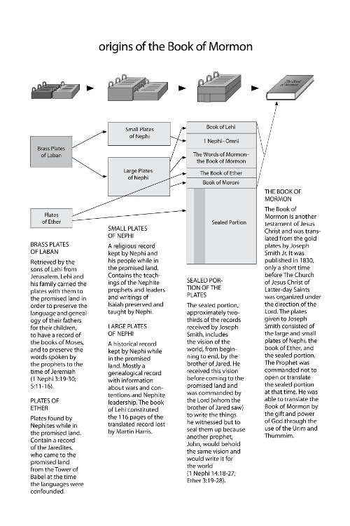
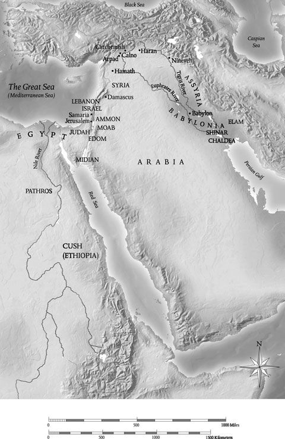
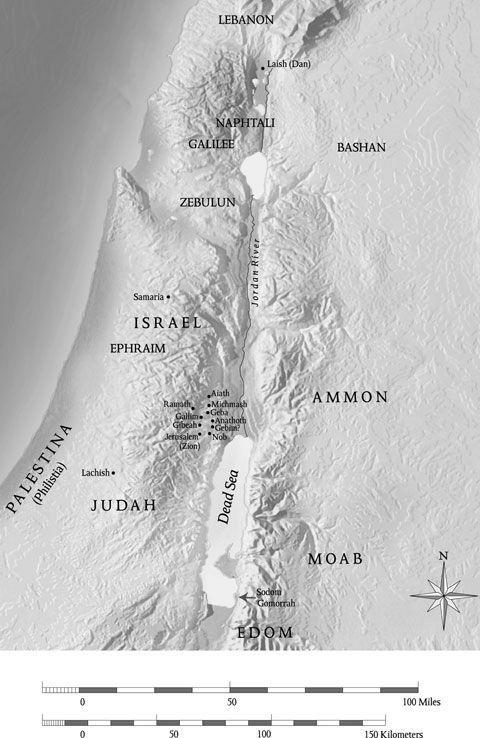
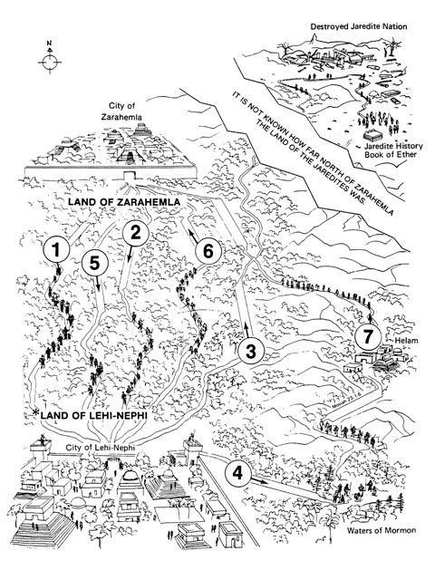
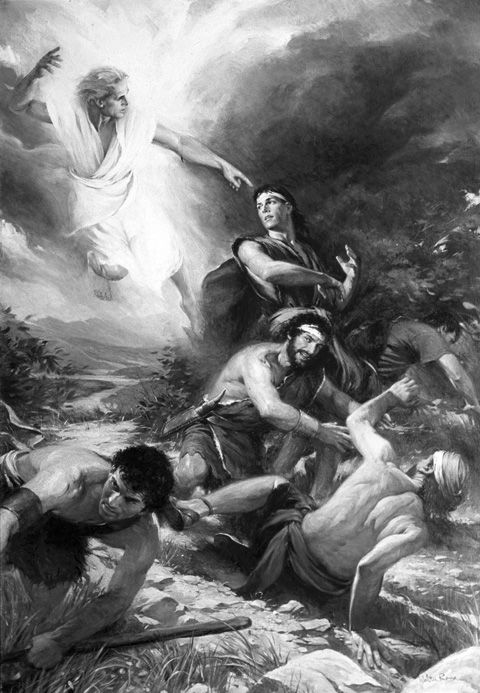
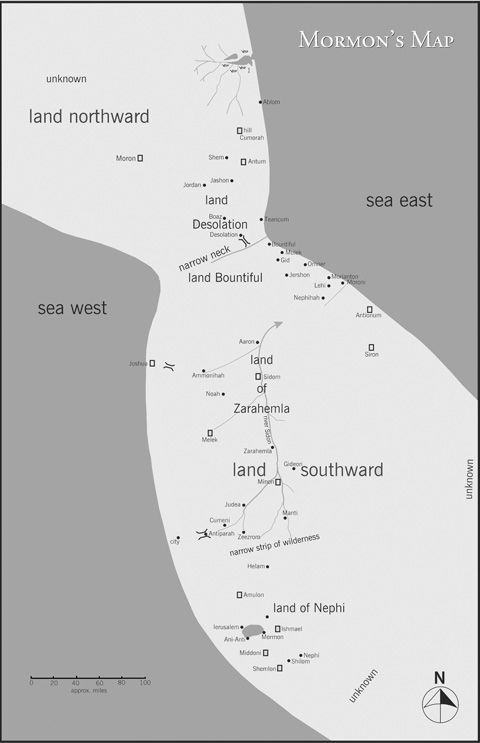
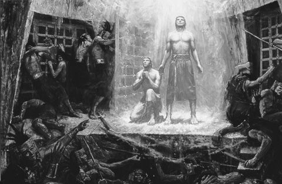
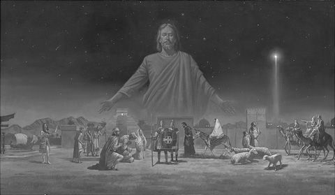
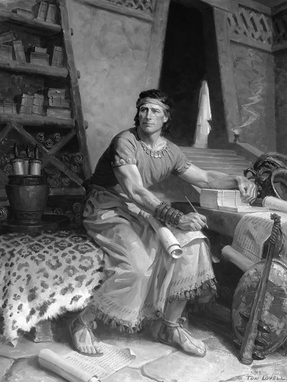

Verse by Verse
Verse by Verse Book of Mormon 2-in-1 eBook Bundle
D. Kelly Ogden, Andrew C. Skinner
© 2012 D. Kelly Ogden, Andrew C. Skinner.
All rights reserved. No part of this book may be reproduced in any form or by any means without permission in writing from the publisher, Deseret Book Company (permissions@deseretbook.com), P.O. Box 30178, Salt Lake City Utah 84130. This work is not an official publication of The Church of Jesus Christ of Latter-day Saints. The views expressed herein are the responsibility of the author and do not necessarily represent the position of the Church or of Deseret Book. Deseret Book is a registered trademark of Deseret Book Company.
Library of Congress Cataloging-in-Publication Data
Ogden, D. Kelly (Daniel Kelly), 1947– author.
Verse by verse : The book of Mormon. Volume 1, 1 Nephi through Alma 29 / D. Kelly Ogden and Andrew C. Skinner.
p. cm.
Includes bibliographical references and index.
ISBN 978-1-60908-740-1 (hardbound : alk. paper)
1. Book of Mormon—Commentaries. I. Skinner, Andrew C., 1951– author. II. Title.
BX8627 .O33 vol. 1 2011
289.3'22—dc23 2011019588
Printed in the United States of AmericaPublishers Printing, Salt Lake City, UT
10 9 8 7 6 5 4 3 2 1
Visit us at DeseretBook.com
Library of Congress Cataloging-in-Publication Data
Ogden, D. Kelly (Daniel Kelly), 1947– author.
Verse by verse : The book of Mormon. Volume 1, 1 Nephi through Alma 29 / D. Kelly Ogden and Andrew C. Skinner.
p. cm.
Includes bibliographical references and index.
ISBN 978-1-60908-740-1 (hardbound : alk. paper)
1. Book of Mormon—Commentaries. I. Skinner, Andrew C., 1951– author. II. Title.
BX8627 .O33 vol. 1 2011
289.3'22—dc23 2011019588
Printed in the United States of AmericaPublishers Printing, Salt Lake City, UT
10 9 8 7 6 5 4 3 2 1
Other volumes in the Verse by Verse series by D. Kelly Ogden and Andrew C. Skinner
The Four Gospels
Acts through Revelation
The Book of Mormon, vol. 2: Alma 30 through Moroni 10
Table of Contents
Opening Pages of the Book of Mormon
The First Book of Nephi
The Second Book of Nephi
The Book of Jacob
The Book of Enos
The Book of Jarom
The Book of Omni
The Words of Mormon
The Book of Mosiah
The Book of Alma
The Book of Helaman
The Third Book of Nephi
The Fourth Book of Nephi
The Book of Mormon
The Book of Ether
The Book of Moroni
Preface
The series Verse by Verse, which began with The Four Gospels and Acts through Revelation, continues with The Book of Mormon, a verse-by-verse commentary that is one book in two volumes. This division reflects the way in which courses on the Book of Mormon are structured in seminary, in the institutes of religion, and on the various campuses of Brigham Young University: 1 Nephi 1 through Alma 29, and Alma 30 through Moroni 10.
The introduction to the two volumes appears, of course, in the first volume, and the index to both volumes is found at the end of the second. Each volume contains its own table of contents, notes, and sources. Occasionally, cross-references between the two volumes appear in the text.
We acknowledge the assistance of many colleagues and students at Brigham Young University for their helpful suggestions during the years of preparation of these books. We express gratitude to Dennis L. Largey for permission to use several maps from Book of Mormon Reference Companion. We extend particular appreciation to the production team at Deseret Book Company: Cory Maxwell, director of publishing; Suzanne Brady, senior editor; Shauna Gibby, designer; and Rachael Ward, typographer.
We dedicate these writings to Marcia Hammond Ogden and Janet Corbridge Skinner, our dear wives, who are also ardent students and teachers of the Book of Mormon, and to our children and grandchildren.
Most of all, we thank our Heavenly Father and his Son, Jesus Christ, and all the prophets and other faithful record-keepers for their dedicated attention to preserving eternal truths that they knew would be crucial for us in these last days.
Introduction
There is no book like the Book of Mormon. It is the most correct of any book on earth; it is the keystone of Latter-day Saint faith (Book of Mormon, Introduction). Indeed, The Church of Jesus Christ of Latter-day Saints stands or falls with the truthfulness of the Book of Mormon.1The Lord himself testifies of its truthfulness (D&C 17:6). He acted as one of its editors (3 Nephi 23:7–14), and it stands as a supreme witness of him (Book of Mormon, Title Page). More than half of the verses in the Book of Mormon refer to Jesus Christ. The book presents one hundred name-titles of our Lord and testifies of the reality of God the Father and his interest in his children. It is a primer on the Father’s great plan of happiness.
President Ezra Taft Benson declared: “The Lord Himself has stated that the Book of Mormon contains the ‘fulness of the gospel of Jesus Christ’ (D&C 20:9). That does not mean it contains every teaching, every doctrine ever revealed. Rather, it means that in the Book of Mormon we will find the fulness of those doctrines required for our salvation. And they are taught plainly and simply so that even children can learn the ways of salvation and exaltation.” 2
The Book of Mormon was of inestimable value in laying the foundation for the restoration of the gospel in these latter days. President Benson explained that a “powerful testimony to the importance of the Book of Mormon is to note where the Lord placed its coming forth in the timetable of the unfolding Restoration. The only thing that preceded it was the First Vision. ... Think of that in terms of what it implies. The coming forth of the Book of Mormon preceded the restoration of the priesthood. It was published just a few days before the Church was organized. The Saints were given the Book of Mormon to read before they were given the revelations outlining such great doctrines as the three degrees of glory, celestial marriage, or work for the dead. It came before priesthood quorums and Church organization. Doesn’t this tell us something about how the Lord views this sacred work?” 3
The Book of Mormon is of immense value to each of us personally. It serves as a personal scriptural tutor, no matter what our station or situation might be—prophet or Primary child, Saint or unrepentant sinner, scholar or simple student. President Benson continued: “The Book of Mormon ... was written for our day. The Nephites never had the book; neither did the Lamanites of ancient times. It was meant for us. ... Each of the major writers of the Book of Mormon testified that he wrote for future generations. ... If they saw our day, and chose those things which would be of greatest worth to us, is not that how we should study the Book of Mormon? We should constantly ask ourselves, ‘Why did the Lord inspire Mormon (or Moroni or Alma) to include that in his record? What lesson can I learn from that to help me live in this day and age?’” 4
The Book of Mormon teaches us to hear the voice of inspiration (1 Nephi 18:3; Enos 1:2–4, 10; Helaman 5:30; 3 Nephi 11:3). It teaches us how we should live and how we will be judged (Moroni 10:32–34). It reveals to us the enemies of Christ and his gospel: false doctrines, false educational philosophies, characteristics of false teachers, pride, apathy, and Lucifer, the chief enemy of Christ. 5 It serves as a guide concerning the future. It discloses the pattern of the Second Coming and how to prepare for it (Acts 1:11; 3 Nephi 1–11). It brings the Spirit of the Lord into the lives of those who study it. “There is a power in the [Book of Mormon] which will begin to flow into your lives the moment you begin a serious study of the book,” President Benson testified, “You will find greater power to resist temptation. You will find the power to avoid deception. You will find the power to stay on the strait and narrow path. ... When you begin to hunger and thirst after those words, you will find life in greater and greater abundance.” 6
Years ago, Elder Marion G. Romney of the Quorum of the Twelve (later of the First Presidency) promised the following, based on his experience: “I feel certain that if, in our homes, parents will read from the Book of Mormon prayerfully and regularly, both by themselves and with their children, the spirit of that great book will come to permeate our homes and all who dwell therein. The spirit of reverence will increase, mutual respect and consideration for each other will grow. The spirit of contention will depart. Parents will counsel their children in greater love and wisdom. Children will be more responsive and submissive to the counsel of their parents. Righteousness will increase. Faith, hope, and charity—the pure love of Christ—will abound in our homes and lives, bringing in their wake peace, joy, and happiness.” 7
This commentary is written to help us as families and individual students of the Book of Mormon study this great volume of scripture in a personal fashion, suggesting ways its messages can be likened to our own circumstances. Other excellent commentaries exist; this one is not a replacement for them. Rather, it emphasizes applying the Book of Mormon to our lives as individuals and families in this age just before the Second Coming. It also combines the best interpretive information from many sources—including matters doctrinal, historical, geographical, and linguistic—in a simplified manner to help each of us make the most of our time with the Book of Mormon.
Some might ask, “Do we need another study guide for the Book of Mormon?” We would answer yes! We can never do too much with the Book of Mormon. President Benson reminded us of this when he stated, “The Book of Mormon is studied in our Sunday School and seminary classes every fourth year. This four-year pattern, however, must not be followed by Church members in their personal and family study. We need to read daily from the pages of the book that will get a man ‘nearer to God by abiding by its precepts, than by any other book.’ (History of the Church, 4:461.)” 8
In the early days of the Church in this dispensation, missionaries returning home were reproved by the Lord because they had treated lightly the Book of Mormon. As a result, their minds and spirits became darkened. This slight to the Book of Mormon brought the whole Church under condemnation. “And,” said the Lord, “they shall remain under this condemnation until they repent and remember the new covenant, even the Book of Mormon” (D&C 84:57). Years ago, President Benson asked, “Are we still under that condemnation?” 9 All of us may answer for ourselves. Each one must do all we are capable of doing to bring the Book of Mormon to the attention of the world. We have prepared this commentary not only to help us to remember “the new covenant” but to learn its teachings and live them.
Notes
^1. Benson, “Book of Mormon—Keystone of Our Religion,” 6.
^2. Ibid., 6.
^3. Ibid., 4.
^4. Ibid., 6.
^5. Largey, “Enemies of Righteousness,” 7–11.
^6. Benson, “Book of Mormon—Keystone of Our Religion,” 7.
^7. Romney, “Book of Mormon,” 67.
^8. Benson, “Flooding the Earth with the Book of Mormon,” 4.
^9. Benson, Witness and a Warning, 7.
Opening Pages of the Book of Mormon
Title Page
The Prophet Joseph Smith said the title page of the Book of Mormon is a literal translation of the last leaf of the plates written by Moroni. 1 It is really a synopsis of the book and Moroni’s final testimony.
In Joseph Smith’s day, the question of writing on metal plates was huge—a claim thought by some to disprove the book’s ancient provenance. Not anymore! Examples of inscribed metal plates in museums and libraries from Europe to Asia number literally in the hundreds. The languages on these plates range from Akkadian (dating to around 2450 B.C.) to comparatively recent ancient languages like Greek and Latin. Several examples of engraved plates have also been discovered in Central and South America. 2 One of the most interesting recently discovered instances of inscribed metal plates is housed in the Bulgarian National Museum of History in Sofia, Bulgaria. It is an ancient book, comprising six pages composed of almost 24-karat gold, bound together by gold rings. The language on the plates is Etruscan, and the book was prepared about the time Lehi and his family left Jerusalem. It generally fits the description of the Book of Mormon plates given by Joseph Smith in his letter to John Wentworth: “These records were engraven on plates which had the appearance of gold, each plate was six inches wide and eight inches long, and not quite so thick as common tin. They were filled with engravings, in Egyptian characters, and bound together in a volume as the leaves of a book, with three rings running through the whole. The volume was something near six inches in thickness, a part of which was sealed. The characters on the unsealed part were small, and beautifully engraved. The whole book exhibited many marks of antiquity in its construction, and much skill in the art of engraving.” 3
The title page makes clear that the Book of Mormon is a gift of God and an interpretation of sacred events—not merely a translation. We do not know exactly how Joseph Smith’s work of translation proceeded. All of the witnesses to the process thought that the Prophet somehow saw words and dictated them to his scribes. The witnesses are also unanimous that Joseph did not have any helps or prompts with him during the translation process—no books or manuscripts or papers. Emma Smith, who acted as scribe for a short time, insisted Joseph had no text with him during the work of translation. And there was no great secrecy, pretense, or flowery display of spiritual power exhibited during the period of translation. “The plates,” said Emma, “often lay on the table without any attempt at concealment, wrapped in a small linen table cloth, which I had given him to fold them in.” 4 Truly, the translation was by the gift and power of God, as the title page indicates, through the efforts of a humble man called to be a prophet.
David Whitmer repeatedly asserted that the work of translation took place in full view of Joseph Smith’s family and associates. The sometimes-repeated description of a curtain hanging between Joseph and his scribe (also represented in some illustrations of the story of the Book of Mormon) is based on a misunderstanding. There was a curtain, at least in the later stages of translation. However, it was not suspended between translator and scribe but hung close to the front door of the Peter Whitmer home to prevent curious onlookers and visitors from interfering with the work of translation. 5
At least five purposes of the book are summarized by Moroni on the title page:
• To show unto the remnant of the house of Israel what great things the Lord has done for them through their fathers
• To teach the remnant of the house of Israel the covenants of the Lord
• To show the house of Israel that they are not cast off forever
• To convince Jew and Gentile that Jesus is the Christ, the eternal God
• To convince Jew and Gentile that Jesus manifests himself to all nations
In our day, President Ezra Taft Benson emphasized that “the Book of Mormon was designed by Deity to bring men to Christ and to His church.” 6 We who live in these last days are part of the remnant of the house of Israel of whom Moroni spoke (D&C 86:8–9; Abraham 2:9–11).
Moroni also emphasized that the Book of Mormon is an abridgment of other records. The following chart may help to show how our current Book of Mormon is related to the various groups of plates spoken of in the record and in historical sources.
Notes
^1. Smith, History of the Church, 1:71.
^2. Cheesman, “Ancient Writing on Metal Plates,” 42–47.
^3. Smith, History of the Church, 4:537; see also Tvedtnes, “Etruscan Gold Book,” 7.
^4. Peterson, “Response,” 68.
^5. Ibid.
^6. Benson, Witness and a Warning, 51.
The Testimony of Three Witnesses and the Testimony of Eight Witnesses
Included in the front matter of the Book of Mormon are The Testimony of Three Witnesses and The Testimony of Eight Witnesses. Doctrine and Covenants 17 is a revelation given to the Three Witnesses prior to their viewing the engraved plates that contained the Book of Mormon record. 7 These witnesses were foreknown anciently (Ether 5:2–4; 2 Nephi 11:3; 27:12). The Lord emphasized that it was by their faith and the power of God that the witnesses would obtain a view of the plates, and he charged them to testify of the things they would see. Also noteworthy, evident from the names of the Eight Witnesses, is that the restoration of the gospel rested on the shoulders of a few righteous families, which was also true of the establishment of the Church of Jesus Christ in the Savior’s day.

Note
^7. Smith, History of the Church, 1:52–57.
The First Book of Nephi
The First Book of Nephi relates the ministry of Nephi from his family’s departure out of the land of Jerusalem to their arrival in the promised land. The first part of his journal-history is a synopsis of his father’s record: “I make an abridgment of the record of my father, upon plates which I have made with mine own hands; wherefore, after I have abridged the record of my father then will I make an account of mine own life” (1 Nephi 1:17). His own account begins in chapter 10. Nephi shows us how important journal-keeping really is.
Twenty years before the Book of Mormon begins, the kingdom of Judah was experiencing its last period of greatness. The Assyrian Empire was rapidly disintegrating, and the righteous King Josiah expanded the political borders of Judah, instigated rigorous religious reforms, and established relative peace. Josiah’s life ended tragically at Megiddo, where he had gone at the head of his armies to attempt to stop the Egyptian advance under Pharaoh Nechoh II toward the Euphrates. Nechoh wanted to support the last Assyrian king in a stand against the new Babylonian Empire, and after Josiah’s death pharaoh flexed his military muscle to control all of Judah’s political life. That situation lasted for about four years, until the Babylonian invasions began. Josiah’s death marked the beginning of the end for the kingdom of Judah (2 Kings 22–23).
Josiah’s son Jehoahaz was made king after his father’s death in 609 B.C., but Pharaoh Nechoh took him away to Egypt and put his brother Eliakim on the throne. Eliakim’s name was changed to Jehoiakim.
Jehoiakim reigned for eleven years, until 598 B.C., after which Nebuchadnezzar bound him and carried him away to Babylon along with thousands of others, including Ezekiel. Jehoiakim’s son Jehoiachin was allowed to rule as a vassal or puppet king of the Babylonians. He reigned only three months, and then Nebuchadnezzar summoned him to Babylon along with “ten thousand captives, and all the craftsmen and smiths” (2 Kings 24:14). His uncle Mattaniah, whose name was changed to Zedekiah, began to reign. Book of Mormon history begins in the first year of Zedekiah’s reign, which, according to Bible chronology, was 598 or 597 B.C. The Book of Mormon designates the year of its beginning, and the first year of Zedekiah’s reign, as six hundred years before the coming of Christ into the world.
Lehi and his family were living at Jerusalem (1 Nephi 1:4, 7; 2 Nephi 25:6). The preposition at in this case could mean in, within, close by, or near. Lehi could have lived several miles away and still lived at Jerusalem. It is recorded at least thirty-three times throughout the Book of Mormon that Lehi and Nephi went out from “the land of Jerusalem.” Any satellite towns or villages that surrounded larger population or political centers were regarded in ancient times as belonging to those larger centers. That Lehi and his family lived outside of Jerusalem proper is also evidenced in the account of the sons’ attempt to obtain the plates with their abandoned wealth: “We went down to the land of our inheritance, and we did gather together our gold, and our silver, and our precious things. And after we gathered these things together, we went up again unto the house of Laban” (1 Nephi 3:22–23).
1 Nephi 1:1–3
Nephi began his record with a note about his goodly parents. The adjective goodly may mean distinguished, esteemed, or respected—an allusion to both moral and spiritual status. These days we might consider using the term awesome. Nephi gave particular credit to his father, from whom he had received a proper education and learned of the goodness and mysteries of God. Generations of writers following Nephi bore similar testimony of the valuable instruction of their fathers. For example, the first sentence inscribed on the plates by Enos was a eulogy of his father, Jacob, for having planted some seeds of eternal consequence deep in his heart: “I, Enos, knowing my father that he was a just man—for he taught me in his language, and also in the nurture and admonition of the Lord” (Enos 1:1). The revered King Benjamin caused his three sons to be “taught in all the language of his fathers, that thereby they might become men of understanding; and that they might know concerning the prophecies” (Mosiah 1:2). It appears to be a characteristic of goodly parents to spend significant time and energy teaching their children the things of God. In promising great blessings to Abraham, the father of hundreds of millions, the Lord said that “Abraham shall surely become a great and mighty nation. ... For I know him, that he will command his children and his household after him, and they shall keep the way of the Lord, to do justice and judgment; that the Lord may bring upon Abraham that which he hath spoken of him” (Genesis 18:18–19).
All of these Book of Mormon passages refer to the language of the fathers. Language facility, the ability to communicate with others, is the life-breath of any civilization. We see its importance as Lehi’s sons were required to make a lengthy trek to secure some metal plates, which would ensure their emigrant colony some cultural stability and continuity. Lehi’s sons were taught in the learning of the Jews and the language of the Egyptians. The sons had likely been educated in Hebrew and Aramaic grammar and vocabulary (Aramaic being the language of diplomacy and commerce at the time), but it appears that they had learned to express their thoughts in written form in Egyptian characters. Lehi had been “taught in the language of the Egyptians therefore he could read [the brass plates’] engravings, and teach them to his children” (Mosiah 1:4). Perhaps Lehi mastered the Egyptian language, as Joseph and Moses before him. There appears to have been considerable commercial and cultural interchange between Judah and Egypt in the late 7th century B.C. Archaeological excavations show great Egyptian influence in this period, rising out of that nation’s rule over the land of Judah for some years prior to the opening of the Book of Mormon record. Egyptian soldiers, merchants, and travelers were present and active during that period.
Nephi said that he had seen many afflictions during his growing-up years, but also he had been “highly favored,” or highly blessed. Blessings and afflictions are part of a normal mortal life. Couldn’t all of the noble and great ones start out their life’s record with those same observations? Couldn’t Abraham, Moses, Isaiah, Peter, Paul, and Joseph Smith have summarized their life with the words—“having seen many afflictions in the course of my days”? Perhaps some of us could summarize our lives the same way. This is not a bad thing, for it means the Lord is working in our lives. He thinks enough of us to send us refining experiences.
1 Nephi 1:4
Nephi wrote that “there came many prophets, prophesying unto the people that they must repent, or the great city Jerusalem must be destroyed.” Amos taught that the Lord God would do nothing “but he revealeth his secret unto his servants the prophets” (Amos 3:7). The Lord always gives sufficient warning; “never hath any of them been destroyed save it were foretold them by the prophets of the Lord” (2 Nephi 25:9). For such a dramatic and devastating destruction as was coming, the cast of prophets was indeed, as the Book of Mormon says, “many.” Lehi, Jeremiah, Huldah, Zephaniah, Habukkuk, Ezekiel, and one Urijah of Kirjath-jearim (Jeremiah 26:20) were all contemporaries.
“And the Lord God of their fathers sent to them by his messengers, rising up betimes, and sending; because he had compassion on his people, and on his dwelling place: but they mocked the messengers of God, and despised his words, and misused his prophets, until the wrath of the Lord arose against his people, till there was no remedy” (2 Chronicles 36:15–16).
1 Nephi 1:5–20
The Book of Mormon begins with the story of a family and a people in crisis. While Lehi was out teaching in the city, he prayed earnestly in behalf of his family and his people. As he prayed he saw and was taught many things through a spiritual manifestation that caused his whole body to tremble. He was physically exhausted by the spiritual work (see also 1 Nephi 17:47; 19:20; Alma 27:16–18; Daniel 8:27; Moses 1:10; Joseph Smith–History 1:20); he cast himself upon his bed and was overcome by the Spirit. He saw a heavenly court full of brilliant beings. One of them handed Lehi a book with the judgment to be passed upon Jerusalem: death, destruction, and deportation to Babylon. This represents Lehi’s call to be a prophet; his experience parallels that of others, including Ezekiel (Ezekiel 1:1), Alma (Alma 36:22), and Joseph Smith (D&C 137:1).
Lehi was to the people of his day what Joseph Smith is to our day. As with other prophets, Lehi then went forth to boldly declare what he had seen and heard. He detailed for Jerusalem’s citizens a lengthy catalog of their sins; the result was mockery, anger, and violence. That the city of Jerusalem was doomed to destruction could not have been such shocking news to the Jews, as other prophets had issued the same warning. Jeremiah had been sounding that warning for nearly three decades already. What could be so difficult about believing that people would be taken captive to Babylon when thousands had already been taken? Surely someone would now be ready to listen! But people do not like to hear about their sins, especially when they are enjoying them and have no inclination to change. Lehi’s hearers wanted to remove his antagonizing, grating voice.
Another significant witness Lehi bore to his Jerusalem audience was of the coming of a Messiah, for “none of the prophets have written, nor prophesied, save they have spoken concerning this Christ” (Jacob 7:11; see also 3 Nephi 20:24). John later exclaimed that “the testimony of Jesus is the spirit of prophecy” (Revelation 19:10); that is, testifying of Jesus is the essence of prophecy. Even six hundred years before he would come in the flesh, the people needed to know to whom they should look for a remission of their sins. Lehi was a special witness of Jesus Christ.
1 Nephi 1:6
During Lehi’s first vision there came a “pillar of fire and dwelt upon a rock,” and he “saw and heard much” (so did Joseph Smith; see Joseph Smith–History 1:20, 41, 54). The pillar of fire “dwelt upon” a rock—the Hebrew verb shakhan means to be situated or rest upon (compare Deuteronomy 33:16, “dwelt in the bush”). Another form of the word is Shekhinah, which refers to the divine Presence. The pillar of fire was actually the presence and glory of the Lord. Joseph Smith also saw a pillar of fire, or “a pillar of light” (Joseph Smith–History 1:16). 1
Note
^1. See also Smith, History of the Church, 4:536.
1 Nephi 1:8–11
Nephi reported in idiomatic terms that his father, Lehi, saw God sitting upon his throne. (“He thought he saw” means “it seemed to him that ...”; compare “methought” in 1 Nephi 8:4 and Alma 36:22.) Others have also envisioned the throne room of Deity (Isaiah 6:1–4; Revelation 4:1–4; D&C 76:20–21). Lehi’s vision included a book. The same happened later to John the Beloved (Revelation 10:9) and to Joseph Smith (Joseph Smith–History 1:30–34). The book from which Lehi was instructed to read contained scenes of the future of God’s people, including judgments to be poured out on Jerusalem.
1 Nephi 1:15
“His whole heart was filled”—in many cultures, ancient and modern, the heart has been considered the center of emotion and affection, and figurative language has centered around the feelings of the heart. Lehi’s heart being full is an idiomatic expression for his whole being swelling with deep sentiment of praising and rejoicing.
1 Nephi 1:20
This verse provides comforting assurance to all those who earnestly seek true discipleship: “The tender mercies of the Lord are over all those whom he hath chosen, because of their faith, to make them mighty.” The Lord is merciful to the chosen—that is, to those who choose him—to deliver them from whatever challenges they will encounter; faith brings power to be delivered from any negative influence bearing down on us.
1 Nephi 2:1–3
Lehi was faithful in fulfilling his calling to teach of the Messiah and call his people to repentance. They wanted to kill him because of his teachings. Objections to true teachings are usually a cover-up for not wanting to abandon sins.
The Lord warned Lehi in a dream to take his family and depart into the wilderness. Why Lehi? What qualified this citizen of the kingdom of Judah, a descendant of Manasseh, to lead a colony of Israelites through the wilderness to a new promised land? Lehi understood and could guide a diverse society. Members of tribes other than Judah had taken up residence in the land of Jerusalem years before. First Chronicles 9:3 notes, “In Jerusalem dwelt of the children of Judah, and of the children of Benjamin, and of the children of Ephraim, and Manasseh.’’ Lehi, Laban, and Ishmael were all from the tribes of Joseph.
The scriptural record contains hints that Lehi was wealthy (1 Nephi 2:4; 3:16, 22). The Mediterranean world was alive with mercantile activity in this period of time, with Syria and Canaan serving as a hub of sea and land commerce at the place where continents and cultures came together. Caravans traversed Judah from all directions: side roads off the coastal highway and the King’s Highway; the distant Frankincense Trail; pilgrims’ highways and trade routes connecting Moab, Edom, and Arabia with Gaza and Egypt. Lehi could have been a trained and experienced caravaneer and trader. He knew what provisions to prepare and what route to take. Knowing how God has worked in other periods of history, we believe it is not unlikely that he selected a man who, in addition to his spiritual maturity and responsiveness, was already adapted to the particular task at hand, in this case desert travel and survival. He was the right man for the right time. 2
Note
^2. Nibley, Approach to the Book of Mormon, 45–74.
1 Nephi 2:4–5
Lehi and his family abandoned all unnecessary possessions and gathered together appropriate provisions for an indefinite period of travel in the desert. Besides the tents especially mentioned, they would need food, emergency water, extra clothing, bedding, cooking equipment and eating utensils, weapons, and pack animals, probably camels.
Lehi and some family members were willing to live the law of sacrifice, as outlined in Lectures on Faith: “A religion that does not require the sacrifice of all things never has power sufficient to produce the faith necessary unto life and salvation. ... The faith necessary unto the enjoyment of life and salvation never could be obtained without the sacrifice of all earthly things.” 3
The word wilderness occurs more than three hundred times in the Book of Mormon and may at some later time in the Western Hemisphere refer to the thick forests or jungle, but it does not mean lush vegetation in reference to Judah and its neighboring deserts. Two Hebrew terms for wilderness are midbar and jeshimon. Midbar is generally land to the east of the central hills, east of the agricultural fields, out into the rain shadow, with a sparce vegetation. These are tracts for pasturing flocks. Jeshimon is the desolate wasteland beyond, where little rain falls. The Judean desert through which Lehi and his family journeyed is at first midbar and then jeshimon. It is known scripturally as a place of flight and refuge. It is a frightening place for the uninitiated.
In recent years, researchers have ventured to describe the route Lehi and his family took from Jerusalem to the Red Sea. Gospel scholar Sidney B. Sperry wrote as follows: “As for a route to the Red Sea, they had two choices: they could go either directly south of Jerusalem by the road through Hebron and Beersheba and thence through the great wilderness to the northern tip of what is now the gulf of Aqaba, or they could go directly east across the Jordan until they struck the ancient ‘King’s Highway’ and then proceed south, or nearly so, until the Gulf of Aqaba was reached. Lehi probably used the western route.” 4 Lynn and Hope Hilton expanded the possibilities to three: (1) eastward from Jerusalem through the Judean wilderness to the plateau on the eastern side of the Rift Valley to the King’s Highway; (2) southward from Jerusalem, past Hebron and Beersheba, and then eastward to join the Rift Valley, called the Arabah; or (3) straight east to the northern end of the Dead Sea, past Qumran, En Gedi, Masada, and on south to the Red Sea.
The Hiltons considered the first option, the King’s Highway, unlikely because of passage through foreign lands with border complications, taxes, and so on. They also saw the second option as improbable because the route remains in the hill country, near population centers, instead of entering the wilderness as the account says. The Hiltons, therefore, concluded that the third option was the likely route. 5
Based on our personal experience of walking from Jerusalem to the Red Sea, it seems unlikely to us that Lehi’s family would have used the King’s Highway or that they would have journeyed straight southward through populated centers, such as Hebron and Beersheba. The account specifically points to immediate entry into the wilderness. The Hiltons’ preferred route (east to the area of Qumran and then south) is also unlikely, however, as the fault escarpment of the Rift Valley drops down dramatically to the waters of the Dead Sea and allows no passage to the south. There was no evidence of a road along the northwestern shore of the Dead Sea before the Israelis cut and paved one in 1967.

Possible route of Lehi's journey
We believe that a more likely course for Lehi’s journey is southeast out of Jerusalem toward Tekoa and then along an ancient road to En Gedi (called the cliff or ascent of Ziz in 2 Chronicles 20:16), and thence southward through the Rift Valley and Arabah. An alternate route could have been from Tekoa southward, passing between the villages of Juttah and Carmel, down into and across the eastern Negev eastward to the Arabah.
Notes
^3.
Lectures on Faith, 66.
^4. Sperry, Book of Mormon Compendium, 97–98.
^5. Hilton and Hilton, In Search of Lehi’s Trail, 38.
1 Nephi 2:6
Having arrived at the shores of the Red Sea, Lehi and his party decided to continue on for another three days, after which they established camp “in a valley by the side of a river of water.” The phrase “river of water” seems redundant to western ears, since we are accustomed to thinking of rivers as consisting only of water. In the Near East, however, most rivers are not perennial but contain water only in the rainy season, for relatively few days of the year. Usually such a riverbed is dry and sandy and quite passable for travel. If Lehi’s family pitched their tents near a flowing stream, that may tell us something about what time of year it was; perhaps it was spring, the time of winter runoff.
1 Nephi 2:7–9
Lehi, along with all other prophets, held the Melchizedek Priesthood. 6 Lehi’s family had no Levitical or Aaronic Priesthood holders among them. Such priesthood functions as offering sacrifices (Hebrew corban), though usually executed under the direction of Aaronic or Levitical Priesthood in biblical times, could also be carried out by those who held the higher priesthood, which comprehends all lower powers (D&C 107:8). Lehi was authorized to perform sacrifices by virtue of the Melchizedek Priesthood he held.
Lehi built an altar of stones to make an offering and give thanks. It was an altar of unhewn stones as stipulated in Exodus 20:25. The wording is intentional, again showing the Book of Mormon to be translated from an ancient Semitic record. It was not a “stone altar,” which might allow for cut, fitted stones, but an “altar of stones.”
Lehi then began naming various geographical features around the camp. All hills, rock outcroppings, valleys, and other topographical details were and are given names in the Near East. The ancient Hebrew people loved imagery and figures of speech. The most powerful way to illustrate a truth was to find something in the human experience or conduct that corresponded to something in nature. If only Laman could be like this temporary river, or even better, like a perennial river, continuously flowing toward the source of righteousness! Many parents have wished that blessing for children experiencing difficulties. Likewise, the prophet Amos pleaded with northern Israelites to “let judgment run down as waters, and righteousness as a mighty [or everflowing] stream” (Amos 5:24). The two prophets wished that their people would be more constant and stable in their devotion and loyalty to God and his purposes.
Note
^6.
Joseph Smith [manual], 109.
1 Nephi 2:10
Three of our favorite words in the Book of Mormon are firm,
steadfast, and immovable. On 31 May 1994, hurricane-force winds swept through Utah’s Wasatch Front with destructive results, especially in Provo. Brigham Young University equipment clocked the winds at 121 miles per hour. Though only five minutes in duration, the winds ripped apart or felled upwards of five thousand trees. Provo City announced within a few days that the total loss approached $9 million. One house had four very tall pine trees lying flat in the yard and out into the street, with huge but shallow root systems exposed. There’s the gospel lesson: it is not enough to grow tall and broad and beautiful. Shallowness is perilous. We must sink deep roots and be solidly planted to withstand the storms of life; be firm, steadfast, and immovable—enduring, solid, and stable.
1 Nephi 2:11–24
These verses give us insights into the character of Lehi’s four sons. Laman and Lemuel are portrayed as stubborn, hard-hearted, lovers of money, faithless, and spiritually weak. Nephi and Sam, on the other hand, are humble seekers of knowledge and of God, faithful, and obedient to parents. The latter two sons are exemplary, deserving of being emulated, which, since we all need role models, is one of the main purposes for the painstaking engraving of the metal plates—to preserve for us in modern times some examples or patterns for our lives. President Heber J. Grant wrote: “I read the Book of Mormon as a young man and fell in love with Nephi more than with any other character in [secular] or sacred history that I have ever read of, except the Savior of the world. No other individual has made such a strong impression upon me as did Nephi. He has been one of the guiding stars of my life.” 7
Consider the four brothers. The marvel is not that some complained about the hardships in leaving all and journeying into the wilderness but that others did not! Conditions were such that anyone could have murmured. Murmuring may be defined as half-suppressed or muttered complaint, grumbling behind the scenes rather than being openly critical, or disloyal.
What was the reason for Nephi’s amazing ability to press forward positively and not join in the grumbling and rebellion? Nephi wanted to know the things of God; he prayed, and the Lord visited him and softened his heart—which suggests the possibility that his heart was somewhat hard before.
God raises up the young, those malleable and teachable, not set in their ways, to accomplish tasks that will confound the wise—allowing the “weak things of the world” to “break down the mighty and strong ones” (D&C 1:19).
Faith and faithfulness are always rewarded. Nephi and all the others were called upon to make a great sacrifice, to leave behind practically all they had known; but the Lord promised that they would eventually possess more and greater blessings. We of modern times struggle with that principle also. One of the most dangerous problems we face is wanting immediate gratification. Few people, it seems, believe in postponement—if we want something, we want it now. Adam and Eve sacrificed a pleasant existence in the Garden of Eden for something ultimately and infinitely better, though immediately harder. Moses sacrificed prestige in a kingly court for the noble task of suffering the sands and complaints of Sinai. Elijah, Amos, Isaiah, Jeremiah, and all the other prophets sacrificed comfort and security to fulfill a difficult duty with eternal rewards.
In the Lord’s economy, whenever we give up something or go without, we find ourselves in eventual possession of more and greater. During the tests of his faithfulness, Job lost almost everything he had; his story concludes, however, with a simple note that he was blessed in the end with more than he had in the beginning. Lehi’s family sacrificed their possessions, their riches, to follow the old patriarch into the great Arabian desert and over the sea; but after their journey, they possessed a land of amazingly abundant wealth. The promises of the Lord to Lehi and to Nephi, as with our own patriarchal blessings, must have encouraged and sustained them through the sometimes bitter trials they had to endure along the way.
As Lehi and his family traveled through the Rift Valley and near the Red Sea, perhaps they were inspired by the example of the prophet-hero Moses, who led their ancestors through some of the same terrain to their promised land. Lehi’s wilderness journeys were shorter in time but greater in distance.
Note
^7. Grant, “Dream, O Youth!” 524.
1 Nephi 2:24
Because God is a personal God, tailor-made pains, hardships, trials, obstacles, or adversities may come into our lives to stir us up to remember God. See also Helaman 12:1–3.
1 Nephi 3:1–6
The Lord commanded Lehi in a dream to send his sons back to Jerusalem for the plates of brass, then in the possession of an elder of the Jews named Laban. Lehi and his family did not have their own copy of the scriptures—roughly equivalent to our Old Testament—and Lehi did not want his children growing up without them, so the brothers had to go back.
Those plates were of such importance that the prophet was willing to risk all of his sons’ lives to obtain them. There’s a lesson on the significance of scripture study: the Lamanites continued without prophets and without scripture, and their society rapidly deteriorated.
We might ask, why did the Lord wait until they were more than two hundred miles away from home to command Lehi to get the plates? Could not arrangements have been made for them before the family left Jerusalem? One more test! The older brothers immediately protested. We may suppose that their foremost reason for not wanting to go was their fear of Laban; but there is no doubt that the distance and topography also had some bearing on their resistance. The Book of Mormon itself and most Book of Mormon commentaries say little, if anything, about the distance and terrain involved.
We have learned by walking it that the distance between Jerusalem and the Red Sea is two hundred miles. An agreeable pace for a group of people on camels would be between twenty and thirty miles a day. So the journey was a minimum of seven or eight days. Add to that the three days they traveled after reaching the Red Sea, and the figures are up to 260 to 290 miles in ten or eleven days. That is one direction only. The round trip that the Lord and father Lehi were asking of the four sons was more than 500 miles and at least three weeks through some of the most rugged terrain in the Near East. And they had no idea how they were going to obtain the plates. Having the advantage of “knowing the end from the beginning,” we are amazed to think ahead and realize that Lehi, soon after his sons returned from their first assignment, would command them to go back again. That is over a thousand miles and many weeks on those desolate tracts of land—and we have often looked down on Laman and Lemuel for being chronic complainers.
1 Nephi 3:2
In the early chapters of the Book of Mormon we are introduced to fascinating linguistic phenomena arising out of the Hebrew language and culture from which the record came. These expressions are called Hebraisms, sets of words or phrases that appear in English but with Hebrew-like construction. The small plates of Nephi especially, written mostly by Nephi and Jacob, who knew Hebrew, would understandably feature many examples of Hebraisms.
One of the most common Hebraisms is the cognate accusative, in which Hebrew verbs and their related nouns are used in the same phrase, something writers try to avoid in English. Old Testament examples with which these migrating Israelites would be familiar are “bloom blossoms” (Numbers 17:8); “sacrificed sacrifices” (1 Samuel 11:15); “divine divinations” (Ezekiel 13:23); and “preach the preaching” (Jonah 3:2).
Book of Mormon examples include “curse ... with a curse” (1 Nephi 2:23); “dreamed a dream” (1 Nephi 3:2); “yoketh ... with a yoke” (1 Nephi 13:5); “work a ... work” (1 Nephi 14:7); “write the writing” (2 Nephi 3:18); “build buildings” (2 Nephi 5:15); “desire which I desired” (Enos 1:13); “taxed with a tax” (Mosiah 7:15); “peopled with a people” (Mosiah 8:8); “judge ... judgments” (Mosiah 29:43); “warred a ... warfare” (Alma 1:1); “number ... not numbered” (Alma 3:1); “sing the song” (Alma 5:26); and “die a ... death” (Alma 12:16).
These and many other examples corroborate the fact that the Book of Mormon originated from ancient Semitic cultures and languages.
1 Nephi 3:3
The Book of Mormon continually refers to the “plates of brass,” whereas in English they would be called the “brass plates.” In 1 Nephi 8:19 we learn about the “rod of iron,” what we would normally call the “iron rod.” This particular manner of expression, called the construct state, utilizes two nouns. There are many interesting examples: “mists of darkness” (1 Nephi 12:17); “works of darkness” (2 Nephi 25:2); “words of plainness” (Jacob 4:14); “words of soberness” (Jacob 6:5); “plates of ore” (Mosiah 21:27); “ornaments of gold” (Alma 31:28); “houses of cement” (Helaman 3:7); and “plans of wickedness” (Ether 13:15).
1 Nephi 3:7–8
Having already worked things out with the Lord, Nephi responded positively to the Lord’s command. In one of the most inspiring outpourings of faith in all of scripture, Nephi assured his father that he would go and do the things the Lord had commanded because he knew that the Lord never gives a command without providing some way to fulfill it. A believing attitude is a characteristic of every great soul. “As the Lord liveth, and as we live, we will not go down unto our father in the wilderness until we have accomplished the thing which the Lord hath commanded us” (1 Nephi 3:15).
1 Nephi 3:9–31
The brothers set out with their tents to go up to the land of Jerusalem. Approaching Jerusalem from any direction requires an ascent in elevation. All the locative adverbs (the “downs” and “ups”) in the next pages of scripture accurately depict the topography of Judah and the deserts to the south.
After Laman’s attempt to talk Laban out of the plates, the brothers agreed to go down to the land of their inheritance (which suggests that their holdings were outside the city proper), gather the gold, silver, and other valuable objects they had left behind, and offer them to Laban in exchange for the plates. They went up again to Laban’s house in Jerusalem, and upon their failure to secure the plates by that means, they fled for their lives and hid in a cave, or “cavity of a rock.” Caves are numerous in the Judean hills and desert.
Having exhausted their resources and their patience, Laman and Lemuel had some hard words for their younger brothers. They resorted to physical violence and even questioned the Lord’s ability to resolve the situation, until stopped by an angel. The angel again commanded them to go up and get the plates, saying that the Lord would deliver Laban into their hands. After all human effort was expended, the Lord himself would help them accomplish the task. This is a life-lesson for each of us.
1 Nephi 3:29–30
The witness of the Spirit is more powerful and indelible than seeing a messenger from heaven, a truth poignantly illustrated by President Wilford Woodruff:
“One of the Apostles said to me years ago, ‘Brother Woodruff, I have prayed for a long time for the Lord to send me the administration of an angel. I have had a great desire for this, but I have never had my prayers answered.’ I said to him that if he were to pray a thousand years to the God of Israel for that gift, it would not be granted, unless the Lord had a motive in sending an angel to him. I told him that the Lord never did nor never will send an angel to anybody merely to gratify the desire of the individual to see an angel. If the Lord sends an angel to anyone, He sends him to perform a work that can be performed only by the administration of an angel.
“Now, I have always said, and I want to say it to you, that the Holy Ghost is what every Saint of God needs. It is far more important that a man should have that gift than he should have the ministration of an angel.” 8
Angels Are Coming to Visit the Earth
The Hebrew word for angels is malachim, meaning “messengers.” The role of angels is to call men to repentance, to help fulfill the covenants of the Father, and to prepare the way for the Savior by declaring his words to his chosen vessels so they can bear sure testimony of him (Moroni 7:31). Angels sometimes have to speak with the “voice of thunder” (when people are spiritually hard of hearing; see 1 Nephi 17:45; Mosiah 27:11; Alma 36:7). Other times they speak not with a “voice of thunder” or a voice of “great tumultuous noise” but with a “pleasant voice,” a “still voice of perfect mildness, as if it had been a whisper ... [to] pierce even to the very soul” (Helaman 5:46, 30).
During Jesus’ mortal life there was frequent contact between him and his heavenly home. Angels announced his birth (Luke 1:26–38; 2:8–15) and his forerunner’s birth (Luke 1:11–20); they were present at the Transfiguration (in the form of translated beings; Matthew 17:3; Luke 9:30–31); at least one angel ministered to him in Gethsemane (Luke 22:43); angels attended his sepulcher and bore witness of his glorious resurrection (JST, Matthew 28:2–4; Luke 24:4–7; John 20:11–13); and they appeared at his ascension into heaven (Acts 1:10–11).
Angelic messengers were also involved in the work of God in the Western Hemisphere during Book of Mormon times. Following are examples:
• 1 Nephi 3:29–30. An angel appears to Lehi’s sons.
• 1 Nephi 11–14. An angel guides Nephi through a vision of the future.
• 2 Nephi 10:3; Jacob 7:5. Angels teach Jacob.
• Mosiah 3:2–27; 4:1. An angel teaches King Benjamin and testifies of Christ (possibly Abinadi; see commentary at Mosiah 15:1).
• Mosiah 27:11–18. An angel appears to Alma and the four sons of Mosiah.
• Alma 8:14–18. The same angel appears to Alma again.
• Alma 8:20; 10:7. An angel appears to Amulek.
• Alma 13:24–26; 19:34; 39:19. Angels appear and teach many in the land.
• Moroni 7:17. The devil and his angels also appear to some (see also Sherem in Jacob 7:17 and Korihor in Alma 30:53).
Elder Jeffrey R. Holland testified of the role of angels: “I believe we need to speak of and believe in and bear testimony of the ministry of angels more than we sometimes do. They constitute one of God’s great methods of witnessing through the veil, and no document in all this world teaches that principle so clearly and so powerfully as does the Book of Mormon.” 9
President Joseph F. Smith taught: “We are told by the Prophet Joseph Smith, that ‘there are no angels who minister to this earth but those who do belong or have belonged to it.’ Hence, when messengers are sent to minister to the inhabitants of this earth, they are not strangers, but from the ranks of our kindred, friends, and fellow-beings and fellow-servants. The ancient prophets who died were those who came to visit their fellow creatures upon the earth. ... In like manner our fathers and mothers, brothers, sisters and friends who have passed away from this earth, having been faithful, and worthy to enjoy these rights and privileges, may have a mission given them to visit their relatives and friends upon the earth again, bringing from the divine Presence messages of love, of warning, or reproof and instruction, to those whom they had learned to love in the flesh.” 10
Notes
^8. Woodruff, address at Weber Stake conference, Ogden, Utah, 19 Oct. 1896; cited in Ludlow, Companion, 191.
^9. Holland, “For a Wise Purpose,” 17.
^10. Smith, Gospel Doctrine, 435–36; emphasis added.
1 Nephi 4:1–38
One more time they went up to Jerusalem. Nephi drew some parallels with Moses. The great deliverer from Egypt was backed up with his people against a wall of water. He had no further human recourse, so the Lord took over. If the Lord could deliver all those Israelites from the pharaoh, He could also deliver these Israelites from Laban. The four approached the walls of Jerusalem at night. Nephi “crept into the city and went forth towards the house of Laban.” He had no plan in mind but was led by the Spirit.
Finding Laban lying drunk in the road, Nephi was told by the Spirit to kill him. Hugh Nibley wrote of Laban: “A few deft and telling touches resurrect the pompous Laban with photographic perfection. We learn in passing that he commanded a garrison of fifty, that he met in full ceremonial armor with ‘the elders of the Jews’ (1 Nephi 4:22) for secret consultations by night, that he had control of a treasury, that he was of the old aristocracy, being a distant relative to Lehi himself, that he probably held his job because of his ancestors, since he hardly received it by merit, that his house was the storing place of very old records, that he was a large man, short-tempered, crafty, and dangerous, and to the bargain cruel, greedy, unscrupulous, weak, and given to drink.” 11
Nephi was repulsed by the idea of slaying Laban. Nevertheless, the Spirit again counseled him: The Lord delivered Laban to Nephi; it was in answer to a prayer; Laban was a thief and a murderer; and there were precedents for the Lord’s slaying wicked people to accomplish his righteous purposes (the Flood, the conquest of Canaan, and so on). As Joseph Smith taught, “Whatever God requires is right, no matter what it is, although we may not see the reason thereof till long after the events transpire.” 12 It would be better for this one man to die than for an entire (future) nation to dwindle and perish in unbelief, which would happen without those records. Slaying one man to preserve a people seems to have been an ancient oral legal tradition in Judaism because it surfaces again when Jewish leaders were contemplating a rationale for executing Jesus of Nazareth. Said Caiaphas, the high priest, “Ye know nothing at all, nor consider that it is expedient for us, that one man should die for the people, and that the whole nation perish not” (John 11:49–50).
Nephi continued to reason that future generations would need the commandments on the plates and the Lord had devised this method for Nephi to obtain them. Having reasoned this out, Nephi obeyed the Spirit and carried out the unpleasant job of dispatching Laban into the next world by cutting off his head. He then disguised himself and imitated Laban well enough to convince Laban’s servant to open the treasury, get the plates, and follow Nephi outside the walls of the city.
Along the way there was talk about what the elders of the Jews had been discussing that night, possibly including the delicate political turmoil in which they were enveloped. Nephi reassured his frightened brothers that he was not Laban. He also convinced Zoram that he could stay with them and be a free man, and he bound him with an oath to do so. Then the five set out down through the wilderness on the long journey back to the main camp.
On the matter of oath-taking and the trust Nephi and others placed in Zoram, an example from modern times is instructive. It comes from W. F. Lynch and his team from the United States Navy who conquered the wilds of the same Rift Valley in the mid-nineteenth century:
“Sometime after the agreement was made, Akil [their Arab guide] returned and expressed a wish to be released. I ascertained that some of his timid followers had been dissuading him, and held him to his obligation. ... At our former meeting I advanced him money for his expenses and the purchase of provisions, for which he refused to give a receipt or append his seal. ... I had, therefore, nothing but his word to rely upon, which I well knew he would never break. ‘The bar of iron may be broken, but the word of an honest man never,’ and there is as much honour beneath the yellow skin of this untutored Arab, as ever swelled the breast of the chivalrous Coeur de Lion. He never dreamed of falsehood.” 13
Nephi and his brothers could trust Zoram because of the sanctity of oaths in those cultures, ancient and modern. In the gospel sense, an oath is a solemn declaration or absolute promise, calling on someone or something considered sacred by the oath-maker (often God) to witness the truth of the declaration or the binding nature of the promise being made. Throughout the ancient world, oaths carried an added measure of sanctity beyond a mere promise. In ancient Israel oaths were regarded as extraordinary promises, binding the oath-maker’s very soul: “If a man vow a vow unto the Lord, or swear an oath to bind his soul with a bond; he shall not break his word, he shall do according to all that proceedeth out of his mouth” (Numbers 30:2). We have reason to believe that even among dishonorable persons, oaths were regarded as inviolable. When the daughter of Herodias danced before Herod the tetrarch and his entourage, Herod “promised with an oath to give her whatsoever she would ask” (Matthew 14:7; see also Mark 6:23). She asked for the head of John the Baptist. “And the king was sorry: nevertheless for the oath’s sake ... he commanded it to be given her” (Matthew 14:9).
Notes
^11. Nibley, Lehi in the Desert, 97.
^12. Smith, History of the Church, 5:135.
^13. Lynch, Narrative of the United States’ Expedition, 276.
1 Nephi 4:13
A pair of missionaries in Santiago, Chile, wrote to their president about a woman they were teaching: “She started reading the Book of Mormon, and she got to the part where Nephi killed Laban. She didn’t understand how God could command someone to kill another. It bothered her, and she went to bed with that doubt. During the night a bolt of lightning woke her up, and she immediately thought of David and Goliath. She thought that if God could command David to kill Goliath, then why not Nephi? Then, she said, a feeling of peace and tranquility came over her.”
1 Nephi 5:1–9
During the long weeks of her sons’ absence, Sariah mourned for them, thinking that the worst had probably happened. She complained against her husband (a touch of marital conflict that occurs with even the most righteous couples), telling him that he was a visionary man; they had lost their home, then lost their sons, and were now going to lose their own lives. The normal response to accusation is defense and counteraccusation. Lehi, however, responded to Sariah’s complaint with comfort. When people complain, they often need comfort. Lehi’s faith was Sariah’s comfort. He had been promised that his sons would return, and he believed the promise. When the sons finally returned, Sariah’s faith in her prophet-husband was confirmed, and the family rejoiced and gave thanks by offering up burnt offerings; then everyone’s attention turned to examining their new treasure, the plates of brass.
Incidentally, the plates could actually be referred to as the plates of bronze. Brass is an alloy of zinc (unknown to the ancients) and copper, but bronze is an alloy of copper and tin (both known and used). The centuries before the Israelites arrived in the land of Canaan are known archaeologically as the Bronze Age.
1 Nephi 5:10–22
The plates that Lehi’s sons had obtained at the peril of their lives would prove of inestimable value to prophets, historians, and numberless righteous people for a thousand years. The plates of brass were preserved for the Nephites just as the Book of Mormon was preserved for us. Thus Lehi prophesied that “these plates of brass should go forth unto all nations, kindreds, tongues, and people who were of his seed.” He further prophesied “that these plates of brass should never perish.”
As Lehi’s family and Zoram scrutinized the plates in their tent-camp on the shores of the Red Sea, they learned that the plates contained the five books of Moses—presumably Genesis, Exodus, Leviticus, Numbers, and Deuteronomy—including an account of the creation of the world and of Adam and Eve, their family’s genealogy (Lehi was a descendant of Joseph, who was a great-grandson of Abraham), a record of the Jews, and the prophecies of the holy prophets from the beginning down to the commencement of the reign of Zedekiah, even prophecies that had been spoken by Jeremiah. Laban also was a descendant of Joseph. Either he or some scribal assistants had been interested in recording two decades of Jeremiah’s prophecies.
1 Nephi 6:1–6
We know from later writings that it was not easy to inscribe on metal plates. Yet Nephi worked at it earnestly because his whole intent was to “persuade men to come unto the God of Abraham, and the God of Isaac, and the God of Jacob, and be saved.” Nephi followed the example of the great patriarch Abraham, who noted in his own writings, “I shall endeavor to write some of these things upon this record, for the benefit of my posterity that shall come after me” (Abraham 1:31).
1 Nephi 7:1–6
Then Lehi had another revelation: the sons must go back to the land of Jerusalem once again. Yet another test! But the record does not say that they murmured about having to return for their future brides; that was a fairer proposal—bringing marriageable women into the growing colony was apparently worth the aching bones and muscles of an additional long journey.
We might wonder how another family, without direct revelation from the Lord, would be so willing to abandon their home and all they had known to join these refugees in the wilderness. We can only surmise from the record of Nephi that Ishmael believed the words of the Lord that Jerusalem would soon be destroyed by the enemy armies who already occupied the city. Besides, Lehi’s sons had quite a story to tell about how an angel had appeared and how the Lord had miraculously made it possible to secure their genealogical and scriptural records. The one reason given in Nephi’s account for the family’s willingness to go was that “the Lord did soften the heart of Ishmael, and also his household, insomuch that they took their journey with us down into the wilderness.”
Our tradition that Ishmael’s ancestry went back to Ephraim, son of Joseph, is based on a discourse given by Elder Erastus Snow in Logan, Utah, on 6 May 1882. He said, “The prophet Joseph informed us that the record of Lehi was contained on the 116 pages that were first translated and subsequently stolen, and of which an abridgement is given us in the first Book of Nephi, which is the record of Nephi individually, he himself being of the lineage of Manasseh; but that Ishmael was of the lineage of Ephraim, and that his sons married into Lehi’s family, and Lehi’s sons married Ishmael’s daughters.” 14
From Elder Snow’s statement and from 1 Nephi 7:6 we may suppose that two of Ishmael’s sons had married daughters of Lehi and Sariah. That would mean the two families were already related by marriage, which might explain Lehi’s seeming nonchalance about instructing his sons to bring Ishmael’s family down into the wilderness. Those married children of Lehi and Ishmael could already have had some daughters of their own who could later marry Lehi’s sons, Jacob and Joseph, born in the wilderness. There might already have been additional marriage plans between the two families—only the setting for the ceremonies would now have to change from the city to the desert. Another reason why Ishmael’s family in particular was elected to join Lehi’s was that Ishmael had five unmarried daughters; the four sons of Lehi along with Zoram would in time marry Ishmael’s daughters—a perfect five-way match set up in advance by the Lord.
Note
^14. Erastus Snow, in Journal of Discourses, 23:184.
1 Nephi 7:4–5
Here is an application for modern missionaries finding a whole family prepared by the Lord: (1) “We went up unto the house of Ishmael,” the investigator; (2) “we did gain favor in the sight of Ishmael” by establishing a relationship of trust and confidence; (3) “we did speak unto him the words of the Lord”; (4) “the Lord did soften the heart of Ishmael, and also his household”; and (5) “they took their journey with us”; they were willing to join with them.
1 Nephi 7:6–22
The final journey from Jerusalem to the Red Sea was not without the usual friction, and even open conflict, between Nephi and his elder brothers. Laman and Lemuel again vented their anger on Nephi to the point of physical violence.
Why didn’t Laman and Lemuel just get up one morning and make the hike back to Jerusalem? Why their incessant efforts to kill Lehi and Nephi and then go back to Jerusalem? Isaiah 53:9 may give us insight by describing why Jesus was crucified: “because he had done no violence [or evil], neither was any deceit in his mouth.” Few things can stir up anger in the unrighteous as much as confronting the truth. Laman and Lemuel knew that their father and brother were telling the truth, and they were angry because of it. They were jealous and envious and proud. Some of the Jewish leaders had the same problem with Jesus. Nobody welcomed them into the city by throwing down palm fronds in their path. Nobody was being healed by them. There were no great crowds flocking around them to hang on their every word. Something had to be done about this righteous person who always spoke the truth. They had him crucified. The two oldest sons of Lehi had in their hearts to do likewise: slay their father and brother.
The rebels were finally pacified only by the pleading of some of Ishmael’s family. Their hearts were actually softened enough that they bowed down and asked Nephi’s forgiveness. The greatness of Nephi’s soul is again revealed in his terse summation of the episode: “I did frankly forgive them all that they had done.” Even after such rebelliousness, belligerence, rudeness, harshness, and spite, Nephi could frankly forgive. Is not this our own great charge?
The Lord had now warned at least eighteen people to flee from the wrath to come over Jerusalem: Lehi, Sariah, Laman, Lemuel, Sam, and Nephi; Zoram; Ishmael, his wife, five daughters, and two sons with their wives. We do not know, but there may also have been children from the latter four.
In some ways it must have been a sacrifice for Lehi and his family to leave Jerusalem, but their lives were spared by doing so. What about the other two trips? The main reasons the four men were commanded to trek a thousand miles through the inhospitable desert were (1) records—for knowledge of ancestry and prophecy and (2) marriages—for posterity. What they were doing was tied to the past as well as to the future. They needed to preserve the knowledge and memory of one nation while producing with their wives another, so that the covenants of the Lord might be fulfilled.
1 Nephi 8
Do we, like Lehi, want our family and close friends to partake of God’s love? What are we doing every day to help them get to the tree of life? In the first issue of the Ensign, President Joseph Fielding Smith asked these provocative questions about our investment in our families: “Do you spend as much time making your family and home successful as you do in pursuing social and professional success? Are you devoting your best creative energy to the most important unit in society—the family? Or is your relationship with your family merely a routine, unrewarding part of life?” 15
Note
^15. Smith, “Message from the First Presidency,” 1.
1 Nephi 8:5–8
Lehi saw a man dressed in a white robe, Christ or his representative, who invited Lehi to follow him. The prophet saw himself in a dark and dreary waste; after many hours in darkness, he prayed. When we are in darkness resulting from our pride or that of others, sin, or contention, we, too, must pray. That is what Joseph Smith did: he was in doctrinal darkness and then in the darkness of Satan’s personal attack, but after he prayed, the greatest Light came.
1 Nephi 8:9–12
Lehi saw a large and spacious field. Usually in the scriptures the field is the world (see also Matthew 13:38). He saw a tree, whose fruit could make one happy. When he partook, it turned out to be the sweetest thing he had ever tasted, and it filled him with the greatest joy. It was more desirable than any other fruit. We note that Lehi partook first. President Harold B. Lee once said we can’t lift another until we ourselves are on higher ground. Lehi then wanted his family also to partake of this fruit that represents the love of God (1 Nephi 11:22). That is the main message of the Book of Mormon: Come unto Christ, be filled with his love, and learn to love others as he does.
1 Nephi 8:13–18
Lehi invited Sariah, Sam, and Nephi to come and partake. Note that the righteous were invited first and their place secured. Lehi then invited Laman and Lemuel, but they refused to come. Imagine the personal pain he felt. Did Lehi fail as a parent? The record is clear that he had taught them and showed them how to live, but they exercised their agency to deny themselves the blessings of righteous living. Nevertheless, as a dedicated father, Lehi refused to give up on them. He continued to minister to them and exhorted them “with all the feeling of a tender parent.”
Elder Robert D. Hales taught: “We too must have the faith to teach our children and bid them to keep the commandments. We should not let their choices weaken our faith. Our worthiness will not be measured according to their righteousness. Lehi did not lose the blessing of feasting at the tree of life because Laman and Lemuel refused to partake of its fruit. Sometimes as parents we feel we have failed when our children make mistakes or stray. Parents are never failures when they do their best to love, teach, pray, and care for their children. Their faith, prayers, and efforts will be consecrated to the good of their children.” 16
President Henry B. Eyring observed: “In some cases ... parents are desperately trying to bring back some in their family who have wandered. I am confident that there will be, increasingly, a reward given by God for their efforts. Those who never give up will find that God never gave up and that He will help them.” 17
Notes
^16. Hales, “With All the Feeling of a Tender Parent,” 88.
^17. Eyring, “True and Living Church,” 22.
1 Nephi 8:19–32
Influences that keep people away from the most desirable fruit are mists of darkness; shame, scorn, embarrassment, mockery, and scoffing; forbidden paths or strange roads; and the fountain of filthy water (see also 1 Nephi 12:16–18).
Influences that encourage people toward the most desirable fruit are the strait and narrow path and the rod of iron to hold onto (see also 1 Nephi 11:25; 15:23–24). Since one cannot necessarily see the tree—the end is not in plain sight—faith is required.
1 Nephi 8:23, 32
Mist consists of thousands of tiny water particles that obscure our view and confuse us. Examples of the world’s “mists of darkness” and the “strange roads” that many people take include distractions offered by the sports and entertainment worlds; the vile allurements of the pornography producers; the enticements of money and its power to obtain the things of this world; the seductions to satisfy, even in perverse ways, the lusts of the flesh through substance abuse, illicit sexual relations, and so on. The master of evil knows no bounds for deceiving, blinding, covering up, justifying, misguiding, and keeping us—in every way possible—from clearly seeing and pressing forward to the fruit that gives life. The only sure way of holding steady on the path to the tree of life is to hold to the rod. We have been reminded that the iron rod does not pass through the lobby of the great and spacious building. The iron rod is the word of God, especially the Book of Mormon. By continually holding onto the iron rod—the daily habit not just of reading but of searching, pondering, and treasuring up—our path is made secure. Holding onto the word of God cannot be loose or haphazard but must be a tight grip, a constant grasp.
1 Nephi 8:26
Of this passage one student of the scriptures wrote: “I was reading in 1 Nephi, the part when Nephi received his own vision of the tree of life. ... Have you ever wondered how the wicked get into the building if it doesn’t touch ground? Well, they’re lifted up in the pride of their hearts,” and they have no foundation.
Elder Neal A. Maxwell commented on worldly people mocking the righteous: “The laughter of the world is merely loneliness pathetically trying to reassure itself.” 18 Inhabitants of the great and spacious building use some of Lucifer’s greatest tools—scorn, mockery, and peer pressure—to defeat the weak (those not thoroughly committed to God’s kingdom) who were partaking of the fruit but became ashamed because the world made fun of them. The adversary will use the ways of the world to draw away disciples after him. President Daniel H. Wells presciently stated, “There will come a time, ... in the history of the Saints, when they will be tried with peace, prosperity, popularity and riches.” 19
See also commentary at Helaman 12:1–3.
Notes
^18. Maxwell, “Cleanse Us from All Unrighteousness,” 19.
^19. Daniel H. Wells, in Journal of Discourses, 19:367.
1 Nephi 8:30
The many people who pressed forward, holding fast to the word of God, finally arrived at the tree and fell down and partook of the fruit. Note that in 11:24, Nephi says he “saw many fall down at [Christ’s] feet and worship him.” They fall to their knees out of pure respect and adoration. Notice the contrast: the wicked are lifted up in pride; the righteous are falling down in humility.
1 Nephi 8:36
Lehi “exceedingly feared for Laman and Lemuel ... lest they should be cast off from the presence of the Lord.” One mission president provided a modern example of Lehi’s concern:
“A rock group performed a concert in the area last night, in a big stadium right in the middle of our mission. Seventy thousand people attended. When we heard that the group was coming, we wondered if any of our missionaries would defile themselves with a heavy dose of worldliness and attend it (totally against mission rules). To their credit, as far as we know, almost all of them just kept on working, and obeying. Except two. One missionary finished his mission last week but is still in the country, touring with his parents who came to pick him up. This afternoon he went back to his last proselyting area, and invited his last companion (still fairly young in the mission, and a potential leader), and he agreed to go to the concert with him.
“I was so tired last night that I went to bed about 11 p.m., then at 1 a.m. was awakened by a call from the young missionary’s current companion, who felt horrible that he had allowed his companion to go to the concert without calling the president and saying something. Today I called them all in, including the returning missionary and his parents. I lovingly chastised the young missionary and called him to repentance. He was quite remorseful and anxious to be forgiven.
“The missionary who leaves tonight for the States, who has been Spiritless for several months, told me he regretted having taken his former companion to the concert, but he had not an ounce of regret for having gone himself. He doesn’t care at all whether someone thinks he is disobedient or not. I was appalled at his attitude. As kindly as I could, I also called him to repentance and warned him that he was heading for big trouble. I asked him if he honestly desired someday to live with Heavenly Father and his Son, our Savior. He said, with a somewhat defiant grin on his face, ‘Well, I’m not really sure.’ ‘You mean to tell me,’ I replied, ‘that you’ve been teaching and testifying for two years, and you admit you’re not even sure you want to be with God yourself?’ ‘Yes, I guess that’s what I’m saying.’ I told him that I feared for him and once again called on him to examine himself and consider seriously if he really wants to pursue the path to misery. It all reminds me of Lehi’s fearful concern for his sons, Laman and Lemuel. I next had a talk with his parents and commiserated with them, for they, too, fear for their son.”
1 Nephi 9
No question it was hard work making a set of smooth metal plates to engrave. When commanded to make a second set, even without knowing the reason why, Nephi was obedient and went right to work. He was convinced the Lord knows all things, prepares the way to accomplish whatever he commands, and has all power to follow through on every word he utters. We now know the Lord required Nephi to make another record because part of Mormon’s abridgment of Nephi’s other record would be lost by Martin Harris. 20 See also the commentary at 1 Nephi 19:1–6 and Words of Mormon 1:7.
Note
^20. Smith, History of the Church, 1:21.
1 Nephi 10:1–3
Nephi, giving his own account, continued to quote his father. Lehi prophesied, as had Isaiah, that his people would be exiled to Babylon but that they would return again to their homeland. Though the tribes of Israel were carried off and lost to Israelite history, the tribe of Judah would not be completely destroyed. A remnant must return, for the Messiah was to come though Judah, and he had to be born in the land of Jerusalem.
Names and Titles for God
God the Father
Heavenly Father
Elohim (2,500 times in Hebrew Bible)
Man of Holiness (Moses 6:57)
Ahman (in Journal of Discourses, 2:342)
God the Son
Firstborn Son in the spirit; Only Begotten Son in the flesh
Jehovah (6,800 times in Hebrew Bible)
Lord
Son of Man (of Holiness)
Son Ahman (D&C 78:20)
Many name-titles—all teaching of his divine attributes: Creator, Redeemer, King, Judge, Immanuel, Good Shepherd, Lamb of God, Bread of Life, Living Water, True Vine, Light of the World, Rock, and many more
Jesus Christ: “Anointed Savior”—most frequently used name
Jesus (Hebrew, Yeshua): “Salvation” or “Savior”
Christ (Greek, Christos) and Messiah (Hebrew, Mashiakh): “Anointed One”
1 Nephi 10:4–6
Lehi and his sons prophesied plainly of the Holy One who would come six hundred years after their departure from Jerusalem. To be sure their message was unequivocally clear, they labeled and described him using several divine titles: prophet, Messiah, Savior, Redeemer, Lamb of God, Lord, and Son of God.
“The Book of Mormon prophets often made reference to ‘God’ or ‘the Lord’ without any indication of whether Elohim or Jehovah was intended. [Verse 4] has obvious reference to the fact that Elohim our Father (here designated ‘the Lord God’) would raise up and send his Only Begotten Son (Jesus Christ, also sometimes designated as ‘the Lord God’). Elder Bruce R. McConkie taught: ‘Most scriptures that speak of God or the Lord do not even bother to distinguish the Father from the Son, simply because it doesn’t make any difference which God is involved. They are one. The words or deeds of either of them would be the words and deeds of the other in the same circumstance. Further, if a revelation comes from, or by the power of the Holy Ghost, ordinarily the words will be those of the Son, though what the Son says will be what the Father would say, and the words may thus be considered as the Father’s.’ (‘Our Relationship with the Lord,’ [1982 Brigham Young University Fireside and Devotional Speeches, Provo: Utah, BYU Publications, 1982], p. 101).” 21
Note
^21. McConkie and Millet, Doctrinal Commentary on the Book of Mormon, 1:64–65.
1 Nephi 10:7–10
Of the prophet who would come to prepare the way for the Messiah, the Prophet Joseph Smith taught:
“The question arose from the saying of Jesus—‘Among those that are born of women there is not a greater prophet than John the Baptist; but he that is least in the kingdom of God is greater than he.’ How is it that John was considered one of the greatest prophets? His miracles could not have constituted his greatness.
“First. He was entrusted with a divine mission of preparing the way before the face of the Lord. Whoever had such a trust committed to him before or since? No man.
“Secondly. He was entrusted with the important mission, and it was required at his hands, to baptize the Son of Man. Whoever had the honor of doing that? Whoever had so great a privilege and glory? Whoever led the Son of God into the waters of baptism, and had the privilege of beholding the Holy Ghost descend. ...
“Thirdly. John, at that time, was the only legal administrator in the affairs of the kingdom there was then on the earth, and holding the keys of power. The Jews had to obey his instructions or be damned, by their own law; and Christ Himself fulfilled all righteousness in becoming obedient to the law which he had given to Moses on the mount, and thereby magnified it and made it honorable, instead of destroying it. The son of Zacharias wrested the keys, the kingdom, the power, the glory from the Jews, by the holy anointing and decree of heaven, and these three reasons constitute him the greatest prophet born of a woman.” 22
Note
^22.
Joseph Smith [manual], 81–82.
1 Nephi 10:9
“These things were done in Bethabara beyond Jordan, where John was baptizing” (John 1:28). “Beyond Jordan” is the name of a region on the east side of the Jordan River (Greek Perea). According to Lehi’s prophecy, Bethabara was the name of the site of John’s baptizing. Bethabara appears on the Medeba Map at the natural fording place east of Jericho entering Perea. (The Medeba Map is a sixth-century mosaic map in Medeba, Jordan; it is the oldest known cartographic representation of the Holy Land in existence.) In Hebrew, Beth-abara or Beth-avara means “place of crossing.” At such an important juncture along a major east-west travel route, John could have taught souls coming from the regions of Judea, Perea, Galilee, Decapolis, and Phoenicia. “They came unto John, and said unto him, Rabbi, he that was with thee beyond Jordan [Perea], to whom thou barest witness, behold, the same baptizeth, and all men come to him” (John 3:26). Just across the Jordan opposite Jericho is where the closing scenes of the ministries of the great prophets Moses and Elijah occurred—an appropriate location for the opening scenes of the ministries of the great Forerunner and the Messiah.
1 Nephi 10:11
The gospel (glad tidings of great joy) would be preached among the Jews; they would reject it and reject their Messiah. They would have him killed, and after he rose from the dead he would make himself manifest, by the Holy Ghost, to the Gentiles—which manifestations are recorded in the New Testament books of Acts through Revelation.
The term Gentiles is used many times from this point on in the Book of Mormon, so it would be wise to define its meaning: “During the meridian dispensation ... the gospel went preferentially to the Jews first and to the Gentiles second. In the final dispensation the order would be reversed. Note again that to the Nephites, Jews were nationals, persons from the kingdom of Judah. In this sense, the Nephites and Lamanites—though genealogically of the tribe of Joseph—were Jews (see 2 Nephi 30:4; 33:8). Gentiles were all other peoples, including those who were of the house of Israel but who would be found among other nations on earth. ... In this sense, the Latter-day Saints are called Gentiles (see D&C 109:60).” 23
Note
^23. McConkie and Millet, Doctrinal Commentary on the Book of Mormon, 1:70, 89; paragraphing altered.
1 Nephi 10:12–14
The house of Israel is compared to an olive tree, whose branches are broken off and scattered worldwide; the Lehite colony’s migration to the New World is part of the fulfillment of the prophecy that the house of Israel would be scattered upon all the face of the earth. The comparison to an olive tree is an affirmation of the authentic ancient provenance of the text of the Book of Mormon. Israelite tradition equated the house of Israel with an olive tree. Jeremiah 11:16 indicates that Jehovah called Israel “a green olive tree, fair and of goodly fruit.” Later rabbinic commentary expounded on that symbolism, calling Israel a leafy and fair olive tree that shed light on all others. This imagery possibly came from the coloration of the underside of the olive leaf (silvery and light) as well as the fact that olive oil was burned for light. It is not happenstance in the Bible that when Gideon’s youngest son, Jotham, climbed Mount Gerizim and proclaimed a parable to the citizens of Shechem, the olive tree was given priority of place (Judges 9:7–11).
After the prophesied scattering of Israel comes a prophesied gathering. Read verse 14 carefully, noting the little word or. This is a classic example of plainness, continually clarifying to make sure no one misses the message. Notice also that the or signals wanting to add to or rephrase something that has already been written; it is hard to erase something that has been carved into metal plates!
1 Nephi 10:15–22
Nephi wanted to see and hear and know the things that had been revealed to his father, and he asserts that others may also know if they are willing to diligently seek to know them. The Prophet Joseph Smith taught that “God hath not revealed anything to Joseph, but what He will make known unto the Twelve, and even the least Saint may know all things as fast as he is able to bear them.” 24 Nephi testified that God is unchangeable—the same yesterday, today, and forever—and that he is willing to unfold his mysteries to anyone willing to diligently seek him, in modern times as in ancient times.
Note
^24.
Joseph Smith [manual], 268.
1 Nephi 10:20–22
Every soul will be taken back to God’s presence for judgment (2 Nephi 2:10; 9:22, 38; Alma 11:41, 44; 42:23; Helaman 14:15–17; Mormon 9:12–14). Those who sought to do wickedly and refused to repent will be found unclean and because “no unclean thing can dwell with God,” they will have to be escorted right back out of his presence—permanently. “All men, everywhere, must repent, or they can in nowise inherit the kingdom of God, for no unclean thing can dwell there, or dwell in his presence” (Moses 6:57).
1 Nephi 11:1–33
Nephi desired to see what his prophet-father saw, and he had faith that the Lord could and would show him the vision. Nephi sat pondering these heavenly things and then was caught away by the Spirit of the Lord, who would be his guide during a grand, panoramic tour down through the centuries: chapter 11 (Christ in Israel—New Testament), chapter 12 (Christ in America—Book of Mormon), chapter 13 (apostasy, restoration), and chapter 14 (last days).
The condescension of two Gods—the Father and the Son—reveals the depth of their love for us, as symbolized in the tree of life. “For God so loved the world that he gave his only begotten Son” (John 3:16), and “we love him, because he first loved us” (1 John 4:19).
1 Nephi 11:1
Nephi explained: “After I had desired to know the things that my father had seen, and believing that the Lord was able to make them known unto me, as I sat pondering in mine heart I was caught away in the Spirit” (emphasis added). Then follows the grand panoramic vision the Lord gave to Nephi, chapter after chapter, of many centuries of what we call “history” but he would have called “prophetic preview.” All this was opened up to him because he desired it, was believing, and took time to ponder upon the things of the Lord.
As a boy, Joseph Smith enjoyed studying the Bible. One day he was reading the letter of James, where the ancient Church leader encouraged anyone who lacked wisdom to ask of God, and God would respond (James 1:5). Young Joseph wrote what happened to him after he read those words: “Never did any passage of scripture come with more power to the heart of man than this did at this time to mine. It seemed to enter with great force into every feeling of my heart. I reflected on it again and again” (Joseph Smith–History 1:12). Notice that the Prophet’s history does not say that he read that powerful verse, closed his Bible, and dashed across the road to enter a grove of trees and immediately kneel to pray. It was some time later that he went to pray, because he said that he “reflected on it again and again”; the words just kept working their way into his consciousness, and he could not get them out of his mind. The Spirit of the Lord carried those words deep into young Joseph’s heart and influenced him to act on them. The great Visitation occurred, followed by many other visits and revelations from the heavenly world, along with conferral of power (the priesthood), the translation and publication of more of the Savior’s words, and the beginning of the restoration of all things. All of that happened because of the boy’s initial desire, his believing heart, and his ponderings over a single verse of scripture.
On 16 February 1832, Joseph Smith and Sidney Rigdon were working on the Prophet’s inspired revision of the biblical text, specifically in the Gospel of John. As they came to a particular verse (John 5:29), they stopped to ponder the meaning of the Lord’s teaching. “And while we meditated upon these things, the Lord touched the eyes of our understandings and they were opened, and the glory of the Lord shone round about” (D&C 76:19). Then opened up to them the grand vision of the degrees of glory, one of the greatest of all the revelations that have come in our day. All this happened because they desired it, were believing, and paused to meditate upon the words of scripture.
There have been several men by the name of Joseph Smith in our dispensation. One of them, a nephew of the Prophet Joseph Smith, was Church president Joseph F. Smith. He was sitting in his home in Salt Lake City on 3 October 1918, pondering over the scriptures and reflecting particularly on the words of Peter about Christ’s visit to the spirit world between his death and resurrection (1 Peter 3:18–20; 4:6). President Smith recorded: “As I pondered over these things which are written, the eyes of my understanding were opened, and the Spirit of the Lord rested upon me, and I saw the hosts of the dead” (D&C 138:11). He described in greater detail than anyone has in all of scripture the world of spirits, who is there, and what they are doing. He specifically noted what the Savior did in organizing the hosts of the righteous to carry on the teaching of the gospel and the preparing of the dead to receive their saving ordinances. All of that was opened up to him because he desired it, was believing, and had paid the price to stop and ponder the teachings of the scriptures.
The Lord seldom encourages or commands us to merely read the scriptures. He and his prophets use such terms as “search” (John 5:39; 3 Nephi 23:1, 5; D&C 1:37); “meditate” (Joshua 1:8; 1 Timothy 4:15; D&C 76:19); “study” (D&C 11:22; 26:1; 88:118); “ponder” (2 Nephi 4:15; 3 Nephi 17:3; D&C 88:62, 71; 138:1, 11); “reflect upon” (D&C 138:2; Joseph Smith–History 1:12); “feast upon” (2 Nephi 31:20; 32:3; Alma 32:42); and “treasure up” (D&C 84:85; Joseph Smith–Matthew 1:37). The Lord will indeed show unto us great things, as we do our part: praying over and studying and reflecting upon the words of scripture, and taking the time to be “in the Spirit.”
1 Nephi 11:5–6
“I believe all the words of my father”—glorious words for a father to hear who was devastated because of the behavior of other sons. Even more important, notice that the Spirit rejoiced because he had found someone (Nephi) who believed not in a tree but rather in Jesus Christ. As the Spirit said, “Blessed art thou, Nephi, because thou believest in the Son of the most high God.” In other words, the tree spoken of represents Jesus Christ. Because Nephi believed in Christ, he would see all that he desired, thus confirming that the testimony of Jesus is the spirit of prophecy (Revelation 19:10).
1 Nephi 11:11–12
Elder James E. Talmage taught: “That the Spirit of the Lord is capable of manifesting Himself in the form and figure of man, is indicated by the wonderful interview between the Spirit and Nephi, in which He revealed Himself to the prophet, questioned him concerning his desires and belief, instructed him in the things of God, speaking face to face with the man. ... However, the Holy Ghost does not possess a body of flesh and bones, as do both the Father and the Son, but is a personage of spirit.
“Much of the confusion existing in human conceptions concerning the nature of the Holy Ghost arises from the common failure to segregate His person and powers. Plainly, such expressions as being filled with the Holy Ghost, and His falling upon persons, have reference to the powers and influences that emanate from God, and which are characteristic of Him; for the Holy Ghost may in this way operate simultaneously upon many persons even though they be widely separated, whereas the actual person of the Holy Ghost cannot be in more than one place at a time.” 25
Note
^25. Talmage, Articles of Faith, 144–45.
1 Nephi 11:13–26
Nephi envisioned six centuries ahead of his time, seeing Jerusalem in Judea and Nazareth in Galilee. In Nazareth he saw a most beautiful young Jewish girl, a virgin, who had never known intimately a mortal man (see also Alma 7:10).
Many Saints skip over the question in verse 16, viewing it as an interruption to the flow of the text, often because they don’t know what condescension means. Condescension derives from Latin words meaning “to descend or come down to be with.”
Nephi teaches here the marvelous doctrine of the condescension of God. Verses 16–21 speak of God the Father, a resurrected, exalted, glorified Being, who condescended to sire a Son in this world with a mortal woman, Mary (to “sire” means to beget or procreate). There is nothing figurative about the paternity of Jesus Christ; he is literally the Son of an immortal Man and a mortal woman. Jesus Christ, the premortal Jehovah, the Firstborn of all the Father’s spirit children, thus became the Only Begotten in the flesh—that is, the only mortal Son whom the Father ever had in this world.
This is a fundamental doctrine of true Christianity. The Jews do not believe God (Elohim) would have a Son; the Muslims do not believe God (Allah) would have a Son in this world; and many Christians these days likewise deny the Savior’s unique birth. Nevertheless, the doctrine of the Divine Sonship of Christ is the foundation of our religion. With his unique parentage, he literally had power over life and death. He said: “I lay down my life, that I might take it again. No man taketh it from me, but I lay it down of myself. I have power to lay it down, and I have power to take it again” (John 10:17–18). He could, and did, give his life and take it up again, providing the way for all of us to be resurrected.
Verse 16 speaks of God the Father condescending to sire a Son. Footnote 16a refers to the Topical Guide, “Jesus Christ, Condescension of” because that is where all passages referring to any kind of condescension are collected, but the verse is specifically referring to the condescension of the Father, as evidenced by the next verse recording Nephi’s comment, “I know that he loveth his children.”
Verse 26 speaks of God the Son, who created worlds without number, then condescended to the manger in Bethlehem. He not only descended to our condition but also descended below it (D&C 88:6; 122:8).
President Ezra Taft Benson wrote: “The most fundamental doctrine of true Christianity is the divine birth of the child Jesus. This doctrine is not generally comprehended by the world. The paternity of Jesus Christ is one of the ‘mysteries of godliness’ comprehended only by the spiritually minded. ...
“ ... The testimonies of appointed witnesses leave no question as to the paternity of Jesus Christ. God was the Father of Jesus’ mortal tabernacle, and Mary, a mortal woman, was His mother. He is therefore the only person born who rightfully deserves the title ‘the Only Begotten Son of God.’ ...
“The Church of Jesus Christ of Latter-day Saints proclaims that Jesus Christ is the Son of God in the most literal sense. The body in which He performed His mission in the flesh was sired by that same Holy Being we worship as God, our Eternal Father. Jesus was not the son of Joseph, nor was He begotten by the Holy Ghost. He is the Son of the Eternal Father!” 26
“He was the Only Begotten Son of our Heavenly Father in the flesh—the only child whose mortal body was begotten by our Heavenly Father. His mortal mother, Mary, was called a virgin, both before and after she gave birth. (See 1 Ne. 11:20.)” 27
Notes
^26. Benson, Come unto Christ, 2–4.
^27. Benson, “Joy in Christ,” 3–4; see also Benson, Teachings of Ezra Taft Benson, 7.
1 Nephi 11:17
Prophets do not automatically know everything; they also learn line upon line. Compare commentary at Alma 7:8.
1 Nephi 11:18
Mary, whose Hebrew name was Miriam, was the mother of the Son of God, “after the manner of the flesh,” meaning the way babies are naturally born.
1 Nephi 11:19
The language of this verse provides a respectful shroud of silence regarding the details of the relationship. On Mary’s being carried away by the Spirit and conceiving, Elder Bruce R. McConkie wrote: “Without overstepping the bounds of propriety by saying more than is appropriate, let us say this: God the Almighty; the Maker and Preserver and Upholder of all things ... who is infinite and eternal, elects, in his fathomless wisdom, to beget a Son, an Only Son, the Only Begotten in the flesh.
“God, who is infinite and immortal, condescends to step down from his throne, to join with one who is finite and mortal in bringing forth, ‘after the manner of the flesh,’ the Mortal Messiah.” 28
“There was only one Christ,” Elder McConkie also wrote, “and there is only one Mary. Each was noble and great in preexistence, and each was foreordained to the ministry he or she performed. We cannot but think that the Father would choose the greatest female spirit to be the mother of his Son, even as he chose the male spirit like unto him to be the Savior.” 29
Notes
^28. McConkie, Mortal Messiah, 1:314–15.
^29. Ibid., 1:326–27n4.
1 Nephi 11:20–25
After showing Nephi these scenes of holy cities and condescension and conception and birth, the angel asked him if he now understood the meaning of the tree. Yes, Nephi responded, “it is the love of God ... the most desirable above all things.” And the angel added, “And the most joyous to the soul.” All of what he had thus far seen was to help him understand how great is the love of both Gods—Father and Son—for the children of men, making available mortality, the Atonement, resurrection, and eternal life. The latter is the greatest of all the gifts of God (D&C 6:7, 13).
Nephi saw that the iron rod was the word of God and that it led to the waters of life and the tree of life—both representing the love of God, which is manifested in the coming of Jesus in the flesh. In other words, the scriptures lead us to Christ. And we need to come to him daily through the scriptures.
1 Nephi 11:27
The Prophet Joseph Smith explained about the Holy Ghost coming down and abiding on Jesus: “The sign of the dove was instituted before the creation of the world, a witness for the Holy Ghost, and the devil cannot come in the sign of a dove. The Holy Ghost is a personage, and is in the form of a personage. It does not confine itself to the form of the dove, but in sign of the dove. The Holy Ghost cannot be transformed into a dove; but the sign of a dove was given to John to signify the truth of the deed, as the dove is an emblem or token of truth and innocence.” 30
See also commentary at 2 Nephi 31:8.
Note
^30.
Joseph Smith [manual], 81.
1 Nephi 11:28–36
The mortal mission of the Redeemer, before his actual redeeming atonement, was to “minister unto the people.” He came not to be ministered to but to minister. He came to be the servant of all, “as he that serveth” (Luke 22:27), and his unique service was with “power and great glory.” So the Lamb of God had love and power and glory, yet the people cast him out. Nephi saw Jesus’ ministry, his crucifixion, the fight of the house of Israel and the proud world against the Twelve Apostles and the early Church, and the fall and destruction of the world’s pride. This passage is one of the most frightening in scripture, for we see that no one is immune to the influence of the world. The “house of Israel” gathered to “fight against the twelve apostles.” Church members today must be ever vigilant.
1 Nephi 12:1–23
Nephi saw the following in the land of promise, the ancient Americas: “wars, and rumors of wars,” “mist of darkness,” and “vapor of darkness,” suggesting temptations and evils that are encircling, entangling, and all-pervasive; twelve disciples over the Church of God; “the fountain of filthy water,” or “depths of hell”; and “the large and spacious building,” or “vain imaginations and pride” of mortals. Nephi also saw that his posterity was overpowered by the posterity of his brothers (ca. A.D. 385).
1 Nephi 12:10–11
“Garments are made white in his blood”: this seemingly incongruous image powerfully teaches that the atoning blood symbolically cleanses, purifies, whitens, and sanctifies the garments of those who apply that blood (see also Alma 5:27; 34:36). White garments typify the purity of those who are clothed with righteousness.
1 Nephi 13:1
The words “look” and “behold” are used repeatedly, and each time Nephi looked, he beheld a new scene. An angelic messenger from God escorted him through the vision.
1 Nephi 13:2–9
Regarding the formation of the great and abominable church described in these verses, we note Joseph Smith’s axiom: “In relation to the kingdom of God, the devil always sets up his kingdom at the very same time in opposition to God.” 31 Is it any wonder, then, that godless humanistic philosophies would surface in the same century as the restoration of the kingdom of God on earth?
Former dean of religion at Brigham Young University David H. Yarn Jr. wrote: “There has never been a single century like the nineteenth in the history of thought when so many ideas, concepts, and systems of thought have emerged which are destructive to faith and righteousness. In addition to the discipline of Biblical Criticism came the atheistic philosophies of Schopenhauer, Comte, Darwin, Marx, Nietzsche, and Freud. Aside from any positive value that might be attributed to any or all of them, the collective force of their materialism, naturalism, humanism, and atheism has burst upon the twentieth century and its fruit—the hellish immoralities of our time—seem to be all but omnipresent in our contemporary world. As regards the testimony of Jesus Christ, perhaps Nietzsche might appropriately be chosen as the spokesman for that faith-destroying coterie. He impudently boasted, ‘I am the Antichrist’ (Nietzsche, Ecce Homo, “Why I Write Such Excellent Books,” paragraph 2).” 32
The great and abominable church is always set up to oppose the great and marvelous work the Lord establishes. The great and abominable church is plainly defined in Nephi’s writings:
The devil is the founder of it; it is otherwise called “the mother of harlots”; it has caused people to stumble because of plain and precious parts of the gospel which it kept back. “There are save two churches only; the one is the church of the Lamb of God, and the other is the church of the devil; wherefore, whoso belongeth not to the church of the Lamb of God belongeth to that great church, which is the mother of abominations; and she is the whore of all the earth” (1 Nephi 14:10). “All churches which are built up to get gain, and all those who are built up to get power over the flesh, and those who are built up to become popular in the eyes of the world, and those who seek the lusts of the flesh and the things of the world, and to do all manner of iniquity ... [are] those who belong to the kingdom of the devil” (1 Nephi 22:23). “He that fighteth against Zion, both Jew and Gentile, both bond and free, both male and female, shall perish; for they are they who are the whore of all the earth” (2 Nephi 10:16).
Notes
^31. Ibid.,
15.
^32. Yarn, “Testimony of Jesus Christ,” 93.
1 Nephi 13:4–6
On the matter of every soul standing either with the great and abominable church or with the true Church of Jesus Christ, Brigham Young University professor of ancient scripture Stephen Robinson noted that it depends more on who has your heart than who has your records.
33
Note
^33. Stephen Robinson; cited in Nyman and Tate, eds., Book of Mormon, 184.
1 Nephi 13:7–9
The great and abominable church, or the church of the devil, is organized with priestcraft instead of priesthood. Nephi characterized it by precious metals, gold and silver; precious clothing, silks, scarlets, and fine-twined linen; immoral men and women; efforts to secure the praise of the world by destroying the Saints of God and bringing them down to captivity in religion as well as in politics. Thus, the great and abominable church has been known by many names over the centuries and has been led by various institutions and individuals. The list of institutions leading the charge of the devil’s program on this earth might include apostate Christianity, secularism, Nazism, Communism, radical religions and groups in the Near East, as well as others.
1 Nephi 13:10–11
The Atlantic Ocean separated the nations and kingdoms of the Gentiles, the European countries, from the descendants of Book of Mormon-era Lamanites who were living in abject apostasy and, as the angel said, “the wrath of God” was upon them.
1 Nephi 13:12
Christopher Columbus understood that he was directed in his ventures by the God of heaven. “Who can doubt but that the Holy Ghost inspired me?” 34
The Encyclopedia of Mormonism states: “Nephi appears to give an accurate account of Columbus’s motives. ... Columbus apparently ... felt himself spiritually driven to discover new lands. Newly acknowledged documents show that medieval eschatology, the scriptures, and divine inspiration were the main forces compelling him to sail. His notes in the works of Pierre d’Ailly and his own unfinished Book of Prophecies substantiate his apocalyptic view of the world and his feelings about his own prophetic role. ...
“He believed himself chosen by God to find that land and deliver the light of Christianity to the natives there. ... He believed that he was to help usher in the age of ‘one fold, and one shepherd,’ citing John 10:16 (cf. 3 Ne. 15:21), and spoke of finding ‘the new heaven and new earth.’
“Writing to King Ferdinand and Queen Isabella to gain financial support, Columbus testified that a voice had told him he had been watched over from infancy to prepare him for discovering the Indies. He felt that he was given divine keys to ocean barriers that only he could unlock. ... In a second letter, he emphasized his prophetic role: ‘Reason, mathematics, and maps of the world were of no use to me in the execution of the enterprise of the Indies. What Isaiah said [e.g., Isaiah 24:15] was completely fulfilled’ (Watts, p. 96). Unknowingly, Columbus also fulfilled Nephi’s prophecy.” 35
Notes
^34. Wasserman, Columbus, 19–20; cited in Benson, Teachings of Ezra Taft Benson, 577.
^35. Ludlow et al., Encyclopedia of Mormonism, “Christopher Columbus,” 1:295–96
1 Nephi 13:13–16
The Pilgrim Fathers, also called Puritans and Separatists, sought to break away from the political and religious oppression in the British Isles and continental Europe. They migrated, driven by the “Spirit of God” or the “Spirit of the Lord,” and settled the “land of promise,” at the same time scattering the descendants of ancient Book of Mormon peoples, whom they called Indians.
The Gentiles, who included the Pilgrims and America’s Founding Fathers, “did humble themselves before the Lord; and the power of the Lord was with them.” Doctrine and Covenants 101:80 says God established the Constitution of the United States of America “by the hands of wise men whom I raised up unto this very purpose.” His power, of course, would then be with them.
In the mid-1970s, Brother Ogden learned that the Church was going to close the St. George Utah Temple for two years for major remodeling, so he traveled to St. George to attend the temple in one of the final sessions before closing. After the session, he stopped at the temple recorder’s office, explained who he was and what he did, and asked if he could see the temple’s records of the visit of the signers of the Declaration of Independence, the United States’ presidents, and other famous men and women. The recorder went immediately to a specific volume on a particular shelf in a relatively small room with wall-to-wall shelves and many big, handwritten ledgers of a hundred years of temple work. He said that Brother Ogden could look and remember all he could, but he was not permitted to make copies of the pages. (These records were later moved to the Church archives in Salt Lake City.)
Glancing through the book, Brother Ogden saw that temple president Wilford Woodruff and assistant president John D. T. McAllister had done the ordinances for all the signers of the Declaration, except John Hancock, whose work had already been done by his descendant Levi Hancock; all the United States presidents up to that date except three—Buchanan, who sent Johnston’s Army to Utah in 1857; Van Buren, who said, “Your cause is just, but I can do nothing for you”; and Grant, who was then living; and other renowned men, such as Christopher Columbus, Amerigo Vespucci (Americus Vespucius), John Wesley, William Makepeace Thackeray, Washington Irving, Michael Faraday, David Farragut, Louis Agassiz, Benjamin Franklin, Daniel Webster, William Seward, Henry Clay, and John C. Calhoun. Wilford Woodruff’s diary records that the ordinance work was also performed for the following: Napoleon Bonaparte, Johann Wolfgang Goethe, William Wordsworth, and Sir Walter Scott. 36 Sister Lucy B. Young helped do the work for Martha Washington and seventy other eminent women of the world.
Note
^36. Woodruff, journal; cited in My Kingdom, 64.
1 Nephi 13:17–19
The Revolutionary War, between the American colonies and the British Empire and others, was the great prologue to the Restoration. The American colonists “were delivered by the power of God out of the hand of all other nations.” In fact, the God of this land has declared that he “redeemed the land by the shedding of blood” (D&C 101:80)—just as he redeems all worthy souls by the shedding of his own blood. Thus, it seems to be a true principle that redemption relative to God’s plan comes by the shedding of blood. Our lives, our salvation, were redeemed, or purchased, by the shedding of the blood of God. The land of the latter-day restoration was purchased by the shedding of the blood of patriots. The future of our Church, our religious future, was purchased by the shedding of the blood of pioneers. There is no redemption in the eternal scheme of things, it seems, without the shedding of blood.
The establishment of a free land, with guarantees of religious liberty, was a necessary prelude to the glorious latter-day restoration of the Church, the gospel, and the new and everlasting covenant. The hand of God was in it! When the work of the framers of the U.S. Constitution was completed, James Madison wrote, “It is impossible for the man of pious reflection not to perceive in it a finger of that Almighty hand which has been so frequently and signally extended to our relief in the critical stage of the revolution.” 37
Many have had the sobering experience of visiting Valley Forge and remembering how General Washington encouraged the ten thousand soldiers of the Continental Army in desperate conditions during the winter of 1777–78. Many have paid tribute to his leadership genius and his humility in calling upon God. Many have probably also read from Nephi’s visionary description, which ties together all the momentous events of Plymouth, Salem, Boston, and Philadelphia with the restoration of the gospel (1 Nephi 13). The Revolution and the Restoration were integrally connected in God’s great plan for laying foundations for the permanent establishment of his kingdom on this earth.
Note
^37. Madison, Federalist Papers, no. 37; cited in Benson, Constitution, 23.
1 Nephi 13:20–42
Nephi saw a book among the Gentiles, a book that “proceeded forth from the mouth of a Jew”—the Holy Bible, as we call it, or “the book of the Lamb of God,” as he called it, which contains the covenants and prophetic promises of the holy prophets. Its contents were similar to those of the plates of brass but “not so many,” suggesting that the plates of brass had a fuller record of the people than does our current Bible, although our Bible is still “of great worth” to us “Gentiles.”
1 Nephi 13:24–25
Regarding the condition of the prophets’ writings before precious things were lost, Joseph Smith wrote: “I believe the Bible as it read when it came from the pen of the original writers. Ignorant translators, careless transcribers, or designing and corrupt priests have committed many errors.” 38 That is to say, the biblical record was at first pure and “contained the fulness of the gospel of the Lord.”
Note
^38.
Joseph Smith [manual], 207.
1 Nephi 13:26–28
Many truths that were plain and precious are now missing, having been deleted or corrupted, and many covenants of the Lord have been omitted. Why? With malice aforethought, the church of the devil has done it to “pervert the right ways of the Lord” and to “blind the eyes and harden the hearts of the children of men.”
1 Nephi 13:29–42
The phrase “plain and precious” appears nine times in a span of fifteen verses. Taking away plain and precious things perverts the correct understanding of the nature of God and causes people to stumble doctrinally. Biblical examples include “No man hath seen God at any time” (John 1:18) and “God is a spirit” (John 4:24).
To help remedy these losses and misunderstandings, God has brought forth “other books,” and “these last records [Book of Mormon, Doctrine and Covenants, Pearl of Great Price, and the Joseph Smith Translation of the Bible] ... shall establish the truth of the first [the Bible], ... and shall make known the plain and precious things which have been taken away.” For example, latter-day scripture has restored the truth that “the Lamb of God is the Son of the Eternal Father, and the Savior of the world; and that all men must come unto him, or they cannot be saved.”
The prophecy “the words of the Lamb shall be made known in the [Book of Mormon], as well as in the [Bible]; wherefore they both shall be established in one” is certainly accomplished in the publication of the Book of Mormon, the Doctrine and Covenants, the Pearl of Great Price, and the Latter-day Saint edition of the King James Bible. They have become literally one in our hand in testifying of the divine Sonship of Jesus Christ (see 2 Nephi 3:12).
We see again in this passage how the term Gentile is used. It can refer to anyone, even an Israelite, who is not of the house of Judah, or it can refer to those raised in a non-Israelite, or Gentile, culture.
1 Nephi 13:37
This verse is a blessing on those who seek to bring forth Zion, who publish peace and tidings of great joy—“how beautiful upon the mountains shall they be.” See further commentary on the latter expression at Mosiah 15:14–18.
1 Nephi 14:1–17
Not only do we see how extensive Lehi’s and Nephi’s visions were, we see that they beheld the latter days—our days—and the end of the world. This sweeping vision was seen by many prophets (see commentary at 1 Nephi 14:26).
The great war between the forces of good and the forces of evil that began in the premortal world has changed battlefields, but the war rages on. The mother of abominations, the whore of all the earth or the church of the devil seems omnipresent (see commentary at 1 Nephi 13:2–9); it has infiltrated organizations and movements and has pervasive power and influence.
In 1845 the Council of the Twelve Apostles proclaimed: “As this work progresses in its onward course, ... no king, ruler, or subject, no community or individual, will stand neutral. All will ... take sides either for or against the kingdom of God.” 39 President Ezra Taft Benson declared: “I testify that as the forces of evil increase under Lucifer’s leadership and as the forces of good increase under the leadership of Jesus Christ, there will be growing battles between the two until the final confrontation. As the issues become clearer and more obvious, all mankind will eventually be required to align themselves either for the kingdom of God or for the kingdom of the devil.” 40
The kingdom of the devil is described as a whore. The image is a foil, or a contrasting opposite, to the kingdom of God, which is described in the most sacred relationship of husband and wife. The Lord is married to his people; he is the Bridegroom and she, his Church, is the bride. If there is ever any infidelity, it is always on the part of the wife, because the Lord is faithful eternally. That is why the wife is cast in the role of the whore or the harlot; she has prostituted the holiest of all relationships. In this case, the devil and his companions have violated or prostituted all the covenants of eternity. Nephi saw that the whore “sat upon many waters,” meaning that her influence was far and wide, as the next phrase indicates: “she had dominion over all the earth, among all nations, kindreds, tongues, and people.” The waves of her wickedness were washing up on all the shores of humankind.
The power and influence of the true Church, comparatively speaking, seems meager. Nevertheless, the numerically minor power of the Church and the Saints is manifested in strong and impressive ways because righteousness is power, and God’s power is glorious.
God’s anger is poured out as the great and abominable church engages in constant wars and war-mongering efforts. When we see all this happening in our day, we know that the Father’s work of fulfilling his covenants to Israel is in progress.
Notes
^39. Council of the Twelve Apostles, in James R. Clark, comp., Messages of the First Presidency, 1:257.
^40. Benson, “I Testify,” 87.
1 Nephi 14:3
The devil and the church established by him work to lead the souls of men to hell. Hell is part of the postmortal world of spirits where the wicked suffer but have the opportunity to repent. The other part of the postmortal spirit world is called paradise. Both paradise and hell have an end in the resurrection. When Nephi says that hell “hath no end,” he is undoubtedly referring to the fact that the punishment suffered in hell is endless because God is endless and, therefore, God’s punishment is endless (D&C 19:10–12). An endless hell of never-ending torment is reserved for the sons of perdition, who inherit no kingdom of glory (D&C 76:44–48). All but the sons of perdition are saved in the sense that all receive a kingdom of glory (D&C 76:43). Nephi also teaches that hell is a place (1 Nephi 15:35).
1 Nephi 14:18–30
Nephi’s sweeping vision of the future continues with a glimpse of the grand mission of John, one of Jesus’ twelve apostles, otherwise known as John the Beloved or John the Revelator. John would write of the things that Nephi saw and many things of the past, “and he shall also write concerning the end of the world.” The angel guiding Nephi bore testimony of the justice and truth of John’s writings, exclaiming that his writings were “plain and pure, and most precious and easy to the understanding of all men.”
Wait! you say. Is this referring to John’s Revelation, the final and great apocalyptic book of the New Testament—“plain” and “easy to the understanding of all men”? That is not the way most people view those writings. Joseph Smith actually declared, “The book of Revelation is one of the plainest books God ever caused to be written.” 41 True, Joseph Smith may have seen the whole vision also, but with the Spirit and some serious study, we too can understand much of what John wrote. It is meant to be understood in order to help us comprehend events of the last days and prepare ourselves for the final day.
Note
^41. Smith, History of the Church, 5:342.
1 Nephi 14:24–25
Nephi was permitted the expansive view of past and future but was instructed not to write about the end time. That assignment was given to the Beloved Apostle, to write it and publish it to the world; John, in a sense, was granted the copyright on those prophetic things.
1 Nephi 14:26
Others have written what the Lord showed them in a grand panoramic vision of the history of the world: Adam, Enoch, the brother of Jared, Abraham, Moses, Isaiah, Daniel, John the Revelator, and Joseph Smith (see commentary at 2 Nephi 27:6–11). With the exception of John, however, the Lord instructed them to seal up their writings until the time of the end of the world (see, for example, Daniel 12:4 and Ether 3:27; 4:5).
1 Nephi 14:27
The name of John the Revelator was known and recorded centuries before he was born, as were the names of Moses (2 Nephi 3:9–10), Cyrus (Isaiah 44:28; 45:1), Mary (Mosiah 3:8; Alma 7:10), Joseph Smith (2 Nephi 3:11, 15), and especially Jesus Christ (Moses 6:52, 57; 7:50; 2 Nephi 25:19; Mosiah 3:8).
John’s record of the sweeping vision seen by Lehi, Nephi, and others is called the book of Revelation. Nephi and John saw the same things, and their accounts contain many of the same images: tree of life, great and abominable church, the restoration of the gospel, and so forth. However, Nephi’s account emphasizes the first coming of Jesus Christ and the meridian dispensation, while John’s account emphasizes the second coming of Jesus Christ, the end of the final dispensation, and the Millennium.
1 Nephi 14:28
Like Nephi, the Prophet Joseph Smith declared, “I could explain a hundred fold more than I ever have of the glories of the kingdoms manifested to me in the vision, were I permitted, and were the people prepared to receive them.” 42
Note
^42. Clark, Messages of the First Presidency, 1:186.
1 Nephi 14:30
Nephi wrote about what he saw while carried away in the Spirit, as did John (Revelation 1:10) and Joseph Smith and Sidney Rigdon (D&C 76:11–12, 116–18).
1 Nephi 15:1–5
When you have had a profound experience with the Spirit, it is hard to come back down from that “mountaintop” you have been on. Coming “down” or re-engaging the fallen world, only to find less spiritually inclined persons arguing, is distasteful.
There are many great things that are hard to understand unless you ask God. If you harden your heart you will not ask, and tragedy is inevitable for those with hard hearts (see commentary at 1 Nephi 17:41–42; Alma 12:31–37).
Because of the prophetic preview Nephi had just witnessed of the disastrous destiny of his descendants, he felt that his afflictions were “great above all.”
1 Nephi 15:6–9
Of course Laman and Lemuel did not understand the doctrine; they had not asked God. And they had not asked because they were certain he would not reveal anything to them. With that attitude, they were right.
1 Nephi 15:10–11
You can miss out on the great things of the Lord simply because you fail to ask. Could it be that you don’t really believe the Lord would make such remarkable things known to “little old me”? If you desire to experience the mighty things of the Spirit, here is the formula, from verse 11 and the end of verse 14: Inquire with faith + obey the commandments = receive revelation. If you do his will, you can know the doctrine is true (John 7:17). This passage teaches the same grand message as James 1:5–6 and Moroni 10:4–5. If you sincerely ask of God, with real intent, having faith in Christ, he will manifest the truth to you by the power of the Holy Ghost. The patriarch Abraham is a superb example of one who actively inquired of the Lord and relentlessly sought to claim blessings that God promises to all who seek him in righteousness (Abraham 1:1–4).
1 Nephi 15:12–16
Israel is compared to an olive tree, and the Nephites were a branch of Israel that was broken off from the rest of Israel. Rock, vine, fold, and tree are all meaningful images of the Redeemer and his doctrine; they denote stability, nourishment, security, and fruitfulness.
1 Nephi 15:24
Here is one of the great promises in all of scripture, a guarantee of safety during the tumultuous last days—safety and salvation. Whoever will hold fast to the word of God, especially the Book of Mormon, will “never perish.” What does it mean to “hold fast” to the rod? If you are in a river, sinking and about to drown, and someone extends you a branch, how do you hold onto it? You grab it tightly and cling to it for dear life. That is how you must hold firmly to the word of God.
In Nephi’s analogy, in a sense we are all dartboards and Satan is a professional dart thrower. What are the “fiery darts” he is hurling at us? Immoral and violent movies, pornographic Internet sites, worldly music, profane and crude language, sexual perversions and deviations, the allure of materialism, and many more.
If you are treasuring up the word, you will not have to debate whether or not to indulge in these things; they will be repulsive to your spirit. You will not be blinded by the world’s example. “Whoso treasureth up my word, shall not be deceived” (Joseph Smith–Matthew 1:37). The adversary will not overpower you; he will have “no power over you” (Helaman 5:12). That is a sure promise, and a comforting one.
1 Nephi 15:25–27
As demonstrated in these verses, family members are not to give up on one another. Nephi did not give up on his wayward brothers. He encouraged them “with all the energies of [his] soul,” continually clarifying the teachings of his father.
The river of water represents the filthiness of the world, but Lehi was so “swallowed up” or so preoccupied with better things that he didn’t particularly notice how filthy the water was. Later, we encounter missionaries who were so “swallowed up” in the joy of Christ that they didn’t notice the depth of their own afflictions and deprivations (Alma 31:38). It is good to be “swallowed up,” or caught up, in the things of God.
1 Nephi 15:31–36
Temporal or spiritual—it is all the same. Everything temporal is also spiritual to God and to all those who are godly (D&C 29:34). The wicked or filthy cannot enter the kingdom of God because there cannot be anything filthy in a place where a totally clean Being lives. The wicked cannot enjoy the most precious and desirable fruit of the tree of life—the love of God that results in eternal life—which is the greatest of his gifts (D&C 6:13).
1 Nephi 16:1–4
The evil-minded brothers concluded that Nephi’s beautiful teachings were hard and unbearable. The young prophet responded that they are hard only for the wicked, who feel guilty in their dark sins and want to avoid the light. Indeed, our experience has shown that the manifestation of gospel truths in the face of wickedness causes great divisions and brings guilt, embarrassment, and anger to the less righteous. Truth cuts the wicked to the very center because the word of the Lord is “sharper than a two-edged sword” (D&C 11:2). The Savior said he would bring not peace but a sword (Matthew 10:34–37). John’s Gospel records that “there was a division among the people because of him” (John 7:43).
What does a righteous person do who has to live with someone who is wicked and rebellious? Persist in encouraging the lost one to keep the commandments, and refuse to give up. Let the rebellious one keep hearing that encouragement with love and kindness.
1 Nephi 16:7
Nephi “took one of the daughters of Ishmael to wife.” How wonderful to have a prophet in the family to perform the sealing.
1 Nephi 16:10
It is interesting that the Lord would provide a hand-held device to guide Lehi and his family (consider today’s technology for accessing global positioning systems). The more ancient Israelites had a cloud and fire to guide them, but now the Lord provided an apparatus that needed no outside power source because it operated through inner power sources: faith and diligence. A label or title for this ball, director, or compass—“Liahona”—is noted in Alma 37:38.
The word curious has changed meanings over the past nearly two centuries. In Joseph Smith’s day the word meant “made with care, skillfully wrought with art, elegant, and exactness of workmanship.” 43
Note
^43. Webster, American Dictionary of the English Language, “curious.”
1 Nephi 16:18–27
There was plenty of cause to murmur: broken bows, lack of food, fatigue, suffering—sounds like life! The similarities here to the Israelite exodus are striking: fatigue, lack of food, and great murmuring against the Lord (Exodus 16:8; Numbers 11:1). Instead of sitting around groaning and complaining about their plight, Nephi got up and did something constructive. He devised a solution to their dilemma and then went to his father for direction. He himself could have sought guidance from the Lord, but he sustained and honored the priesthood leadership of his father, even though his father, a prophet, had also been complaining and was chastened and humbled.
Elder Richard G. Scott taught: “Just when all seems to be going right, challenges often come in multiple doses applied simultaneously. When those trials are not consequences of your disobedience, they are evidence that the Lord feels you are prepared to grow more (see Prov. 3:11–12). He therefore gives you experiences that stimulate growth, understanding, and compassion which polish you for your everlasting benefit. To get you from where you are to where He wants you to be requires a lot of stretching, and that generally entails discomfort and pain.” 44
Note
^44. Scott, “Trust in the Lord,” 16–17.
1 Nephi 16:28–29
The Liahona is a profound example of how great things come about by small means (see also Alma 37:6). This seems to be a powerful and important lesson for individuals and families to learn. Our daily “pointers” are prayer, scripture study, and obedience—small means that bring about great results. The gift of the Holy Ghost, like the Liahona, functions only upon our faith, diligence, and obedience. We also receive the word of the Lord from time to time according to our faith and attention. The whole program is so simple but can produce great results. The Lehites received greater understanding of gospel doctrine and spiritual things through the Liahona, and we receive such understanding through the gift of the Holy Ghost, the scriptures, and patriarchal blessings.
The phrase “and thus we see” is used at least twenty-one times in the Book of Mormon and signals some important lesson that we should not miss. The lesson in this first instance is that the Lord by small and simple means can bring about great things. It is not a matter of walking back to Jackson County; it is walking or driving over to visit and lift those we home teach or visit teach. It is not whether you are willing to die for the cause of Christ but whether you will daily study his words and daily talk with Heavenly Father in humble prayer.
1 Nephi 16:30–38
When we can see immediate and dramatic results of true faith and diligence, we are prone to humbly acknowledge them and give thanks to the great Provider.
Every time something went wrong in the traveling group and every time something hurt, it was time to complain and criticize. Just like Lot’s wife, they wanted to go back. They obviously did not have a testimony and feel gratitude that they had escaped destruction, or they would not have desired to return. We have to trust the prophet.
Those who don’t have a believing heart will probably have a critical heart, which can lead to anger, then to murderous feelings. Liars accuse others of lying. Because of the lies, they stir up people to anger, which comes from Satan (3 Nephi 11:29–30).
1 Nephi 16:39
The Lord himself had to intervene and chasten the rebellious sons and brothers, which caused them to admit their wrong, eradicate their anger, and repent, all of which resulted in blessings flowing again. It seems that Laman and Lemuel were constantly vacillating back and forth, up and down, between aggressive rebellion and then contrite pleading for forgiveness and acknowledging God.
1 Nephi 17:1–3
Travel is fatiguing, and a wilderness has such primitive conditions for giving birth. The women grew physically tougher and endured conditions without complaint.
If we are willing to keep God’s commandments, he assures us of strength, nourishment, and success in continuing in the path of obedience. He will provide the way, and we are guaranteed success—if not immediately, then eventually. “Thus we see” what God will do if we obey.
1 Nephi 17:3, 13, 49–50
God has commanded us to do certain things, and he provides the way to do them. We have to study it out in our mind and make decisions, but he provides the means for accomplishing whatever he commands. The following words in a letter from a missionary caught the president of the Missionary Training Center by surprise: “Take care of yourself and your family, and never give in to temptation. I hope that you will have many trials so you can continue progressing and be able to teach us all the better.” That was a rather unusual desire, but the missionary was right. We do learn a lot from our trials, and we are then able to teach others more effectively.
For the previous three days the MTC president had been living with a little cloud of darkness hanging over him—and confusion, agitation, perplexity, and bewilderment—because of another elder who wanted to go home. Although that missionary fully participated, with outward enjoyment, in all the studies and activities with the other missionaries, he said he was terribly homesick and couldn’t learn. He insisted he had no knowledge of the gospel whatever, because he had skipped out on his church classes over the years, and he felt inferior to all the other missionaries. Through hours of interviews with the MTC president and with his wonderful branch president, he kept saying, “I just can’t do it; I can’t do it; I can’t do it.” President Ogden reminded him that “can’t” is a denial of the Holy Ghost. With God all things are possible, especially learning to serve as a servant of the Lord.
It was a challenging situation for the missionary. His father had left the country and had lived for many years in the States, and his mother, who remained in her country, had recently been excommunicated. The missionary was allowed to call his stake president and his mother; his mother and all three members of his stake presidency tried to dissuade him from abandoning his mission. The area president asked why the elder wanted to leave: “Why did he prepare and send in all the papers, and why did he write an acceptance letter to Church leaders and the Missionary Department?” The young missionary said he hadn’t done any of those things.
The hours and hours of interviews and phone calls were spiritually draining for everyone. Finally the young man confessed to immorality with his girlfriend. That explained the depressing darkness through which he had put himself. He could not learn, he could not love, and he could not feel the Spirit because he was not clean. Soon after his confession and an honest beginning to repentance, he began to feel lighter and happier and more determined to resolve this sin.
Not long afterward another elder lamented to the MTC president how unprepared he felt and how he questioned whether he could learn enough to succeed on the mission. A rush of counsel came for him—the encouragement literally poured into President Ogden’s mind, and he just opened his mouth and passed it on to the young elder.
After all that, President Ogden collapsed, exhausted, into his favorite big chair, wanting to soak up a little Book of Mormon for the first time in almost three days. He opened to where his marker was and started reading 1 Nephi 17. The third verse says: “And if it so be that the children of men keep the commandments of God he doth nourish them, and strengthen them, and provide means whereby they can accomplish the thing which he has commanded them.”
Within seconds the revelation came that he didn’t have to do this work alone. It was not his work; it was the Savior’s work. He would encourage the missionaries. President Ogden got a notebook and started writing:
Are you struggling, discouraged, wondering if you can make it?
Here is some encouragement from Nephi (liken his words to yourself):
• 1 Nephi 3:5–7, 15
• 1 Nephi 4:6
• 1 Nephi 9:6
• 1 Nephi 15:11
• 1 Nephi 17:3, 13
• 1 Nephi 18:3
• 1 Nephi 18:16
• 1 Nephi 18:21—“I prayed ... and there was a great calm”
• 2 Nephi 10:20 (first half)
• 2 Nephi 10:23 (first line)
• 2 Nephi 32:3 (second half)
• 2 Nephi 4:17–35 (!)
1 Nephi 17:4–6
We wonder if disobedience contributed to the length of the wilderness experience of Lehi’s family, as it did for ancient Israel (Alma 37:40–42). Even though the colony had suffered tremendously, and they couldn’t even list and describe all the difficulties along the way, in the end the Lord prepared a reward for them—a fruitful, temporary campground.
1 Nephi 17:7–8
Again Nephi went into the mountain (for us, the mountain of the Lord, the temple) to commune with God and receive revelation.
“Thou shalt construct a ship.” The Lord preempted Nephi’s surprise by saying, in effect, I already know you have never constructed a ship before and you don’t know how— “after the manner which I shall show thee.” In other words, the Lord was going to tell Nephi step-by-step how to do it.
The archaeology of the ancient Near East confirms that Nephi lived during the Iron Age (1200–539 B.C.), so it is little wonder that he sought ore to make tools.
1 Nephi 17:11
Noting that he made a bellows, we wonder if Nephi might have been a goldsmith or a blacksmith. He found ore and made tools, swords, and plates on which to engrave the records of his people.
1 Nephi 17:13–14
The Lord is literally the light of the universe (D&C 88:6–13). He will also be our light while we are passing through this wilderness of mortality, and he will “prepare the way” before us—if we keep his commandments—and he will lead us toward the ultimate promised land, the celestial kingdom. In the end, we will know it is he who did it. When we arrive in the eternal world, we will know with a perfect knowledge that the Lord delivered us out of destruction, out of the hand of the destroyer.
1 Nephi 17:17–18
Earlier, Laman and Lemuel didn’t believe the Lord could deliver Laban and the plates into their hands; now they didn’t believe Nephi could build a ship. The excuses continued: we don’t believe Nephi can cross these great waters, and we don’t believe the Lord told him to do it. Therefore, we are not going to work.
1 Nephi 17:19–22
Nephi felt bad, and his brothers were glad that he felt bad. It is typical of the fallen man to rejoice in a righteous person’s sadness. The wicked use name-calling, labels, and false accusations.
“And why are they not chosen? Because their hearts are set so much upon the things of this world” (D&C 121:34–35). “We might have enjoyed our possessions,” they lamented. Of course. Life could have been more comfortable and more pleasurable—and shorter! They might have been facing imminent death or exile back in Jerusalem. They were short-sighted indeed. The same attitude that afflicted the citizens of Jerusalem also blinded Laman and Lemuel: “What is our sin that we have committed against the Lord our God?” (Jeremiah 16:10). Laman and Lemuel probably acquired their attitude from the Jerusalemites of their day.
Laman and Lemuel denounced Nephi: You have unjustly accused our friends back home. They are strictly observant; they are meticulous observers of the Mosaic rituals, and you and our father are guilty of misjudging them.
1 Nephi 17:23–43
All right, brothers, Nephi said in effect, it is time for some history lessons. You are already aware of these facts of our forefathers’ history and their miraculous deliverance in these same wilderness areas centuries ago.
Again, we are struck by the parallel between Lehi’s family and the Exodus of the children of Israel:
• Murmuring over their hardship (1 Nephi 16:20)
• Journeying toward the promised land (17:13)
• Deliverance from destruction by the Lord (17:14)
• The prophet-leader receiving direction on a mountain (17:7)
• Nephi’s use of the Exodus story to teach and inspire (17:23–43)
The last parallel is much like the practice of Jews today in recounting the Exodus story on the eve of Passover. Lehi and Nephi were following the Mosaic injunction to teach the children of the family the Passover miracles and God’s goodness to the house of Israel (Exodus 12:26–27; 13:8, 14). Nephi used the phrase “ye know” eight times in five verses. Laman and Lemuel “knew” the Exodus story and its lessons because they had been taught before. Out of Nephi’s discussion of the Exodus experience come profound doctrines: the Lord esteemeth all flesh in one, but the righteous receive his favor; the Lord speaks in a still small voice, but continual rebellion can put individuals in a condition “past feeling,” where the Spirit of the Lord can no longer be recognized; and thus God raises up righteous peoples, but he “destroyeth the nations of the wicked.”
God is just and fair. Those who want to disobey and be wicked bring destruction upon themselves. Those who are righteous are favored of God; he will love them and bless them.
1 Nephi 17:35, 40
It is fashionable these days to speak of God’s unconditional love. Do the scriptures teach that God has unconditional love for everyone, or does God favor some over others? The Book of Mormon clearly answers those questions. “He that is righteous is favored of God. ... And he loveth those who will have him to be their God.” See also Psalm 145:18–20; John 14:21; 15:10; Acts 10:34–35; Romans 10:12–13; Helaman 3:27–28; 15:3–4.
1 Nephi 17:39
Dr. Robert J. Matthews explained why this earth is the Savior’s footstool: “‘Did Jesus have to suffer and die on any other worlds to redeem them, as he did on this earth?’ The answer, based on the provisions of Alma 11 ... can only be, ‘No.’ The fact that he was born, died, and resurrected on this earth—these being one-time events—demonstrates that he had never done these things elsewhere, or he would not have been able to do them here. And having done them on this earth, he cannot repeat them anywhere else. We see how unique our own world is in the universe. This earth is called God’s footstool (D&C 38:17). On this earth Jesus Christ obtained his only physical body, and on this earth he was resurrected with that same body, and on this earth he will stand again and reign in his body throughout eternity (see D&C 130:9).” 45 See also Moses 6:44.
Note
^45. Matthews, Behold the Messiah, 283.
1 Nephi 17:41–42
Verse 41 notes that God straitened the Israelites with his rod. To straiten means to restrict their freedom, to subject them to distress, or in other words, to chasten them. The chastening or disciplining was done by sending “fiery flying serpents” among them. Upon being bitten by the serpents, all they had to do to be healed was look to the serpent Moses raised up on a pole (a type or symbol of Christ, who was also raised up; see John 3:14; Helaman 8:14–15). Because the way to be healed was so simple, many ignored it and would not look and live. Alma, while teaching about Moses’ testimony of the Son of God, gave the best explanation of why many would not look:
“Behold a type was raised up in the wilderness, that whosoever would look upon it might live. And many did look and live.
“But few understood the meaning of those things, and this because of the hardness of their hearts. But there were many who were so hardened that they would not look, therefore they perished. Now the reason they would not look is because they did not believe that it would heal them” (Alma 33:19–20; see also commentary at Alma 33:19–20).
When people are living in sin, they harden their hearts and complain and condemn and criticize true, honest leaders and even God.
1 Nephi 17:44–46
Laman and Lemuel’s anger had turned to murderous thoughts. The wicked cannot leave the righteous alone. It is clear that miraculous, other-worldly manifestations cannot change a stubborn, recalcitrant heart. The Spirit’s calm, quiet, peaceful voice was trying to reach them, but the noise of their sinful lifestyle and mind-set was obstructing the voice. The wording here suggests that even if they could hear, they could not feel. The tragic message was that they were past feeling. Sometimes if a person cannot be reached by that quiet, gentle voice of the Spirit, the Lord will employ other methods such as thunder, lightning, tempests, and earthquakes (compare D&C 88:88–90).
President Boyd K. Packer warned of a growing trend in modern society that also leads to hard-heartedness, a loss of Spirit, and becoming past feeling:
“The world grows increasingly noisy. Clothing and grooming and conduct are looser and sloppier and more disheveled. Raucous music, with obscene lyrics blasted through amplifiers while lights flash psychedelic colors, characterizes the drug culture. Variations of these things are gaining wide acceptance and influence over our youth. ...
“This trend to more noise, more excitement, more contention, less restraint, less dignity, less formality is not coincidental nor innocent nor harmless. ...
“Irreverence suits the purposes of the adversary by obstructing the delicate channels of revelation in both mind and spirit.” 46
Note
^46. Packer, “Reverence Invites Revelation,” 22.
1 Nephi 17:47
Nephi, spiritually sensitive as he was, felt anguish and pain for his brothers, and he feared for their eternal lives. Being so full of the Spirit—the workings of the Spirit in him—caused him to feel totally debilitated physically (see commentary at 1 Nephi 1:5–20).
1 Nephi 17:48, 52
Nephi was so filled with the power of God—the Spirit of God—that he was untouchable. That is the same power that made the holy ark of the covenant untouchable (2 Samuel 6:6–7) and that protected Shadrach, Meshach, and Abednego (Daniel 3:17–27) and Nephi and Lehi (Helaman 5:23–24) in otherwise lethal circumstances.
1 Nephi 17:49–51
Don’t complain, don’t be lazy, just get busy and obey. Whatever God commands is right and possible. God knows all things, and he is the Master Teacher; of course he can instruct Nephi how to build a ship. There is a precedent: Noah already did it, and his ship must have been bigger.
1 Nephi 17:52
Righteousness and spirituality generate a palpable, physical power. Light and truth are an actual force in the universe (D&C 84:45–46; 88:6–13). Priesthood power is demonstrable. The brothers didn’t dare touch Nephi, and they couldn’t succeed in being argumentative. There must have been a few days of peace.
1 Nephi 17:53–55
It is interesting how the Lord provided a testimony at the brothers’ level. Let’s just give them a little shock treatment so they will know that God and his power are real. The testing was successful. They were convinced. Then they launched into a little misguided adoration of their brother; they couldn’t seem to get it right. It is a measure of Nephi’s integrity that he did not claim any special honor or glory. Rather, he directed others to the Lord. He said, in effect, Worship God! And honor your parents if you want to live a long time in the land where you are going. This absence of pride is seen in Jesus, Moses, and all the Lord’s true servants.
1 Nephi 18:1–3
Nephi received blueprints and technical revelation from the Master Shipbuilder. The young prophet made frequent hikes to his private spot on the mountain, poured out his soul in prayer, and was blessed with great views. “I, Nephi, did go into the mount oft, and I did pray oft unto the Lord; wherefore the Lord showed unto me great things.” That passage has at least two meanings: in the temple, the mountain of the Lord, God opens up to all of us the views of great things. Also, when we climb our personal mountains—challenges, trials, difficulties, struggles, hardships, afflictions—he can teach us great things.
Matthew 8:1 says, “When he was come down from the mountain, great multitudes followed him.” We must also climb to the mountaintop (for example, the temple), where the Lord will also show us great things. Then we must go back down among the people, and because we are full of the Spirit, others will desire to follow us into the kingdom. We must desire with all our heart to go to the mountaintop and then go back down to lead others up.
1 Nephi 18:9–16
Singing and dancing can be either good and uplifting or evil and degrading. The word of the Lord at Winter Quarters, given during the Saints’ modern exodus westward, states, “If thou art merry, praise the Lord with singing, with music, with dancing, and with a prayer of praise and thanksgiving” (D&C 136:28). In the case of Nephi’s brothers and Ishmael’s sons, the merriment was carried on with such “rudeness” that it offended the Spirit of the Lord. And, as usual, Nephi’s cautions were met with Laman and Lemuel’s anger. They bound Nephi and treated him so roughly that his wrists and ankles became greatly swollen. The traveling party also suffered the consequences of unrighteousness on the high seas. However, the most powerful lesson comes in Nephi’s magnificent response to all of that: “Nevertheless, I did look unto my God, and I did praise him all the day long; and I did not murmur against the Lord because of mine afflictions” (1 Nephi 18:16). To remain loyal to God, especially through trials clearly not of our own making, and resist the temptation to become bitter over the Lord’s nonintervention is the great test and lesson of life—“to serve Him at all hazards,” thus guaranteeing our exaltation. 47
Note
^47. Smith, History of the Church, 3:380.
1 Nephi 18:17–25
Lehi and Sariah in their old age had “suffered much grief because of their [rebellious] children” and now once again were sickened by their behavior, which nearly brought them to “a watery grave.” Only the fear of death caused the rebels to soften their rudeness, crudeness, and ill tempers. Released from bands, Nephi fervently prayed and again took up steering toward the promised land.
In their new land of inheritance they planted seeds and discovered that the seeds grew prolifically. Having left some wealth back in Jerusalem, they now found themselves in possession of a wealth of valuable flora and fauna and ores and precious metals (see also 2 Nephi 5:15). These bounteous blessings were a direct fulfillment of part of the blessing their ancient ancestor Joseph had received from his father, Jacob (whose names, not incidentally, were given to the two sons born to Sariah and Lehi in the wilderness): “Blessed of the Lord be his land, for the precious things of heaven, ... and for the precious fruits brought forth by the sun, ... and for the chief things of the ancient mountains, and for the precious things of the lasting hills, and for the precious things of the earth and fulness thereof” (Deuteronomy 33:13–16).
1 Nephi 19:1–6
The Lord instructed Nephi to make two sets of plates. Nephi said, “Wherefore I did make plates of ore,” that is, the first, or large, plates of Nephi. The first set recorded Lehi’s ministry, his genealogy, the family’s travels, and other historical events, especially political and military history. The second set recorded Nephi’s ministry, prophecies, and other matters of a more sacred nature. He continued, “And I knew not at the time when I made them [the large plates] that I should be commanded of the Lord to make these plates [the small plates].” He then certified, “I do not write anything upon [the small] plates save it be that I think it be sacred.” As noted already in the commentary at 1 Nephi 9, the prophet didn’t know all of the Lord’s wise reasons for making two different records, but he was willing to be exactly obedient.
Note the wisdom in engraving on metal plates so the record would endure far longer than ancient papyrus and even parchment (animal skin) or our modern paper and plastic materials on which we engrave or “burn” records.
1 Nephi 19:7–9
Nephi’s discussion of the sets of plates and their different purposes led him to talk about value systems, which then led to his prophetic testimony of Christ. Some people esteem the sacred things as of great worth, whereas others set them “at naught.” Some even trample the sacred things under their feet, as it were, and go so far as to trample God himself under their feet (a shocking image, to be sure). Twice in verse 7, Nephi mentioned setting God “at naught,” the same God who would condescend to become mortal “six hundred years from the time [Lehi] left Jerusalem.”
Verse 9 describes the sinful world judging God, the Savior, as “a thing of naught.” Other passages of the Book of Mormon define this concept: that which is just and good is considered “of no worth” (2 Nephi 28:16); the words of God are esteemed “as things of naught” (2 Nephi 33:2); the commandments of God are “set at naught” (Helaman 4:21); the counsels of God are “set at naught” (Helaman 12:6); and the atonement of God is set “at naught” (Moroni 8:20). In these contexts God and his eternal principles are ignored, disregarded, avoided, rejected, disobeyed, and reviled against. “Set at naught” means they are considered worthless, regarded as unimportant.
Imagine men, in their nothingness (see Mosiah 4:5, 11; Helaman 12:7; Moses 1:10), deeming God, in his greatness and power, as worthless and unimportant. Nephi described the Savior’s magnanimous response to this insulting ignorance of men: “They scourge him, and he suffereth it; and they smite him, and he suffereth it. Yea, they spit upon him, and he suffereth it, because of his loving kindness and his long-suffering towards the children of men” (1 Nephi 19:9). It will be remembered that this earth, upon which Jesus lived, is one of the most wicked of all those created (Moses 7:36), and the Savior’s own people, especially their leaders, were the only group who would crucify their God (2 Nephi 10:3). What a glorious Being we revere, who is willing to suffer the offensive abuse of men and still extend his loving kindness and forgiveness! “O Savior, Thou Who Wearest a Crown,” a powerful Latter-day Saint hymn, declares:
No creature is so lowly,
No sinner so depraved,
But feels thy presence holy,
And through thy love is saved.
Tho craven friends betray thee,
They feel thy love’s embrace;
The very foes who slay thee
Have access to thy grace.
48
That truly is amazing grace.
Note
^48. “O Savior, Thou Who Wearest a Crown,” Hymns, no. 197.
1 Nephi 19:10
The great God who miraculously led Israel out of Egypt and preserved the Israelites in the Sinai desert, the same great God worshipped by the patriarchs, yielded himself into the hands of wicked men to be crucified and then to be buried in a borrowed sepulcher. The sign of his death would be three days of darkness. All of these events, Nephi recorded, were prophesied by three otherwise unknown prophets, Zenock, Neum, and Zenos. (Zenos and Zenock are frequently mentioned together as Israelite prophets who detailed the ministry, death, and resurrection of the Savior; see also Alma 33:15; 34:7; Helaman 8:19–20; 3 Nephi 10:16. They lived and taught sometime between Abraham and Lehi.)
1 Nephi 19:11–24
Nephi engraved some prophecies of “the prophet,” whom he mentions nine times in these verses (though mentioning his name—Isaiah—only once). It is clear in context that Nephi is referring to the prophet Isaiah (see, for example, 1 Nephi 22:2). These verses constitute Nephi’s introduction to Isaiah, whose words are some of the greatest ever written by a prophet (3 Nephi 23:1).
1 Nephi 19:11–12
The phrase “at that day” generally refers to the last days and Jesus’ second coming. To their great joy and salvation, the righteous will be visited with the voice of the Lord God. Others will be visited with a different voice of God (D&C 88:88–90), actually various natural catastrophes, what we call “acts of God”—thunderings, lightnings, tempests, fires, smoke, vapors of darkness, and earthquakes—as a testimony against them.
1 Nephi 19:13–14
The inhabitants of Jerusalem will be scourged by people worldwide because, as a people, they reject their Deliverer and his awesome use of priesthood power to perform numerous signs and wonders. His people at Jerusalem, for the most part, will turn their hearts away from the Holy One of Israel and despise him, so in that generation they will “wander in the flesh, and perish, and become a hiss and a byword, and be hated among all nations.” And the persecution and hatred will continue in succeeding generations (including centuries of persecutions, inquisitions, pogroms, and the Holocaust) because, as a people, they continue to reject their God (see commentary at 2 Nephi 25:9).
1 Nephi 19:15–17
After all the doom, desolation, and destruction will come the restoration, reinstatement, and redemption. When the Jews turn back (Hebrew lashuv, means “turn or repent”), the Holy One will remember the covenants made with their fathers, the patriarchs. Then the gathering begins, when they will come to a knowledge of their true Messiah. All the earth shall see the salvation of the Lord. Jesus’ name (Hebrew Yeshua) means “Savior” or “salvation.”
1 Nephi 19:18–21
Nephi advised future readers that his overall purpose in writing the words of Isaiah into the record is to persuade people, the whole house of Israel (plus all who would be adopted into the house of Israel), to remember the Lord, their Redeemer.
Once again Nephi called attention to the physical weakness he felt when full of the workings of the Spirit (see also 1 Nephi 1:5–20; 17:47). Nephi’s comment about the workings of the Spirit leaving him weary was not a complaint but rather an expression of gratitude that the Lord had watched over him so carefully. Intense experiences with the Spirit and power of God do leave mortals feeling weakened. Even the mortal Jesus experienced this when a woman touched the hem of his garment and was healed. Mark recorded that Jesus felt strength go out of him (Mark 5:27–30).
Ancient prophets foresaw the future Jews at Jerusalem at around 600 B.C., and they foresaw groups broken off from the olive tree of Israel, such as the Lehite colony (“ye who are a remnant of the house of Israel, a branch who have been broken off”; 1 Nephi 19:24). The testimonies of these prophets of old were engraved on the plates of brass.
1 Nephi 19:22–24
Nephi taught the teachings of former prophets so his people could visualize the active role the Lord has played in other lands, too. He cited much from the Torah, the books of Moses (at least some of which we have in our present books of Genesis, Exodus, Leviticus, Numbers, and Deuteronomy), but to “more fully persuade them to believe in the Lord their Redeemer [he] did read unto them that which was written by the prophet Isaiah.” Few prophets have ever lived on earth who wrote more pointedly and powerfully about the Savior, the Lord Jesus Christ, than did Isaiah. As we will see, the Lord himself recommended Isaiah’s words in order for us to become truly acquainted with Him. Jesus commanded us to search the prophet’s words diligently and to do as Nephi did: “liken all scriptures unto us, that it might be for our profit and learning.” Like many Book of Mormon prophets, Isaiah wrote to us and for us—to bring us to Christ. Even his name is his message: Isaiah (Hebrew Yesha-Yah) means “Jehovah saves.”
All of us who are of the house of Israel are encouraged to liken Isaiah’s words to our situations in these latter days, that in these tumultuous times we “may have hope,” for our Savior is indeed the Hope of Israel.
Introduction to Isaiah
Isaiah is the most frequently quoted prophet in the New Testament, in the Book of Mormon, and in the Doctrine and Covenants. The Book of Mormon: Another Testament of Jesus Christ contains the oldest copy of Isaiah extant. It is the best text of Isaiah and the best commentary. The Book of Mormon is host to over thirty pages of Isaiah’s writings, quoting about one-third of the prophet’s book. There are passages from twenty-four of Isaiah’s sixty-six chapters (nineteen complete; two others almost complete). Of 425 separate verses of Isaiah quoted in the Book of Mormon, 196 are identical but 229 are quoted differently. Of 425 verses, 391 teach something about the attributes or mission of the Lord Jesus Christ.
The book of Isaiah is not a sequential narrative; it is more like sections in the
Doctrine and Covenants.
Isaiah 1:1 is a heading or introduction to the entire book of Isaiah. Other headings that apply to whole books, such as Amos 1:1, Hosea 1:1, Micah 1:1, and Zephaniah 1:1, are similar in form to Isaiah 1:1.
The prophet’s forty-year ministry spanned the reigns of at least four kings, from approximately 740 to 700 B.C. We have no scriptural information about Isaiah’s birth, childhood, maturation, personal appearance, or death, though Jewish rabbinical writings (Yebamoth 49b; Sanhedrin 103b) do record traditions about the manner of his death in the reign of Manasseh, king of Judah, ca. 700 B.C., and the apocryphal book called The Ascension of Isaiah records Manasseh’s killing the prophet by sawing him asunder. Isaiah was the son of Amoz, whose name is not the same as that of Amos the prophet. 49
For understanding the social background of Isaiah we may compare also the writings of his contemporaries Amos, Hosea, and Micah. During the century 830–730 B.C. an incessant parade of internal conflicts and overthrowing of kings, military threats and invasions of foreign powers, and general apostate conditions prevailed. The people among whom God had established his covenant and to whom he had promised his divine protection had, as a people, abandoned him. Politically they were trusting in the arm of flesh, and spiritually they were gone awhoring after other gods. In the midst of Israelite military victories and territorial expansion and resultant pride and sense of security, the prophets began to appear to condemn the moral and spiritual failings of their people.
It had been two hundred years since the Davidic kingdom was divided; northern and southern kingdoms had often been at odds with each other and sometimes had united to withstand a common enemy. In the days of Isaiah and Amos, Israel was enjoying considerable stability and prosperity (due, of course, to the fact that there was no great power—Assyria or Egypt—pressing at their border). Removal of the threat of Ben-hadad III of Damascus allowed Israel at least partial control of territory as far as sixty miles north of Damascus. Jeroboam and Uzziah both carried on vigorous campaigns of expansion and extended their southern and eastern frontiers to equal the former kingdom of David and Solomon. 50 Assyria was becoming an increasing political threat, but Tiglath-pileser III was still on the distant horizon, and Israel, Judah, Syria, and Egypt were all united in their opposition to Assyrian advances westward.
The material prosperity of Israel showed no signs of waning, but it was a hollow prosperity at best. The people could not long conceal their injustices and corruptions. Baalism had worn threadbare the moral fabric of the people. When the prophet Amos had finished with his summary treatment of the sins of Israel’s neighbors, the northern Israelites discovered that his prophecy against them was not to be “for three transgressions and for four,” but an extensive enumeration of the social and religious ills of the people to whom Jehovah had sent him. The dark list of sins began: the sale into slavery of innocent people, mistreatment of the poor, sexual abuse of young women which profaned God’s name (cultic prostitution), exaction of unjust fines, corruption of the court and legal processes, enticing of Nazarites to break their vows, and prohibiting prophets from delivering their messages. The charges continue throughout Amos’s writings: violence and robbery, oppression of the needy, greed, drunkenness, hypocrisy in cultic ordinances, disdain of honest judges, cheating the poor, bribery, idolatry, gluttony and revelry, pride, vainglory, false sense of security, deceitful business practices, and desecration of the spirit of the Sabbath. All in all, not a very flattering catalog of sins for God’s people. They needed to listen to a prophet’s voice. Isaiah’s catalog of criminal and sinful behavior would exceed that of Amos.
Why Study Isaiah
3 Nephi 23:1–3
The first and best reason to study Isaiah is that we have been commanded to search his writings, and the commandment has been repeated several times (see also 3 Nephi 20:11–12; Mormon 8:23). A commandment, of course, is something for which we will all be held accountable, for our God demands that we make special study of the words he gave to this particular prophet.
Isaiah gave revelations concerning all things and all stages of the great plan of salvation. His prophecies have been and will be fulfilled; they have dual and, in some cases, multiple fulfillment. Things which have been and will be are often called “types.”
Time, rather than being linear, is circular: “one eternal round” (Ecclesiastes 1:9; 1 Nephi 10:19). The creation and population of worlds are cyclical, doing that which has been done over and over again. The work of dispensations is also cyclical, each having a beginning, an apostasy, a warning period, and “latter days.”
Apocalyptic revelation (such as Lehi’s and Nephi’s dreams and some writings of Isaiah, Ezekiel, Daniel, Zechariah, and John) can often be seen in terms of timelessness. For a brief moment all things are before the prophet—past, present, and future.
Typical actors, in all ages, are a dragon, a beast, a serpent, a great and abominable institution, a “spiritual Babylon,” a mother of harlots, a pit, darkness, angels, stars, servants, saints, sheep, water, light, those arrayed in white, and so forth.
Zion and Babylon, the righteous and the wicked, are foils or contrasts; “Assyria” and “Egypt” are superpowers at the end of time.
The use of symbols is important. They can conceal meaning, but understanding the symbols can reveal meaning.
1 Nephi 19:23
Jesus Christ is the central message of Isaiah—recall that the prophet’s name means “Jehovah saves.” Isaiah provides a greater testimony of the Redeemer, and the study of him is certainly for our profit and learning (see also 2 Nephi 25:23, 26).
2 Nephi 6:4–5
By searching the writings of Isaiah we learn about God and glorify him. Isaiah’s teachings apply to us. They are not just history lessons but lessons from history. As someone has said, history is what happened; literature is what happens. And the book of Isaiah is great literature. Isaiah gives us views of what lies ahead.
2 Nephi 11
We can learn much from eyewitnesses of the Redeemer. Joseph Smith wrote, “Could you gaze into heaven five minutes, you would know more than you would by reading all that ever was written on the subject.” 51 Isaiah is one of the great prophets who have gazed into heaven, and he can teach us much. We can come to more fully believe in the God of heaven and delight in his coming; we can learn the typologies and attributes of him—all of which will enable us to lift up our hearts and rejoice for all men.
How to Understand Isaiah
1 Nephi 19:23
Reading Isaiah is a spiritual workout. Proper study of his writings can sharpen us mentally and spiritually. We are encouraged to liken his writings to our own personal situations, for our profit and learning.
2 Nephi 25:1, 5
We can become acquainted with the manner of writing among the Jews, coming to understand their literary mechanisms for better comprehension. Isaiah in particular wrote with sophisticated artistry; over 90 percent of his writings is in poetic form (poetry is saying one thing and meaning another). Types, figures, and symbols usually have a surface meaning but also a deeper, underlying meaning. Coming to understand the form is important—for example, the similes, metaphors, personification, and parallelisms (couplets).
Knowing King James English helps; the more we read and study it, the more familiar it becomes. Knowing Hebrew helps also. We are grateful for the English (ie) and Hebrew (heb) language notes in the Latter-day Saint edition of the King James Version of the Bible.
2 Nephi 25:4
Understanding Isaiah requires us to be filled with the spirit of prophecy, which, according to John, is “the testimony of Jesus” (Revelation 19:10). There is an obligation of personal worthiness for every student of Isaiah. Only when we sincerely inquire of the Lord, in faith, and keep his commandments will the comprehension of his writings be opened to us. Each one must pay the price (1 Nephi 10:19; Alma 12:9–10; 26:22).
2 Nephi 25:6
Learn something of the history and geography of the Holy Land. Goethe said, “Wer den Dichter will verstehen, muss in Dichter’s Lande gehen” (“Whoever wants to understand a poet, must go to the poet’s homeland”). If you want to understand Wordsworth, go to his homeland, and you will understand his writings better. If you want to understand Isaiah, who is a poet par excellence, you can go to his homeland and relate better than ever to his imagery. Nephi lived in the same land and city as Isaiah, so he understood Isaiah’s figurative language. The land is a natural commentary on the writings that come from it. Just as Jesus did in his mortal ministry, Isaiah constantly drew examples and illustrations from the objects of daily living and from the “regions round about.”
2 Nephi 25:7–8
We can benefit from Nephi’s plainness, in which “no man can err.” Nephi intentionally avoided the manner of prophesying among the Jews; the Book of Mormon does not follow all the Hebraic literary styles. Isaiah is difficult only because the Jews desired it (compare Jacob 4:14–18). Knowing the prophecies in our day we can see them fulfilled (for example, Isaiah 29 [2 Nephi 27], including a conversation between two men in New York City, seen, heard, and recorded twenty-five hundred years before it happened!). Isaiah’s prophecies are of great worth particularly to us in the last days. The phrase “in that day” appears forty-three times in Isaiah. His teachings are recorded for our good, to help us be prepared and involved in bringing about the great purposes of God.

Places in the Near East mentioned in Isaiah's writings in the Book of Mormon

Places in the Holy Lands and environs mentioned in Isaiah's writings in the Book of Mormon
Notes
^49. LDS Bible Dictionary, “Isaiah.”
^50. Bible Map 4.
^51.
Joseph Smith [manual], 419.
1 Nephi 20 (Isaiah 48)
1 Nephi 20 and 21, the first two chapters of Isaiah quoted in the Book of Mormon, describe Nephi’s reading of Isaiah 48 and 49 to his brothers. Isaiah 48 (1 Nephi 20) is largely a discussion of ancient Israel’s waywardness and disloyalty to the Redeemer of Israel. Isaiah 49 (1 Nephi 21) is the prophet’s announcement of a special servant to come forth, who would possess several significant and special characteristics and would fulfill unique roles. Three things become obvious: first, Isaiah possessed a panoramic perspective of Israel’s history and destiny; second, Nephi knew well and appreciated this section of Isaiah because of the parallel it presented between Israel and his own brothers, Laman and Lemuel; third, only two beings fit Isaiah’s very specific and unusual qualities: the Savior Jesus Christ and the Prophet Joseph Smith (see “A Special Servant,” accompanying the commentary at 1 Nephi 21:14, 21, 24).
Notice that after hearing these two chapters Nephi’s brothers came to him and asked, “What do these things mean?” (1 Nephi 22:1). Fortunately, Nephi gave further explanation.
Isaiah scholar Claus Westermann claimed that Isaiah 48 has serious textual difficulties, “and so far editors have not succeeded in finding any convincing solution.” 52 Now we have a solution: the Book of Mormon.
Note
^52. Westermann, Isaiah 40–66, 195.
1 Nephi 20:1
Notice that the very first word in this first chapter of Isaiah that Nephi quotes is not hear but hearken—supplementing the passive hearing with active obeying.
In the 1840 printing of the Book of Mormon, the Prophet Joseph Smith added after “the waters of Judah” the phrase “or out of the waters of baptism.” This refers to those who have taken on themselves the covenant of baptism, thus indicating that baptism was an essential ordinance performed in Old Testament times (though known more by the term immersion than by the later Greek term baptism).
1 Nephi 20:2
“They call themselves of the holy city”—as hypocrites said in Jesus’ day, “we have Abraham [for] our father” (Luke 3:8); “we be Abraham’s seed” (John 8:33). They thought themselves worthy of some preferential status, but they did not stay themselves on (that is, depend on, rely on, trust in) the God of Israel.
Of this verse professors McConkie and Millet wrote: “Salvation is not obtained by living in a particular place, but rather by living in a particular way. There are no holy cities without a holy people.” 53
Note
^53. McConkie and Millet, Doctrinal Commentary on the Book of Mormon, 1:152.
1 Nephi 20:3–9
The Lord revealed future things before his wayward people could claim that idols did them.
Verse 7 addition in the Book of Mormon: “Even before the day when thou heardest them not they were declared unto thee.”
Verse 9 addition: “For my praise will I refrain from thee.”
1 Nephi 20:10
The phrase “but not with silver” in Isaiah disrupts the meaning of the verse, and the Book of Mormon omits it.
This is great doctrine, this idea of being refined and chosen in the furnace of affliction. Just as gold is smelted in the fire to remove impurities, so God has tried his people with fire to remove impurities. The Lord is working hard to draw impurities out of us. Just as a diamond is carefully faceted and polished to reveal its inner beauty, so has Israel been shaped and polished. Trials are not punishment inflicted by a vengeful God but tests by a loving Father who wants us to be refined and polished. Our impurities (weaknesses, faults) get burned away if we can withstand the heat and pressure of our trials. Refineries heat up the metal to its melting point, at which time the impurities separate. In a similar way God “turns up the heat” until we reach the point where we become refined so we can be of use to him. The temperature necessary to refine each of us is different. Refinement is customized for each of us by a perfect and omniscient Father. And it helps to know that troubles and trials are purposeful; we endure them for good reasons.
We are here on earth to be refined, and this earth is one big furnace! All of these metaphorical expressions about the refiner’s fire give new meaning to the statement of the prophet Brigham Young: “Learn everything that the children of men know, and be prepared for the most refined society upon the face of the earth.” 54
Note
^54. Brigham Young, in Journal of Discourses, 16:77.
1 Nephi 20:11
Book of Mormon change from the King James Version: “for I will not suffer my name to be polluted.”
1 Nephi 20:13
Right hand: “Showing favor to the right hand or side is not something invented by man but was revealed from the heavens in the beginning. ... There are numerous passages in the scriptures referring to the right hand, indicating that it is a symbol of righteousness and was used in the making of covenants.” 55
Note
^55. Smith, Answers to Gospel Questions, 1:156–57.
1 Nephi 20:14–15
The pronouns he and him are somewhat confusing; it seems to be Jehovah speaking but talking about himself. He is delivering the message of the Father about himself, so the prophecy is about Jesus, who is using the third-person form.
1 Nephi 20:18
See commentary about topographical imagery at 1 Nephi 2:7–9.
1 Nephi 20:20
“Go ye forth of Babylon”—in one of our hymns we sing about the importance of bidding Babylon farewell; on the eve of Babylon’s destruction we have a new exodus, a type of the old. Doctrine and Covenants 133:14 certainly refers to a spiritual exodus, but could it also be referring to a physical exodus? Unlikely. Our God wants us to flee from the spiritual wickedness around us but not isolate ourselves physically from the rest of humankind. We have to stay among them to show them the way, to be a light to all people. Ralph Waldo Emerson made an interesting observation: “It is easy in the world to live after the world’s opinion; it is easy in solitude to live after our own; but the great man is he who in the midst of the crowd keeps with perfect sweetness the independence of solitude.” 56
Note
^56. Emerson, “Self-Reliance,” in Essays, 31.
1 Nephi 20:22
Book of Mormon addition: “And notwithstanding he hath done all this, and greater also.”
There is no peace for the wicked. The Holy Ghost does not comfort the wicked. No one comforts the wicked. See also Alma 41:10: “wickedness never was happiness.”
1 Nephi 21 (Isaiah 49)
The best way to study this chapter is alongside the inspired commentary and interpretations of Nephi (in 1 Nephi 22:1–12) and Jacob (in 2 Nephi 6:4–18; 10:1–22).
This chapter is directed to the modern covenant people of Israel: “The revelations that are in the Bible, the predictions of the patriarchs and prophets who saw by vision and revelation the last dispensation and fulness of times plainly tell us what is to come to pass. The 49th chapter of Isaiah is having its fulfillment.” 57
Note
^57. Wilford Woodruff; cited in Smith, Signs of the Times, 112.
1 Nephi 21:1–6
This is one of the great Servant Songs of Isaiah, speaking of an individual or a group who will make salvation accessible for those who diligently seek it.
Possibilities for the servant are
Isaiah himself; Jehovah (Jesus Christ); Israel, particularly Ephraim; and Joseph Smith. Maybe all of the above are applicable, but especially Jesus Christ and Joseph Smith.
1 Nephi 21:1
The first half of the verse is missing in the King James Version; Nephi adds, “And again: Hearken, O ye house of Israel, all ye that are broken off and are driven out because of the wickedness of the pastors of my people; yea, all ye that are broken off, that are scattered abroad, who are of my people, O house of Israel.”
Isles means habitable ground or dry land as opposed to water, or in other words, islands and continents (see 2 Nephi 10:20–21).
America is referred to (see 1 Nephi 22:7–8).
“Called me from the womb”—that is, the servant was foreordained.
All servants of the Lord are foreordained (compare Jeremiah 1:5).
1 Nephi 21:2
“Mouth like a sharp sword”—to the wicked the servant’s words are cutting like a sword (1 Nephi 16:2; D&C 6:1–2).
Elaborating on the concept of a polished shaft, the Prophet Joseph Smith exclaimed: “I am like a huge, rough stone rolling down from a high mountain; and the only polishing I get is when some corner gets rubbed off by coming in contact with something else, striking with accelerated force against religious bigotry, priestcraft, lawyer-craft, doctor-craft, lying editors, suborned judges and jurors, and the authority of perjured executives, backed by mobs, blasphemers, licentious and corrupt men and women—all hell knocking off a corner here and a corner there. Thus I will become a smooth and polished shaft in the quiver of the Almighty, who will give me dominion over all and every one of them, when their refuge of lies shall fail, and their hiding place shall be destroyed, while these smooth-polished stones with which I come in contact become marred.” 58
“In his quiver hath he hid me”—the servant is hidden or protected until the appropriate time for the Lord to pull him out to fight in the cause of righteousness. The arrow of truth will be shot out into the world and will pierce the hearts of the wicked.
Note
^58. Smith, History of the Church, 5:401.
1 Nephi 21:5
Of Joseph Smith the Lord said: “Fools shall have thee in derision, and hell shall rage against thee; while the pure in heart, and the wise, and the noble, and the virtuous, shall seek counsel, and authority, and blessings constantly from under thy hand” (D&C 122:1–2). And “God shall exalt thee on high” (D&C 121:8).
1 Nephi 21:6
The mission statement of the covenant people of Israel is identified: to be a light to the Gentiles, to bring them to salvation. “Salvation” is Hebrew Yeshua (Jesus). The Savior, the prophet, and every true servant of the Lord are lights to the Gentiles.
1 Nephi 21:7
The world despised the Lord Jesus Christ and the Prophet Joseph Smith, but kings and princes will indeed bow and honor these noble and great ones.
1 Nephi 21:8
“ ... have I heard thee, O isles of the sea”—isles, again, are the far islands or continents beyond Asia.
“ ... and give thee my servant for a covenant of the people”—that is, Joseph Smith.
1 Nephi 21:9
Salvation for the dead is taught also in the Old Testament. How do we know that Isaiah understood this vital doctrine? “And Isaiah, who declared by prophecy that the Redeemer was anointed to bind up the broken-hearted, to proclaim liberty to the captives, and the opening of the prison to them that were bound, [was] also there” (D&C 138:42).
1 Nephi 21:14, 21, 24
Israel remonstrates with a series of complaints:
Verse 14—complaint 1: The Lord forsook and forgot Israel. Some in Israel felt wronged by the Lord. They felt severely punished through their sufferings due to political oppression, exile, famine, plague, and more.
Verses 14–16—answer: “but
he will show that he hath not.” A powerful attachment is expressed: graven on palms of hands are the nail wounds in the Savior’s hands. Far from forsaking them, he gave his all for them. “Greater love hath no man than this, that a man lay down his life for his friends” (John 15:13). Christ paid the ultimate price for our sins. He cannot forget us because he has the evidence of that price in his hands and feet (D&C 6:36–37).
Verse 18: The covenant people of Israel will eventually be clothed and ornamented (that is, prepared) as a bride for the Bridegroom, as reflected in various scriptures; see, for example, Matthew 25:1–10; D&C 33:17; 133:10, 19.
Verse 21—complaint 2: Israel has lost all her children.
Verses 22–23—answer: The Lord will raise a standard or ensign (for example, the Church, the Book of Mormon, and the everlasting covenant) and bring the children of Israel back to their promised inheritance.
Is the Lord talking about Jews in the Holy Land or the Israelites broken off inhabiting the Americas? See 1 Nephi 22:6. Isaiah speaks to all Israel, which assures multilevel fulfillment.
Kings and queens and other political leaders will be nursing fathers and mothers in helping restore the remnants of Israel. Note one fulfillment of this prophecy in the following excerpt from Orson Hyde’s dedicatory prayer given 24 October 1841 on the Mount of Olives in Jerusalem:
“Let the land become abundantly fruitful when possessed by its rightful heirs; let it again flow with plenty to feed the returning prodigals who come home with a spirit of grace and supplication. ... Incline them to gather in upon this land according to Thy word. Let them come like clouds and like doves to their windows. Let the large ships of the nations bring them from the distant isles; and let kings become their nursing fathers, and queens with motherly fondness wipe the tear of sorrow from their eye.
“Thou, O Lord, did once move upon the heart of Cyrus to show favor unto Jerusalem and her children. Do Thou now also be pleased to inspire the hearts of kings and the powers of the earth to look with a friendly eye towards this place, and with a desire to see Thy righteous purposes executed in relation thereto. Let them know that it is Thy good pleasure to restore the kingdom unto Israel—raise up Jerusalem as its capital, and constitute her people a distinct nation and government.” 59
Verse 24—complaint 3: Israel is prey; she is held captive.
Verses 25–26—answer: Read 2 Nephi 6:16–18. The Mighty God shall deliver his covenant people.
A Special Servant
Isaiah announced a special servant of God who would come forward in the future, possessing several significant and unusual characteristics. Originally recorded in Isaiah 49, Nephi describes again this prophetic figure. He would be someone—
• whom “the Lord hath called ... from the womb” (1 Nephi 21:1).
• who would say that the Lord “formed me from the womb” to do a special work, or in other words, someone who knew he had been foreordained (21:5).
• whose “mouth [was] like a sharp sword,” or in other words, someone who spoke with authority (21:2).
• who was hidden “in the shadow of [the Lord’s] hand” (21:2).
• who was “made ... a polished shaft; in his quiver hath he [the Lord] hid [him]” (21:2).
• who would say, “I have labored in vain” (21:4).
• who would authoritatively say, “And now, saith the Lord” (21:5).
• whose life’s work would be “to bring Jacob again to [the Lord]—though Israel be not gathered” (21:5).
• who would be the Lord’s “servant to raise up the tribes of Jacob, and to restore the preserved of Israel” (21:6).
• whom the Lord would “give ... for a light to the Gentiles” (21:6).
• “whom man despiseth,” but at the same time, someone whom “kings shall see and arise, princes also ... worship” (21:7).
• who will be given to Israel “for a covenant of the people, to establish the earth, to cause to inherit the desolate heritages,” who will free the prisoners and enlighten those who sit in darkness, and who will shepherd the chosen people (21:8–9).
Though various specific aspects of this list could probably fit a number of individuals, taken together they apply to only two beings. One is obviously Jesus, but the other is Joseph Smith! Consider the following:
• Joseph Smith was indeed called “from the womb,” or foreordained.
• He knew through revelation, now recorded as Doctrine and Covenants 127:2, that he had been chosen to be the prophet of the Restoration. On another occasion he also said: “Every man who has a calling to minister to the inhabitants of the world was ordained to that very purpose in the Grand Council of heaven before this world was. I suppose that I was ordained to this very office in that Grand Council. It is the testimony that I want that I am God’s servant, and this people His people.” 60
• Joseph Smith spoke as a “sharp sword” because he spoke the words of the Lord (D&C 18:35–36; 21:5), which are described in modern revelation as “quick and powerful, sharper than a two-edged sword, to the dividing asunder of both joints and marrow” (D&C 6:2).
• Joseph Smith was “hid” by the Lord (D&C 86:9).
• Joseph Smith became a “polished shaft” in the quiver of the Almighty, as his own characterization of himself testifies (see commentary at 1 Nephi 21:2).
• Joseph Smith at times became discouraged and felt that he labored in vain (D&C 121:2).
• Not only did Joseph Smith have the authority to speak for God but on numerous occasions he validated his messages by uttering the very words Isaiah predicted he would say: “Thus saith the Lord” (for example, D&C 52:1; 54:1; 60:1; 87:1).
• Joseph Smith’s life work was to bring the house of Israel again to the Lord (Mormon 8:16; D&C 5:9–10; 6:6; 109:67).
• Joseph Smith was also commissioned to “raise up the tribes of Jacob” and “restore” them by overseeing the latter-day gathering of Israel (D&C 110:11).
• Joseph Smith is spoken of in the scriptures as “a light unto the Gentiles” (D&C 86:11). Only one other person can claim that distinction—the Lord himself (Isaiah 42:6).
• Joseph Smith was both despised and revered, just as the Lord had predicted (Joseph Smith–History 1:33). Joseph was also promised that the gospel he restored would be preached before “kings and rulers” (D&C 1:23).
• Joseph Smith was the servant through whom the eternal gospel covenant was reestablished (D&C 1:17–22). Surely it is not just coincidence that Doctrine and Covenants 1, the revelation by which the Lord introduces Joseph Smith to the world, begins with the same language as Isaiah 49:1. Just as Isaiah had foretold, the Prophet Joseph was also commanded to “proclaim the acceptable year of the Lord, and the gospel of salvation” (D&C 93:51).
Notes
^59. Ibid., 4:457.
^60.
Joseph Smith [manual], 511.
1 Nephi 22:1–3
Nephi proceeded to interpret for his brethren the two quoted chapters of Isaiah. Is all this temporal or spiritual? Is it figurative or literal? The answer is yes. It is both.
1 Nephi 22:4–5
A large portion of the tribes of Israel has been led away from their ancient homeland, the land of Israel. The ten tribes were led away northward and then lost to history (though not lost to God). No scriptures suggest they are anywhere but scattered throughout the nations of the earth.
1 Nephi 22:6–12
The Gentiles will help nurse all parts of Israel—Nephites, Lamanites, and others. The United States of America will be raised up in the promised land, and American citizens will play a role in the scattering of the descendants of father Lehi. A marvelous work, the Restoration (including additional scripture, the gospel, the Church, and the covenant), will be “of great worth” to the remnants of Lehi. The Gentiles will be nourishing them, or carrying them, like little lambs, in their arms and on their shoulders.
This great Restoration will be valuable to all Israel and to all the Gentiles. The Lord God will “make bare his arm,” or as we might say, the hand of the Lord will be in it, and all nations will know the great thing he has brought about.
After the prophesied scattering comes the necessary sequel, the prophesied gathering—both physical and spiritual. Covenant people (including those adopted or grafted in) will be gathered physically to their lands of inheritance, and they will be gathered spiritually to the knowledge that “the Lord is their Savior and their Redeemer.”
1 Nephi 22:12
Inscribed on the Reformers’ Wall in Geneva, Switzerland, is the motto of the Protestant Reformation, Post Tenebras Lux, which means, “After the darkness, light.” So it is with those who are not yet members of the Church; as they come to know the truth and as they become acquainted with their Redeemer—the only Person in the universe who can take away the stain and the pain of their transgressions—“they shall be brought out of obscurity and out of darkness; and they shall know that the Lord is their Savior and their Redeemer.”
1 Nephi 22:13–14
The church of the devil, also known as the great and abominable church or the whore of all the earth—that is, all those who fight against Zion, the Church of God—will factionalize itself into ruin; it will destroy itself. Remember Jesus’ words that a kingdom divided against itself shall not stand (Matthew 12:25). The devil is his own worst enemy.
1 Nephi 22:15–17
The Millennium will be ushered in by power (Revelation 20:1–3; D&C 19:1–3; 84:118–19) but maintained by righteousness (see also 1 Nephi 22:26). Satan will be bound and become powerless by the power of God as well as by the righteousness of the Saints. Satan’s followers will be consumed by fire, and the righteous will be preserved by fire. The fire, which can destroy or save, is the glory of the Lord (Helaman 5:23–50; 3 Nephi 25:1).
The Prophet Joseph Smith taught that the devil has no power over individuals in any age, only as they allow him to. 61 But we also realize that while the Lord’s assurance that he will not allow the wicked to destroy the righteous may be true in an ultimate sense or regarding a whole righteous people, there are reasons why he does permit some righteous individuals to be killed (see commentary at Alma 14:6–11).
Note
^61. Ibid., 214.
1 Nephi 22:18–19
Catastrophes and cataclysms, both natural and unnatural, will destroy the hard-hearted rebels who fight against God and Zion.
1 Nephi 22:20–21
“This may well be the most often-quoted messianic prophecy in scripture. It was first uttered by Moses to the children of Israel (Deuteronomy 18:15–19). Nephi quoted it to his people, Peter quoted it in his great discourse on the grounds of Herod’s temple (Acts 3:22–23), Christ quoted it to the nation of the Nephites (3 Nephi 21:11), Stephen quoted it while transfigured before the Sanhedrin (Acts 7:37), Moroni quoted it to Joseph Smith (Joseph Smith–History 1:40), and we find it referred to in the revelation given as a preface to the Doctrine and Covenants (D&C 1:14) and in the revelation that was once known as its appendix (D&C 133:63).” 62
The “prophet like unto Moses” who will be raised up is the Savior himself, the Holy One of Israel. Moses was a great lawgiver; Jesus is the great Lawgiver. Moses was a great deliverer; Jesus is the great Deliverer.
Note
^62. McConkie and Millet, Doctrinal Commentary on the Book of Mormon, 1:176.
1 Nephi 22:22–23
In the long run, the righteous need not fear; the forces of evil will be overcome. The wicked—those who belong to the kingdom of the devil—are the ones who need to fear, tremble, and quake. Theirs is a pathetic and ignominious end. Here is another example of Nephi’s plainness: the church of the devil consists of all churches and organizations that are built up to get gain, power over others, or acceptability in the eyes of the world or that seek to satisfy physical lusts (see also commentary at 1 Nephi 13:2–9). They will all be burned as stubble (3 Nephi 25:1).
1 Nephi 22:24–28
The time is fast approaching when the Holy One will reign in great glory (the millennial era) and the righteous will be led “as calves of the stall”; in other words, “the earth shall be given unto them for an inheritance; and they shall multiply and wax strong, and their children shall grow up without sin unto salvation” (D&C 45:58). The pastoral image is peaceful and pleasant: all the sheep are gathered into one fold and will come to know their Shepherd; “he shall feed his sheep, and in him they shall find pasture.”
With the Holy One reigning and his people dwelling in righteousness, Satan has no power. He has no power over their hearts “because of the love of God which [will] dwell in the hearts of the people” (4 Nephi 1:15). The righteous don’t allow the devil into their hearts because “light and truth forsake that evil one” (D&C 93:37).
President Joseph Fielding Smith wrote: “There are many among us who teach that the binding of Satan will be merely the binding which those dwelling on the earth will place upon him by their refusal to hear his enticings. This is not so. He will not have the privilege during that period of time to tempt any man.” 63 Satan will be bound not only by the native righteousness of the millennial Saints but also by priesthood power that will cast him out and will not allow him the exercise of any influence. He will be sealed off from us by the power of God. 64
Notes
^63. Smith, Church History and Modern Revelation, 1:192.
^64. Cannon, Gospel Truth, 68–69.
1 Nephi 22:29–31
Notice that to Nephi, and to all other true followers of Christ, obedience is a vital matter. In the last two verses of the book of 1 Nephi and the last verse of the book of 2 Nephi, Nephi testifies that it is urgent to be obedient, and he himself sets the standard with his final words carved into the plates: “I must obey” (2 Nephi 33:15).
The Second Book of Nephi
The Second Book of Nephi is one of the grandest doctrinal books ever compiled. Three of the main writers are father Lehi and his two prophet-sons, Nephi and Jacob. The other main writer is the great prophet who wrote during the eighth century B.C.: Isaiah. He is quoted at length by Nephi. Main themes are the Creation, the Fall, the Atonement, the scattering and gathering of Israel, and prophecies of the last days.
2 Nephi 1–4
The first four chapters initiate what comes to be a familiar pattern: blessings and counsel from fathers to their sons; for example, Lehi to his sons (2 Nephi 1–4), King Benjamin to his sons (Mosiah 1), Alma to his sons (Alma 36–42), and Mormon to his son (Moroni 8–9).
2 Nephi 1:5–6
The Lord covenanted to give Lehi’s posterity an everlasting possession of land in what we call the Americas, along with “all those who should be led out of other countries by the hand of the Lord.” That same Lord comments on the immigration of groups of people to this land of the Americas, “There shall none come into this land save they shall be brought by the hand of the Lord.” America is for all the good and righteous people of the world. President Anthony W. Ivins of the First Presidency taught in 1932 that the Lord “brought the faith of the devoted Puritans of New England; he brought the patriotism of the Dutch at New York; he brought the gallantry of the cavaliers of Virginia; the light-hearted energy of the French of New Orleans. Just the kind of composite body of men to establish a government that could not be dominated by any particular race or tongue, but made composite, that all men might be welcomed to it, live under and enjoy its privileges.” 1
The God of this land, who is Jesus Christ, describes this land as “choice above all other lands” (v. 5; see also Ether 1:42; 2:10, 12), and the covenant includes divine title to the land, plus security in the land, based on the inhabitants’ obedience. See “The Promised Land—All of the Americas,” accompanying the commentary at Ether 2:7–12.
Note
^1. Ivins, in Conference Report, Oct. 1932, 108.
2 Nephi 1:7–11
This land is consecrated to its righteous residents. Consecrate comes from Latin sacrare, meaning “to make holy”; in other words, this becomes a holy land to them, a land of liberty, a refuge against captivity—all based on their faithfulness.
The God of this land was actually protecting it for a time, “that this land should be kept as yet from the knowledge of other nations.” Otherwise, “many nations would overrun the land, that there would be no place for an inheritance” for those whom he specially guided to it. In later centuries the Lord allowed the Spanish, the Portuguese, and the English in particular to overrun the land so that the restored gospel could be spread primarily in these three languages instead of the hundreds of diverse languages of the native peoples.
The promise was that upon obedience to the Lord the inhabitants would be blessed. They would prosper and be kept safe, or as the biblical covenant stipulated, upon obedience they would be able to live “long upon the land which the Lord thy God giveth thee” (Exodus 20:12).
If the people turn away from their Lord, they will suffer his judgments, he will bring other peoples to displace them, and they will be “scattered and smitten.”
2 Nephi 1:12–14
Lehi waxed eloquent in his warnings and encouragement; he called his sons to action with such verbs as remember,
hearken, awake, and arise. The prophet uses poetry and euphemism to describe his imminent departure from this life: a “trembling parent, whose limbs ye must soon lay down in the cold and silent grave, from whence no traveler can return; a few more days and I go the way of all the earth.” Similar poetic expressions appear in the King James Bible and in the works of Shakespeare and other great writers, but Lehi precedes and exceeds most of them.
A euphemism is a figure of speech in which a harsh or indelicate word or concept is softened. Note how Book of Mormon authors spoke of dying: “go the way of all the earth” (2 Nephi 1:14; Alma 1:1; Helaman 1:2); “be carried out of this time” (1 Nephi 18:18); “gave up the ghost” (Jacob 7:20–21); “go to the place of my rest” (Enos 1:27); “yield up this mortal frame” (Mosiah 2:26); “gone to dwell with ... God” (Alma 24:22); “taste of death” (3 Nephi 28:7); “pass away” (Ether 10:17); and “sleep” (Mormon 9:13).
2 Nephi 1:15
It is clear that Lehi knew his calling and election—his citizenship in God’s eternal kingdom—had been made sure; he was sealed up to exaltation. Compare other such declarations among his posterity: Jacob (2 Nephi 2:3); Enos (Enos 1:27); Alma I (Mosiah 26:20); Alma II (Alma 36:28); Mormon (Mormon 2:19); and Moroni (Ether 12:37). See also commentary at Alma 36:28.
2 Nephi 1:16–25
Lehi continued to give patriarchal blessings and counsel to his sons (the word patriarch means “father,” so he gave father’s blessings to his children). His great anxiety throughout their lives was that they and their descendants would be righteous, favored, and prospered, and not cut off, cursed, hated, and killed. It was their choice. He hoped they would “arise ... and be men, and be determined in one mind and in one heart,” that is, live in the condition called Zion (compare Moses 7:18).
All of us should “put on the armor of righteousness.” As the apostle Paul counseled, “Wherefore take unto you the whole armour of God, that ye may be able to withstand in the evil day, and having done all, to stand” (Ephesians 6:13). He further implores us to stand firmly clothed with truth, wearing the breastplate of righteousness, the preparation of the gospel of righteousness, the helmet of salvation, and the sword of the Spirit—which is the word of God. “Above all, taking the shield of faith, wherewith ye shall be able to quench all the fiery darts of the wicked” (Ephesians 6:16). In other words, the gospel of Jesus Christ is real protection!
Lehi commanded his sons not to rebel any more against their righteous brother Nephi, “whose views have been glorious.” Give Nephi some credit; were it not for him, Lehi told the others, they would never have made it to this promised land. Nephi’s motives were pure; he had sought only the glory of God and the welfare of his relatives.
2 Nephi 1:26–27
Nephi, under the direction of the Spirit, had used sharpness with his brothers, which sharpness was the directness of the truth and the power of the word. The Spirit had mandated the strong language of rebuke. Nephi had also appeared angry, and even though Lehi, in a fatherly way, defended Nephi’s forceful approach with his brothers, later we will see that Nephi did feel real anger; he knew that such an intense feeling was wrong, and he desired to repent of it. The message was true and correct and delivered under the influence of the Spirit of God, but Nephi felt that his own feelings accompanying it were a little out of control (see commentary at 2 Nephi 4:17–29).
2 Nephi 2:1–2
Lehi taught his son Jacob, who had experienced a rough childhood because of certain older brothers. Notice that the prophet doesn’t say that God will consecrate blessings for our gain, but “he shall consecrate thine afflictions for thy gain.” The Lord has taught, “All things wherewith you have been afflicted shall work together for your good” (D&C 98:3). Lehi’s instruction in 2 Nephi 2 constitutes one of the most profound and powerful doctrinal discourses in all of scripture.
Verse 2 contains a figure of speech called periphrasis, in which a description is used instead of the name: “my first-born in the wilderness” instead of Jacob (also v. 11). Other examples in the Book of Mormon include “a far better land of promise” instead of heaven and “vale of sorrow” instead of mortality (Alma 37:45); “the author of all sin” (Helaman 6:30), “him who is seeking to hurl away your souls” (Helaman 7:16), and “the evil one who seeketh to destroy the souls of men” (Helaman 8:28) instead of Satan; and “him who knoweth all things” (2 Nephi 2:24) and “my Well Beloved, who was from the foundation of the world” (Helaman 5:47) instead of Jesus Christ.
2 Nephi 2:3–4
As with Jacob, so with every Latter-day Saint: “thy days shall be spent in the service of thy God.” Lehi knew that Jacob would be exalted and have eternal life, and all this because of the Redeemer, who would come both in the meridian of time and in the fulness of time to provide salvation. Notice the emphasis: Christ’s righteousness is what redeems Jacob (and all of us). We do not, actually we cannot, redeem ourselves. The apostle Paul made a similar point: sometimes in our zeal to be righteous (certainly a worthy aspiration) we forget that it is God’s righteousness that makes salvation possible, “and going about to establish [our] own righteousness, have not submitted [our]selves unto the righteousness of God” (Romans 10:3).
From the Fall, the way to salvation has been prepared; that is, from the beginnings of mortality the plan has been in place to save all who will. Salvation is free in two senses. First, the Atonement, which makes salvation possible, is a free gift. As Paul taught, “For by grace are ye saved through faith; and that not of yourselves: it is the gift of God: Not of works, lest any man should boast” (Ephesians 2:8–9). Salvation cannot be earned; it comes only through the merits, mercy, and grace of Christ, as Lehi explained. By definition, mercy is unearned, unmerited. Second, redemption has been provided for all humankind from the consequences of the transgression of Adam and Eve: death and hell. Death is totally overcome and immortality guaranteed for all by Jesus’ resurrection. Jacob later described how resurrection itself is redemption (2 Nephi 9:6–10). In addition, sin and hell may be completely overcome by repenting and keeping His commandments.
2 Nephi 2:5–7
Lehi explains that all mortals are “instructed sufficiently” through the Spirit of Christ (see also Moroni 7:16). The law is given to everyone, but by the law no person is justified because no one can live it perfectly. As Paul taught, “Therefore by the deeds of the law there shall no flesh be justified in his sight: for by the law is the knowledge of sin” (Romans 3:20). The law of justice demands payment for all sin committed (see left side of accompanying chart). Because of our natural-man inclination to sin (Mosiah 3:19), we are cut off from the presence of our Heavenly Father, and we pile up a mountain of sins here in mortality, thus precluding our ever again living with the purest and holiest Beings in the universe. By temporal and spiritual law we would be consigned to misery forever. Therefore, our Savior, the Holy Messiah, came to offer Himself as payment for the demands of the law and to provide the way back (see right sight of accompanying chart; see also 2 Nephi 25:23, 26).
2 Nephi 2:8–10
“How great the importance to make these things known unto the inhabitants of the earth”—that is why we serve missions. But what things, specifically, are so important for us to make known? Second Nephi 2 and 9 are two of the most important chapters in all of scripture. Lehi and Jacob taught about the greatness of God in providing redemption from our fallen condition. The following chart lays out side-by-side the points of the glorious plan of redemption.
Note that all things on the left side of the chart take us down (into a fallen condition), and all things on the right side of the chart take us back up (towards a redeemed condition).
What a great and glorious message we take to the world! With infinite mercy, grace, and love, our Father and our Savior have provided a way for us to escape all the consequences of the Fall. The consequences include becoming sinners, heaping more and more sin upon ourselves (and justice demanding suffering for all of it), eventually having our bodies and spirits separated by death, and being out of God’s presence, with no possible way for us to resolve our own plight and get back to him. All of these consequences would otherwise have been irreversible and permanent were it not for the intercession or intervention of God himself. No wonder we are so anxious to bring everyone to Christ—because “there is no flesh that can dwell in the presence of God, save it be through the merits, and mercy, and grace of the Holy Messiah.”
Two Inseparable Parts of the Plan
Adam fell that men might be; and men are, that they might have joy. And the Messiah cometh in the fulness of time, that he may redeem the children of men from the fall.
2 Nephi 2:25–26
|
Adam and Eve in Eden
|
Jesus in Gethsemane and on Golgotha
|
|
The Fall
|
The Atonement, or redemption
|
|
Our first parents brought blood into the world, which makes all humankind corruptible; we are “conceived in sin” (Moses 6:55), meaning born into a sinful world, and by nature we become sinners.
|
What the world calls “original sin” (which was not sin but transgression) was completely paid for by the Savior, who took on flesh and blood and then shed his blood to redeem everyone from sin and make possible incorruptible bodies for all. His sacrifice was infinite and eternal.
|
|
The law of justice demands payment for all sin.
|
The law of mercy and grace provides payment for sin in our behalf.
|
|
Physical death—our bodies and spirits are separated from each other.
|
Resurrection, immortality—our bodies and spirits are permanently reunited.
|
|
Spiritual death—all are out of God’s presence.
|
Exaltation, eternal life—all are taken back into God’s presence (for judgment) (2 Nephi 2:10; 9:22; Alma 42:23; Mormon 9:13–14; Helaman 14:15–17).
|
Christ intercedes for everyone, and those who believe in him will be saved. They are saved by his grace—that is, his loving kindness and enabling power—and his merits (see commentary at Alma 24:1–11).
Through Jesus’ intercession on our behalf, every child of Heavenly Father will be taken back into the presence of God for judgment. The Book of Mormon is clear that spiritual death is overcome by every soul returning to the presence of God. But then it is also clear that “no unclean thing can dwell with God”; therefore, those who are not worthy, those who do not have sufficient light in them in order to endure God’s glorious company, must be immediately escorted back out of his presence and be “cast off forever” (1 Nephi 10:21).
Again, as the preceding chart illustrates, the glorious message of the gospel of Jesus Christ (which is originally and forever the gospel of God the Father) is that all the consequences of the Fall are resolved through the atonement of our Savior, Jesus Christ. He has made it possible to overcome all of the otherwise devastating and permanent effects of our fallen condition. It remains for us to do our part by keeping his commandments and receiving and living all of his teachings, laws, principles, ordinances, and covenants so that we will merit eternal life with him and our Father.
2 Nephi 2:11
There must be opposition, or opposites, in all things. Bad is the absence of good. Darkness is the absence of light. Sorrow is the absence of joy. How could we ever understand warmth if we never experienced cold? God is the author or provider of light, life, truth, joy, and good. The adversary can provide only the opposites because he takes away. He can provide darkness (the absence of light), death (the absence of life), falsehood (the absence of truth), misery (the absence of joy), and evil (the absence of good). The devil actually provides nothing; he just sees to it that all who cooperate with him are devoid of the blessings that God does provide. The unrighteous may not be miserable according to their perspective, but they do not know real happiness.
2 Nephi 2:12–14
With no opposition, or opposites, the creation of physical bodies for Heavenly Father’s children would have been meaningless and purposeless, “a thing of naught.” God’s eternal plan would be annulled, along with his wisdom, power, mercy, and justice.
Lehi laid out his argument like a master philosopher. The pure logic is the following: no law, no sin; no sin, no righteousness; no righteousness, no happiness; no righteousness nor happiness, no punishment nor misery; and if all these principles do not exist, then God does not exist either—nor do we, nor the earth. But Lehi testified that God does exist, as evidenced by all his creations.
2 Nephi 2:15–16, 26
There must be opposites. Consider the trees in Eden: some encouraged, one forbidden; some fruit sweet, other bitter. To “act for themselves” was God’s eternal plan; “to be acted upon” was Satan’s plan.
If only one course were available to us, there would be no choice, no agency. There must be opposites, and that is why two seemingly contradictory commandments were given: “man could not act for himself save it should be that he was enticed by the one or the other.” Choice must always be preserved. If we are forced to do what is right, the choice is not ours, and the principle of obedience is irrelevant.
2 Nephi 2:17–18, 27
Because Lucifer “had fallen from heaven, and had become miserable forever, he sought also the misery of all mankind. ... He seeketh that all men might be miserable like unto himself.” And what is his misery? That he can never be with God? No, he hates God. He has already decided that he does not want to be with his Father and his Brother, the Savior. His misery is that he can never have a physical body, never be a husband, and never have children or posterity. He particularly wants us to abuse the sacred procreative powers so that we will be denied those powers in the next life and live singly forever—and be miserable as he is.
Lucifer became a devil, which word derives from Greek diabolos, meaning “slanderer”; and he became a satan, which is a Hebrew word meaning “adversary.” He took on other descriptive name-titles, such as “serpent,” “father of lies,” and many others throughout scripture, including the evil one, dragon, perdition (“lost one”) and Beelzebub (literally, “lord of the flies”).
Satan specializes in subtle half-truths, such as “partake of the forbidden fruit, and ye shall not die”—which was a lie—“but ye shall be as God, knowing good and evil”—which would become the truth.
2 Nephi 2:21–22
What Adam and Eve did was transgress, or break, a commandment, but that action was not imputed to them as sin. President Joseph Fielding Smith explained: “What did Adam do? The very thing the Lord wanted him to do. I hate to hear anybody call it a sin, for it wasn’t a sin. ... Now this is the way I interpret that: The Lord said to Adam, ‘Here is the tree of the knowledge of good and evil. If you want to stay here, then you cannot eat of that fruit. If you want to stay here, I forbid you to eat it. But you may act for yourself and you may eat if you want to. And if you do eat it, you will die.” 2
President Smith also wrote: “I never speak of the part Eve took in this fall as a sin, nor do I accuse Adam of a sin. ... It is not always a sin to transgress a law. ... This was a transgression of the law, but not a sin in the strict sense, for it was something that Adam and Eve had to do!” 3
The 1828 American Dictionary of the English Language defines transgression as “the act of passing over or beyond any law or rule of moral duty.”
Notes
^2. Smith, “Fall—Atonement—Resurrection—Sacrament,” 124.
^3. Smith, Doctrines of Salvation, 1:114–15; paragraphing altered.
2 Nephi 2:23–25
The Fall was a planned event, and it was a noble thing Adam and Eve did. Otherwise they would have remained in the Garden, and they would have had no children (“the family of all the earth”). That would have frustrated the whole plan of God to provide for his children’s education a probation—a time of testing, learning, experiencing, growing, and becoming like the Father and the Son. Living innocently in Eden would have denied them the opportunity to acquire godlike goodness and real joy.
So Adam and Eve purposefully brought about the Fall to provide mortal life for all the Father’s children and to facilitate their opportunity to learn joy. Notice in Moses 5:10–11 that both Adam and Eve specifically refer to their potential for joy:
“And in that day Adam blessed God and was filled, and began to prophesy concerning all the families of the earth, saying: Blessed be the name of God, for because of my transgression my eyes are opened, and in this life I shall have joy, and again in the flesh I shall see God.
“And Eve, his wife, heard all these things and was glad, saying: Were it not for our transgression we ... never should have known good and evil, and the joy of our redemption, and the eternal life which God giveth unto all the obedient.”
Undoubtedly, a knowledge of the great change that Adam and Eve brought about caused Lehi to feel gratitude for God’s plan: “Behold, all things have been done in the wisdom of him who knoweth all things.”
2 Nephi 2:26
Second Nephi 2:25 should never be quoted without also quoting verse 26. They are inextricably bound together as two pillars in the great plan of salvation. Yes, Adam fell that men might be, but “the Messiah cometh in the fulness of time, that he may redeem the children of men from the fall.” It was all planned from the beginning: the Fall and the Redemption.
The children learn through righteous use of agency, through their proper choices to act for themselves and make progress toward becoming eternal fathers and mothers.
The phrase “fulness of time” refers to the fulfillment or completion of all righteous principles and practices known up to that time. The final dispensation is known as the “fulness of times” for the same reason (D&C 27:13; 121:31; 124:41). The last dispensation becomes the fulness of all other times. The period of the Messiah’s mortal ministry is known as the “meridian of time,” or the high point of earthly time.
2 Nephi 2:27–30
After reiterating the nature of the great gift of complete liberty and eternal life given by the great Mediator, Lehi pled with his sons to accept the atoning work of that Mediator-Messiah. A mediator is one who intercedes on behalf of another, who pleads for another, and who reconciles persons or parties who are at odds or estranged from each other. The scriptures mention two principal mediators who devoted their lives to reconciling the children of God with their God. The first, chronologically speaking, was a type and foreshadow of the second. The first interceded on behalf of the children of Israel. The second interceded on behalf of all humankind. The first was the mediator of a lesser law and covenant. The second was the mediator of an eternal law and covenant. The first was mortal and temporary. The second was God, infinite and eternal. The first was Moses. The second was Jesus Christ—the great Mediator, as Lehi declared.
Of these two mediators Paul wrote (sounding much like Lehi): “Wherefore then, the law was added because of transgressions, till the seed should come to whom the promise was made in the law given to Moses, who was ordained by the hand of angels to be a mediator of this first covenant, (the law).
“Now this mediator was not a mediator of the new covenant; but there is one mediator of the new covenant, who is Christ, as it is written in the law concerning the promises made to Abraham and his seed. Now Christ is the mediator of life; for this is the promise which God made unto Abraham” (JST, Galatians 3:19–20).
The Old Testament contains illustrations of Moses interceding on behalf of the children of Israel. But these pale in comparison to the deeds of Jesus Christ, the Holy Messiah, who came to earth to “make intercession for all the children of men,” who was “the mediator of the new covenant, who wrought out this perfect atonement through the shedding of his own blood” (D&C 76:69). That is why the apostle Paul referred to Christ as the “one mediator between God and men” (1 Timothy 2:5). The old law and covenant administered under Moses “made nothing perfect, but was only the bringing in of a better hope” (JST, Hebrews 7:19), by which hope, that is, the new covenant or gospel of Jesus Christ, we are “made perfect” (D&C 76:69). Therefore, father Lehi earnestly encouraged his sons (and every individual really) “to choose liberty and eternal life, through the great Mediator of all men.” Said he, “Look to the great Mediator, and hearken unto his great commandments; and be faithful unto his words, and choose eternal life.”
It is only through the atonement of Jesus Christ that human beings can inherit eternal life. The Atonement is the very essence, the core, of Jesus’ mediation and intercession (D&C 45:3–5). Lehi knew that if his sons did not choose the way of eternal life, they would, by default, choose “eternal death” and become captive to the devil, who will “reign over you.”
2 Nephi 3
Why is it that there is so much success in the Americas with conversions to the restored gospel? In fact, why are there far more baptisms in the Americas than in all the rest of the world combined? What is so special about the lands of the Western Hemisphere?
To understand the remarkable reasons, we have to go back about four thousand years in time and about eight thousand miles in distance to a man called Joseph in the land of Egypt.
Father Jacob gave his twelve sons patriarchal blessings, and they are recorded, at least in part, in Genesis 49. Particularly outstanding blessings were given to Judah and to Joseph. Judah was promised that through his lineage the Messiah would come, “and unto him shall the gathering of the people be” (Genesis 49:10). Jacob then pronounced a prophetic metaphor to describe Joseph’s descendants:
“Joseph is a fruitful bough, even a fruitful bough by a well; whose branches run over the wall” (Genesis 49:22).
The parallel images are clear. Joseph and his branches, or descendants, would be productive and prolific, and they would extend “over the wall”; in this case, they extended over a well or wall of water, the ocean.
Continuing his blessing to Joseph, Jacob promised, “The blessings of thy father have prevailed above the blessings of my progenitors” (Genesis 49:26). Jacob said, in essence, that the blessings that he was pronouncing on Joseph are even greater than the blessings of his fathers (Abraham and Isaac).
These blessings are “unto the utmost bound of the everlasting hills” (Genesis 29:26). And where are the “everlasting hills” to which the blessings of Joseph would extend? Only in the Western Hemisphere, spanning the continents of the Americas, is there a continuous chain of mountains—from Alaska to Patagonia—and to the “utmost bound” of these “everlasting hills” the descendants of Joseph would be spread over many centuries and into the latter days. Indeed, today there are stakes of the Church from the northernmost reaches (Fairbanks, Alaska) to the southernmost reaches (Punta Arenas, Chile) and thousands of cities, towns, and villages in between. These vast lands of Joseph—called the “Americas” today—are also designated in the Book of Mormon as “land[s] of promise” (1 Nephi 4:14; 7:13; 14:1–2; Ether 2:8–10); “precious lands” (1 Nephi 17:38; 2 Nephi 3:2); “holy land” (Enos 1:10); and lands which are “choice above all other lands” (1 Nephi 2:20; 2 Nephi 1:5; Ether 1:42; 2:7, 10, 15; 9:20; 13:2). See “The Promised Land—All of the Americas,” accompanying the commentary at Ether 2:7–12 (in vol. 2 of this work).
Joseph’s descendants through his sons Manasseh (Lehi and his posterity) and Ephraim (Ishmael and his posterity) would be brought to these consecrated lands because, as Lehi explained, “It must needs be that we should be led with one accord into the land of promise, unto the fulfilling of the word of the Lord, that we [remnants of Jacob or Israel] should be scattered upon all the face of the earth” (1 Nephi 10:13; emphasis added).
The blessings pronounced by Jacob “shall be on the head of Joseph, and on the crown of the head of him that was separate from his brethren” (Genesis 49:26). And how was Joseph separated from his brothers? We all know the story of how the other sons of Jacob were annoyed with their younger brother and his dreams of dominion over the rest of the family, of their hatred that was so intense that the brothers even entertained thoughts of killing him, and of how, in the end, they arranged to have him sold into Egypt (recounted in Genesis 37). Thus, at the tender age of seventeen Joseph was separated from his home and his brethren. He actually spent the rest of his life residing in Egypt, where he died at the age of 110 (Genesis 50:26). As far as we know, Joseph’s sons Manasseh and Ephraim lived their whole lives, died, and were buried in Egypt, without ever becoming acquainted with their promised land.
Although Joseph and his immediate posterity were at first separated from the rest of the family of Jacob, the great patriarch’s reference to Joseph’s being “separate from his brethren” would have a much wider and grander fulfillment in Joseph’s descendants. The families of Lehi and Ishmael inherited lands that were much more separated from the rest of Israel than was the land of Egypt.
Thus we see, through all this scriptural history, that what we call “the Americas” are truly lands of Joseph, inhabited at least in part by descendants of him who ultimately received the blessings—the double inheritance—of the firstborn. “Joseph obtained the birthright in Israel because he was worthy and because it was his natural right. When Reuben, the actual firstborn, lost the privilege by transgression (1 Chr. 5:1–2), Joseph, as the firstborn son of Jacob’s second wife, was next in line for the blessing.” 4 Joseph received the greatest inheritance, including the greatest lands of inheritance, which were “choice above all other lands.”
Joseph’s descendants, along with other scattered remnants of the house of Israel and those adopted into the covenant people, are now experiencing tremendous spiritual growth and blessings in direct fulfillment of the patriarchal blessing of Jacob to his son Joseph. Many of these spiritual blessings being poured out in the lands of Joseph are the result of the divinely led work of another Joseph in the latter days—a direct descendant of the original Joseph.
Note
^4. LDS Bible Dictionary, “Joseph.”
2 Nephi 3:4–6
Lehi taught his last-born son that “Joseph [of Egypt] truly saw our day [that is, the time of Lehi]. And he obtained a promise of the Lord, that out of the fruit of his loins the Lord God would raise up a righteous branch unto the house of Israel; not the Messiah, but a branch which was to be broken off, nevertheless, to be remembered in the covenants of the Lord that the Messiah should be made manifest unto them in the latter days, in the spirit of power, unto the bringing of them out of darkness unto light. ... For Joseph truly testified, saying: A seer shall the Lord my God raise up, who shall be a choice seer unto the fruit of my loins.”
Four Josephs in 2 Nephi 3
Name
|
Time Period
|
Verses in 2 Nephi 3
|
Joseph, son of Jacob (Israel)
|
ca. 1800 B.C.
|
4–22
|
Joseph, son of Lehi
|
500s B.C.
|
1–4, 22–23, 25
|
Joseph Smith Sr.
|
A.D. 1800s
|
15
|
Joseph Smith Jr.
|
A.D. 1800s
|
6–9, 11–21, 24
|
2 Nephi 3:7–10
The Lord promised Joseph in Egypt that the choice latter-day seer, Joseph Smith, would be highly esteemed (respected, honored) by his righteous and loyal descendants and that the seer would help them come to a knowledge of the covenants of the fathers (Abraham, Isaac, and Jacob) and of the accompanying saving ordinances.
Following are a few lines from the patriarchal blessing that Joseph Smith Sr. gave to his son Joseph Smith Jr.:
“I bless thee with the blessings of thy fathers Abraham, Isaac and Jacob; and even the blessings of thy father Joseph, the son of Jacob. Behold he looked after his posterity in the last days ... ; he sought diligently to know from whence the son should come who should bring forth the word of the Lord, by which they might be enlightened and brought back to the true fold, and his eyes beheld thee, my son; his heart rejoiced and his soul was satisfied, and he said, ... ‘From among my seed, scattered with the Gentiles, shall a choice seer arise ... , whose heart shall meditate great wisdom, whose intelligence shall circumscribe and comprehend the deep things of God, and whose mouth shall utter the law of the just.’ ... Thou shalt hold the keys of this ministry, even the presidency of this church, both in time and in eternity.” 5
Joseph in Egypt knew that the latter-day seer would be “great like unto Moses,” whom the Lord would raise up to deliver his people out of the land of Egypt—a remarkably specific prophecy of what would happen to Jacob’s descendants, the children of Israel, within a few centuries after Joseph’s lifetime and exactly who would be sent to earth to bring about their dramatic exodus from Egypt.
Note
^5.
Joseph Smith [manual], 543.
2 Nephi 3:11–12
The life’s work of Joseph Smith would include bringing forth the Book of Mormon and also spending additional years of his prophetic career restoring, revising, correcting, augmenting, clarifying, and expounding the text of the Bible. The two volumes would help bring people to the Savior.
The Bible and the Book of Mormon together accomplish just what verse 12 describes: they confound false doctrine, lay down contentions, establish peace, and bring us to a knowledge of our ancestors and of the Lord’s covenants.
With the coming forth of the complementary editions of the scriptures (the Bible in 1979 and the triple combination in 1981) the prophecy in 2 Nephi 3:12 and Ezekiel 37:15–17 stands fulfilled. We have witnessed a stunning fulfillment of a significant ancient prophecy in our day.
2 Nephi 3:13
“Out of weakness he [Joseph Smith] shall be made strong” is the same message Paul taught. The ancient missionary-apostle wrote:
“Lest I should be exalted above measure through the abundance of the revelations, there was given to me a thorn in the flesh, the messenger of Satan to buffet me, lest I should be exalted above measure.
“For this thing I besought the Lord thrice, that it might depart from me.
“And he said to me, My grace is sufficient for thee: for my strength is made perfect in weakness. Most gladly therefore will I rather glory in my infirmities, that the power of Christ may rest upon me.
“Therefore I take pleasure in infirmities ... [and] in distresses for Christ’s sake: for when I am weak, then am I strong” (2 Corinthians 12:7–10).
All of us have weaknesses. We are all given a “thorn in the flesh” (2 Corinthians 12:7) to make us humble, and if we allow the humility to work in us properly, we can make the weaknesses our strengths (Ether 12:27). We can actually become strong, even powerful—but the power does not originate in us. Paul wrote, “I rather glory in my infirmities, that the power of Christ may rest upon me” (2 Corinthians 12:9; emphasis added). Of ourselves, we are nothing; we are totally dependent upon him. The Lord is our strength. The Lord has said, “He that is weak among you hereafter shall be made strong” (D&C 50:16).
As we learn patience, long-suffering, and self-mastery, we will overcome the weaknesses and be “made perfect in weakness” (2 Corinthians 12:9) and have the power of Christ to rest upon us.
2 Nephi 3:14
Joseph, the seer, will be blessed, and his enemies—his would-be destroyers—will be confounded. Joseph in Egypt was told by the Lord that the promise of ultimate triumph of this latter-day seer was sure. The ancient Joseph attested, “Behold, I am sure of the fulfilling of this promise.”
2 Nephi 3:15
Joseph in Egypt knew that the latter-day seer would bear his same name and the same name as his own father (Joseph Smith Sr.). Interestingly, the common practice in early America was for the first son to be named after the father, but the first two sons born to Joseph Sr. and Lucy Mack Smith were Alvin and Hyrum, reserving the name Joseph for the third son, thus unknowingly fulfilling an ancient prophecy.
“And he shall be like unto me; for the thing, which the Lord shall bring forth by his hand, by the power of the Lord shall bring my people unto salvation.” The Hebrew word “salvation” is yeshua, which is the mortal name of the Savior. Yeshua is Jesus. What Joseph Smith helped restore definitely brings people to salvation, to Jesus.
2 Nephi 3:16–21
Ancient Joseph prophesied in further detail about Moses, his power, his weakness in speaking, his designated spokesman (his brother, Aaron), and his assigned task of receiving, recording, and preserving the Lord’s words (the Torah, or the Law: what has come down to us as Genesis, Exodus, Leviticus, Numbers, and Deuteronomy).
Ancient Joseph also prophesied about the latter-day “Moses” (Joseph Smith), a spokesman who would be raised up to assist him (Oliver Cowdery, Sidney Rigdon, and others), and his assigned task of receiving, recording, and publishing the Lord’s words given to the original Joseph’s descendants in the Western Hemisphere (what has come down to us as the Book of Mormon), words that would “cry from the dust” the message of repentance to Joseph’s seed. The words, given in their weakness, would be made strong in faith.
2 Nephi 3:22–25
Lehi’s posterity would be blessed through “one mighty among them, who shall do much good, both in word and in deed, being an instrument in the hands of God, with exceeding faith, to work mighty wonders, and do that thing which is great in the sight of God, unto the bringing to pass much restoration unto the house of Israel, and unto the seed of thy brethren.” No one in the last days fulfills that prophetic utterance more than Joseph Smith.
2 Nephi 4:1–2
Nephi resumed writing, giving us an additional, superlative remark about ancient Joseph: “The prophecies which he wrote, there are not many greater.” Gospel scholar Daniel H. Ludlow commented in reference to the papyrus manuscripts the Prophet Joseph Smith had acquired from the catacombs of Egypt, which contained writings from both Abraham and Joseph: “Evidently some of the writings of Joseph are still in existence but have not been published to the world. ... Evidently the record of Joseph was translated by the Prophet, but perhaps the reason it was not published was because the great prophecies therein were ‘too great’ for the people of this day.” 6 Prophecies of Joseph were also inscribed on the plates of brass, and someday we will have them (1 Nephi 5:18).
Note
^6. Ludlow, Companion to Your Study of The Book of Mormon, 130–31.
2 Nephi 4:3–14
Toward the end of their lives all righteous parents wonder, “Have I done everything I can to teach my children and grandchildren what they need most—what will help them the most to return and live with our Father in Heaven?” Like Jacob or Israel (Genesis 49), every righteous father wants to bless his posterity one more time before passing on. The things of eternity weigh on their minds. Brother Skinner saw this for himself just before the passing of his father-in-law. The experience he and his wife had with that good man, and the blessing they received under his hand, was one of the sweetest, most sublime experiences of their lives. It was truly a modern-day example of father Lehi’s action as recounted in this passage.
We learn from 2 Nephi 1:15 that Lehi was sealed up to eternal life. By the sealing power he possessed, he left his blessing on his grandchildren, the sons and daughters of Laman, Lemuel, and the sons of Ishmael. Eventually the curses those grandchildren might inherit would be taken from them and placed squarely on the heads of their parents, and the children would be redeemed by the purity and holiness of their next righteous ancestors.
2 Nephi 4:15–35
The rest of chapter 4 contains one of the most personal glimpses we have in all scripture into the heart of a righteous man and prophet, who, in spite of his transcendent revelations and sterling example of righteousness, was still struggling to overcome his mortal weaknesses. This literary and spiritual masterpiece is often called the psalm of Nephi.
About Nephi’s reflective declaration, Latter-day Saint scholar Sidney Sperry wrote: “This is a true psalm in both form and idea. Its rhythm is comparable to the noble cadence of David’s poems. It not only praises God, but lays bare to us the very depths of Nephi’s soul. A study of this psalm reveals how the scriptures delighted Nephi. The influence upon him of the books of Isaiah, Jeremiah, Lamentations, and the Psalms is very apparent.” 7
Nephi’s psalm expresses the innermost sentiments many of us have probably felt. Compare, for example, the similar expression by the apostle Paul (Romans 7:14–25). Much of what Nephi, Paul, and others have said is attributable to our striving for perfection in a fallen world. Perhaps it is precisely because we possess the Spirit of the Lord, are on the correct path, and desire to be better than we have been that our sins, mistakes, and less than noble expressions stand out in stark contrast. Perhaps you have had the experience we have had. When looking at a car windshield out of the light, it may appear fairly clean. But when the car is turned toward the light, the sun perhaps, every blemish stands out in stark contrast. So it is with us. At those moments when we turn to the light directly, without wavering, we see more clearly what we have to work on. This is actually good news, though it can be painful, as it obviously was for Nephi. It means we are headed in the right direction.
Note
^7. Sperry, Our Book of Mormon, 111.
2 Nephi 4:15–16
Nephi searched and pondered the scriptures, and he wrote out his impressions. What he wrote about the scriptures became scripture (see also Abraham 1:31).
There are negative examples in the Old Testament, such as those of Saul, David, and Solomon. They murdered and transgressed morally. At some point in their lives they stopped walking in the Spirit and gave way to the lusts of the flesh. Specifically, they must have stopped reading the scriptures and praying. They were weakened and succumbed to temptation. Nephi, on the other hand, is an impressive example of one who continued his walk in the Spirit; he knew what to do and did it: “My soul delighteth in the scriptures, and my heart pondereth them. ... My soul delighteth in the things of the Lord; and my heart pondereth continually upon the things which I have seen and heard.”
Joseph Smith laid out the way to walk as clearly as anyone. He wrote: “We [Latter-day Saints] believe in being honest, true, chaste, benevolent, virtuous, and in doing good to all men. ... If there is anything virtuous, lovely, or of good report or praiseworthy, we seek after these things” (Articles of Faith 1:13).
2 Nephi 4:17–19
“Iniquities,” “temptations,” and “sins” of Nephi? But he’s our perfect model, our hero! Here we learn that he, too, struggled with sin. Nephi got down on himself. He became depressed as he came face-to-face with his weaknesses. Did he give us any clues as to what his sins were? Yes, in verses 27–29.
2 Nephi 4:19–22
Though depressed because of his sinful nature, Nephi trusted in God (as evidenced by experiences such as obtaining the plates, slaying a man, and building a ship). In essence, Nephi exclaims, His love is more important to me than the desires of the flesh. He has delivered me, and he will yet deliver me. For all of us, our greatest desire should be to obtain the love of God (reach the tree of life and the waters of life). “‘I Am a Child of God,’” Elder Dallin H. Oaks once remarked, “is a potent anti-depressant.” 8 Others, too, have become depressed even though they were serving the Lord with intensity. Ammon, for example, said, “When our hearts were depressed ... the Lord comforted us” (Alma 26:27). When a later Nephi was “much cast down,” he pondered the revelations of the Lord, and a voice came to him saying, “Blessed art thou, Nephi” (Helaman 10:3–4). So it may be with us. Turning to the Lord can be a powerful anti-depressant.
Note
^8. Oaks, “Powerful Ideas,” 25.
2 Nephi 4:23–25
Nephi reminded himself: God has heard my cries. Because of my fervent prayers, he has sent visions and angels and great revelations. Nephi’s “mighty prayer” yielded extraordinary results.
2 Nephi 4:26–29
Why get depressed and lose the Spirit and even physical health just because of trials? Why give in to Satan? Why let him win? Why get down on yourself because you have weaknesses? Stand up and be counted! Don’t give in to the devil. Don’t get angry with yourself just because you are struggling with weaknesses. Don’t give up because things are tough.
Nephi’s enemies were his own brothers. We saw in 2 Nephi 1:26 a hint of the struggle with anger that Nephi had. In 3 Nephi 12:22 (among other passages) anger is forbidden. Though we might think he was justified, Nephi knew that his intense feelings of anger were wrong and did not come from the Lord and that they were driving away the Spirit.
Elder Theodore M. Burton warned, “Whenever you get red in the face, whenever you raise your voice, whenever you get ‘hot under the collar,’ or angry, rebellious, or negative in spirit, then know that the Spirit of God is leaving you and the spirit of Satan is beginning to take over.” 9
Note
^9. Burton, “‘Blessed Are the Peacemakers,’” 56.
2 Nephi 4:30–32
Don’t worry; be happy—I know where help is! I praise him. He will deliver me and redeem me. Deliver me out of the control of my weaknesses. Help me to reject disobedience and sin. Guide me to walk humbly and strictly in the path.
2 Nephi 4:31
We should also shake with anger when we see Satan at work producing one Hollywood blockbusting crudity after another. Alma says that as we become more and more cleansed and purified we can look upon sin only with abhorrence (Alma 13:12). You just get to a point where you have zero tolerance for the trivial, the inane, and the crude.
President Thomas S. Monson cautioned: “The face of sin today often wears the mask of tolerance. Do not be deceived; behind that facade is heartache, unhappiness, and pain. You know what is right and what is wrong, and no disguise, however appealing, can change that. The character of transgression remains the same.” 10
Note
^10. Monson, “Examples of Righteousness,” 65.
2 Nephi 4:33–35
Please clothe me with righteousness. Make a way to escape the things that bother me and get me down. Please remove the obstacles in my way. I have faith and confidence in thee; I will not trust in the power of men. I know thou wilt bless me if I will just ask. I will pray sincerely to thee, my security and stability.
2 Nephi 5:1–4
There were many angry feelings flying back and forth between Nephi and his brothers. In fact, Nephi’s brothers were so angry they could kill. Read the clear warning about anger in 3 Nephi 12:21–22.
2 Nephi 5:5–11
It became clear to Nephi that he and others in the family who “believed in the warnings and the revelations of God” must follow the Lord’s admonition and separate themselves from the disobedient family members by fleeing inland to a place they designated the land of Nephi. They became “the people of Nephi” and kept the law of Moses, the old preparatory law given to the children of Israel of whom they were a part, but now a branch broken off from the main tree.
2 Nephi 5:15–16
Nephi undertook the construction of buildings by using abundant woods and metals (iron, copper, brass, steel, gold, silver, and other precious ores). He was already an accomplished craftsman, having followed the Lord’s design and instructions in building a ship. Now he built a temple patterned after the temple of Solomon, with which he was well acquainted, having grown up in the land of Jerusalem. Verse 16 notes that the first Nephite temple was of “exceedingly fine” workmanship but could not be built “of so many precious things” as Solomon’s temple, “for they were not to be found upon the land.” Having just listed the precious building materials that were found in their new land in abundance, we are left to wonder exactly what was available to Solomon that was unavailable to Nephi.
2 Nephi 5:18–25
Nephi reluctantly acquiesced to serve as a king over his people. He had been serving as a ruler and a teacher in the entire Lehite colony, but the rebelliousness of some had caused Nephi’s departure, and now the Lamanites were “cut off from the presence of the Lord.” They had brought on themselves “a sore cursing,” which included cutting themselves off from the Spirit of the Lord, from the use of true priesthood, and from the ordinances of the house of the Lord. A mark of that curse was “a skin of blackness” and a loathsome repulsiveness to the Nephites. The Lord God would use the Lamanites as a “scourge” to the Nephites “to stir them up in remembrance” of him. God warned that if the time ever came when the Nephites refused to remember him and be obedient to him, the Lamanites would “scourge them even unto destruction,” which is exactly what happened hundreds of years later.
2 Nephi 5:26–34
Thirty years after leaving Jerusalem, Nephi wrote a felicitous description of his people: “We lived after the manner of happiness,” a perfect one-sentence summary of the kind of fulfilling life our Father wants all of us to live.
Nephi reminded us of his obedience to the Lord’s command to make two sets of plates, and on this one—the set that eventually came down into the hands of the Prophet Joseph Smith—Nephi engraved the things that are “pleasing unto God. And if my people are pleased with the things of God they will be pleased with mine engravings which are upon these plates.”
2 Nephi 6–10
Jacob, a Melchizedek Priesthood holder and the equivalent of a general authority in his day, learned much from his father, Lehi, from his brother Nephi, and from the plates of brass. He became a great theologian. Chapters 6 through 10 may be considered a general conference talk; his assigned topic was Isaiah.
2 Nephi 6:4–5
Jacob taught “concerning things which are, and which are to come,” indicating that Isaiah’s prophecies have dual fulfillment and sometimes even multiple fulfillments. They apply to his people back then but also to our people in this final dispensation, so that we may “learn and glorify the name of [our] God.” Isaiah wrote concerning all the house of Israel, and because we, too, are of Israel, we should liken or apply these things unto us. These are not just history lessons but lessons from history. History is what has already happened; scripture is what happens and will happen. “Things ... which are to come” signifies prophecy, and prophecy is history in reverse. Jacob said the reason he read Isaiah to his audience is twofold: his brother Nephi wanted it read (he had read it to them before; see 1 Nephi 19:22–23), and Isaiah’s words can be applied to the Nephites as well as all Israel. The Book of Mormon and Isaiah were both written for our day.
2 Nephi 6:6–7
We have already seen these verses in 1 Nephi 21:22–23. Jacob also used this text from Isaiah 49 to initiate his great discourse. The standard—the Savior’s gospel and Church—is set up to tenderly gather the people to the truth. Even kings and queens are used as instruments in the Lord’s hands to facilitate the great gathering. People will be able to see the Lord’s hand in it.
2 Nephi 6:8–18
Jacob began his commentary on Isaiah by giving a quick summary of world history from his time until the end of time.
2 Nephi 6:8–10
Israelites left behind in the Lehites’ former homeland, the land of Jerusalem, have now been killed or exiled (600–586 B.C.).
Some of the exiles, now generically called “Jews,” would return to the land of Jerusalem (539 through the mid-400s B.C.). Jacob learned from an angel that centuries later, among the remnant of the Jews, the Messiah, the Holy One of Israel, would manifest himself in the flesh, and at the end of his ministry he would be scourged and crucified (ca. A.D. 30–33).
After the Jews reject their Holy Messiah, they will suffer his judgments, being killed and persecuted (beginning with the great Jewish-Roman War of A.D. 66–73). Regarding verse 9, see 2 Nephi 10:3.
2 Nephi 6:11–13
Although for many long centuries the surviving Jews would be scattered, hated, and physically afflicted, because of the prayers of the faithful and the mercy of the Lord, they would not be exterminated. When they finally come to a knowledge of their Redeemer, as a people they will be gathered back to their lands of inheritance.
Those who fight against the divine cause of Zion and against God’s covenant people will be humbled and shamed, although the Lord’s people will not be shamed. His people wait for him (the Hebrew word translated as “wait” means “look to,” “hope for,” “expect,” “anticipate”; see references at footnote 13b). More importantly, the Lord patiently waits for his people to come back (the meaning of the Hebrew verb “to repent” is “to return”).
When Jacob speaks of the Gentiles (“blessed are the Gentiles,” v. 12), he is referring to those who come to America (1 Nephi 13:15–19) and hearken to the Lamb of God (1 Nephi 14:1). They will be numbered among the house of Israel.
2 Nephi 6:14–15
As Isaiah prophesied, the Messiah will return: he will come a second time to recover his people, but this time he will come “in power and great glory.” Those who refuse to believe in the Messiah will be destroyed by fires, tempests, earthquakes, wars, pestilences, and famines. Then they will believe in him!
2 Nephi 6:16–18
The “prey” or “righteous captives”—God’s covenant people—shall be delivered; the Mighty God will stand in their defense and rescue and save his people. Their antagonists and oppressors will receive their just due, and everyone on earth will unmistakably know that the Lord Jesus Christ is the Savior, the Redeemer, the Mighty One of Jacob.
2 Nephi 7 (Isaiah 50)
Jacob explained why he quoted chapters from Isaiah in the Nephite record: “I speak unto you these things that ye may rejoice, and lift up your heads forever, because of the blessings which the Lord God shall bestow upon your children” (2 Nephi 9:3).
2 Nephi 7:1
Jacob quotes Isaiah 50, where Isaiah is speaking messianically. Notice the questions the Lord raises right up front. The first question is new in the Book of Mormon; it is not in the King James Bible. If a man found uncleanness (infidelity) in his wife, he could put her away with a bill of divorcement (see the Mosaic law in Deuteronomy 24:1–4).
Here again we have marriage imagery: God is married to his people, but they had estranged themselves because of their wickedness. Recall the complaint (1 Nephi 21:14; Isaiah 49:14) that the Lord had forsaken and forgotten them—but he would show that he had not. They were separated but not divorced.
The Lord does not forsake us when we sin. We forsake him. He does not “sell” us. We sell ourselves when we decide to give up our eternal souls for the pleasures of the moment (compare Moses 8:15).
It is easy to see why Isaiah used the symbolism of divorce and slavery to describe the relationship between Christ and Israel. When the people of Israel (ancient or modern) commit sin, they are slaves in the “bondage of sin” (D&C 84:49–51). In ancient Israel, idolatry was regarded as spiritual adultery, and Jesus Christ, the Bridegroom, deserves unadulterated fidelity.
2 Nephi 7:2–3
The text of 2 Nephi makes some of Isaiah’s questions declarative sentences; read also Doctrine and Covenants 133:64–73. His first coming was to his own, and he was rejected; now at his second coming he calls again, offering another opportunity for deliverance and redemption.
2 Nephi 7:4–10
Here is another Servant Song (see also commentary at 1 Nephi 21:1–6). The servant is likely not Israel as a people, because the suffering is undeserved; this could only be the Savior.
Incidents in Jesus’ life are prophesied, as also in Isaiah 53:4–9 and Mosiah 14:4–9 and see also Matthew 5:39; 26:67; 27:26.
To set one’s face “like a flint” (a very hard stone) means to be firm, steadfast, determined.
The “fear” spoken of in verse 10 means reverence, honor.
2 Nephi 7:11
“Walk in the light of your fire”—compare Doctrine and Covenants 1:16: “Every man walketh in his own way, and after the image of his own god.”
2 Nephi 8 (Isaiah 51)
Verses 1–2: Abraham is the rock, and Sarah is the quarry. We must live up to the covenant called after Abraham. Ultimately, the covenant is centered on the Rock of our Salvation, which is Jesus Christ. Just as a rock will have the same physical properties and composition as the mountain from which it is taken, so we have the potential to become like our Father and his Son, our only sure foundation.
One student of the Book of Mormon wrote: “The image is of a quarry; we are just smaller pieces of the parental rock. We are made of the same stuff as Abraham, and we are also made of the same stuff as Christ and God since we are children of God. There is a reason why the Lord wants us to do our genealogy and know ‘from whence we are digged.’ We know several reasons, such as baptism, and eternal marriage for the dead. But are there other reasons? In France, a woman told me that her daughter had been counseled by a psychiatrist to do her genealogy as therapy: it would help her know who she is, and to feel more self-worth and a sense of belonging in this world. In modern genetics, we know that we physically inherit traits from our parents and that all of us contain a large number of identical genes, indicating a common ancestor. We should not forget those who went before us, because that is what links us all together as a world family. That is what makes it possible to love those around us and to love ourselves without being prideful. Therefore, ‘from whence we have been digged’ affects us physically, mentally, and spiritually.”
2 Nephi 8:3–5
Both Isaiah and Jacob knew the future. Earth will return to paradisiacal glory, as stated in Articles of Faith 1:10. The Book of Mormon is certainly part of the law that will proceed from the Lord in the last days, a portion of the restoration of all things that will enlighten all who look for light.
Law, light, righteousness, salvation, and judge are all name-titles for the Savior of the world, the one Person in whom we can implicitly trust.
2 Nephi 8:6
Peter also saw the day when the heavens and the earth would pass away with great noise, fire, fervent heat, and melting elements (2 Peter 3:10–13). The earth is also a living entity; it must die and be resurrected. President Joseph Fielding Smith wrote, “The earth, as a living body, will have to die and be resurrected, for it, too, has been redeemed by the blood of Jesus Christ.” 11 The Lord provides life for eternity.
Note
^11. Smith, Doctrines of Salvation, 1:74.
2 Nephi 8:7–8
The Lord extends assurance and confidence to his faithful followers (compare D&C 6:33–37), whereas reviling men will be consumed.
2 Nephi 8:9–10
“Rahab” and “the dragon” also appear in the creation story of Ugarit, one of Israel’s neighbors to the north in Old Testament times. In that story they represent the forces of chaos that God subdued through the order of his creations. God has power over all elements and all enemies.
“Put on strength”—“What is meant by the command in Isaiah, 52d chapter, 1st verse, which saith: Put on thy strength, O Zion—and what people had Isaiah reference to? He had reference to those whom God should call in the last days, who should hold the power of priesthood to bring again Zion, and the redemption of Israel; and to put on her strength is to put on the authority of the priesthood, which she, Zion, has a right to by lineage; also to return to that power which she had lost” (D&C 113:7–8).
Israel and Zion in Latter-day Saint Usage
The terms Israel and Zion can be confusing to those (for example, Jews and Muslims) who hear the Latter-day Saints use them. The word Israel has a host of meanings. It refers to a man, Jacob, one of the Old Testament patriarchs. It also designates a people, the descendants of Jacob, known as Israelites. Then again it refers to a nation, the northern kingdom of Israel—in contrast to Judah, the southern kingdom of Israelites in the Old Testament period. And now, in modern times, there is a modern country called Israel. As Latter-day Saints, we use the term Israel as a label for God’s covenant people, whoever and wherever they are. That is the way the scriptures use the word: in reference to the people who are learning and living the principles of the gospel of Jesus Christ. They are the people of Israel.
The term Zion also has a variety of meanings. In the Bible the word Zion is used to identify the hill the Jebusites occupied, which King David conquered and made the administrative capital of his empire. Later, Mount Zion was the designation for the Temple Mount, where Solomon built the great temple. Later in history, the western hill of Jerusalem became known as Mount Zion. Today, in our scriptures, the term Zion has even more meanings. It is another name for the City of Enoch (Moses 7:18–19). It also refers to the future New Jerusalem in Jackson County, Missouri (Moses 7:62; Articles of Faith 1:10). Additionally, Joseph Smith expanded the definition of Zion to all of the Americas (his statement is cited at 2 Nephi 12:3). The Lord explains in Doctrine and Covenants 97:21 that Zion is “the pure in heart.” Therefore, Zion means God’s covenant people. Joseph Smith taught that “the building up of Zion is a cause that has interested the people of God in every age; it is a theme upon which prophets, priests and kings have dwelt with peculiar delight; they have looked forward with joyful anticipation to the day in which we live; and ... have sung and written and prophesied of this our day; but they died without the sight; we are the favored people that God has made choice of to bring about the Latter-day glory.” 12 He also taught: “We ought to have the building up of Zion as our greatest object.” 13
In the most important context, then, the Latter-day Saints and their scriptures use both terms, Israel and Zion, not in any political sense but in reference to all the children of God who want to learn of him and keep his commandments and thus become part of his special, chosen, covenant people.
See “Why Does God Have a Covenant People?” accompanying the commentary at 3 Nephi 5:21–26 (in vol. 2 of this work).
Notes
^12. Smith, History of the Church, 4:609–10.
^13. Ibid.,
3:390.
2 Nephi 8:11
“The redeemed of the Lord” are the true Latter-day Saints (D&C 45:71; 101:18–19), and the era of restoration and redemption and the establishment of Zion will be a joyful time for them.
2 Nephi 8:12
Do not be afraid of man. Man is compared to grass, suggesting the transitory nature of life. From a psalmist and from the prophet Isaiah, we learn the symbolism of grass, which persists through both the Old and New Testaments:
“As for man, his days are as grass: as a flower of the field, so he flourisheth. For the wind passeth over it, and it is gone; and the place thereof shall know it no more” (Psalm 103:15–16).
“All flesh is grass, and all the goodliness thereof is as the flower of the field: the grass withereth, the flower fadeth: because the spirit of the Lord bloweth upon it: surely the people is grass. The grass withereth, the flower fadeth: but the word of our God shall stand forever” (Isaiah 40:6–8).
Grass was a physical similitude of the transitoriness of mortals. With the heavy rains of wintertime, grass flourishes and even spreads its velvety green carpet over the barren desert; but with the coming of the hot, dry winds off that desert, it is gone. The blades are thriving and vigorous one day and vanished the next. So is the life of man.
But some things, like the word of God, are more timeless and permanent: “All flesh is as grass, and all the glory of man as the flower of grass. The grass withereth, and the flower thereof falleth away: but the word of the Lord endureth forever. And this is the word which by the gospel is preached unto you” (1 Peter 1:24–25).
The same image appears also in the Doctrine and Covenants: “Make a solemn proclamation of my gospel. ... This proclamation shall be made to all the kings of the world, ... to the honorable president-elect, and the high-minded governors of the nation in which you live, and to all the nations of the earth. ... Call ye, therefore, upon them with loud proclamation, and with your testimony, fearing them not, for they are as grass, and all their glory as the flower thereof which soon falleth” (D&C 124:2–3, 7).
2 Nephi 8:13–16
There is no need to forget the Lord and fear the oppressor and the destroyer. Righteous captives are released from exile and protected and covered, as he says, “in the shadow of mine hand,” and allowed to participate in establishing Zion.
2 Nephi 8:17–18
Jerusalem has indeed “drunk at the hand of the Lord the cup of his fury” and been “wrung out” to the very last drop. As Isaiah later tells us, “She hath received of the Lord’s hand double for all her sins” (Isaiah 40:2).
But why
so much suffering, and why for so long? The Lord declared, “As one generation hath been destroyed among the Jews because of iniquity, even so have they been destroyed from generation to generation according to their iniquities” (2 Nephi 25:9). If they continue to reject their God, they continue to suffer for it.
Verse 18 explains that there is no priesthood leadership in Judah; there are no prophets.
2 Nephi 8:19–20
Isaiah 51:19 has “these two things”; the Hebrew simply says “these two.”
On the other hand, 2 Nephi 8:19 has “these two sons,” who have the priesthood. These are the two witnesses, the two prophets in Jerusalem at the end of days, the time of Armageddon. John the Revelator also saw these two prophets.
John the Revelator’s Vision of the Two Prophets
Revelation 11:3
The ministry of the two witnesses or prophets in Jerusalem lasts for a period of 1,260 days (three and a half years). The number may be literal or symbolic. Three and a half is half of seven, the number of perfection or completion. Thus we understand that their mission is cut short.
Elder Bruce R. McConkie described their ministry in greater detail:
“Who are these witnesses, and when will they prophesy? ‘They are two prophets that are to be raised up to the Jewish nation in the last days, at the time of the restoration, and to prophesy to the Jews after they are gathered and have built the city of Jerusalem in the land of their fathers.’ (D&C 77:15.) Their ministry will take place after the latter-day temple has been built in Old Jerusalem, after some of the Jews who dwell there have been converted, and just before Armageddon and the return of the Lord Jesus. How long will they minister in Jerusalem and in the Holy Land? For three and a half years. ... The Jews, as an assembled people, will hear again the testimony of legal administrators bearing record that salvation is in Christ and in his gospel. Who will these witnesses be? We do not know, except that they will be followers of Joseph Smith; they will hold the holy Melchizedek Priesthood; they will be members of The Church of Jesus Christ of Latter-day Saints. It is reasonable to suppose, knowing how the Lord has always dealt with his people in all ages, that they will be two members of the Council of the Twelve or of the First Presidency of the Church.” 14
Revelation 11:4–5
The prophet Zechariah also saw these two witnesses. He referred to them symbolically as two olive trees or two candlesticks (Zechariah 4:3, 11–14). Olive oil helps to heal, and candlesticks give light. The glory (“fire”) of these two prophets will be miraculously displayed in protecting them and destroying their enemies.
Revelation 11:6
The two witnesses will have powers similar to two of the greatest ancient Hebrew prophets: shutting the heavens so that it does not rain, as Elijah did (1 Kings 17:1), and sending plagues on the earth, as Moses did (Exodus 7–11).
Revelation 11:7–13
The two witnesses are killed, and their bodies lie in the streets for three and a half days, with nations viewing their bodies (perhaps via satellite transmission). Then they are resurrected and ascend into heaven while a great earthquake strikes the city.
Note
^14. McConkie, Millennial Messiah, 390.
2 Nephi 8:21–23
The cup of trembling and fury passes to those who afflict God’s covenant people.
2 Nephi 8:24–25
These verses come from Isaiah 52:1–2. See commentary at 3 Nephi 20:36–38.
2 Nephi 9
In 2 Nephi 2 and 9 we see clearly why Joseph Smith said a person could get closer to God by abiding by the precepts of the Book of Mormon than by the teachings of any other book. The Prophet was once asked, “What are the fundamental principles of your religion?” He replied, “The fundamental principles of our religion are the testimony of the Apostles and Prophets, concerning Jesus Christ, that He died, was buried, and rose again the third day, and ascended into heaven; and all other things which pertain to our religion are only appendages to it.” 15
In 2 Nephi 9 we have a prophet—Jacob, son of Lehi—bearing plain and powerful testimony of the Lord Jesus Christ. We are delighted to read his exclamations of pure gratitude and praise for the wisdom, mercy, grace, goodness, justice, and holiness of our God and his plan for us. Read the first sentence of verses 8, 10, 13, 17, 19, and 20. “O” is an expression of awe. This is devotional literature in its highest form. We can tell Jacob has strong feelings: “O how great ...” and “O the greatness ...” are similar to the sentiment of the hymn “How Great Thou Art.” These teachings are given to us so that we may rejoice and lift up our heads forever (see also 2 Nephi 11:8).
It seems significant that this unsurpassed revelation (2 Nephi 9) of the place of Christ in the plan of God comes after reading Isaiah. Would not the same spiritual experience be available to each of us if we read and pondered Isaiah?
Note
^15.
Joseph Smith [manual],
49.
2 Nephi 9:1–3
Jacob had been quoting Isaiah to remind us of the covenants the Lord has made with all Israel and that he has spoken by his servants, the prophets, from the beginning of time (Moses 5:58–59). Isaiah and Jacob show the hand of God in history (or, his story) and in the covenant blessings of repentance, forgiveness, gathering, restoration, and redemption.
Verses 1–3 constitute a doctrinal bridge to verse 4 and the verses following. Jacob moved from talking about the scattering and gathering of Israel to a discussion of physical death, and then to resurrection, because they are parallel. Death is the scattering of elements, and resurrection is the gathering or restoration of those elements. To Jacob and other Book of Mormon prophets, the doctrines of the gospel or plan of salvation are all interconnected—one seamless web.
2 Nephi 9:4–6
In the end, the only thing that really dies is death. For inevitable as death is, yet “in our bodies we shall see God.” God himself, appearing as Jesus Christ (meaning “the Anointed Savior”), would be born with a tangible body and show himself in that flesh to his own people at Jerusalem. He intentionally came to submit himself to mortal men so he could die and then be resurrected to living immortality, thus preparing the way for all the Father’s children to live again—permanently. The phrase “waste away” seems an apt description of old age. The awe-inspiring power of the Atonement reverses that.
Verse 6 describes the step-by-step eternal plan of redemption: because of transgression, all are separated from God’s presence (spiritual death); because of that separation, we are in a fallen condition; because of that fallen condition, we all experience physical death; God’s merciful plan provides resurrection for all, taking us back into God’s presence for judgment and thus overcoming all consequences of the original transgression and the Fall (see the chart accompanying the commentary at 2 Nephi 2:8–10).
2 Nephi 9:7
Only an infinite atonement (or redemption, ransom) could reverse the effects of the “first judgment”—death and separation from God—and allow all to rise again, from corruption to incorruption, and make eternal life—God’s kind of life—available to everyone.
In what ways is the Atonement infinite? First, it is timeless; it affects past, present, and future. It has already operated in our premortal existence to bless us (Alma 13:3; D&C 93:38). Second, it could have been, and was, accomplished only by an infinite Being, One who has never-ending power and influence throughout the universe. Third, it is infinite in that it provides immortality and potential eternal life for all of the worlds the Savior created under the direction of his Father and to all of the beings on those worlds:
By him, of him, and through him, the worlds were all made,
Even all that career in the heavens so broad.
Whose inhabitants, too, from the first to the last,
Are sav’d by the very same Saviour of ours.
16
Elder Bruce R. McConkie wrote: “Now our Lord’s jurisdiction and power extend far beyond the limits of this one small earth on which we dwell. He is, under the Father, the Creator of worlds without number. (Moses 1:33.) And through the power of his atonement the inhabitants of these worlds, the revelation says, ‘are begotten sons and daughters unto God’ (D. & C. 76:24), which means that the atonement of Christ, being literally and truly infinite, applies to an infinite number of earths.” 17
Thus, the atonement of Jesus Christ is infinite in time, space, and number. In the history of eternity nothing can fully compare to it.
Notes
^16. Smith, “Vision,” 82–83.
^17. McConkie, Mormon Doctrine, 65.
2 Nephi 9:8–12
Were it not for God’s wisdom, mercy, and grace in assuring that we will all be resurrected, our spirits “must become subject to that angel who fell,” the devil, and actually become like him, become his messengers, and live forever in misery, forever “shut out” of God’s presence. In other words, without the resurrection every human being would become a son (or daughter) of perdition.
Satan, the great deceiver, has power to transform himself “nigh unto an angel of light” (see also 2 Corinthians 11:14; Revelation 16:14; Alma 30:53; D&C 129:8). His purpose is to deceive, were it possible, the very elect (Joseph Smith–Matthew 1:22). The evil one stirs up people to do all kinds of secret sins in the dark. Even though the devil may seem to appear with light, he actually has no power to shine any light into anyone’s life.
God is good, as evidenced by his helping all humankind to escape from evil. The greatest evil is the awful, double-headed monster, death and hell, which would keep us away from an eternal family. And resurrection relieves at least some of the damning effects of that awful monster.
2 Nephi 9:13–16
God’s plan is great, as evidenced by the body and spirit being reunited or restored and made incorruptible and immortal. Every individual, whether good or bad, who has lived on this earth will rise from physical death, “this first death,” unto life. All death is reversed to life (Revelation 21:4). This is incomparable power! All will rise in the resurrection (1 Corinthians 15:21–22), and all will have a perfect knowledge of guilt, uncleanness, and nakedness; that is, unless one has repented, his sins will be exposed and he will stand naked before God. The righteous, on the other hand, will be “clothed with purity,” wearing the “robe of righteousness,” having been covered by the Savior’s atonement. The Hebrew concept of atonement, kippur, means “to cover over” or “hide,” so the righteous will rise with no guilt, uncleanness, or nakedness exposed, being fully clothed and endowed with virtue and goodness.
On the great day of judgment, “we shall be brought to stand before God ... and have a bright recollection of all our guilt” (Alma 11:43). “Can ye imagine yourselves brought before the tribunal of God,” Alma asked, “with your souls filled with guilt and remorse, having a remembrance of all your guilt, yea, a perfect remembrance of all your wickedness?” (Alma 5:18).
The Prophet Joseph Smith described the scene: “The great misery of departed spirits in the world of spirits, where they go after death, is to know that they come short of the glory that others enjoy and that they might have enjoyed themselves, and they are their own accusers.” 18
The Prophet declared further: “A man is his own tormenter and his own condemner. Hence the saying, They shall go into the lake that burns with fire and brimstone. The torment of disappointment in the mind of man is as exquisite as a lake burning with fire and brimstone.” 19 On fire and brimstone, see commentary at Mosiah 3:27.
Everything we have ever thought, done, or said is all recorded in our brain. Most humans have a problem being able to instantly recall what has been stored there, but as Jacob and Alma teach us, when the veil is removed and our minds are quickened, we will have a perfect knowledge, a bright recollection, a perfect remembrance of all mortal experience.
President Joseph F. Smith elaborated on this phenomenon: “In reality a man cannot forget anything. He may have a lapse of memory; he may not be able to recall at the moment a thing that he knows or words that he has spoken; he may not have the power at his will to call up these events and words; but let God Almighty touch the mainspring of the memory and awaken recollection, and you will find then that you have not even forgotten a single idle word that you have spoken! I believe the word of God to be true, and, therefore, I warn the youth of Zion, as well as those who are advanced in years, to beware of saying wicked things, of speaking evil and taking in vain the name of sacred things and sacred beings. Guard your words, that you may not offend even man, much less offend God.” 20
Notes
^18.
Joseph Smith [manual],
224.
^19. Ibid.
^20. Smith; cited in Ludlow, Latter-day Prophets Speak, 56–57.
2 Nephi 9:17–18
God is great and just, as evidenced by the lives of those who obey his strict laws and endure the crosses of the world, such as mortal sorrows, burdens, trials, temptations, calamities, struggles, and afflictions. Those who live above the shame of the world—the efforts to mock, belittle, persecute, and humiliate—will in the end receive a fulness of joy forever.
2 Nephi 9:19
God is merciful, as evidenced by his delivering his Saints from the grasp of three awful monsters: the devil, death, and hell (on “endless torment,” see D&C 19:6–12; 138:59). In one sense, endless punishment or endless torment is endless because it is God’s punishment and he is endless.
2 Nephi 9:20
God is holy, as evidenced by the fact that he knows all things from the beginning and that he knows all things which are to come. His knowledge is complete and perfect, which is part of what makes him a holy Man. We learn that unequivocal truth in this passage and other passages such as 1 Nephi 9:6; 2 Nephi 2:24; Words of Mormon 1:7; Moroni 7:22; Doctrine and Covenants 38:2; Moses 1:6; and Abraham 2:8; see also Jeremiah 1:5; Acts 15:18; 17:26. If God did not know all things in advance, how could he ever show all future things to prophets such as Adam, Enoch, Noah, the brother of Jared, Abraham, Moses, Isaiah, Lehi, Nephi, John, and others who were given a panoramic vision of all the world’s history? Anyone who believes in prophets and prophecy must believe that God knows all things, from the beginning to the end.
Elder Bruce R. McConkie wrote: “Does God know all things? He does. Is there anything he does not know? There is not. Is he progressing in knowledge and learning new truths? He is not. He is not a student God. His knowledge and supremacy are not limited to a sphere or realm beyond which there are higher spheres and greater realms. He is an Eternal God, an infinite being, an omniscient man, one in whose person all knowledge, all power, and all truth center.” 21
Lectures on Faith explains, “If it were not for the idea existing in the minds of men that God had all knowledge, it would be impossible for them to exercise faith in him.” 22
Notes
^21. McConkie, New Witness for the Articles of Faith, 176.
^22.
Lectures on Faith, 51.
2 Nephi 9:21–24
Having suffered “the pains of every living creature, both men, women, and children,” Jesus Christ offers salvation to all persons who will obey him, so that every person may be resurrected and stand before him to be judged. The only way people can access the best of that salvation is by exercising faith in him, repenting of their sins, being baptized (by water and by fire), and enduring to the end; if they will not, they must be damned, or condemned.
2 Nephi 9:25–27
Any who are unaware of the laws of God are not held accountable for failing to live them. To the innocently ignorant there is no punishment or condemnation, for the atoning mercies of the Savior cover them. His merciful atonement satisfies the demands of justice for all who live on earth without a knowledge of his higher laws, and they are spared from the awful monsters of death, hell, the devil, and torment, being restored by God himself. Woe is pronounced on those who know God’s laws and commandments and yet waste the days of their probation by transgressing these laws. Their condition is awful!
2 Nephi 9:28–29
Paul wrote that “knowledge puffeth up” (1 Corinthians 8:1)—much knowledge can be dangerous to us if we succumb to pride. We get in trouble when we think we know better than God, or when we think we are above some commandment. We quickly find ourselves in serious trouble when we consider ourselves an exception to a rule. On the other hand, knowledge of all kinds (especially of godly things) is commendable and desirable—if we keep our hearts open to the counsel of God (2 Nephi 9:42).
2 Nephi 9:30–38
Woes are pronounced on various kinds of people who are temporally or spiritually challenged. Those who have an abundance of worldly things—basking in wealth—often do not need God: “their treasure is their god,” and “their treasure shall perish with them.”
The spiritually deaf, blind, and uncircumcised of heart, along with the liars, murderers, whores, and idolaters who refuse to repent and therefore “die in their sins,” will face God and punishment.
2 Nephi 9:39–41
We become what we think about, so if we are carnally minded (consumed with worldly or immoral thoughts), we are heading for death, but if we are spiritually minded, we are heading for eternal life. This is exactly what the apostle Paul taught: “For to be carnally minded is death; but to be spiritually minded is life and peace” (Romans 8:6). The carnally minded man is the natural man, a person who is of the flesh, who lives to gratify the flesh, to satisfy base impulses and debasing desires. “The natural man,” the carnally minded man, “is an enemy to God” (Mosiah 3:19).
Jacob pleaded with his listeners and readers not to fight against the truths he taught: “I know that the words of truth are hard against all uncleanness.” The righteous are not worried about chastisement because they stand firm in their love of the truth.
He extended the invitation to walk the path that leads to life. To get on that path requires repentance and baptism; actually, repentance and baptism are the gate to the path. Then comes remission of sins by fire and by the Holy Ghost (2 Nephi 31:17–18).
The continuing path is straight and narrow. Verse 41 uses the term straight, whereas other passages use strait. What is the difference? Straight means not crooked, not devious; strait means narrow, constricted. The terms strait and narrow mean about the same thing: constricted or tight. The juxtaposition of synonyms is an ancient Hebrew literary device. 23 We are accustomed to such dual forms, using words with related meanings; for example, joy and happiness, trials and tribulation, and sick and afflicted. As suggested in verse 41, man’s path is strait (narrow), but the Lord’s path is straight (see also Alma 7:9; 37:12). “For God doth not walk in crooked paths, neither doth he turn to the right hand nor to the left, ... therefore his paths are straight” (D&C 3:2).
“The keeper of the gate is the Holy One of Israel; and he employeth no servant there.” The Lord employs many servants in his kingdom: the ecclesiastical leaders who are sometimes needed to help facilitate the repentance process, the priesthood holders who perform the baptisms of water and of the Holy Ghost, and the temple workers who assist us with sacred ordinances. But in the end, all the ordinances, the instructions, and the covenants are the Lord’s. Only he gives the final approvals for entrance into his heavenly kingdom and seals up each one to eternal life.
Note
^23. Ludlow et al., Encyclopedia of Mormonism, “Strait and Narrow,” 3:1419.
2 Nephi 9:42–43
To those who sincerely and faithfully knock, petition, and importune, the Savior will open up the mansions of his kingdom; but he will despise and turn away the wise and rich who are puffed up in the pride of their own learning and earning, unless they “consider themselves fools before God,” acknowledge their own nothingness, and humble themselves to the depths (Mosiah 4:11). If they do not, they will forever miss out on the happiness of the holy ones.
Despise is a strong word, but it is a carefully chosen word here—even ironic. It means “to look down on with contempt.” Those who, because of their learning or wealth, look down on others are looked down on by the Lord. President Ezra Taft Benson confirmed that the two groups of people who “have the greatest difficulty with pride are the ‘learned, and the rich.’ (2 Nephi 28:15.)” 24
Note
^24. Benson, Witness and a Warning, 79.
2 Nephi 9:44–45
Taking off his garments and shaking them was Jacob’s symbolic gesture for shaking off the responsibility of his people’s sins from his soul. God’s “all-searching eye” is witness that Jacob ridded himself of their sins by that symbolic act. It is probably related to the priesthood ordinance of shaking off the dust from one’s feet, but it is not the same. “To ceremonially shake the dust from one’s feet as a testimony against another was understood by the Jews to symbolize a cessation of fellowship and a renunciation of all responsibility for consequences that might follow. It became an ordinance of accusation and testimony by the Lord’s instructions to his apostles as cited in the text. In the current dispensation, the Lord has similarly directed his authorized servants to so testify against those who wilfully and maliciously oppose the truth when authoritatively presented (D&C 24:15; 60:15; 75:20; 84:92; 99:4). The responsibility of testifying before the Lord by this accusing symbol is so great that the means may be employed only under unusual and extreme conditions.” 25
Jacob admonished his brethren to do some shaking of their own—to shake off their chains of sin. Instead of being bound to the evil one, he counsels them to bind themselves to “that God who is the rock of your salvation”; the image of rock in the scriptures represents something firm, solid, and immovable.
Note
^25. Talmage, Jesus the Christ, 321.
2 Nephi 9:46–49
This life, as Amulek later taught, is the time for men to prepare to meet God (Alma 34:32). That meeting will occur at the judgment bar (Mosiah 16:10) or “judgment-seat” (Mormon 3:20, 22) or “tribunal” (Alma 5:18) of God. It will be a “glorious day when justice shall be administered unto the righteous,” but the warning is out to the unrighteous to prepare and prevent, and repair and repent, so they will not have to face that day with “awful fear,” “awful guilt,” “awful misery,” and “awful reality.” Every soul will be perfectly aware of all his guilt (2 Nephi 9:13–16). In a sense, we will not even need the hierarchy of judges (the Lord Jesus Christ, the original Twelve Apostles, the dispensation heads, and our own priesthood leaders), for we will be happily or painfully aware of where we fit—which kingdom best suits our mortal performance (Mosiah 3:24–25; Alma 12:14–15).
Jacob’s tenderness and compassion can be felt in verse 47 as he disclaims any intention of harrowing up souls and minds that are pure, but with his responsibility to plainly call sinners to repentance, he has to speak out. “If ye were holy I would speak unto you of holiness; but as ye are not holy, and ye look upon me as a teacher, it must needs be expedient that I teach you the consequences of sin.”
2 Nephi 9:50–51
Thirsty? Come to the waters of life. Hungry? Feast upon that which perisheth not. Here is a lesson in spiritual economics, which you can apply to your everyday life: do not spend your money, your labor, or your time for that which has no value, that which cannot satisfy. Examples could be Internet surfing, television watching, video gaming, chatting, blogging, and on and on, including many things that are not evil but could distract from the things that matter most. As John Bytheway wrote, “Satan works more by distraction than confrontation.” 26
“Let your soul delight in fatness”—that is, the Lord’s kind of fatness. He encourages the righteous to consume “a feast of fat things” (Isaiah 25:6; D&C 58:8), the fat things referring to the good things of the earth and of heaven.
Note
^26. Bytheway, Righteous Warriors, 79.
2 Nephi 10:1–5
Jacob resumed his “conference talk,” pursuing the subject of a righteous branch of father Lehi’s posterity. Some of their descendants would perish in unbelief, but many would be recovered and come to a “true knowledge of their Redeemer.”
Their Redeemer, as an angel revealed to Jacob, would be called Christ (Christos is the Greek form of the Hebrew Mashiakh, English Messiah—both language titles meaning “the Anointed One”).
It was necessary for Christ, the Messiah, to come into mortality as a Jew because he came to die (“for thus it behooveth our God”). It was requisite for his divine purpose, or it was essential or imperative for him to come and die for all the children of God, and the only nation or people on earth who would crucify their own God was the Jews. However, this needs to be qualified. Not all Jews would reject and kill their God. Peter, Andrew, Matthew, James, John, Mary Magdalene, Martha, Mary, Lazarus, and many others were all Jews, and they listened intently to the Savior and loved and obeyed him. When we read in the scriptures about “the Jews” trying to entrap, condemn, and murder Jesus, we should read “some Jewish leaders,” for as verse 5 reveals, it was “because of priestcrafts and iniquities [that] they at Jerusalem will stiffen their necks against him, that he be crucified.”
2 Nephi 10:6
The consequence of their sins, especially the sin of killing nature’s God, is that the forces of nature would be unleashed upon the Jewish nation in the form of “destructions, famines, pestilences, and bloodshed.” For example, a devastating famine swept across the land a few years after Jesus’ death (Acts 11:28). The Jewish historian Josephus wrote that a war with the Romans a generation after Jesus resulted in more than a million Jews losing their lives or being carried off to slavery and scattered among other nations. 27
Note
^27. Galbraith, Ogden, and Skinner, Jerusalem, 209–20.
2 Nephi 10:7–9
In a future day, when the Jewish people as a whole come to believe that Jesus of Nazareth is indeed their long-awaited Messiah, then as a people they are promised a gathering from their long dispersion and a restoration in the flesh to the lands of their inheritance.
To be sure, a preliminary or political gathering of some Jews back to their ancient homeland has occurred already. 28 An even greater gathering of that ancient covenant people yet lies in the future, and “the nations of the Gentiles” will help facilitate it, for the kings and queens of Gentile (that is, non-Jewish) nations will be their “nursing fathers” and “nursing mothers” (see also commentary at 1 Nephi 21:14, 21, 24).
Note
^28. McConkie, Millennial Messiah, 229, 253; see also Galbraith, Ogden, and Skinner, Jerusalem, 349–64.
2 Nephi 10:10–17
Jacob shifted his prophetic attention to the Western Hemisphere, the lands of promise identified today as the Americas. Latter-day inhabitants of these lands, designated “Gentiles” by the ancient residents who were a branch of Israel, will be blessed and prospered. This hemisphere will be “a land of liberty unto the Gentiles, and there shall be no kings upon the land.” God called this hemisphere “Zion,” and he will protect and secure it from threatening encroachments from all other nations. “And he that fighteth against Zion shall perish, saith God.”
Just as God counseled ancient Israel against setting up a king over them because He would be their king (1 Samuel 8:5–7), so he charged the ancient remnants of Israel inhabiting these western lands of promise against raising up any king, “for I, the Lord, the king of heaven, will be their king, and I will be a light unto them forever, that hear my words.” Indeed, those who hear him and obey him will live in his kingdom when he rules and reigns as King of Kings in his millennial, and then celestial, kingdom.
Any who fight against Zion are labeled “the whore of all the earth,” elsewhere also branded “the mother of harlots,” “the great and abominable church,” or “the church of the devil” (see also commentary at 1 Nephi 13:2–9).
2 Nephi 10:18–19
Descendants of father Lehi will be afflicted in future centuries by the “Gentiles,” though the Lord will “soften the hearts of the Gentiles” that they will treat these remnants of Israel with fatherly kindness, and “the Gentiles shall be blessed and numbered among the house of Israel.”
The Lord has consecrated these lands of Zion for the inheritance of those he brings to them (see commentary at 2 Nephi 1:5–6 and 7–11). Western Zion is “a choice land ... above all other lands, wherefore I will have all men that dwell thereon that they shall worship me.” That is a specific stipulation for those who live in the Americas: the God of this land, who is Jesus Christ, wants worship (adoration, reverence, devotion) centered on him—which is the only way his people can become like him and merit his kind of life, celestial and eternal life.
2 Nephi 10:20–22
Jacob’s admonition applies also to every latter-day disciple: because our Lord has been merciful in giving us so much godly knowledge, let us remember him, lay aside our sins, and hold up our heads, for we, too, are not cast off. That is positive reinforcement and assurance of our good standing before the God of heaven.
Jacob noted that his family and his people were taken out of their original homeland but were now in a better land. Whatever they had to give up from before, that sacrifice was more than compensated by the richness and abundance of their new homeland.
Their journey to the promised land was through the sea, what we call the ocean, and they were then living on an “isle of the sea.” The primary meaning of the term isle in Jacob’s native Hebrew was “habitable ground” or “dry land,” as opposed to water. In other words, they were now living on a very large “isle” or continent, surrounded by seas in all directions. And great are the Lord’s promises to those who live on these isles or continents of the Americas.
The Lord has led various peoples of covenant lineage, groups “broken off” (such as the Jaredites, Lehites, and Mulekites) from his main concentration of covenanters, to accomplish his will and pleasure.
2 Nephi 10:23–25
Having inspired his listeners and us, his readers, with the charge to “not hang down our heads” (2 Nephi 10:20), Jacob now emboldens us with “cheer up your hearts.” The Savior has taught in all ages to “be of good cheer.” In a sense, the Lord, all the prophets, and all true followers are cheerleaders; we are called to promote optimism and happiness.
President Thomas S. Monson assured us, “The moral footings of society continue to slip, while those who attempt to safeguard those footings are often ridiculed and, at times, picketed and persecuted.” He continued: “Fear not. Be of good cheer. The future is as bright as your faith.” 29
It is your choice—life or death, the will of God or the will of the devil—but remember that it is only by the grace of God that anyone can be saved. Only God can rescue you from physical death, by the power of the resurrection, and from spiritual death, by the power of his atonement.
Thus ends Jacob’s masterful “conference talk” as recorded on the small plates of Nephi.
Note
^29. Monson, “Be of Good Cheer,” 89, 92.
2 Nephi 11:1–3
Having included in his record some memorable teachings of his father, Lehi, and his brother Jacob, Nephi resumed with a desire to share more from Isaiah, because his soul delighted in that prophet’s words. One of the reasons for Nephi’s particular appreciation of Isaiah was the fact that the great prophet was an eyewitness of the Redeemer and, like Nephi and Jacob, he knew the great Redeemer personally. In Nephi and Jacob we see brothers who have shared the most sacred of experiences, mentoring and supporting one another.
What can we learn from these eyewitnesses? Accounts from those who know God from personal contact and experience can help prove Christ to us. The words of these three witnesses (Isaiah, Nephi, and Jacob) will “prove” or “establish” the words of God; “nevertheless, God sendeth more witnesses, and he proveth all his words.”
2 Nephi 11:4–7
Nephi further described what delighted him: “My soul delighteth in proving unto my people the truth of the coming of Christ.” The law of Moses and the truths given to Abraham, Enoch, and Adam all point to Christ. All things are types of Christ; all things created bear witness of the Creator.
Nephi’s logic is impeccable: if there is no Christ, there is no God; if there is no God, there is no Creator and therefore there is no creation, which means we don’t exist either. But there is ample evidence that there is a God, and he is Christ, and he is coming “in the fulness of his own time,” in what we call the meridian or the high point of time (see also commentary at 2 Nephi 2:26).
2 Nephi 11:8
Nephi engraved thirteen of the best chapters from Isaiah with the intent of enabling all humankind to “lift up their hearts and rejoice,” for these words of Isaiah—his teaching and his testimony of the Savior of the world—can certainly lift and bring joy. Anyone who will liken these words unto themselves, and ponder them in the same Spirit with which they were written, will find them delightful.
After these thirteen chapters of Isaiah (Isaiah 2–14; 2 Nephi 12–24), Nephi described his keys to understanding Isaiah (2 Nephi 25:1–8).
2 Nephi 12 (Isaiah 2)
The Book of Mormon corrects and changes many verses of Isaiah in this chapter. The joys, blessings, and peace of the righteous in the temples of the Lord are contrasted to the sorrows, woes, and inquietude of the wicked in the day of the Lord’s coming.
2 Nephi 12:1–2
Nephi began again to write some of Isaiah’s prophecies in order to lift the spirits of his people. The “word” (Hebrew ha davar) may also be translated as “thing” or “message.” “Saw” (Hebrew khazah) means “envisioned.” Isaiah’s father, whose name is anglicized in the King James Version as Amoz, is not the same person as the prophet Amos, Isaiah’s contemporary.
Isaiah received the word concerning Jerusalem and Judah, though his focus is Jerusalem. “And it shall come to pass in the last days ...” indicates dual fulfillment.
In verse 2 the italicized “that” in the King James Version is rendered “when” in the Book of Mormon, which more properly fits the context of the previous phrase. The word “mountain” is both a literal and figurative reference to the temple of God. The mountain-temple connection in ancient Israel is well established. A common name for the temple at Jerusalem was har ha-bayit, “mountain of the house.” Regarding the mountain abode of God and its relationship to the temple, see Psalm 68:16; Isaiah 8:18; Doctrine and Covenants 84:2–4; 133:12–13. Mountains were among God’s first temples.
Isaiah’s prophecies often focus on the place where God chose to put his name—that is, the temple (1 Kings 8:29; 9:3; 2 Kings 21:4; compare D&C 97:15; 109:26). The prophet saw the latter-day temple, the “mountain of the Lord’s house.”
The Prophet Joseph Smith asked: “What was the object of gathering the Jews, or the people of God in any age of the world? ... The main object was to build unto the Lord a house whereby He could reveal unto His people the ordinances of His house and the glories of His kingdom, and teach the people the way of salvation; for there are certain ordinances and principles that, when they are taught and practiced, must be done in a place or house built for that purpose.” 30
This passage can have multiple meanings:
1. The Salt Lake Temple in the Rocky Mountains. President Wilford Woodruff mentioned this Isaiah passage in the prayer dedicating the Salt Lake Temple 31
2. The New Jerusalem Temple in Independence, Missouri (D&C 57 headnote and verses 1–3)
3. The Old Jerusalem Temple (D&C 133:12–13)
Elder Bruce R. McConkie wrote: “Thus Israel gathers for the purpose of building temples in which the ordinances of salvation and exaltation are performed for the living and the dead. And thus it comes as no surprise to find the ancient prophets speaking of the temples of the Most High and doing it in the setting of the gathering of Israel. ‘And it shall come to pass in the last days,’ saith Isaiah, ‘that the mountain of the Lord’s house shall be established in the top of the mountains, and shall be exalted above the hills; and all nations shall flow unto it.’ This has specific reference to the Salt Lake Temple and to the other temples built in the top of the Rocky Mountains, and it has a general reference to the temple yet to be built in the New Jerusalem in Jackson County, Missouri. Those in all nations, be it noted, shall flow to the houses of the Lord in the tops of the mountains, there to make the covenants out of which eternal life comes.” 32
Mountain may also mean meeting place as well as holy place.
Compare Nephi’s experience in the mountain, where the Lord showed him “great things” (1 Nephi 18:3). In a metaphorical sense, mountain may also mean nation or people (see commentary at 2 Nephi 12:12–18). An alternate translation of verse 2 may then be “when the nation of the Lord’s house shall be established as the head of the nations.”
“All nations” shall flow unto it: that is, many people from all nations. The Lord’s house will be a means of unifying the peoples of the earth. In his house “all nations” may learn the mysteries of his kingdom.
Notes
^30. Smith, History of the Church, 5:423.
^31. Woodruff, Discourses of Wilford Woodruff, 337.
^32. McConkie, New Witness for the Articles of Faith, 539.
2 Nephi 12:3
“Let us go up to the mountain of the Lord”—in sacred high places God teaches us of his ways, how to walk in the path to godhood.
Two Jerusalems—two headquarters—are clearly indicated (compare 3 Nephi 20) using what biblical literary scholars call synthetic
or
complimentary parallelism, suggesting two places. Modern prophets have explained that there are multiple fulfillments of this passage; see also, later in Isaiah, “thy holy cities ... Zion [and] ... Jerusalem” (Isaiah 64:10).
Several definitions of Zion have been suggested by modern prophets and apostles. Some indicate that “out of Zion shall go forth the law [teaching, doctrine]” with general conferences from the current headquarters.
President Harold B. Lee wrote: “I have often wondered what that expression meant, that out of Zion should go forth the law. Years ago I went with the brethren to the Idaho Falls Temple, and I heard in that inspired prayer of the First Presidency a definition of the meaning of that term ‘out of Zion shall go forth the law.’ Note what they said: ‘We thank thee that thou hast revealed to us that those who gave us our constitutional form of government were men wise in thy sight and that thou didst raise them up for the very purpose of putting forth that sacred document [the Constitution of the United States; see D&C 101:80]. ...
“‘We pray that kings and rulers and the peoples of all nations under heaven may be persuaded of the blessings enjoyed by the people of this land by reason of their freedom and under thy guidance and be constrained to adopt similar governmental systems, thus to fulfill the ancient prophecy of Isaiah [and Micah] that “... out of Zion shall go forth the law and the word of the Lord from Jerusalem.”’” 33
The Prophet Joseph Smith explained: “You know there has been great discussion in relation to Zion—where it is, and where the gathering of the dispensation is, and which I am now going to tell you. The prophets have spoken and written upon it; but I will make a proclamation that will cover a broader ground. The whole of America is Zion itself from north to south, and is described by the Prophets, who declare that it is the Zion where the mountain of the Lord should be, and that it should be in the center of the land. When Elders shall take up and examine the old prophecies in the Bible, they will see it.” 34
Zion is also defined as the city of the living God, the New Jerusalem (D&C 76:66; 84:2; 133:12–13). See also “Israel and Zion in Latter-day Saint Usage,” accompanying 2 Nephi 8:9–10.
Notes
^33. Lee, Teachings of Harold B. Lee, 377.
^34. Smith, History of the Church, 6:318–19.
2 Nephi 12:4–5
Swords, spears, plowshares, and pruning hooks represent instruments of war and peace. There will be an abrupt change from present political machinations: no more war! In preparing for that great day, we as individual members of the kingdom should also beat our swords of personal revenge into the plowshares of peace and reconciliation. The work of the Prince of Peace is to bring peace to nations and to individuals.
The word “come” in verse 5 is a gentle invitation to walk in the Light, to walk with him.
2 Nephi 12:6–22
These verses summarize the basic spiritual problems that troubled ancient Israel and that will prevail again before the Second Coming. Isaiah knew what will plague people in the last days because he knew what was afflicting Judah in his day, he knew basic human nature, or the nature of fallen man, and he knew the consistent strategies, themes, and tools that Satan uses to carry out his aims. For example, some seek after the philosophies of men.
2 Nephi 12:7–8
Some seek after material things. Materialism runs rampant. When people are full of the world, it is difficult to find place for God. There is no end of our “chariots” on the freeways. Could the prophet have envisioned a modern shopping mall with its myriads of stores and “treasures,” the “work of their own hands”?
2 Nephi 12:9–11
Here is a change from the Isaiah text in the Old Testament: “the mean man boweth not down, and the great man humbleth himself not, therefore, forgive him not.” Pride is always an obstacle to spiritual progress. As Malachi would later prophesy, at the Lord’s second coming the proud and all that do wickedly shall be consumed as stubble (Malachi 4:1), and then the meek will inherit the earth—none of the proud will be around to contest the inheritance.
“O ye wicked ones” in verse 10 is an addition to the Isaiah text.
The Lord alone will be exalted in that day (v. 11; same as v. 17); verse 18 adds that idols are utterly abolished—the antithesis of the Lord being exalted. (How the idols are disposed of is described in verse 20.)
2 Nephi 12:12–18
The proud and lofty will be cut down in that day, the day of the Second Coming; cedars and oaks are symbolic of the proud and lofty. Mountains and towers are also symbols of the high and lofty. Verse 14 adds “and upon all the nations which are lifted up, and upon every people”—nations and people being parallel with mountains and hills.
The Greek Septuagint has one phrase from verse 16 and the traditional (Masoretic) Hebrew text the other phrase, but the Book of Mormon has both (see footnote 16a).
2 Nephi 12:19–22
The wicked flee from the God of righteousness. They separate themselves; they feel like hiding because of sins and the resultant guilt. Verse 22 counsels humans against trusting in the arm of flesh.
2 Nephi 13 (Isaiah 3)
In this chapter, historically speaking, Isaiah moved from prophesying about Ephraim’s problems at the hands of the Assyrians to prophesying of Judah’s and Jerusalem’s demise at the hands of their oppressors, the Babylonians, beginning around 600 B.C. Verses 1–3 describe the deportation of Jerusalem’s upper classes during the Babylonian siege under Jechoiachin (2 Kings 24:14–15). The second half of chapter 13 moves to a discussion of circumstances of the last days, with verse 11 perhaps being the transition. However, all of chapter 13 applies to our day as well.
2 Nephi 13:1–4
Economic prosperity is gone. Bread and water are both literal and symbolic, as Amos explained: “Not a famine of bread, nor a thirst for water, but of hearing the words of the Lord” (Amos 8:11). Leadership is also gone, with only incompetent leaders left.
2 Nephi 13:5–7
General collapse of social order ensues: lawlessness and insolence against elders, gangs of youth walking the busy streets in rebellion and violence, and families torn apart. The desperate condition of society is illustrated by the demand of one who has a simple article of clothing to rule over his peers.
2 Nephi 13:8–11
Note the use of future perfect tense verbs, as if future events and conditions are accomplished realities (see commentary at Mosiah 16:6).
Our ultimate objective, of course, is to have God’s image engraven in our countenance (Alma 5:14, 19). Our outward appearance reflects our inner character. People are openly and willfully sinning, not even trying to hide it; sin is visible in their faces. Immorality is blatantly promoted in society—then and now. Some people actively endeavor to change laws to legalize so as to facilitate their sins and perversions.
The righteous and the wicked will always get what they deserve (see also D&C 29:27–28).
2 Nephi 13:12
President Ezra Taft Benson saw the fulfillment of this verse in our day: “Today the undermining of the home and family is on the increase, with the devil anxiously working to displace the father as the head of the home and create rebellion among the children. The Book of Mormon describes this condition when it states, ‘As for my people, children are their oppressors, and women rule over them.’ And then these words follow—and consider these words seriously when you think of those political leaders who are promoting birth control and abortion: ‘O my people, they which lead thee cause thee to err, and destroy the way of thy paths’ (Isaiah 3:12; 2 Nephi 13:12).” 35
Note
^35. Benson, Teachings of Ezra Taft Benson, 541.
2 Nephi 13:13–15
The Lord will take the stand to accuse and prosecute the case against his people. Perhaps verse 15 refers to greedy and unconscionable institutions in the world today.
2 Nephi 13:16–24
After condemning the male leaders (2 Nephi 13:1–15), the Lord turned to rebuke the “daughters of Zion.” It is clear that he expected more of the women. The pride and haughtiness that goad men in their vain ambitions are often manifested in women through their outward adornment and apparel. If women are corrupt, society is inevitably suffering its death throes. Here are described the “flirtatious fashion slaves”—those who parade the “who’s wearing what” and “who’s showing off what” mentality with their eyes painted and their persons bedecked with ornaments (see also Ezekiel 23:40). Name-brand clothes, earrings, nose rings, tongue rings and other body piercings, expensive haircuts, tanning salons, and plastic surgery seem to be an obsession, greater than the lasting virtues of genuine womanhood. (However, an increasing number of males in modern culture are also obsessed with manipulating the human body. Such behavior is surely not expressive of the highest ideals of manhood.) The Lord’s first epithet is “haughty”; he goes on to explain in detail their offensive behavior.
Archaeologist Gabriel Barkay’s 1986 report of his excavations along the west side of Jerusalem’s Hinnom Valley describes findings from the richest sepulchre opened:
“The abundant jewelry found in the tomb provides the first material evidence to support the frequent allusion in the Bible to the wealth of Jerusalem during the First Temple period. Isaiah had mocked the ostentation of Jerusalem’s society ladies when he wrote: ‘On that day the Lord will take away the finery of their anklets, the head bands and their crescents; the pendants, the bracelets and the scarfs; the headdresses, the armlets, the sashes, the perfume boxes and the amulets; the rings and the nose jewels.’ The tomb produced six gold items and 95 silver items as well as jewelry made of rare stones, glass and faience—many of them of great beauty including earrings, rings, beads and pendants.
“This is the first time that a representative selection of jewelry worn by the women of Jerusalem at the end of the First Temple period forms part of an archaeological assemblage.” 36
The women are concerned about their physical appearance, and they are devoted to drawing attention to it. The word “wanton” in verse 16 means excessive, unrestrained, licentious. These “daughters of Zion” were also types of the future, as indicated by “in that day” in verse 18, meaning the last days. Their immodesty will result in total indecent and inhumane exposure.
In the vanity and merriment of debauchery, health is destroyed, and social diseases result.
Note
^36. Barkay, “Word for Word,” 11.
2 Nephi 13:25–14:1
War reduces the male population; women want to remove the reproach of barrenness and childlessness. Not having seed (offspring) is deemed a curse.
Elder Wilford Woodruff recorded the following vision: “I had been reading the revelations ... [when] a strange stupor came over me. ... I arose to speak and said ... I will answer you right here what is coming to pass shortly. ... I then looked in all directions ... and I found the same mourning in every place throughout the Land. It seemed as though I was above the earth, looking down to it as I passed along on my way east and I saw the roads full of people principally women with just what they could carry in bundles on their backs ... It was remarkable to me that there were so few men among them. ... Wherever I went I saw ... scenes of horror and desolation rapine and death ... death and destruction everywhere. I cannot paint in words the horror that seemed to encompass me around. It was beyond description or thought of man to conceive. I supposed that this was the End but I was here given to understand, that the same horrors were being enacted all over the country. ... Then a voice said ‘Now shall come to pass that which was spoken by Isaiah the Prophet ‘That seven women shall take hold of one man saying &c.’” 37
Elder Bruce R. McConkie wrote: “‘And in that day’—the millennial day—‘seven women shall take hold of one man, saying, We will eat our own bread, and wear our own apparel: only let us be called by thy name, to take away our reproach,’ the reproach of being without a husband, without children, without a family of their own. This shall come to pass after the destruction of the wicked, and it is one of many scriptural intimations that the generality of women are more spiritual than are most men. The inference is that far more women will abide the day of his coming than will be the case with men. And they, being clean and upright, and desiring family units and children and the exaltation that grows out of all these things, will turn to the marriage discipline of Abraham their father so they may be blessed like Sarah of old.” 38
Notes
^37. Woodruff, journal,
vision dated 16 Dec. 1877 in entry for 15 June 1878; cited in Ludlow, Isaiah, 109.
^38. McConkie, Millennial Messiah, 655.
2 Nephi 14 (Isaiah 4)
At the end of time come the promised reinstatement, restoration, and redemption.
2 Nephi 14:1–3
The branch of the Lord and the fruit of the earth symbolize the Messiah himself and people who live under his rule during the millennial era. His people, the remnant of Israel, are a holy people living in a holy city in a holy land—all of which means, in the Hebrew expression, that they will be a people of holiness living in a city of holiness in a land of holiness, with the Holy One of Israel reigning among them. Those who remain to live into this glorious era are the elect, those whose names are written in the Lamb’s book of life. 39
Note
^39. Topical Guide and LDS Bible Dictionary, “Book of Life.”
2 Nephi 14:4
Note the strong wording: The Lord has to cleanse the filth of the daughters of Zion and purge the blood on the hands of his people. The people are “washed” as with the fuller’s “soap” and purged by “burning” as with the refiner’s “fire.” Purification comes by the spirit of burning or, as we sing, “The Spirit of God like a Fire Is Burning”; the Spirit cleanses and burns away evil waste.
2 Nephi 14:5–6
On the “cloud [of] smoke” and “flaming fire,” compare the cloud of smoke and fire that guided and protected the Israelites in Sinai (Exodus 13:21–22). The second image signaling protection for the righteous is a tabernacle (the Hebrew word means “booth”) in the vineyard, providing shade from the harsh summer sun and cover from the pounding winter rains. The two figures depict the total safety and comfort—in all seasons, under all conditions—for those deserving of God’s watchful care.
2 Nephi 15 (Isaiah 5)
Isaiah wrote this song (verses 1–7), which is an allegory of the Lord’s vineyard—the land of Israel. (Whereas a parable is a continued simile, an allegory is a continued metaphor, a series of implied comparisons.) Compare 2 Samuel 12:1–8 and Matthew 21:33–45; the meaning is hidden until the end, which is more effective than direct accusation.
2 Nephi 15:1–4
The Lord protected his vineyard by fencing it, and he gathered out the stones, or evicted the wicked previous tenants. He planted it with the finest, choicest plants (his covenant people of Israel; see also Jeremiah 2:21). The Lord does all he can, but moral agency is guaranteed; some choose to be wild.
What more could have been done? (The same question is asked in Jacob 5:41.) We have a courtroom scene again; this is a pleading question.
2 Nephi 15:5–6
Resultant curses are listed: the protective hedges and walls around his vineyard are broken down and removed, and thorns and thistles replace them. The clouds will release no rain upon the land. The ancients knew that rain came not from the sky but from heaven; spiritual rain was revelation, necessary to keep them spiritually alive (compare Deuteronomy 11:8–17).
2 Nephi 15:7
The interpretation of the allegory includes the use of paronomasia (a play on words). In Hebrew: “he looked for mishpat, but behold mishpakh; for tsdakah, but behold ts’akah.” In English: “he looked for equity, but behold iniquity; for a righteous nation, but behold lamentation.” 40
Note
^40. Bullinger, Figures of Speech Used in the Bible, 313.
2 Nephi 15:8–12
These verses describe the ills in society. The religious establishment must have considered Isaiah’s prophecy as rank heresy, and the political establishment, treason. But Isaiah spoke the truth, and the truth was painful—to him as well as to the people.
Verse 8: greed in acquisition of real estate, especially the wealthy taking from the poor
Verse 9: desolated lands and properties
Verse 10: unproductive lands and properties
Verse 11: drunkenness, riotous living
Verse 12: musical revelry (compare Amos 6:5–6; Isaiah 24:8–9)
2 Nephi 15:13
The nation is taken captive and destroyed because of lack of knowledge (compare Hosea 4:6). The people are famished and thirsty because they had not turned to the Bread of Life and the Living Water (compare Amos’s famine and thirst for hearing the word of the Lord in Amos 8:11). The Lord’s people, of their own will and choice, were suffering from spiritual malnutrition. In our present world, which is virtually overflowing with knowledge—with the Internet and all the universal, sophisticated information and communication systems—we are, ironically, dying from a widespread famine of spiritual knowledge.
2 Nephi 15:14–19
Doom is pronounced through a host of woes and judgments.
Verse 14: A gaping hell (Hebrew sheol—death and spirit prison) awaits the rebels, to swallow them up.
Verses 15–16: This is the same message as 2 Nephi 12:11, 17; Isaiah 2:11, 17.
Verse 17: The once-flourishing vineyard has become mere grazing land.
Verse 18: When we willingly tie ourselves to our sins (like beasts tied to their burdens), it is difficult to later free or disentangle ourselves from those sins. “Whosoever committeth sin is the servant of sin” (John 8:34). Sin is a slave driver, and it is oppressive; 2 Peter 3:3–4 calls such people “scoffers.”
Verse 19: Hypocrisy and sarcasm are offered by individuals who say, “Fine. Let this ‘Holy One of Israel’ bring on his work—so we can see and know for sure.”
2 Nephi 15:20
The purpose of this earth life is to learn to distinguish between good and evil. Some people in the world are working hard at blurring our view of what is right and what is wrong. There are moral absolutes. Woe to those who call evil good, and good evil (see 2 Nephi 28:20). Examples include the following: marriage is unnecessary; homosexual marriage is acceptable; premarital and extramarital sex are admissible; movies and magazines glamorize infidelity; and abortion is justified and condoned (“pro-choice” advocates presume to do noble service in protecting and preserving women’s rights). So much of what we call enlightenment is really the opposite—darkness. Much of our sophistication is really degradation.
On a very personal level, this verse is a stark warning. God knows what we know. He knows what is in our hearts, our intentions. Baptized members of the Church cannot rationalize wrong behavior on the grounds of ignorance or political correctness. President Spencer W. Kimball said, “I challenge any normal baptized person who says he did not know he was doing wrong.” 41
Note
^41. Kimball, Love versus Lust, 7.
2 Nephi 15:21–25
Compare verse 21 to 2 Nephi 9:28–29.
Verse 22: It is ironic that Judah’s men of valor were mighty not in the battle but in the bottle.
Verse 23: They acquit the wicked for a bribe and deny justice to the innocent.
Verse 24: Isaiah eloquently illustrates from nature the dire consequences of Israel’s rejection of the law and the word of their God. Just as the weed or waste part of the grain is consumed by fire, so Israel’s root—from which all the rest of the tree is supposed to receive nourishment—is full of rotten decay, and therefore its blossoms (its potential for fruit) are blown away by the winds of corruption. A later prophet similarly described the tragedy: “For behold, the day cometh, that shall burn as an oven; and all the proud, yea, and all that do wickedly, shall be stubble ... , that it shall leave them neither root nor branch” (Malachi 4:1).
Verse 25: The Lord was angry with them and had smitten them with drought, famine, plague, pestilence, earthquake, and war (Amos 4:6–11). “For all this his anger is not turned away, but his hand is stretched out still” (see commentary at 2 Nephi 19:8–14).
2 Nephi 15:26–30
Hope is pronounced (“in that day,” the last days).
Ensign means “standard” or “banner,” something to rally around. The gospel and the Book of Mormon are to hiss forth (2 Nephi 29:2). “They [the missionaries] shall come with speed swiftly.” Does sleeping without removing one’s clothes suggest travel by jet aircraft?
For hissing forth through missionary work, see Doctrine and Covenants 115:5–6. Zion will be a refuge from the storm (compare Isaiah 4:5–6).
Elder LeGrand Richards interpreted these verses to mean the following: “Since there were no such things as trains and airplanes in that day, Isaiah could hardly have mentioned them by name, but he seems to have described them in unmistakable words. How better could ‘their horses’ hoofs be counted like flint, and their wheel like a whirlwind’ than in the modern train? How better could ‘Their roaring ... be like a lion’ than in the roar of the airplane? Trains and airplanes do not stop for night. Therefore, was not Isaiah justified in saying ‘none shall slumber nor sleep; neither shall the girdle of their loins be loosed, nor the latchet of their shoes be broken’? With this manner of transportation the Lord can really ‘hiss unto them from the end of the earth,’ that ‘they shall come with speed swiftly.’” 42
Note
^42. Richards, Marvelous Work and a Wonder, 230.
2 Nephi 15:28–30
“Whose arrows are sharp and all their bows bent”—could this be an airplane from top or bottom view? Arrows, bows, horses, and prey depict war imagery. We sing about a battle that is raging in this world: “Behold! A Royal Army,” “Hope of Israel,” “Onward, Christian Soldiers,” “We Are All Enlisted,” and “We Are Marching On to Glory.”
“Prey” may mean converts. Note that the missionary lions are out to rescue the prey from their enemy, to carry them away to safety.
Darkness reigns because the children of light depart, and the Lord withholds his light because of wickedness.
2 Nephi 16 (Isaiah 6)
This is Isaiah’s vision of the Lord, including his call to the prophetic office. Isaiah, Nephi, and Jacob saw the Lord (2 Nephi 11:2); John had a similar vision (Revelation 4) and so did Joseph Smith (D&C 110).
2 Nephi 16:1
The year that King Uzziah died was sometime between 750 and 740 B.C. He is known by two names in the Old Testament: (1) Uzziah, which in Hebrew means “strength of the Lord,” and (2) Azariah, which means “help of the Lord.” More on this king of Judah is found in 2 Chronicles 26:16–21. His leprosy was the result of unauthorized assumption of priesthood functions (compare Nadab, Abihu, Uzzah, and King Saul).
“The vision was a divine revelation. It was a revelation given to the prophet in time and space upon this earth, and not in a vacuum. It is to be expected, therefore, that in a formal sense it would have a point of contact with the religious paraphernalia which the prophet would understand. In a formal sense there are relations between the contents of this vision and practices and customs to be found in other religions of antiquity. What was essentially new was the fact that this vision was a revelation from God. It must also be remembered that the pagan religions of antiquity were degenerations from the true, and indeed were imitative of it. ...
“... The idea of the Temple is derived from the well-known earthly Temple, and merely serves as a background for the vision.” 43
Isaiah saw the Lord (probably the experience Nephi referred to in 2 Nephi 11:2). Isaiah was an eyewitness. His vision dispels the sectarian notion of a God without body, parts, and passions; the Lord was sitting on a throne, and his train (the skirts of his robe), or his glory, filled the temple. He was “high” and “lifted up,” the latter concept being especially rich in symbolism; the Savior was lifted up on the cross and then lifted up to an exalted position to rule and reign forever.
Isaiah saw an actual being. Scriptures do teach anthropomorphism—not “God in the image of man” but “man in the image of God.” Just as Genesis 1:27 says, man was created in the image of God. We have bodies; he has a body. The Bible itself notes that God has various body parts:
Face (Exodus 33:20, 23; Deuteronomy 5:4)
Eyes (Deuteronomy 11:12)
Ears (Ezekiel 8:18)
Mouth (Numbers 12:8; Deuteronomy 8:3)
Arms (Exodus 15:16; Isaiah 52:10)
Hands (Job 10:8; 12:9; Isaiah 11:11)
Fingers (Exodus 8:19; 31:18)
Heart (Genesis 6:6; 8:21)
Feet (Isaiah 60:13; 66:1)
Paul wrote frequently about the resurrection of Jesus Christ, emphasizing that He has a glorified physical body (Romans 8:17; 1 Corinthians 15:12–29; Philippians 3:21). Luke recorded his witness of the risen Lord: “Handle me, and see; for a spirit hath not flesh and bones, as ye see me have” (Luke 24:39). The Prophet Joseph Smith testified: “That which is without body, parts and passions is nothing. There is no other God in heaven but that God who has flesh and bones.” 44
Verses 1–4 portray majesty, holiness, power, and order.
Notes
^43. Young, Book of Isaiah, 1:239, 250.
^44. Smith, Teachings of the Prophet Joseph Smith, 181.
2 Nephi 16:2–3
The Book of Mormon properly uses the term seraphim, meaning angels in God’s presence; there should be no final s as in the King James Version’s seraphims.
45 Wings symbolize power and motion (D&C 77:4; 109:79). 46 The covering of the face and feet signifies reverence and obeisance toward God. Hebrew saraph means “fiery one” or “burning one.” Those who dwell in the presence of the Lord dwell in “everlasting burnings” or, in other words, in the radiance, brilliance, or glory of that kingdom. 47
Notes
^45. Topical Guide, “Cherubim.”
^46. LDS Bible Dictionary, “Seraphim.”
^47.
Joseph Smith [manual], 53, 221.
2 Nephi 16:4
“Smoke” in Hebrew is smoke or cloud (see Exodus 19:18, where Mount Sinai was “on a smoke”; 1 Kings 8:10–11). The glory of the Lord filled his house, just as his glory fills the earth. The Lord has said that his work and glory is seeing his creations become immortal and eternal (Moses 1:39), so the earth and at least some of the Father’s children will bring him additional glory.
2 Nephi 16:5
Those who see God often fear and feel unworthy. Isaiah’s lips were unclean, but not his heart; he had a willing heart. One of our students wrote: “If I were to have a great vision at this very moment, I think I would become so conscious of all my weaknesses and faults that I wouldn’t be able to handle the situation. The Lord has worked this problem out in a wonderful way. We can receive and learn as we are ready, willing, and worthy.” Peter felt unworthy when the Lord cleansed his feet; to a degree we all feel unworthy of the Lord’s cleansing and atoning blood, but we must accept it and apply it anyway.
2 Nephi 16:6–7
A seraph (singular of seraphim) took a burning coal or glowing stone and touched Isaiah’s mouth, symbolic of cleansing, a “baptism by fire”—the “refiner’s fire.” From ancient times metals have been cleansed from impurities by submitting them to extreme heat.
In this case, the cleansing was literal, but the process was symbolic or figurative. When God commissioned Jeremiah, He touched his lips (Jeremiah 1:9), symbolic of cleansing the inner man. The lips are an apt metaphor. The Savior later said that it was that which came out of the mouth, uttered by the lips, which defiled a person (Matthew 15:11). The heart and the lips are linked: “for of the abundance of the heart his mouth speaketh” (Luke 6:45).
Repentance does involve pain. If we have not suffered, we have not really repented. Isaiah’s sin was “purged”; the Hebrew term t’khuppar means “atoned for.” As he was purged, he was qualified and strengthened for the work.
2 Nephi 16:8
Isaiah’s call to serve is recorded along with further instructions he received. Note the question, “Who will go for us?” It is the work of the Father and the Son (recall Genesis 1:26). Isaiah volunteered for missionary service, echoing Jehovah’s response to the Father in the Grand Council in Heaven. Young men, women, and couples by the tens of thousands these days repeat the same sentiment when accepting mission calls: “Here am I; send me.”
2 Nephi 16:9
This verse reads quite differently from Isaiah 6:9: “Hear ye indeed, but they understood not; and see ye indeed, but they perceived not” (emphasis added). This is a prophesied reaction of the people to Isaiah’s preachment. It is not what the Lord desires, of course, but he knew beforehand how the people would respond to Isaiah’s call to repentance. Isaiah’s ministry would have the ironic effect of causing rebellious Israelites to harden their hearts. This was later true also of the Messiah.
2 Nephi 16:10
The message is presented in the form of an introverted parallelism, or chiasm:
a Make the heart of this people fat,
b and make their ears heavy,
c and shut their eyes—
c lest they see with their eyes,
b and hear with their ears,
a and understand with their heart
For more light on the rejection of the prophetic call to repent, compare Zechariah 7:11–12; Matthew 13:10–17; Jacob 4:14; Alma 12:9–11; and 3 Nephi 18:32. Isaiah was instructed to make the true doctrine so plain that his people would have to accept it or harden their hearts against it. The same would happen in these last days.
Question: Why would the Lord send a prophet to a people he knew would reject the message? Answer: (1) as a warning to them and to us in the latter-days, (2) as a testimony or witness against them, (3) so people could prove themselves to themselves, and (4) some would believe, and they would be grateful to Isaiah.
2 Nephi 16:11–13
The message of hope pertains both to ancient Israelite days and to the latter days. The scattering and gathering were prophesied. The tree (Israel) still has potential to grow even when its leaves have fallen and are scattered. A tenth (a remnant) will return (see footnote b to Isaiah 6:13).
2 Nephi 17 (Isaiah 7)
To understand this chapter of Isaiah, it is essential to read 2 Kings 15:27–17:24. Those verses contain important background material to the historical and political events recounted here.
2 Nephi 17:1–7
“In the days of Ahaz” means about 735 B.C. onward. The nations, capitals, and rulers involved are as follows:
|
Nation (alternate name)
|
Capital
|
Ruler
|
|
Judah
|
Jerusalem
|
Ahaz
|
|
Israel (Ephraim)
|
Samaria
|
Pekah, son of Remaliah
|
|
Syria (Aram)
|
Damascus
|
Rezin
|
See these place-names on Maps 9 and 10 in the Latter-day Saint edition of the King James Version of the Bible.
Syria and Israel had formed a coalition to block the armies of the Assyrian Tiglath-pileser III as they advanced westward. Ahaz, king of Judah, refused to join. Syria and Israel then decided to march on Jerusalem and replace Ahaz with a man of their own persuasion. Verse 2 says King Ahaz’s “heart was moved” or shaken.
2 Nephi 17:3
“Shearjashub” means “the remnant shall return,” which was a prophecy at Isaiah’s call; see Isaiah 6:13. This is a familiar motif throughout Isaiah: despite the forthcoming exile, a remnant would return to the land to accomplish the Lord’s purposes (see, for example, Isaiah 10:20–22; 2 Nephi 20: 20–22).
“The end of the conduit of the upper pool in the highway of the fuller’s field” meant either at the Gihon Spring or to the south near the one-time spring called En-rogel (now a well). 48 The fuller needed water for his work of cleaning and whitening cloth.
Note
^48. Bible Map 12.
2 Nephi 17:4–7
The bold prophet commanded the king not to worry about the two kingdoms to the north, the “smoking firebrands.” If they are smoking, then their fire is out. The political ploy of Israel and Syria against Judah would not be accomplished; it would fail.
2 Nephi 17:8
Prophecy: Within sixty-five years, the northern tribes of Israel would be scattered.
Fulfillment: By 733–32 B.C., northeast Israel and Transjordanian Israel were exiled; by 722–21 B.C., the rest of Israel was exiled to Assyria and even scattered beyond there (what we often call the “lost ten tribes”). This twelve-year period was the time when the Galilee region of the Holy Land was cleaned out by the Assyrians. Most of Israel was taken away, and foreign populations were imported. This is significant because of the Messianic prophecy following in 2 Nephi 19 (Isaiah 9):1–3, which describes the religious “darkness” that engulfed the region for a long time.
2 Nephi 17:9
Again, paronomasia is used—a prophetic play on words: “If ye will not believe [im lo taaminu], surely ye shall not be established [lo teamenu].”
In English the play on words could be “If ye will not understand, ye shall not ... stand,” or “If ye have no belief, ... ye shall have no relief,” or “No confiding, no abiding.” 49
Note
^49. Bullinger, Figures of Speech Used in the Bible, 313.
2 Nephi 17:10–13
Ahaz was told, as a command, to ask for a sign (an evidence or spiritual confirmation). He rejected the prophecy and would not trust the Lord. Why wouldn’t he? He either didn’t care, or he had no interest, as “Esau [who] despised his birthright” (Genesis 25:34), or else he didn’t want the Lord interfering with his political plans to ally with Assyria. Ahaz intentionally set himself up as wiser and more politically astute than God.
“And he [Isaiah] said: ... is it a small thing for you to weary men [meaning “me,” Isaiah], but will ye weary my God also?” A more colloquial translation would be, “O house of David; is it not enough to try the patience of men, but will you try the patience of God also?”
Old Testament scholar Franz Delitzsch wrote: “He [King Ahaz] studiously brought down upon himself the fate denounced in [Isaiah 6; or 2 Nephi 16], and indeed not upon himself only, but upon all Judah as well. For after a few years the forces of [Assyria] would stand upon the same fuller’s field ... and demand the surrender of Jerusalem. In that very hour, in which Isaiah was standing before Ahaz, the fate of Jerusalem was decided for more than two thousand years.” 50
Biblical scholar Edward Young wrote: “Ahaz’ wickedness is seen in the fact that by his stubbornness he was in fact rejecting the very foundation of the covenant. God had promised to be a God and a Deliverer to His people. Syria and Israel, therefore, will not overthrow the Davidic dynasty, for if they could succeed in so doing, the promises of God would be rendered void and salvation would not ultimately be accomplished through the Messiah. In effect, Ahaz, by his refusal, is asserting that God is not faithful to His promise.” 51
Notes
^50. Delitzsch, Prophecies of Isaiah, 1:215.
^51. Young, Book of Isaiah, 1:283–84.
2 Nephi 17:14–15
Messianic prophecy: The apostle Matthew understood this verse to be a type or foreshadowing of Jesus. Historically it may have been talking about Isaiah’s wife (2 Nephi 18:3) who bore him a second son, but Matthew was inspired to see its eternal import. The phrase “a virgin” is Hebrew ha-alma; that is, the [definite article] young woman, though it appears to be the only Hebrew noun that definitely applies to an unmarried woman. The Septuagint, the Old Testament in Greek, renders the word “virgin,” and the New Testament and the Book of Mormon both refer to her as a virgin. She shall conceive and bear a son. If the birth is not a miraculous virgin birth, given as a sign, then what is so unusual about a young woman having a son? The prophecy clearly suggests miraculous and divine intervention to insure its accomplishment (see commentary at 1 Nephi 11:13–26).
Fulfillment: (1) In the spirit of 2 Nephi 11:4, all things are the typifying of Jesus Christ: a young woman in Isaiah’s day (possibly his wife, the prophetess) bears a son with another symbolic name, Immanuel, which means literally “God [is] with us,” fulfilling prophecy that God himself would come down, or condescend, to dwell among mortals (Isaiah 8:8, 10); and the young woman in Isaiah’s day becomes a type of the young virgin in Nazareth (compare Hosea and his wife being a type or similitude of the Lord and his people; also compare the language of vv. 14 and 16 to 18:3–4); or (2) this is a direct prophecy of the virgin Mary and God the Father having a Son, Jesus (Matthew 1:23; Luke 1:27; 1 Nephi 11:13–20; Alma 7:10).
Butter (curds, yogurt) and honey are symbolic of a humble diet.
2 Nephi 17:16–25
These final verses of the chapter contain the word of the Lord concerning contemporary events.
2 Nephi 17:16
Prophecy: “Before the child [or a child, generic] shall know to refuse the evil, and choose the good [possibly an idiomatic reference to the age of accountability; that is, within eight years], the land that thou abhorrest shall be forsaken of both her kings.”
Fulfillment: Syria and Israel were plundered. Both Pekah and Rezin were killed within three years.
2 Nephi 17:17
The nation of Judah would eventually have a Redeemer, but the king of Judah would imminently have a destroyer—the king of Assyria. What Ahaz wanted is what he got.
“The day that Ephraim departed from Judah” was in the mid-tenth century B.C., at the division of Solomon’s kingdom into north and south.
Prophecy: “The Lord shall bring upon thee ... the king of Assyria.”
Fulfillment: Sennacherib laid siege to Judah and Jerusalem in 701 B.C.
2 Nephi 17:18–19
Judah was a bone of contention between Egypt (the fly, zebub) and Assyria (the bee, dvorah); they will swarm all over Israel. An attacking bee can sting, and a fly can carry plague.
2 Nephi 17:20
Isaiah used a metaphor to indicate that the Lord would use Assyria as an instrument of his chastisement against his chosen but wayward people. By making an alliance and paying tribute to Assyria, Ahaz hired the razor called Assyria to cut off Syria and Israel. The Lord then used the same razor to cut off part of the people of Judah. Shaving captives is symbolic of humiliation, but it is also literal: cutting off the beard was a sign of degradation to Israelites (compare 2 Samuel 10:4–5); “the hair of the feet” in the Hebrew text is hair of the legs, a euphemism for the human genital area.
2 Nephi 17:21–25
The once prosperous agricultural land would be overrun by briers and thorns and serve only as grazing land.
Isaiah had prophesied that if the people (“ye”; plural, vv. 9 and 13) did not believe and hearken, they would not be established permanently in the land, though he made it clear that Judah would not be totally destroyed; a remnant would return to the land and to their God, for the Messiah would come through Judah (which was comforting assurance of their destiny despite the temporary setbacks).
2 Nephi 18 (Isaiah 8)
Isaiah gave more messianic prophecies and prophecies for his own day.
2 Nephi 18:1–3
The name of Isaiah’s child (the longest proper name in the Old Testament) means “quick to the plunder, swift to the spoil”—referring to the speed of the Assyrian destruction of Syria and Israel. The imminent future of Jerusalem was parallel to the city’s future in the meridian of time, which Isaiah foreshadowed in the previous chapter.
The “witnesses” were two apparently well-known, prominent citizens, Uriah and Zechariah. The names in Hebrew mean “my light is Jehovah” and “remember Jehovah,” respectively.
“The prophetess” was the prophet’s wife and not necessarily a prophetic office.
2 Nephi 18:4
“As in [Isaiah] 7:15, 16 the infancy of the Messiah was made the measure of the time that Judah would suffer from her two adversaries, so here the infancy of Maher-shalal-hash-baz is made the measure of the time that would elapse before the king of Assyria would devastate Damascus and Syria. ...
“There is thus a formal relationship between the two prophecies. There is, however, an even deeper relationship. Men could verify the prophecy concerning Isaiah’s son; they could witness its fulfillment. It would thus become as it were a pledge or earnest of the prophecy of the virgin’s Son. Seeing that Maher-shalal-hash-baz had been born in accordance with the prophecy, they could be sure that in His own good time God would fulfill the promise concerning the virgin, and that she would bear a son.” 52
Prophecy: “Behold, the child shall not have knowledge to cry, My father, and my mother [an idiom meaning two or three years, or a short time] before the riches of Damascus and the spoil of Samaria shall be taken away before the king of Assyria.”
Fulfillment: Damascus was conquered in 732 B.C. Samaria was besieged in 733 B.C. and then destroyed in 721 B.C. The prophecy was fulfilled literally (2 Kings 16:9; 15:29–30).
Note
^52. Ibid., 1:303–4.
2 Nephi 18:5–8
After the fall of the northern kingdom of Israel, the prophet turned to the fate of Judah. Water is life in the land of Shiloah (or Shiloh, the Messiah), and the people of Judah rejected their source of life. Jerusalem’s water supply was the Gihon Spring, and the waters “that go softly” may refer to the channel that flows from that spring and waters the Kidron Valley. Instead of rejoicing in the Lord, Judah rejoiced only in the defeat of her two enemies to the north.
Contrast the “waters of Shiloah that go softly” (the blessings of the Lord) with the “strong and many waters”
(the flooding Euphrates, which symbolizes the destructions of the Assyrian army).
After the flooding waters reach to the neck, the image abruptly changes to the outspread wings of a bird of prey.
Calling the land by the name of Immanuel amounts to calling it the land of Jehovah or the land of the Lord, who is Jesus. Immanuel means “God with us.”
2 Nephi 18:9–10
Just as destruction was assured by the symbolic name of Isaiah’s child, deliverance was assured by the symbolic name of the virgin’s Child. Salvation from all enemies, mortal and spiritual, is available only when God is with us.
2 Nephi 18:11–18
Instructions are given to Isaiah and to Judah.
Verses 12–13: Judah must not rely on alliances with foreign powers for safety but rely on the Lord and reverence him.
Verses 14–15: The Lord can be a sanctuary, but he can also be a stone of stumbling, a rock of offense, for both houses of Israel (Israel and Judah). For similar descriptions, see the writings of Peter, Paul, and Jacob: 1 Peter 2:8; Romans 9:33; 1 Corinthians 1:23; and Jacob 4:15.
Verse 16: The testimony is the Prophets, and the law is the Torah, or five books of Moses. Together the testimony and the law constitute the scriptures (see also v. 20). Isaiah was to write down and seal up his own witness account.
Verses 17–18: Isaiah trusted in the Lord. He and his family were “for signs and for wonders” to the house of Israel; they constituted a message from God in the form of a similitude or a type. Just as Abraham and Isaac were types of the Father and Son, so Hosea and his unfaithful wife were types of the Lord and his unfaithful people. Isaiah signified that salvation was in Jehovah; Shearjashub meant that a remnant of Judah would return following the chastisement of exile; and Maher-shalal-hash-baz foreshadowed the imminent and speedy destruction of a large part of Israel.
“The Lord of Hosts ... dwelleth in Mount Zion”—the house of the Lord was on Mount Zion, or the Temple Mount.
2 Nephi 18:19
Seeking God was commendable, of course, but not through diabolical media. In times of crisis, certain men of Judah were advocating turning to soothsayers and diviners for answers and help, rather than to the Lord’s prophets. There are “witches of Endor” in all ages—those who suppose they can approach God through spiritualism instead of spirituality.
“For the living to hear from the dead?” may also be rendered, “Why consult the dead on behalf of the living?” Should we not turn to the Lord’s prophets?
2 Nephi 18:20
Recall verse 16: The scriptures are the canon or standard by which we should measure the worth of all things. If our sources of information and influence do not measure up to what is written in the scriptures, it must be “because there is no light in them.” Thus, verse 20 outlines the first test of any revelation: Does it speak the word of the Lord, or is it filled with light? A second test: Is it in harmony with the teachings of the only man on earth called and authorized to speak for the Lord in everything—the president of the Church? (D&C 43:1–7; 132:7). A third test: Does it come by the Holy Ghost, and can it be felt in the heart? (2 Nephi 33:1; D&C 50:17, 23; 100:5–8).
2 Nephi 18:21–22
Members of the house of Israel would be taken captive, hard-pressed and hungry, and in their distress, as they look upward, they would blame and curse their king and their God. And as they look downward, they would find no consolation on the earth—only trouble, darkness, and anguish; only gloom and depression.
2 Nephi 19:1
This verse belongs with chapter 18; it corresponds to 18:23 in the Hebrew Bible. During the period of trouble, darkness, and anguish, the tribal regions of Zebulun (the region around Nazareth) and Naphtali (the region of the Sea of Galilee) were afflicted by attacks from the Assyrian monarchs Tiglath-pileser III, Shalmaneser V, and Sargon II.
The “way of the sea” is called in Hebrew Derekh HaYam and in Latin Via Maris, the great international highway that passes along the Sea of Galilee and the Mediterranean. Why the
Book of Mormon
has “Red Sea” is not known.
“Beyond Jordan” in Hebrew is Ever HaYarden or Greek Perea. “Galilee of the nations” is Hebrew Galil HaGoyim, or “Galilee of the Gentiles,” because it was formerly inhabited by noncovenant peoples.
2 Nephi 19 (Isaiah 9)
Some see fulfillment of this prophecy in Hezekiah, and others see it in some great Davidic figure before the Millennium, but note the chapter heading and footnotes, especially for verses 6–7. Isaiah is speaking of the coming Messiah.
Though the northern tribes of Zebulun, Naphtali, and others would experience the dark affliction of captivity, being vexed by Assyrian kings, the prophet proclaimed that the people who walked in darkness would see a great light. After the severe, dark blow of foreign foes, a Light would come, a Child would be born, a Son would be given. Though the tribes of Israel were carried off and lost to Israelite history, the tribe of Judah would not be totally destroyed. A remnant must return to their homeland, for the Messiah was to come through Judah and be born in Judah.
2 Nephi 19:1–2
Again, the land of Zebulun is Nazareth and its vicinity. The land of Naphtali is the Sea of Galilee region. As a result of Assyria’s invasion of northern Israel in 733 B.C. and again in 722 B.C., the Israelite population of these regions was deported and the areas repopulated with Gentiles who did not know the God of Israel or anything about the true Messiah. Hence, they walked in darkness. In the second or first century B.C., Jews of a Davidic clan began resettling the region. One segment of this new Jewish population was made up of the ancestors of Joseph and Mary. Mary’s infant Son, Jesus, who was the Light of the World, thus brought to the land the great light prophesied by Isaiah.
Messianic prophecy (using future perfect tense verbs as if already accomplished): the people who walked in the darkness of apostasy, those who lived in the land of the shadow of death (where the ancient armies of the Near East marched through)—those people have seen the great Light, the Messiah.
Fulfillment: Jesus is the “great light” (Matthew 4:16).
Isaiah’s description of “people that walked in darkness” and “dwell in the shadow of death” refers not only to their living in the darkness of sin and apostasy but also to a very physical image. The Galilee is covered with dark volcanic basalt, spewed all over the region by several now-extinct volcanoes on the Golan, east of the lake, and the black stone casts a dark shadow across the land.
The people who dwell in the shadow of death are also all people who experience mortality, who live with the shadow of death hanging over them; it is a dark thing to us, able to be dispelled only by the Light of life.
2 Nephi 19:3–5
Second Nephi 19:3 and the Revised Standard Version of the Bible (following many ancient manuscripts) delete “not” in the second line of Isaiah 9:3. The Light brings an increase of joy to the people of Israel.
Reasons are given in verses 4–5 for the increase of joy spoken of. The yoke and staff and rod have been broken; the oppressors—enemy armies and sin—have been taken away.
The Book of Mormon deletes “as in the day of Midian” at the end of Isaiah 9:4. Perhaps Nephi saw little relevance in that phrase for his own people or for us in the future.
The battles that the hosts of Israel, God’s people, are fighting, especially in these last days, certainly are “with confused noise.”
2 Nephi 19:6–7
Isaiah exults in the coming of a royal son (or descendant) of David. The oppressors of Israel—the mortal antagonists, yes, but especially the dark foes of sin and death and hell—are ultimately taken away because a Child is born, a Son is given. Verses 4, 5, and 6 all begin with “For ...”—these are all reasons for the rejoicing among God’s people noted in verse 3. Verse 6 introduces the greatest cause for rejoicing ever given and is gloriously rendered in Handel’s famous oratorio Messiah.
Verse 6 is not specifically referred to in the New Testament. The first line refers to the first coming of Jesus, but the rest of verses 6 and 7 refer to the Second Coming. The full messianic mission was known and prophesied long before his mortal birth; it has always been important to see that mission in its complete context, what the Messiah would accomplish in his first coming and in his second coming.
Messianic prophecy: A Child is born, a Son is given.
Fulfillment: Only Jesus, the Messiah, fulfills this prophecy. 53 Yet many in the scholarly world, having no belief in the possibility of prophetic preview and disavowing any divine design, regard Hezekiah as the fulfillment of this prophecy. But was Hezekiah a great light? the mighty God? the everlasting Father? the Prince of Peace? Was there no end to his government and peace? Was he on the throne of David with judgment and justice forever?
Hezekiah might in some other ways have been a type of the Messiah, but Hezekiah does not stand up to the description, nor could any mortal. This Son who was given is unique. Take away the divine Sonship, and Christianity has no foundation.
On the title Counselor: Think of all the money spent on counselors; if only people would turn to him, the Counselor, or to his agent counselor, the ward bishop. The Lord’s celestial self-reparation package, called repentance, is better than all the terrestrial self-help and self-esteem-building seminars, recordings, and texts. (However, in some situations, such as with pornography and other addictions, professional counselors are absolute necessities, along with full use of the gospel of Jesus Christ, including his representatives.) Jesus is also our counselor in a legal sense. He is our advocate with the Father. He will plead our case before him (1 John 2:1; D&C 29:5; 45:3; 110:4).
The name-title the mighty God, apart from all others, unquestionably defines the Subject of the whole prophecy. Despite the attempts of scholars to adjust the words to mean something like “one Mighty in Valor,” possibly to accommodate some private interpretation of this great prophecy, there is no allowable digression from the meaning of El gibbor—it means “the mighty God.”
God himself would one day come into the world as a Child.
On the title everlasting Father: Jesus Christ is both the Son and the Father—the Son because he was begotten by the Father and submitted to the will of the Father, but also the Father because he is the Creator or Father of the earth; he is the Father of our flesh because our flesh is made from the dust or elements of the earth, which he created; he is the God or Father of the Old Testament and the Father or Author of our salvation; he has all the attributes of the Father; and by divine investiture he serves the role of the Father in all things relative to our salvation. By his sacrifice he became even more than our Savior; he became our covenant Father, and as we are spiritually reborn we become the children of Christ (Mosiah 5:7; 27:25; Ether 3:14; D&C 25:1; 34:3; 39:4).
On the title Prince of Peace: The Lord Jesus Christ is the personification of real peace; he leaves his kind of peace with us, not the world’s kind of “peace” that is won at the negotiating table or on the battlefield (John 14:27). Jesus fulfilled the typology established thousands of years before his mortal life: the city to which he would eventually come was a place originally called Peace (Shalem or Salem), and the man who reigned and ministered there was Melchizedek (literally, “King of Righteousness”), who was a type of the future Messiah and who was the first referred to as “Prince of peace” (JST, Genesis 14:33). For the present time, Melchizedek’s name-title is substituted, out of reverence for the name of the Son of God, when we refer to the Savior’s power—the priesthood, which is the power by which all peace is established. The Prince of Peace came in the meridian of time to the City of Peace (Uru Shalem, or Jerusalem) but was rejected. Since then, there has been no lasting peace in that place. He will come again, and he will establish enduring peace for all lovers of peace to enjoy.
Some years ago on a BBC television program, renowned Christian theologians were interviewed, followed by Elie Wiesel, the Nobel prize–winning Jewish author. Asked about Christianity, Wiesel quipped: “One thing we know. When Messiah comes there will be peace; Jesus came, and there is no peace.” 54 From this perspective, the Author of true Christianity is relegated to dismal failure due to lack of peace in this world. But Christ himself remonstrated, “Think not that I am come to send peace on earth: I came not to send peace, but a sword” (Matthew 10:34). Inherent in the great plan of happiness is a period of testing, when the war between good and evil—begun in the premortal world—continues, and the absence of total peace persists until the adversary is confined eternally to outer darkness and all flesh is brought under the Savior’s dominion. The title “Prince of Peace” is, therefore, a prophecy of that millennial era, which assuredly will come.
On the expression “the throne of David” see Luke 1:32–33. Jesus, a direct descendant of David, was entitled to the throne of David, and his kingdom will last forever (see also Daniel 2:44a).
Notes
^53. Consider the footnotes to Isaiah 9:6–7 and the following Topical Guide references: “Jesus Christ, Prophecies about”; “God, Manifestations of”; “Jesus Christ, Birth of”; “Jesus Christ, Divine Sonship”; “Jesus Christ, Authority of”; “Jesus Christ, Millennial Reign”; “Jesus Christ, Mission of”; “Jesus Christ, Power of”; and “Jesus Christ, Davidic Descent of.”
^54. Elie Wiesel; cited in Dr. Ze’ev Harvey, in a seminar on Christ sponsored by Shorashim Jewish Studies Center, part of Israel’s Ministry of Education and Culture, in the Galei Zohar Hotel at the Dead Sea, Israel, 23–25 Mar. 1990; author’s personal notes.
2 Nephi 19:8–20:4
Four evils are denounced and four warnings pronounced.
2 Nephi 19:8–14
“The Lord sent his word” (unlike Isaiah 9:8) to Jacob, or Israel.
Evil number one: pride. Israelites felt confident that they could handle any losses and that they could rebuild. They had high regard for their own abilities and little regard for God. Enemies would gather against them.
Read verse 12 as if standing in the middle of the country, looking eastward: Syrians are “before,” on the east, and Philistines are “behind,” on the west.
Four times (in 2 Nephi 19:12, 17, 21; and 20:4) Isaiah used the following formulaic parallelism, almost as a chorus to his poetic pronouncement of condemnation:
For all this his anger is not turned away;
but his hand is stretched out still.
Is this synonymous parallelism (saying the same thing twice), or is it antithetic parallelism (saying the opposite), or could it be both kinds of parallelism? Footnote 12d of Isaiah 9:12 says, “In spite of all, the Lord is available if they will turn to him.” However, the context of this parallel thought is that since the Lord’s people are still unrepentant, his anger is still directed against them (2 Nephi 15:25). Bullinger indicates that the hand stretched out is an idiom, meaning “to send judgments upon,” “to inflict punishment.” 55 And verses 13–14 say: “The people turneth not unto him. ... Therefore will the Lord cut off from Israel head and tail, branch and rush”—that is, great and small.
Perhaps this critical couplet is either synonymous or antithetic parallelism, with the correct intent from the two opposite meanings depending on the response of the people. The Lord’s hand, like his word, can be a sharp two-edged sword providing either protection and salvation or destruction and damnation. His hand is like a stone, which can be used to build or to crush. The Lord’s hand may sometimes be construed as a hand offering relief, though here Isaiah seems to be describing the back of the Lord’s hand slapping wrath against those who have rejected His open palm.
For the hand of judgment, see Isaiah 5:25; 9:12, 17, 21; 10:4; 14:26–27. For the hand of mercy, see Isaiah 59:1–2; 65:1–2.
Note
^55. Bullinger, Figures of Speech Used in the Bible, 879.
2 Nephi 19:15–17
Evil number two: errant leaders. Isaiah specified some who will be cut off. The words “and honourable” in Isaiah 9:15 are deleted in 2 Nephi 19:15 because there is nothing honorable about a devious leader.
2 Nephi 19:18–21
Evil number three: wickedness (spreading as a forest fire). Ugly scenes of civil and family strife are envisioned.
2 Nephi 20 (Isaiah 10)
Isaiah identifies the instruments the Lord will employ to inflict punishment for evil behavior in ancient days and in the last days.
2 Nephi 20:1–4
Evil number four: neglecting the poor and the needy. Verse 3 asks, “What will ye do in the day of visitation, and in the desolation which shall come from far?” The Hebrew word rendered “desolation” is shoah, meaning holocaust.
2 Nephi 20:5–19
Doom is pronounced. Note the irony that Israel’s mortal enemy, Assyria, is being used to punish her. Just as the Lord used Lamanites as a scourge against the Nephites to humble them, get them to repent, and keep them in remembrance of him, so he would use the Egyptians, then the Assyrians, then the Babylonians (the Lord even called Nebuchadnezzar “my servant”; Jeremiah 27:6), and later the Romans and others to scourge his people for the same reasons in the Old World. Assyria would punish unfaithful Israel, but Assyria would also be punished. “Behold, the judgments of God will overtake the wicked; and it is by the wicked that the wicked are punished” (Mormon 4:5).
2 Nephi 20:5–8
The footnote of Isaiah 10:5 renders this verse in parallel form:
Assyria is the rod of my anger,
and my wrath is a staff in their hand.
The description in Isaiah 1:2–3 portrays Judah as a disobedient child; here the parent (the Lord) punishes the child with a whipping, and Assyria is the stick he uses. 56
“To take the spoil, and to take the prey” is related to the symbolic name Isaiah and his wife gave their son, Maher-shalal-hash-baz (2 Nephi 18:1–3). Assyrians did conquer and plunder Israel, but Assyria did not see itself as an instrument in God’s hands; it boasted in its own power to overthrow many nations.
Note
^56. Hayes and Irvine, Isaiah, 196.
2 Nephi 20:9–11
The Lord was watching for those who needed punishment, the cities of Israel and Judah as well as other cities the Assyrians had conquered. Compare Amos 9:8: “Behold, the eyes of the Lord God are upon the sinful kingdom.” Note also Assyria’s arrogant attitude expressed in 2 Kings 18:33–35. Calno and Carchemish, Hamath and Arpad, Samaria and Damascus are all neighboring kingdoms destroyed by the Assyrians between 740 and 720 B.C.
2 Nephi 20:12–14
After Israel’s exile, there was a scare also for Judah with the Assyrians’ intent to humble the southern kingdom (the invasion in 701 B.C.). Finally, after administering justice to Jerusalem, insolent Assyria would also be punished. The Assyrian Empire, which had plucked unprotected eggs out of the nest of nations, had altered the borders of the nations more than any previous empire. And Judah could hardly make a peep or do anything about it.
2 Nephi 20:15–16
The ax, saw, rod, and staff are metaphors referring to the Lord’s cutting Israel down, with Assyria serving as the tool he used. Regarding proud boasting, the Lord has said, “In nothing doth man offend God, or against none is his wrath kindled, save those who confess not his hand in all things, and obey not his commandments” (D&C 59:21).
“His fat ones” refers to the soldiers of the Assyrian king. “Under his glory” refers to the “glory” of the Assyrian. Kindling a “burning like the burning of a fire” could refer to, at least in part, the feverish plague in the Assyrian camp in the fateful year 701 B.C., when the Lord began to cut down the mighty empire.
2 Nephi 20:17–19
The Holy One of Israel, the “Light” and the “Fire” of Israel, can raise up a nation in a day, and he can destroy a nation in a day. The surviving Assyrians would be so few that a child could count them.
2 Nephi 20:20–34
Hope is proclaimed “in that day.”
Verse 20: There will come a day when the remnant of Israel will cease relying on the arm of flesh and turn to the merciful arm of God. The remnant shall return, in truth. The Hebrew verb lashuv means both to return and to repent. The meaning of the Hebrew concept of repentance is to come back (to God).
Verse 21: “The remnant shall return” is in Hebrew Shearjashub, the prophetic name of Isaiah’s son. There are two remnants: the historic remnant of the past and the prophetic remnant of the future. The eschatological message (the message for the last days) is embodied in the remnant’s return to “the mighty God,” which is a messianic prophecy already laid down in 2 Nephi 19:6. Hosea also voiced this prophetic truth: “Afterward shall the children of Israel return, and seek the Lord their God ... and shall fear the Lord and his goodness in the latter days” (Hosea 3:5; emphasis added).
Verses 22–23: The hand of God is in the “consumption decreed” upon all nations in the last days (see also D&C 87:6), and though the people of Israel become numerous, yet only a remnant will truly repent and return to their God.
Verses 24–26: Consoling words from a loving God—yes, there is a consumption decreed and an overflowing scourge will be felt by all nations, but fear not. “Assyria,” the figurative title for a superpower in the latter days, will again strike as an instrument in the hands of the Lord of hosts, but the smiting is measured and will, in the Lord’s due time, cease. The people that dwell in the future Zion will be rescued, and “Assyria” will be scourged just as Gideon punished the Midianites (Judges 7).
Verse 27: “The yoke shall be destroyed because of the anointing” clearly has messianic connotation. It is the Anointed One who makes all burdens or yokes light and eventually takes them away (Matthew 11:28–30).
Verses 28–32: Isaiah described, as if standing on the wall of Jerusalem, the progress of the Assyrian army toward Jerusalem, featuring in Hebrew a superb example of alliteration. “In the prophet’s vision, an army is depicted as marching on Jerusalem from the north via the province of Samaria, conquering a series of towns as it passed through the district of Benjamin.” 57 This idealized sequential conquest narrative apparently symbolizes also the future siege called Armageddon.
Verses 33–34: Historically this was fulfilled as leaders of Assyria were lopped off and hewn down, but the figure is also future (Zechariah 14:2; Revelation 11). The Lord of hosts will do the cutting down in both eras.
Note
^57. Aharoni, Land of the Bible, 339.
2 Nephi 21 (Isaiah 11)
Isaiah was the prophet foretelling the Restoration. Joseph Smith was the prophet fulfilling the prophecies of the Restoration. It should not surprise us, therefore, that Isaiah foresaw and wrote about the latter-day prophet who would be the Lord’s instrument in fulfilling his prophecies. In fact, Isaiah may have appeared to Joseph Smith. 58 The Prophet Joseph Smith, the gathering of Israel, the restoration of the gospel, and the great Millennium would, of necessity, be significant themes in Isaiah’s writings.
On 21 September 1823, Moroni quoted Isaiah 11 to Joseph Smith (Joseph Smith–History 1:40) and told him that this prophecy was “about to be fulfilled.” Doctrine and Covenants 113 is important for interpretation.
Note
^58. Wilford Woodruff, in Journal of Discourses, 16:266–67.
2 Nephi 21:1, 10
The perpetuity of the house of Jesse is illustrated with a dramatic metaphor from the fields of Israel: “There shall come forth a rod out of the stem of Jesse, and a branch shall grow out of his roots”; or, as the parallelism translates directly from the Hebrew, “There shall come forth a branch [khoter] out of the trunk of Jesse: indeed, a shoot [netzer] from his roots shall bear fruit.” The terms khoter and netzer can be used interchangeably, though in this case khoter is a branch or shoot from the trunk of the tree, whereas netzer is a shoot from the root system, and only a shoot or branch from the root can start new life.
Matthew may have referred to this prophecy when he saw in Jesus the fulfillment of what was spoken by the prophets: “He shall be called a Nazarene” (Matthew 2:23). Nazarene in Hebrew is notzri, the same root word used by Isaiah and variously translated “branch” or “shoot.” The olive tree is one of the few trees that can have apparently dead branches and even a dead trunk and still produce, sometime later, new life from the root. Characteristics of the olive tree are called to bear witness that the Messiah, a descendant of David, son of Jesse, would grow from the original root of the family tree of the royal house of David.
The “stem of Jesse” (Hebrew geza Yishai) is Jesus Christ (D&C 113:1–2). The “rod” (Hebrew khoter) is Joseph Smith (a descendant of Jesse and Ephraim; D&C 113:4). In the Topical Guide under “Joseph Smith,” this is the first passage listed.
The “branch” (netzer in Matthew 2:23) is Jesus Christ (as in other scriptures, for example, Jeremiah 23:5, all footnotes refer to the Savior).
Matthew sees fulfillment of a messianic prophecy in Jesus’ connection with Nazareth. We have no specific reference in biblical literature to prophets declaring that the Messiah would be a Nazarene, unless this is an allusion to Isaiah 11:1. Isaiah foreshadowed that a “branch” (netzer) would grow out of the root of Jesse—that is, from the Davidic line—and thus Jesus would be a Nazarene (notzri). Both Hebrew words come from the same root word.
Elder James E. Talmage taught in Jesus the Christ, “As made known to the prophet [Isaiah] and by him proclaimed, the coming Lord was the living Branch that should spring from the undying root typified in the family of Jesse.” 59 And Elder Bruce R. McConkie taught that the Branch and the King are the Lord Jesus Christ when he returns to earth to reign as King of Kings and Lord of Lords. 60
The “root of Jesse” (Hebrew shoresh Yishai, v. 10) is Joseph Smith. 61 Doctrine and Covenants 113:6 explains the fulfillment as follows:
1. A descendant of Jesse and Joseph on whom was laid much power. Brigham Young taught that “the Book of Mormon came to Ephraim, for Joseph Smith was a pure Ephraimite, and the Book of Mormon was revealed to him, and while he lived he made it his business to search for those who believed the Gospel.” 62
2. A rightful heir to the priesthood.
3. A holder of the keys of the kingdom.
4. His work would be an ensign to the nations.
5. His work would help gather Israel in the last days.
Thus in 2 Nephi 21, verses 1–5 and 10 refer to Jesus Christ and to Joseph Smith. We see this kind of multiple meaning in 1 Nephi 21 also.
The stem and the branch of Jesse are Jesus; verses 2–5 could only be Jesus. The same Being was described in 19:6. He is the personification of wisdom, understanding, counsel, might, knowledge, reverence, judgment, righteousness, equity, and faithfulness.
The rod and the root of Jesse are Joseph Smith; the description in Doctrine and Covenants 113:6 could only be Joseph Smith.
Notes
^59. Talmage, Jesus the Christ, 44.
^60. McConkie, Promised Messiah, 192–95.
^61. The “root of Jesse” may also have other meanings: Romans 15:12 has the root of Jesse cross-referenced to Topical Guide, “Jesus Christ, Davidic Descent of”; Revelation 5:5 and 22:16 refer to Jesus as the “Root of David.”
^62. Brigham Young, in Journal of Discourses, 2:269; see also Smith, Doctrines of Salvation, 3:253.
2 Nephi 21:6–9
These verses provide a refreshing description of the peacefulness of the millennial reign of Christ (compare D&C 101:24–32). The Messiah’s kingdom will far exceed the peace of any and all mortal kingdoms. All enmity and hostility will cease. As in the beginning, animals and humans will be helpful to each other. “A little child shall lead them” reminds us of the Savior’s injunction to become as little children.
During Zion’s Camp, while journeying from Kirtland to Missouri, the Prophet Joseph Smith wrote: “In pitching my tent we found three ... prairie rattlesnakes, which the brethren were about to kill, but I said, ‘Let them alone—don’t hurt them! How will the serpent ever lose its venom, while the servants of God possess the same disposition, and continue to make war upon it? Men must become harmless before the brute creation, and when men lose their vicious dispositions and cease to destroy the animal race, the lion and the lamb can dwell together, and the sucking child can play with the serpent in safety.’” 63
Note
^63. Smith, History of the Church, 2:71.
2 Nephi 21:8
An asp is a viper, one of the deadly snakes in the Holy Land. The cockatrice is another venomous serpent. To appreciate the peaceful period when a little child may, without worry, play on the hole of a viper, consider the following episode.
A thirty-eight-year-old male student, large and sturdy, was working in the banana fields of a kibbutz near the Sea of Galilee. One day he tried to save a snake from the hands of other students who uncovered it and intended to kill it. When he picked it up with his fingers to remove it from danger, the viper somehow elongated itself, swung around, and sank its fangs into his forefinger.
Immediately, kibbutz personnel rushed him to a nearby hospital, where he remained for three days of observation. They released him, and after he spent a few hours at the BYU Jerusalem Center, the pain in his finger was still so intense that he was rushed in the middle of the night to the emergency room of a Jerusalem hospital. The student remained in the hospital for twelve more days. Doctors tried every kind of painkiller to ease his periodic agony. Now and then his whole body writhed with pain from his finger. The finger increased to double its normal size, and the tissues inside turned a black color. The doctors feared that they might have to amputate his finger and maybe even his hand.
The student was released from the Jerusalem hospital to fly back to the United States with his group, and there he was admitted to another medical center. Several months passed before he recovered completely from those venomous fangs that had sunk just a fraction of an inch into his finger. The poison might well have killed a smaller, more fragile individual.
That experience with a viper highlights the extraordinary changes that will prevail in the millennial era when formerly dangerous creatures will be pacific and playful.
2 Nephi 21:9
The reason for all the remarkable changes in the new world of peace is the overflowing knowledge of the Lord, meaning that he will be seen and known and that the knowledge that he has, his wisdom, understanding, counsel, judgment, righteousness, equity, and faithfulness will be available to all his creations. They will not only know about him but will know him.
Elder Orson Pratt taught that “the earth will be made new, and great knowledge will be imparted to the inhabitants thereof, as predicted in the 11th chapter of the prophecy of Isaiah. The knowledge of God will then cover the earth as the waters cover the mighty deep. There will be no place of ignorance, no place of darkness, no place for those that will not serve God. Why? Because Jesus, the Great Creator, and also the Great Redeemer, will be himself on the earth, and his holy angels will be on the earth, and all the resurrected Saints that have died in former dispensations will all come forth, and they will be on the earth. What a happy earth this creation will be, when this purifying process shall come, and the earth be filled with the knowledge of God as the waters cover the great deep!” 64
Note
^64. Orson Pratt, in Journal of Discourses, 21:324–25.
2 Nephi 21:10
In the latter days the root of Jesse, who is Joseph Smith, will stand as an ensign to the people (see commentary at 2 Nephi 21:1, 10); to him (not “it,” as in the King James Version) will the Gentiles seek, and his rest will be glorious. Lucy Mack Smith, the Prophet’s mother, described what happened at the viewing of her martyred sons: “I sank back, crying to the Lord in the agony of my soul, ‘My God, my God, why hast thou forsaken this family!’ A voice replied, ‘I have taken them to myself, that they might have rest.’ ... I seemed almost to hear them say, ‘Mother, weep not for us, we have overcome the world by love; ... ours is an eternal triumph.’” 65
Note
^65. Smith, History of Joseph Smith, 324–25.
2 Nephi 21:11–12
Joseph Smith taught: “The time has at last arrived when the God of Abraham, of Isaac, and of Jacob, has set His hand again the second time to recover the remnants of his people, which have been left from Assyria, and from Egypt, and from Pathros, and from Cush, and from Elam, and from Shinar, and from Hamath, and from the islands of the sea, and with them to bring in the fulness of the Gentiles, and establish that covenant with them, which was promised when their sins should be taken away.” 66
The Lord set his hand the first time to reprove his people; this second time he will recover his people and gather a remnant of them. Though in Isaiah’s day there had not yet been any wide dispersion of his people, the prophet used the language of prophetic preview. Nations from antiquity were used as symbols for the future. The gathering is from all directions, from the four corners of the earth (see “To the Ends of the Earth,” accompanying commentary at 3 Nephi 11:31–41 in vol. 2 of this work).
Note
^66. Smith, History of the Church, 1:313.
2 Nephi 21:12–13
The ensign may be the Book of Mormon (2 Nephi 29:2), or the gospel, or the Church. President Joseph Fielding Smith wrote: “In the little town of Fayette, Seneca County, New York, the Lord set up an ensign to the nations. It was in fulfillment of the prediction made by the Prophet Isaiah. ... That ensign was the Church of Jesus Christ of Latter-day Saints, which was established for the last time, never again to be destroyed or given to other people. It was the greatest event the world has seen since the day that the Redeemer was lifted upon the cross and worked out the infinite and eternal atonement. It meant more to mankind than anything else that has occurred since that day.” 67
“Ephraim shall not envy Judah, and Judah shall not vex Ephraim” is a daring prophecy of healing, reconciliation, and cooperation, considering the bitter enmity between the two peoples in Isaiah’s day. The historic rivalry between blood relatives within Israel will yet be resolved by the Messiah and his ensign. Only the eternal truths of the gospel of Jesus Christ can overcome conflict and establish peace.
A graphic illustration of this verse occurred at the dedication of the Orson Hyde Garden on the Mount of Olives in 1979. There Jewish and Latter-day Saint leaders not only shook hands but at one point were linked arm in arm as they walked down the mount. One Church leader said at that moment he could not help but think of Isaiah 11:13—“Ephraim shall not envy Judah, and Judah shall not vex Ephraim” (2 Nephi 21:13).
Note
^67. Smith, Doctrines of Salvation, 3:254–55.
2 Nephi 21:14–16
Unity among the people of Israel, the covenant people of the Lord, helps to spiritually subdue surrounding peoples in the world. Again, representative nations during Isaiah’s time were used as symbols for the future. The enemies of God, in the western world and in the eastern world, will be spiritually overrun by united Israel, the covenant people.
The people cannot accomplish the work of God by themselves. The Lord intervenes in miraculous ways to gather his people.
“Assyria” represents all nations from which the remnant of Israel will be gathered. The Lord will provide a way (a “highway”) to deliver his people, as in the day of the great Exodus, and he will provide a way for them to come back to him. Read Doctrine and Covenants 133:25–33.
2 Nephi 22 (Isaiah 12)
Just as Moses wrote a song of praise for deliverance (Exodus 15), so Isaiah presents two psalms of praise (verses 1–3 and 4–6) for salvation in the millennial day. In fact, one could call all of 2 Nephi 22 a millennial hymn. After writing about Jesus Christ and Joseph Smith, there was reason to sing praises! How true for our day as well. Read this short chapter aloud and with feeling.
2 Nephi 22:2
This verse may be translated literally as follows:
Behold El is my salvation,
I shall trust and not be afraid;
For my strength and my song is Yah, Yehovah,
And he has become my salvation.
As Jesus himself would later testify, he was the great Jehovah, the Law and the Light, who came to earth to provide eternal life (3 Nephi 15:5–9). He literally became salvation, as Isaiah prophesied.
El is the singular of Elohim, but the word seldom occurs in the Bible in singular form. In the King James Version of the Bible, both singular and plural are rendered by the word God.
Yah is a contracted form of Jehovah or Yehovah, which in the Bible is usually rendered in English as Lord. Here, to avoid Lord Lord, the translators rendered it Lord Jehovah. This is one of the few times the name is written out fully as Jehovah in the King James Version. The short form Yah also occurs in Hebrew in Exodus 15:2 and Psalm 118:14, which passages reflect a similar tone of praise.
Moses, a type of the Messiah, was a great lawgiver and a great deliverer; the Messiah himself was the great Lawgiver and the great Deliverer. The Messiah is Jehovah, and Jehovah is our strength and our song; he is our salvation. It was Jesus Christ who gave his life for our salvation. Jehovah, therefore, could be none other than Jesus Christ, our Lord.
2 Nephi 22:3
In the desert world of Israelite prophets, water was life. At Sinai, Moses smote the rock, and water gushed forth to save a thirsty people. In the millennial earth the Messiah will provide the water of life; his people will symbolically draw water from the wells of salvation, water that springs up unto eternal life. Compare the language of John 4:13–14; 7:38; 1 Corinthians 10:4; and Revelation 21:6. Read also Isaiah 41:17–18.
2 Nephi 22:4–6
Hebrew Hallelujah, or Hallelu Yah, means literally “praise ye the Lord.” Every tongue will praise his excellent works and cry out and shout everlasting thanksgiving, especially for the greatness of his atoning sacrifice. Read Doctrine and Covenants 84:98–102.
2 Nephi 23 (Isaiah 13)
Isaiah 13–23 are “burdens” on ten different nations—the Lord’s warning voice to other peoples (Amos 3:7) and his judgments upon them. “Burden” is used to translate Hebrew massa, which means something lifted up, an “oracle” or “message.” These oracles against the nations demonstrate that the sovereignty of the Lord God is universal and that he is involved in the history of all his people. Heavenly Father is mindful of all his children, and he is concerned about wickedness everywhere. Other nations were types
for the last days; compare Amos 1–2; Jeremiah 46–51; and Ezekiel 25–32.
Isaiah 13–14, which are 2 Nephi 23–24, are about Babylon. Although Assyria was the superpower in Isaiah’s time, through the spirit of prophecy he foresaw that mighty, wicked Babylon would threaten his homeland. These two are the only chapters of Isaiah 13–23 quoted in the Book of Mormon, which says something about their relative value.
2 Nephi 23:1
“Babylon” is a type of the whole wicked world (Revelation 14:8; D&C 133:14; see also Revelation 16:19; 17:5; 18:2–4, 10, 21; D&C 1:16; 35:11; 64:24; 86:3; 133:5, 7).
Brigham Young University professor of ancient scripture Richard D. Draper wrote: “Babylon incarnates arrogance, pride, and insatiable corruption in opposition to God and his kingdom. It stands in contrast to the heavenly city, the New Jerusalem, where the law of God thrives. ...
“... Babylon represents a real historical organization. ... it is composed of more than one entity. ... Seeing spiritual Babylon as only one association, either at its inception or today, would therefore be wrong. It symbolizes all leagues that may be properly called Antichrist, that pervert the right way of the Lord, and that promote antichristian principles and life-styles.
“The arrogant Babylonians combined purely sensual and material principles with the lofty striving within the soul of man. Out of this grew the principle of spiritual fornication. Men mistook lust for joy, sought happiness through passion, and pursued security through materialism. The bit of graffiti, ‘He who dies with the most toys wins,’ could have been written as easily in Babylon as in New York, or Las Vegas. Today many still seek to find heaven through drugs, lust, money, success, or power. People continue to try to escape the deadly round of daily life through material and immoral means. ...
“God has provided a solution: flee Babylon. The command demands a complete severing of relations. God allows no association whatsoever. There is good reason. Babylon is not to be converted but destroyed: ‘We would have healed Babylon, but she is not healed: forsake her’ (Jer. 51:9, KJV). Any that linger in Babylon will be taken with her plagues, ‘For after today cometh the burning ... and I will not spare any that remain in Babylon’ (D&C 64:24).” 68
Note
^68. Draper, Opening the Seven Seals, 189–90, 204–5.
2 Nephi 23:2
The Hebrew word nes is variously translated as “banner,” “ensign,” and “standard.” This ensign or standard is a rallying point for God’s “warriors” in a day to come.
2 Nephi 23:3–5
“Sanctified ones,” “holy ones,” and “saints” derive from two Hebrew words: kadosh or plural k’doshim, used ten times in the Old Testament, and hassid or plural hassidim, used nineteen times in the Old Testament.
Verse 3 corrects the statement that appears in the King James Version: “I have also called my mighty ones, for mine anger is not upon them that rejoice in my highness.”
Can we identify the “sanctified ones,” the “mighty ones” who are called and set apart (mustered) for the battle as the missionary force of the latter-day kingdom? Anyone who has been in the middle of the royal army assembled at the Missionary Training Center in Provo, Utah, has possibly felt power unequalled in any other single place in the world. These warriors of God do come from distant places (“from a far country, from the end of heaven”), and they are certainly going forth to conquer on life’s great battlefield, to overthrow the whole wicked world, to destroy evil by establishing righteousness.
That “mighty army of the Lord,” however, is only part of what he calls the “sanctified ones”—all the Saints, the citizens of his kingdom, are involved in the battle, including help from the other side of the veil.
2 Nephi 23:6–18
Judgments come upon earth’s inhabitants at the Second Coming, “the day of the Lord.”
Verses 6–8: The destructions sent forth from the Almighty (Hebrew Shaddai) will cause faint-heartedness in the wicked; fear, pain, and faces enflamed with embarrassment and anxiety will characterize the disobedient. Paul later envisioned the same scene: “For when they shall say, Peace and safety; then sudden destruction cometh upon them, as travail upon a woman with child; and they shall not escape” (1 Thessalonians 5:3).
Verse 9: “The day of the Lord cometh ... and he shall destroy the sinners thereof out of it”—all telestial people and things will be removed from this earth.
Verse 10: The sun will be darkened, and the moon and the stars will give no light. Could this happen as the earth moves back into its previous orbit and becomes terrestrial? Read Doctrine and Covenants 29:14 and 133:49. Those heavenly spheres seem to act strangely—being darkened, refusing to give light—because of their relative impotence next to the Source of all light. The Lord God of heaven and earth is described as “above the brightness of the sun,” whose “brightness and glory defy all description” (Joseph Smith–History 1:16–17). When he comes, those other luminaries will appear totally insignificant, just as the moon is hardly visible when the sun is shining.
Verse 11: Two sets of parallel statements detail how God’s judgments will be executed. He will punish the world (meaning the wicked; compare Joseph Smith–Matthew 1:4), and he specifically identifies one type of wicked person—the proud—as the primary object of his wrath (compare Malachi 4:1).
Verse 12: The parallelism teaches that relatively few men will survive the promised judgments. Ophir, probably in the southern Arabian peninsula, was a land famous for its gold. 69
Verse 13: Two more sets of parallel statements foreshadow God’s use of earthquakes; the Hebrew phrase “remove out of her place” may be translated into English as quake. See also Joseph Smith–Matthew 1:29; Revelation 6:12; 16:18.
Verse 14: Like the hunted roe and the shepherdless sheep, so those who have lived without God in the world will be helpless in the day of the Lord’s visitation.
Verse 15: “Everyone that is proud shall be thrust through; and everyone that is joined to the wicked shall fall by the sword” (italics indicate changes from the King James Version).
Verses 16–18: These verses, in addition to depicting horrible vengeance to be meted out at the Second Coming, take us back also to the original type, less than two centuries after Isaiah’s time, when the Medes would overrun the Babylonians with viciousness and cruelty. In 539 B.C. the Lord did indeed stir up the Medes (and Persians), who, uninterested so much in monetary gain, wreaked merciless vengeance upon those who opposed them.
Note
^69. LDS Bible Dictionary, “Ophir.”
2 Nephi 23:19–22
“Babylon the great is falling; / God shall all her towers o’erthrow.” 70 Babylon truly was “the glory of kingdoms.” The Hanging Gardens of Babylon were one of the seven wonders of the ancient world. Yet, Babylon fell without a struggle before the armies of Cyrus of Persia. He and his men dug a canal into which they diverted the waters of the Euphrates, which normally flowed into Babylon, so they could penetrate into the heart of the city via the dry river bed. By this means vegetation ceased growing in the city, and the city began deteriorating, leading to the fulfillment of Isaiah’s prediction that it would be uninhabited; there wouldn’t even be an Arab to pitch a tent or a shepherd to make a sheepfold. Total desolation was predicted, and it was an accurate prophecy. Isaiah’s prophecy was gradually but literally fulfilled within a few centuries, by the Roman period.
The vivid description of Babylon’s destruction fits both the terrain at the southern end of the Dead Sea, where Sodom and Gomorrah once flourished in wickedness, and the land of Babylon. Both places foreshadow the eschatological (latter-day) devastation of spiritual Babylon.
Isaiah poetically employs two fictional beasts usually associated with superstitious traditions in this description of desolation. “Satyrs” are in Hebrew seirim, meaning “hairy” or “rough” ones. In Greek mythology, a satyr is half man and half goat. “Dragons” are jackals or wild dogs.
Note
^70. “Israel, Israel, God Is Calling,” Hymns, no. 7.
2 Nephi 24 (Isaiah 14)
Isaiah spent a lot of time describing the scattering of Israel. He then discussed the gathering in this chapter. In one of the great overriding themes of the writings of Isaiah, the prophet proclaimed his main message: Babylon, historical and symbolic, must be destroyed (chapter 23) and Israel must be gathered and saved (chapter 24). Jehovah will be just, but he will also be merciful.
Could “strangers” mean converts or proselytes? Gentiles certainly are accepting the gospel and joining spiritual Israel, being grafted or adopted into the covenant people. 71 “And I will bless them through thy name; for as many as receive this Gospel shall be called after thy name, and shall be accounted thy seed” (Abraham 2:10).
In another sense, with reference to the physical gathering to the land of Israel in the last days, could Arab Palestinians also be part of the inhabitants of the Holy Land? See Genesis 16:12 (speaking of descendants of Ishmael) and Ezekiel 47:22.
Note
^71. Topical Guide, “Conversion,” and “Israel, Mission of.”
2 Nephi 24:2
This prophecy finds fulfillment in 538 B.C. and in the latter days. Other people or nations will take Israel and “bring them to their place [Joseph Smith Translation addition: and they shall return to their lands (plural) of promise]. ... And the house of Israel shall possess them [that is, the strangers], and the land of the Lord shall be for servants and handmaids; and they shall take them captives unto whom they were captives; and they shall rule over their oppressors.”
2 Nephi 24:3
“It shall come to pass in that day” (a change from Isaiah in the King James Version, which reads “the day”). “Hard bondage” may be literal, meaning the servitude of the Babylonian captivity (586–538 B.C.), but may also refer to the captivity and the chains with which we shackle ourselves when we serve sin. This kind of salvation, deliverance from sin, far exceeds the deliverance from captivity in ancient Egypt or Babylon.
2 Nephi 24:4–23
These verses contain a satirical or taunting song against the king of Babylon, who is Satan.
Verses 5–8: The whole earth, humankind and even the trees, rejoice when the longest-reigning, cruelest subjugator of all, the devil himself, is bound and put away (see also Revelation 20:1–3; 1 Nephi 22:15, 26; D&C 101:28).
Verses 9–11: The inhabitants of hell react as Satan is consigned there. Even the bygone, wicked rulers of nations who once were appareled in luxurious robes note that the king of Babylon, their evil sponsor, the devil himself, is now symbolically covered only by worms.
Verses 12–15: These verses apply to the king of Babylon, but also to Lucifer, the prototype of Babylon’s king. In other words, ancient Babylon’s fall is symbolic of Lucifer’s fall. Undoubtedly, that is why Isaiah thought of Lucifer at this point, after describing Babylon’s fall. Lucifer is the king of Babylon, meaning the whole wicked world. Lucifer is Latin; the Hebrew is hellel, both meaning “shining one.” “Son of the morning” is ben shakhar, meaning “son of dawn.”
Lucifer’s fall in the premortal life is recorded also in Revelation 12:7–9 and Moses 4:1–4. He sought to take away our agency—a warning to all of us not to get overanxious or overzealous in coercing or compelling others (see also Jacob 4:18; D&C 76:25–28).
The history of this world began with a war. We engaged in that war and we won, but the war continues in this world. Lucifer imports it to planet Earth. It is the longest war ever on Earth, lasting six thousand years now. We are fighting in this war with evil, and we will win again. The final battle is still ahead, and we are assured that good will always prevail. A number of our hymns teach us about the war: “Onward, Christian Soldiers” (no. 246), “Behold! A Royal Army” (no. 251), “We Are All Enlisted” (no. 250), “Hope of Israel” (no. 259), and others (see “Latter-day Saint Hymns on War,” accompanying commentary at Alma 43–62). We sing about war, battles, conflicts, soldiers, armies, the foe, the battlefield, banners, swords, helmets, bucklers, shields, signals, war-cries, and victory—and we put it all in an eternal context. It is a battle not to save physical bodies, for all physical bodies will eventually be resurrected to an immortal condition, but a battle to save the souls of humankind. In a war we cannot sit back complacently while the enemy surrounds us with his formidable weaponry. Entering any day of our lives without prayer and scripture study is like a warrior charging into battle without his armor.
Verse 14: “I will be like the Most High.” Ambition is pride’s first cousin. Lucifer aspired to ascend to heaven, to have a throne higher than the stars of God, to be like God—all of which was ambitious indeed. It appears that he felt he could displace God. His selfish ambition ruined his life. Jesus said, “Whosoever shall exalt himself shall be abased” (Matthew 23:12) and “That which is now exalted of itself shall be laid low of power” (D&C 49:10). The higher up we are, the farther we can fall; Lucifer apparently fell from a high position. He is described as “an angel of God who was in authority in the presence of God” (D&C 76:25).
Verses 15–17: When all the children of God see Lucifer as he is consigned to his ultimate fate, they will squint at him with disgust and amazement and wonder aloud: Is this the person who caused such incredible physical and spiritual devastation in the world? this spiteful, pathetic figure of misery and degradation?
Verses 18–22: We are promised that if our eye is single to the glory of God, we can be filled with light (D&C 88:67). Lucifer wants the glory for himself and, therefore, has no light in him, only darkness. Mortal wicked people have some glory, but Satan has none; there is no grave for Satan—he has no body. The great irony is that he sought superior power and glory and in the end will have none, all of which is another warning to us.
Verse 23: Babylon will become a “possession for the bittern” and stagnant marshes, and it will be swept with the broom of destruction; that is, the world will be cleansed and renewed.
2 Nephi 24:24–27
The previous verses applied also to the evil empire Babylon. Now the scene changes back to her infamous predecessor. In the year 701 B.C., Assyria attacked Judah and succumbed to catastrophe by the hand of the Lord himself (Isaiah 36–37). Isaiah’s vision of historical events is like the panoramic vision of John the Revelator in that both move back and forth through periods without too much concern for strict chronology.
The alternate parallelisms of verses 26–27 attest that God’s punishing hand will inevitably fall on Assyria and on all other rebellious nations.
2 Nephi 24:28–32
In the year King Ahaz died, ca. 720 B.C., the prophet received an oracle (a revelation) against Philistia.
Verse 29: The King James Version’s “Palestina” is Latin for Philistia, later called Palestine.
Some think that historically the “serpent’s root” may have been Shalmaneser V, and the “cockatrice” that followed was Sennacherib.
Verse 31: The gate, and the city which it represents, will howl and cry and ultimately be dissolved by a power coming down from the north, which Assyria and then Babylon did.
Verse 32: The whole prophecy against Philistia revolves around the final thought, the central message: there is no future in any temporal state, for the Lord has founded Zion; the poor in spirit (meaning the humble) and the meek will always turn to the Lord, and Zion will be established. That foundation is sure.
2 Nephi 25:1–8
After including these writings of Isaiah in his record, Nephi gave his future readers some keys for understanding Isaiah (see “Why Study Isaiah” and “How to Understand Isaiah,” preceding the commentary at 1 Nephi 20). One way to understand Isaiah, according to Nephi, is to know something “concerning the manner of prophesying among the Jews.” Looking back, we can see that that manner of prophesying was at least threefold: (1) dualistic, where a prophecy is fulfilled two or more times across dispensations; (2) messianic, with prophecies fulfilled in the first or second comings of Christ; and (3) parabolic, where a prophecy is given in the form of a story or parable.
To emphasize the significance of his insight about the manner of Jewish prophesying, Nephi stated that he avoided teaching his people and his children very much concerning the manner of the Jews because “their works were works of darkness, and their doings were doings of abominations.”
Even though Isaiah’s words were not so intelligible to Isaiah’s people and are still not clear to most people in our day, nevertheless, Nephi declared, “The words of Isaiah ... are plain unto all those that are filled with the spirit of prophecy.” John wrote that the spirit of prophecy is “the testimony of Jesus” (Revelation 19:10). The Jews certainly did not have the testimony of Jesus, so they could not really understand Isaiah’s teachings. The same is true of us. Isaiah’s words will be plain and intelligible to those who have a real testimony of the Lord Jesus Christ—which means they have the spirit of prophecy—and who make the effort to understand the prophet’s words through diligent study accompanied by the Spirit of the Lord.
2 Nephi 25:5–6
Jesus of Nazareth was a master teacher. As did all the great Hebrew poets and prophets before him, Jesus consistently drew from his geographical milieu to illustrate his teachings. A favorite oratorical and literary technique of ancient writers was to demonstrate how something in nature was comparable to something in the human experience. The more people become acquainted with the land of the prophets and the Messiah, the more they will understand the imagery and symbols drawn from that holy land.
After Nephi wrote that his soul delighted in the words of Isaiah and that he understood them, he explained why: “I came out from Jerusalem, and mine eyes hath beheld the things of the Jews, and I know that ... there is none other people that understand the things which were spoken unto the Jews like unto them, save it be that they are taught after the manner of the things of the Jews. ... Behold, I, of myself, have dwelt at Jerusalem, wherefore I know concerning the regions round about” (emphasis added). Nephi could understand and appreciate Isaiah because of his personal knowledge of Isaiah’s environment.
Nephi also understood his mentor-prophet because he knew the history of his homeland (“the judgments of God, which hath come to pass among the Jews”) and taught those basic lessons from history so his children could learn from them.
2 Nephi 25:7–8
Contrary to the Jews’ propensity to prefer teachings with apocryphal, or hidden, meaning, Nephi delighted in plainness, and he wrote so that “no man can err,” so that there can be no mistaking or equivocating over his words and their meaning. He also testified that whenever Isaiah’s prophecies are fulfilled, then people can see clearly and be convinced of their truthfulness. In that sense, his prophecies will be “of great worth unto them in the last days.” “In that day,” meaning these last days, they will finally be understood—by those who have eyes to see and ears to hear—and that is why Nephi worked hard to carve them into his record: for our benefit, for our good, in helping us become better acquainted with the Author of all these teachings.
2 Nephi 25:9
Why would the Jews experience so many centuries of suffering? And, some might ask, why would many generations of Jews have to suffer for what one generation of Jews had done in killing their Messiah? Actually, not all the Jews had opposed Jesus; his friends Peter, James, John, others of the Twelve, Mary, Martha, Lazarus, and many hundreds of other Jews accepted him for who he claimed to be—God’s Son and the Savior of the world. When the scriptures, therefore, speak of “the Jews” doing this or “the Jews” doing that, we understand plainly that the intent is certain Jewish leaders and their followers did this or that.
Given the Latter-day Saint doctrine of personal responsibility for individual sins and not for the sins of others (Articles of Faith 1:2), can anyone rightfully assign direct culpability for the death of Jesus to succeeding generations of Jews long after his mortal life? A specific answer to this provocative question is found in this verse: “As one generation hath been destroyed among the Jews because of iniquity, even so have they been destroyed from generation to generation according to their iniquities.” In other words, only the Jews who opposed Jesus and killed him are responsible for those actions; later generations are responsible only for their own sins.
If any people oppose or reject God, by that opposition or rejection they bring upon themselves God’s punishment. One generation rejected him and suffered for it. Every succeeding generation that rejected him also suffered for it. Heavenly Father does not want any of his children to suffer, but anyone who continues to reject God will experience the natural consequence of that rejection.
Notice the use of future-perfect tense verbs—seen as completed because the prophet Nephi had already seen this tragic condition of the Jews down through the centuries (for more on the prophetic tense, see commentary at Mosiah 16:6).
The verse concludes, “And never hath any of them been destroyed save it were foretold them by the prophets of the Lord.” God always issues plenty of warnings before destroying any people (Amos 3:7). “And the Lord God of their fathers sent to them by his messengers, rising up betimes, and sending; because he had compassion on his people, and on his dwelling place: But they mocked the messengers of God, and despised his words, and misused his prophets, until the wrath of the Lord arose against his people, till there was no remedy” (2 Chronicles 36:15–16).
Moses is another example of a messenger of warning. His prophecies clearly describe the future consequences of disobedience and apostasy:
“It shall come to pass, if thou wilt not hearken unto the voice of the Lord thy God, to observe to do all his commandments and his statutes which I command thee this day; that all these curses shall come upon thee, and overtake thee. ...
“The Lord shall send upon thee cursing, vexation, and rebuke, in all that thou settest thine hand unto. ...
“The Lord shall smite thee with a consumption, and ... with the sword, ... and they shall pursue thee until thou perish. ...
“The fruit of thy land, and all thy labours, shall a nation which thou knowest not eat up; and thou shalt be only oppressed and crushed alway. ...
“Moreover all these curses shall come upon thee, and shall pursue thee, and overtake thee, till thou be destroyed; because thou hearkenedst not unto the voice of the Lord thy God, to keep his commandments and his statutes which he commanded thee: ...
“The Lord shall bring a nation against thee from far, from the end of the earth, as swift as the eagle flieth [the eagle was the symbol of Rome]; a nation whose tongue thou shalt not understand;
“A nation of fierce countenance, which shall not regard the person of the old, nor shew favour to the young. ...
“And he shall besiege thee in all thy gates, until thy high and fenced walls come down, wherein thou trustedst, throughout all thy land” (Deuteronomy 28:15, 20, 22, 33, 45, 49–50, 52).
2 Nephi 25:10–17
These verses sketch a history of the Jews from the middle of the first millennium B.C. through the Second Coming.
Verse 10: A chronicle of the destruction of the Jews and their exile to Babylon through 586 B.C.
Verse 11: Nephi’s prophecy that his people (the Jews) will return to possess “the land of Jerusalem,” which happened beginning in 539 B.C.
Verse 12: The succeeding centuries of wars culminate in the coming of the Only Begotten of the Father and his ministry, around A.D. 30–33, and his rejection by some sinful, hard, and stubborn Jews.
Verse 13: Having seen all this in advance, Nephi wrote that God’s Son will be crucified, buried, and after three days rise again “with healing in his wings,” a figurative expression referring to his healing the wounds of mortal sorrows, pains, and death and providing salvation to believing souls. Nephi said, “I have seen his day,” and because he was an eyewitness of these most glorious events in all of history, he felt to “magnify his holy name” (compare the similar sentiment of Mary, Jesus’ mother, in Luke 1:46).
Verse 14: After Christ’s resurrection and multiple appearances to believers, Nephi saw that the Jews will be destroyed again—which happened in the great Jewish-Roman wars of A.D. 66–70, under Vespasian and Titus, and A.D. 132–135, under Hadrian. It happened because they fought “against God and the people of his church.”
Verse 15: Jews will be scattered worldwide by Babylon and by such other nations after Babylon as the Greeks, Romans, Byzantines, Islamic empires, Crusaders, and Turks.
Verses 16–17: Jews in their scattered condition (in the “dispersion,” Greek diaspora) will be scourged by these other nations for many generations until they “shall be persuaded to believe in Christ, the Son of God” and his infinite atonement. When that day finally comes, that they “believe in Christ, and worship the Father in his name” and “look not forward any more for another Messiah,” then “the Lord will set his hand again the second time to restore his people from their lost and fallen state.” That restoration will be heralded as “a marvelous work and a wonder” (compare Isaiah 29:14).
2 Nephi 25:19
Prophets prophesied that the Messiah would come into the world “six hundred years from the time that my father left Jerusalem” (the names of these prophets are not noted here). The prophets and an angel (2 Nephi 10:3) also revealed that his mortal name would be Yeshua haMashiakh (the Hebrew equivalent of the English “Jesus Christ” or “Jesus Messiah”) and that this long-awaited Messiah would be the Son of God.
2 Nephi 25:20
Nephi continued speaking in unmistakable terms. He attested to three well-known events in Israelite history: (1) the Exodus from Egypt; (2) Moses’ healing of the people who looked to the serpent raised up on the pole: a type of the Messiah’s healing of the people through his being raised up on the cross and the people looking to him; and (3) Moses smiting the rock and bringing forth water: a type of the Rock of our salvation offering Living Water leading to eternal life. Those events were true, and “as the Lord God liveth,” salvation comes only in and through the name Jesus Christ.
2 Nephi 25:23
Nephi’s most ardent effort was (and ours should be) to work diligently to persuade family and friends, “our children, and also our brethren,” to believe in Christ and reconcile (harmonize or conform) our lives to him so we can be saved by his grace.
Do we believe in grace? The typical Latter-day Saint would hesitatingly reply, “Yes.” Then why don’t we talk about it more? The same typical Saint might be quick to admit, “Because they do!”—meaning many other Christian churches. We may not like or agree with how they use the term, at times seemingly representing “push-button salvation.” Nevertheless, the fact is that we do believe in grace, “for we know that it is by grace that we are saved, after all we can do.” We repeat our belief, “Oh yes, we know that it is by grace that we are saved, after all we can do”; and we say that second phrase more loudly, by way of emphasis. That is all true, but in a sense, it really doesn’t matter how much we do; it will never save us. We can accumulate a mountain of good works, and they will not save us. Thus, in one sense what Nephi seems to be saying is that it is ultimately by the grace of Christ we are saved, apart from what we do. Grace is not simply the finishing touch to top off our efforts at salvation. Grace is the very essence of salvation. Father Lehi declared that no flesh can dwell in God’s presence—only through “the merits, and mercy, and grace of the Holy Messiah” (2 Nephi 2:8). And Moroni 6:4 states, “Relying alone upon the merits of Christ.”
In the end it is by the Redeemer’s grace, by his loving kindness and self-sacrifice in our behalf, that we are saved, because he paid the ultimate price to rescue us. His grace is the enabling power that justifies us to remain with the Father, and it sanctifies us to eventually become like the Father.
Elder M. Russell Ballard declared: “On our own we cannot earn the kingdom of God—no matter what we do. Unfortunately, there are some within the Church who have become so preoccupied with performing good works that they forget that those works—as good as they may be—are hollow unless they are accompanied by a complete dependence on Christ.” 72
On our willingness to be dependent on Christ, see also commentary at Mosiah 3:19.
Note
^72. Ballard, “Building Bridges of Understanding,” 65.
2 Nephi 25:24–25
Verses 23 to 27 constitute one of the clearest explanations of the purpose and meaning of the Old Testament, the old covenant. The old law of Moses was given by Jehovah to point to Christ. They are, of course, the same Person: Jehovah would later come as Christ (Alma 34:14; Galatians 3:24). Everything he required his people to live, through Moses, was to prepare them for the higher law, which came in the form of the Sermon on the Mount and other elevated teachings during his mortal and postmortal ministry, when, as he declared, “The law is fulfilled that was given unto Moses. Behold, I am he that gave the law ... ; therefore, the law in me is fulfilled ... ; therefore it hath an end” (3 Nephi 15:4–5). For some Nephites, more than five hundred years before the Savior’s mortal mission, “the law hath become dead unto us, and we are made alive in Christ because of our faith.”
2 Nephi 25:26
The former-day Saints (ancient Nephites), as well as the Latter-day Saints, talk of Christ, rejoice in Christ, preach of Christ, and prophesy of Christ for this quintessential purpose: “that our children may know to what source they may look for a remission of their sins.” He is the source, and the only recourse, for taking away the stain and the pain of our sins. His is the only name under heaven whereby we can be forgiven, cleansed, strengthened, and admitted into exaltation. No wonder our lives are centered on Jesus Christ!
2 Nephi 25:27
Nephi said the old law was dead to the Nephites, which is what Paul would also forcefully express in his many epistles, especially Galatians, later written to early Christians and Gentiles. Life is in Christ.
2 Nephi 25:29–30
We go to our meetinghouses each week to worship, but what do we mean by “worship”? If we define worship as honor, respect, revere, adore, glorify, and venerate—who is it that we worship? We would all agree that we worship our Heavenly Father, but do we worship anyone else? Verse 29 pointedly teaches that Christ is the Holy One of Israel and that you “must bow down before him, and worship him with all your might, mind, and strength, and your whole soul,” and if you do that, you will not be cast out but have life everlasting in him (that is clearly taught also in John 5:23 and 3 Nephi 11:17).
2 Nephi 26:1–10
Nephi prophesied of the coming of Christ to his descendants. He foresaw in vivid and heartrending detail the destructions and devastations inflicted on his own wicked descendants who would oppose the prophets and reject the Savior—all recorded in equally vivid detail in 3 Nephi 8–9 as they transpired. The language of verse 4 shows up in the writings of the later prophet Malachi (4:1) but is obviously based on a much older prophetic description of which Nephi is aware. It has multiple fulfillments, one of which occurred when the Savior appeared to the Nephites as prophesied in verse 1 (see, for example, 3 Nephi 9:3). Nephi also foresaw the merciful healing, peace, and prosperity with which his righteous descendants would be rewarded.
2 Nephi 26:11–14
The Spirit of the Lord will not always strive with human beings because they quench it through sin (Jacob 6:8; Ether 2:15). Perhaps Moroni incorporated Nephi’s language in verse 12 into his title page. Verse 14 begins a discussion about the last days.
2 Nephi 26:15–16
Records of the righteous prophets were preserved, and the Nephites will yet speak to the Lamanites and Gentiles out of the ground; their words shall have a familiar sound to them, and Joseph Smith will be given power to bring their words back out of the dust of centuries.
Elder Orson Pratt testified: “One of the most marvelous things connected with this prediction is, that after the nation should be brought down, they should ‘speak out of the ground.’ ... Never was a prophecy more truly fulfilled than this, in the coming forth of the Book of Mormon. Joseph Smith took that sacred history ‘out of the ground.’ It is the voice of the ancient prophets of America speaking ‘out of the ground’; their speech is ‘low out of the dust’; it speaks in a most familiar manner of the doings of bygone ages; it is the voice of those who slumber in the dust. It is the voice of prophets speaking from the dead, crying repentance in the ears of the living. In what manner could a nation, after they were brought down and destroyed, ‘speak out of the ground’? Could their dead bodies or their dust, or their ashes speak? Verily, no: they can only speak by their writings or their books that they wrote while living. Their voice, speech or words, can only ‘speak out of the ground,’ or ‘whisper out of the dust’ by their books or writings being discovered.” 73
Note
^73. Pratt, Orson Pratt’s Works, 271.
2 Nephi 26:20–22
On the “many churches” in the last days that pervert the right ways of the Lord, see commentary at 1 Nephi 13:2–9; 2 Nephi 28:1–8; 4 Nephi 1:20–49; and Mormon 8:26–41.
On the “secret combinations” that also pervert the right ways of the Lord, see commentary at Helaman 1 and Helaman 6:21–25.
2 Nephi 26:26–33
The final eight verses of 2 Nephi 26 constitute a running argument for God’s graciousness in allowing all to come unto him.
Has he denied anyone entrance to his houses of worship, even to his holy temples? Has he denied anyone the opportunity to pursue salvation or to partake of his goodness? Absolutely not, Nephi exclaimed: “All men are privileged the one like unto the other, and none are forbidden.”
Of course there are stipulations and requirements to attain the blessings of heaven and the glories of his kingdom: all must repent; all must have charity; all must labor to build up Zion; and all must keep his basic laws, such as the Ten Commandments.
For those willing to obey him and keep his commandments, “he inviteth them all to come unto him and partake of his goodness; and he denieth none that come unto him, black and white, bond and free, male and female; and he remembereth the heathen; and all are alike unto God, both Jew and Gentile.”
God does seem to have his own timetable for various peoples to be invited to come and partake of all his heavenly gifts and blessings—for example, the gospel to covenant Israel, and then to the Gentiles; the priesthood to Aaron’s family and tribe of Levi and then to all the tribes and those adopted into covenant Israel; the gospel and priesthood blessings to all other peoples and then to those of African descent; and the gospel and priesthood blessings to all nations and then to the Jews as a people.
The “first shall be last; and the last shall be first” clearly suggests a divine timetable for full accessibility to covenant blessings (Matthew 19:30; see also 1 Nephi 13:42; Ether 13:12; D&C 29:30). The same blessings offered “in this life or the next” also presuppose a schedule based on the wisdom of God.
In the meridian dispensation, Jesus said, “I am not sent but unto the lost sheep of the house of Israel” (Matthew 15:24); his apostles would later take the gospel to the Gentiles, and interestingly, conflict persisted for decades among God’s people—especially between two great apostles, Peter and Paul—over the timing and conditions of Gentiles coming into the covenant people. 74
We may not presently have all the reasons for the variables in God’s timing of the dispensing of his blessings, but we trust in his perfect omniscience and wisdom as to exactly when to submit the invitation. The glorious truth, however, is that all children of Heavenly Father will—sooner or later—have full opportunity to receive all the privileges and blessings the Gods in Heaven extend to humans on earth.
Elder Dallin H. Oaks elaborated on the same concept: “Proclaiming the gospel is His work, not ours, and therefore it must be done on His timing, not ours. There are nations in the world today that must hear the gospel before the Lord will come again. We know this, but we cannot force it. We must wait upon the Lord’s timing. He will tell us, and He will open the doors or bring down the walls when the time is right. ... The Lord loves all of His children, and He desires that all have the fulness of His truth and the abundance of His blessings. He knows when groups or individuals are ready, and He wants us to hear and heed His timetable for sharing His gospel with them.” 75
The First Presidency declared on 15 February 1978: “Based upon ancient and modern revelation, The Church of Jesus Christ of Latter-day Saints gladly teaches and declares the Christian doctrine that all men and women are brothers and sisters, not only by blood relationship from common mortal progenitors but also as literal spirit children of an Eternal Father. ...
“Consistent with these truths, we believe that God has given and will give to all peoples sufficient knowledge to help them on their way to eternal salvation, either in this life or in the life to come. ...
“Our message therefore is one of special love and concern for the eternal welfare of all men and women, regardless of religious belief, race, or nationality, knowing that we are truly brothers and sisters because we are sons and daughters of the same Eternal Father.” 76
The Lord invites, on his schedule, all to come unto him and partake of his goodness: black and white, bond and free, male and female. We might add Germans and French, Chileans and Argentines, North Koreans and South Koreans. He remembers the Africans and the North Americans, and all are alike unto God, both Jew and Arab. 77
For example, Elder Howard W. Hunter in 1979 admonished members of the Church to remember that “both the Jews and the Arabs are children of our Father. They are both children of promise, and as a church we do not take sides. We have love for and an interest in each. The purpose of the gospel of Jesus Christ is to bring about love, unity, and brotherhood of the highest order. Like Nephi of old, may we be able to say, ‘I have charity for the Jew. ... I also have charity for the Gentiles.’ (2 Nephi 33:8–9).” 78
Notes
^74. Ogden and Skinner, Acts through Revelation, 162.
^75. Oaks, “Timing,” 189–90; see also Oaks, “Sharing the Gospel,” 7–9.
^76. First Presidency; cited in Palmer, Mormons and Muslims, 208.
^77. The mention of blacks suggests that Nephi may have had some cultural contact with blacks; we wonder whether such contact may have been in the ancient Near East or in the ancient Americas.
^78. Hunter, “‘All Are Alike unto God,’” 74.
2 Nephi 26:29
Satan is a master counterfeiter, an expert in cheap imitation. For example, whereas God always encourages his people to build sacred temples in which he can reveal the holiest instructions, covenants, and ordinances necessary for exaltation, Satan sponsors among the civilizations and peoples of the earth “temples” wherein they prostitute sacred rituals with fertility worship of false gods and goddesses.
Whereas God always encourages men to take upon themselves and use his very own power, the holy priesthood, Satan comes along sponsoring priestcraft, which means that “men preach and set themselves up for a light unto the world, that they may get gain and praise of the world; but they seek not the welfare of Zion.” The early Church of Jesus Christ faced this problem. It was, in truth, at the heart of what we sometimes call the Great Apostasy (the first through the nineteenth centuries), as the apostle Paul testified: “For I know this, that after my departing shall grievous wolves enter in among you, not sparing the flock. Also of your own selves shall men arise, speaking perverse things, to draw away disciples after them” (Acts 20:29–30).
Because the Savior is the light of the world, he forbids his true followers to set themselves up “for a light unto the world” just to get money and popularity—wealth and fame—and to build up their own little kingdoms instead of the kingdom of God, the cause of Zion.
While traveling in the Yucatan Peninsula, the authors have spent hours scouring the ruins of the religious center of Chichen Itza, where Kukulcan, alias Quetzalcoatl, was worshipped. The priests certainly perverted true worship and adulterated temples. What a classic example of priestcraft. Instead of being servants of all, they set themselves above others and expected their subjects to serve them. They were adorned, as the Book of Mormon frequently notes, in luxurious apparel. Compare the high priests in the Lord’s temples today. In the beginning there were true principles and true symbols, but then came perversions. None of this would have happened had they lived one principle: the greatest of all are the servants of all.
2 Nephi 26:30–31
Those who are genuinely dedicated to the welfare of Zion will seek the greatest gift of God, the gift of charity, “which charity is love.” Without charity a person is nothing. With charity, we will never “suffer the laborer in Zion to perish” but will constantly be watching for the less fortunate who need help.
But the Lord extends a warning about motives to anyone who professes to work for the cause of Zion: “The laborer in Zion shall labor for Zion; for if they labor for money they shall perish.” Of course there are those in God’s kingdom who do receive money for their labors, but if their motive is to get rich, working to accumulate wealth instead of focusing on building the kingdom of God, they and their money will perish.
2 Nephi 27
Nephi both quotes from and paraphrases Isaiah 29. This chapter of Isaiah’s writings has been quoted more often by General Authorities of the Church than any other. These verses constitute one of the great prophetic visions of Isaiah that would be understood only when it finally occurrs: “In the days that the prophecies of Isaiah shall be fulfilled men shall know of a surety, at the times when they shall come to pass” (2 Nephi 25:7).
2 Nephi 27:6–11
“The book,” the record from which comes the Book of Mormon, is mentioned twenty times in this chapter. It will be a blessing to Nephites and Lamanites and to Jews and Gentiles. The contents of the book, especially the sealed portion, are set forth, including an explanation of why the sealed portion has not yet been revealed to us. The book contains “a revelation from God, from the beginning of the world to the ending thereof.” A portion of the book is sealed and cannot be revealed to the world because of wickedness.
The book will be delivered to a man, Joseph Smith, and he will deliver up some of the words or characters to another man, Martin Harris. The portion of the book that is sealed will be held back “until the own due time of the Lord,” because it contains “all things from the foundation of the world unto the end thereof.” On some future day all the sealed words will be read, by the power of Christ, “upon the house tops” (compare D&C 1:3), and all things that have ever happened—from beginning to end—will be revealed, things already seen by a select few: Adam (D&C 107:56–57), Enoch (Moses 6:36; 7:21, 67), the brother of Jared (Ether 3:21–28; 4:4–7), Abraham (Abraham 3:11–12), Moses (Moses 1:8, 28), John (Revelation 4—22), and Joseph Smith (D&C 76).
2 Nephi 27:11
“Upon the house tops”—could Isaiah be referring to television antennas, cables, satellite dishes, and other high-tech media yet to be invented that are situated on the housetops? The words of the Book of Mormon itself are broadcast by television and satellite transmission and received these days on and through the housetops of many people.
2 Nephi 27:12–14
Joseph Smith read that the gold plates were to be hidden from the world and seen by no one except “three witnesses.” Those three witnesses—Oliver Cowdery, David Whitmer, and Martin Harris—would see the record “by the power of God” (their view came at the hands of the angel Moroni himself; see Ether 5:2–4). They were to “testify to the truth of the book and the things therein,” which they did (see also D&C 17:1–3). 79 “The Testimony of Three Witnesses” now prefaces every copy of the Book of Mormon.
Another exception to the general rule of showing the ancient record to no one was the “few according to the will of God” (compare 2 Nephi 11:3). The testimony of eight other witnesses is also printed in the front of every copy of the Book of Mormon “to bear testimony of his word unto the children of men.” The three, plus the eight, as well as the Prophet himself, constitute twelve special witnesses of the words of God preserved from ancient America.
Note
^79. Smith, History of the Church, 1:52–57.
2 Nephi 27:15–20
Martin Harris’s 1828 meeting with Charles Anthon in New York City is reported in Joseph Smith–History 1:63–65. This episode in latter-day Church history was, at least in part, seen, heard, and recorded by the prophet Isaiah twenty-five hundred years before it happened.
The “learned” was the renowned professor of classical languages, Charles Anthon, from Columbia College, now Columbia University. The one “not learned” was Joseph Smith, who had received only about three years of formal education and who, during the translation of the Book of Mormon record, enlisted others to serve as scribes for him (see Joseph Smith–History 1:61–65). 80
Note
^80. Ludlow et al., Encyclopedia of Mormonism, “Anthon Transcript,” 1:43–44.
2 Nephi 27:21–23
Joseph Smith, the translator, received specific instruction from the Lord: (1) He was told to “Touch not the things which are sealed” and (2) when he had finished translating what he was permitted to see and had obtained the promised witnesses who would testify of the book, the Prophet was to seal up and hide the record for a future day when the Lord would reveal the balance of the engravings. In fact, the plates were delivered back into the custody of the angel Moroni until that future day (Joseph Smith–History 1:60).
One purpose for having the sealed portion remain untouched, said the Lord, was to show the world that he is able to do his own work, to reveal the sealed portion in his own way, and that he is a God of miracles. We know enough to appreciate that the Lord’s ways are not our ways and that he is fully in charge.
2 Nephi 27:25
“With their lips do honor me”: Lip service, without the heart, is hypocritical and insulting to the Lord (Isaiah 1:11–13). He wants righteous works as well as words.
President John Taylor warned: “We are told that ‘Many will say to me in that day, Lord, Lord, have we not prophesied in Thy name and in Thy name have cast out devils, and in Thy name done many wonderful works?’ Yet to all such he will say; ‘Depart from me, ye that work iniquity.’ You say that means the outsiders? No, it does not. ... This means you, Latter-day Saints, who heal the sick, cast out devils and do many wonderful things in the name of Jesus. And yet how many we see among this people ... that become careless, and treat lightly the ordinances of God’s house and the Priesthood of the Son of God; yet they think they are going by and by, to slide into the kingdom of God; but I tell you unless they are righteous and keep their covenants they will never go there. Hear it, ye Latter-day Saints!” 81
Our scripture study, fasting, praying, partaking of the sacrament, home and visiting teaching, tithe-paying, and other spiritual duties all need to be done with full purpose of heart and not as “vain oblations”—the heart is what God wants. Inner motives are more important than outer motions. Hands that help are holier than lips that only pray.
Note
^81. Taylor, address at Salt Lake Stake conference, 6 Jan. 1879; cited in Smith and Sjodahl, Doctrine and Covenants Commentary, 462–63.
2 Nephi 27:26
This verse speaks of the glorious restoration of the gospel in these last days. The work of the Lord will continue to flourish until it has penetrated all the lands of the earth; it will be increasingly “a marvelous work and a wonder.”
“The wisdom of their wise and learned shall perish, and the understanding of their prudent shall be hid.” To many scholars, this message originally from Isaiah 29 is still sealed.
2 Nephi 27:27–28
These verses describe the proud, modern atheists and antagonists of the work of God, who, like pottery vessels boasting themselves against the potter, are the created boasting themselves against their Creator. Just so, the proud and worldly “forest of Lebanon” (1 Kings 10:17, 21; 2 Chronicles 9:16, 20) will, in the final day, be replaced by the more humble and spiritually-minded “fruitful field.”
2 Nephi 27:29–30
The spiritually deaf and blind will hear and see the Book of Mormon, and the meek and poor will rejoice in the Lord. This prophecy may be interpreted both symbolically and literally (for example, sophisticated hearing aids, audio recordings, scriptures in Braille, etc.).
2 Nephi 27:31–35
The Lord’s promise is that Satan and his minions will be cut off. They who offend with their words, or who try to entrap those who carry out proper business transactions and legal matters (where such matters were conducted anciently, at the city gate), or who pervert justice for trivial kickbacks will all be cut off.
The descendants of Abraham and Jacob, God’s covenant people, will not be embarrassed or ashamed but will sanctify the name of the Holy One of Israel and fear (revere) the God of Israel.
All who have erred and have harbored critical feelings may finally come to understanding and learn true doctrine through the Book of Mormon. “The book” is the marvelous instrument to bring people to Christ.
2 Nephi 28:1–8
Nephi began this section by bearing witness of the truth and credibility of all the prophecies he had just written about; they will be of great value to Israel at the end of time. In the last days some churches will deny the Holy Ghost (revelation) and the power of God (miracles). They will claim “there is no God today, for the Lord and the Redeemer hath done his work”—there is no more need for prophets and revelation. Some will even claim that God is dead; for example, the nineteenth-century German philosopher Nietzsche promoted that ideology. To him and all like-minded souls who deny the existence of deity, we offer the following that was found on a classroom blackboard:
God is dead. —Nietzsche
Nietzsche is dead. —God
Various false doctrines and beliefs of the last days are highlighted by Nephi: God is no longer a God of miracles, and such dogma is a thing of the past. That was the view of many of Joseph Smith’s contemporaries: “There were no such things as visions or revelations in these days; that all such things had ceased with the apostles, and that there would never be any more of them” (Joseph Smith–History 1:21; see also 3 Nephi 29:5–6).
Others popularize the notion that we might as well relax, “eat, drink, and be merry”; when we die we might have to suffer a little for our “indiscretions,” but God has “unconditional love” for his children and will punish us lightly and ultimately save us. It is normal and natural to sin; don’t put yourself on a “guilt trip.” It is understandable and justifiable to sin a little; there is no long-term damage done, so enjoy some minor sins now—you can always repent later. Go ahead and enjoy a little lustful indulgence in pornographic materials; go ahead and engage in a little sexual exploration, not “all the way,” just a little touching, stimulation, and simulation of the act; go ahead and cheat on a few test questions or take a few insignificant items home from the workplace; go ahead and copy the videos and DVDs, the CDs, or the sheet music—“there is no harm in this; ... and if it so be that we are guilty, God will beat us with a few stripes, and at last we shall be saved in the kingdom of God.”
Can God do that? Can he perpetuate wickedness? Is he tolerant and merciful of those living in sin? He answers, “I the Lord cannot look upon sin with the least degree of allowance; nevertheless, he that repents and does the commandments of the Lord shall be forgiven” (D&C 1:31–32; see also Alma 45:16). Elder Richard G. Scott warned: “The thought of intentionally committing serious sin now and repenting later is perilously wrong. ... Premeditated sin has greater penalties and is harder to overcome.” 82
President James E. Faust taught: “[One deception of the world] is what some erroneously call ‘premeditated repentance.’ There is no such doctrine in this Church. This may sound subtly appealing, but it is in fact pernicious and a false concept. Its objective is to persuade us that we can consciously and deliberately transgress with the forethought that quick repentance will permit us to enjoy the full blessings of the gospel, such as temple blessings or a mission. True repentance can be a long, painful process.” 83
Of the twisted views represented in verses 7 and 8, President Joseph Fielding Smith wrote: “Do not think that this was said of the world. ... It is said of the members of the Church.” 84
Notes
^82. Scott, “Making the Right Choices,” 38–39.
^83. Faust, “Enemy Within,” 46.
^84. Smith, Way to Perfection, 203.
2 Nephi 28:14
Wearing “stiff necks and high heads” refers to those who are not inclined to bow their heads in humble submission to the Lord and his authorized servants.
Another special caution is given to Latter-day Saints: In the last days all have gone astray “save it be a few, who are the humble followers of Christ; nevertheless, they [Latter-day Saints] are led, that in many instances they do err because they are taught by the precepts of men” (emphasis added). Take, for example, the widespread textbook conclusions: “history begins at Sumer,” “human life on earth is millions of years old,” “man evolved from lower forms,” and so on. It is altogether fitting and proper to learn and even teach the world’s view of pertinent issues as long as we also teach, in a believing way, the restored truths. Recall that it is all right to be learned if we hearken to the counsels and the teachings of God (2 Nephi 9:28–29).
2 Nephi 28:15–19
The devil hates the Book of Mormon because it exposes his tactics. The truth is laid out in plainness. The Lord rebukes the learned and wise (in their own eyes), the proud, the promoters of false doctrines or sexual perversions, and those who in any way distort the “right way of the Lord.” He forewarns them that they are headed to hell.
President Joseph F. Smith also warned of three great dangers that face the modern Church of Jesus Christ and threaten it from within: (1) flattery of prominent people in the world, (2) false educational ideas, and (3) sexual impurity. 85 Welcome to the twenty-first century! The Book of Mormon truly is for our day.
Note
^85. Smith, Gospel Doctrine, 312–13.
2 Nephi 28:20–22
Why is there so much about the devil and his work in a book of God? Modern prophets have told us that one of the great values of this book is that it exposes the enemies of Christ. We are informed about the evil so we can recognize it and prepare against it. The devil is the supreme rebel, the master terrorist. He stirs people up to “rage” and “anger against that which is good.” He openly denounces that which is good, such as the Book of Mormon, the true Church of Jesus Christ, the power of God, marriage, family, chastity, integrity, and all things spiritual and eternal.
There is more detail on the devil’s methods. These verses lay out four tactics of the adversary: (1) to stir up people to anger against that which is good; (2) to pacify Church members and give them a false sense of security based on the supposed power of humans to accomplish all they want or think is needful; (3) to flatter the prideful; and (4) to deceive people into thinking that there is no such thing as absolute truth, right and wrong, temptation, or the being known as the devil. A fifth tactic implied here is to attack doctrine and ordinances. Of tactic number four, someone once said that to believe there is no devil is roughly the equivalent of not believing in land mines while standing in the middle of a clearly marked minefield.
Note the verbs used in verses 21 and 22: pacify, lull away, cheat, lead carefully down, flatter away, whisper, and grasp. He leads some, even members of the Church, to be pacified and lulled away into a false sense of security, deceiving them to think that “all is well in Zion.” Actually, in one sense, things are well in Zion, meaning the pure in heart, but Nephi seems to be seeing those who are apathetic and not taking a firm stand in defense of the truth; who are basking in the comforts of the world; who are ingesting the low morals of movies, music, and reading material and endorsing the low life of many Hollywood actors and actresses and professional athletes; who are enjoying a celebration of intellectualism and believing that maybe there really is no God and there is no devil—a belief that loosens morals and removes restraints.
This spawns Satan’s strategy of “incremental entrapment,” as John Bytheway likes to call it: “lie upon lie, decept upon decept ... little compromises [that] eventually become large concessions.” 86
Note
^86. Bytheway, Righteous Warriors, 43.
2 Nephi 28:23
On the lake of fire and brimstone, see commentary at Mosiah 3:27.
2 Nephi 28:24–29
Given the inevitable fate of those who persist in sin and refuse to repent, Nephi pronounces a series of woes. The interjection woe (the Book of Mormon uses the variant wo) is a term used to express distress, grief, and regret for a condition of ruin—deep-felt suffering for calamity or affliction. In the case of the woes Nephi enumerates here, the distress and grief are brought on the perpetrators of evil by themselves. They themselves are responsible for their lamentable destiny.
Woe to those who are “at ease in Zion,” who feel that “all is well.” The same expression in Amos 6:1 reads literally in Hebrew as “woe to those who feel secure in Zion.” As a matter of fact, all is not well in Zion, even among the Saints of God, at least those who excessively indulge in and adopt the ways of the world.
Woe to those who listen to the philosophizings of men and at the same time deny God’s power and the gift of the Holy Ghost. Remember, the Holy Ghost is a revelator and delights in revealing eternally tried truths that are firm, steadfast, and immovable.
Woe to anyone who says “we have received, and we need no more!” and “we have received the word of God, and we need no more ... for we have enough!” Believing that, the Book of Mormon will be rejected out of hand.
In summary, Nephi says, woe to all those who are “angry because of the truth of God!” Anyone who is built upon the rock (that is, anyone who centers his or her life on Christ) will receive God’s truth with gladness and will defend it and live it (see commentary at Helaman 5:12 and 3 Nephi 14:24–27).
2 Nephi 28:30
Second Nephi 28:30 through 29:4 is a long quotation from the Lord. Verse 30 contains words from the prophet Isaiah (Isaiah 28:9–13). The expression “line upon line, precept upon precept” suggests a need for patience. We are not expected to run faster than we have strength. These veiled minds of ours need time to absorb and eventually understand the mysteries of godliness. God does not give us all the principles at once, nor does he give us all the ordinances at once. If we were to receive all knowledge in one giant spoonful, we could certainly choke on it! Likewise, line upon line is the way Satan, the great imitator and great distorter, also works: little by little, until there is no turning back.
Joseph Smith taught, “When you climb up a ladder, you must begin at the bottom, and ascend step by step, until you arrive at the top; and so it is with the principles of the Gospel—you must begin with the first, and go on until you learn all the principles of exaltation.” 87
“Unto him that receiveth I will give more”—“he that will not harden his heart, to him is given the greater portion of the word, until it is given unto him to know the mysteries of God until he know them in full” (Alma 12:10). “He that receiveth light, and continueth in God, receiveth more light; and that light groweth brighter and brighter until the perfect day” (D&C 50:24).
Note
^87.
Joseph Smith [manual],
268.
2 Nephi 28:31
Brothers McConkie and Millet wrote: “Even among Church members, the Saints of the Most High—those who have by covenant come out of the world into the Church of God—there are those who seek to keep one foot in the world. They have a residence in Zion but visit Babylon periodically. Their membership may be in the former but their hearts are in the latter. Their ultimate trust may be in the power of God, but their interim interest is the arm of flesh.” 88
Note
^88. McConkie and Millet, Doctrinal Commentary on the Book of Mormon, 1:344–45.
2 Nephi 29:1–11
As part of the marvelous work and recovery of the covenant people, the Lord proclaimed, “My words shall hiss forth unto the ends of the earth, for a standard unto my people.” The Book of Mormon is certainly a standard by which we can measure the truth and propriety of all things. It is an ensign, or a banner, to which we can look for security, stability, and divine guidance in an unstable and untrustworthy world.
Some people will object to additional scripture, remonstrating that we already have God’s words, the Bible, and we do not need any more. But the law of witnesses requires more than one testament or witness. “Know ye not that the testimony of two nations is a witness unto you that I am God, that I remember one nation like unto another? Wherefore, I speak the same words unto one nation like unto another. And when the two nations shall run together the testimony of the two nations shall run together also. And I do this that I may prove unto many that I am the same yesterday, today, and forever ... For I command all men, both in the east [Bible lands], and in the west [Book of Mormon lands].”
2 Nephi 29:4–5
Do we really appreciate the travails, labors, and pains of the Jews in providing us with God’s words? The Jews acquired a tearful past for maintaining their “peculiar” status (Exodus 19:5–6). Historically, Jews in many societies have been criticized, belittled, mocked, and persecuted, yet we would do well to remember that Isaiah, Jeremiah, Amos, Daniel, and Ezekiel were Jews. Peter was a Jew. John the Beloved, James, and Matthew were Jews. Martha, Mary, Lazarus, and Mary Magdalene were Jews. Jesus’ mother, Mary, and his mortal guardian, Joseph, were Jews. Jesus was a Jew.
There are many wonderful Jewish people in our day who courageously uphold the teachings of the Hebrew Bible (the Old Testament). More important, the Lord has not forgotten his own people, and he will hold accountable those who mistreat them.
2 Nephi 29:10
The God of Israel testifies that the Bible does not contain all of his words. The prophet of the Restoration testified similarly: “Some of our friends ... are bold to say that we have everything written in the Bible which God ever spoke to man since the world began. ... But we ask, does it remain for a people who never had faith enough to call down one scrap of revelation from heaven, and for all they have now are indebted to the faith of another people who lived hundreds and thousands of years before them, does it remain for them to say how much God has spoken and how much He has not spoken? ... It is nowhere said in that volume by the mouth of God, that He would not, after giving what is there contained, speak again.” 89
Note
^89. Smith, History of the Church, 2:18; see also Topical Guide, “Scriptures, Lost,” and “Scriptures to Come Forth.”
2 Nephi 29:11
God has placed various peoples throughout the world and spoken his words to them, and they have written those words. Out of all those written books God will judge the world, “every man according to their works.” That last phrase sounds like poor grammar in English, but the use of collective nouns is a proper Hebrew construction. Revelation 20:13 has the exact same phrase.
2 Nephi 29:12–14
Jews (representing the tribe of Judah), Nephites (representing the tribes of Joseph—Ephraim and Manasseh), and “other tribes of the house of Israel” (representing all the rest) will receive the words of God. According to the law of witnesses, there will be two or three testaments of Jesus Christ, and the various peoples will at last have each others’ writings. Not only will people be gathered back to their lands of inheritance, which is part of the great covenant, but God’s words will be gathered together. All of this gathering—both peoples and records of the word of God—was also foreseen by Ezekiel (Ezekiel 37:16–22).
In our day, the gathering has been described in a revelation given through Joseph Smith:
“And they who are in the north countries shall come in remembrance before the Lord; and their prophets shall hear his voice, and shall no longer stay themselves; and they shall smite the rocks, and the ice shall flow down at their presence.
“And an highway shall be cast up in the midst of the great deep.
“Their enemies shall become a prey unto them,
“And in the barren deserts there shall come forth pools of living water; and the parched ground shall no longer be a thirsty land.
“And they shall bring forth their rich treasures unto the children of Ephraim, my servants.
“And the boundaries of the everlasting hills shall tremble at their presence.
“And there shall they fall down and be crowned with glory, even in Zion, by the hands of the servants of the Lord, even the children of Ephraim.
“And they shall be filled with songs of everlasting joy.
“Behold, this is the blessing of the everlasting God upon the tribes of Israel, and the richer blessing upon the head of Ephraim and his fellows” (D&C 133:26–34).
2 Nephi 30:1–7
Chapter 30 begins by teaching the doctrine of adoption as part of the gospel covenant. Adoption is a basic principle of the Abrahamic covenant. Jehovah said, “As many as receive this Gospel shall be called after thy name ... and shall rise up and bless thee, as their father” (Abraham 2:10). Nephi taught that as many people as will repent and believe in the Messiah may become the covenant people of the Lord. Nephi then turned his prophetic eye to his own descendants.
When the Book of Mormon is distributed among father Lehi’s descendants, some of them, a “remnant,” will come to understand that they originated from Jerusalem and that “they are descendants of the Jews”—not in a tribal but in a national sense, or as part of the covenant people of Israel. They will be restored to a knowledge of their ancestors and their ancestors’ God, Jesus Christ. Such knowledge will be a blessing, bringing them out of darkness into light, and some of them will become “a pure and a delightsome people.” Thus, the doctrine of the gathering is complete: Israel is gathered to Christ through the Book of Mormon.
2 Nephi 30:9–15
Verse 9 recalls the Sermon on the Mount (Matthew 5:5) as well as the revelation called the Olive Leaf (D&C 88:17–18). Only the meek shall inherit the earth, which will become, in its celestialized state, the celestial kingdom for its inheritors and inhabitants. The wicked will be swept off. The time is quickly approaching when all inhabitants of the earth will have to declare themselves either for righteousness or against it and choose to become one of the meek or one of the wicked, causing a great division of the last days. Then comes the millennial reign of Christ. Here, Nephi once again highlights Isaiah’s vision of conditions during the great Millennium, as recorded in Isaiah 11:4–9. See commentary at 2 Nephi 21:6–9.
2 Nephi 30:16–18
“In that day when the Lord shall come he shall reveal all things—things which have passed, and hidden things which no man knew” (D&C 101:32–33). “God shall give unto you knowledge by his Holy Spirit ... that has not been revealed since the world was until now; which our forefathers have awaited with anxious expectation to be revealed in the last times, ... a time to come in the which nothing shall be withheld” (D&C 121:26–28; see vv. 28–32 for details of great truths to be revealed).
The revelations of all dispensations will be restored in the millennial era, “and Satan shall have power over the hearts of the children of men no more, for a long time.” For reasons why Satan will have no power during the Millennium, see commentary at 1 Nephi 22:24–28.
2 Nephi 31:1–3
Nephi ended his plain prophesying and his and his brother Jacob’s doctrinal expositions with a few more words about the doctrine of Christ. He reminded us once again of his delight in plainness, noting that God himself speaks the same way. God speaks to men in their language, whether it be pure Adamic, Hebrew, reformed Egyptian, Greek, English, or any other tongue; he reveals at the level of humans’ language ability and their spiritual understanding.
2 Nephi 31:4–12
Nephi had already previewed the ministry of John the Baptist, the prophet who would prepare the way before the Lamb of God (1 Nephi 10:7–10).
The need for everyone to be baptized is shown in the reasons why Jesus was baptized:
1. “To fulfil all righteousness”; compare Matthew 3:15: Jesus himself fulfilled all requirements for celestial glory. 90
2. “He humbleth himself before the Father” (compare John 6:38; 8:28–29).
3. He “witnesseth unto the Father that he would be obedient unto him in keeping his commandments” (compare John 14:31; 15:9–10).
4. He “showeth unto the children of men the straitness of the path, and the narrowness of the gate, by which they should enter” (compare Matthew 7:13–14).
5. He “set the example before them” (compare John 13:15). The Savior can then say, “I am the way” (John 14:6); “Follow thou me” (compare John 21:22). And again, “Follow me, and do the things which ye have seen me do” (see also 3 Nephi 27:21). In other words, be baptized and obey all the other commandments, too.
Note
^90.
Joseph Smith [manual], 419.
2 Nephi 31:8
Just like Nephi, “John bare record, saying, I saw the Spirit descending from heaven like a dove, and it abode upon him” (John 1:32). John the Baptist saw the Holy Ghost descending; his spiritual eyes were opened to see pure, refined matter (D&C 131:7–8). According to the Prophet Joseph Smith, the dove is the sign of the Holy Ghost’s presence and was instituted before this world was populated (see also commentary at 1 Nephi 11:27). 91 Thus, an actual dove was present at Jesus’ baptism. “The sign of the dove, as an emblem for the Holy Ghost, was a pre-appointed signal by which John knew he was to recognize that he had baptized the Son of God.” 92 “The personage of the Holy Ghost descended upon Christ with the grace of a dove, which imagery is chosen because the dove was present—it being the visible or outward sign of the presence of the Holy Ghost.” 93
Notes
^91. Ibid., 81.
^92. LDS Bible Dictionary, “John the Baptist.”
^93. McConkie and Ostler, Revelations of the
Restoration, 673.
2 Nephi 31:13
With sincere faith, repentance, baptism, and the Holy Ghost (symbolized by fire), “then can ye speak with the tongue of angels”; in other words, you are promised new language ability, the ability to speak with the facility and authority of heavenly messengers. See also 2 Nephi 32:2–5.
2 Nephi 31:17–18
Do the things your Redeemer did. He came to show us the way. The way, or the path, commences with a gate that must be entered, and the gate is faith, repentance, baptism by water, and baptism by fire—water and fire being two of the great cleansing agents we know. Doing all that, you are on the “strait and narrow path which leads to eternal life.”
2 Nephi 31:19–21
Once you have entered the gate and are on the path, is that all there is to it? Have you done everything necessary? Of course not. Baptism allows you entrance into the kingdom of God, but there is more: receiving and obeying temple ordinances and covenants allows you entrance into the highest degree of the kingdom of God.
You have not even entered the gate and found yourself moving along the path except through the kindness and goodness of the Savior. Now you have to press forward, be firm and steadfast, develop hope and love for God and everyone else, feast on the Lord’s words, be a faithful laborer in his temple, and endure. Endure what? Whatever comes, through the end of this life. Then what is the promise? “Ye shall have eternal life.” And that is a promise that can be sealed or guaranteed by the Holy Spirit.
But, someone might ask, what if you slip off the path, or even intentionally deviate from it? Then recognize your error, make the course correction, repent and get back on the path, and move ahead. Knowing that we all slip—“all have sinned, and come short of the glory of God” (Romans 3:23)—the Savior has provided the way back, with full reward for anyone who comes back to him with full purpose of heart.
If you pay the price in time and effort to search the scriptures, you will see lasting benefits. “Whoso treasureth up my word, shall not be deceived” (Joseph Smith–Matthew 1:37), and “whoso would hearken unto the word of God, and would hold fast unto it, they would never perish; neither could the temptations and the fiery darts of the adversary overpower them” (1 Nephi 15:24).
Elder Bruce R. McConkie wrote: “May I suggest, based on personal experience, that faith comes and revelations are received as a direct result of scriptural study. ... However talented men may be in administrative matters; however eloquent they may be in expressing their views; however learned they may be in worldly things—they will be denied the sweet whisperings of the Spirit that might have been theirs unless they pay the price of studying, pondering, and praying about the scriptures.” 94
Note
^94. McConkie, Doctrines of the Restoration, 238; paragraphing altered.
2 Nephi 32
Do you want to increase your spirituality? This short chapter, which contains some of the last words of Nephi, his parting legacy to us, tells us how to do it. These verses emphasize “the doctrine of Christ,” and the doctrine is given “in plainness, even as plain as word can be.” You “feast upon the words of Christ,” meaning daily scripture study, and you “pray always” to the Father, meaning daily prayer. But many members of the Church are not regularly studying scriptures, praying, fasting, and worshipping in the temple. Too many are nibbling but not feasting on these absolutely delicious and nutritious things God has given us to partake of. Former Salt Lake Temple president John K. Edmunds wrote, “Inactive goodness may lead to the terrestrial glory but never to the celestial.” 95
Note
^95. Edmunds, Through Temple Doors, 133.
2 Nephi 32:1–5
Nephi testified that angels speak by the power of the Holy Ghost. There are two kinds of beings in heaven who are angels in the literal sense: (1) resurrected beings who have bodies of flesh and bone and (2) spirits of just men made perfect who have not yet been resurrected (D&C 129:1–3). Righteous mortals may also be called angels (JST, Genesis 19:15). All are filled with the power of the Holy Ghost.
In Hebrew the word translated into English as “angels” is malachim, which also means “messengers.” Missionaries (which means all Latter-day Saints), for example, are messengers, so we may read this passage in this way: You, members and missionaries, speak by the power of the Holy Ghost; wherefore, you speak the words of Christ. In order to do that, you must feast upon the words of Christ; the words of Christ will guide you in all things that you should do. Now, if you do not understand these words, it is because you are not specifically asking; you are not knocking, or inquiring of God, so you are not invited into the light but instead remain out in the dark.
Regarding the power of the Holy Ghost we might ask, Is it involved in other functions and operations besides assisting angels to speak? The answer is an emphatic yes! We cannot even begin to grasp the powers and performances of the Holy Ghost.
On a personal level, this means that the power available to every baptized and confirmed member of the Church who has received the gift of the Holy Ghost is so great as to be almost incomprehensible.
Elder James E. Talmage made this stunning statement: “Through the power of the Spirit, the Father and the Son operate in their creative acts and in their general dealings with the human family. The Holy Ghost may be regarded as the minister of the Godhead, carrying into effect the decision of the Supreme Council.
“In the execution of these great purposes, the Holy Ghost directs and controls the varied forces of nature, of which indeed a few, and these perhaps of minor order wonderful as even the least of them appears to man, have thus far been investigated by mortals. Gravitation, sound, heat, light, and the still more mysterious and seemingly supernatural power of electricity, are but the common servants of the Holy Ghost in His operations. No earnest thinker, no sincere investigator supposes that he has yet learned of all the forces existing in and operating upon matter; indeed, the observed phenomena of nature, yet wholly inexplicable to him, far outnumber those for which he has devised even a partial explanation. There are powers and forces at the command of God, compared with which electricity is as the pack-horse to the locomotive, the foot messenger to the telegraph, the raft of logs to the ocean steamer. With all his scientific knowledge man knows but little respecting the enginery of creation; and yet the few forces known to him have brought about miracles and wonders, which but for their actual realization would be beyond belief. These mighty agencies, and the mightier ones still to man unknown, and many, perhaps, to the present condition of the human mind unknowable, do not constitute the Holy Ghost, but are the agencies ordained to serve His purposes.” 96
The scriptures contain answers to all problems and questions: “The words of Christ will tell you all things what ye should do.” And how do the answers come? You store up the words, and when they are needed they will come. “The Holy Ghost ... will show unto you all things what ye should do.” The Beloved Apostle later recorded Jesus saying, “The Comforter, which is the Holy Ghost, ... he shall teach you all things, and bring all things to your remembrance, whatsoever I have said unto you” (John 14:26).
The Holy Ghost
• Title: English ghost comes from Old High German geist, meaning “spirit”; der Heilige Geist would therefore mean “the Holy Spirit.” The term ghost is used in the biblical phrase “give up the ghost.” The Hebrew for “Holy Spirit” is Ruakh haKodesh; ruakh means “spirit” and “wind” (read John 3:8 for an interesting play on both meanings); kodesh means “holy,” so the phrase signifies “the Holy Spirit.”
• Other titles: The Spirit of God, the Spirit of the Lord, the Holy Spirit, the Spirit of Truth, and the Comforter.
• Position: Third member of the Godhead. He became a God without a body. He is a personage of Spirit in the form of a man. 97 He can be in only one place, though his influence can extend far and wide. Because the Holy Ghost is a male personage, he is referred to as “he,” although it is proper to refer to the Spirit of God, in general, or the gift of the Holy Ghost as “it.” 98
• Purposes: All things are done by the power of the Holy Ghost (for example, “by the power of the Holy Ghost ye may know the truth of all things”; Moroni 10:5). 99 He is a revelator, a testifier, a comforter, and a sanctifier. He enlightens us to know the mysteries of godliness, and he delivers messages from the Father and the Son.
• Definition: The “gift of the Holy Ghost” is the right to the constant companionship of the Holy Ghost. The gift is conferred by the laying on of hands, and it operates through obedience.
• Sign: Dove
• Symbol: Fire
• History: From the beginning, Adam was full of the Holy Ghost (D&C 107:53–56). All the prophets had the Holy Ghost. 100 The gift was not needed when Christ was personally on earth but was received when he departed. 101
• Other: The Second Comforter is Jesus Christ himself, received in conjunction with having one’s calling and election made sure (receiving the more sure word of prophecy, or being sealed by the Holy Spirit of Promise). 102
The Holy Ghost has no body of flesh and bone at present; we are instructed to avoid speculating about his origin or destiny. 103
Notes
^96. Talmage, Articles of Faith, 145–46.
^97. Smith, Doctrines of Salvation, 1:38.
^98. Ibid., 1:50.
^99. Ibid., 1:18.
^100. Ibid., 1:46.
^101. Ibid., 1:45.
^102. Ibid., 1:55.
^103. Ibid., 1:39.
2 Nephi 32:6–7
Nephi taught the doctrine of Christ, and he noted that more of Christ’s doctrine would be revealed after He came into mortality. Christ would then give teachings similar to what he gave for centuries, although there would be new doctrine, too, like vicarious work for the dead. Nephi lamented not being able to disclose more of the plain and powerful doctrine of Christ, but the Spirit would not allow him to continue because of the lack of preparation and unworthiness of men.
2 Nephi 32:8–9
“Ye must pray.” President Brigham Young taught: “It matters not whether you or I feel like praying, when the time comes to pray, pray. If we do not feel like it, we should pray till we do. ... You will find that those who wait till the Spirit bids them pray, will never pray much on this earth.” 104
Note
^104. Young, Discourses of Brigham Young, 44.
2 Nephi 33:1–3
When a Latter-day Saint speaks by the power of the Holy Ghost, the power of the Holy Ghost carries the truth of the message to others’ hearts. There are many who harden their hearts against the Holy Spirit, that it has no place in them, but even so we continue to work and pray continually for them, pleading that our efforts will be honored and will benefit them.
Elder David A. Bednar pointed out something important in the wording of Nephi’s teaching: “Please notice how the power of the Spirit carries the message unto but not necessarily into the heart. A teacher can explain, demonstrate, persuade, and testify, and do so with great spiritual power and effectiveness. Ultimately, however, the content of a message and the witness of the Holy Ghost penetrate into the heart only if a receiver allows them to enter.” 105
Note
^105. Bednar, “Seek Learning by Faith,” 61.
2 Nephi 33:4–15
Nephi engraved his final testimony that these are the words of Christ, and to anyone who will not accept his testimony he bade “an everlasting farewell.” At the last day, Christ himself will personally verify the truth of these things, and Nephi will be there at the judgment bar to confirm one final time that his testimony is true. All this is parallel to Moroni’s same witness at the end of the Book of Mormon. He, too, testified of the truth of these things (Moroni 10:3–5), assuring everyone that at the last day Christ will show the truth of what is written (Moroni 10:29) Moroni, too, will be at the judgment bar to confirm one final time that his testimony is true (Moroni 10:27, 34). Nephi and Moroni stand as beginning and ending testators to this monumental testament of Jesus Christ.
The Book of Jacob
Jacob was the elder of Lehi’s two sons who were born in the wilderness (1 Nephi 18:7). He had endured great hardship and suffered much because of Laman and Lemuel (1 Nephi 18:19; 2 Nephi 2:1–2). Nevertheless, he was highly favored of God, for he enjoyed the visitation of angels and even saw the Lord (2 Nephi 10:3; 11:3). He was truly a kindred spirit with his brother Nephi. He stands as a model for us to follow today.
Jacob 1:1–5
Fifty-five years after Lehi’s colony left Jerusalem, Nephi instructed his brother Jacob (born ca. 595 B.C.) to continue inscribing on the small plates of Nephi the things he considered precious—sacred preachings, prophecies, and revelations. The central theme and purpose of the small plates was to focus on Christ for the sake of God’s people.
Jacob 1:7
John the Revelator declared that “the testimony of Jesus is the spirit of prophecy” (Revelation 19:10), so all who have the spirit of prophecy are going to testify of Jesus and encourage all people to come unto him. Jacob confirmed, “We labored diligently among our people, that we might persuade them to come unto Christ, and partake of the goodness of God,” making it possible to enter into his rest, which is the fulness of his glory (D&C 84:24).
Jacob 1:9–11
Having loved their great protector, Nephi, who had selflessly labored for their welfare all his days, the people desired to preserve his name as the revered name-title of their subsequent leaders. In much the same way, other ancient peoples had governmental rulers bearing such name-titles as Thutmose, Ramses, Ben-Hadad, Tiglath-pileser, Sargon, Darius, and Xerxes.
Jacob 1:15–19
The next generation started having serious challenges with unchastity, money, and pride, so Jacob and his brother Joseph, having been consecrated priests and teachers by Nephi and, as Jacob writes, “having obtained mine errand from the Lord,” launched into a vigorous campaign to teach the doctrine of Christ and call their people to repentance. “We did magnify [amplify, strengthen] our office unto the Lord, taking upon us the responsibility, answering the sins of the people upon our own heads if we did not teach them the word of God with all diligence”; otherwise, they could be held responsible for the sins of the people by not raising the warning voice. President John Taylor taught, “If you do not magnify your callings, God will hold you responsible for those whom you might have saved had you done your duty.” 1
Similarly, the Lord reminded parents how seriously they must take the charge to teach diligently those in their care, lest their children’s misdeeds be placed upon their own heads. “And again, inasmuch as parents have children in Zion, or in any of her stakes which are organized, that teach them not to understand the doctrine of repentance, faith in Christ the Son of the living God, and of baptism and the gift of the Holy Ghost by the laying on of the hands, when eight years old, the sin be upon the heads of the parents” (D&C 68:25).
Note
^1. John Taylor, in Journal of Discourses, 20:23.
Jacob 2:2–11
Chapters 1–3 constitute Jacob’s temple sermon. Little wonder, then, that he spent so much time discussing marriage and family life. Stunningly, every one of the principles and doctrinal points Jacob discussed is grounded in the temple endowment as we know it today.
Jacob felt a serious responsibility, as he said, “to magnify [his] office with soberness,” so he taught his people in the holy temple (Jacob 2:2; 1:17). It becomes clearer and clearer in the next verses that Jacob was a sensitive person and felt the burden of denouncing their sins: “I this day am weighed down with much more desire and anxiety for the welfare of your souls than I have hitherto been.” God had revealed to him their thoughts, how they were “beginning to labor in sin” and turning to things abominable; “I must testify unto you concerning the wickedness of your hearts.”
The sensitivity of Jacob’s righteous soul is evident in the vocabulary he used and the way he expressed himself quite differently from any other writer in the Book of Mormon: “It grieveth me that I must use so much boldness of speech concerning you, before your wives and your children, many of whose feelings are exceedingly tender and chaste and delicate before God ... ; and it supposeth me that they have come up hither to hear the pleasing word of God, yea, the word which healeth the wounded soul.” This Book of Mormon record is indeed full of the pleasing word of God that heals wounded souls.
With some of the most gentle, sympathetic, and loving words in all of scripture, Jacob lamented, “It burdeneth my soul that I should be constrained, because of the strict commandment which I have received from God, to admonish you according to your crimes, to enlarge the wounds of those who are already wounded, instead of consoling and healing their wounds; and those who have not been wounded, instead of feasting upon the pleasing word of God have daggers placed to pierce their souls and wound their delicate minds.”
As hard as it was, Jacob had to bear down on their wickedness, even in the hearing of “the pure in heart, and the broken heart, and under the glance of the piercing eye of the Almighty God.”
Elder Dallin H. Oaks explained the intent of Church authorities as they teach members: “A message given by a General Authority at a general conference—a message prepared under the influence of the Spirit to further the work of the Lord—is not given to be enjoyed. It is given to inspire, to edify, to challenge, or to correct. It is given to be heard under the influence of the Spirit of the Lord, with the intended result that the listener learns from the talk and from the Spirit what he or she should do about it.” 2
Note
^2. Oaks, “Dedication of a Lifetime,” 2.
Jacob 2:12–16
Jacob’s temple discourse condemns his people’s propensity to go after precious metals, become rich and prideful, be “lifted up,” wear “stiff necks and high heads,” and think themselves better than others. Notice a frequently mentioned manifestation of that pride from which they suffered: “the costliness of your apparel.”
It seems that living in luxury may be the most severe test that any people will pass through. Knowing how luxury living distracts even covenant people from the things that matter most, cankering and destroying their souls, God soundly condemns it.
Jacob 2:17–19
In his temple discourse on pride and riches, the prophet Jacob taught this vital doctrine: what do you seek first? or, what are your priorities? Whatever they are, they determine your destiny. Your first priority should always be to build the kingdom of God (JST, Matthew 6:38). Then, if you want riches, you can have them. But you will want them to do good and help others, especially your own family. It seems like the greatest help any of us can give to others will always, in some way, point to the quest for eternal life. In this dispensation the Lord says: “Seek not for riches but for wisdom; and, behold, the mysteries of God shall be unfolded unto you, and then shall you be made rich. Behold, he that hath eternal life is rich” (D&C 11:7).
Jacob listed four proper uses of money:
1. To clothe the naked (first your family, then your relatives, then your ward, and then those lacking clothes elsewhere).
2. To feed the hungry (first your family, then your relatives, then your ward, and then those lacking food elsewhere).
3. To liberate the captive, not necessarily serving in the Church’s meetinghouse in a local prison but helping to liberate those who are emotionally and spiritually captive, such as to sin or addiction.
4. To administer relief to the sick and the afflicted (in your family and among your ward members and neighbors).
King Benjamin gave a similar list of what to do with the resources with which you have been blessed (Mosiah 4:26). Wealth itself is not condemned. It is neutral. It is our attitude toward it that matters. Everything we ever get belongs to God in the first place. We must be willing to share all we have with others. That is consecration.
A superb illustration of compliance to the doctrine in Jacob 2:17–19 is the story of Rubén Álvarez, who in the late 1990s served as the stake president in Puerto Montt, Chile. He was a missionary from Viña del Mar who was assigned to the Osorno Mission some years before. After his mission, he studied at the university in Antofagasta and became an engineer in water agriculture in order to work in the salmon industry in Chile. When he went for an interview with one of the big salmon companies, he was one of fifty-four applicants for the job. After initial interviews he was one of four called back for another interview in Santiago. He got the job and moved to southern Chile with his bride. Before accepting the job, though, he told the managers, “I’ll give you every day, even nights, except one—the Sabbath.” They liked his honesty and character. The closest church was seventeen kilometers away from Rubén’s home. He and his wife walked to church and back every week, even through heavy rains, because they were committed to following God. After seven months they were transferred to Chiloe, another city in the south, where he was made the branch president. They prospered financially. People told him he had good luck. He told them it was not luck; it was obedience to God’s laws: faithful observance of the Sabbath and faithful payment of tithing.
One stormy night, he got a call that a four-hundred-pound sea lion had broken into the salmon cages submerged off the coast (the giant cages were worth about two million dollars each). He grabbed his big shotgun and headed to the beach. He and his crew got into their boats and made for the cages. The laws prohibited Rubén from killing any sea lion, so every time it came up for air, he shot into the water as close to it as he dared. But the shots had no effect. The company stood to lose huge sums of money; a four-hundred-pound sea lion can eat a lot of salmon.
Rubén put down his gun and walked away from the others to pray. With tears streaming down his face, he reminded the Lord that he had been faithful in all his duties as a true disciple: “I’ve paid my tithing; I’ve kept the Sabbath.” He pleaded with the Lord to help him. As he got up from his knees, he felt an incredible warmth blanketing him. He walked back, and his workers grabbed him excitedly to tell him that the sea lion had left. When the scuba divers checked the damaged cages, they found them full of salmon.
Malachi 3:11 records the Lord’s promise to those who are loyal to the law of tithes and offerings: “I will rebuke the devourer for your sake.”
Jacob 2:20–21
How can anyone be proud? Proud of what? If we become proud because of all the things we possess, we must remember that they are not actually ours; all things belong to our Creator. If we start thinking we are better than someone else, we must remember that “the one being is as precious in [God’s] sight as the other.” The heavenly counsel to everyone is, as Paul wrote, “not to think of himself more highly than he ought to think” (Romans 12:3). “For if a man think himself to be something, when he is nothing, he deceiveth himself” (Galatians 6:3). And the Lord warns in our day, “If any man shall seek to build up himself, and seeketh not my counsel, he shall have no power, and his folly shall be made manifest” (D&C 136:19).
Jacob 2:22–26
After riches and pride, Jacob moved on to speak of a grosser crime. His people were trying to excuse and justify their immoral behavior by citing the examples of their royal progenitors David and Solomon, who had numerous wives and concubines. Jacob declared that “David and Solomon truly had many wives and concubines, which thing was abominable before ... the Lord.” A modern-day revelation clarifies and qualifies exactly what was abominable in their marital relationships: “David also received many wives and concubines, and also Solomon and Moses my servants, as also many others of my servants, from the beginning of creation until this time; and in nothing did they sin save in those things which they received not of me” (D&C 132:38; emphasis added). It is important to realize that the law of plural marriage is not condemned, but David’s and Solomon’s handling of the law, or their abuses of the law, is condemned (see also Deuteronomy 7:1–4; 17:17; 1 Kings 11:1–6, noting JST corrections).
Political leaders, priests, and prophets in the Near East about the same time as Jacob (for example, Ezra, Nehemiah, and Malachi) had to deal with similar abuses of marriage laws, marriages out of the covenant, divorces, and so on (Ezra 9:1–2, 12; Nehemiah 9:1–2; 13:23–27; Malachi 2:14–16).
Jacob explained the Lord’s desire for the descendants of father Lehi: “I have led this people forth out of the land of Jerusalem, by the power of mine arm, that I might raise up unto me a righteous branch from the fruit of the loins of Joseph. Wherefore, I the Lord God will not suffer that this people shall do like unto them of old.”
Jacob 2:27–30
The marriage law given to the Nephites was one man and one woman—one husband and one wife. Joseph Smith taught, “I have constantly said no man shall have but one wife at a time, unless the Lord directs otherwise.” 3 Occasionally the Lord has directed otherwise, in ancient and in modern times. Monogamy has been the rule, and plural marriage the exception. The latter is to be practiced only when the Lord authorizes it, as in the case of the patriarchs Abraham, Isaac, and Jacob. The reason for the law of plural marriage is clearly stated in verse 30: to “raise up seed unto me.”
The Biblical World: An Illustrated Atlas features an article entitled “Polygamy in the Bible,” which says: “Throughout the Old Testament we read of patriarchs taking several wives. ... Such polygamy was most likely motivated by the need to produce sufficient children to control the tribe’s principal asset[s]. ... Childbirth was fraught with danger for both new mothers and infants. Many children were carried away by disease while still in their infancy, and many women died during childbirth. Tribes practiced polygamy as a way of sustaining themselves and ensuring the survival of the clan.” 4
In modern revelation the Lord elaborates on the reasoning behind any man’s being instructed to take more than one wife: “They are given unto him to multiply and replenish the earth, according to my commandment, and to fulfil the promise which was given by my Father before the foundation of the world, and for their exaltation in the eternal worlds, that they may bear the souls of men; for herein is the work of my Father continued, that he may be glorified” (D&C 132:63).
Notes
^3. Smith, History of the Church, 6:46.
^4. Isbouts, Biblical World, 64.
Jacob 2:31–35
In eloquently poetic but powerfully condemnatory language, the Lord rebukes and pronounces curses on the men, husbands, and fathers among the Nephites and all other peoples who have adulterated the sacred bonds of marriage, even surpassing the Lamanites in abominable behavior: “Ye have broken the hearts of your tender wives, and lost the confidence of your children, because of your bad examples before them; and the sobbings of their hearts ascend up to God against you. And because of the strictness of the word of God, which cometh down against you, many hearts died, pierced with deep wounds.”
Things haven’t changed much. With adultery, pornography, and various other forms of abuse, modern men continue to break the hearts of their wives.
To be absolutely clear, Alma 39:3–5 describes adultery and fornication as most serious sins, “abominable above all sins save it be the shedding of innocent blood or denying the Holy Ghost.” Doctrine and Covenants 42:22–26 outlines Church discipline for adulterers.
On the other hand, it must also be made clear that there is very little, if anything, that is beyond the power of the Atonement to cleanse and heal—for those who seek it. The qualifier here is those who seek it. Those who deny the Holy Ghost will not, by definition, seek it—all the rest are able to be tucked safely under the warm blanket of the Atonement, with the assurance that the Lord will remember the sin no more. In fact, priesthood leaders who work with the repentant, even those with extraordinary memories, are blessed to remember no more the transgressions of those with whom they have counseled and who truly repent.
Elder F. Burton Howard of the Seventy told the following story in general conference about a time when he served as bishop:
“One night, while I was in a sound sleep, the doorbell rang. I stumbled to answer it and found a young member of my priests quorum at the door. ...
“He said, ‘I have to talk to you, bishop. I’ve just done something serious, and I can’t go home.’
“He was right. It was serious. I invited him in, and we talked. ... He had many questions. He had committed a terrible sin. He wanted to know if there was hope. He wanted to know how to repent. ... He wanted to know many other things.
“I didn’t have all of the answers, but I told him there was hope. I told him the way back would be difficult, but it was possible. I explained what I knew about the process of repentance and helped him see what he must do. ... Then I told him to go home, and he did.
“He made his peace with his parents. He asked forgiveness from those he had wronged. He put sin and bad company behind him and did everything he could to repent.
“A year or so later, five young men from that quorum went on missions. He was one of them. I was close to them all. ... They all served honorable missions. Within a brief time after returning home, they all were married in the temple. My wife and I attended each of the ceremonies. I could take a piece of paper, even today, and write their names and the names of their wives and some of their children. That is how well I knew them.
“But now let me tell you something—something very private and very important. I cannot remember the name of the young man who came to my home in the middle of the night. I know he was one of the five, but I don’t remember which one.
“There was a time I used to worry about that. I thought perhaps my memory might be failing. I consciously tried to recall who it was that had the problem, but I could not.
“I was eventually released, and I put the entire incident out of my mind. On a late evening walk some years later, I found myself in the ward where I had once been bishop. The shadowy quiet brought back many memories. I was deep in thought when I realized I was walking in front of a house where one of my priests had lived years before. Suddenly, the story of the young man I have mentioned came to mind, and again I tried to remember which of the five he had been. Had he lived in that house? I wondered. Why couldn’t I remember?
“As I continued on my way, something happened—something difficult to explain, but real to me. I seemed to hear a voice which said: ‘Don’t you understand, my son? I have forgotten that. Why should you remember?’” 5
Note
^5. Howard, “Come Back to the Lord,” 77–78.
Jacob 3:1–2
And now a few words to the pure in heart: Even though your hearts have been wounded, “lift up your heads” and “look unto God,” and “he will console you” as you “feast upon his love.” You can do this “if your minds are firm.” Firmness of mind is a heavenly attribute. It may also be described with words such as dependability, reliability, trustworthiness, steadfastness, unwaveringness, soundness, stability, and constancy. The scriptures are clear that the Lord values this divine attribute of firmness.
While serving as a mission president in Santiago, Chile, Brother Ogden spoke with two missionaries, an elder and a sister, who expressed to him their doubts. They were not sure of the things they were teaching others, and they said they were not certain what they should do about it. He told the missionaries that they did know what to do about it: They must do exactly what they taught others to do. They must pray with more vigor than ever; they must search the scriptures diligently; they must fast with this specific purpose; and they must not doubt. It was all right that they were struggling with their testimonies—the scriptures contain a number of examples of those who struggled in the Spirit—but they must not doubt.
Doubt is spiritual poison. Questioning is fine; by asking questions we get answers (though not all answers, just what the Lord, in his wisdom, allows for now). But doubt is the opposite of what we need: faith. There is a powerful scriptural concept here: being firm of mind (Jacob 3:2; Moroni 7:30). Mormon wrote about “doubting nothing.” He said, “Doubt not, but be believing” (Mormon 9:21, 27). And the Lord added, “Look unto me in every thought; doubt not” (D&C 6:36). We all have to grow firmer and firmer in the faith, nothing doubting.
Jacob 3:3–11
The Nephites were chastised and condemned for being filthy, far more than the Lamanites who held to higher family values: husbands and wives loved each other and were faithful to each other, and parents loved their children. Because the Lamanites in general showed more fidelity in basic familial relationships, “God will not destroy them ... and one day they shall become a blessed people.”
Jacob feared that unless the Nephites repented, the Lamanites would be “whiter” than they in the day of judgment—whiter meaning fairer, purer, and more delightsome (2 Nephi 5:21; 30:6). The prophet warned his people to avoid prejudice and to focus more on removing their own filthiness. He warned them that their filthy example might result in their children’s turning from the Lord and being destroyed, with the children’s sins being heaped upon the parents’ heads at the last day (see also D&C 68:25).
In verse 11 Jacob issued a stern wake-up call to his brethren. Note the verbs arouse, shake, and awake, signaling that they had better do something quickly and urgently or else they were headed to a second death, a spiritual death, a prolonged and painful commitment to the devil in hell.
The first death that came upon Adam and Eve after their transgression in Eden was a spiritual death. They were cast out of Eden and out of God’s presence, becoming dead as to spiritual things. But Christ’s atonement redeemed our first parents, as well as all humankind, from the first death. The realization of the blessings resulting from Christ’s redemption from the first death is yet future for most of us.
The prophet Samuel the Lamanite taught:
“For behold, he surely must die that salvation may come; yea, it behooveth him and becometh expedient that he dieth, to bring to pass the resurrection of the dead, that thereby men may be brought into the presence of the Lord.
“Yea, behold, this death bringeth to pass the resurrection, and redeemeth all mankind from the first death—that spiritual death; for all mankind, by the fall of Adam being cut off from the presence of the Lord, are considered as dead, both as to things temporal and to things spiritual.
“But behold, the resurrection of Christ redeemeth mankind, yea, even all mankind, and bringeth them back into the presence of the Lord” (Helaman 14:15–17).
Jacob 3:12
The authors know from personal experience that at times a kind of carefree attitude toward morality has been exhibited by some Latter-day Saints—one that says, “Oh, I can sin now, and I can always repent later; it only takes a few months of waiting and I can go on a mission, or I can enter the temple.” Our minds return to the words of Jacob, who also felt the urgency to warn his people about the inevitable outcome of their behavior: “[As] ye look upon me as a teacher, it must needs be expedient that I teach you the consequences of sin” (2 Nephi 9:48). “And now I, Jacob, spake many ... things unto the people of Nephi, warning them against fornication and lasciviousness [looseness, lustfulness, immoral desires], and every kind of sin, telling them the awful consequences of them” (Jacob 3:12).
Jacob 4:1
Jacob said, “I cannot write but a little of my words, because of the difficulty of engraving our words upon plates,” but then he engraved Jacob 5, the longest chapter in the whole Book of Mormon, which says something about the relative value he placed on that great allegory.
Jacob 4:2–3
As other ancient civilizations also discovered, whatever was engraved on metal plates could be preserved indefinitely. In contrast, our modern civilization for many years has specialized in preserving valuable records on plastic, which has a relatively brief life.
Book of Mormon scholar Paul R. Cheesman wrote that “it is evident that a knowledge of any ancient culture writing on metal, anywhere in the world, was not public knowledge at [the time of Joseph Smith]. ...
“... In America, Joseph Smith stood alone in his bold declaration that he had found:
• an ancient record written in an Egyptian language which had been reformed and condensed.
• a record engraved on thin sheets of gold.
• a record bound with metal rings.
• a record placed in a stone box.” 6
Every one of Joseph Smith’s claims has been substantiated by archaeological evidence and the discovery of items of material culture. After a four-month tour of European and Asian museums, Brother Cheesman wrote that an “exciting feature of almost any large European museum for Latter-day Saints is the surprisingly large number of metal plates or tablets with writing engraved on them.” 7 From the Louvre to the Vatican Library to repositories in Seoul, there are hundreds of samples of metal plates (gold, silver, copper, and bronze) that have survived, inscribed with ancient languages dating from the third millennium B.C. Metal rings to hold several metal leaves together have now been discovered, along with stone boxes to hold plates. Brother Cheesman wrote that the “Plates of Darius I, ruler of Persia from 518–515 B.C., are the closest parallel to the Book of Mormon yet discovered. Two tablets, one of gold and one of silver, were placed in each stone box to be buried at the four corners of his palace. They describe the boundaries of his kingdom, praise Ahuramazda, ‘the greatest of all the gods,’ and pray protection upon Darius ‘and [his] royal house.’ They were discovered by an archaeological team in 1938.” 8 They are now housed in the National Archaeological Museum, Tehran, Iran.
Jacob explained his desire to record important events and lessons from his life so that his children and “beloved brethren” could “learn with joy and not with sorrow, neither with contempt, concerning their first parents.” We believe that Jacob’s message and example teach powerfully the value of carefully preparing a personal journal—so that many generations may come to know their parents, grandparents, great-grandparents, and so on; so that we can share something with our children that will inspire and uplift and encourage; so that they may have an example of a flawed character, a person with weaknesses, who was nevertheless trying hard to overcome his or her flaws.
Notes
^6. Cheesman, Ancient Writing on Metal Plates, 11–12.
^7. Cheesman, “Ancient Writing on Metal Plates,” 42.
^8. Ibid., 43.
Jacob 4:4
These early Nephite prophets and Saints “knew of Christ” and “had a hope of his glory many hundred years before his coming,” as did “all the holy prophets which were before us.” Christ’s coming into mortality was not a hidden or secret thing; “to him,” said Peter, “give all the prophets witness” (Acts 10:43). Those who had ears to hear were hearing the glad tidings for centuries, even millennia, before his actual arrival in person. See also commentary at Jacob 7:8–12 and Mosiah 13:33.
Jacob 4:5
The true nature of the Godhead was known for ages: the Father and the Son were known to be separate individuals, and the Father was worshiped in the name of the Son (Moses 1:17; 5:8). Even the law of Moses had as its basic purpose to point all souls to Christ. See also commentary at Mosiah 13:28–33.
Abraham’s near-sacrifice of his beloved son Isaac was a similitude of the Father’s sacrifice of his beloved Only Begotten Son. In fact, this is such an impressive and important likeness that in the book of Hebrews, Isaac is referred to as Abraham’s “only begotten son” (Hebrews 11:17). In addition, the episode stands as a supreme example of the kind of personal, total sacrifice required of all true disciples (D&C 101:4–5). The Prophet Joseph Smith stated, “The sacrifice required of Abraham in the offering up of Isaac, shows that if a man would attain to the keys of the kingdom of an endless life; he must sacrifice all things.” 9
Elder Bruce R. McConkie wrote: “I would suppose that among faithful people in ancient Israel, through all the ages from Abraham’s day onward, the favored illustration and the favored text to teach the people that the Only Begotten Son would be sacrificed to bring immortality to men would be the story of Abraham. There is nothing more dramatic than this in the whole biblical account.” 10
Notes
^9. Smith, History of the Church, 5:555.
^10. McConkie, “Promises Made to the Fathers,” in Jackson and Millet, Genesis to 2 Samuel, 57; see also Galbraith, Ogden, and Skinner, Jerusalem, 27–33.
Jacob 4:6–8
Jacob’s testimony is much like Ether’s. God grants his servants great power to accomplish his work, although he also shows us our weaknesses so we will be humble and remember by whose grace we are able to exercise that power (Ether 12:27). Our unshaken faith, which comes by searching the scriptures, receiving revelations, and possessing the spirit of prophecy, empowers us to do the works of God, even to the point of miraculous control over trees, mountains, and waves of the sea. Some of the necessary understanding of the great and marvelous works of the Lord—the mysteries of godliness—is revealed to us in the holy temple.
Jacob 4:14–18
The stumblings and fall of the Jewish people in general are clarified. Some of the Jews “despised the words of plainness” and even killed their source of those plain truths, the prophets. Consequently, they became spiritually blinded. Elder Neal A. Maxwell observed that the Jews were “‘looking beyond the mark’ (Jacob 4:14)—the mark of Christ, who is at the center of it all.” 11 So “the mark” was the Messiah, and many of them are still looking beyond him. They continue to stumble and fall because they “reject the stone upon which they might build and have safe foundation.” The apostle Paul said Christ became their stumbling block rather than their foundation stone (1 Corinthians 1:22–23). The stone, or the rock, is “the great, and the last, and the only sure foundation, upon which the Jews can build.” Helaman later testified, “Remember that it is upon the rock of our Redeemer, who is Christ, the Son of God, that ye must build your foundation; ... which is a sure foundation, a foundation whereon if men build they cannot fall” (Helaman 5:12). Christ, the Redeemer, becomes for the Jews, and for all people, either a stone of building or a stone of stumbling, either a rock of salvation or a rock of offense (Isaiah 8:14 [2 Nephi 18:14]; 1 Peter 2:8). He is the “head of [our] corner,” our “chief corner stone ... in whom all [our] building fitly framed together groweth unto an holy temple in the Lord” (Ephesians 2:20–21).
The imagery of the cornerstone was so pervasive and of such significance in Israelite-Jewish culture that it forms the core of the great Hallel (Psalms 113–18), sung by Jews at Passover (Psalm 118:22; Mark 14:26). Jesus used it in his teachings (Matthew 21:42–44), and Peter referenced it as well (Acts 4:10–12).
Note
^11. Maxwell, “Not My Will, but Thine,” 7.
Jacob 5
Modern prophets have acclaimed Jacob 5 as the greatest teaching story ever recorded, and it is among the greatest passages in the Book of Mormon. It contains the history of the people of Israel in an extended allegory—a story using symbols. An allegory is a continued metaphor. Unlike a parable, every object or idea in an allegory represents something. Every point can have its own meaning. The images continue to build on each other, each adding meaning and leading to a climax or a conclusion.
The overall purpose of the allegory—why Jacob went to all the work of inscribing a seventy-seven-verse exposition—is to help the Jews and everyone else to pick themselves back up after their stumbling and to repent and return to their true Messiah. Some Jewish leaders and teachers had made God into an incomprehensible mystery, an impersonal, nebulous being. Jacob unveiled the mystery of who God is and how we relate to him and potentially become as he is. This long chapter is not just about olive trees; it is about our Savior and his constant love for his people. It shows how much he loves us and what he has done to save us.
The following study outline might be helpful.
Allegory of the Olive Tree
Source: The prophet Zenos, from the plates of brass. Zenos was a great prophet in the land of Israel before the time of Lehi, and he is referred to or quoted twelve times in the Book of Mormon, not only by Jacob but also by Nephi (1 Nephi 19:10, 12, 16), Alma (Alma 33:3, 13, 15), Amulek (Alma 34:7), Samuel the Lamanite (Helaman 15:11), and Mormon (3 Nephi 10:16). Zenos demonstrated tremendous literary skill in the presentation of this allegory.
Theme: The history of Israel, its people’s scattering and gathering, and their centuries-long quest to know and become one with their Master, the Lord of the vineyard, Jesus Christ.
Basic stipulation of a covenant people in a promised land: Keeping the Lord’s commandments results in blessings, prosperity, and safety; disobedience brings cursings, degeneration, and removal from the land (Deuteronomy 28; 2 Nephi 1:9–11; Ether 2:9–12).
Examples of removal because of disobedience: the kingdom of Israel, in 735–721 B.C. (2 Kings 15, 17); the kingdom of Judah, in 605–586 B.C. (2 Kings 24, 25); the Jaredite nation, in the first millennium B.C. (Ether 15); the Jewish nation, again, in the first and second century A.D. (Matthew 24; Luke 21:20); the Nephite nation, in the fourth century A.D. (Mormon 6).
Allegory: Throughout the scriptures and rabbinic writings the olive tree has been used as a type or symbol of the people of Israel (see commentary at 1 Nephi 10:12–14). Though it is necessary to prune, cultivate, and nourish the olive tree for ten to fifteen years before it becomes fully productive, it can then flourish and produce fruit for many centuries. Indeed, even after aging, the gnarled old trunks will continue to see fresh, new shoots coming out of the roots (compare Isaiah 11:1). In this way the olive tree can go on producing not just for hundreds but for thousands of years. Even if its trunk is cut down, with proper grafting and pruning it will persist in producing good fruit. Though the people of Israel were repeatedly cut down and seemingly destroyed, new shoots grew out of the roots.
Ancient Greece and Rome and modern America have used the symbol of an olive branch to denote peace. In the great seal of the United States, an eagle is shown clutching an olive branch in its talons.
Understanding the allegory: Note the following symbols and their meanings in the margin of your scriptures, and then read and ponder the entire story of God’s covenant relationship with his people Israel.
Basic Symbols in Jacob’s Allegory
|
Jacob 5
|
Figure or Symbol
|
Meaning
|
Explanation
|
|
v. 3
|
tame olive tree
|
house of Israel
(covenant Israel)
|
Jacob 6:1
|
|
v. 3
|
vineyard
|
the earth, the world
|
Jacob 6:3
|
|
v. 3
|
decay
|
wickedness, apostasy
|
|
|
v. 4
|
master of vineyard
|
Jehovah/Jesus
|
D&C 104:86
|
|
vv. 4, 5
|
pruning, digging, and nourishing
|
work of the Master and servants to save the people
|
|
|
v. 7
|
servant(s)
|
prophet(s)
|
Amos 3:7; Jacob 6:2; D&C 1:38
|
|
v. 7
|
wild olive tree
|
Gentiles
|
Romans 11:13, 17, 19
|
|
vv. 7, 9
|
fire, burning
|
judgment, exile, death, destruction
|
|
|
vv. 8, 36
|
roots of the tree
|
original gospel covenants
|
|
|
vv. 8, 9
|
grafting natural branches into wild trees
|
branches of Israel dispersed among Gentiles
|
1 Nephi 10:12–14; 15:12–13
|
|
|
grafting wild branches into the tame olive tree
|
Gentiles adopted into Israel
|
|
|
v. 17
|
good fruit
|
good works
|
|
History of Israel in the Old Testament Period
Jacob 5:1. Zenos was a prophet of Israel sometime before the seventh century B.C. whose writings were engraved on the plates of brass.
Verse 8. Examples of branches broken off and grafted elsewhere: Ten Tribes, Lehite colony, and Mulek’s group.
Verse 14. Natural branches hidden in nethermost (lowest) parts refers to the scattering of Israel. Read 2 Nephi 10:22.
Verse 15. Centuries pass.
History of Israel in the New Testament Period
Verse 16. The Lord personally comes to the vineyard to labor.
Verses 17–18. Time of the early Christian church; Jews and Gentiles together produce good fruit (the word fruit appears more than sixty times and is the most important word in the allegory).
Verses 19–23. Various branches of Israel visited (other sheep); much good fruit is produced.
Verses 24–25. Nephites and Lamanites (part of this tree brought forth “wild fruit”; see Helaman 15:3–4).
Verse 29. Many centuries pass (Dark Ages).
History of Israel through the Millennium
Verse 29. The servant is Joseph Smith (D&C 101:55; 103:21).
Verses 30–32. Divergent Christian churches stemming from the original, all apostate; “there is none of it which is good”; that is what the Lord told Joseph Smith (Joseph Smith–History 1:19)
Verses 33–37. Roots overpowered by wild branches, resulting in bad fruit, though the roots are still good.
Verses 38–39. The various branches of Israel again visited; all corrupt.
Verse 40. The wicked among Lehi’s descendants had overcome the righteous.
Verses 41, 47, 49. Compare the very same lament in the allegory recorded by Isaiah (5:1–7).
Verse 42. Universal apostasy among all branches of the Lord’s trees.
Verses 43–45. Lehite colony planted in choice land (the Americas); former inhabitants (Jaredites) removed to plant the new branch; now the bad fruit had overcome the good.
Verses 46–48. Universal apostasy caused by haughtiness and pride.
Verses 49–51. The grieving Lord relents and spares the vineyard a little longer (compare a similar decision in the parable of wheat and tares; see D&C 86:4–7).
Verses 52–56. Scattered branches of Israel brought together into a worldwide Church.
Verses 57–69. The Lord and servants labor diligently, cultivating and pruning the vineyard for the last time (Jacob 6:2–3; D&C 24:19).
Verses 70–72. Particularly important message for our day; “other servants” were relatively few (Matthew 9:37); the Lord of the vineyard labors with his servants, who are strictly obedient.
Verses 73–75. Faithful Church members in the last days; Saints rejoice with the Lord; missionaries work to help convert terrestrial-level souls until all inhabitants become obedient citizens of God’s kingdom.
Verse 76. The Millennium.
Verse 77. End of the Millennium; final cleansing by fire (this earth burned at the beginning and at the end of the Millennium, meaning shifting from telestial to terrestrial, then from terrestrial to celestial).
Jacob 6:3–7, 11. Jacob’s testimony about the teachings of Zenos.
Jacob 6:1–3
Chapter 6 centers on the theme of the gathering of Israel in the last days in preparation for the end of the world and the great day of burning. Jacob prophesied that the concepts in Zenos’s allegory will actually become history. The Lord will recover and restore Israel, and then the end of the world will come. A blessing is pronounced on the laborers in the vineyard, among them the missionaries who labor diligently and with the Lord’s power during this last time of nourishing and pruning. “Nourish” appears twenty-two times throughout Jacob’s allegory, making the concept one of the main messages of Zenos’s elaborate analogy. How are you helping in the nourishing process?
Jacob 6:4–11
Despite the fact that the house of Israel is stiffnecked (prideful, stubborn) and gainsaying (disagreeable, rebellious), God mercifully reaches out to them, both roots (ancestors) and branches (descendants) of his eternal family tree, promising that if they are not hard-hearted, they can be saved in his kingdom. Jacob calls on his people to repent and “cleave unto God as he cleaveth unto you.” “Cleave” is an interesting word, with two quite opposite meanings: it can mean to divide asunder (Zechariah 14:4; D&C 45:48), and (as here) it can also mean to hold tight (D&C 11:19; 98:11)—in this case hold tightly to God, be reconciled to him and be at one with him (on at-one-ment, see commentary at Mosiah 15:2–9).
In verses 6–9, Jacob asked a series of pointed questions. His people had sobering choices to make—whether to accept or reject God’s words, his power, and his great plan of redemption.
If we do not live to merit the mercy of Christ, then “justice cannot be denied,” and we will suffer the consequences of hell, characterized by fire, brimstone, flames, smoke, and torment. For more on the “lake of fire and brimstone,” see commentary at Mosiah 3:27.
Jacob 6:13
Jacob bade us farewell until he meets us before the pleasing bar of God; compare similar expressions from Nephi (2 Nephi 33:14) and Moroni (Ether 12:38; Moroni 10:34).
Jacob 7
It appears that Jacob had intended to conclude his writings at the end of chapter 6. But then, some years later, Sherem appeared on the scene, and Jacob added that episode and his prophetic commentary. Thus, this chapter presents the first of three classic examples of priestcraft—a man setting himself up as a light to the world and denying Christ, who is the true Light of the world (see also Nehor, in Alma 1, and Korihor, in Alma 30). Sherem was an antichrist who taught people to reject their Savior. He was eloquent and used flattery and powerful speech. He denied the gift of prophetic preview. Sherem was an idolater and adulterer; he demanded a sign (see commentary at Jacob 7:13–17).
Jacob 7:4
Flattery may be defined as excessive praise motivated by self-interest, with the intent to manipulate people for selfish purposes.
Jacob 7:5–7
Sherem attempted to arrange a meeting with Jacob for the purpose of undermining his testimony, but the prophet had received too many revelations and conducted too many interviews with angels to be dissuaded from what he knew. The Lord himself had personally spoken to Jacob, so he was unshakable—as we, too, can be as we daily feel God’s love through our obedience.
Sherem approached “Brother Jacob” in a false spirit of brotherhood and challenged his preaching of “the gospel, or the doctrine of Christ.” The antichrist held up the law of Moses as “the right way” and labeled as blasphemous the future coming of a Messiah, “for no man knoweth of such things; for he cannot tell of things to come.”
In fact, that is the message of secular learning today: logic dictates that there is no such thing as predictive prophecy or supernatural events. If you can’t see it or quantify it, it isn’t true (an unfortunate inheritance from the Age of Reason). Such is the basic premise of all unbelievers—that prophetic preview is impossible (compare Alma 30:13). Believers, on the other hand, know that God has perfect foreknowledge of all things (see commentary at 2 Nephi 9:20) and that he can and does give revelation of future events and future personalities to those who need to know and are worthy to know.
Jacob 7:8–12
Through the power of the Holy Ghost, Jacob confounded Sherem and affirmed the witness of the scriptures that all true prophets have testified of Christ. In fact, “none of the prophets have written, nor prophesied, save they have spoken concerning this Christ” (see also commentary at Mosiah 13:33).
Jacob 7:13–17
Sherem mockingly responded, “Show me a sign by this power of the Holy Ghost, in the which ye know so much.” The Prophet Joseph Smith taught, “Whenever you see a man seeking after a sign, you may set it down that he is an adulterous man.” 12 There is a difference, of course, between those who are sincerely seeking a sign, meaning a spiritual confirmation or witness of heavenly truth, and those who are just looking to satisfy their vain curiosity. The prophets condemn the latter.
President Joseph F. Smith wrote concerning sign-seekers: “It is a wicked and adulterous generation that seeketh after a sign. Show me Latter-day Saints who have to feed upon miracles, signs and visions in order to keep them steadfast in the Church, and I will show you members of the Church who are not in good standing before God, and who are walking in slippery paths. It is not by marvelous manifestations unto us that we shall be established in the truth, but it is by humility and faithful obedience to the commandments and laws of God.” 13
Elder George A. Smith recounted an occasion when a preacher came to Joseph Smith and, to be convinced of the Prophet’s message, requested a sign, some spectacular manifestation of the power of God. Said the preacher, “I want to see a notable miracle performed; and if you perform such a one, then I will believe with all my heart and soul, and will exert all my power and all my extensive influence to convince others; and if you will not perform a miracle of this kind, then I am your worst and bitterest enemy.” “Well,” said Joseph, “what will you have done? Will you be struck blind, or dumb? Will you be paralyzed, or will you have one hand withered? Take your choice, choose which you please, and in the name of the Lord Jesus Christ it shall be done.” That, of course, was not the kind of miracle he wanted. 14
Jacob humbly explained to Sherem that he could see a sign only if God willed it, and it would not be to the detriment of anyone other than himself. God smote Sherem. Forced to acknowledge the hand of God in his fate, Sherem pleaded for a gathering of the people so he could admit his sins and confess the Christ, the Holy Ghost, and the ministering of angels.
Notes
^12. Smith, History of the Church, 3:385.
^13. Smith, Gospel Doctrine, 7.
^14. George A. Smith, in Journal of Discourses, 2:326.
Jacob 7:18–23
Sherem recognized that he had been deceived by the power of the devil. We may feel sorry for him, but he made his own choices. Satan can exercise great power over us, but only as we allow him to do so (see also commentary at 1 Nephi 22:15–17). 15 Otherwise, he has no power. There is a much greater power in the universe, and Jacob specifically asked for a manifestation of that divine power upon his people. His request was heard and his prayer answered. Once again peace and love prevailed, and the people searched the scriptures, possibly copies of the plates of brass.
Note
^15.
Joseph Smith [manual], 214.
Jacob 7:24–26
This is one of the most human and evocative passages in the Book of Mormon as Jacob expressed his reflections on his life and work. Efforts were made to reclaim the Lamanites but to no avail. In his old age, Jacob looked back and expressed a sentiment that appears to be quite natural as the years pass—life seems like a dream. He then described the hardships he had endured. Many of the faithful Saints of every dispensation have felt as Jacob did; they have looked to, and longed for, a return to our eternal home, confessing that we are “strangers and pilgrims on the earth” (Hebrews 11:13). The righteous, we venture, are destined to experience this divine homesickness.
Jacob 7:27
Many have pointed out the curious use of a French word at the end of the book of Jacob. The Book of Mormon is translation literature. Jacob concluded with his personal good-bye, which in older English is a contraction of “God be with ye”—a perfect salutation to end his writings. Joseph Smith considered the well-known French word, by that time also an English word, to be the best translation of Jacob’s ancient expression. Adieu means literally “to God,” a shortened form of a dieu (vous) commant, “I commend (you) to God.” The Spanish adios means the same—otherwise, vaya con Dios, meaning “go with God.”
The Book of Enos
The four brief books that follow the book of Jacob—Enos, Jarom, Omni, and Words of Mormon—are the work of seven record keepers, not including Mormon, who wrote during a period of about three hundred fifty to four hundred years. Each wrote a chapter or less. If all the thousand-year history of the Book of Mormon were so abbreviated, instead of a 531-page book in English, we might have a 20-page pamphlet. Jacob’s descendants kept the records for more than four hundred years.
Enos 1:1–2
Enos’s father was certainly a “just man”—his father was Jacob, the sensitive scriptorian and prophet who had seen the Savior and was sealed up to eternal life. He had properly raised his son Enos and taught him about the things of God. Still, Enos had to discover for himself the value of his parents’ teachings and gain his own testimony through the “wrestle” which he had before God (on “wrestling with God,” see also the commentary at Alma 8:10). Enos was also “wrestling” with himself. All people, without exception, have to struggle with their own spiritual growth and come to grips with the realities and challenges of mortality.
The great patriarch Jacob (Israel) literally wrestled for a blessing from God during a time of extreme trial and anxiety. But it was also an inner struggle. He was rewarded with the presence of God (Genesis 32:7–8, 24–30). The Prophet Joseph Smith stated that Zacharias went into the temple to wrestle with God, according to the order of the priesthood, to obtain a promise of a son. 1 He was rewarded with the birth of a son, who would be the forerunner to the very Son of God. President Brigham Young said that all of us are situated “upon the same ground,” in that we must “struggle, wrestle, and strive, until the Lord bursts the veil and suffers [allows] us to behold His glory, or a portion of it.” 2 Thus, each of us can be rewarded with the Lord’s presence in our lives. Unfortunately, many of us live below our birthright opportunities and blessings, but we do not need to.
Phillips Brooks, rector of Trinity Church in Boston, Massachusetts, in the early 1890s, wrote: “You may search all the ages for [a person who has had no struggle]. You may go through the crowded streets of heaven, asking each [one] how he came there, and you will look in vain everywhere for a man morally and spiritually strong, whose strength did not come to him in struggle. ... Do you suppose that man has never wrestled with his own success and happiness. ...
“... There is no exception anywhere. Every true strength is gained in struggle.” 3
Notes
^1.
Words of Joseph Smith, 90n26.
^2. Brigham Young, in Journal of Discourses, 3:192.
^3. Brooks, Twenty Sermons, 119–20.
Enos 1:3–4
Although his parents may have wondered if Enos was really listening during the years of family prayers, scripture study, and “home evenings,” he later admitted that the words planted in him during his younger years “sunk deep into [his] heart.” As a father, Jacob blessed his children’s lives by simply talking about the gospel and his testimony in an engaging, nonthreatening way. The result: Jacob trained a prophet of God—who happened to be his son. Do we realize who it is we are really training or teaching or associating with?
As a result of his father’s efforts, Enos’s soul hungered, and he cried unto the Lord in mighty prayer. This was not a routine sort of prayer but a fervent pleading from the depths of his soul. Other key phrases describe his profound pleading: “I did pour out my whole soul”; “I was thus struggling in the spirit”; “I prayed unto him with many long strugglings”; and “I ... prayed and labored with all diligence.”
There is a difference between saying prayers and really communicating with Heavenly Father. What do the scriptures mean when they speak of pouring out your soul to God? And when the scriptures refer to “mighty prayer”—how does it happen?
During his service as a mission president in Santiago, Chile, Brother Ogden found himself frequently in the office, staring at the picture board that contained more than two hundred photos of elders and sisters with notes about their time in the mission and where they were presently serving. He spent a lot of time on his knees in that office, pleading with Heavenly Father for guidance in doing the work of his Son. A number of times while praying, he would open his eyes, get up off his knees, stand before that picture board, and pray for each missionary by name. (That would take quite a while.) He wanted to look into the face of each and every missionary, say each person’s name, and ask for blessings on each one.
We need to be specific in our prayers, mentioning the names of people we know who have special needs. They are all around us, in every ward, on every street. The Spirit will tell us for whom we can pray and how we can help them. And when we really connect with the Spirit, there can be a flow of pure intelligence. Sometimes there is a profuse flow of revelation that brings tears to the eyes, light to the mind, or joy to the heart. We find ourselves not just saying words to our God but sharing feelings with our Father.
Revelation often comes during prayer, and when the Lord tells us something, when he gives us some insight into a gospel principle or instruction about how to proceed with something or how to help someone, we need to write it down, not waiting until the end of our prayer—or we might forget it. Brother Ogden’s practice on these occasions is to get up from his knees, grab a notebook and pen, and write about what came into his mind, even if it takes five or ten minutes to write. During that time, even more revelation may come. Then he gets back on his knees and resumes his prayer. Is that heresy, to get up off one’s knees and do something else, thus interrupting the flow of a prayer? We believe that this is part of talking with our Father in Heaven. It is not a one-way monologue; it is two-way communication. If he tells us something, we need to write it down right away.
President Henry B. Eyring relates how he prayed through the night, and the answer came quietly and clearly: “Once ... I prayed through the night to know what I was to choose to do in the morning. I knew that no other choice could have had a greater effect on the lives of others and on my own. I knew what choice looked most comfortable to me. I knew what outcome I wanted. But I could not see the future. I could not see which choice would lead to which outcome. So the risk of being wrong seemed too great to me.
“I prayed, but for hours there seemed to be no answer. Just before dawn, a feeling came over me. More than at any time since I had been a child, I felt like one. My heart and my mind seemed to grow very quiet. There was a peace in that inner stillness.
“Somewhat to my surprise, I found myself praying, ‘Heavenly Father, it doesn’t matter what I want. I don’t care anymore what I want. I only want that Thy will be done. That is all that I want. Please tell me what to do.’
“In that moment I felt as quiet inside as I had ever felt. And the message came, and I was sure who it was from. It was clear what I was to do. I received no promise of the outcome. There was only the assurance that I was a child who had been told what path led to whatever He wanted for me.” 4
“All the day long” and into the night, Enos cried to God in heaven. Notice that he had to first resolve his own inner struggle, “for mine own soul,” and then he could reach out to others: “I began to feel a desire for the welfare of my brethren, the Nephites”; after that: “I prayed unto him ... for my brethren, the Lamanites.” Once you have reconciled yourself with your Father, you automatically desire to help others. Joseph Smith once said to a group of missionaries: “A man filled with the love of God, is not content with blessing his family alone, but ranges through the whole world, anxious to bless the whole human race. This has been your feeling, and caused you to forego the pleasures of home, that you might be a blessing to others, who are candidates for immortality, but strangers to truth.” 5
Sanctification involves doing all we can to get ourselves saved and help save as many others as we can.
Note
^4. Eyring, “As a Child,” 16.
^5.
Joseph Smith [manual], 330–31.
Enos 1:5–8
Enos wrote that his “guilt was swept away”—not only that his sins were forgiven but that he was also rid of the guilt attached to the sins. “Remission” means released from guilt. Enos marveled that his sins could be completely forgiven and his guilt totally removed, and he wondered how it happens. “Because of thy faith in Christ” is the plain and powerful answer; “thy faith hath made thee whole.” Sin and doubt leave us broken, but faith can make us whole again. That is the glad tidings, the best news: the first principle of the gospel is faith in the Lord Jesus Christ. When we turn to him, believe and trust in him, and look to him for a remission of our sins (see also 2 Nephi 25:26), he takes away the sin and the guilt we feel for the sin. He is the only person in the universe who can take away the stain and the pain of our transgressions, because he paid the price for them.
Enos 1:10
The voice of the Lord came into Enos’s mind. This is often the way in which revelation comes to us. The Lord said to Oliver Cowdery, “I will tell you in your mind and in your heart, by the Holy Ghost” (D&C 8:2). Revelation comes as “the still small voice, which whispereth through and pierceth all things” (D&C 85:6). It comes in proportion to our diligence in keeping the commandments.
The message to Enos was familiar: God had given his people part of the land we now call the Americas, and “it is a holy land.” It is holy indeed. History began on these lands, and it will end on these lands. The Garden of Eden, Adam-ondi-Ahman, Enoch’s City of Holiness, the appearance of the resurrected Lord, the making of the Book of Mormon record, the latter-day Restoration—of the gospel, Church, and Abrahamic covenant—and the future New Jerusalem all center in this holy land.
The only way the land will cease to prosper, and be cursed, is if the people corrupt themselves; “their transgressions will I bring down with sorrow upon their own heads.”
Enos 1:12
Two components of effective communication with God are praying and laboring with all diligence. The Hebrew word avodah means both “worship” and “work.” True worship of God involves talking and doing: speaking while on our knees, then working while on our feet. Elder Dallin H. Oaks has taught that testimony is knowing and feeling; conversion is doing and becoming. 6
Note
^6. Oaks, “On Learning and Becoming,” in Eyring, Learning in the Light of Faith, 75–83.
Enos 1:13–20
Enos had likely learned from his grandfather Lehi, his uncle Nephi, and his father, Jacob, that the Nephites would eventually turn from the truth, sin, and be destroyed. Because that was the apparent future scenario, he desired that God would preserve the record of his people for his brethren, the Lamanites, so they could in some future day be brought to salvation. That is one of the purposes of the Book of Mormon. Its preface states that it is “written to the Lamanites,” and Doctrine and Covenants 3:20 says the plates were preserved “that the Lamanites might come to the knowledge of their fathers, and that they might know the promises of the Lord, and that they may believe the gospel and rely upon the merits of Jesus Christ, and be glorified through faith in his name, and that through their repentance they might be saved.”
Enos, along with his prophet-forefathers, asked with faith and received assurance from the Lord that he would preserve the records and eventually get them into the hands of the Lamanites. Again, the Nephites sought to reclaim the Lamanites without success. The baseness and brutality of the latter was frightening.
Enos 1:25–27
If 179 years had transpired since Lehi’s departure from Jerusalem, the year would be 420 B.C., and Jacob and Enos had both lived long lives. Enos had been faithful in raising the voice of warning among his people and could look forward and rejoice at the prospect of his imminent meeting with the Savior: “Then shall I see his face with pleasure, and he will say unto me: Come unto me, ye blessed, there is a place prepared for you in the mansions of my Father.” Enos had the assurance of life eternal with God, just like his grandfather Lehi and father, Jacob (2 Nephi 1:15). All possessed the “more sure word of prophecy,” knowing they were sealed up to the highest heaven (D&C 131:5). As already mentioned, the “rest” of the Lord is “the fulness of his glory” (D&C 84:24).
The Book of Jarom
Jarom, son of Enos, was reluctant to write much about his prophesying and revelations: “For what could I write more than my fathers have written? For have not they revealed the plan of salvation?” Moroni, the last of the Nephite record keepers, felt the same way: there was little space left on the plates, and what could he possibly add? But that was eight hundred years after Jarom! Jarom felt that all Lehi, Nephi, Jacob, and Enos had written was sufficient. Nevertheless, there was much to do among his people because they had some serious “anatomy” problems: their hearts were hard, their ears were deaf, their minds were blind, and their necks were stiff—symbolizing the fact that the merciful message of heaven was not getting through to them.
The plan of salvation (see also Alma 24:14; 42:5; Moses 6:62) is otherwise called in the Book of Mormon:
• The “plan of the great Creator” (2 Nephi 9:6).
• The “plan of the Eternal God” (Alma 34:9).
• The “plan of mercy” (Alma 42:15, 31).
• The “plan of deliverance” (2 Nephi 11:5).
• The “plan of redemption” (Jacob 6:8; Alma 12:25, 26, 30, 32, 33; 17:16; 18:39; 22:13; 29:2; 34:16, 31; 39:18; 42:11, 13).
• The “plan of happiness” (Alma 42:8, 16).
Jarom 1:4
The same could be said in the Church today: “There are many among us who have many revelations.” And how do these revelations come? Through the Holy Spirit. Joseph Smith explained: “No man can receive the Holy Ghost without receiving revelations. The Holy Ghost is a revelator.” 1
Note
^1. Smith, History of the Church, 6:58.
Jarom 1:6–13
The bloodthirsty Lamanites had obviously lost a knowledge of and desire to keep the law of Moses, which prohibited the consumption of blood, teaching instead that the life of the flesh is in the blood (Genesis 9:4; Leviticus 17:11) and thus pointing to the ultimate sacrifice of the Messiah who shed his blood. Perhaps it is against this very backdrop of the blood-drinking Lamanites that the Nephite prophets, priesthood leaders, and teachers purposely taught the law of Moses with diligence and persuaded the people to “look forward unto the Messiah, and believe in him ... as though he already was [come].” The Nephites were to look forward with perfect faith, just as we today are to look backward with perfect faith to the coming of Christ in the flesh. The requirements of faith are the same. The actual time of the Lord’s coming, in a way, is irrelevant. What is not irrelevant is that he truly did come.
The Book of Omni
The short book of Omni includes the accounts of five record keepers. The first, Jarom’s son Omni, was an admittedly wicked man. The book might appropriately have been called the book of Amaleki because he wrote nearly two-thirds of the thirty verses. Also, in this short book, two new peoples are introduced: the people of Zarahemla, whom we call Mulekites (though that name is never used in the Book of Mormon), and the Jaredites.
Omni 1:1–11
Omni, a warrior, reported many seasons of war and peace. Omni’s son Amaron, Amaron’s brother Chemish, and Chemish’s son Abinadom all inscribed brief reports.
Omni described himself as a wicked man, lax in observance of the Lord’s commandments. He was not so wicked, however, that he did not take seriously his responsibility to keep the records. We sympathize with him and wonder how much of his lack of strict obedience was the result of his life as a warrior.
The destruction of “the more wicked part of the Nephites” represents the fulfillment of a prophecy given to God’s people living in the new covenant land in the days of the brother of Jared—the inhabitants of this land must serve God or be swept off it “when the fulness of his wrath cometh upon them” (Ether 2:9). Verse 11 may be an indictment against the people of Abinadom in general: no new revelation or prophecy was given because they needed to live what they had already been given.
Omni 1:12–19
Abinadom’s son Amaleki introduced us to a man named “Mosiah, who was made king over the land of Zarahemla,” and who was warned by the Lord to take all the people still willing to listen to the voice of God and flee out of the land of Nephi into the wilderness. Guided by the prophetic voice, they journeyed to a land called Zarahemla. There they discovered the people of Zarahemla, who were immediately excited about the arrival of the people of Mosiah because they carried with them “the plates of brass which contained the record of the Jews.” The excitement was mutual because Mosiah’s people learned that the people of Zarahemla “came out from Jerusalem at the time that Zedekiah, king of Judah, was carried away captive into Babylon” (ca. 589 B.C.).
At this point in Book of Mormon history we see the various groups that the Lord brought out of the Old World now mixing in the New World: groups from the tribes of Joseph (Lehi’s descendants from Manasseh and Ishmael’s descendants from Ephraim) and these new people, who were from the tribe of Judah.
These Judahites, known as the people of Zarahemla (or Mulekites), fled Jerusalem before the Babylonians finished destroying it in 586 B.C.; they sailed to the Western Hemisphere and occupied this “land of Zarahemla” ever since, where they had become numerous. “Their language had become corrupted,” and one of the main reasons was because “they had brought no records with them.” Hebrew scholar and grammarian William Chomsky concluded that “two main factors generally operate as controls in the process of linguistic change: (1) isolation and (2) possession of written records.” 1 Because the people of Zarahemla had been so long isolated and without written records, their language had understandably deteriorated to the point that the people of Mosiah could not communicate with them. Without scriptural records, they had lost their religious heritage and were denying the existence of their Creator.
This has to be one of the overarching lessons of the Book of Mormon: when records are lost or disregarded, language is corrupted, identity is lost, doctrinal purity is destroyed, and revelation ceases. Record keepers are the preservers of the social memory—for families and entire cultures. Without records, families, societies, and civilizations erode. This decay undermines a society’s cohesion and threatens its survival. King Mosiah caused his language to be taught to the natives of Zarahemla, after which they secured from Zarahemla an oral genealogy.
Note
^1. Chomsky, Hebrew, 30.
Omni 1:20–22
Mosiah was a political leader and a prophet, as was his son and successor, Benjamin. When a large stone with an inscription was brought to him, he translated it or interpreted it through the gift and power of God. The inscription gave an account of Coriantumr, the last king of yet another people, the Jaredites (Ether 12:1; 13–15), who had been discovered by the people of Zarahemla and who had resided among them for “nine moons,” or nine months. The inscription also contained a record of Coriantumr’s ancestors who had come out from the tower of Babel (Ether 1:3) and the judgments of God that had come upon his people over many centuries, including their destruction and the scattering of their bones in a land north of the land of Zarahemla (compare Mosiah 28:11–19).
Omni 1:23–25
Amaleki continued with his own biographical sketch. He was born during the reign of Mosiah, and now, during the reign of Benjamin, he engraved a few words at the very end of the small plates of Nephi. The Lamanites invaded the land of Zarahemla, but King Benjamin’s forces were able to drive them out. Approaching old age and having no posterity, Amaleki decided to deliver the sacred record into the hands of his just king, Benjamin, and he left us a brief but powerful exhortation to come to the Holy One of Israel and believe in prophecy, revelation, the ministering of angels, the gift of tongues, and every other good thing.
Omni 1:26
Amaleki, an otherwise little-known record keeper, inscribed a theological jewel into these plates of Nephi. The plan of salvation is contained in this single verse: come unto Christ, offer your whole souls as an offering unto him, continue in fasting and praying, endure to the end, and be saved. Offering your whole soul involves willingness to sacrifice all things. The Lectures on Faith teaches: “A religion that does not require the sacrifice of all things never has power sufficient to produce the faith necessary unto life and salvation. ... The faith necessary unto the enjoyment of life and salvation never could be obtained without the sacrifice of all earthly things.” 2
Our English verb sacrifice derives from the Latin sacer (sacred, holy) and ficare (to make). The term, then, means “to make holy.” Interestingly, the verb consecrate comes from Latin sacrare, which also derives from sacer. Therefore, both sacrifice and consecrate mean “to make holy.” Our God is holy, and he wants us to be holy (Leviticus 11:44; 19:2; 20:7, 26). Sacrifice and consecration are laws that true Saints are required to live, as taught and exemplified by the Holy One of Israel in the scriptures and in his holy temple.
Note
^2.
Lectures on Faith, 66.
Omni 1:27–30
Amaleki inscribed a relatively brief but fairly comprehensive historical record of his day. He again introduced us to something new: a large group of his people with an adventurous spirit “went up into the wilderness to return to the land of Nephi,” wanting to repossess their old homeland, called the land of Lehi-Nephi in Mosiah 7:1. Their leader was a strong and strong-willed man who caused fatal contention, and many of the group ended up dead in the wilderness. Fifty of them returned to the land of Zarahemla. Another large group later attempted the journey. Further on in the Book of Mormon, we learn that Zeniff left the land of Zarahemla to inherit the land of his fathers (Mosiah 7:9).
At this point Amaleki ended the record. The small plates that Nephi made some time after his family’s departure from Jerusalem were now full. The date is approximately 130 B.C., which means that this set of Nephi’s plates had been inscribed on and preserved for almost half a millennium.
The Words of Mormon
The prophet Mormon, living many centuries later, made an editorial insert at this point in the Book of Mormon to explain that all the preceding accounts had been taken from the small plates of Nephi (600 B.C. to about 130 B.C.). Amaleki’s final words were, “These plates are full” (Omni 1:30). Mormon described the transition from small plates to large plates for the ongoing history of his people.
The books of 1 Nephi through Omni are a direct translation of original writings from Nephi, Jacob, and others; therefore, they have come to us in a first-person narration. The books of Mosiah through 4 Nephi, on the other hand, consist of Mormon’s abridgment of the writings of the prophets and record keepers; therefore, they have come to us in a third-person narration—Mormon’s recounting the teachings and experiences of others.
Words of Mormon 1:3–4, 6
Mormon made an abridgment of “the plates of Nephi,” meaning the book of Lehi; then he found the other set of Nephi’s plates (the “small plates,” containing a “small account of the prophets” Nephi, Jacob, and others). He included them in the collection of records he passed on to his son Moroni. We begin to see that there were many sets of plates kept by the ancients.
Words of Mormon 1:5
Mormon tells us repeatedly that he could not include even the hundredth part of the records of his people (see also commentary at 3 Nephi 26:6–11). If he had included all of it, a hundred times more than what we have, we would have, in English, a 53,000-page Book of Mormon instead of a 530-page Book of Mormon.
Words of Mormon 1:7
With historical hindsight, we know that Mormon included writings from both sets of Nephi’s plates because some of the record would be lost by Martin Harris fifteen hundred years later (see commentary at 1 Nephi 9 and 1 Nephi 19:1–6). The “wise purpose” of the Lord was partly to cover the loss of the 116 manuscript pages of the record of Lehi, but even more, His wise purpose was to provide us with a record that throws “greater views upon my gospel” (D&C 10:45), including powerful testimonies of Jesus Christ from Nephi, Jacob, and Isaiah.
Words of Mormon 1:10–11
More than five hundred years before the time of Mormon, King Benjamin brought the large and small plates of Nephi together to preserve them; thus they continued to be cared for over the centuries down to Mormon and Moroni.
Possessors of the Book of Mormon Plates
|
Lehi
|
A descendant of Manasseh
|
1 Nephi 1:17
|
|
Nephi
|
Son of Lehi
|
1 Nephi 1:2, 17
|
|
Jacob
|
Son of Lehi (brother of Nephi)
|
Jacob 1:1–2
|
|
Enos
|
Son of Jacob
|
Jacob 7:27
|
|
Jarom
|
Son of Enos
|
Jarom 1:1
|
|
Omni
|
Son of Jarom
|
Jarom 1:15
|
|
Amaron
|
Son of Omni
|
Omni 1:4
|
|
Chemish
|
Son of Omni (brother of Amaron)
|
Omni 1:8
|
|
Abinadom
|
Son of Chemish
|
Omni 1:10
|
|
Amaleki
|
Son of Abinadom
|
Omni 1:12
|
|
Benjamin
|
Son of Mosiah I
|
Omni 1:25
|
|
Mosiah II
|
Son of Benjamin
|
Mosiah 1:16
|
|
Alma II
|
Son of Alma I
|
Mosiah 28:20
|
|
Helaman II
|
Son of Alma II
|
Alma 37:1
|
|
Shiblon
|
Son of Alma II
|
Alma 63:1
|
|
Helaman III
|
Son of Helaman II
|
Alma 63:11
|
|
Nephi II
|
Son of Helaman III
|
Helaman 3:37
|
|
Nephi III
|
Son of Nephi II and one of the twelve disciples of Christ (3 Nephi 12:1)
|
3 Nephi 1:2
|
|
Nephi IV
|
Son of Nephi III
|
4 Nephi: heading
|
|
Amos I
|
Son of Nephi IV
|
4 Nephi 1:19
|
|
Amos II
|
Son of Amos I
|
4 Nephi 1:21
|
|
Ammaron
|
Son of Amos I (brother of Amos II); hid up the records in Hill Shim (Mormon 1:3)
|
4 Nephi 1:47–48
|
|
Mormon II
|
Son of Mormon I; obtained records from Hill Shim (Mormon 4:23)
|
Mormon 1:1–5
|
|
Moroni
|
Son of Mormon II, who hid all records in Hill Cumorah, except the ones he gave to Joseph Smith
|
Mormon 6:6
|
|
Joseph Smith Jr.
|
Son of Joseph Smith Sr., instructed and directed to the records by angel Moroni (Joseph Smith–History 1:30–54, 59)
|
2 Nephi 3:15
|
|
Moroni
|
Son of Mormon II; custody of record returned to Moroni
|
Joseph Smith–History 1:60
|
The Book of Mosiah
Lehi taught his sons (1 Nephi 1:1), Jacob taught his son (Enos 1:1), and King Benjamin taught his sons (Mosiah 1:2). They learned the language and teachings of the scriptures. Were it not for the study of those sacred writings they would have “suffered in ignorance and “dwindled in unbelief.” If we want to profit and prosper in life, we, too, must have the scriptures “before our eyes” and “search them diligently.”
Mosiah 1:2–7
It is curious that the plates of brass taken out of Jerusalem, from which Lehi and all the succeeding prophets taught, were written in the Egyptian language (see also 1 Nephi 1:2). Historical records attest that both Hebrew and Egyptian were known in Israel during Lehi’s day, and Lehi himself was a descendant of Joseph, who centuries before lived out most of his life using the Egyptian language, so perhaps this “stick of Joseph” was meant to be continued in that language. In addition, there were strong commercial and cultural ties between Judah and Egypt in the late seventh century B.C., when Egypt was growing in strength. The Book of Mormon itself reveals that Mormon and Moroni were writing in what they called “reformed Egyptian” (Mormon 9:32).
Mosiah 1:8–10
After years of teaching and training his sons, Benjamin, in his old age, conferred the kingdom on his son Mosiah, whom we designate Mosiah II because Benjamin’s father was Mosiah I (see Omni 1:12).
Mosiah 1:11
King Benjamin wanted to do away with the temporal, artificial nomenclature by which his people had distinguished themselves as being from Ephraim, Manasseh, or Judah, or the people of Nephi or Zarahemla or Mosiah, etc. He wanted to bring them together under one name, to bind them all together as the family of God, to take upon them the name of Christ (see commentary at Mosiah 5:7–12).
Likewise, the most important distinction that sets us apart from the world (and from our own temporal, artificial, geopolitical designations, such as North American, European, African, Asian, Latin American, etc.) is the name of Christ, which we take upon us when we enter his kingdom. Our ultimate objective is to take upon us the name and the nature of our God, to become as Christ is.
Thus all of us become identified by the groups we associate with and the names to which we connect ourselves. On one occasion, a returned sister missionary in one of Brother Ogden’s Book of Mormon classes showed him her engagement ring. He was happy for her, of course, but since an engagement is not unusual at Brigham Young University, he asked if the engagement involved anyone else he knew. She said shyly, “Well, you know that fellow who sits next to me in your class?” They had met in class two months before and begun dating. They were going to be married at the end of the semester.
Brother Ogden decided to find a fun way to announce the good news to the class. At the beginning of the next class period, he said, “Today we begin our study of King Benjamin’s discourse. The king gathered his people to advise them that his son would be their new king and to give them a new name.” Brother Ogden then explained that one of the young women in the class had decided to take on a new name. After the sister explained the circumstances of the engagement and after some good laughs about the whole situation, he told the students that a few days before she had whispered to him, “I love this class.” He added, “Now we all know why.”
Mosiah 1:12
The people of Christ can carry his name and never have that name blotted out, as long as they will continue blotting out their sins and staying clean.
Mosiah 2:1–2
For his final “general conference” address, King Benjamin wanted his numerous people to go up to the temple, or as we would do in our day, go to the Conference Center, next door to the Salt Lake Temple. In the following chapters is one of the greatest sermons ever recorded. The discourse of King Benjamin is another splendid illustration of Joseph Smith’s declaration that “a man would get nearer to God by abiding by [the Book of Mormon’s] precepts, than by any other book.” 1
Note
^1. Smith, History of the Church, 4:461.
Mosiah 2:5–8
In King Benjamin’s day, families pitched their tents toward the temple, away from the world, just as their Israelite ancestors had pitched their tents around the tabernacle in Sinai (Exodus 33:8–10). Abraham’s nephew Lot “pitched his tent toward Sodom” (Genesis 13:12) and lost his family. We would be wise to follow the example of the Nephite people of Christ by orienting our tents (our lives) toward the temple and the Conference Center to hear the words of the prophets and the words of God—the words of eternal life.
Because the king could not teach all who had gathered within the walls of the temple, he had a tower erected so more could hear, but the multitude was so great that many still could not hear, so Benjamin’s words were written and distributed to all outside the sound of his voice. In our day, after general conference, the words of the prophets are distributed to all who will receive them.
Mosiah 2:9
King Benjamin warned his people to be serious and sober-minded; he had not gathered them together so they could trifle with his words; rather, they were to hear and hearken, to learn and obey. Today it is still true that the mysteries of God, “the mysteries of the kingdom, even the key of the knowledge of God” (D&C 84:19), and “the power of godliness” (D&C 84:20) may be unfolded to our view at the temple.
Mosiah 2:10–11
The king wanted his people to understand that he was not a bigger-than-life ruler but was only a mortal man. He was not ruling over them as did the pharaohs and other tyrants who had lorded over their subjects. “I am like as yourselves, subject to all manner of infirmities in body and mind; yet I have been chosen by this people, and consecrated by my father, and was suffered by the hand of the Lord” to be a ruler and a king. Here the word “suffered” means allowed.
Mosiah 2:11–21
In these eleven verses the words “serve” and “service” appear thirteen times. The first thing the king wanted to do was to establish clearly the reasons for which a true ruler or leader is in his position: he is called to serve. The Savior himself showed us how it is done. For his mortal ministry he came not to rule and reign (that is what will happen at his second coming); he came first as a servant: “I am among you as he that serveth” (Luke 22:27). He expects us to do likewise: forget ourselves and serve others.
King Benjamin had not accrued riches at the people’s expense; he had not allowed the people to be lawless or lascivious; he had not been lazy but had labored along with the people with his own hands so as not to burden them with excessive taxes. Benjamin had “a clear conscience before God” in his dealings with his fellow man. In fact, through serving his people he had only been in the service of God. Out in the world, others can substitute for us (as in many humanitarian organizations and efforts), but in the kingdom of God others cannot substitute for us; each of us is called to serve.
Mosiah 2:18
“If I, whom ye call your king, do labor to serve you, then ought not ye to labor to serve one another?” These are the same sentiments Jesus expressed to his apostles a century and a half later: “Ye call me Master and Lord: and ye say well; for so I am. If I then, your Lord and Master, have washed your feet; ye also ought to wash one another’s feet. For I have given you an example, that ye should do as I have done to you” (John 13:13–15). The apostles would be among the greatest men on earth and were called to be leaders over all. To be a leader simply means one has been called to serve. We are not to be self-serving but rather to be serving everyone else. President Howard W. Hunter taught, “Our focus should be on righteousness, not recognition; on service, not status.” 2 Likewise, Elder Dallin H. Oaks observed, “If our service is to be most efficacious, it must be accomplished for the love of God and the love of his children.” 3 It is instructive that the priesthood is given to the brethren to bless others, not themselves. We never hear of a priesthood holder laying his hands on himself and giving himself a blessing.
Notes
^2. Hunter, “To the Women of the Church,” 96.
^3. Oaks, “Why Do We Serve?” 14.
Mosiah 2:19
Verse 19 contains a subtle hint that while serving, we would do well to avoid accepting praise, adulation, and thanks, for all good things come from God, and we should give thanks to him. For example, we do not know the name of a single one of those two thousand young men in the army of Helaman (Alma 56); it was not important for them to receive recognition for the valiant service they rendered their people (such as getting all their names engraved into the Nephite record). The joy of serving was its own reward.
President Gordon B. Hinckley certainly deserved praise for his magnificent record of service, yet he continually counseled all of us to avoid adulation—it is poison. 4
Elder William R. Bradford of the Seventy once spoke with the bishop of a ward whose youth had worked to earn money for an activity. The bishop asked Elder Bradford if he would help the youth get some recognition for what they had done. To the bishop’s surprise, Elder Bradford said he would not. He said that he was glad that the young people had worked hard, but it was not important that they receive public recognition for that work. When the youth decided to donate their money to the Church’s general missionary fund instead of using it for the activity, they wanted to have their picture taken with Elder Bradford as they made the donation, and they wanted to have the picture and an article put into the newspaper. Again Elder Bradford surprised them by saying no. He told the bishop: “You might consider helping your young people learn a higher law of recognition. Recognition from on high is silent. It is carefully and quietly recorded there. Let them feel the joy and gain the treasure in their heart and soul that come from silent, selfless service.” 5
It is a rare thing in world history to hear of a humble earthly king who acknowledges and properly gives credit and thanks to our heavenly King.
Notes
^4. Dew, Go Forward with Faith, ix, 271, 512.
^5. Bradford, “Selfless Service,” 75.
Mosiah 2:20–25, 34
If we thank our heavenly King and praise him and serve him, we still owe him far more than we can ever repay. The final lines of verse 21 put us all in our place. No matter how much good we do, we are still, in the end, “unprofitable servants”; or as Stephen Robinson, our colleague in Ancient Scripture at Brigham Young University, has said, “in a sense, we are all bad investments.” We can never get God in our debt. The more we obey and serve him and others, the more he prospers us. We are always indebted to him, for our very breath even, to stay alive day to day—then how could anyone boast? How could anyone become proud? Proud of what? Without him, we are not even worth as much as the dust of the earth. Verse 34 reminds us: “Ye are eternally indebted to your heavenly Father, to render to him all that you have and are.” That is a consecrated life, what the Father expects of every one of his children who will become as he is. This is the same teaching presented by Jesus during his mortal ministry (Luke 17:5–10).
Mosiah 2:26–27
King Benjamin again reminded the Saints of his day that though he was their leader he was no better than anyone else. Joseph Smith learned from the Great Jehovah that “he that is ordained of God and sent forth, the same is appointed to be the greatest, notwithstanding he is the least and the servant of all” (D&C 50:26). Having done all he could as a leader, even to the very end, Benjamin said he could walk “with a clear conscience before God.” Would that it were so for all of us.
Mosiah 2:28
Regardless of what kind of vocal skill he had in mortality, King Benjamin looked forward to the next life, in which his immortal soul could join the heavenly choirs in singing praises to God. It is likely that all righteous souls will be inclined to do likewise.
Mosiah 2:36–41
Plain and strong words for those who want to withdraw from the Spirit, openly rebel, and be an enemy to God: the eternal law of justice will awaken in such a person a lively sense of guilt, pain, and anguish, the awful results being unquenchable doom and never-ending torment. On the other hand, the awesome results of faithful living are blessings and never-ending happiness.
Mosiah 3
This chapter contains the words of the Lord as delivered by an angel to King Benjamin (vv. 2, 23). The angel told him to wake up, so he woke up! The heavenly messenger described the value of the teachings we receive in the king’s discourse: “I am come to declare unto you the glad tidings of great joy.” It seems significant that there was an angel on each continent who was commissioned to declare “glad tidings of great joy” (compare Luke 2:10–11). Was this Gabriel? We do not know, but it was special enough news that heavenly messengers were called upon. This phrase is used three other times in the Book of Mormon (1 Nephi 13:37; Alma 13:22; Helaman 16:14), always by angels. Perhaps the use of this phrase requires a special commission.
Mosiah 3:5–11
The very first message the angel delivered, in which we certainly rejoice, is a restatement of the condescension of Deity—that Almighty God, the Lord Omnipotent himself, would come down from his throne, become mortal, and show miraculous powers of healing sick bodies, raising dead bodies, curing disabled bodies, and rescuing possessed bodies from evil spirits. But what kind of a God is willing to come down and experience temptation, pain, anguish, and suffering for the wickedness of his people? He would suffer to a greater degree than normal humans can endure, even bleeding from every pore of his body due to his deep anguish for all the sins of the Father’s children (Luke 22:44; D&C 19:18).
All this was part of what Elder Neal A. Maxwell called “the awful arithmetic of the Atonement”; Jesus’ suffering was “as it were, enormity multiplied by infinity.” 6
A detailed description follows, so there can be no mistaking exactly who he is: His name will be Jesus Christ, and he is the Son of God, the Father of heaven and earth (on his title of Father see commentary at 2 Nephi 19:6–7 and Mosiah 15:2–9), the Creator, and his mother’s name will be Mary (Hebrew Miriam). His name is his role: Jesus (Hebrew Yeshua) means “savior” or “salvation,” and Christ (Hebrew Mashiakh, or Messiah) means “Anointed One.” He is, therefore, the “Anointed Savior” who rescues all humankind from physical death, and his atoning blood rescues all who will repent from spiritual death.
Note
^6. Maxwell, “‘Willing to Submit,’” 73.
Mosiah 3:7
The Lord Omnipotent would “suffer temptations, ... even more than man can suffer.” Paul later explained that Jesus Christ was “in all points tempted like as we are, yet without sin” (Hebrews 4:15). Some have asked if what Jesus experienced can really be called temptation because, after all, he never committed sin. C. S. Lewis responded this way: “No man knows how bad he is till he has tried very hard to be good. A silly idea is current that good people do not know what temptation means. This is an obvious lie. Only those who try to resist temptation know how strong it is. After all, you find out the strength of [an] army by fighting against it, not by giving in. You find out the strength of a wind by trying to walk against it, not by lying down. A man who gives in to temptation after five minutes simply does not know what it would have been like an hour later. That is why bad people, in one sense, know very little about badness. They have lived a sheltered life by always giving in. We never find out the strength of the evil impulse inside us until we try to fight it: and Christ, because He was the only man who never yielded to temptation, is also the only man who knows to the full what temptation means.” 7
Lectures on Faith also describes how the Savior “descended in suffering below that which man can suffer; or, in other words, suffered greater sufferings, and was exposed to more powerful contradictions than any man can be. But, notwithstanding all this, he kept the law of God, and remained without sin.” 8 Jesus undoubtedly suffered in mortality more temptations than the three recounted in Matthew 4:1–11. Alma wrote that “he shall go forth, suffering pains and afflictions and temptations of every kind” (Alma 7:11). Temptation likely pursued Jesus throughout his mortal life, just as it does us, but he “gave no heed” to it (D&C 20:22). 9
Undoubtedly Jesus’ greatest temptation came at the time of his final suffering. Elder Talmage reminded us that in Gethsemane, Christ met and overcame all the horrors that Satan, “the prince of this world,” could inflict. 10 And Luke reminded us that while Jesus was hanging on the cross, He experienced a repetition of his earlier encounter with Satan after his forty-day fast. On that earlier occasion the adversary challenged the Master with at least three “if” clauses (Matthew 4:3–10). At the end, the same challenge was thrown up to him: “If thou be the king of the Jews, save thyself” (Luke 23:37).
Note
^7. Lewis, Mere Christianity, 126.
^8.
Lectures on Faith, 57.
^9. See further in Ogden and Skinner, Four Gospels, 90–98.
^10. Talmage, Jesus the Christ, 569.
Mosiah 3:16–18
Through the transgression of Adam and Eve, every child of God enters mortality with a natural propensity to sin. “By nature” human children are inclined to sin and worldliness, but the blood of Christ atones for their sins; he covers for them until the age of accountability (age eight; see JST, Genesis 17:11). Little children are innocent because Christ made them so, not because they do not know how to sin until age eight. Only through Jesus Christ and the cleansing and strengthening that comes through his atoning blood can anyone see the face of God, live with him, and be like him (see also D&C 84:19–22). There really is no other name, nor way, nor means to gain salvation except through the name and sacrifice of Christ, as both King Benjamin and the apostle Peter declared in almost the same language (compare Mosiah 3:17 and Acts 4:12).
Mosiah 3:19
The natural man, meaning a fallen, unregenerate, sinful person, is an enemy to God. The only way to remedy that situation is to yield or submit to the enticings of the Holy Spirit. Thus we overcome our fallen or sinful nature and become a new creature—and that happens only through the atonement of Christ.
Through the great and last sacrifice of the Holy One of Israel, we may become holy ones—which is the literal meaningof the word saint. As holy ones we acquire the very characteristics and attributes of the Holy One as outlined here—“child[like], submissive, meek, humble, patient, full of love, willing to submit to all things” the Lord desires. There is a vast difference between the natural or fallen man and the spiritual man living in a fallen world.
The idea of submission to God is contained in the title of one of the world’s major religions—Islam, which word means “submission.” A Muslim is one who submits to the will of Allah (the Arabic word meaning “God,” parallel to the Hebrew Elohim). The doctrine of submitting ourselves to God’s will and not pursuing our own will is true doctrine, as King Benjamin attests. In God’s economy, everyone must submit his or her will to the Father—everyone, even the Savior.
The critical concept of submissiveness is expressed four times in this one verse in the words “yields,” “submissive,” and “submit” (twice). It is iterated and reiterated, possibly because it is the most difficult to live. If we are submissive to whatever God sends our way, we become as a child. In fact, we are born again; we start growing again and mature in the qualities of godliness, which are also noted in the verse.
Some years ago while Brother Ogden’s children were helping at a petting farm in Mapleton, Utah, he engaged the owner in a lively conversation about the good she accomplished on her farm. She said one thing Brother Ogden will never forget. She said that if she ever had to get rid of her animals, she would still keep her horses and her sheep. Brother Ogden responded, “I can understand keeping horses, but sheep? Why would you keep an animal that seems noisy, dirty, and smelly?” The woman, who had thought a lot about the matter, replied, “Because sheep have a willingness to be dependent.”
The Savior is the Good Shepherd, and we are his sheep. In this life he expects us to get rid of pride, avoid any sense of self-sufficiency based on the things of this world, and be dependent on him. He expects us to humble ourselves, call on our Father daily, and stand steadfast in his goodness, willing to be submissive and dependent—like sheep—on our surest source of help.
Mosiah 3:20
Some major religions on earth do not believe human beings are in a fallen condition and, therefore, do not need any kind of savior. Benjamin, the wise king, prophesied that “the time shall come when the knowledge of a Savior shall spread throughout every nation, kindred, tongue, and people.” That time has come.
Mosiah 3:25–26
This verse and others teach us that, in the end, no one else will need to judge us; “we shall have a perfect knowledge of all our guilt, and our uncleanness” (2 Nephi 9:14; see commentary at 2 Nephi 9:13–16). The Lord assures us that in that great Day of Judgment, under his direction as the great Judge, we shall have a “bright recollection” (Alma 11:43), a perfect memory, of all our words and works, and they will condemn us (Alma 12:14–15). In a sense it will be a self-judgment. Ultimately, the wicked will desire a self-imposed exile from the Lord.
But the most significant message of these verses is that the unrepentant will suffer the exact same things that the Lord suffered during the Atonement. They will shrink as Jesus shrank (D&C 19:18); they will drink out of the cup of the wrath of God, just as Jesus suffered “the wrath of Almighty God” (D&C 76:107; 88:106). Knowing this, it is difficult to understand why anyone would not want to take advantage of the vicarious punishment for broken laws suffered by the Lord on our behalf.
Mosiah 3:27
“A man is his own tormentor and his own condemner. Hence the saying, They shall go into the lake that burns with fire and brimstone. The torment of disappointment in the mind of man is as exquisite as a lake burning with fire and brimstone.” 11 Brimstone is sulfur, a yellow-green, highly combustible element commonly found in Bible times along the shores of the Dead Sea. The same substance is used to make matches and gunpowder and other products in today’s chemical and paper industries. When ignited, sulfur liquefies and produces a sharp and suffocating burning odor that can desolate and kill. Apparently, in ancient times no harsher picture of the hellish fate of the wicked could be portrayed than that of being thrown into a lake of fire burning with brimstone.
Note
^11.
Joseph Smith [manual], 224.
Mosiah 4:1–10
Verses 1–10 focus on how we may obtain a remission of our sins. Verses 11–26 focus on how we can retain a remission of our sins. The structure of the chapter is superb.
Mosiah 4:1–2
Have you ever heard a talk that so overwhelmed the listeners that they fell to the earth? King Benjamin’s people had just experienced an intense encounter with reality; “they had fallen to the earth” (a phrase that has double meaning) and “viewed themselves in their own carnal state,” in their fallen condition, feeling that they were “even less than the dust of the earth” to which they had fallen—because the dust or elements of the earth are obedient to their Maker, but they themselves had not always been obedient (Helaman 12:7–8). These are people who finally understand their condition without Christ.
The first thing they wanted to do when deeply touched by the Spirit was to repent. This passage describes the necessary process to repent and be forgiven: recognize your fallen condition, humble yourself, and appeal for the atoning blood of Christ in order to have your heart purified.
Just like ancient Israelites in Egypt put the blood of the lamb on their doorposts to be saved (Exodus 12:7), so we must symbolically apply the blood of Jesus Christ to cleanse and strengthen us. Just as we apply sunblock to prevent sunburn or apply lotion to soothe sunburned skin, so we cover ourselves spiritually with something that heals—he is the “balm of Gilead” that heals the sin-sick soul. 12 Recall that the Hebrew verb kappar means to cover (to protect, to save, to atone; see commentary at 2 Nephi 9:13–16).
President Boyd K. Packer wrote: “We all make mistakes. Sometimes we harm ourselves and seriously injure others in ways that we alone cannot repair. We break things that we alone cannot fix. It is then in our nature to feel guilt and humiliation and suffering, which we alone cannot cure. That is when the healing power of the Atonement will help.” 13
Note
^12. LDS Bible Dictionary, “Balm.”
^13. Packer, “‘Touch of the Master’s Hand,’” 23.
Mosiah 4:3
How do you know when your sins have been remitted and you have been forgiven? You will feel the Spirit of the Lord, you will feel joy, and you will have “peace of conscience” (the opposite of “remorse of conscience” mentioned in Alma 42:18). All of this comes about through faith in the Lord Jesus Christ. Faith is the number one principle of his gospel. It is what makes all the repentance, forgiveness, healing, joy, and peace of conscience possible.
President Boyd K. Packer explained: “Save for the exception of the very few who defect to perdition, there is no habit, no addiction, no rebellion, no transgression, no apostasy, no crime exempted from the promise of complete forgiveness. ...
“That great morning of forgiveness may not come at once. Do not give up if at first you fail. Often the most difficult part of repentance is to forgive yourself. Discouragement is part of that test. Do not give up. That brilliant morning will come.
“Then ‘the peace of God, which passeth ... understanding’ comes into your life once again [Philippians 4:7]. Then you, like Him, will remember your sins no more. How will you know? You will know!” 14
Note
^14. Packer, “Brilliant Morning of Forgiveness,” 20.
Mosiah 4:5, 11
We are reminded of our own nothingness, our worthless and fallen state. Why would this scripture strongly encourage us to remember our nothingness when we sing “I Am a Child of God” and quote “the worth of souls is great”? (D&C 18:10). The fact is, we are children of God and our souls are of great worth, but we must also remember that we, of ourselves, are nothing unless we yield to God and submit to him in all things. Without God we are nothing—“which thing I never had supposed,” the prophet Moses exclaimed when he realized this fundamental truth (Moses 1:10). It is a truth that provides perspective.
Mosiah 4:6–7
“Book of Mormon prophets describe salvation as the journey of a lifetime rather than the ecstasy of a given moment. They use the word salvation as a synonym for eternal life, that which we would refer to as exaltation.” 15 The central theme of these verses is that the atonement of Jesus Christ has been “prepared from the foundation of the world.” Likewise, the atonement is the foundation of the Father’s plan of salvation. It is not ancillary to, an add-on for, or an adjustment of the “real” plan. The Atonement was established in the eternity before this world came into being. And by it many worlds now stand, and many worlds have already passed away and are exalted (Moses 1:35). The Atonement is the core of eternal existence (Alma 13:3).
Note
^15. McConkie and Millet, Doctrinal Commentary on the Book of Mormon, 2:160.
Mosiah 4:8–13
There are no other means or conditions; there is no other way to be saved. Notice all the references to “God” and “the Lord.” He, not we, must be center stage in this drama of life, or else we miss our most important cues, and when the final curtain is dropped, there will be no ovation of any eternal consequence.
“There is none other salvation save this which hath been spoken of”—“We are hardly at liberty to pick and choose among various redemptive plans. While it may have been true in the ancient world that all roads led to Rome, it was equally true that there was but one entrance to the Holy of Holies. There is and can be only one salvation, and thus there is and can be only one Savior.” 16
These verses contain gospel doctrine in its purest form. They describe how to be spiritually born of God, how to get closer to God, and how to overcome the world and personal weaknesses. They specify the conditions of salvation: “Believe in God” and “repent of your sins.” After having helped the Saints, both then and now, understand what must be understood and then done to obtain a remission of our sins, Benjamin turned to what can be done to retain a remission of our sins: Remember your nothingness (“acknowledge your unworthiness before God at all times”; Alma 38:14), be humble, pray daily, “be filled with the love of God,” and “grow in the knowledge” of God (especially through scripture study and temple worship). Then you can “retain a remission of your sins,” and here is a splendid lesson in human relations: “Ye will not have a mind to injure one another, but to live peaceably.” When you are spiritually reborn and have his Spirit with you, the natural result is wanting to hurt absolutely no one and wanting to live in peace with everyone perpetually. There is a surefire way to determine if you have been spiritually reborn: Look at the way you treat others.
Note
^16. Ibid.
Mosiah 4:14–15
Parents carry huge responsibilities for their children’s eternal well-being. They must provide for the temporal needs of their children. Just as important, in order for children to learn real discipleship, they must be disciplined (the two words have a common root meaning). Parents are responsible to teach their children (D&C 68:25–28), just as our Heavenly Father is the model Parent in teaching his children. Even though it is a natural propensity for beings in a fallen condition to fight and quarrel, children must be trained not to do so.
How does this scripture advise parents to prevent fighting and quarreling in the home? By teaching them to love one another. And how do parents do that? By teaching children to serve one another. That is done, at least in part, by parents themselves being an example of showing love through service.
Mosiah 4:16–22
Helping those who need our help is a characteristic sign of Zion. That is the way people lived in the cities of Enoch and Melchizedek, and it is the way it will be again in the Millennium. There is no reason we cannot start now. In fact, we are commanded to share our temporal possessions with others. Sometimes we refuse to share our possessions with others, however, and rationalize our behavior by arguing that people bring their misery on themselves; they are just suffering the natural consequences of their behavior. Anyone who thinks and acts like that has “great cause to repent.” God reminds us that we are all beggars. All that we have is not ours in the first place; it all belongs to him. When we have more than we really need, we can give more fast offerings. We can assist with humanitarian projects. We can help relieve the suffering of those who lose everything in floods, fires, hurricanes, volcanic eruptions, earthquakes, tsunamis, avalanches, mudslides, and other physical disasters—not to mention all the spiritual disasters.
Mosiah 4:26
Benjamin explored in more detail how we can share what we have with others: feed the hungry, clothe the naked, visit the sick and administer to their relief—in spiritual as well as temporal ways. We do all that first with our own families, then with our neighbors, ward members, nonmembers, and other needy persons throughout our community, our nation, and the world. Giving to the needy is best done in the Lord’s way (D&C 104:15–17), not by merely giving handouts but by preserving human dignity with opportunities to earn their own way. Those who are truly incapacitated, temporally or spiritually, of course have needs that we can help meet without any demands on them.
Mosiah 4:27
All things must be done in wisdom and order, without excesses or extremes. An example of going to the extreme would be if you tried to demonstrate inordinate or overzealous compliance by selling or giving away everything you have in order to bless others, but leaving your own family destitute. Life demands of each of us that we set priorities and try to stay balanced in our attitudes, actions, personal lives, and professional lives. President Harold B. Lee once gave this valuable counsel: “Most men do not set priorities to guide them in allocating their time, and most men forget that the first priority should be to maintain their own spiritual and physical strength. Then comes their family, then the Church, and then their professions—and all need time.” 17
“If you do right,” taught the Prophet Joseph Smith, “there is no danger of your going too fast. He said he did not care how fast we run in the path of virtue; resist evil, and there is no danger.” 18
We must be diligent to “win the prize.” What prize? “The high calling of God” (Philippians 3:14).
Notes
^17. Lee, Teachings of Harold B. Lee, 615.
^18. Smith, History of the Church, 4:605.
Mosiah 5:1
As with all the best teachers we know, it mattered to King Benjamin that his people understood and believed true doctrine. He asked for feedback. He was interested in true learning taking place.
Mosiah 5:2–7
People were deeply affected by King Benjamin’s teachings. They showed their genuine conversion to those teachings by experiencing a mighty change in their hearts (see also Alma 5:14), having “no more disposition to do evil, but to do good continually.” Notice that their spiritual rebirth included not only avoiding sins of commission (they had no desire to commit sin) but also avoiding sins of omission (they wanted to fill up their daily lives with good works).
At Christmastime we recall that Christ was “born to raise the sons of earth, born to give them second birth.” Our spiritual rebirth comes by being willing to make a covenant to be obedient in all things and taking upon us the name and nature of Jesus Christ; our hearts are changed through faith on his name; we are born of him and become his sons and daughters, children of Christ. We take on family characteristics—in this case the attributes of Jesus Christ—just as babies adopt the traits of their families. As children of the family of Christ we come to look as well as act like our Father. The mighty change of heart also increases our desire and capacity to keep covenants and be obedient.
Mosiah 5:7–8
When we become the children of Christ, he becomes our covenant Father, and every week we remember the sacred covenant by taking upon us the name of Christ. We promise to remember him and obey him, thus showing we have truly taken upon us his name; that is, we become Christian, and our behavior is Christlike. We remember to retain his name written always in our hearts. How? By keeping all his commandments: praying, studying the scriptures, fasting, attending meetings, serving, paying tithes and offerings, maintaining healthy bodies, staying morally clean, and following all of his other instructions. We will recognize his voice to us and the name by which he calls us, which name has sacramental and temple significance.
Elder Dallin H. Oaks taught: “Willingness to take upon us the name of Jesus Christ can ... be understood as willingness to take upon us the authority of Jesus Christ. According to this meaning, by partaking of the sacrament we witness our willingness to participate in the sacred ordinances of the temple and to receive the highest blessings available through the name and by the authority of the Savior when he chooses to confer them upon us. ...
“... Our witness that we are willing to take upon us the name of Jesus Christ constitutes our declaration of candidacy for exaltation in the celestial kingdom.” 19
Verse 7 declares that when we make this sacred covenant with Christ, we become his sons and daughters; with that kind of holy commitment “he hath spiritually begotten you.” Of course, we are first of all sons and daughters of our Heavenly Father. He gave us our original spiritual birth, clothing our intelligences with spirit bodies. But now, in a new sense, we become “children of Christ, his sons, and his daughters.” In Doctrine and Covenants 25:1, he explains that “all those who receive my gospel are sons and daughters in my kingdom” (see also Ether 3:14).
Rather than Jesus Christ being our elder Brother, as he is sometimes called by members of the Church, he has actually become our covenant Father, and we should use this more reverential title. Elder Theodore M. Burton of the Seventy explained why:
“It bothers me a little to hear members of our Church speak familiarly of Jesus Christ. They often refer to him as ‘our elder Brother.’ It is true that Jesus Christ was the Firstborn of all the spirit children of God the Eternal Father. In the spirit world he was known as Jehovah, the Firstborn. In that world, we were justified in referring to him as our elder Brother because we were with him there, and he was indeed our elder Brother in that existence. But that time has passed. We are now living in a new and a different world. Before we came here, we accepted Jehovah to become our Anointed Savior. We shouted with joy at the prospects of receiving him here as our Lord and Savior, our God and King, even our covenant Father.
“When we are baptized, we actually make a new covenant with God the Eternal Father to take upon us the name of his Only Begotten Son. Jesus Christ thus becomes by adoption our covenant Father. It is, therefore, in my opinion, wrong on earth after baptism to refer to him now as ‘our elder Brother.’ He is now our covenant Father, and we have become his covenant sons and daughters. We ought to be more respectful and show our gratitude to him for the opportunity we have to become members of his royal family.” 20
Notes
^19. Oaks, “Taking upon Us the Name of Jesus Christ,” 81, 83.
^20. Burton, “Born-Again Christian,”
39.
Mosiah 5:7–12
The word “name” appears eleven times in these six verses, signaling something very important and essential in the use of the term. In the Church we conclude prayers, talks, ordinances, and covenants “in the name of Jesus Christ.” Moses 5 adds light on this concept: “Adam and Eve, his wife, called upon the name of the Lord” (Moses 5:4; emphasis added). And when the angel appeared and instructed them about the purposes of blood sacrifices, he taught: “Thou shalt do all that thou doest in the name of the Son, and thou shalt repent and call upon God in the name of the Son forevermore. ... And Adam and Eve blessed the name of God” (Moses 5:8–12; emphasis added).
In our day the Lord has warned that he will not be mocked in sacred matters: “Let all men beware how they take my name in their lips—For behold, ... many there be who are under this condemnation, who use the name of the Lord, and use it in vain, having not authority. ... Remember that that which cometh from above is sacred, and must be spoken with care” (D&C 63:61–64).
“There is no other name given whereby salvation cometh; therefore, I would that ye should take upon you the name of Christ, all you that have entered into the covenant with God,” which all of us have done who have been baptized. We renew that covenant every time we take the sacrament, recommitting to take upon us his name, always remember him, and be like he is—Christlike. “This is the name that I said I should give unto you” (see also Mosiah 1:11). That name will never be blotted out if, when we sin, we immediately repent and “retain the name written always in [our] hearts,” so he can ultimately “seal [us] his” (Mosiah 5:15). We receive new names at different stages of our eternal progression, particularly when we enter into new, higher covenants. The new name of Jesus Christ is foundational.
Mosiah 5:15
The great king’s final challenge is what the kingdom of God needs: people who are steadfast and immovable, people who are committed and trustworthy, people whom God can count on. Whatever they say they will do, they really will do. They make covenants and keep them. They abound in good works. God seals such people to eternal life.
Mosiah 6
This brief chapter describes changes in royal and ecclesiastical leadership among the people. Mosiah II follows the example of his father, Benjamin, in being a humble farmer as well as a righteous king (see “Possessors of Book of Mormon Plates,” accompanying the commentary at Words of Mormon 1:10–11).
Mosiah 7:3
The Ammon who was the leader of the expedition up to the land of Nephi is not the same person as the later Ammon, son of King Mosiah, friend of Alma the Younger, and fellow missionary to the Lamanites. You may keep them straight by referring to the index of the Book of Mormon under Ammon 1 and Ammon 2.
Mosiah 7:6–7
Ammon, Amaleki, Helem, and Hem were cast later on into the same prison as Nephi, son of Helaman (Helaman 5:21–22).
Mosiah 7:14–15
This brief comment by Limhi, who is under tribute, is followed by a powerful discourse at the temple on the second day.
Mosiah 7:17–33
Limhi called his people together at the temple. Again we see the ancient Near Eastern pattern demonstrated of how the temple is the great place of instruction and the center of societal activity. Later, Jesus would teach daily at the temple when he was in Jerusalem (Matthew 26:55; Mark 12:35; Luke 19:47; 20:1; John 7:14). And, of course, he appeared after his resurrection to the people on the American continents at the temple in Bountiful (3 Nephi 11:1). Limhi’s temple discourse emphasized an ancient principle: when the wicked rule, the people mourn (Proverbs 29:2). Limhi began by citing the Exodus as an example of God’s power to release from bondage and ended by encouraging the people to turn to the Lord, trust in him, and rest assured that he would deliver them.
Mosiah 7:26–28
The people who had gone back up to the land of Nephi (or Lehi-Nephi) had seen three generations of wickedness. They had slain a prophet of the Lord, Abinadi, and the reason they had slain him was ostensibly because he taught that man was created in the image of God and that God himself would come down and live among men. Actually, it is unlikely that Abinadi was killed for those doctrinal reasons. See the commentary at Mosiah 17:8 for the more likely reasons.
Mosiah 7:29
The Lord says he will not help us if we are intentionally sinning; in fact, he will hedge up our way—put obstacles in our way—so that we do not succeed (see also Joshua 24:20; 1 Samuel 12:15). He is serious about our being obedient. “I, the Lord, am bound when ye do what I say; but when ye do not what I say, ye have no promise” (D&C 82:10).
Mosiah 7:31
The eastern Mediterranean lands of the Bible are encompassed on the east and on the south by great deserts. Barometric lows or depressions over North Africa can draw strong, dry winds off the eastern and southern deserts to blow over the land of Israel. The condition is known in Arabic as khamsin (which means fifty, from the tradition that a year has fifty days with khamsin conditions). A scientific name for the wind is sirocco (or scirocco), an Italian word that derives from the Arabic sharkiyeh, meaning east wind. The wind comes off the deserts carrying fine dust that impairs visibility, raises temperatures, and dissipates energy (see Genesis 41:6, 23, 27; Exodus 10:13; 14:21; Jeremiah 18:17; Ezekiel 17:10; 19:12; 27:26; Hosea 13:15; Jonah 4:8).
In the Book of Mormon, the east wind likewise represents destruction and ferocity: “If my people shall sow filthiness they shall reap the east wind, which bringeth immediate destruction”; “they shall also be smitten with the east wind” (Mosiah 12:6).
Mosiah 8:1–4
The scriptural details of all these various groups journeying back and forth throughout the lands of the Book of Mormon (Mosiah 7–24) constitute another of the great evidences of the authenticity of this sacred record. With minimal formal education, Joseph Smith could hardly have woven such an intricate historical and geographical tapestry of the several groups’ movements without a single contradiction in the details. Those who knew the prophet testified that he could not have created such a complex story line out of his own head. As it was, merely translating such interrelated and interwoven narratives required Joseph Smith to depend entirely on the gift and power of God to translate, and the help of several scribes to write while he translated, without repeating previous lines when resuming the translation.
Journeys between lands of Zarahemla, Nephi, Waters of Mormon, and Helam

Map Key
1. The ill-fated expedition: Omni 1:27–28; Mosiah 9:1–2
2. Zeniff’s expedition: Omni 1:29; Mosiah 9:3; Mosiah 7:9
3. Expedition of 43 men to find Zarahemla: Mosiah 8:1–11
4. Alma’s escape to the Waters of Mormon and establishment of the city of Helam: Mosiah 18:1–7, 30–35; Mosiah 23:1–5, 19–20
5. Ammon’s expedition to find Zeniff’s colony: Mosiah 7:1–6
6. Limhi’s escape to Zarahemla: Mosiah 22:1–13
7. Alma’s escape to Zarahemla: Mosiah 24:16–25
Mosiah 8:5–18
This group of Nephites, Limhi’s people, had kept a record of their history during the three generations (the eighty years between 200 and 121 B.C.) they had been away from the land of Zarahemla. After Ammon had read their record, Limhi recounted to him the adventures of an expedition of forty-three of his citizens who had set out to renew contact with the land of Zarahemla but had gotten lost and journeyed beyond Zarahemla to discover instead the remains of the Jaredite civilization. From that more northern land they had returned with various artifacts and objects, including twenty-four inscribed gold plates. Limhi wondered if Ammon could interpret the language on those plates.
Ammon responded that King Mosiah II in Zarahemla had a set of interpreters, a Urim and Thummim, and the gift and power to use them to decipher and translate other-language records (compare Mosiah 28:11–19). He was a seer, one who could manifest hidden things of the past as well as reveal unknown things of the future. Such a seer could, with the means God provided and with mighty faith, perform mighty miracles, thus becoming “a great benefit to his fellow beings.”
To be a seer is to possess a great gift, greater than the offices of prophet or revelator. A prophet (from the Hebrew word meaning “to call”) is one called to speak for God, as in the phrase “Thus said the Lord.” A prophet is a “forthteller” more than a “foreteller”; that is, he is one who tells what the consequences of actions and events will be. A seer (from the Hebrew word meaning “to see”) is given visions of what will be. The role of a seer was described by the Lord to Enoch: “And the Lord spake unto Enoch, and said unto him: Anoint thine eyes with clay, and wash them, and thou shalt see. And he did so. And he beheld the spirits that God had created; and he beheld also things which were not visible to the natural eye; and from thenceforth came the saying abroad in the land: A seer hath the Lord raised up unto his people” (Moses 6:35–36; emphasis added).
A revelator is one who uncovers and restores truth to the Lord’s people.
Ammon’s doctrinal exposition here is one of the best and most helpful scriptural descriptions of these important roles.
Mosiah 9–22
These chapters constitute the record of Zeniff, “a man who evidently was somewhat learned, had a personal knowledge of the Land of Lehi-Nephi, and also was acquainted with the language spoken by the Lamanites therein, [and] was therefore appointed a spy to learn, if possible, the size and strength of the Lamanite armies. It must always be remembered that the Nephites regarded Lehi-Nephi as the land of their father’s first inheritance. The intent of the leader of this first expedition was to overwhelm the Lamanite armies and take possession of the whole land. But Zeniff, in making his report of the conditions he found among the Lamanites, told of so many good things which he saw that, he says, ‘I was desirous that they should not be destroyed.’
“Instead, Zeniff advocated that a treaty be arranged with the king of the Lamanites for his people to repossess their old homes. He argued with such ardor that a great contention arose between members of the expedition who favored this peaceful settlement of their purposes and those who preferred a war-like attack, and the leader of them ordered Zeniff to be slain. But in the attempt to carry out that order a riot ensued in which all but fifty of their number perished by violence. These survivors returned to their starting place to tell the sad ending, the failure of their attempts.” 21
Note
^21. Reynolds and Sjodahl, Commentary on the Book of Mormon, 2:107–8.
Mosiah 9:2–19
During the reign of King Mosiah I (the father of King Benjamin), Zeniff and his people left Zarahemla to return to the land of Nephi. Many years later, during the reign of King Benjamin’s son Mosiah II, Ammon journeyed to the land of Nephi to see what had happened to Zeniff’s people because they had not been heard from for so long (Mosiah 7:1–2). This Ammon is different from the Ammon who was one of the four sons of Mosiah II.
Mosiah 9:3
A subtle warning is presented in this verse. There is nothing wrong with being zealous (which means energetic, dynamic, dedicated) in a cause, but overzealousness can be dangerous and an example of a strength becoming a weakness. Apparently, Zeniff was obsessed with the idea of resettling the old homeland, and he was blinded by the motives of the Lamanite king, who took advantage of him.
Wisdom suggests that we avoid becoming overzealous and instead keep things in balance. 22
Note
^22. Faust, “Need for Balance in Our Lives,” 2–5; Perry, “Tradition of a Balanced, Righteous Life,” 46–53.
Mosiah 10:1–22
The characteristics of the Lamanites and their hatred of the Nephites reinforce a consistent, ugly picture of a people whose false traditions have led them to a cursed condition. It is a study on how ignorance and prejudice are passed on. Some of what we see in the world today, one group advocating hatred toward another group, is captured in verse 17.
Mosiah 11:1–25
The character of King Noah, one of Zeniff’s sons, was not positive: he was disobedient and debauched, excessive and extravagant, sacrilegious and idolatrous, and flattering and deceiving. It is bad enough to sin but far worse to cause others to sin—which Noah did. Noah had an “edifice complex,” constructing elegant public buildings and towers and a palace and temple with fine woodwork and precious metals. He heavily taxed his people to finance all his public works.
Noah and his accomplices in crime and sin spent their time in drunkenness and riotous and promiscuous living. The people became bloodthirsty and boastful, so they were ripening for destruction. In such debased conditions came the warning voice of the prophet Abinadi.
Abinadi is much like John the Baptist. The parallels are striking: lone prophets ministering to two law-of-Moses societies, both preaching repentance, both fulfilling the office of Elias in testifying of the Messiah, and both preparing the way for him. Both were bold, both were colorful, and both were killed by wicked political rulers.
Mosiah 11:24–25
The only way to extricate ourselves from any kind of bondage is to cry out to the Lord. For that reason he is called the Savior; he can rescue us from any kind of physical, spiritual, intellectual, or emotional bondage that holds us captive—but not if we are rebellious. We have to be quick to observe his light before he will be quick to respond to our plight.
Mosiah 11:27, 29
Noah reacted insolently to the prophet: “Who is Abinadi, that I and my people should be judged of him, or who is the Lord, that shall bring upon my people such great affliction?” Such words are echoes of Cain (“Who is the Lord that I should know him?”; Moses 5:16), Pharaoh (“Who is the Lord, that I should obey his voice?”; Exodus 5:2), and the people of Ammonihah (“Who is God, that sendeth no more authority than one man among this people?”; Alma 9:6). Such defiant attitudes come from blinded minds and hardened hearts.
Mosiah 12:1–12
While speaking to the people and to King Noah and his priests, Abinadi was not trying to build a relationship of trust. He was dealing with wicked, intentional sinners. He boldly denounced their sins.
While prophesying the people’s fate, Abinadi used some classic similes: His countrymen would be afflicted and howl because of the burdens lashed on their backs, being “driven before like a dumb ass.” The king’s life would be “valued even as a garment in a hot furnace” and “as the blossoms of a thistle, which, when it is fully ripe, if the wind bloweth, it is driven forth upon the face of the land.” The latter expression means that the king’s life would be blown away like a worthless weed.
Mosiah 12:16–19
The scene of Abinadi before Noah’s council parallels Jesus before the Jewish Sanhedrin and the Roman governor: “Behold, here is the man” (compare John 19:5). “And they began to question him, that they might cross him, ... [and] accuse him” (compare Matthew 26:59; Luke 23:2; John 18:29). Abinadi answered boldly and “did withstand them in all their questions, and did confound them in all their words.”
Mosiah 12:20–29
One of Noah’s priests inquired about four verses in Isaiah, and Abinadi replied, “Are you priests, and pretend to teach this people, and to understand the spirit of prophesying, and yet desire to know of me what these things mean?” Then he condemned them: “If ye understand these things ye have not taught them,” which constitutes a perversion of the ways of the Lord.
A rigorous interchange ensued.
Abinadi: “What teach ye this people?”
Priests: “We teach the law of Moses.”
Abinadi: “If ye teach the law of Moses why do ye not keep it?” Then the prophet condemned their greed, their immoral behavior, and their causing the people to sin.
It is significant that Abinadi invokes “the heart” as the way to understand the things of God: “Ye have not applied your hearts [not minds] to understanding.” The heart is the core of life and strength. In the ancient world it included the mind, spirit, and soul—one’s entire emotional and mental makeup. As the ancient writer said, “For as he thinketh in his heart so is he” (Proverbs 23:7). But more importantly, the heart was the very thing Noah and the priests needed to have changed, and yet they would not (Alma 5:13–14).
Mosiah 13:1–24
After hearing the first two of the great commandments received on Mount Sinai (Exodus 20:3–4; Mosiah 12:35–36) and Abinadi’s rebuke for failing to live them and teach their people to live them, the guilty king and his priests took the truth to be hard, for it cut them “to the very center,” as Nephi had taught (see 1 Nephi 16:2). The king ordered the priests to get rid of this man, “for he is mad.” The wicked do not want to hear about their sins, so they resort to name-calling: the man is crazy. The Roman governor Festus accused Paul of the very same kind of madness (Acts 26:24).
When the council members tried to lay their hands on Abinadi, he warned them not to touch him; he was full of the Spirit and shielded from any hindrance while he delivered his heaven-sent message and answered the questions they had asked him. Abinadi was transfigured before that hostile assembly the way others would be, most notably Stephen before the Sanhedrin (Acts 6:15).
The prophet also warned them that after his mission was accomplished, whatever they did to him would be a “type and a shadow,” or prophetic foreshadowing, of what would also happen to them (Mosiah 17:13–15; Alma 25:9–11).
With power and authority, Abinadi boldly taught the basics. The Ten Commandments are repeated in all dispensations because they are the foundation, and foundational commandments must be written deep in our hearts.
Why would Abinadi teach such sacred doctrine to a wicked audience? One reason is that Alma was there.
Pointing Souls to Christ
Following are examples of how the law of Moses helped people remember their duty to God (Mosiah 13:30), pointed their souls to Christ (Jacob 4:5), and strengthened their faith in him (Alma 25:16).
|
Exodus 12:5—the Passover lamb must “be without blemish, a male”
|
John 1:29—he is “the Lamb of God, which taketh away the sin of the world”
|
|
1 Corinthians 5:7—”Christ, our passover, is sacrificed for us”
|
|
Exodus 16:15—“manna: ... the bread which the Lord hath given you”
|
John 6:51—“the bread that I will give is my flesh”
|
|
Exodus 17:6—the rock was smitten, and water came out of it
|
1 Corinthians 10:4—“that Rock was Christ” (the living water), and he, too, was smitten
|
|
Exodus 30:10—“the blood of the sin offering of atonements”
|
Matthew 26:28—“this is my blood of the new testament”
|
|
Mosiah 3:11—“his blood atoneth for ... sins”
|
|
Leviticus 16:22—“the goat shall bear upon him all their iniquities”
|
Isaiah 53:5—“he was wounded for our transgressions, he was bruised for our iniquities”
|
|
Mosiah 15:9—“taken upon himself their iniquity and their transgressions”
|
|
Numbers 9:12—no bone of the lamb was to be broken
|
John 19:36—“a bone of him shall not be broken”
|
|
Numbers 21:8—a serpent of brass was lifted up to heal the people
|
John 3:14—“even so must the Son of man be lifted up”
|
Mosiah 13:28–33
Here is a concise treatise on the overall purpose of the law of Moses. Like the apostle Paul, Abinadi declared that salvation does not come by the law alone (compare Galatians 2:16). Yet, earlier he was able to say with confidence that he knew that if the people would keep the commandments of the Mosaic law, they would be saved (Mosiah 12:33). How are both statements true? Because the law was conceived to bring people to the Messiah.
All those laws and practices were types of things to come; they served to strengthen the ancient disciples’ faith in Christ and point their souls to him (Alma 25:16; Jacob 4:5), the only real source of salvation. The law of Moses “is a shadow of those things which are to come,” and “redemption cometh through Christ the Lord” (Mosiah 16:14–15). Theirs was a very strict law with ritual performances and ordinances to observe with exactness day by day to help them remember God and their duty to him. In modern times we also have our daily and weekly performances and ordinances, reminders to keep our lives straight and our spirituality strong.
Mosiah 13:33
“All the prophets who have prophesied ever since the world began” have foretold the ministry and atonement of the Lord Jesus Christ, for as John wrote, “the spirit of prophecy is the testimony of Jesus” (Revelation 19:10); that is, testifying of Jesus is what prophesying is all about. Adam, Enoch, Noah, Melchizedek, Abraham, Joseph, Moses, Isaiah, Lehi, Nephi, and all other true prophets bore record of their Redeemer. Even the Jewish rabbis recognized the importance of that special witness. The Talmud declares, “All the prophets prophesied only of the days of the Messiah.” 23
All the Prophets Prophesied of Christ
|
Prophecy
|
Person Speaking or Writing
|
Reference
|
|
His Birth
|
|
The Creator, Jehovah, would take a mortal body in order to redeem mankind
|
The brother of Jared, Nephi, Jacob, Benjamin, Abinadi, Ammon, Lamoni, John the Baptist
|
Isaiah 44:24; Ether 3:6–16; 1 Nephi 19:7–12; 2 Nephi 9:5; Mosiah 3:5; 7:27; 13:34; 15:1; 19:13; D&C 93:6–11
|
|
He would be the Son of God, the Only Begotten of the Father in the flesh, the God of Israel
|
Adam, Enoch, Moses, Isaiah, Nephi, Jacob, Abinadi, Alma, John the Baptist
|
Moses 1:6, 33; 2:1, 26; 6:52; Isaiah 9:6–7; 1 Nephi 11:20–21; 22:12; 2 Nephi 25:12; Jacob 4:5; Mosiah 15:2–5; Alma 5:48; 7:10; 9:26; D&C 93:11–14
|
|
His mother would be a virgin, a descendant of Jacob through King David; she would be from Nazareth, and her name would be Mary
|
Moses, Isaiah, Jeremiah, Nephi, Benjamin, Alma
|
Genesis 49:24; Isaiah 7:14; 11:1; Jeremiah 23:5–6; 33:15–16; 1 Nephi 11:13–21; Mosiah 3:8; Alma 7:10
|
|
Signs (a star, light, etc.) would attend his birth
|
Samuel the Lamanite
|
Helaman 14:3–7
|
|
His Name
|
|
The Messiah would be called “Salvation” (in Hebrew, Yeshua; in English, Jesus)
|
Moses, Isaiah
|
Exodus 15:2; Isaiah 12:2–6
|
|
His name would be Jesus Christ
|
Adam, Enoch, Noah, brother of Jared, Nephi, Jacob, King Benjamin, Abinadi, Alma
|
Moses 6:52, 57; 8:23–24; Ether 3:14–16; 2 Nephi 10:3; 25:19; 31:10; Jacob 4:11; Mosiah 3:8, 17; 7:27; Alma 5:48
|
|
His Time of Birth
|
|
Jesus would be born in the meridian of time, 600 years after Lehi left Jerusalem and 5 years after Samuel’s prophecy
|
Adam, Enoch, Moses, Lehi, Nephi, Samuel the Lamanite
|
Moses 5:57; 6:57, 62; 7:45–46; 1 Nephi 10:4; 19:8; 2 Nephi 25:19; Helaman 14:2
|
|
His Place of Birth
|
|
Christ would be born among the Jews near Jerusalem at a place called Bethlehem
|
Micah, Jacob, Alma
|
Micah 5:2; 2 Nephi 10:3; Alma 7:10
|
|
Details of His Ministry
|
|
A messenger-prophet would prepare the way for the Messiah’s mission
|
Isaiah, Lehi
|
Isaiah 40:3; 1 Nephi 10:7–9
|
|
Christ would come out of Egypt
|
Hosea
|
Hosea 11:1
|
|
He would grow up in Nazareth
|
Nephi
|
1 Nephi 11:13, 20
|
|
He would be baptized by the messenger-prophet beyond Jordan near Bethabara; the prophet would testify of him, and the Holy Ghost would descend on him as a dove
|
Lehi, Nephi
|
1 Nephi 10:9–10; 11:27; 2 Nephi 31:4–8
|
|
He would suffer temptations, hunger, and thirst
|
Isaiah, Benjamin, Abinadi, Alma
|
Isaiah 53:3; Mosiah 3:7; 15:5; Alma 7:11
|
|
He would call twelve apostles in both the Old World and the New
|
Nephi
|
1 Nephi 11:29, 34; 12:8–10
|
|
He would preach glad tidings
|
Isaiah
|
Isaiah 61:1
|
|
He would care for his followers as a shepherd
|
Isaiah, Ezekiel
|
Isaiah 40:10–11; Ezekiel 34:11–31
|
|
He would be a priest forever (after the order of Melchizedek)
|
Moses, David, Alma
|
JST, Genesis 14:25–28; Psalm 110:1–4; Alma 13:7–9
|
|
He would minister in power and glory, performing miracles
|
Isaiah, Nephi, Jacob, Benjamin, Abinadi, Alma
|
Isaiah 59:16–19; 1 Nephi 11:28, 31;
2 Nephi 10:4; Mosiah 3:5–6; 15:6; Alma 5:50
|
|
He would come to Zion (Jerusalem)
|
Isaiah
|
Isaiah 59:20
|
|
He would come as a king riding on a young ass
|
Zechariah
|
Zechariah 9:9
|
|
He would be a stumbling block to his people, who would reject him
|
David, Isaiah, Nephi, Jacob
|
Psalm 118:21–22; Isaiah 8:13–14; 53:3; 1 Nephi 19:13; 2 Nephi 10:3–5; 25:12; Jacob 4:15
|
|
He would be betrayed for thirty pieces of silver
|
David, Zechariah
|
Psalm 41:9; Zechariah 11:12–13; 13:6
|
|
Foreshadowings of his life and mission
|
Adam, Nephi
|
Moses 6:62–63; 2 Nephi 11:4
|
|
Atonement: His Suffering
|
|
Christ would yield himself to suffer
|
Isaiah, Nephi, Abinadi
|
Isaiah 50:6; 53:7; 1 Nephi 19:9–10; Mosiah 15:5–6
|
|
He would be innocent of violence and deceit
|
Isaiah
|
Isaiah 53:9
|
|
He would suffer to atone for our sins and heal our sicknesses; blood would come from every pore
|
Isaiah, Jacob, Benjamin, Alma, Amulek, Aaron
|
Isaiah 53:3–12; 2 Nephi 9:21–22; Mosiah 3:7; Alma 7:11–13; 21:9; 34:8–9
|
|
He would be judged and placed in prison
|
Isaiah, Nephi
|
Isaiah 53:8; 1 Nephi 11:32
|
|
Foreshadowings of his suffering
|
Abraham, Isaac, Moses, Jacob
|
Genesis 22:1–14; Leviticus 16:7–10; Jacob 4:5
|
|
Atonement: His Crucifixion
|
|
Christ would die voluntarily
|
Isaiah, Lehi, Nephi, Abinadi
|
Isaiah 53:7, 9, 12; 1 Nephi 19:9–10; 2 Nephi 2:6–7; Mosiah 15:5, 7
|
|
He would be crucified for and by his people
|
Enoch, Zenock, Neum, Lehi, Nephi, Jacob
|
Moses 7:47, 55; 1 Nephi 10:11; 11:32–33; 19:10; 2 Nephi 6:9; 10:3–5; 25:13
|
|
His hands and feet would be pierced
|
David, Isaiah, Zechariah
|
Psalm 22:16; Isaiah 22:23–25; Zechariah 12:10; 13:6
|
|
He would be mocked and suffer pain and thirst
|
David, Isaiah
|
Psalm 22:7–8; Isaiah 50:6
|
|
He would be given vinegar to drink
|
David
|
Psalm 69:20–21
|
|
He would speak specific words from the cross
|
David
|
Psalm 22:1; 31:5
|
|
None of his bones would be broken
|
David
|
Psalm 34:19–20
|
|
Lots would be cast for his garments
|
David
|
Psalm 22:18
|
|
He would be buried in a sepulchre
|
Zenos, Nephi
|
1 Nephi 19:10; 2 Nephi 25:13
|
|
Signs would attend his death (darkness, earthquakes, etc.)
|
Zenos, Nephi, Samuel the Lamanite
|
1 Nephi 12:4–6; 19:10–13; Helaman 14:20–28
|
|
Clear foreshadowings of his atonement and death
|
Adam, Eve, Enoch, Abraham, Isaac, Moses, Ezekiel, Nephi, Jacob, Alma, Nephi (son of Helaman)
|
Moses 5:4–7; 6:63–65; Genesis 22:1–14; Exodus 12; 16:12–35; 17:1–7; 29; Leviticus 1–17; 21–23; Numbers 19; 21:5–9; Ezekiel 43:18–27; 45:18–25; 1 Nephi 17:41; Jacob 4:4–5; Alma 33:18–23; Helaman 8:13–15
|
|
Atonement: His Resurrection
|
|
Jesus would rise from death after three days and show himself to witnesses
|
Lehi, Nephi, Benjamin
|
1 Nephi 10:11; 2 Nephi 25:13–14; 26:1; Mosiah 3:10
|
|
Others would be resurrected because he overcame death
|
Enoch, Samuel, Job, David, Isaiah, Ezekiel, Hosea, Jacob, Abinadi, Alma, Amulek, Samuel the Lamanite
|
Moses 7:55–56, 62; 1 Samuel 2:6; Job 19:25–27; Psalm 16:9–10; Isaiah 25:8; 26:19; Ezekiel 37:12–13; Hosea 13:14; 2 Nephi 2:8; 9:4–13; Mosiah 13:33–35; 15:20–24; 16:7–11; Alma 11:42–45; 33:22; 40:2–23; Helaman 14:25
|
|
Foreshadowings of his resurrection
|
Jonah
|
Jonah 1:17; 2:1–10
|
|
Atonement: Whys and Hows
|
|
Christ’s atonement would be infinite
|
Nephi, Jacob, Amulek
|
2 Nephi 9:7; 25:16; Alma 34:8–14
|
|
His sacrifice would satisfy the laws of justice and mercy
|
Jacob, Abinadi, Alma, Amulek
|
2 Nephi 9:25-26; 25:16; Mosiah 15:8–9, 26–27; Alma 34:14–18; 42:13-30
|
|
His atonement would redeem all mankind from physical death, brought by the Fall
|
Lehi, Jacob, Abinadi, Alma, Amulek
|
2 Nephi 2:8–9; 9:4–15; Mosiah 15:7–9, 20–27; Alma 11:39–45; 12:21–25; 40:23; 41:2–15
|
|
His atonement would make available the forgiveness of sins for all who have faith in him, repent, are baptized, receive the Holy Ghost, and endure; they thus become his sons and daughters and receive joy and eternal life
|
Adam, Eve, Noah, brother of Jared, Isaiah, Lehi, Nephi, Jacob, Benjamin, Abinadi, Alma, Amulek, Aaron, John the Baptist
|
Moses 5:8–11; 6:51–68; 8:23–24; Matthew 3:11; Ether 3:14; Isaiah 1:16–18; 1 Nephi 10:4–6; 2 Nephi 2:3–29; 9:10–42; 31:10–21; Mosiah 3:11–19; 4:5–30; 5:6–15; 15:10–19; Alma 5:6–62; 11:36–43; 12:12–37; 22:14; 34:2–41; 42:2–28
|
|
His Visit to the Spirit World
|
|
The Savior’s atonement would extend into the spirit world, setting the prisoners free
|
Enoch, Isaiah, Zechariah
|
Moses 7:57; Isaiah 42:6–7; 61:1; Zechariah 9:11
|
|
His Visit to a Branch of Joseph
|
|
Christ would visit a branch of Joseph’s descendants
|
Joseph, Nephi
|
JST, Genesis 50:25; 1 Nephi 12:1, 6; 2 Nephi 26:1
|
|
His Ascension into Heaven
|
|
Jesus would ascend to the Father after his resurrection
|
Enoch
|
Moses 7:59
|
Note
^23. Sanhedrin 99a; cited in Edersheim, Life and Times of Jesus the Messiah, 1:163.
Mosiah 13:34–35
The prophets made it clear what kind of a Messiah he would be: God himself would condescend and take up a physical body (see also Mosiah 3:5) to be oppressed and afflicted but also resurrected. This obviously led Abinadi to quote Isaiah 53.
Isaiah and Abinadi taught that he would condescend to the form of man and provide an atoning sacrifice of himself for all humankind. The verbs they used in describing his mission paint a portrait of grief and sorrow far different than the messianic expectations of later generations of Jews. Rather than coming as a bigger-than-life political figure who would wield impressive political clout, he would come as a suffering Servant. According to five remarkable verses of Isaiah (53:3–7; Mosiah 14:3–7), He would be despised, rejected, stricken, smitten, wounded, bruised, oppressed, and afflicted.
Mosiah 14
Isaiah 53 is a prophecy of the atonement of Jesus Christ. It is one of the plain and precious things not taken out of the Bible, though many have tried to distort its meaning and weaken its powerful witness through humanistic and academic devices.
This chapter of Isaiah shows that the Old Testament does indeed testify of Jesus the Messiah, and it does teach the basic principles of the Atonement. Almost all of Isaiah 53 is reproduced in the New Testament, applying to Jesus.
Philip, an early Christian church leader and missionary, encountered on one occasion an officer of the Ethiopian court returning to his homeland from Jerusalem. The officer was reading Isaiah 53 when Philip met him on the road, and Philip asked him if he understood what he was reading. After looking at several verses, the officer asked Philip, “I pray thee, of whom speaketh the prophet this? of himself, or of some other man?” (Acts 8:34). It was not immediately apparent to the Ethiopian who the subject of Isaiah’s prophecy was. “Then Philip opened his mouth, and began at the same scripture, and preached unto him Jesus” (Acts 8:35).
Elder Bruce R. McConkie wrote: “As our New Testament now stands, we find Matthew (Matt. 8:17), [John (John 12:37–41)], Philip (Acts 8:27–35), Paul (Rom. 4:25), and Peter (1 Pet. 2:24–25) all quoting, paraphrasing, enlarging upon, and applying to the Lord Jesus various of the verses in this great 53rd chapter of Isaiah. How many sermons have been preached, how many lessons have been taught, how many testimonies have been borne—both in ancient Israel and in the meridian of time—using the utterances of this chapter as the text, we can scarcely imagine.” 24
Note
^24. McConkie, Promised Messiah, 235.
Mosiah 14:1
The question “who hath believed our report?” suggests that few have believed or understood the prophecies that the Messiah would come into mortality in the form of a man. This belief and understanding comes only to those to whom the “arm of the Lord,” or the power of God, is revealed, for the things of God can only be understood by the Spirit of God (1 Corinthians 2:11).
Many do not respond to the Spirit because of their hard-heartedness (John 12:39–41), that is, unwillingness to listen to the prophets. Thus, the apostle John reported: “But though he had done so many miracles before them, yet they believed not on him; that the saying of Esaias the prophet might be fulfilled, which he spake, Lord, who hath believed our report? and to whom hath the arm of the Lord been revealed?” (John 12:37–38).
In the case of Abinadi and the priests of Noah, Abinadi testified that God would come in the “form of a man, and go forth in mighty power upon the face of the earth” (Mosiah 13:34), and the priests of Noah believed not his report.
Mosiah 14:2
In a chapter of the first volume of The Mortal Messiah, “The Soil in Which the Root Was Planted,” Elder Bruce R. McConkie wrote that our Savior “was to be planted in arid soil; to grow up as a tender plant, as a root out of dry ground. Babylonia, Persia, Egypt, Syria, Greece, and Rome—each in turn—had ploughed in the fields of [Canaan, or Israel]. Each had reaped harvests without dunging the land. The early rains of revelation and the latter rains of prophetic guidance had not watered the soil for centuries. The thistles and weeds and briers of sin encumbered the vineyards. There was a famine of hearing the word of the Lord.” 25
One characteristic of dry ground that once was wet is that it becomes very hard. This is especially true of certain soils that become sun-baked; they become hardened and impenetrable. The Lord, as the fountain of living waters (Jeremiah 2:13), would come to irrigate the arid soil so that “the desert [could] rejoice, and blossom as the rose” (Isaiah 35:1).
Just as the rock was smitten to bring forth water for thirsting Israelites (Numbers 20:11), so the Lord himself was smitten to provide the living water of eternal life for all who would come and drink.
“No form ... no beauty”—Jews expected supernatural glory in their Messiah. Some imagined that their King would be fabulously wealthy, handsome, and in every way attractive, and that he would come with great fanfare and applause. His purposes would be well-known and publicized, and there would be no question about who he was. Everyone would recognize him at a glance. President Joseph Fielding Smith wrote: “It is expressed here by the prophet that he had no form or comeliness, that is, he was not so distinctive, so different from others that people would recognize him as the Son of God. He appeared as a mortal man.” 26
Notes
^25. McConkie, Mortal Messiah, 1:295.
^26. Smith, Doctrines of Salvation, 1:23.
Mosiah 14:3
Isaiah clearly foretold the attitude of many in Israel regarding their Savior. Ironically, in rejecting these very words as a prophecy of the Messiah, his people were fulfilling them by despising and rejecting him.
Some of his own family members failed to accept him as Messiah at first (John 7:5); people in his hometown tried to kill him (Luke 4:16–30); his own countrymen rejected him (John 1:11); one of his best friends betrayed him (Luke 22:48). In the end “all the disciples forsook him, and fled” (Matthew 26:56), and his enemies demanded his execution (Matthew 27:22–23). The people of Israel would hide their eyes from their God and not esteem his salvation (compare 1 Nephi 19:7–9).
Prophecies of the Messiah
Why would Jews generally reject Jesus as their long-awaited Messiah? Glance through the following sample of prophecies to understand what concept of Messiah should have prevailed among his own people (emphasis added):
Genesis 49:10. “The sceptre shall not depart from Judah ... until Shiloh come.”
Numbers 24:17. “There shall come a Star out of Jacob, and a Sceptre shall rise out of Israel.”
Psalm 22:1. “My God, my God, why hast thou forsaken me?”
Psalm 22:16. “They pierced my hands and my feet.”
Psalm 34:20. “He keepeth all his bones: not one of them is broken.”
Psalm 69:21. “In my thirst they gave me vinegar to drink.”
Psalm 118:22. “The stone which the builders refused is become the head.”
Isaiah 7:14. “A virgin shall conceive, and bear a son, ... Immanuel.”
Isaiah 9:6. “Unto us a child is born, ... and the government shall be upon his shoulder.”
Isaiah 9:7. “Of his government ... there shall be no end.”
Isaiah 50:6. “I gave my back to the smiters.”
Isaiah 53:5. “He was wounded for our transgressions.”
Isaiah 61:1. “Anointed me to preach good tidings”
Jeremiah 23:5. “A King shall reign and ... execute judgment and justice.”
Daniel 9:26. “Shall Messiah be cut off”
Micah 5:2. “Bethlehem ... , out of thee shall he come forth ... to be ruler in Israel.”
Zechariah 9:9. “Thy King cometh unto thee ... riding upon an ass.”
Zechariah 11:13. “I was prised at ... thirty pieces of silver.”
Zechariah 13:6. “I was wounded in the house of my friends.”
All of the prophetic suggestions of royalty, rulership, and kingship would eventually be fulfilled at the Lord’s second coming; meanwhile, look again at the other passages for what kind of a Messiah he would be at his first coming.
Mosiah 14:4
This may be the single greatest verse of scripture in the Old Covenant (Old Testament) on the essential principle of the Atonement: substitution. In his vicarious sacrifice the Savior took upon himself not only all of our sins but also our pains and sorrows—in this way he knows how to succor his followers in their hour of emotional and spiritual need (compare Alma 7:11–12; Hebrews 2:18).
Some would think that the Savior was “stricken, smitten of God” because of his personal sins, but Isaiah taught otherwise: “He was wounded for our transgressions, he was bruised for our iniquities” (Isaiah 53:5; emphasis added).
Mosiah 14:5
Christ’s sufferings at Gethsemane and Golgotha are described. He took upon himself the pains and sins of the world to heal and redeem mankind.
Referring to Jesus’ suffering for “our transgressions” and “our iniquities,” Isaiah makes us aware of our personal involvement and responsibility for the oppression and affliction of the Savior. Jacobus Revius, a Dutch poet and theologian (1586–1658), powerfully teaches the same poignant lesson that Isaiah teaches:
It was not the Jews, Lord Jesus, who crucified you,
Nor the traitors who dragged you to the law,
Nor the contemptuous who spit in your face
Nor those who bound you, and hit you full of wounds,
And it was not the soldiers who with evil hands
Lifted up the reed or the hammer,
Or set that cursed wood on Golgotha,
Or cast lots and gambled for your robe;
It is I, O Lord, it is I who have done it,
I am the heavy tree that overburdened you,
I am the rough bands that bound you,
The nail, the spear, and the cords that whipped you,
The bloodied crown that tore your head:
All this happened, alas! for my sins.27
“The chastisement of our peace was upon him”—the English word “peace” is used here to translate the Hebrew shalom, which carries the connotation of wholeness and reconciliation. This is not the common greeting of “shalom” that the world extends, but the deeper doctrine of justification to dwell in God’s presence. The Savior suffered the chastisement so that we could be reconciled to the Father and become whole.
“With his stripes we are healed”—his “stripes” refer to his scourging, both the physical flogging and also the torturous flagellation caused by the sins of the world. Until we accept his stripes, we are spiritually sick; we need to follow the prescription of the Master Physician to be healed. It is ironic that we are healed through his stripes; our peace comes through his pain.
Note
^27. Revius, “He Bore Our Anguish,” 103.
Mosiah 14:6
The verse “All we, like sheep, have gone astray; we have turned every one to his own way” symbolizes the need for all to be saved by the atonement of Christ (compare Matthew 9:36; Alma 5:37; D&C 1:16).
Mosiah 14:7
These images prophetically foreshadow events during the hearings or “trials” of Jesus before Jewish and Roman leaders. While being accused and interrogated by the chief priests and Pilate, Jesus gave no answer (Mark 15:3; John 19:9), and while standing before Herod Antipas, Jesus answered him nothing (Luke 23:9). When the time came for Jesus to be brought as a lamb to the slaughter, “the Lamb slain from the foundation of the world” (Revelation 13:8) opened not his mouth—just as a sheep is dumb, or mute, in the hands of the shearers.
Mosiah 14:8
The Hebrew text implies that he was taken by arrest and by judgment. Think about the combined meaning of all the adjectives Isaiah used to describe the Messiah: stricken, smitten, afflicted, wounded, bruised, and oppressed. Now the prophet even declares that he would be “cut off out of the land of the living,” which was certainly not the way Jews centuries later viewed the purpose and mission of their Messiah.
In the Old Testament the value of a person’s life was often measured by his posterity, who would perpetuate his name, works, and merits. Inasmuch as Christ would be “cut off” or killed, who would “declare his generation”? Who would be his posterity to carry on his work and glory? Who would declare the life and atoning mission of Jesus the Messiah? Abinadi testified “that when [Christ’s] soul has been made an offering for sin he shall see his seed” or posterity (Mosiah 15:10). Abinadi then taught that Christ’s seed are those who believe in him and are redeemed through him—the prophets and those who believe on their words (Mosiah 15:10–12). They become his children, his sons and daughters, who will perpetuate his words and works on the earth.
Mosiah 14:9
We read that his death was with the wicked (he was crucified between two thieves; see Matthew 27:38), and he was with the rich in his grave (he was buried in the borrowed grave of wealthy Joseph of Arimathea; see Matthew 27:57–60).
This verse may give us insight into why the leaders of the Jews wanted to kill Jesus. Isaiah wrote, “He had done no violence [Abinadi: “no evil”], neither was any deceit in his mouth.” Few things can stir up anger in the unrighteous as much as a good example. Recall Laman and Lemuel. Why didn’t Laman and Lemuel just get up one morning and make the hike back to Jerusalem? Why was their incessant effort to kill Lehi and Nephi and then go back to Jerusalem? They knew that their father and brother were telling the truth, and they were angry because of it. They were jealous and envious and proud. Some of the Jewish leaders had the same problem with Jesus. No one welcomed them into the city by throwing down palm fronds in their path. Nobody was being healed by them. There were no great crowds flocking around them to hang on their every word. Something had to be done about this righteous person who always spoke the truth. They had him crucified.
Mosiah 14:10
“Yet it pleased [satisfied, gratified] the Lord to bruise him”—this phrase has at least two possible interpretations: (1) “Lord” may be a reference to Elohim, the Father, thus teaching that this was a willing offering by the Father and the Son (John 3:16) or (2) Isaiah may be differentiating between the two roles of the Savior: it pleased Jehovah, the God of the Old Testament, to bruise Jesus, pointing to the fact that the great Jehovah would come in the person of Jesus and that they are, indeed, one God
(compare Mosiah 15:2–4).
“When thou shalt make his soul an offering for sin he shall see his seed”—“his” and “he” in this verse are usually taken to mean Christ, while the pronoun “thou” is thought to refer to either God the Father or to those receiving the prophecy. In either case the message is the same for all: when one is forgiven of sins through the Atonement, one is spiritually begotten of Christ and becomes “his seed,” or child (compare Mosiah 15:10–12; D&C 84:36–38).
“He shall prolong his days”—Christ will be resurrected and become immortal.
Mosiah 14:11
Luke asked, “Ought not Christ to have suffered these things, and to enter into his glory?” (Luke 24:26). Jesus’ crown of thorns came before his crown of glory. Having shown the way, he later taught that “after much tribulation come the blessings” (D&C 58:4; see also Alma 26:27; 7:5; 17:11; 28:8).
The Savior will “justify many,” meaning that he will make righteous and reconcile many. The use of many rather than all suggests that some, the unrepentant, will not be justified, that is, put back into a right relationship with God the Father (compare D&C 19:16–19).
Mosiah 14:12
“He shall divide the spoil with the strong”—the strong and faithful will become joint-heirs with the Savior, possessing with him the fulness of the Father (Romans 8:17; D&C 50:26–28; 76:50–60; 88:107; 93:15–30; 132:20).
Christ’s atonement was active rather than passive suffering. “By saying that he poured out his soul unto death, Isaiah may be suggesting why it was important for him to die on the cross—for this manner of death allowed him time to do the pouring out. If he had been beheaded, hanged, run through with a sword, or stoned, he would have died instantaneously without having had any time to use his volition in giving up his life. When they put him on the cross to see that he died, all they needed to satisfy their desires was time. Given time, he would die. But by giving him time, they gave him control over the giving. He could decide at what point to lay down his life. Thus, as a priest sacrificing a lamb, he performed the sacrifice. And as a Lamb, he became his own victim. (Heb. 8:1–2; 9:11–16, esp. v. 14.) This crucial detail was known to Isaiah when he said that the righteous servant would pour out his own soul unto death.” 28
The grand purpose of Jesus’ suffering is for us to become his seed and declare his generation. Jesus came to earth to be a suffering Servant, and his was a unique service to all humankind. Isaiah’s description of Jesus’ service is also unique; no one else could possibly fulfill such an appointed service except the Son of God himself.
Note
^28. Meservy, “Isaiah 53,” 171.
Mosiah 15:1
Chapter 15 contains some of Abinadi’s commentary on Isaiah 53, just quoted. It is not a verse-by-verse treatment, but thematic. Abinadi’s prophecy that God himself would come down among the children of men and redeem his people is the same message the angel delivered to King Benjamin more than twenty years later (Mosiah 3:5–11). Perhaps the angel who delivered that message to the king (Mosiah 3:2) was the martyred Abinadi himself.
Mosiah 15:2–9
Eleven days before his death, Joseph Smith taught, “I have always declared God to be a distinct personage, Jesus Christ a separate and distinct personage from God the Father, and that the Holy Ghost was a distinct personage and a Spirit” (see also D&C 130:22). 29 There are three distinct persons in the Godhead. The Prophet also declared, “Everlasting covenant was made between three personages before the organization of this earth, and relates to their dispensation of things to men on the earth. These personages ... are called God the first, the Creator; God the second, the Redeemer; and God the third, the Witness or Testator.” 30
The Book of Mormon teaches plainly the roles of the second member of the Godhead as the Old Testament Jehovah and the New Testament Jesus, but it also plainly elucidates his roles as Father and Son.
Jesus Christ is both the Son and the Father—the Son because he was begotten by God the Father and submitted to the will of the Father, but also the Father in the sense that he is the creator or father of the earth; he is the father of our flesh because our flesh is made from the dust or elements of the earth that he created; he is the God or Father of the Old Testament and the Father or Author of our salvation; he was and is the great Jehovah; he has all the attributes of the Father; and by divine investiture he serves the role of the Father in all things relative to our salvation. By his sacrifice, he became even more than our Savior—he became our covenant Father, and as we are spiritually reborn we become the children of Christ (for further references and explanation about becoming sons and daughters of Christ, see Mosiah 5:7; 27:25; Ether 3:14; D&C 25:1; 34:3; 39:4). The foregoing is a summary of a statement issued in 1916, “The Father and the Son: A Doctrinal Exposition by the First Presidency and the Twelve.”
Jehovah of the Old Testament and Jesus of the New Testament are explained and distinguished. The phrase “they are one God” in verse 4 refers to Jehovah and Jesus as one God—the same Person.
In addition, all of the Gods constituting the Godhead are one God in the sense that they are of exactly the same mind and heart in everything they do with us here on earth. The concept of unity or oneness is foundational in the gospel of Jesus Christ. It is the basic and essential message inherent in the otherwise abstract English word atonement, “at-one-ment,” or the idea of becoming one. So much alike are the three members of the Godhead that if we know one, we know the others. The Father, the Son, and the Holy Ghost are one God (2 Nephi 31:21; Alma 11:44; 3 Nephi 11:36; D&C 20:28). 31
Brigham Young University professors Stephen Robinson and Dean Garrett clarify: “We tend to focus on the distinctions between the Father, Son, and Holy Ghost in order to understand them as individuals. But the message of [D&C 93:3: ‘I am in the Father, and the Father in me, and the Father and I are one’] is that such a neat division between their respective roles is sometimes difficult to make—for their complete unity of thought, personality, and purpose usually makes them better understood by their oneness, by their ‘alikeness,’ than by their differences. This unity of the Godhead is so perfect that it sometimes confuses us, as when Christ speaks as the Father, or when the Holy Ghost speaks as the Son (see Moses 1:6; 5:9; D&C 29:1, 42). As we teach the truth concerning the separate physical natures of the Father and the Son, we must be careful not to separate them in any other sense, for the Father and the Son are ‘in’ each other (John 14:10) and are one in a way difficult for mortals to fully appreciate, though in a way that does not compromise their separate and individual being.” 32
Mosiah 15:5–9 describes in considerable detail Christ’s perfect willingness to come down and perform mighty miracles and yet experience rejection, suffering, and death, all according to the will of the Father, to intercede for all the children of men and resolve all the consequences of the Fall. Thus, Jesus the Messiah is the great Mediator (see D&C 76:69). He pleads our case before God the Father (see D&C 45:3–5). See commentary at 2 Nephi 2:8–10 and the accompanying chart.
Notes
^29.
Joseph Smith [manual],
41–42.
^30. Ibid., 42.
^31. On the importance of the Gods being one and our being one with them, see Ogden and Skinner, Four Gospels, 586–88.
^32. Robinson and Garrett, Commentary on the Doctrine and Covenants, 3:177–78.
Mosiah 15:10–13
Abinadi continued to answer questions about Isaiah’s teachings. Upon offering his soul as an offering for sin, Christ will see his seed (Mosiah 14:10). The seed or children of Christ are they who covenant with him and are born of him—spiritually begotten by him—and “changed from their carnal and fallen state, to a state of righteousness, being redeemed of God, becoming his sons and daughters” (Mosiah 27:25; see also 5:7). The seed of Christ, and heirs of the kingdom of God, include all the holy prophets.
Mosiah 15:14–18
The holy prophets have preached and published the good tidings of peace and salvation, and they have testified that God lives and reigns in his heaven. Blessings on their feet! The feet, in scriptural symbolism, are the parts of the body that carry God’s messengers out into the mountains (the nations) of the world. Mission doctors worldwide know that missionaries have as many problems with their well-used feet as with any other part of their bodies. How beautiful, and how indispensable, are those feet! How beautiful, especially, are the feet of him who is the Prince of Peace, the founder and provider of peace and redemption for all who truly desire to become his children.
Isaiah’s words “how beautiful upon the mountains” appear seven times in the Book of Mormon: four times here, and also in 1 Nephi 13:37; Mosiah 12:21; and 3 Nephi 20:40. The beginning phrase, “how beautiful,” is in Hebrew mah nauvoo; see commentary at 3 Nephi 20:40 for the significance of “nauvoo” to the Latter-day Saints.
Mosiah 15:20–27
The Old Testament, as it presently stands, has very few references to the resurrection of the dead. No instances of resurrection occurred during the entire Old Testament period, and few scriptural references to it have survived from the world of the Bible. In the more enlightening world of Book of Mormon prophets, however, we have a glorious exposition on the resurrection taught and inscribed in the middle of the second century B.C.
Abinadi spoke of the “first resurrection,” occurring immediately following the resurrection of Christ, who is “the firstfruits of them that slept” (1 Corinthians 15:20). Those resurrected were the righteous who lived from Adam to Christ, the prophets, followers of the prophets, those obedient to the commandments, little children who lived from the time of Adam to Christ but died before the age of accountability, and those who died in ignorance but who would have received Christ and the gospel with all their hearts (D&C 137:7).
There are different subsequent times of the resurrection from the dead. There is a continuation of the first resurrection at the second coming of Christ (D&C 76:50–70; 88:95–98). These are the inheritors of the celestial glory. There is a resurrection at the time of the second trump at Christ’s coming (D&C 76:71–80; 88:99). These are inheritors of the terrestrial glory. There is a resurrection at the end of the thousand years of the Millennium (D&C 76:81–85; 88:100–101). These are inheritors of the telestial glory. And then there are those resurrected at the sounding of the fourth trump, the sons of perdition, who “remain filthy still” (D&C 88:102; see also 43:18; 76:43–44).
Concerning Abinadi’s remarkable statement, “little children also have eternal life,” we have the powerful words of Elder Bruce R. McConkie:
“Joseph Smith taught, ‘Children will be enthroned in the presence of God and the Lamb; ... they will there enjoy the fullness of that light, glory, and intelligence, which is prepared in the celestial kingdom.’ (Teachings of the Prophet Joseph Smith, p. 200.)
“President Joseph Fielding Smith spoke very expressly on this point: ‘The Lord will grant unto these children the privilege of all the sealing blessings which pertain to the exaltation. We were all mature spirits before we were born, and the bodies of little children will grow after the resurrection to the full stature of the spirit, and all the blessings will be theirs through their obedience, the same as if they had lived to maturity and received them on the earth. The Lord is just and will not deprive any person of a blessing, simply because he dies before the blessing can be received. It would be manifestly unfair to deprive a little child of the privilege of receiving all the blessings of exaltation in the world to come simply because it died in infancy. ... Children who die in childhood will not be deprived of any blessing. When they grow, after the resurrection, to the full maturity of the spirit, they will be entitled to all the blessings which they would have been entitled to had they been privileged to tarry here and receive them.’ (Doctrines of Salvation, 2:54.)
“Will children be married and live in the family unit?
“Certainly. There can be no question about this. If they gain salvation, which is eternal life, which is exaltation, it means that they are married and live in the family unit. President Joseph Fielding Smith has so stated in plain words, and it is something that must necessarily be so. (See Doctrines of Salvation, 2:49–57).” 33
Note
^33. McConkie, “Salvation of Little Children,” 5.
Mosiah 15:28–31
Abinadi answered the question asked by one of Noah’s priests (in Mosiah 12:21–24). Isaiah’s words are fulfilled as the watchmen, the Lord’s earthly leaders and messengers, lift up their voices to declare salvation to every nation, kindred, tongue, and people. The Lord reestablishes Zion, causing joyful singing, and redeems Jerusalem. All nations will see the power, glory, and salvation of the Lord.
Mosiah 16
The day of resurrection and judgment will be dramatic for all, but traumatic for many. “The ten thousand times ten thousand lies, excuses, rationalizations, and evasions that served the unrepentant so well in mortality will have been left behind in the grave. All masks will be stripped away. All [the wicked] will stand naked and defenseless before the all-seeing eye of the Almighty.” 34
Abinadi tied together the pillars of the plan of salvation, just as Lehi did (2 Nephi 2:25–26), showing that because of the Fall, all humans are lost and become carnal, rebellious, and fallen, needing to be redeemed, which is why Christ came. He broke the bands of death through resurrection. Now the grave has no victory, and “the sting of death is swallowed up in Christ.” Mortality ends, and immortality goes on forever.
How long Abinadi’s sermon and testimony lasted, we don’t know; but in these few verses recounted for us by Mormon, Abinadi covered the whole plan: fall—redemption—resurrection—judgment—immortality with salvation or damnation. The most crucial part of the message for Noah and his courtiers (and all the rest of us) is, “Repent of your sins, and remember that only in and through Christ ye can be saved.” And just for emphasis, “If ye teach the law of Moses, also teach that it is a shadow of those things which are to come—Teach them that redemption cometh through Christ the Lord” (vv. 14–15; see also Alma 25:15–16).
Note
^34. Turner, “Two Prophets: Abinadi and Alma,” 251.
Mosiah 16:6
“And now if Christ had not come into the world, speaking of things to come as though they had already come ...”—notice the use of past tense verbs, which are actually the future perfect tense.
The grammatical and prophetic use of the past tense in place of the future occurs when an action is “not yet completed but so viewed by the speaker. Hence he speaks as though it were already completed. A perfect certainty even though not yet done in time.” 35 This usage is frequent in the poetic discourse of prophets (compare Numbers 24:17; Isaiah 5:13; especially Isaiah 9:1–6; also Genesis 15:15; and Judges 15:3).
“This is put when the speaker views the action as being as good as done. This is very common in the Divine prophetic utterances: where, though the sense is literally future, it is regarded and spoken of as though it were already accomplished.” 36
Such use of the prophetic tense shows the absolute certainty of things spoken. “The great Jehovah contemplated the whole of the events connected with the earth, pertaining to the plan of salvation, before it rolled into existence ... ; the past, the present, and the future were and are, with Him, one eternal ‘now’.” 37 The implications of this fact are staggering and must cause some of us to readjust our thinking. If God the Father knew of the certainty of the Savior’s atoning act millennia before it physically occurred—and he did—it means that one aspect of the concept of predestination is true. All those who will be saved can be saved only through the atonement of Jesus Christ (Ephesians 1:5). There is no other way.
Notes
^35. Young, Grammar of the Hebrew Language, 184.
^36. Bullinger, Figures of Speech Used in the Bible, 518.
^37.
Joseph Smith [manual],
406.
Mosiah 17:2–4
One young priest, Alma, believed Abinadi, pleaded his cause, and was threatened with death and banished. Fortunately for us, Alma went into hiding and wrote everything he remembered that Abinadi taught—another example of the value of record-keeping, writing a personal journal (see “The Importance of Record-Keeping,” accompanying the commentary at Alma 37).
Mosiah 17:8
Was Abinadi sentenced to be executed for believing God would become mortal? No. Doctrinal issues are almost always a cover-up for underlying issues. The real cause for which Noah and his priests wanted Abinadi put to death was that he was a threat to their power and influence; they were jealous and angry, not wanting to hear about their sins. Notice their demand to “recall all the words which thou hast spoken evil concerning me and my people.” It is the same with other prophets and with Jesus himself (compare, for example, 1 Kings 22:8; Matthew 14:3–4; 27:18).
Mosiah 17:9–10
Abinadi said, in effect, that he would seal his testimony with his blood rather than recant that testimony, and in so doing he would become a martyr for the truth. The term martyr is a Greek loan word that originally meant “witness.” Such witnesses were willing to give all they possessed for the kingdom of God. In the early Christian period such resolve gave rise to the famous statement of Tertullian: “The blood of martyrs is the seed of the church.”
Mosiah 17:20
Abinadi “sealed the truth of his words by his death” (see also Hebrews 9:16). He died seemingly without baptisms, but he did have one convert (Mosiah 18:1). That one convert’s baptism would lead to many generations of great leaders: Alma—Alma II—Helaman—Helaman II—Nephi—Nephi II (chief disciple of the resurrected Savior). Also, for the first time in ancient America’s history, thousands of Lamanites would be converted and led by their own prophets. The Savior was later greeted by worthy descendants of every branch of Lehi’s family, all as a result of Abinadi’s testimony!
Mosiah 18:1–7
Even great prophets have need of repentance, which is perhaps why they are able to teach the power of the Atonement with such conviction. Alma taught people privately, away from wicked King Noah, after having become a consecrated vessel.
Mosiah 18:8–10
The covenants of baptism include demonstrating a willingness to (1) come into the fold of God, (2) be called his people, (3) bear one another’s burdens, (4) mourn with those that mourn, (5) comfort those who stand in need of comfort, (6) stand as a witness of God at all times and in all things and in all places, and (7) serve God and keep his commandments.
The promises of baptism include (1) being redeemed of God, (2) being numbered with those of the first resurrection, (3) having eternal life, and (4) having his Spirit poured out more abundantly upon you.
Now Alma asks his perfect question: If all of the above is the sincere desire of your heart, “what have you against being baptized in the name of the Lord”? That simple rite is the logical manifestation of your real intent to obey God. The ordinance is very brief in time but eternal in significance.
Embedded in Alma’s description of our responsibilities regarding the baptismal covenant is the essence of the Atonement—to suffer vicariously the pains of others and provide them comfort. We do what the Savior does for us: help others and try to relieve their distress (Alma 7:10–14). This is also the essence of charity (Moroni 7:45–47).
Mosiah 18:13
The record we currently have does not specify when or where Alma received his authority to baptize and perform other priesthood functions, but he repeatedly attested that he had “authority from the Almighty God” (see also Mosiah 18:18: “having authority from God”; Mosiah 23:17: “none received authority ... except it were by him from God”; and Alma 5:3: “having power and authority from God”). The Prophet Joseph Smith made this interesting statement: “All the prophets had the Melchizedek Priesthood and were ordained by God himself.” 38
Note
^38.
Words of Joseph Smith, 59.
Mosiah 18:14
As in the Bible, the Book of Mormon clearly teaches baptism by immersion, which is a similitude of the burial of the old person of sin and rising up to newness of life, or being born again (Romans 6:3–6). 39
Note
^39. See also Topical Guide, “Baptism, Immersion.”
Mosiah 18:16, 35
Abinadi’s one convert, Alma, went on to baptize 204 souls on one occasion. Alma’s whole colony of believers consisted of 450 souls, which would be a good-sized ward in today’s Church. The rest of the Book of Mormon traces the impact of this one convert and his descendants.
Mosiah 18:19–27
Valuable counsel and warning about what to teach the people: stay with the teachings of the living prophets and the scriptures. Doctrines and practices of the Church of Jesus Christ in the second century B.C. consisted of (1) teaching the basics (faith, repentance, redemption in the Lord; see also Mosiah 25:22); (2) being united and loving, with no contention allowed (one faith, one baptism); (3) observing the Sabbath day and expressing gratitude to God daily, including gathering together to worship; and (4) working and sharing one’s substance with others.
Mosiah 18:30
There are “waters of Mormon” in the wilderness of our lives. Whether it is Provo, Utah; Boston, Massachusetts; Denver, Colorado; the Sea of Galilee or Jerusalem, Israel; or Santiago, Chile—we often have a particular place that becomes sacred because it is there that we came to a knowledge of our Redeemer, having experiences that changed our life. To use Isaiah’s words, mah nauvoo—“how beautiful” are those places and those experiences to us!
There are also “Almas” in our lives—those whom we look upon as providing the beginnings of our experience in the Lord’s Church. A synopsis of Alma’s activities recounted in this chapter alone is impressive: (1) he continued Abinadi’s preaching in private; (2) he baptized 204 individuals; (3) he established the Church of Jesus Christ in his area; (4) he ordained priesthood holders; (5) he established a lay ministry, not a paid one; and (6) he instituted the laws or practices of a Zion society (compare Moses 7:18). Who are the Almas in your life? Are you striving to be an Alma to someone else?
Mosiah 21:1–12
These verses discuss the fulfillment of Abinadi’s prophecy regarding the people of the city of Nephi. Their plight sounds a bit like the circumstances of ancient Israel in Egypt. As they sought to fight against their oppressors, their situation went from bad to worse.
Mosiah 21:14–24
What do you do when you are in the middle of painful trials and suffering afflictions? You cry mightily to God. If you are disobedient or living in sin, he may be slow to hear your cries, as he was with Limhi’s people, but if you persist, he will see your determination to return to him (that is, repent) and will eventually hear your cries. Don’t give up or despair; keep asking. As Joseph Smith encouraged, “Come to God [and] weary him until he blesses you.” 40 Alma said, “After much tribulation, the Lord did hear my cries, and did answer my prayers” (Mosiah 23:10). It is important to know that our sorrows and afflictions are purposeful. Alma also said, “The Lord seeth fit to chasten his people; yea, he trieth their patience and their faith.” And when we are struggling and our head is hanging down, Alma reminded us, we should remember that “whosoever putteth his trust in him [the Lord] the same shall be lifted up” (Mosiah 23:21–22).
After a time, the Lord caused the burdens of the people to be eased. And though he did not fully deliver them all at once, he blessed them bit by bit, and they began to practice true religion by looking after the widows and orphans (compare James 1:27). As a result of their increasing righteousness, Lamanite disruptions of their society ceased.
Note
^40.
Words of Joseph Smith, 15.
Mosiah 21:25–28
Before Ammon arrived in the land, Limhi had sent out a search party to find Zarahemla. The searchers got lost, found a desolate land, and returned with twenty-four gold plates that turned out to be the record of the ancient Jaredites prepared by Ether (Ether 1:2; Mosiah 8:9).
Mosiah 21:29–36
With Ammon’s arrival, one of the final steps in the rehabilitation of Limhi’s people occurred. They were converted, entered into a covenant with God, and desired to be baptized; however, there was no one in the land who had authority. Therefore, they did not form a branch of the Church but waited for the Spirit of the Lord to direct them; they demonstrated their willingness to live according to the baptismal covenant that Alma had taught to his people (Mosiah 18:8–10).
Mosiah 22:1–16
Even though the people of Limhi were not immediately set free, valuable lessons had been learned and eternal changes had taken place. The people had humbled themselves and become converted. With the help of Ammon, King Limhi began to make plans to escape from Lamanite bondage. The “voice of the people” was consulted. The Lord blessed them, and they were successful. They returned to Zarahemla and became subjects of King Mosiah II.
Mosiah 23:1–5
This chapter and the one following take the reader back to the account of Alma and his people. Having successfully fled from King Noah and his armies, they established their society in a beautiful and pleasant land. As with every other society, the availability of pure water was of paramount importance.
The Lord strengthened them because of their righteousness. As Isaiah said:
“He giveth power to the faint; and to them that have no might he increaseth strength. ...
“But they that wait upon the Lord shall renew their strength; they shall mount up with wings as eagles; they shall run, and not be weary; and they shall walk, and not faint” (Isaiah 40:29, 31).
People possessing the Spirit of the Lord are naturally industrious, in contrast to the Lamanites, who are described as lazy (Mosiah 9:12), and to the priests of Noah, who were supported in their laziness by taxes imposed on the people (Mosiah 11:6).
Mosiah 23:6–15
Because of his righteous leadership, Alma was beloved of his people, who asked him to be their king. He refused and in so doing outlined doctrinal principles of political and religious leadership: kingship is not the Lord’s system because it places one individual in unchecked authority over all others (Alma seemed to have in mind 1 Nephi 17:35). Kingship would be a good system of governance if the king could be guaranteed to be just, but this guarantee is rarely possible—just look at King Noah. We should cherish the liberty that has been given of God and refrain from seeking the faulty system of kingship. In fact, as with political leaders, so with other leaders and teachers—follow no one except he be a man of God (Mosiah 29).
Significantly, the elders of ancient Israel lobbied Samuel the prophet for a king, but for a different reason: They wanted to be like the surrounding nations. Through Samuel, the Lord told the people of Israel essentially the same thing Alma told his people: a king would rule over them in tyranny. Still, the people refused to obey the Lord. Therefore, the Lord gave them what they wanted (1 Samuel 8:4–22), which is another important lesson for us.
The Lord’s principles of governance eschew kingship—in every dispensation. By Alma’s refusal of kingship, Jacob’s prophecy of centuries earlier continued to be fulfilled: “And this land shall be a land of liberty unto the Gentiles, and there shall be no kings upon the land, who shall raise up unto the Gentiles” (2 Nephi 10:11). See commentary at Mosiah 29 for an exception to this general principle.
Mosiah 23:16
Here is another specific reference to an organized Church in the Book of Mormon (see also Mosiah 18:17; 25:21). The question is often asked, where did Alma get his authority to baptize and organize the Church of God? It is clear that he received it directly from God (or through one of God’s messengers), though the time, place, and circumstances of the conferral and ordination are not given (see also commentary at Mosiah 18:13).
Mosiah 23:17
Priests in Nephite society were what we today call high priests in the Melchizedek Priesthood (see also Mosiah 25:21). It seems clear that Alma acted as the president of the Church.
Mosiah 23:21–22
“The Lord seeth fit to chasten his people; yea, he trieth their patience and their faith.” In a modern revelation, the Lord worded the same lesson in slightly different terms: “They must needs be chastened and tried, even as Abraham. ... For all those who will not endure chastening, but deny me, cannot be sanctified” (D&C 101:4–5). To chasten means to discipline, chastise, rebuke, and correct. Chastening cleanses and refines. It usually comes because of our sins, but even when we are not sinning, the Lord will still put us through trials, difficulties, and ordeals, which, if we respond properly, tend to polish us and teach us the best lessons we need for eternity. Verse 22 assures us that “whosoever putteth his trust in him the same shall be lifted up at the last day.” Notice we are not told we will be lifted up out of our devastating and depressing circumstances the next day, but at the last day. Until then we just have to endure and endure well.
Mosiah 23:23—24:25
The rest of chapter 23, as well as chapter 24, is the story of the people of Alma being greatly tried and tested, even though they had made covenants with the Lord and tried to live by them. The purpose of mortality is twofold: to gain a body and learn to control it, and to be tested. This is accomplished by trials and tribulations, tragedy, and temptation. Sometimes the test is filled with contradiction, as in Alma’s case; sometimes the purpose of the test is to teach us that none can deliver us except the Lord, again as was the case with Alma and his people (23:23).
Regarding contradiction, when people experience unnerving, unfair, and unjust circumstances in their lives, they may know that they are in good company. Refer back to the statement of the Prophet Joseph Smith regarding the contradictions Christ suffered (see commentary at Mosiah 3:7). This has to be one of the great principles of mortality. We, like Jesus, suffer contradictions as part of our probation on this earth; there is no doubt of that. It is what we do in the face of those contradictions, how we react, that demonstrates our commitment to God and thus determines our place in eternity.
As the patriarch Abraham learned, the contradictions of mortality serve a great purpose. Not only do they act as the Lord’s refining fire but they precede great and marvelous blessings. Said Moroni, a prophet who knew a great deal about trials, tribulations, and contradictions, “Ye receive no witness until after the trial of your faith” (Ether 12:6). We can state the principle in another way: the greater the contradiction, faithfully endured, the greater the blessing enjoyed afterward.
Alma and his people did finally escape their bondage and awful circumstances with the Lord’s help. They ended up in Zarahemla, where they were received joyfully by King Mosiah II.
Mosiah 24:10–15
In these verses the theme is brought home: finding meaning in suffering. Once again, “so great were their afflictions that they began to cry mightily to God”; they “did pour out their hearts to him.” The Lord encouraged them: “Lift up your heads and be of good comfort. ... I will also ease the burdens which are put upon your shoulders.”
The great lesson they learned? “The voice of the Lord came to them in their afflictions.” And he gave them this comforting assurance and promise: “I, the Lord God, do visit my people in their afflictions.” In turn, the people “did submit cheerfully and with patience to all the will of the Lord.” Our greatest spiritual growth often comes during times of trial and affliction, and we should express our gratitude for our life-changing trials and their accompanying lessons. “They poured out their thanks to God ... [and] lifted their voices in the praises of their God.”
Following is a remarkable account of learning lessons from suffering and affliction in modern Church history. President David O. McKay spoke of a Sunday School class late in the nineteenth century that was discussing the Willie and Martin handcart companies: “Some sharp criticism of the Church and its leaders was being indulged in for permitting any company of converts to venture across the plains with no more supplies or protection than a handcart caravan afforded.
“An old man [Francis Webster] in the corner sat silent and listened as long as he could stand it, then he arose and said things that no person who heard him will ever forget. His face was white with emotion, yet he spoke calmly, deliberately, but with great earnestness and sincerity.
“In substance [he] said, ‘I ask you to stop this criticism. ... Mistake to send the handcart company out so late in the season? Yes. But I was in that company and my wife was in it. ... We suffered beyond anything you can imagine, and many died of exposure and starvation, but did you ever hear a survivor of that company utter a word of criticism? ... Every one of us came through with the absolute knowledge that God lives, for we became acquainted with him in our extremities. ...
“‘Was I sorry that I chose to come by handcart? No. Neither then nor any minute of my life since. The price we paid to become acquainted with God was a privilege to pay, and I am thankful that I was privileged to come in the Martin handcart company.’” 41
That modern pioneering experience parallels the trials Alma and his people endured, along with the accompanying lesson: The Lord, instead of removing the burdens, strengthens his people’s backs to bear the burdens that are placed on them. As is taught in the film The Other Side of Heaven, “sometimes he calms the storm, and sometimes he calms the sailor.”
Note
^41. David O. McKay, “The Cart Began Pushing Me,” Relief Society Magazine, Jan. 1948, 8; cited in Price, All Things Testify of Him, 90.
Mosiah 25:1–12
This chapter recounts a time of unity in Zarahemla. Mosiah called all the people together. He was now king over four different groups: Mulekites, Nephites, the people of Zeniff, and the people of Alma. King Mosiah used the various historical records to teach valuable lessons to his greatly increased group—namely, the goodness of God and his power, for which everyone was to give thanks. Thus, we see that history has a vital purpose in God’s plan. When the people thought of their brethren slain at the hands of the Lamanites, they “shed many tears of sorrow.” Here we think of the Lord’s injunction to the Latter-day Saints: “Thou shalt live together in love, insomuch that thou shalt weep for the loss of them that die, and more especially for those that have not hope of a glorious resurrection” (D&C 42:45).
Mosiah 25:13–24
Alma preached to the members of the many churches in the land of Zarahemla on the Lord’s saving grace. King Limhi and his people were finally baptized by Alma long after they expressed a desire for it (compare Mosiah 21:33–35). The unity of all the people brought to them the Spirit of the Lord. Perhaps their righteousness resulted from the constant theme of their meetings: “For there was nothing preached in all the churches except it were repentance and faith in God.”
Mosiah 26:1–9
The rising generation disbelieved the doctrines of faith in the coming of a Redeemer, the need to repent of sins, and the resurrection of the dead. They refused to join the Church and be baptized, and their numbers increased “because of the dissensions among the brethren” of the Church. Members of the Church caught up in worldliness were called in to disciplinary councils before their priesthood leaders. Alma, the presiding authority of the Church, did not know about those who were rebelling against the Church, sinning, and luring away others. He was not aware, then, that his own son was among the rebels.
Mosiah 26:13–20
Alma was concerned about what to do with the divisiveness in the Church. “After he had poured out his whole soul to God, the voice of the Lord came to him.” The same can happen to us if we need and really want revelation: we pour out our whole souls to God, and then the voice of the Lord may come to us, too.
The Lord reassured Alma and pronounced blessings on him, including a covenant that he would be sealed up to eternal life.
Mosiah 26:29–30, 35–36
These verses contain instructions on how to determine, during Church disciplinary councils, what course of action should be followed. We want people in the Church not out of it, of course, but they must be in it on the Lord’s conditions. It is essential to maintain the integrity of the Church. Elder Dallin H. Oaks explained: “The objective of church discipline is to facilitate repentance,” at the same time “protecting the flock and preserving the good name and influence of the Church.” He observed that “the principal purpose ... [is] not to punish the transgressor, but to aid his repentance and save his soul.” Moreover, “the most important single fact bearing on what church discipline is needed [is] the extent of repentance of the transgressor.” 42
We are not interested in having people’s names “blotted out.” We truly desire to see their sins blotted out.
Note
^42. Oaks, Lord’s Way, 224–49.
Mosiah 26:33
Verses 15–32 are the words of the Lord to Alma in answer to his earnest inquiry. The very next verse tells us, “When Alma had heard these words he wrote them down.” That is a wonderful suggestion to every one of us. While you are studying the scriptures, you are entitled to receive the Spirit; and while feeling the Spirit, revelation may come. Keep a notebook, any kind of notebook, right alongside your scriptures, and during your reading, stop and ponder what you read. As impressions come to you, write them down. They may be thoughts about what you are reading, but maybe not. While you are “in the Spirit,” the Lord may reveal something to you that has nothing to do with what is written on the page you are studying but has everything to do with the specific circumstances of your life. Sometimes as impressions come we may think, “Don’t bother me, Lord, I’m studying the scriptures!”—and he can’t get through to us. Do not get too busy going through the motions that you cannot receive revelation when he wants to send it. Joseph Smith once warned, “For neglecting to write these things when God had revealed them, not esteeming them of sufficient worth, the Spirit may withdraw and God may be angry.” 43
If God tells us something, we need to write it down right then, as Alma did.
Note
^43. Smith, History of the Church, 2:199.
Mosiah 27:1–7
Mosiah took steps to ensure freedom of worship without fear of persecution or duress on the part of worshippers. An inspired latter-day declaration of beliefs regarding governments and principles of governance supports Mosiah’s actions to “secure to each individual the free exercise of conscience” (D&C 134:2). Indeed, these principles form the foundation of the United States Constitution (D&C 101:77–80). Likewise, the churches of Zarahemla commanded that no one be persecuted, that pride and haughtiness be eradicated, that complete equality prevail—that, basically, the golden rule be practiced. The result: “The Lord did visit them and prosper them, and they became a large and wealthy people.” The kind of equality called for by both civil and ecclesiastical administration in Zarahemla is the backbone of Zion and the environment that will pervade the celestial kingdom (D&C 51:9; 105:3–5; 82:17–21).
It is not hard to see that the Lord desired to move this people to the point where they could be translated, as other communities had been (JST, Genesis 14:32–34). Such was not to be, however, partly due to the children of the very men who possessed this higher vision of the purpose of mortality.
Mosiah 27:8–37
These verses give us a detailed account of the conversion of Alma, son of Alma (whom we often call Alma the Younger), and his friends, the four sons of King Mosiah (another account is given in Alma 36). These young men are characterized as “very wicked” and “idolatrous”; “they were the very vilest of sinners” (Mosiah 28:4).
We do not have a catalog of all their crimes and sins, but in modern terms any one of these young men might be portrayed something like this: He does illegal things, violating the laws of the land (for example, experimenting with and becoming addicted to illicit substances); he does immoral things, violating the laws of God (including using pornography and fathering children outside the bonds of marriage); he lies to his parents; he cannot be trusted; he steals things from his parents and siblings to support his evil habits; he seeks out the wrong kind of friends and takes others down with him; he refuses to work, sleeping during the day and drinking and partying at night, living in a world of darkness, where everything is secretive—he is always vague about where he is, who he is with, and what he is doing; he denies and rejects God and makes light of the things of God.
Mosiah 27:11
The angel spoke to the sinners in a voice of thunder because in their wicked and rebellious condition they could no longer hear the still, small voice of the Spirit.
Mosiah 27:14
Why did an angel come to help such vile sinners? Why would there be a miraculous intervention on behalf of those who were willfully rebelling and therefore apparently unworthy of heavenly intercession? The angel was sent because of the mighty prayers of many righteous members of the Church—especially the prayers of two fathers, the king and the prophet. One immediately recalls the feelings of the father of the prodigal son (Luke 15:10–32), which are a thinly veiled reflection of our Heavenly Father’s feelings for each of us. One can imagine the intensity of affection possessed by Alma and Mosiah for their sons.
There is great power in the prayer of faith and in the pleading of the righteous. God answered their prayers, and he will answer our prayers—not always exactly like we would hope and expect but “in his own time, and in his own way, and according to his own will” (D&C 88:68). Like the prodigal son, the sons of Alma and Mosiah would feel the Spirit and come to themselves (Luke 15:17). Thus, we know that even those in the deepest throes of wickedness can feel the Spirit of the Lord.
Mosiah 27:22–23
Fasting and praying are always involved in saving souls. One might question how Alma could thoroughly repent of all his sins in just three days and three nights (Alma 36:10, 16; 38:8). We do not know how to explain that, but we can ponder the fact that the Savior, in some grand and far-reaching way, took upon himself the sins and pains of the world in just one night—the darkest night of eternity.
Mosiah 27:24–29
These verses, along with Alma 36:12–26, provide what is likely the most graphic description we have in all of scripture of how to repent. Alma gave us intimate details of the process of repentance, recounting step-by-step the way he was spiritually born of God. Though he did not have to record all this in such detail, notice his painstaking effort to help us understand what he went through to become a new person.
Mosiah 27:28–29
We learn from Alma and the four sons of Mosiah that godly sorrow and suffering are essential parts of the true repentance process. “They suffered much anguish of soul because of their iniquities” (Mosiah 28:4). We have not repented if we have not suffered. (Paul also taught that godly sorrow brings repentance unto salvation; 2 Corinthians 7:10; see also Psalm 38:17–18; Ezekiel 16:61.) Alma wrote about “wading through much tribulation,” “repenting nigh unto death,” “an everlasting burning,” “the gall of bitterness,” “bonds of iniquity,” “the darkest abyss,” and being “racked with eternal torment.” In his other account (Alma 36:12–19), he added other terms of anguish: “tormented with the pains of hell,” “inexpressible horror,” “pains of a damned soul,” “harrowed up by the memory of my many sins” and “everlasting chains of death.”
A rack is an instrument of torture, and a harrow is a farm tool used to break up hard earth to make it cultivable—therefore, symbolically also an instrument of torture or torment. Alma used vivid terminology to portray to us this scene of godly suffering. Today we might use terms such as ugly, rotten, dirty, despicable, sick, and gross to sum up our innermost contempt toward the sins that we have committed.
Through all the darkness and desperation he felt, Alma had to turn to the Light; his mind caught hold on the thought of Jesus Christ, the Light of the world, who atoned for sins and takes them away (Alma 36:17–20). That Light brought exquisite joy to displace the dark feelings of anguish and despair. The Holy Ghost brings to our minds and hearts the uplifting desire to come to the Savior. The Holy Ghost will cause our souls to be bothered by our sins until we either chase the Spirit away or we repent. Alma would later teach his son, “Let your sins trouble you, with that trouble which shall bring you down unto repentance” (Alma 42:29).
True repentance is not merely feeling guilty for being discovered in our sins or the shame or embarrassment for having to confess—it is a deep-felt sorrow and suffering, our part of the cleansing and strengthening process to remove sin from our lives. At the same time, we turn to our Redeemer for the rest of the process of permanent removal of those sins—to make us a new person and a different person, one who would never again commit those sins.
Mighty change had occurred in a gloriously monumental way. Whereas sinful Alma admitted that “the very thought of coming into the presence of my God did rack my soul with inexpressible horror” (Alma 36:14), when his genuine repentance was complete his feelings about God were dramatically altered. Said he, “There can be nothing so exquisite and sweet as was my joy” (Alma 36:21), and when he saw God in his heaven he exclaimed, “My soul did long to be there” (Alma 36:22).
Mosiah 27:35
Confession and restitution, or restoring that which has been taken or lost, are also part of true repentance. Alma and the sons of Mosiah went out among the people, “zealously striving to repair all the injuries which they had done.”
Mosiah 28:1–9
Upon experiencing real conversion, the sons of Mosiah wanted more than anything to bring others to the knowledge of the Lord—even their inveterate enemies, the Lamanites. These enemies were also children of Heavenly Father, and the transformed brothers could not bear the thought of any soul having to endure the endless torment of which they had had a profound taste. The Spirit of the Lord had indeed changed the hearts of these formerly vile sinners. We have already seen how Enos desired the welfare of his brethren after the gospel had provided a sure anchor to his soul (Enos 1:9).
Their father, Mosiah, who was a prophet and a seer as well as a king (Mosiah 8:13–17), inquired of the Lord if his sons should go up to the Lamanites, and the word came back that not only would the Lord protect and preserve them during their mission but he sealed them up to eternal life. The account of their miraculous missionary labors is found in Alma 17–26.
Mosiah 28:11–14, 20
King Mosiah gathered together the sacred things in his possession—the plates of brass, the plates of Nephi (both sets), the twenty-four plates of gold (the Jaredite record), the interpreters (Urim and Thummim), the sword of Laban, and the miraculous ball (Liahona)—and conferred them upon Alma the Younger with a commission to guard them well and continue to inscribe their history.
The Urim and Thummim was an instrument of revelation prepared by God from the beginning of time and handed down from generation to generation. The appearance of the Urim and Thummim is confirmed by the Prophet Joseph Smith as “two stones in silver bows ... fastened to a breastplate” (Joseph Smith–History 1:35). It was deposited with the gold plates found by Joseph Smith, “and the possession and use of these stones were what constituted ‘seers’ in ancient or former times; ... God had prepared them for the purpose of translating the book [of Mormon]” (Joseph Smith–History 1:35).
History of the Urim and Thummim
The history of the Urim and Thummim indicates that there was likely more than one set of interpreters. The first scriptural reference to the Urim and Thummim, though not explicitly named, appears to be in connection with the visions and revelations given to the brother of Jared. At that time, “two stones” were mentioned that he was to seal up along with the revelations that he wrote down. The Lord then indicated how the stones would be used: “For behold, the language which ye shall write I have confounded; wherefore I will cause in my own due time that these stones shall magnify to the eyes of men these things which ye shall write” (Ether 3:24). Later, “the people of Limhi brought to Mosiah a record, ‘engraven on plates of ore,’ [Mosiah 21:27] which record Mosiah translated, by the aid of ‘two stones which were fastened into the two rims of bow,’ and which gave an account of the Jaredites [Mosiah 28:11–19].” 44 This was the Urim and Thummim hidden by Moroni and received by Joseph Smith, the same Urim and Thummim possessed by the brother of Jared (D&C 17:1).
The patriarch Abraham possessed a Urim and Thummim and learned about the nature of the physical universe by using it. Biblical references to the Urim and Thummim show it to be the means by which the Aaronic high priest inquired of the Lord. Aaron and the priests in Israel possessed it from generation to generation (Exodus 28:30; Leviticus 8:8; Numbers 27:21; Deuteronomy 33:8; 1 Samuel 28:6). Apparently, the breastplate containing the Urim and Thummim was worn over the heart. Some scholars take Ezra 2:63 and Nehemiah 7:65 to mean that the Urim and Thummim was not found in ancient Israel after the Babylonian exile.
Though Lehi and Nephi do not speak of the Urim and Thummim, it existed from the days of Ammon on, being called “interpreters,” requiring divine authorization to use it, and being passed down from prophet to prophet (Mosiah 8:13, 19; 21:26–28; 28:20; Alma 37:21, 24; Ether 4:5). Ammon’s comment is helpful for understanding the connection between the Urim and Thummim and those authorized to use it: “And the things are called interpreters, and no man can look in them except he be commanded, lest he should look for that he ought not and he should perish. And whosoever is commanded to look in them, the same is called seer” (Mosiah 8:13).
The Prophet Joseph Smith received the same Urim and Thummim “given to the brother of Jared upon the mount, when he talked with the Lord face to face” and of which the Three Witnesses were promised a glimpse if they trusted the Lord (D&C 17:1). President Joseph Fielding Smith stated that this Urim and Thummim was separate and distinct from the one possessed by the patriarch Abraham and by the leaders of the Aaronic Priesthood in ancient Israel. 45
Notes
^44. Smith, Doctrines of Salvation, 3:224.
^45. Ibid., 3:222.
Mosiah 28:17–19
The record that Mosiah the seer translated covered the Jaredites’ history from the time of their destruction, back through thousands of years to their origin at the time of the confounding of languages at the tower of Babel, and on back to the creation of Adam (compare Mosiah 8:5–18). A condensed version of this history was later included by Moroni and is called the book of Ether.
Mosiah 29
There are various systems of government. The best is theocracy, which is government by divine guidance. Another is autocracy, also called monarchy or kingship, where one person rules with unlimited power. Verse 13 explains that if it were possible to have just men to be our kings—like Mosiah I, Benjamin, and Mosiah II—then it would be appropriate to have kings governing us, but because most monarchs are not just, verse 16 tells us that it is not wise to have kings ruling over us. Note the frequent references to 1 Samuel 8 in the footnotes of Mosiah 29. Ancient Israel had also been warned about the dangers of a king; what follows in the Bible are three tragic stories: those of Saul, David, and Solomon.
Another form of government preferable to kingship is democracy, or government by the people through a system of representation. At this point in Nephite history it was thought wise to shift to the rule of judges, a form of democracy. “Do your business by the voice of the people,” Mosiah counseled. “It is not common that the voice of the people desireth anything contrary to that which is right.”
“Governments are only good when the people are good. As founding father John Adams observed, ‘Our Constitution was made only for a moral and religious people. It is wholly inadequate to the government of any other.’”46Liberty demands responsibility. Democracy can function optimally only on a foundation of decency among the citizens.
Mosiah, the great prophet-king, made an additional urgent observation about the political and moral climate of every nation: “If the time comes that the voice of the people doth choose iniquity, then is the time that the judgments of God will come upon you; yea, then is the time he will visit you with great destruction” (v. 27). As we follow the pressing political, social, and moral issues of our day, we note with concern, in these first years of the present millennium, that the views and votes of the people are hovering around fifty percent for, and fifty percent against any particular issue. On the most critical issues the nations of the world are facing (abortion, pornography, substance abuse, same-gender marriage, and so on), the proportion of the populace standing for righteous principles is often just barely over the fifty percent mark. The best armor the Latter-day Saints can use to counter the downward spiral of society is the gospel of Jesus Christ. The most important work being done on earth is the dissemination of the greatest power for lifting the souls of men—the eternal plan of salvation through the atonement of Jesus Christ.
The calendaring system of the Nephites had previously functioned according to the date of Lehi’s departure from Jerusalem. Now they began calculating from the beginning of the reign of the judges. Later, the Nephite civilization would change one more time to the same system used by much of the modern world—calculating from the date of Christ’s birth. For a scriptural comment on the three calendar systems, see 3 Nephi 2:5–7.
Note
^46. John Adams, quoted in Federer, America’s God and Country, 10–11; cited in Bytheway, Righteous Warriors, 33–34.
The Book of Alma
The overall theme of the book of Alma, which also contains the record of Helaman and Shiblon (Alma 63:1, 17), is “trying the virtue of the word of God” (Alma 31:5). Alma set out to prove the value of the word of God, and the sons of Mosiah did the same. The first four chapters record challenges to the new reign of the judges.
Alma 1:1–3
Alma began by commenting on Mosiah’s valiant leadership—he “warred a good warfare”—which parallels the apostle Paul’s comment before his death, “I have fought a good fight” (2 Timothy 4:7). It also sets a tone for the verses that follow. Alma then moved to a description of a man whose name is not immediately disclosed but who made trouble for the Church by teaching a false but appealing doctrine. His name was Nehor (v. 15).
Alma 1:4
The idea that “all the people will be saved” in one sense is a satanic doctrine because it diminishes people’s desire to do what is right for the right reasons. The notion spawns an attitude of spiritual carelessness—go ahead and do whatever your heart, your body, or your mind wants you to do; go ahead and enjoy the pleasures of sin, because God loves us and will eventually overlook our sins and save us all (see commentary at 2 Nephi 28:1–8). We see this philosophy promoted in modern times.
Alma 1:5, 16
By setting himself up as a light to the people and establishing a church, or organization, that promotes himself, Nehor was guilty of priestcraft (2 Nephi 26:29). The general public supported him and gave him money. There are occasional modern examples of televangelists and large-crowd preachers who live a profligate lifestyle on the donations of their dedicated supporters. The Lord warns, “Trust no one to be your teacher nor your minister, except he be a man of God, walking in his ways and keeping his commandments” (Mosiah 23:14).
Alma 1:6
The Book of Mormon repeatedly notes one particular sign of pride and worldliness: wearing costly apparel (see, for example, Jacob 2:13; Alma 1:32; 4:6; 5:53). Costly clothing promotes vanity and is used to show off wealth, the conspicuous consumption of the rich or those who desire to be rich. Wearing costly apparel involves the soul as much as the body. We do have a tendency to act the way we dress. Faithful Church members do not wear costly apparel, yet they are neat and comely (Alma 1:27); they wear modest, simple, and plain clothing. The issue is costliness versus comeliness (compare D&C 42:40).
Alma 1:12–19
There are historical examples of endeavoring to enforce religious beliefs on others by the sword—among Muslims, Christians, and others. In matters of religious belief and practice, the use of force is eternally proscribed. Significantly, a war was fought over this very issue in our premortal estate, and the battle then transferred to earth.
Nehor sought to perpetuate the plan of the adversary through priestcraft, but that was not his only sin. He slew a once-mighty man of God and was punished by the voice of the people—a principle now well established as a result of Mosiah’s call to be forward-looking, refute kingship, choose judges, and do the business of government by the voice of the people (Mosiah 29:10–27). Verses 16–19 provide a description of how priestcraft operates.
Alma 1:20–25
Persecutions, contention, and pride arose in this religious society but this time against those who were not members of the Church of God. In our day we see that bashing anti-Mormons does not work either. Besides, all contention is contrary to God’s will.
Alma 1:26
Latter-day Saints, especially missionaries, must be careful never to regard themselves as better than others—that is, not to think of themselves more highly than they should (the problem of pride). See also Romans 12:3; Galatians 6:3; and Doctrine and Covenants 136:19.
Alma 1:27–33
Because peace was restored, the Church and its members prospered, and to their credit, they did not send away the poor and needy. These verses describe a pattern for welfare assistance that the Church today embraces. Verse 30 is profound in its description of the royal law being practiced (James 2:1–9). On the other hand, wickedness and sloth abounded among those not belonging to the Church.
With Amlici’s rejection by the voice of the people (Alma 2:7), we again see the truth of Mosiah’s axiom that “it is not common that the voice of the people desireth anything contrary to that which is right” (Mosiah 29:26). However, the supporters of Amlici made him their king, formed another splinter group, joined the Lamanites, warred against the Nephites, and then were defeated because the Nephites were strengthened by the Lord. These episodes confirm the Lord’s ancient promise to his covenant people that if they would look to him (Deuteronomy 20:1–4; Joshua 23:10), he would strengthen them and fight for them.
Alma 2:1–38
Another major challenge to the new governmental system of judges surfaced. It seems that in every generation there are those who are cunning, worldly wise, eloquent, persuasive, and flattering. That appropriately describes Sherem (Jacob 7), Nehor (Alma 1), Amlici (Alma 2), and Korihor (Alma 30).
Some kill souls spiritually, others physically. Some do both. Amlici was responsible for the deaths of more than nineteen thousand people (see also Alma 3:1–3). He did much spiritual damage as well.
Alma 3:4–5, 18
Through the ages people have marked their bodies to make themselves different from others. Our prophets have specifically counseled us against body markings. In the general conference of October 2000, President Gordon B. Hinckley taught the members of the Church to avoid “the craze of tattooing one’s body. I cannot understand why any young man—or young woman, for that matter—would wish to undergo the painful process of disfiguring the skin with various multicolored representations of people, animals, and various symbols. With tattoos, the process is permanent, unless there is another painful and costly undertaking to remove it. ... A tattoo is graffiti on the temple of the body.
“Likewise the piercing of the body for multiple rings in the ears, in the nose, even in the tongue. Can they possibly think that is beautiful? It is a passing fancy, but its effects can be permanent. Some have gone to such extremes that the ring had to be removed by surgery. The First Presidency and the Quorum of the Twelve have declared that we discourage tattoos and also ‘the piercing of the body for other than medical purposes.’” 1
In the same general conference, October 2000, President Boyd K. Packer declared: “President Hinckley has warned you not to decorate your body with pictures or symbols that will never wash off or to pierce your body with rings or jewelry after the manner of the world. ... You would not paint a temple with dark pictures or symbols or graffiti or even initials. Do not do so with your body.” 2
Equally important is the clothing we wear. It identifies us—our aims, lifestyle, and propensities—just as the Lamanites were known by their appearance.
Notes
^1. Hinckley, “‘Great Shall Be the Peace of Thy Children,’” 52.
^2. Packer, “‘Ye Are the Temple of God,’” 73.
Alma 3:6–18
Rebellion brought certain consequences to the Lamanites. Blessings or curses (consequences) follow our actions.
Alma 3:19, 26–27
In the end, we are responsible for what rewards or punishments we receive. We get what we deserve; we reap what we sow. “Even so doth every man that is cursed bring upon himself his own condemnation.” “For every man receiveth wages of him whom he listeth to obey.”
Alma 4:1–7
Undesirable circumstances almost always result from war: sadness, misery, and afflictions suffered by someone; however, war can also turn people toward God. Then peace allows the Church to grow. Nonetheless, the cycle of apostasy seems to set in quickly among those who are unstable: peace brings prosperity, which brings pride, which brings division, and so on. See this cycle depicted in the commentary at Ether 9–11 (in vol. 2 of this work).
The problem of very costly apparel does not seem to go away. Do we have this problem? Do we really promote, as we have been encouraged by the prophets, a “style of our own”? This is thought-provoking language: the people were lifted up in “the pride of their eyes”; what their eyes saw, their hearts desired.
Alma 4:8–11
The conditions described here are opposite to the ideals of Zion. They represent a violation and an abrogation of the law of the celestial kingdom, which all covenant communities must learn to live. We sometimes see these problems in the missions of the Church today. Because of pride, scorn, contention, envy, inequality, and sin among the members, the investigators have a hard time believing in the Church. Because of some members’ behavior and attitudes, some nonmembers are led on “from one piece of iniquity to another,” and the Church begins to fail in its mission and its progress.
Alma 4:12–18
These verses describe what happens when people do not turn their backs on God even though they must live among those who have. They are, in a way, a practical illustration of Lehi’s dream of the iron rod versus the great and spacious building (1 Nephi 8). We see that there is a momentary cost to true discipleship, the “suffering [of] all manner of afflictions for Christ’s sake,” but the rewards are everlasting.
Divisions of responsibility and labor were introduced into this society, which before had been a theocratic monarchy.
Alma 4:19–20
Alma gave up his secular job, his government post, to serve the Lord full-time. He could see no alternative other than to go among the people and “preach the word of God unto them, to stir them up in remembrance of their duty, ... seeing no way that he might reclaim them save it were in bearing down in pure testimony against them.” That is a key to success in missionary work: bear pure testimony of the word. Today pure testimony includes declaration of belief in the Father, in his Son, in the Prophet Joseph Smith and other living prophets, in the Book of Mormon, and in the Restoration of the true Church of Jesus Christ.
Alma 5
This chapter is another great “general conference” talk, this time by Alma (recall Jacob’s in 2 Nephi 6–10 and King Benjamin’s in Mosiah 2–5). It is the second longest in the Book of Mormon and unique in that it includes over forty questions. They are searching questions, the kind that cause people to examine their lives and make necessary changes.
Alma 5:1–6
Alma began his exhortation to the Church in Zarahemla by citing his authority. As “high priest over the church of God,” he filled the role of president of the Church (D&C 107:8–9, 66, 91–91). Later, the apostle Paul also would begin most of his epistles with a reference to his authority.
Alma used the image of the bondage of his listeners’ fathers to point to the spiritual bondage that can be removed through rebirth into the kingdom of God. The phrase “retained in remembrance the captivity of your fathers” is the same language used later with Helaman (Alma 36:29).
Alma 5:7
Alma the Younger is talking about his father’s converts and how the great missionary taught them. New understanding comes to every soul who is “awakened out of a deep sleep” and illuminated by the light of the everlasting word—which may come in prayer, in scripture study, or especially in the temple. We know a couple who reported to the office of President James E. Faust of the First Presidency some years ago to receive a mission call. Here is a part of their conversation: “We told President Faust that we have been faithfully attending the temple every week for many months and it is having a dynamic effect on our personal and family lives. The sister commented with regard to the temple: ‘We didn’t realize it before, but we were sleeping.’ President Faust leaned back in his chair and lamented: ‘We’ve all been sleeping. Why, just three weeks ago I came to understand something new in the temple that I hadn’t realized before.’” We all need to wake up and open the minds of our understanding to the priceless truths repeatedly taught us in the house of the Lord as well as through prayer and scripture study. Frequent temple attendance and attention to those other practices open our eyes.
Alma 5:8–13
Here Alma shows us just what a master teacher he was. He began a series of interrogatives, inspired questions that led to the theme of his discourse—the mighty change of heart. As he indicated, true salvation begins with faith in the possibility of salvation. He moved from speaking of the physical, temporal salvation received by his listeners’ fathers to the complete salvation from death and sin afforded by spiritual rebirth. In all cases, we escape captivity through a change of heart.
Alma 5:14–29
During the first part of Alma’s discourse, he presented a self-evaluation interview. It is one of the most important tests we can take. All twelve of the following questions are answered yes or no, except number 8, which is a thought question. Do take the test now. Answer honestly and sincerely.
1. “Have [you] spiritually been born of God?”
2. “Have [you] received his image in your countenances?”
3. “Have [you] experienced this mighty change in your hearts?”
4. “Do [you] exercise faith in the redemption of him who created you?”
5. “Do you look forward with an eye of faith, and view this mortal body raised in immortality ... to stand before God to be judged?”
6. “Can you imagine ... that [you] hear the voice of the Lord, saying unto you, in that day: Come unto me ... , for behold, your works have been the works of righteousness?”
7. “Can [you] look up to God at that day with a pure heart and clean hands ... , having the image of God engraven on your countenances?”
8. “How will ... you feel, if [you] shall stand before the bar of God, having your garments stained with blood and all manner of filthiness?”
9. “If [you] have experienced a change of heart, and ... felt to sing the song of redeeming love, I would ask, can [you] feel so now?”
10. “Have [you] walked, keeping yourselves blameless before God?”
11. “Could [you] say, if [you] were called to die at this time, within yourselves, that [you] have been sufficiently humble?”
12. “Are [you] stripped of pride ... [and] envy?”
Alma 5:14
After many years of marriage, husbands and wives in some ways begin to look like each other, to think and act like each other. They may even adopt the same mannerisms. The word countenance derives from an old French term denoting behavior, demeanor, or conduct. With Christ’s image in our countenances, we begin to look like he looks; our life becomes a reflection of the Savior’s life. He never forgets us because we are engraved upon the palms of his hands (see commentary at 1 Nephi 21:14–16); we show true conversion to him by having his image engraved upon our countenance. The engraving represents permanence. Because of “a mighty change in us,” we have “no more disposition to do evil, but to do good continually” (Mosiah 5:2).
Alma 5:15
Exercising faith in the Savior’s redemption—having faith that his saving actions do have meaning and purpose—you can look forward “with an eye of faith” and see things that the human retina cannot normally detect. The human eye picks up only a small portion of the full electromagnetic spectrum, yet we know that there are many waves and rays surrounding us; we can see the results of harnessing them (radio waves are used to operate cell phones, microwaves are used in microwave ovens, infrared light in TV remotes, ultraviolet light in tanning booths, X-rays in medical imaging, and gamma rays in cancer radiotherapy). Likewise, if you use your eye of faith you can see, understand, and harness spiritual views and powers beyond this mortal sphere. The Book of Mormon tells of those who opened the eye of faith and saw beyond earthly bounds: for example, Lehi, Nephi, Jacob, both Almas, the later Nephi, the brother of Jared, Ether, Mormon, and Moroni.
Alma 5:18
Everything you have ever spoken, everything you have ever done, and everything you have ever thought—it is all there, packed away in the depths of your mind for future recall and for judgment. We all have photographic memories; we just don’t have instant recall. At the great day of judgment, however, we will all have instant recall. (Someone once observed that the reason we lose our memory when we get old is so we can die with a clear conscience.) The scriptures teach us that we will have a “perfect knowledge,” a “perfect remembrance,” a “bright recollection” of all things except those of which we have thoroughly repented (2 Nephi 9:14; Alma 11:43). See commentary and quotes at 2 Nephi 9:13–16 and commentary at 3 Nephi 27:23–26.
Alma 5:19
This verse carries a direct temple reference and parallels the words of the psalmist (Psalm 24:3–4): who can “ascend into the hill of the Lord?” and who can “stand in his holy place?”—the one who possesses clean hands and a pure heart.
Alma 5:21, 24–25, 27
The only way you can be saved is to have your garments washed white and purified through the blood of Christ (see commentary at 1 Nephi 12:10–11). We are either cleansed by the blood of Christ or stained by the sins of the world.
Alma 5:26
“Can ye feel so now” is perhaps the most important of all Alma’s questions. During spiritually elevating times of your life, if you experienced a change of heart and felt the redeeming love of the Lord, the question is, Can you feel so now? Five years after a mission, for example, or ten years, or twenty years? The one-time spiritual experience will not sustain you. You must be continually experiencing his Spirit and love. If you do not feel the Spirit regularly, the commandments become burdens, not blessings, and you may burn out and quit.
Spirituality is an ongoing process. It is the struggle for daily diligence, doing the little things by which the Savior can bring about great things in your life. The little things are actually not so little; daily sincere prayer, daily serious scripture study, regular worship in the temple, and regular service to others become a big part of your mortal life and make you a sure candidate for eternal life. Elder Marvin J. Ashton of the Quorum of the Twelve taught us that “when the Lord measures an individual, ... He measures the heart as an indicator of the person’s capacity and potential to bless others. ... Having a ‘change of heart’ at one time in our lives is insufficient to give us an understanding heart today. ... Christlike love must be continuous and contemporary.” 3
Note
^3. Ashton, “Measure of Our Hearts,” 15–17.
Alma 5:28–29
If you did not answer yes to all the questions (see vv. 14–29), you failed the test. You are not prepared. You must prepare quickly. By examining your responses, you will know whether or not you have been spiritually reborn of God.
Note how envy and pride are at the heart of preventing all of us from experiencing true rebirth. Even the poor must be concerned about these detrimental characteristics (D&C 56:16–17). The desire to feel superior to our fellow human beings for any reason must be eradicated from our souls.
Alma 5:33–34
The arms of the Lord are lovingly held out to you. The tree of life, the bread of life, and the waters of life are all symbols of our Redeemer, especially of his saving sacrifice, and you are invited to come to him and partake of the fruit, and eat the bread, and drink the water. You come to him, for example, during the ordinance of the sacrament, covenanting to take his name upon you and always remember him and keep his commandments, so his Spirit can always be with you (Moroni 4:3; D&C 20:77).
Alma 5:37–42
You are the sheep of someone’s fold. There are two shepherds out in the wilderness of this world: the Good Shepherd and the evil shepherd. Both are calling you. Whomever you listen to will determine whose fold you will be gathered into and whose family you will eternally become a part of. Elder Jeffrey R. Holland quoted C. S. Lewis, a great Christian writer: “There is no neutral ground in the universe: every square inch, every split second, is claimed by God and counterclaimed by Satan.” 4 Then Elder Holland testified, “I believe that to be absolutely true.” 5 You can become a child of Christ, as King Benjamin taught (Mosiah 5:7), or you can become a child of the devil, as Alma here warned.
In verse 40 Alma gave us a test we can apply to ourselves to determine whom we are serving. “Good” is that which brings us closer to Christ and to conversion to the fulness of his gospel. “And there are none that doeth good except those who are ready to receive the fulness of my gospel, which I have sent forth unto this generation” (D&C 35:12).
Notes
^4. Lewis, Christian Reflections, 33.
^5. Holland, “‘Sanctify Yourselves,’” 39.
Alma 5:44–47
These verses provide a paradigm for how to teach the gospel according to the Holy Order of God, which is the Melchizedek Priesthood (D&C 84:18–19; 107:3). In part, we should use the testimonies of the apostles, prophets, and righteous souls who have gone before (D&C 52:9), bear our personal witness, and then teach others how we came to know the truth.
Suppose there were a giant sign that read: “Baptisms, Gifts of the Holy Ghost, Priesthood Ordinations, Temple Marriages—$10,000 each. Payment in Advance.” How hard would you work to earn each and all of these blessings? What would you give to know the Lord? How much do you really want to know him?
Alma asks, essentially, How do you suppose I know these things are true? How did I gain my testimony? It did not come solely from my dramatic experience with the angel!
Gospel knowledge and spiritual change require a lot of work. Like Alma, you have to fast and pray many days, and then the sure knowledge comes through the Holy Ghost. It is not a matter of a single day; it is a lifetime pursuit. Most converts to the Church receive their initial testimony not through angelic visitations or visions but through the sweet, gentle, yet powerful witness from the Holy Ghost; but there’s much spiritual work to be done after that.
Alma would have undoubtedly admitted at this point: I still have many questions, but I do not doubt. Doubt is spiritual poison.
Alma 5:50
The coming of the kingdom of heaven to which Alma referred was the first coming of Christ in mortality. However, this verse also has reference to the great millennial coming, when the King of Heaven will “shine forth among all the children of men.”
Alma 5:52
As with most metaphors in scripture, trees represent people. The root of the tree is the essential core, the source and supplier for the body of the tree, which should bear fruit. The fruit represents “works of righteousness” (Alma 5:36). “If the root be holy, so are the branches” (Romans 11:16), but if the root system becomes corrupted by absorbing poisonous elements from its environment, then “the ax is laid at the root of the tree,” and it will have to be cut down and cast into the fire. The fire into which the wicked “trees” are cast is the fire of hell—remorse and regret—which is unquenchable, not able to be put out (see also Luke 3:9; Jacob 5:46; 3 Nephi 14:19; D&C 97:7). Those who are cast into the fire are described in Alma 5:53–56.
Alma 5:57–60
Once the Good Shepherd has called you and you have entered his fold, stay away from the wicked and do not touch “their unclean things.” Do not let any “ravenous wolf” enter into your life—such as pornography, indecent and violent movies, immoral behavior, substance abuse, or any other worldly perversions. If one of those wolves does try to get into your life and attack you, drive him out or he will destroy you.
In a general sense, the book of life is a record of all the behavior of the human family; it is kept in heaven. Specifically, it contains the names of the faithful (D&C 128:6–7; Psalm 69:28; Revelation 3:5; 21:27) who will inherit eternal life. It is also called “the book of the names of the sanctified, even them of the celestial world” (D&C 88:2).
Alma 5:62
Notice that Alma spoke to Church members by way of commandment and to nonmembers by way of invitation. Those who have been baptized, made covenants, and received the gift of the Holy Ghost can be addressed in stronger terms, but to those outside the Church we speak in more tender tones of inviting and pleading.
Alma 6
This chapter reports the fruits of Alma’s pure testimony. Those who did not repent had their names “blotted out.” Their names were removed from Church records and are not found in the book of life (Revelation 13:8; 17:8; 22:19).
Alma 6:5–6
“The word of God was liberal unto all”—the Book of Mormon uses the term liberal in the sense of “freely available” and “generous.” The former-day Saints “did not set their hearts upon riches; therefore they were liberal to all, both old and young, both bond and free, both male and female, whether out of the church or in the church, having no respect to persons as to those who stood in need” (Alma 1:30). So it is in Christ’s Church today; humanitarian assistance is freely given to members and nonmembers alike. True Saints are liberal, that is, open-minded and open-hearted, generous in sharing with others. “All are alike unto God” (2 Nephi 26:33).
All missionary-minded members of the kingdom attend meetings and fast and pray for those who have not yet found God.
Alma 7
This chapter contains one of the most important and profound prophecies of the coming of the Messiah, his birth, and his ministry, in all of scripture.
Alma 7:5
There is a crucial gospel principle that repeatedly appears in the book of Alma. We will discuss it here, where it first occurs. Answer the following four simple questions from these scriptures:
• Alma 7:5—Joy comes after what?
• Alma 17:5, 11—Saving souls comes after what?
• Alma 26:27—Success comes after what?
• Doctrine and Covenants 58:4—Blessings come after what?
There seems to be a clear pattern in these teachings. The eternal principle operating through this scriptural counsel is that the things we want most—joy, success, blessings, and exaltation—come after affliction, sorrow, long-suffering, tribulation, and adversity. Jesus is our example in all things, and Jesus’ crown of glory came after his crown of thorns.
When confronted with interminable trials, the Prophet Joseph Smith asked not “why?” but “how long?” He understood why. The Lord told him to “endure it well.” (We too will endure it, so we might as well endure it well.)
President Brigham Young taught that “all intelligent beings who are crowned with crowns of glory, immortality, and eternal lives must pass through every ordeal appointed for intelligent beings to pass through, to gain their glory and exaltation. Every calamity that can come upon mortal beings will be suffered to come upon the few, to prepare them to enjoy the presence of the Lord. If we obtain the glory that Abraham obtained, we must do so by the same means that he did. If we are ever prepared to enjoy the society of Enoch, Noah, Melchizedek, Abraham, Isaac, and Jacob, or of their faithful children, and of the faithful Prophets and Apostles, we must pass through the same experience, and gain the knowledge, intelligence, and endowments that will prepare us to enter into the celestial kingdom of our Father and God. ... Every trial and experience you have passed through is necessary for your salvation.” 6
President John Taylor quoted Joseph Smith as saying: “You will have all kinds of trials to pass through. And it is quite as necessary that you be tried as it was for Abraham and other men of God, and ... God will feel after you, and He will take hold of you and wrench your very heart strings, and if you cannot stand it you will not be fit for an inheritance in the Celestial Kingdom of God.” 7
President George Q. Cannon confirmed the same heavenly principle: “Every Latter-day Saint who gains a celestial glory will be tried to the very uttermost. If there is a point in our character that is weak and tender, you may depend upon it that the Lord will reach after that, and we will be tried at that spot for the Lord will test us to the utmost before we can get through and receive that glory and exaltation which He has in store for us.” 8
President Spencer W. Kimball wrote: “Being human, we would expel from our lives physical pain and mental anguish and assure ourselves of continual ease and comfort, but if we were to close the doors upon sorrow and distress, we might be excluding our greatest friends and benefactors. Suffering can make saints of people as they learn patience, long-suffering, and self-mastery.” 9
Notes
^6. Young, Discourses of Brigham Young, 345.
^7. John Taylor, in Journal of Discourses, 24:197.
^8. Cannon, Gospel Truth, 81.
^9. Kimball, Faith Precedes the Miracle, 98.
Alma 7:8
It is interesting to see a prophet of God admit he does not know something. Nephi confessed that he did not know the meaning of some doctrine (1 Nephi 11:17), and so did Mormon (Words of Mormon 1:7; see also 3 Nephi 28:17). And because something has not yet been revealed, prophets may also give their judgment or their opinion, as did Alma (Alma 37:11; 40:3–4, 8, 20–21) and Paul (1 Corinthians 7:12, 25). Prophets, like all mortals, learn line upon line. They, too, have to inquire. They ask, and the answers that are revealed to them often become scripture.
Alma 7:10
Two points about Alma’s wording should be noted: first, Jerusalem is referred to as a land rather than a city, and second, Jesus’ birth would occur at Jerusalem. Joseph Smith, of course, knew well that Jesus was born in Bethlehem. If he himself had been writing the Book of Mormon, he would have so stated the fact, as any deviation from the well-known setting would certainly draw objection. However, Joseph Smith was merely translating a geographical note from an ancient writer, which in itself proves to be nicely packaged evidence that the Book of Mormon derives from a Semitic background.
For a major city-center such as Jerusalem to be called not a city but a land was standard practice anciently. El Amarna letter 287 (ancient diplomatic correspondence discovered in Egypt) mentions several times the “land of Jerusalem,” and letter 290 records the complaint of Abdu-Kheba of Jerusalem to Pharaoh Akhenaton that “the land of the king went over to the ‘Apiru people. But now even a town in the land of Jerusalem, Bit-Lahmi [Bethlehem] by name, a town belonging to the king, has gone over to the side of the people of Keilah.” 10
The Book of Mormon record itself is internally consistent in referring to the place from which Lehi and family had departed, where the Savior would appear as a mortal, and to which the people of Judah would eventually return as “the land of Jerusalem.” 11
Satellite towns and villages that surround larger demographic or political centers were regarded in ancient times as belonging to those larger centers. Not only Bethlehem but also Hebron (fifteen miles south of Bethlehem) were assumed to be in the “land of Jerusalem.” 12
A second point: Alma stated that Jesus would be born of Mary not in Jerusalem but at Jerusalem. A dictionary definition of the preposition at includes the words on, in, within, close by, or near.
13
Regardless of our definition of the preposition at, Alma’s declaration is true. Even if the alternate definition in is accepted, Jesus’ birth is very properly placed in “Jerusalem, which is the land of our forefathers.”
Thus, instead of Alma’s prophetic preview of the setting of the Savior’s birth being grossly erroneous or contradictory, it is actually quite compatible with similar biblical and extrabiblical figures of speech and constitutes an evidence of the passage’s authentic ancient origin.
“A virgin”—regardless of the polemics of biblical scholars, the fact is that this young woman, Mary, would be a virgin, and still as a virgin (that is, not having intimately known any mortal man) she would have a son—the Son of the Eternal Father. She would conceive, not as Matthew’s Gospel reads, “of the Holy Ghost” (Matthew 1:18), but as Alma’s text reads, “by the power of the Holy Ghost.” The Holy Ghost enables individuals to withstand the presence of God the Father. See also commentary at 1 Nephi 11:13–26.
Notes
^10. Pritchard, Ancient Near Eastern Texts;
emphasis added; see also Aharoni and Avi-Yonah, Macmillan Bible Atlas, map 39.
^11. It is recorded at least thirty-three times throughout the Book of Mormon that Lehi and Nephi went out from “the land of Jerusalem” (1 Nephi 2:11; 3:9, 10; 5:6; 7:2, 7; 16:35; 17:14, 20, 22; 18:24; 2 Nephi 1:1, 3, 9, 30; Jacob 2:25, 31, 32; Omni 6; Mosiah 1:11; 2:4; 7:20; 10:12; Alma 3:11; 9:22; 10:3; 22:9; 36:29; Helaman 5:6; 7:7; 8:21; 3 Nephi 5:20; Ether 13:7). The scene of significant events in the Savior’s ministry is referred to four times as “the land of Jerusalem” (Helaman 16:19; 3 Nephi 16:1; Mormon 3:18, 19); and the place to which the people of Judah would return and which they would receive as an inheritance is identified four times as “the land of Jerusalem” (2 Nephi 25:11; 3 Nephi 20:29, 33, 46).
Modern revelation perpetuates the ancient expression. Doctrine and Covenants 133:24 records that when the continents are reassembled and become again one land mass, “the land of Jerusalem and the land of Zion shall be turned back into their own place.”
A host of other names we know were cities but were described in scripture as lands serves to reinforce the point. Alma 14:23 and 15:1 refer to the “land of Ammonihah.” Abraham 1:20 locates an idolatrous shrine on Potiphar’s Hill, which was in “the land of Ur, of Chaldea,” and Abraham 2:4 has Abraham and family leaving “the land of Ur, of the Chaldees” and going to the “land of Haran.”
^12. Aharoni, Land of the Bible, 195.
^13. Lehi and his family lived outside Jerusalem proper, as evidenced in the account of the sons’ attempt to secure the plates with their abandoned wealth: “We went down to the land of our inheritance, and we did gather together our gold, and our silver, and our precious things. And after we had gathered these things together, we went up again unto the house of Laban” (1 Nephi 3:22–23). The record does not specify that Lehi and family lived in Jerusalem but, again, at Jerusalem: “my father, Lehi, having dwelt at Jerusalem in all his days” (1 Nephi 1:4); “he returned to his own house at Jerusalem” (1 Nephi 1:7); and “I, Nephi, have ... dwelt at Jerusalem” (2 Nephi 25:6). Lehi could have lived several miles away and still lived at Jerusalem, just as Jesus could be born several miles away in Bethlehem but still be born at Jerusalem.
Alma 7:11–13
Some of the most important purposes of Jesus’ mortality are the following: he came to take upon himself our pains, sicknesses, and infirmities—to learn how to help us through our mortal debilities—and to take upon himself our sins and blot out our transgressions.
How far does the Atonement reach? What does it cover? And for whom? The Atonement is not just for sinners and not just for sins. It is for disappointment, heartache, bitterness over betrayal, unfairness, injustice, loneliness, sorrow of every kind, inadequacy, mistakes caused by unintentional carelessness, our sicknesses—physical and emotional—and many other things. The Atonement is so sweeping that Jesus suffered for his betrayers and executioners; he even suffered the suffering of victims (such as of the Holocaust).
As our colleague Stephen E. Robinson wrote: “All the negative aspects of human existence brought about by the Fall, Jesus Christ absorbed into himself. He experienced vicariously ... all the private griefs and heartaches, all the physical pains and handicaps, all the emotional burdens and depressions of the human family. He knows the loneliness of those who don’t fit in or who aren’t handsome or pretty. He knows what it’s like to choose up teams and be the last one chosen. He knows the anguish of parents whose children go wrong. He knows the private hell of the abused child or spouse. He knows all these things personally and intimately because he lived them in the Gethsemane experience. Having personally lived a perfect life, he then chose to experience our imperfect lives. In ... the meridian of time, the center of eternity, he lived a billion billion lifetimes of sin, pain, disease, and sorrow.
“God uses no magic wand to simply wave bad things into nonexistence. The sins that he remits, he remits by making them his own and suffering them. The pain and heartaches that he relieves, he relieves by suffering them himself. These things can be shared and absorbed, but they cannot be simply wished or waved away. They must be suffered. Thus we owe him not only for our spiritual cleansing from sin, but for our physical, mental, and emotional healings as well, for he has borne these infirmities for us also. All that the Fall put wrong, the Savior in his atonement puts right. It is all part of his infinite sacrifice—of his infinite gift.” 14
Jesus was made like us (mortal) so that he could know according to the flesh how to succor us—to comfort, assist, nurture, and help us. As Paul wrote, “Wherefore in all things it behoved him to be made like unto his brethren, that he might be a merciful and faithful high priest in things pertaining to God, to make reconciliation for the sins of the people. For in that he himself hath suffered being tempted, he is able to succour them that are tempted” (Hebrews 2:17–18).
Note
^14. Robinson, Believing Christ, 122–23.
Alma 7:14–16
Here is an invitation to show ourselves willing to repent and enter into a covenant to keep God’s commandments, as evidenced by our willingness to be baptized (see also commentary at Mosiah 5:7–8; 18:8–10). On being born again, see Mosiah 5:2–7. On being promised or sealed up to eternal life, see commentary at 2 Nephi 1:15; 31:19–21; Alma 36:28.
Alma 7:20–21
God does not and cannot vary from his straight course; he never deviates to the right or to the left. His path or his course is always the same, “one eternal round” (see also 1 Nephi 10:19; Alma 37:12; D&C 3:2). In other words, God is firm, steadfast, and immovable; he is constant and totally dependable (see commentary at Jacob 3:1–2).
Only clean, kind, and loving souls can live in the presence of God; no one who is filthy can be “received into the kingdom of God.” “No unclean thing can dwell with God; wherefore, ye must be cast off forever” (1 Nephi 10:21). At the last day, anyone “who is filthy shall remain in his filthiness”; Alma later taught this concept as the “plan of restoration” (Alma 41:2) or the law of the harvest (Alma 41).
Alma 7:23–24
These verses summarize the whole of the gospel; they are a master list of Christlike qualities that all true disciples should pursue and emulate. Similar lists of Christlike attributes appear in 2 Peter 1:4–7; Alma 13:28–29; D&C 4:5–6; 107:30. Doctrine and Covenants 121:36 calls these attributes the “principles of righteousness.” By working hard and being obedient, we eventually acquire these divine attributes as part of our character. They are the “fruits” of the Spirit of the Lord working in our lives.
Alma 7:25
Alma blessed the people, saying, “May the Lord bless you, and keep your garments spotless ... in the kingdom of heaven to go no more out.” In other words, he blessed them that they might remain in that state of grace which attends their saved condition. He was saying, in a sense, “Your natures are changed so that your attitude is God’s attitude—may that never change.”
Alma 8–16
These chapters are a record of the missionary work at Ammonihah, and according to Alma 8:9, it was a very difficult mission. Before launching into this new mission, Alma returned home and rested (Alma 8:1).
Alma 8:7
“It was the custom of the people of Nephi to call their lands, and their cities ... after the name of him who first possessed them.” An example at the beginning of an older civilization is the Jaredites calling their temporary camp on the shore of the ocean Moriancumer, after the brother of Jared (Ether 2:13). It is a long-standing custom of many peoples to name a place after its first settler; for example, consider the Utah communities of Ogden, Layton, Orem, and Provo, which were named after Peter Skene Ogden, Christopher Layton, Walter C. Orem, and Etienne Provost, respectively.
Alma 8:10
Alma “labored much in the spirit, wrestling with God in mighty prayer, that he would pour out his Spirit upon the people who were in the city.” On the concept of wrestling or struggling in mighty prayer, see commentary at Enos 1:1–2.
Alma 8:11–16
The people of Ammonihah reacted rudely. “They hardened their hearts” and said “we are not of thy church”; in other words, “we are not interested!” They reviled against Alma and spat on him. He was “weighed down with sorrow, wading through much tribulation and anguish of soul.” Juxtapose those feelings of discouragement to Alma’s next experience; an angel appeared to him (the same angel who had first appeared to him and dramatically changed his life [see v. 15; Mosiah 27:11]) and, in essence, said, You are a good, faithful soul, Alma. Now go back there and preach to them again. Missionary success is measured less by numbers of baptisms than by the missionary’s obedience and diligence.
Alma 8:18–20
Alma obeyed with exactness and returned speedily, deserving the miracle that happened next: The Lord had prepared the heart of a rich and influential man (Alma 10:4); he would join the Church, become Alma’s missionary companion, and quickly become a great prophet-leader. Like Alma, Paul, and other “chosen vessels,” Amulek was stopped in his tracks by an angel of God and redirected in the course of his life (Alma 10:7).
The angel had told Amulek to receive into his house this missionary-messenger from God.
A zone leader wrote about the following miraculous incident in his weekly letter to his mission president in Chile: “On Monday we didn’t have anything planned, so we decided to knock at a couple of houses on about every street in our proselyting area. Getting close to the end of the evening, I felt impressed to knock on a certain door. They let us in. We taught a family of six people, five of whom could be baptized. After we finished the discussion, the wife started telling us about a dream she had. She told us that three days before we knocked on their door, she had a dream of two angels appearing to her. When she saw our faces, she almost started crying because ours were the faces of the angels. I am so excited to have the opportunity to teach this family.”
Did the Lord not say, “I will go before you?”
Alma 8:26–27
Amulek acted as the Savior bade his disciples, “I was an hungered, and ye gave me meat: ... I was a stranger, and ye took me in” (Matthew 25:35). Alma remained at Amulek’s home for many days to teach and train him—Amulek’s “Missionary Training Center” experience.
Alma 8:30–32
The trainer and his new companion went out into their proselyting area filled with the Holy Ghost and with power. With the power of the Spirit, how did they teach? Boldly! (Alma 9:7). Compare their behavior with that of the early leaders and missionaries of the Church in the Holy Land after the Holy Ghost came upon them on the day of Pentecost. Peter, John, Stephen, Philip, Paul, Barnabas, and others were changed men, and they went out, like Alma and Amulek, and taught boldly. “They were all filled with the Holy Ghost, and they spake the word of God with boldness” (Acts 4:31; see also 4:18–20, 29; 5:29, 32, 40–42; 9:27, 29; 13:46; 14:3—every one of these passages declares that they were “bold” or taught “boldly” or “with boldness”).
Alma 9:1–6
Alma got a cold reception and brusque rejection among the Ammonihahites. They said, in essence, Who do you think you are? We are not going to listen to you even if you were to “prophesy that this great city should be destroyed in one day”—which is literally what happened (Alma 16:1–11).
On their belligerent attitude (“Who is God?”), see commentary at Mosiah 11:27, 29.
Alma 9:7–14
Prophets always bring up the long-forgotten (or too frequently ignored) messages of the past prophets and patriarchs. The people of Ammonihah had, through wickedness, lost the ability to remember things of righteousness.
Alma 9:15, 19–23
Alma outlined the ways the people of Nephi had been blessed by God: they had (1) received knowledge of things past, present, and future according to their desires; (2) been visited by the Spirit of God; (3) conversed with angels; (4) heard the voice of the Lord; (5) received the spirit of revelation; (6) received spiritual gifts; (7) been spared destruction and delivered from bondage time after time; and (8) been given material prosperity. No wonder Alma then said, “It shall be more tolerable for [the Lamanites] in the day of judgment than for you”; compare the similar pronouncement made by Jesus on Capernaum, Chorazin, and Bethsaida (Matthew 11:21–24). 15 On falling into grave transgressions after receiving so much light and knowledge, being highly favored with the Spirit of God and many spiritual gifts, being saved from wars, famines, and diseases, and being greatly prospered, see commentary at Alma 24:30.
Note
^15. Ogden and Skinner, Four Gospels, 377–79.
Alma 10:1–4
Amulek, the dynamic, new member-missionary with only a brief training experience, went out and taught great, powerful sermons. He first established his family ties as a direct descendant of Lehi and was the first to specify the tribe from which Lehi descended. From 1 Nephi 5:14 we have already learned that Lehi was from the tribe of Joseph, but here, and only here, we learn that Lehi was descended from Joseph’s son Manasseh. According to apostle Erastus Snow, this truth was contained in the lost 116 pages of the book of Lehi. 16 Amulek further described himself as a self-made, independently wealthy man. He then went on to relate his conversion story.
The curious incident involving Aminadi, who interpreted a writing on the wall, is not mentioned elsewhere. It presumably finds a parallel in the Babylonian Empire of Belshazzar, recorded in Daniel 5:24–28.
Note
^16. Erastus Snow, in Journal of Discourses, 23:184.
Alma 10:7–11
Amulek told the story of his conversion. He and his family were blessed because he extended hospitality to a servant of the Lord. This recalls Abraham, who was blessed because of his hospitality (Genesis 18:1–10). Have you ever performed some act of kindness and been blessed for it beyond your thoughts? Brother Skinner recalls a time as a young man when his parents offered such a kindness without thinking anything about it. The kindness was returned years later at a time of family crisis when the reciprocated kindness was magnified a hundredfold. Such is the way the Lord works among his covenant people.
Alma 10:13–32; 11:20
These verses contain interesting and important comments about the potentially destructive roles of lawyers and judges in stirring up civil disturbances, contentious lawsuits, and so on for their own pecuniary benefit. Amulek actually traced “the foundation of the destruction of this people” to their lawyers and judges. Righteous lawyers can be a great blessing; unrighteous ones can wreak great havoc. This is a significant point to make for our time, considering the litigious nature of modern society.
Alma 11:1–20
Further comments about the role of judges in society and their remuneration leads to an editorial comment (perhaps Mormon’s) about the system of Nephite coinage. It may have been added so that any charges about individuals taking advantage of society could be answered. Later on Korihor accused the leaders of the Nephites of glutting themselves upon the labors of the people. Those so accused, like Alma, could answer precisely. “The laborer is worthy of his hire” (D&C 31:5; 84:79; 106:3).
Alma 11:21–39
Amulek and Zeezrom (whom we might denominate the “president of the Ammonihah Bar Association”) engaged in a public discussion over religious principles. Zeezrom, after employing a lie and a bribe and in his clearly litigious manner tried to trick the missionary in his teachings about the nature of God. “Is there more than one God [or Godhead, as we would say]?” No, there is only one Godhead: the Father; his Son, who would come into mortality to save his people from their sins; and the Holy Spirit, who would accompany that Son during his ministry in the flesh.
“Is the Son of God the very Eternal Father?” “Yea, he is the very Eternal Father [or, Creator] of heaven and earth.” Amulek could have launched into a detailed treatise of the various roles of the Son as a Father, but it is seldom productive with those who are not members, and especially with antagonists, to depart from the basics. Amulek intentionally kept his teachings simple.
Alma 11:40–46
Again we note that the Hebrew Bible (the Old Testament), as presently constituted, has little instruction about the resurrection and our status in general after this life. The Book of Mormon, on the other hand, contains several discourses about Christ rescuing all humankind from the bands of death; about the permanent, indivisible restoration of body and spirit, the resurrection to immortality; and about our arraignment before the three Gods, who are one Eternal God (or, Godhead), for a final judgment (compare D&C 76:68). The clarity and power of Amulek’s teachings made a dramatic impression on the people.
Verses 40–44 perhaps constitute the clearest explanation in scripture on the relationship between universal salvation—a true doctrine—versus limited exaltation—also a true doctrine. Thus, all will be resurrected, but not all will be redeemed from their sins; Christ will come to “take upon him the transgressions of those who believe on his name; and these are they that shall have eternal life, and salvation [that is, exaltation] cometh to none else. Therefore the wicked remain as though there had been no redemption made.”
Also explained is how resurrection is part of the larger doctrine of restoration. Note that here, as elsewhere, the doctrines of resurrection and judgment are usually taught together. At the final judgment, Christ will represent all three members of the Godhead because all judgment has been committed to him (compare v. 44 with John 5:22, 27).
On the perfect memory, the “bright recollection” that we will all have at the judgment bar of God, see the quotation from President Joseph F. Smith at 2 Nephi 9:13–16.
Alma 12–13
Alma expounded a complete curriculum for salvation: God, the Creation, the Fall, the Atonement, agency, revelation, the plan of redemption (including faith, repentance, baptism, and the gift of the Holy Ghost), the foreknowledge of God, foreordination, the high priesthood, ordinances, covenant people, sanctification, resurrection, and judgment. Alma taught such elevated doctrines because there was at least one soul, Zeezrom, who would respond to those deeply meaningful doctrines and change his behavior forever, not to mention the many other believers (Alma 14:1) who would suffer martyrdom because of their unwavering conversion to Alma’s teachings (Alma 14:7–14). The doctrines of God have power to change peoples’ hearts and minds.
Alma 12:1–8
After Amulek concluded his testimony to Zeezrom, Alma stepped in to confirm the words of Amulek and to teach the scriptures beyond what Amulek had done. Alma taught a profound principle: God cannot be fooled by anyone’s outward speech, for God knows a person’s inward thoughts, feelings, and intents. In fact, we know that the thoughts and intents of the heart constitute one of the criteria by which all people will be judged (D&C 137:9). Except in circumstances like this one, when the Holy Spirit reveals to God’s authorized servants the thoughts and intents of another, only God knows all the thoughts and intents of our hearts (D&C 6:16).
Zeezrom had devised “a very subtle plan, as to the subtlety of the devil.” The word “subtle” is used several times in the scriptures to describe something that is deceptive, elusive, shadowy, ingenious, clever, cunning, sly, tricky, or crafty (see, for example, Alma 47:4; D&C 123:12). All these terms characterize the evil one, whose constant effort is to entrap, ensnare, overpower, and destroy the souls of men and the work of God.
Alma 12:9
Gospel scholars McConkie and Millet wrote: “It is a remarkable thing how two people can be seated beside one another, hear exactly the same message preached, and come away with two different conclusions regarding the import of the declaration. To one listener the presentation is as the gibberish of alien tongues; to another, as manna from heaven. To one listener the messenger is seen as weak and unpolished, the pronouncement as unimportant and unnecessary; to the second, the messenger seems to be fired with the power of Almighty God and his sermon deep and profound. Indeed, to some it is given to know the mysteries of God and to see the power of God resting upon his servants, simply because they are prepared to so receive, because they are open to truth. ...
“What is a mystery to one man may not be a mystery to another; it is simply a matter of preparation, readiness, and receptivity.” 17
Those who are prepared, who have proved themselves obedient and valiant, and who are determined to serve God at all cost may receive sacred knowledge, make holy covenants, and participate in holy ordinances (“the mysteries of godliness” and “the power of godliness”; see D&C 63:23; 84:19–20). They are placed under a strict command not to divulge those most sacred things (see, for example, 3 Nephi 26:16–18; 27:23; 28:13–14, 16; D&C 105:23; compare 4 Nephi 1:27). They do not go around talking about all they know.
“Some experiences are ineffable, so transcendently glorious that they defy human expression or description. Of these things it is not possible for man to speak. Some truths and experiences ‘are not lawful for man to utter’ in the sense that it is not permitted or appropriate to speak of them, except as led and directed by the Holy Spirit. Some special things are to be kept within the household of faith, among those who believe (see Moses 1:42; 4:32). ‘Remember that that which cometh from above is sacred, and must be spoken with care, and by constraint of the Spirit ...’ (D&C 63:64).
“Just as it would be unwise and dangerous to feed strong meat to infants, so also it is unwise and dangerous to provide deeper doctrines or sacred ordinances for public display. ... Too frequently those who encounter these things prematurely are unable to digest them properly and ultimately turn with bitterness against the very source of truth. In short, it matters a great deal not only what people are taught, but also when they are taught it.” 18
Note
^17. McConkie and Millet, Doctrinal Commentary on the Book of Mormon, 3:83.
^18. Ibid., 3:84.
Alma 12:10
Brother Ogden’s son Daniel was in Europe several years ago on an assignment from the United States government for three weeks to conduct interviews for top-secret clearance of U.S. military personnel and civilians, along with a few civilians from other countries. He described the interview questions in some detail, and in some respects, they are far more extensive than a Latter-day Saint’s temple recommend interview. Before he even sat down with a person, Daniel had in his possession the person’s police records, national agency records, financial records, credit reports, and so on. He probed where the individuals had been and who they had been with for business or pleasure. He inquired if they had ever used drugs or alcohol (how much and how often); if they had ever been convicted of any crime; if they had ever been divorced, been involved in any sexual misconduct, had any extramarital affairs, or been guilty of any abuse. He had to have details of any and all debt the individual had. The searching questions were to establish their loyalty and honesty. The basic idea of the interview of each individual was to answer the question: Can this person be trusted?
What an interesting phenomenon from a gospel perspective. Isn’t that exactly what will happen to you as you pass into the eternal worlds to be judged in regard to your earth life? Are you not here to be cleared for capacity and worthiness to receive all the top secrets of godliness and to prove that you can be trusted to perform work similar to our Heavenly Father’s? According to this verse in Alma, a person’s worthiness to be entrusted with the mysteries of God is directly related to the hardness or softness of his heart. Living the gospel of Jesus Christ ensures that your heart will remain soft, pliable, and receptive to “the greater portion of the word” and the eventual fulness of the mysteries of godliness.
Alma 12:14–18
On our words, our works, and even our thoughts condemning us, see commentary at Mosiah 3:25–26 and at 2 Nephi 9:13–16.
Elder Dallin H. Oaks taught that “the Final Judgment is not just an evaluation of a sum total of good and evil acts—what we have done. It is an acknowledgment of the final effect of our acts and thoughts—what we have become. It is not enough for anyone just to go through the motions. The commandments, ordinances, and covenants of the gospel are not a list of deposits required to be made in some heavenly account. The gospel of Jesus Christ is a plan that shows us how to become what our Heavenly Father desires us to become.” 19
On our not daring to look up at God and wanting the mountains to fall upon us to hide us from his presence, see examples of these anxious feelings in Alma 36:14–15 and Revelation 6:16.
On spiritual death, see commentary at Jacob 3:3–11; and on torments as a lake of fire and brimstone, see commentary at Mosiah 3:27.
The rebellious and wicked will everlastingly remain “as though there had been no redemption made (see also Alma 11:41), in a state where “they cannot die”; that is, there is no annihilation or disintegration of resurrected, perfected elements, so they remain in that unredeemed condition forever. Hell is both a place and a state of mind.
Note
^19. Oaks, “Challenge to Become,” 32.
Alma 12:21–26, 30
Cherubim is a plural Hebrew word referring to angelic sentinels placed in the Garden of Eden to guard “the way of the tree of life” (Genesis 3:24). A “flaming sword,” the exact nature and description of which are not given in the scriptures, was also put in position to keep Adam and Eve from partaking of the fruit of that tree and living forever in a sinful condition. The biblical account gives no specific reason for these guardian agents being employed, but Alma 12:22–26 teaches that it was essential to keep the first fallen mortals from partaking of the fruit of the tree of life (representing immortality and eternal life) in order to experience this preparatory and probationary state, death, resurrection from death, and the full benefits of the plan of redemption. According to verse 30, this plan of redemption was known and accepted before we ever came to earth and is granted to us here as we exercise faith, repent, and do holy works.
Alma 12:31–37
After our original parents “transgressed the first commandments”—partaking of the forbidden fruit, which necessitated their expulsion from Eden—God gave more commandments (laws, ceremonies, and ordinances) by which to live, and mortals became “as Gods, knowing good from evil.” Having choices, they learned “whether to do evil or to do good,” God’s commandments directing them to avoid evil and thus avoid the second death (the permanent expulsion from the presence of God after the great last judgment).
Notice that the commandments were given after God had first taught Adam and Eve the plan of redemption. The specifics—the do’s and don’ts—followed the explanation of the larger picture—the plan. Thus, teachers and leaders today are well advised to teach the doctrinal foundation first, with the end in view, then the specific ethical components, the do’s and don’ts, to show how they fit into the plan.
Verses 33–37 teach us to repent, lay claim on the Savior’s mercy, have our sins remitted, and enter into his rest (“the fulness of his glory”; D&C 84:24). The key to achieving that fulness of glory is noted in every one of those five verses: not to harden your heart, but keep it soft, pliable, and receptive.
The “first provocation” was the transgression of Adam and Eve. The “last provocation” is our own, and if we harden our hearts, the consequence is the everlasting destruction of our souls.
Alma 13
This constitutes Alma’s unique and powerful discourse on the Melchizedek Priesthood, which was in operation in our premortal existence. President Joseph Fielding Smith stated in general conference: “With regard to the holding of the priesthood in the preexistence, I will say that there was an organization there just as well as an organization here, and men there held authority. Men chosen to positions of trust in the spirit world held the priesthood.” 20 With this understanding in mind, we more easily follow this inspiring discourse.
Note
^20. Smith, in Conference Report, Oct. 1966, 84.
Alma 13:1–9
Alma began by asking his audience to project their minds forward—in which he meant forward to the beginning of time, even to the time of the earliest patriarchs who first received the higher priesthood (D&C 84:6–16; 107:2–5). He then explained why God has a special covenant people and why some are called as leaders and others are not. Some are ordained as priesthood leaders, according to God’s foreknowledge of all things, in order to teach the people to look forward to the Son for redemption. In fact, all who hold the Melchizedek Priesthood were foreordained in our premortal existence to do so. When Alma uses the term priest, he is referring to Melchizedek Priesthood holders, who in a general sense are priests (D&C 76:56–57; 107:1–4). This foreordination was based on premortal faith and faithfulness. Foreordained leaders exercised “exceedingly great faith” in Jesus Christ and his atonement and thereby received a holy calling to continue to teach Christ’s redemption here in mortality.
The Prophet Joseph Smith declared, “Every man who has a calling to minister to the inhabitants of the world was ordained to that very purpose in the Grand Council of heaven before this world was.” 21
President Spencer W. Kimball added: “In the world before we came here, faithful women were given certain assignments while faithful men were foreordained to certain priesthood tasks. While we do not now remember the particulars, this does not alter the glorious reality of what we once agreed to. You are accountable for those things which long ago were expected of you just as are those we sustain as prophets and apostles!” 22
Alma speaks of “a preparatory redemption,” which is actually the atonement of Jesus Christ that operated in our behalf in our premortal existence. If we had the opportunity to progress premortally, it is reasonable to believe we could make mistakes. Elder Orson Pratt, writing about the nature of sin in our premortal existence, said: “Among the two-thirds [of God’s spirit children] who remained, it is highly probable, that, there were many who were not valiant... , but whose sins were of such a nature that they could be forgiven through faith in the future sufferings of the Only Begotten of the Father, and through their sincere repentance and reformation. We see no impropriety in Jesus offering himself as an acceptable offering and sacrifice before the Father to atone for the sins of his brethren, committed, not only in the second, but also in the first estate.” 23
In premortality, the atonement of Jesus Christ operated in our behalf so that we all could begin our second estate with a fresh start, free from the blemishes, mistakes, sins, and errors committed in premortality, free of the disabling and crippling spiritual baggage brought from a former life. As was revealed to the Prophet Joseph Smith, “Every spirit of man was innocent in the beginning; and God having redeemed man from the fall, men became again, in their infant state, innocent before God” (D&C 93:38). Satan and his followers would not accept our Heavenly Father’s plan centered in Christ’s atonement and, therefore, could not even remain with us in the first estate.
With this insight, we may read with new eyes scriptural statements that speak of Christ as “the Lamb slain from the foundation of the world” (Revelation 13:8). Or, when Adam spoke to the Lord about the necessity of baptism, the Lord said: “Behold I have [already] forgiven thee thy transgression in the Garden of Eden. Hence came the saying abroad ... that the Son of God hath atoned for original guilt” (Moses 6:53–54).
The tragedy of hardening the heart is noted, which kept some from enjoying the “great privilege,” the holy calling of priesthood leadership.
The high priesthood after the order of the Son of God is the greatest power in the universe, and it is eternal, “without beginning of days or end of years.” The high priesthood is what we now call the Melchizedek Priesthood—and the reason for that change in terminology is given in Doctrine and Covenants 107:3–4. That high priesthood is conferred upon a faithful man through “a holy ordinance.” He thus becomes a high priest forever after the order of the Son, who is also “without beginning of days or end of years.”
President Ezra Taft Benson explained, “To enter into the order of the Son of God is the equivalent today of entering into the fullness of the Melchizedek Priesthood, which is only received in the house of the Lord.” 24
Notes
^21. Smith, History of the Church, 6:364.
^22. Kimball, “Role of Righteous Women,” 102.
^23. Pratt, “Pre-Existence of Man,” 54.
^24. Benson, “What I Hope You Will Teach Your Children about the Temple,” 8.
Alma 13:10–13
By their faith, repentance, and good works, worthy individuals merited being called to the high priesthood and sanctified by the Holy Ghost, becoming pure and spotless by having their garments “washed white through the blood of the Lamb” (see commentary at 1 Nephi 12:10–11). There are an “exceedingly great many” who are exalted and enter into God’s rest, which, again, is the fulness of his glory (D&C 84:24). Alma admonishes us to follow their example and become one of them, humbling ourselves and bringing forth fruit meet for repentance, laboring for the Lord and having all our sins forgiven (D&C 31:5).
Alma 13:14–19
One of the most brilliant examples of the use of faith, repentance, ordinances, and good works in the history of the world was Melchizedek. Melchizedek is probably a name-title rather than a personal name (Hebrew Malki-Zedek means “King of Righteousness”). The Savior was the King of Righteousness, and Melchizedek was a type of the Savior. He was a high priest after the order of the Son of God, the presiding authority on the earth in the early days of Abraham. Even the great patriarch Abraham paid his tithes to Melchizedek. After Melchizedek and his people were translated (see JST, Genesis 14:34), Abraham became the head of that dispensation.
Melchizedek was king over the land called “Peace” (Salem, or Shalem) and reigned under his father, meaning that he either ruled as a vassal king subordinate to his father, or he reigned after him. His people had become grossly sinful. All of them had departed from the ways of the Lord and had fallen into all kinds of abominable behavior, but Melchizedek exercised mighty faith and called them to repentance. So great was the impact of his message and ministry that the people did repent. We do not know how many years of intense, dedicated effort that took, but the king-prophet’s faith and works resulted in extraordinary reforms, elevating his people ultimately to a temporal and spiritual level of conduct that had been paralleled only by a few, including Enoch and his people. Melchizedek and his fellow citizens established peace in their land and eventually warranted departure from this telestial world; they joined Enoch and his people in a terrestrial and translated condition (JST, Genesis 14:34). 25
During his mortal ministry, Melchizedek, as God’s presiding high priest (D&C 107:2), had also served as “keeper of the storehouse of God” (JST, Genesis 14:37), which involved also his role as administrator or president of the holy temple in the city of Salem. How could a great high priest function in his priesthood without a temple? Or how could a people establish such righteousness that they were transferred from this telestial world without having the blessings of the temple? The Prophet Joseph Smith taught that the main object of gathering the people of God in any age of the world is “to build unto the Lord a house whereby He could reveal unto His people the ordinances of His house and the glories of His kingdom, and teach the people the way of salvation; for there are certain ordinances and principles that, when they are taught and practiced, must be done in a place or house built for that purpose.” 26
It is probable that a temple or sanctuary existed in Salem during Melchizedek’s ministry. The Jewish historian Josephus wrote anciently of “[Melchizedek] the Righteous King, for such he really was; on which account he was [there] the first priest of God, and first built a temple [there], and called the city Jerusalem, which was formerly called Salem.” 27 Temple ordinances were given so the people could look forward to the Son of God for a remission of their sins, that they might enter into the rest or glory of the Lord (Alma 13:16).
Melchizedek was a remarkable example of one who fulfilled his premortal ordination to use God’s power in order to save souls. Paul wrote, “Now consider how great this man was” (Hebrews 7:4), and Alma exclaimed, “There were many before him, and also there were many afterwards, but none were greater” (Alma 13:19).
Notes
^25. Ogden and Skinner, Acts through Revelation, 251–55; see also Galbraith, Ogden, and Skinner, Jerusalem, 26–37.
^26.
Joseph Smith [manual],
416.
^27. Josephus, Wars of the Jews, 6.10.1.
Alma 13:20
In the scriptures, to “wrest” means to twist, distort, or pervert, in the sense of accommodating one’s personal interpretation of truth.
Alma 13:24, 26
Alma announced that “angels [Hebrew malachim, ‘messengers’] are declaring [glad tidings] unto many at this time in our land” (for example, see Alma 10:10; 39:19). These messengers could be mortals on earth or angels from heaven. Why had they come? To prepare the people’s hearts to receive the Savior and his word when he would come in his glory (see also Alma 16:16) to perform the most glorious mission in the history of this, or any other, world. Angels will declare to “just and holy men” at the time of his coming that the prophecies of the holy prophets are in process of fulfillment (see “All the Prophets Prophesied of Christ,” accompanying the commentary at Mosiah 13:33).
Messengers from God are declaring glad tidings—truths from heaven—now, in our day, to prepare our hearts for the Messiah’s coming in glory.
Alma 14:1–3
Many people believed the teachings of Alma and Amulek and began to change their lives, although most were angry with the prophets because of the plainness of their words or their frankness and bluntness in exposing the sins of the people. Those who willfully live in sin do not like to have their sins exposed. This people wanted to kill the prophets.
Alma 14:5
Here we find an example of the voice of the people not choosing that which is right, unlike the other positive examples we have read about (Mosiah 29:27).
Alma 14:6–11
Zeezrom began the conversion process. He was “harrowed up.” To harrow is to plow over hardened ground in order to break it up and make it receptive to planting. Zeezrom’s heart was, in effect, plowed and broken. He felt godly sorrow and tried to repair what he had earlier wrought among the people. But the damage was not so easily undone. This is an important lesson: while true repentance guarantees that the Lord remembers sin no more, sometimes it is not possible to reverse completely the consequences of past choices in mortality. On one occasion Brother Skinner interviewed a man for advancement in the priesthood. He had made very poor choices earlier in his life but had fully repented and was by then a stalwart. Yet the earlier choices had cost him his wife, his children, his home, and his employment. Even though he had fully turned to the Lord, he could not get back the things he had lost earlier. That would have to wait until a future day of restoration. Ironically, Zeezrom suffered the persecution he had earlier instigated. And he had to live with the knowledge that he had caused women and children to be cast into the fire.
Why doesn’t choosing God here in mortality shield us from pain and suffering? When a righteous person is killed, is that death necessarily a tragedy? What are the reasons God permits the righteous to suffer? Verse 11 teaches that the Lord sometimes allows the righteous to be killed as a witness against the wicked (see also Alma 60:13; D&C 136:39). Joseph Smith declared, “It is a false idea that the Saints will escape all the judgments, whilst the wicked suffer; for all flesh is subject to suffer, and ‘the righteous shall hardly escape.’” 28
It is important for us to understand things from an eternal perspective. Though a temporary loss to us, the righteous go on to a better world and enter into God’s glory (see also D&C 42:46). President Spencer W. Kimball wrote: “If all the sick for whom we pray were healed, if all the righteous were protected and the wicked destroyed, the whole program of the Father would be annulled and the basic principle of the gospel, free agency, would be ended. No man would have to live by faith. ... Should all prayers be immediately answered according to our selfish desires and our limited understanding, then there would be little or no suffering, sorrow, disappointment, or even death, and if these were not, there would also be no joy, success, resurrection, nor eternal life and godhood.” 29
Notes
^28. Smith, History of the Church, 4:11.
^29. Kimball, Faith Precedes the Miracle, 97.
Alma 14:8
Brigham Young University religion professors McConkie and Millet, referring to the records brought forth, noted that “this is one of the evidences in the Book of Mormon that many (if not most) of the believers had scriptural records. Though there may have been only one set of metal plates (such as the brass plates), surely hundreds and thousands of other sets of records, copies—less durable but more accessible—could be found among the descendants of Lehi. See Jacob 7:23; Alma 33:2; Helaman 3:13; 3 Nephi 5:9.” 30
Note
^30. McConkie and Millet, Doctrinal Commentary on the Book of Mormon, 3:109.
Alma 14:15–24
The smiting and taunting of the prophet-missionaries, and their silence before their accusers, are reminiscent of the arraignment of Jesus before religious and political rulers a century later (Matthew 26:62–68; 27:12–14, 40; John 18:22–23; 19:8–10).
Alma 14:26–28
Alma’s prayer immediately calls to mind Joseph Smith’s prayer in Liberty Jail (D&C 121:1–6), only with more immediate and positive results. The deliverance of Alma and Amulek from prison reminds us of Peter’s experience in Jerusalem (Acts 12).
Alma 15:1–12
Zeezrom, the former antagonist, had been touched by the Spirit and was sick as he recognized the enormity of his sins. President Boyd K. Packer taught that physical illnesses can be related to spiritual ailments: “There are spiritual disorders ... and spiritual diseases that can cause intense suffering. The body and the spirit of man are bound together. Often, very often, when there are disorders, it is very difficult to tell which is which.” 31
Zeezrom was miraculously healed, both body and spirit, and became a protagonist in the cause of Christ.
Note
^31. Packer, “Balm of Gilead,” 59.
Alma 15:16
Sometimes the gospel requires us to sacrifice even family and friends, but it is worth everything we are called upon to forsake. Jesus was not uttering idle words when he said, “He that loveth father or mother more than me is not worthy of me” (Matthew 10:37).
Alma 16:1–21
The Lamanites went to war against the Nephites in the city of Ammonihah because they were angry over the converted Lamanites, the Anti-Nephi-Lehies, who were slain as a result of their covenant of peace (Alma 24:17–30; 25:1–2; on the name Anti-Nephi-Lehies, see commentary at Alma 23:16–18). Zoram, a righteous man, became chief captain over the Nephite armies and led them to victory (not the same man as the later apostate named Zoram; see Alma 30–31). Alma and Amulek continued to preach and witnessed another period in which Zion was established.
Alma 17:1–5, 9, 11
After fourteen years, five friends met again, rejoicing that they were still faithful in the Lord. Then we have a ten-chapter account of the labors of the sons of Mosiah in what we might call the Southern Lamanite Mission. These verses describe how to be a great missionary, how to receive powerful personal revelation, how to teach with authority, and how to be filled with understanding: (1) search the scriptures diligently; (2) do a lot of praying and fasting; (3) be patient while suffering physical, mental, and emotional trials and afflictions; and (4) work hard, especially spiritually. Because the five missionaries did all these things, they became men of sound understanding, they had the spirit of prophecy and revelation, they taught with power and authority, they were good examples to the people, and they had success in bringing many souls to salvation.
Alma 17:9–11
A noble ambition for all our missionaries worldwide: fast and pray that the Lord will pour out his Spirit upon the people in the various great cities, to help bring them to a realization of the incorrectness of the traditions of their fathers and to bring them to a knowledge of the truth. Actually, this is a noble ambition for every member of the Church.
Alma 17:16–18
As stated in Preach My Gospel, the following is every missionary’s purpose: “Invite others to come unto Christ by helping them receive the restored gospel through faith in Jesus Christ and His atonement, repentance, baptism, receiving the gift of the Holy Ghost, and enduring to the end.” 32 We note how Ammon blessed the others. Do we as the people of God in the latter days request and offer enough blessings?
Note
^32.
Preach My Gospel, 1.
Alma 17:20–39
What follows are excerpts from the first pages of Ammon’s missionary journal. Verse 24 notes that Ammon made quite a first impression on Lamoni, the king, that he would want Ammon to marry one of his daughters.
Ammon’s approach to missionary work was simple and effective. The first thing he told the king was, “I will be thy servant”—in other words, he was willing to serve. While serving, he would show forth God’s power in order to win some hearts and to lead them to believe in his words. Armed with the power of God and the Lord’s promise of protection given through Mosiah, Ammon smote off the arms of “not a few” of the sheep rustlers. They could not hit Ammon with their stones and “began to be astonished” at the strength of Ammon’s arm.
The Lord arranged through this episode a brilliant teaching opportunity, beginning with the number-one man in the kingdom and his household. Ammon helped convert a king and, through him, a people.
Alma 18
Notice the details of Ammon’s teaching approach. He was—as every missionary should be—“wise, yet harmless” (compare Matthew 10:16). Ammon served the king well. He had a spirit about him that the king had never seen or felt before. The king was ready to listen to Ammon, and Ammon knew it, so he boldly committed him to listen and believe his words. “And thus he was caught with guile”; in other words, Ammon had the king right where he wanted him. The Spanish translation of that phrase reads “así ingeniosamente lo comprometió”: “and in that way he ingeniously committed him.”
Ammon was wise in continuing to establish a relationship of confidence based in common beliefs (compare Paul, in Acts 17). His first question was: “Believest thou that there is a God?” Lamoni replied, “I do not know what that meaneth.” In the late 1970s several Brigham Young University students in Jerusalem met a young Russian who had recently immigrated to Israel. After talking for a while in his broken English with the students, he asked to attend their meetings and learn more about what they believed. The students talked with him about God, but he responded that he didn’t understand what they were saying. He had no concept of God; in fact, he had never heard of Adam and Eve, any of the prophets, or even of Jesus. With some it is important to begin with the basics, the essentials.
Wise missionaries start at the level of knowledge and understanding of those they are teaching. Ammon started with a primary question: Who is God? (Aaron later did the very same thing with Lamoni’s father; see Alma 22:7–11.) He went from there to the three pillars of the everlasting gospel: the Creation, the Fall, and the Redemption. (Aaron taught the same principles to Lamoni’s father; see Alma 22:12–13.) We continue learning of these three great doctrines as we mature in knowledge and spirituality and as we learn and worship in the holy temple.
The king asked the missionary a very pointed question, a question that every truth-seeker has a right to ask his teacher: “Art thou sent from God?” (see also Helaman 9:36). Ammon replied that he had, indeed, been called of God to teach and testify of these sacred truths.
One of his fellow servants called Ammon “Rabbanah,” a title containing the Semitic root word rab, meaning “lord,” “chief,” or “great one.”
Ammon had the Spirit with him, which gave him knowledge and power, according to his faith and desires. After King Lamoni listened to Ammon’s first lesson, he wanted to pray.
When the king collapsed, his wife and children mourned over him “after the manner of the Lamanites”—probably meaning that the Lamanites had no knowledge of the afterlife, no understanding of redemption and resurrection. The Lord recognizes the anguish of such hopeless souls as the ancient Lamanites and has commanded in modern times, “Thou shalt live together in love, insomuch that thou shalt weep for the loss of them that die, and more especially for those that have not hope of a glorious resurrection” (D&C 42:45).
Alma 19:6–33
Verse 6 contains a succinct and powerful definition of true conversion, which involves dispelling darkness and being filled with light. We also learn that spiritual experiences (being “carried away in God”) can bring about a physically weakened condition. To study this interesting phenomenon, examine the following series of scriptural passages: 1 Nephi 1:7; 17:47; 19:20; Jacob 7:21; Alma 27:17; 36:10; Moses 1:9–10; Daniel 8:27; 10:8. 33
In verse 10, notice the Jewish form of expressing respect and honor toward a female: “I say unto thee, woman ...”
Ammon prayed for the Spirit to touch the people, and it happened. Miracles are always involved in the conversion process. They include, in this case, a Lamanite woman had been converted through a remarkable vision of her father, a missionary could not be killed, a queen spoke words not understood by others, hearts had been changed, and many had seen and talked with angels. Which of these miracles was the greatest?
Incidentally, this Lamanite woman, Abish, is one of only four women mentioned by name in the Book of Mormon; the other three are Sariah (1 Nephi 2:5), Mary (Mosiah 3:8), and Isabel (Alma 39:3). As with the Bible, women are included by name in the scriptural narratives only when they play a significant part in a story or a teaching. The conversion of Abish played an important role in the conversion of large numbers of Lamanites and demonstrates the far-reaching effects of a righteous father on a daughter and on society.
Verse 33 further defines the process of true conversion: “hearts had been changed; that they had no more desire to do evil.” President Joseph F. Smith describes his conversion: “I was indeed cleansed from sin; my heart was touched, and I felt that I would not injure the smallest insect beneath my feet. I felt as if I wanted to do good everywhere to everybody and to everything. I felt a newness of life, a newness of desire to do that which was right. There was not one particle of desire for evil left in my soul.” 34
Notes
^33. See also Smith, History of the Church, 5:303.
^34. Smith, Gospel Doctrine, 96.
Alma 20:1–27
Ammon and Lamoni heeded the voice of the Lord and became instruments—tools of positive change—in the Lord’s hands. Marcia Ogden noted: “Ammon and King Lamoni were driving in the king’s chariot to another part of the land. They met Lamoni’s father, who became so furious at his son for being with a Nephite that he tried to kill him. Ammon gained the advantage such that the king found himself pleading for his life. He promised Ammon that if he would spare his life he would give him up to half his kingdom.
“Ammon, already having ascended quite a way up the mount of his heavenly quest, enjoying great inspiration and revelations from a heavenly kingdom, was not interested in someone’s earthly kingdom. He asked only that the king allow his son to be free to run his own kingdom without interference.
“King Lamoni’s father was so impressed with this display of love that when Aaron, Ammon’s brother, shows up a few chapters later to teach him about the gospel he asks what he needs to do to have such great joy in his own life. What would it take to be able to have eternal life? Then he makes the stunning declaration that he would give up his whole kingdom to be able to have eternal life (Alma 22:15).
“See what happens to people when they get a glimpse of God’s world and his life? Closer to the top of the mountain, our views become glorious. Suddenly this world and its attractions—at the foot of the mountain—become trivial by comparison.”
Another key to true conversion: Lamoni’s father saw love in action, and he wanted to know more.
Alma 21
Aaron is another of the five “A’s”—Abinadi, Alma, Amulek, Ammon, and Aaron—great missionaries who were wise in keeping their teaching and testimony simple. They taught about the atonement of Jesus Christ (see also Alma 22:14), including his sufferings, death, and resurrection, all for the purpose of redeeming us. The Amalekites were promoting doctrines of convenience, justifying themselves in their sinning: “We do believe that God will save all men” (compare Lucifer in Moses 4:1 and Korihor in Alma 30:17–18). They said, further, “We do not believe that thou knowest of things to come” (compare Sherem in Jacob 7:7 and Korihor in Alma 30:13). They called the eternal truths “foolish traditions” (compare Alma 30:14). Many others were taught but few believed, even though the missionaries were led by the Spirit of the Lord.
Alma 22:7–13
The story of Aaron’s encounter with King Lamoni’s father began because Aaron followed the Spirit, as Ammon had done earlier (compare v. 1 and Alma 20:2–7). Aaron opened the door, so to speak, to a discussion by simply mentioning the role of the Lord’s Spirit. He then let the king express his concerns and continued to do so throughout their exchange. Aaron and Ammon were identical twins in their teaching approach (see commentary at Alma 18).
When Aaron testified that there is a God, the king responded with another question: “Is God that Great Spirit that brought our fathers out of the land of Jerusalem?” Aaron’s answer reflected his desire to build a relationship of trust based on common beliefs. The king’s idea of God as the Great Spirit was sufficient to begin laying the doctrinal foundation. An incorrect or less-effective approach would have been for Aaron to reply, No way. He is not some Great Spirit. He is an exalted, glorified, resurrected, celestialized Man with a body of flesh and bones. That statement is true, but it is not information that is needed all at once. That would be trying to feed the investigator meat before milk. Rather, “when Aaron saw that the king would believe his words, he began from the creation of Adam, reading the scriptures unto the king.” He taught directly from the scriptures, and he expounded the core principles of the plan of salvation—the Creation, the Fall, and the Atonement, or what Elder Bruce R. McConkie called the three pillars of eternity. This serves as an example to every teacher and leader in the Lord’s Church.
Alma 22:14
“Since man had fallen he could not merit anything of himself”—McConkie and Millet explained: “We will not be saved in the highest heaven because we earn our way there. We will not be crowned with glory and eternal lives because we ‘worked out our salvation’ by ourselves. It is as heretical to believe that we are exalted by works as it is to teach that we are saved by grace alone. As important as our works are in evidencing our acceptance of and commitment to Christ the Lord—works such as receiving the ordinances of salvation, performing deeds of kindness and acts of Christian charity, and enduring faithfully to the end—our works will not and cannot save us. It is impossible for any human being to do enough good deeds in this mortal sphere to qualify for life in the celestial kingdom. No, ultimately we are saved not by our works but by his works—the Lord’s. ‘Wherefore,’ Lehi said to his son Jacob, ‘I know that thou art redeemed, because of the righteousness of thy Redeemer’ (2 Nephi 2:3, italics added). That is to say, before the Father, the Lord Jesus intercedes for us on the basis of his works.” 35
To repeat, Aaron taught the king about the Fall and then about its necessary sequel, the Atonement. President Ezra Taft Benson explained why: “Just as a man does not really desire food until he is hungry, so he does not desire the salvation of Christ until he knows why he needs Christ.
“No one adequately and properly knows why he needs Christ until he understands and accepts the doctrine of the Fall and its effect upon all mankind.” 36
Notes
^35. McConkie and Millet, Doctrinal Commentary on the Book of Mormon, 3:157–58.
^36. Benson, “Book of Mormon and the Doctrine and Covenants,” 85.
Alma 22:15
The Spirit worked in the king’s heart, causing a fervent desire to be “born of God, having this wicked spirit rooted out of my breast,” to have the Spirit and be filled with joy. In other words, he wanted to know more—how to attain eternal life (the same inquiry made by the rich young ruler; see Luke 18). The king had found a pearl of great price, and he was willing to sacrifice all to get it (compare Matthew 13:45–46). Reread the statement from Joseph Smith (see commentary at Omni 1:26) about the necessity of our being willing to sacrifice all things, just as the king was willing to “give up all that I possess” in order to obtain the riches of eternity.
This is one of the great ironies of God’s kingdom: We must give up all in order to gain all. The question “What shall I do?” is one found over and over in the scriptures (for example, Acts 2:37; Luke 3:10) and is even posed by the Lord himself (Ether 2:23). It is a profound question.
Alma 22:16–18
Imagine telling a king that he must bow down and repent. The process of spiritual rebirth is plain and clear for everyone: fervent desire expressed in humble prayer, combined with faith and repentance. The key to the whole process is revealed in the king’s simple words: “I will give away all my sins to know thee.”
Alma 22:23
Where the father ministers in the home, the household is converted and blessed.
Alma 22:27–34
These verses contain one of the most detailed descriptions of the physical geography of Book of Mormon lands (see map of the Book of Mormon lands accompanying the commentary at Alma 50). Although there is considerable detail about geographical features in the Book of Mormon, the quantity and variety of hypotheses about exactly where this thousand-year history took place make it apparent that the literary and physical evidence are insufficient for definitive answers as yet. These events did take place, and these people did live somewhere in the ancient Americas, but the specific physical locations and settings remain tentative until further identification is given from heaven.
As Latter-day Saints, interested as we are in searching out the truth of all things, we regard the continued investigation of all these historical, geographical, archaeological, cultural, and linguistic matters to be altogether fitting and proper. We should be an informed people. We should become aware of what our best researchers are finding and the conclusions they are making, but at the same time we should be careful not to be dogmatic and argumentative about issues the Lord has not seen fit to clearly reveal as yet. We continue to study the issues but hold it all in abeyance until he lays the questions to rest.
Most important is to not get lost in the thick of thin things—not get distracted by superficial issues and lose the essence of the thousand-year record: the witness of Jesus Christ.
Alma 23:1–13
The proclamation mentioned in Alma 22:27 is described. Religious freedom was proclaimed. “And thousands were brought to the knowledge of the Lord”—as in all of the Americas in recent decades. The ancient Lamanites who were brought to the knowledge of the truth through the spirit of revelation and prophecy experienced the power of God working miracles in them; that is, their hearts were changed and they were truly converted, and they never did fall away. Being converted in that manner there was
no problem with retention (see also commentary at Alma 27:27).
Alma 23:16–18
Those Lamanites who experienced such a profound change then desired, and received, a new name: Anti-Nephi-Lehies. When any of us make life-changing covenants, we receive a new name—at baptism we take the name of Christ. We note that righteousness also brings industriousness and a desire for peace.
The first part of the term Anti-Nephi-Lehies may be an integral component of the name-title, not the Greek prefix meaning “against.” Some have also wondered if these righteous converts wanted to be identified as descendants of Lehi, but they were not descendants of Nephi. In other words, they were Lehites but they were not Nephites; thus the name: the Lehites, or Lehies, opposite or apart from the Nephites.
Alma 24:1–11
The narrative contrasts the demeanor, outlook, purity, and power of the converts with the ugliness of those who had not been converted.
The book of Alma teaches more about the repentance process: through the merits of God’s Son (that is, through his justice, mercy, compassion, love, and infinite sacrifice), we can be forgiven of all our sins—little ones and big ones. This includes having the guilt taken away from our hearts—not the memory (that stays as an early-warning system to help us keep our distance from those sins), but the guilt and stain can be totally removed.
Another pivotal concept in the cleansing of sins is “to get God to take them away from our hearts.” The disposition or desire to sin can be taken away by the Savior if we ask him to do so. Bad thoughts or desires to do wrong that come into our minds or hearts may be displaced and removed by God himself if we ask him to do so. We can also help by constantly filling our minds with uplifting thoughts, good music, and memorized scriptures.
Alma 24:11–16
It may be that the converted Lamanites were anxious to bury their swords and other weapons of killing so there was no possibility of returning to the bloodlust to which they had become addicted.
Alma 24:14
“He loveth our souls”—John 3:16 says, “God so loved the world [that is, the inhabitants of the world], that he gave his only begotten Son.” Psalm 8:4–5 describes how man was created a little lower than the Gods [Elohim in Hebrew], which says something about our potential to become like our Heavenly Father. Are our souls valuable? He thinks so: He loveth our souls. “The worth of souls is great in the sight of God” (D&C 18:10).
Alma 24:16–26
Military action undertaken in self-defense is certainly justifiable (Alma 48:14–15, 23–25; 53:10–17), so we are made to appreciate just how great a sacrifice the Anti-Nephi-Lehies made by burying their weapons of war. Some have wondered if this act gave rise to the Native-American tradition of “burying the hatchet” as a sign of making peace. These amazing people would rather have their own lives taken than take another’s life. They were firm in their convictions. God wants us to believe, then know, then remain firm. On the desirability of the divine attribute of firmness, see commentary at Jacob 3:1–2.
Thus we see that death can be a blessing to the righteous and also how the death of righteous souls can be a blessing to the living.
Alma 24:30
It seems to be an ever-recurring truism that after people have been enlightened by the Spirit of God and attain great knowledge of righteous things, then fall away and become sinful, they become more hardened, and their condition is worse than if they had never learned those things in the first place. Dissenters and apostates in all ages leave the Church, but they cannot leave the Church alone. According to Daniel Tyler, an early Church member, the Prophet Joseph Smith “emphasized the fact that a man or woman who had not taken sides either with Christ or [the devil] could maintain a neutral position, but when they enlisted under either the one or the other they left the neutral ground forever” (see also Alma 47:36; 2 Peter 2:20–21). 37 Of course, practically speaking, it is impossible not to take sides. Every choice we make leads us to take sides.
Note
^37. Tyler, in “Recollections of the Prophet Joseph Smith,” 492.
Alma 25:1–14
The city and people of Ammonihah were destroyed because they killed the Saints of God. Martyrs of this type are found in every age of the world (Revelation 6:9). Abinadi’s prophecy was fulfilled, and the Lord was able to use the destruction for his own purposes—Lamanites were converted.
Alma 25:15–16
Regarding the purposes of the law of Moses as a type and a preparation for the coming of Christ, see commentary at Mosiah 13:28–33.
Alma 25:17
A message for every missionary and member: Success comes according to our prayers, “according to [our] petition” (D&C 90:1; see also commentary at 1 Nephi 15:10–11).
Alma 26:1–7
Ammon’s words to his brethren praise the Lord and the opportunity to be his instrument of salvation. The imagery is beautiful and familiar; it occurs throughout the scriptures. The missionaries went out to work in the (mission) field; the field was ripe; they thrust in the sickle (today’s instruments are the Book of Mormon, Preach My Gospel, area book, daily planner, and the lessons); they were out trying to reap all day long (today’s schedule is usually from 6:30 a.m. to 10:30 p.m.); they gathered in many sheaves (the fruits of their labors, the converts); they brought them into the garners, the barns (today’s stake centers, ward meetinghouses, homes, and temples) to protect them from being beaten down by the storms of their lives (today’s storms are the “whirlwinds” and “fierce winds” of adversity and such social ills as pornography, sexually transmitted diseases, perversions of marriage and family relationships, and numerous forms of infidelity and abuse). The Lord has promised that he will provide safety for his faithful ones, “that the gathering together upon the land of Zion, and upon her stakes, may be for a defense, and for a refuge from the storm, and from wrath when it shall be poured out without mixture upon the whole earth” (D&C 115:6). Under the Lord’s protection “the storm cannot penetrate to them; ... they are in the hands of the Lord of the harvest.”
Alma 26:10–13
Ammon boasted in the Lord; that is, he rejoiced or gloried in him. He knew (as every disciple knows) that he was weak and could do nothing by himself, but he also knew that in the strength of the Lord he could do all things (compare the very same message from Paul in 2 Corinthians 12:7–10.) We know, as Ammon knew, that we can do whatever is required of us “because of the power of his word which is in us.”
Consider what had happened. The Nephites and Lamanites were always warring and had an intense hatred for each other—a seemingly hopeless situation, but look how that changed. The friction between the United States and the Soviet Union was intense for decades, but look at the success beginning in the 1990s in carrying the gospel to the Russians and other peoples. The animosity and antagonism between Jews and Arabs has been even more severe for many decades. Is there anything that could heal that enmity? Yes, indeed. The Savior and his gospel can heal the deep wounds of centuries of bitter hostility.
Alma 26:12
“I know that I am nothing”—think back on the crucial counsel of the prophet-king Benjamin to remember “your own nothingness” (Mosiah 4:11). See commentary at Mosiah 4:5, 11.
Regarding the phrase “as to my strength I am weak,” one Brigham Young University football player was six feet eight and weighed 335 pounds. His tenacity while hitting the opposing players and while hitting the books was admirable. Someone who has both physical and spiritual strength can be particularly useful in the Lord’s kingdom. Samson had the potential, but he betrayed his Coach, and he failed his courses. This football player had the potential, and was doing all he could to be a winner.
Alma 26:13–16
It is interesting that both Alma (Alma 5:26) and Ammon spoke of singing redeeming love. There is something heavenly and harmonious about divine love that redeems. It is worth praising, and that praise often comes out in song.
So Ammon asked, apparently with considerable emotion: “Who can glory too much in the Lord? Yea, who can say too much of his great power, and of his mercy, and of his long-suffering towards the children of men?” (compare the exclamations of joy and adoration from Jacob in 2 Nephi 9). Ammon continued expressing his deep feelings of exultation, his fulness of joy and rejoicing.
Alma 26:22
The success formula for the miraculous accomplishments of Ammon and his brethren is given here. The same formula will work for each of us: repent, exercise faith, work hard, pray continually without ceasing; then great knowledge and understanding of the mysteries of godliness will result (D&C 76:5–8), and through our mortal missions we can see thousands of souls begin the same process of repentance and return to God.
And if we do all of the above and do not see thousands of souls returning to God—does that mean that we have failed, that we were bad representatives of the Lord Jesus Christ? No. We are actually in good company. Noah spent many years preaching the gospel and crying repentance (Moses 8:23–27), but relatively few accepted his message. Lehi spent years preaching the gospel and crying repentance (1 Nephi 1:18–20), but relatively few accepted him, either. So it was with other ancient prophets and missionaries and with modern prophets and missionaries. President Heber J. Grant, for example, had no measurable success in Japan a hundred years ago. Many serve faithfully in numerous countries throughout the earth and experience little success by way of convert baptisms. But if we can kneel down every night and sincerely say to Heavenly Father that we have done the best we could, we are good servants of the Lord.
Alma 26:23–26
When the idea first surfaced to go save the Lamanites, people laughed at the missionaries. Some Nephites even thought, Stop all this nonsensical talk about converting them; let’s kill them and rid the land of their gross wickedness. But the missionaries persisted. They wanted not to destroy but to save—even a few. The Lord had miraculously turned their own lives around; they knew he could do the same for the lost Lamanites.
Alma 26:27
So, with all their good intentions, was it easy for the missionaries to convert some Lamanites? No. They became depressed and wanted to go back home (compare Helaman 13:2–3; Samuel, the Lamanite prophet, wanted to go back home, too). But the Lord comforted them. To his servants, especially, he does send the Comforter. He gave them specific instruction, which applies to every missionary (and to every Latter-day Saint): “Bear with patience thine afflictions, and I will give unto you success.” The Lord was not kidding about the afflictions; notice in verses 28–30 what kinds of privations and afflictions they had to endure. Also, refer to the commentary at Alma 7:5 for a reminder of an eternal principle: success, blessings, and joy seem to inevitably follow only after afflictions, sorrows, and tribulation. Salvation never was easy; look at the life of Jesus, and the life of Joseph Smith, and the life of every true prophet and Saint.
Alma 26 vividly describes vintage missionary life. Of this very story Elder F. Burton Howard of the Seventy wrote: “No one but a missionary could have written this story. Joseph Smith could never have known what it was like to be a missionary to the Lamanites, for no one he knew had ever done such a thing before.” 38
Leona B. Gates put the message of Alma 26 into beautiful verse, under the title “In His Steps”:
The road is rough, I said,
Dear Lord, there are stones that hurt me so.
And he said, Dear child, I understand,
I walked it long ago.
But there is a cool green path, I said,
Let me walk there for a time.
No, child, He gently answered me,
The green road does not climb.
My burden, I said, is far too great;
How can I bear it so?
My child, said he, I remember weight.
I carried my cross, you know.
But, I said, I wish there were friends with me
Who would make my way their own.
Ah, yes, he said, Gethsemane
Was hard to face alone.
And so I climbed the stony path,
Content at last to know
That where my Master had not gone
I would not need to go.
And strangely then I found new friends;
The burden grew less sore
As I remembered—long ago
He [walked this] way before.
39
Notes
^38. Howard, “Ammon,” 125.
^39. Leona B. Gates, “In His Steps,” in Best-Loved Poems of the LDS People, 179.
Alma 26:37
Another great lesson: God is not confined to any particular geographical location or restricted to any narrow segment of the human population. He is mindful of every people in whatever land; he loves them and yearns to bless them and save them.
Alma 27:1–15
The unwavering commitment of the Anti-Nephi-Lehies to nonviolence evoked the empathy of Ammon, who helped relocate them. Verse 4 contains a poignant description of the relationship between missionaries and their converts: “those whom they so dearly beloved, and ... those who had so dearly beloved them—for they were treated as though they were angels sent from God to save them.” For more about missionaries as angels (or messengers), see commentary at 2 Nephi 32:1–5 and Alma 8:18–20.
Alma 27:16–18
These verses contain a scene of extraordinary joy at the missionary reunion of Ammon, his brothers, and their close friend Alma. This same Ammon who was so joyful as he gloried in his God (Alma 26) was now so overcome with joy that his physical strength gave out, and he fell to the earth. For more about this loss of physical strength when immersed in the Spirit and the joy of God, see commentary at 1 Nephi 1:5–20.
Alma 27:27
What is said of the people of Ammon is what can be said of all true converts: they were known for their zeal, and “they were perfectly honest and ... firm in the faith of Christ, even unto the end”; that is, they were solidly committed to the cause of Christ. There was no problem of inactivity among them (compare commentary at Alma 23:1–13). On the meritorious attribute of firmness, see commentary at Jacob 3:1–2.
Alma 27:28
This verse contains perceptive comments on death, as viewed by those who are “perfectly honest and upright in all things” and “firm in the faith of Christ” (v. 27). “They never did look upon death with any degree of terror, for their hope and views of Christ and the resurrection; ... death was swallowed up to them by the victory of Christ over it.” The concept of “swallowed up” appears rather frequently throughout the scriptures; for example, swallowed up in sorrow (2 Corinthians 2:7), swallowed up in pride (Alma 31:27), and swallowed up in joy (Alma 27:17; 31:38). The phrase means “overwhelmed” or “overcome.” In this case, the fear of death is totally overcome because of Christ’s triumph over it: “death is swallowed up in victory” (1 Corinthians 15:54); “the sting of death is swallowed up in Christ” (Mosiah 16:8); “the sting of death should be swallowed up in the hopes of glory” (Alma 22:14).
Alma 27:30
Does God favor some people? The people of Ammon were a “highly favored people of the Lord,” as were others (Alma 13:23; 48:20); some “having been favored above every other nation, kindred, tongue, or people” (Alma 9:20). Nephi said he was “highly favored of the Lord in all [his] days” (1 Nephi 1:1); he was favored of the Lord because he was “faithful in keeping the commandments of the Lord” (Mosiah 10:13). The brother of Jared was also “a man highly favored of the Lord” (Ether 1:34). The Lord explains in simplicity how his kind of “favoritism” works: “he that is righteous is favored of God” (1 Nephi 17:35). God’s favors are blessings, and “there is a law, irrevocably decreed in heaven ... upon which all blessings are predicated—and when we obtain any blessing from God, it is by obedience to that law upon which it is predicated” (D&C 130:20–21). The law is clear: God favors, or blesses, those who obey him. He does not arbitrarily play favorites.
Alma 28
Mormon summarized lessons learned during the missions of Ammon and his brothers (Alma 17–26) and lessons learned during the first fifteen years of the reign of the judges (Alma 1–28).
Note again the eternal principle that is taught in verse 8: after sufferings, sorrows, and afflictions comes incomprehensible joy (see commentary at Alma 7:5). Having noted this phenomenon several times throughout the chapters of Alma, we may now add another dimension to the discussion: suffering and joy can exist side by side. Because of the nature of this telestial world—and the necessity of our being tried and tested here—there are many times in life when we joy in some of our loved ones and we sorrow, worry, and suffer for others. It is interesting what valuable lessons we learn from that curious mix.
Mormon highlighted his salient lessons three times with the signal words “and thus we see”: (1) the inequality of man because of sin, (2) the call to labor in the Lord’s vineyards, and (3) the choice of sorrow or joy, destruction or salvation, and death or life (see also Alma 29:4–5).
Alma 29:1–6
When we cannot bear the thought that any soul might perish (Mosiah 28:3) and do not want to see any more sorrow anywhere on earth (Alma 29:2), and when we have the vision of what this world is coming to and desire with all our hearts to rescue every soul possible before it is everlastingly too late, then we feel like shouting from the housetops and opening our mouths and crying repentance to everyone we meet. Actually, we do not need to aspire to do any more than what we have been called to do. As the saying goes, just “bloom where you’re planted!” Your current calling may seem small or insignificant, but your glorious future lies in doing well your present work. Ponder the meaning of this simple verse:
“Father, where shall I work today?”
And my love flowed warm and free.
Then he pointed out a tiny spot,
And said, “Tend that for me.”
I answered quickly, “Oh, no, not that!
Why, no one would ever see,
No matter how well my work was done.
Not that little place for me.”
And the word he spoke, it was not stern;
He answered me tenderly:
“Ah, little one, search that heart of thine;
Art thou working for them or for me?
Nazareth was a little place,
And so was Galilee.”40
So Alma yearned to have the capacity and the facility to “speak with the trump of God,” to broadcast to all humankind the glorious news of Christ’s redemption. And today, even though the Church places statues of Moroni atop numerous temples throughout the world, are not the words of Alma being disseminated throughout the earth, “cry[ing] repentance unto every people,” as more than a hundred fifty million copies of the Book of Mormon have circulated worldwide? Is not Alma’s testimony being spoken as “with the trump of God, with a voice [from the dead] to shake the earth,” calling on the inhabitants of the earth to prepare to meet their God?
Note
^40. MacGuire, “Father, Where Shall I Work Today?” 152.
Alma 29:4
Regarding Alma’s statements about his allotment in life, we have this insight from President Henry D. Moyle: “I believe that we, as fellow workers in the priesthood, might well take to heart the admonition of Alma and be content with that which God hath allotted us. We might well be assured that we had something to do with our ‘allotment’ in our pre-existent state. This would be an additional reason for us to accept our present condition and make the best of it. It is what we agreed to do. ...
“... We had our own free agency in our pre-mortal existence, and whatever we are today is likely the result of that which we willed to be heretofore.” 41
God grants to all persons just what they desire—that which will save them or destroy them: “For I know that he granteth unto men according to their desire, whether it be unto death or unto life.” If one desires certain drinks, foods, drugs, or stimulants to damage himself, he can have them. It is his choice. All things good come from God, and they edify, build, lift, and inspire. Evil things come from the devil, and they demean, deceive, defile, and destroy. Whatever you really want, God may allow you to have that thing. The lesson, of course, is that you should be very careful about what you want, because you will likely get it. And you had better want the consequences of what you want, because you will get them, too.
Note
^41. Moyle, in Conference Report, Oct. 1952, 71.
Alma 29:8
“The Lord doth grant unto all nations, of their own nation and tongue, to teach his word”—we are seeing more and more of that: Mexican missionaries teaching Mexicans, Italian missionaries teaching Italians, Russian missionaries teaching Russians, Japanese missionaries teaching the Japanese—even Mongolians, Albanians, Ghanians, and so forth.
God the Father loves all of his children and wants them to receive as much revelation and truth as they are capable of embracing. In a statement of the First Presidency in 1978, we read: “The great religious leaders of the world such as Mohammed, Confucius, and the Reformers, as well as philosophers including Socrates, Plato, and others, received a portion of God’s light. Moral truths were given to them by God to enlighten whole nations and to bring a higher level of understanding to individuals. ...
“We believe that God has given and will give to all peoples sufficient knowledge to help them on their way to eternal salvation.” 42
Note
^42. First Presidency; cited in Faust, “Communion with the Holy Spirit,” 12.
Alma 29:9
The objective of every parent, every missionary, every leader, and every teacher in the Church is to “bring some soul to repentance.” Repentance and forgiveness constitute the most crucial message of the restored gospel of Jesus Christ. Those doctrines and that goal is our chief joy. Our assignment, no matter what role we fill, is to change lives and bring souls to Christ. The time is short, so we must touch them quickly and deeply.
Alma 29:14
Paul and Moroni later wrote that charity is kind, envieth not, and is not puffed up, meaning that there is no resentment or discontent over the good fortune of others; there is no contention for superiority (1 Corinthians 13:4; Moroni 7:45). Those truly converted to Christ are not threatened by others’ talents, abilities, and successes. Here is a classic example. Alma declared, “I do not joy in my own success alone, but my joy is more full because of the success of my brethren.”
Alma 30
Korihor is our third example of an anti-Christ in the Book of Mormon. Before him we met Sherem (Jacob 7) and Nehor (Alma 1). Once again we remind ourselves that the contents of this great book are meant for our day, the last days, as President Ezra Taft Benson taught:
“The Book of Mormon was written for us today. God is the author of the book. It is a record of a fallen people, compiled by inspired men for our blessing today. Those people never had the book—it was meant for us. Mormon, the ancient prophet after whom the book is named, abridged centuries of records. God, who knows the end from the beginning, told him what to include in his abridgment that we would need for our day. . . . The Book of Mormon exposes the enemies of Christ. It confounds false doctrines and lays down contention. (See 2 Ne. 3:12.) It fortifies the humble followers of Christ against the evil designs, strategies, and doctrines of the devil in our day. The type of apostates in the Book of Mormon are similar to the type we have today. God, with his infinite foreknowledge, so molded the Book of Mormon that we might see the error and know how to combat false educational, political, religious, and philosophical concepts of our time.”1
Read 2 Nephi 28:4–5, 14 and notice how, as Korihor’s arguments unfold, his reasoning perfectly fits the descriptions and warnings of Book of Mormon prophets and modern-day prophets, including President Benson.
1. No one can know of anything in the future (v. 13). Sherem said exactly the same thing (Jacob 7:7), denying the foreknowledge of God and his power to reveal his secrets to his servants, the prophets.
2. Your religious beliefs are merely handed-down foolish traditions (v. 14). They are superstition, folklore, legend, myth, and other such convenient labels.
3. You cannot know anything that you cannot experience with one or more of the five physical senses (vv. 15, 28). That is the scientists’ traditional method. Only those things known through the five physical senses are “real.”
4. Your traditions and beliefs are no more than the effect of a frenzied mind; your minds have become deranged (v. 16).
5. God doesn’t save anyone in this world; everyone fares in this life “according to the management of the creature,” prospers “according to his genius,” and conquers according to his strength (v. 17). That is the old “every man for himself” philosophy, the “survival of the fittest.”
6. Go ahead and lift up your heads in your wickedness (v. 18); that is, feel good about your sins. And if you feel guilty, just lower your standards. When you are dead, you are dead. Better take in all the pleasure you can while there is time, especially satisfying the desires of your body. If you do not believe you will become immortal, then here you will likely become immoral.
In other words, Korihor denied the existence of prophecy (v. 13), faith (v. 15), the Atonement (v. 17), and the resurrection from the dead (v. 18). Someone has observed that Korihor was the headmaster in the school of Satan’s curriculum. He represented religion as Karl Marx would some nineteen hundred years later: “the opiate of the masses,” unworthy of sophisticated thinkers.
Korihor criticized and fought against the Lord’s anointed ones, His chosen leaders. Joseph Smith said, “That man who rises up to condemn others, finding fault with the Church, saying that they are out of the way, while he himself is righteous, then know assuredly, that that man is in the high road to apostasy; and if he does not repent, will apostatize, as God lives.”2
Korihor espoused the false educational, philosophical, and social concepts of those who live without God in the world, and he did it with eloquence and finesse: “he did rise up in great swelling words before Alma, and did revile against the priests and teachers, accusing them of leading away the people after the silly traditions of their fathers, for the sake of glutting on the labors of the people” (v. 31). The most common result of canceling God out of one’s life is to become immoral.
The following paraphrased conversation between the Christlike prophet (Alma) and the anti-Christ (Korihor) is revealing (vv. 35–45):
“Do you think we’re deceiving this people with something that causes such joy in their hearts?”
“Yes.”
“Do you believe there is a God?”
“No.”
“Will you again deny God and Christ? I know there is a God and that Christ will come. Now, Korihor, how do you know there is no God? Did he reveal it to you? I have all the evidence in the world—all things testify of God. But you have cast the Spirit of God out of you and allowed the devil to take over your mind.” The burden of proof that there is no God rests with those who claim there is no God. No one in earth’s history has proven there is no God, whereas millions have gained a witness that he lives—some with direct personal contact with him.
“Well, okay, I will be convinced if you show me a sign.”
Joseph Smith taught that demanding a sign in order to believe is sure evidence of an adulterous or immoral person (see commentary at Jacob 7:13–17).3 In every priesthood dispensation the righteous have been given the promise that “signs shall follow them that believe” (Mormon 9:24). Signs flow from faith and are a product of it. Signs strengthen the faithful but only if they have responded to the invitation to have faith. A chief purpose of signs and miracles is to reward faith—not to create it out of nothing (D&C 63:7–11).
Alma proceeded to list the evidences and the witnesses, among others the prophets, the scriptures, the earth itself, the regularity and stability of the planetary system—all things created are evidences of a creator.
Korihor persisted in requesting a sign, so he got one. He was struck dumb, nevermore to open his mouth and deceive people (v. 47). Face-to-face with the power of God, he could deny no longer and admitted that he always knew of God’s existence, but the devil deceived him—even appearing as an angel—inciting him to do things that were pleasing to the carnal mind. Korihor was so successful in the deceptions he taught others that he became convinced of them himself (vv. 52–53). Korihor, like all others who fight against God, came to an ignominious end. His eventual death illustrates the scriptural maxim, “It is by the wicked that the wicked are punished” (Mormon 4:5).
“And thus we see” (Mormon’s lesson-defining introductory phrase) “the end of him who perverteth the ways of the Lord” (v. 60). He alienated his God; and his master, the devil, who cared nothing for him, abandoned him. Brigham Young’s famous parallel to Mormon’s teaching was, “All that want to draw a party from the church after them, let them do it if they can, but they will not prosper.”4 Only God will uphold his promises (D&C 82:10), for God cannot lie (Enos 1:6).
Notes
^1. Benson, “Book of Mormon Is the Word of God,” 63–64.
^2.
Joseph Smith[manual], 318.
^3. Smith, History of the Church,3:385; 5:268.
^4. Brigham Young, cited in Roberts, Comprehensive History of the Church, 2:417.
Alma 31:1–4
After the ignominious death of Korihor, Alma had to face yet another problem—the news that the Zoramites, another splinter group from the Nephites, were in the throes of apostasy and idolatry. Under the law of Moses, idolatry was one of the worst sins—described in graphic terms as spiritual adultery (Leviticus 17:7; Jeremiah 3:6, 8, 9). Such reports evoke in us an appreciation for the faithfulness of the Lord’s servants, who do not face lives of ease and do not flinch from doing hard things.
Alma 31:5
The preaching of the word of God had a more powerful effect on the minds of the people than using methods of force to reach them. That is why—in order to resolve the social, philosophical, moral, and political ills and tensions of peoples all over the world—the missionaries are sent out to “try the virtue of the word of God.” The word virtue derives from a Latin word and means “power” or “strength.” A superb example of success in turning a people around by the preaching of the word is found in Helaman 5, especially verses 50–51.
The power of the word is infinite and limitless, as opposed to finite, worldly means. For the “word” means not only the scriptures but also the Being to whom the scriptures point—Jesus Christ (John 1:1–4). His is the power to change lives, as described by President Ezra Taft Benson: “The Lord works from the inside out. The world works from the outside in. The world would take people out of the slums. Christ takes the slums out of people, and then they take themselves out of the slums. The world would mold men by changing their environment. Christ changes men, who then change their environment. The world would shape human behavior, but Christ can change human nature.”5
Note
^5. Benson, “Born of God,” 6.
Alma 31:6–7, 32
Armed with the word and not with worldly weapons, Alma went forth with his companions to change their part of the world. The zone of missionaries working among the Zoramites included Alma, Ammon, Aaron, Omner, Amulek, Zeezrom, Shiblon, and Corianton—a power group with seventeen years of missionary experience.
Alma 31:8–10
To dissent means to disagree, or to differ in opinion with contentious quarrelling. In terms of the Church, dissenters are apostates, those who have a degree of knowledge and even testimony of the truth and take a stand against the heads of the Church—the Lord Jesus Christ and his chosen, authorized leaders—and openly publish their contrary views (Alma 24:30). Not only did the dissenters fail to keep the commandments, but they had failed to stay worthy to perform ordinances and had stopped praying—a sure formula for disaster.
Alma 31:12–14
The adversary seldom promotes principles and practices that are diametrically opposite those of the Lord; he sponsors cheap imitations of the true order of things: Build a place of worship, have a day of the week for worship, offer vocal prayer, go through all the motions of religiosity—outer motions without pure inner motives.
Alma 31:15–18
The Zoramites’ self-righteous prayer was spoken only on their holy stand. It was a set, memorized prayer that included the false doctrine that God is a spirit and a denial of the veracity and divinity of Christ. Are there parallels today, where worship is done only in a church, with memorized prayers, teaching that God is a spirit? Are there those who teach that Christ was a great moral teacher but not the Son of God?
Why does Satan want people to believe that God is a spirit-nothing too mysterious to comprehend? Because life eternal is to know God and Jesus Christ (John 17:3), and we can’t know and become like a spirit-nothing. All false religions teach that God is an incomprehensible mystery.
And the Zoramites’ brazen presumptuousness in regarding themselves as the exclusive holy children, the elect who would be saved while others were destined for hell! They prayed, “O God, I thank thee that we are better than our brethren” (Alma 38:14). That sanctimonious approach to “worship” is more pharisaic than the Pharisee in Jesus’ later parable who stood and prayed “with himself” and thanked God that he was not as other men (Luke 18:11), with a “holier than thou” attitude (Isaiah 65:5).
The Zoramite concept of election anticipates the later false Christian idea of predestination, which Augustine and Luther worried about, and the idea of double predestination that John Calvin taught. Such doctrine not only negates agency but also, worse still, tries to destroy faith in Christ, as the Zoramites’ attitude demonstrates. Having been automatically elected by God to be his holy children, the Zoramites did not need Christ, and all others around them could not have Christ because they were destined to hell anyway.
Alma 31:21
Their place of worship was a “holy stand” called Rameumptom. The Semitic root word ram means “high place,” as in the alternate name for the Hill Cumorah: Ramah (Ether 15:11; compare LDS Bible Dictionary, “Ramah,” “Ramoth-gilead”).
Alma 31:22–25
Zoramite troubles were rooted in pride, which led to elitism and worldliness. Literally as well as symbolically the Zoramites were a people high and lifted up. They engaged in vain, empty repetitions (Matthew 6:7); they worshipped once a week—truly a religion of convenience; and their hearts were set so much upon the things of the world that they claimed riches to be the mark of favor with God.
Alma 31:26–35
Alma, deeply agitated for the perversity and hypocrisy that he saw among the Zoramites, poured out his soul in mighty prayer. Contrast the Zoramites’ set prayer with the humble, heartfelt prayer of Alma. He admitted his own weakness in dealing with such blatant sacrilege. He pled for patience, comfort, and success for himself and also for his brethren while suffering afflictions because of the gross behavior around them. He importuned the Lord for success in bringing the apostates and less-actives back to the fold.
Alma 31:36–38
After Alma’s prayer of faith and priesthood blessings, the Spirit came. That kind of praying also caused the missionaries’ afflictions to be swallowed in the joy of Christ. It is good to know that whatever we are afflicted with while we are serving the Savior, it can be consumed by the joy we have in him (see also commentary at Alma 27:28).
Alma 32:1–8
After a lot of hard work, the missionaries began to have success among the poor class of people, those who were poor in worldly things and also poor in heart—that is, lowly or meek in heart (compare the opposite, “stubbornness of heart,” in v. 16). As is often the case in missionary work today, their afflictions had humbled the people, and they were prepared to listen.
Alma 32:12–16
President Ezra Taft Benson taught that “God will have a humble people. Either we can choose to be humble or we can be compelled to be humble.”6 Of course, it is far better to humble ourselves. The progress toward perfection is faster, and we bypass the “hard lessons” that pride and worldliness thrust upon us. Humility is a prerequisite to faith and wisdom.
President Dieter F. Uchtdorf gave us this assessment of the perils of pride: “My beloved fellow disciples of the gentle Christ, should we not hold ourselves to a higher standard? . . . We must realize that all of God’s children wear the same jersey. Our team is the brotherhood of man.
“When we become obsessed with our status; when we focus on our own importance, power, or reputation; when we dwell upon our public image and believe our own press clippings—that’s when the trouble begins; that’s when pride begins to corrupt. . . .
“We are not given the priesthood so that we can take our bows and bask in praise. We are here to roll up our sleeves and go to work. . . . We seek not our own honor but give praise and glory to God. . . .
“We seek to do the will of the Father, just as the Savior did. . . . We give all glory to the Father, just as the Savior did. . . .
“Some suppose that humility is about beating ourselves up. Humility does not mean convincing ourselves that we are worthless, meaningless, or of little value. Nor does it mean denying or withholding the talents God has given us. We don’t discover humility by thinking less of ourselves; we discover humility by thinking less about ourselves. . . .
“The moment we stop obsessing with ourselves and lose ourselves in service, our pride diminishes and begins to die. . . .
“There are so many ways we could be serving. We have no time to become absorbed in ourselves.”7
Notes
^6. Benson, “Beware of Pride,” 6.
^7. Uchtdorf, “Pride and the Priesthood,” 56–58.
Alma 32:17–27
Some think that spiritual witness comes from physical evidence and by seeing signs from heaven (see commentary at Jacob 7:13–17). Genuine faith, however, involves fervent hope and desire to know things that are not physically apparent, that are not visible but are nevertheless real and true. Korihor and many others have pursued the philosophy that seeing is believing, but in the realm of godly things and pure religion the opposite is true: believing is seeing. Revelation of truth comes to the faithful (those full of faith), not only to men—the priesthood holders—but also to women as well as little children, and signs do follow as a reward for faithfulness.
Men, women, and children of the covenant do not start from positions of knowledge. Rather, they begin with a desire to believe and hope that their efforts and works will yield fruit. In this regard, Elder Bruce R. McConkie stated: “We grow in faith; we go step by step from a lower degree to a higher degree. We add grace to grace until eventually we get to a state where we have perfected our faith, as far as at least the generality of righteous, mortal men can. . . . Don’t go out now and try to cast sycamine trees into the sea. Don’t go out and try to move mountains, but go out and start in a small degree to do the thing that you need to do in your life to get what you ought to have temporally and spiritually. ‘Faith without works is dead.’ (James 2:20). Work on the projects ahead, and when you have taken one step in the acquiring of faith, it will give you the assurance in your soul that you can go forward and take the next step, and by degrees your power or influence will increase until eventually, in this world or in the next, you will say to the Mt. Zerins in your life, ‘Be thou removed.’ You will say to whatever encumbers your course of eternal progress, ‘Depart,’ and it will be so.”8
In verse 27 Alma explained how to obtain faith. We must be willing to test and try the truth of spiritual things, to experiment, to begin with earnest desire—then we are in a position to learn and live the truth.
Elder John A. Widtsoe, a noted scientist and university administrator who later became a member of the Quorum of the Twelve, stated: “The gospel of the Lord Jesus Christ advises men to test its truths in human life. It approves distinctly of the experimental method. The Savior laid down the principle in a luminous statement: ‘My doctrine is not mine, but his that sent me. If any man will do his will, he shall know of the doctrine, whether it be of God, or whether I speak of myself.’ (John 7:16, 17) On another occasion He repeated the thought: ‘If I do not the works of my Father, believe me not. But if I do, though ye believe not me, believe the works.’ (John 10:37, 38) The words of the Apostle Paul, ‘Prove all things; hold fast that which is good’ (1 Thessalonians 5:21), are of the same import. There is constant advice in the scriptures to let the effects of gospel living be evidence of its truth, as for example: ‘Let your light so shine before men, that they may see your good works, and glorify your Father which is in heaven’ (Matthew 5:16); or ‘Having your conversation honest among the Gentiles: that, whereas they speak against you as evil-doers, they may by your good works, which they shall behold, glorify God in the day of visitation.’ (1 Peter 2:12)
“Joseph Smith, the Prophet, recognized this method of testing truth. He read the words of James, ‘If any of you lack wisdom, let him ask of God, that giveth to all men liberally, and upbraideth not; and it shall be given him’ (James 1:5); and, believing in God, he went into the grove to test the reality of the promise there made. Thus came the great First Vision.”9
Note
^8. McConkie, Lord, Increase Our Faith,9, 11.
^9. Widtsoe, Evidences and Reconciliations,26–27.
Alma 32:28–43
Alma described the process of growth from desire, to belief, to faith, to knowledge. One of the favorite teaching techniques of ancient scripture writers was to compare something in nature to something in the human experience. The prophets and the Savior, the Master Teacher, did that often.
Alma compared the word of God to a seed that is planted in our hearts. The good seed (the good word, or the good Word—the Savior) begins to enlarge our soul and enlighten our understanding and begins to be delicious. The good seed can swell and sprout and eventually develop into a full-grown tree, which bears fruit. There is no end to the tree’s capacity; it continues to produce seeds, which in turn produce more fruit, and so on. There is a clear hint in all of this of our own eternal potential: everlasting life consists of producing seed forever, that is, continually regenerating. Each of us is like a tree of life, with the capacity and potential to bear seed and produce fruit forever (the “continuation of the seeds forever and ever”; D&C 132:19). “There is no end to matter; there is no end to space; there is no end to spirit; there is no end to race.”10
Young missionaries are called to serve, and many of them begin with barely a seed of faith and knowledge. They arrive at a missionary training center, where the Spirit is abundant and seeds become plentiful, and “Miracle Growth” is poured on those seeds which sprout. Throughout their missions their trees will grow, becoming more and more productive, and the missionaries partake of the fruit of their labors. If they nourish their trees with great care—with prayer, scripture study, and service—the trees will sink deep roots and become stable and solid. If they neglect their trees and will not nourish them—that is, they are not obedient and faithful in mighty prayer, scripture study, and dedicated service—the trees will not develop deep roots and will wither away. Some Church members, even returned missionaries, get a good tree growing, even an impressive tree, and then for various reasons stop nourishing it; the tree becomes dormant, or inactive, and unproductive. That makes it good for nothing but to be cut down and cast out. All this can happen, not because the seed itself was not good but because the ground is barren (compare the parable of the four kinds of soil in Matthew 13:3–8, especially v. 5). If they will not continue to nourish the tree, fruit is impossible. If we refuse to pray, study, obey, work hard, and love our companion (mission or marriage) and other people, too, we will bear no fruit here or in eternity. If we refuse to nourish the word, we can never taste of the fruit of the tree of life.
So Alma encouraged us to experiment with the word, and the Savior is the Word. Isaiah 11:1 speaks of new shoots out of the root; we are new shoots out of the Root. He is our nourishment. With him we can also sink deep roots and become firm and steadfast. The secret is constant nourishment.
Note
^10. “If You Could Hie to Kolob,” Hymns, 1985, no. 284.
Alma 33:1–11
Alma continued the subject of his great discourse. The people wanted to know how they might obtain the fruit of which he spoke, or how they could know the truth and receive faith. This recalls the inquiry of King Lamoni’s father, “What shall I do?” (Alma 22:15). The key questions are once again asked and answered. (Repetition is God’s way of teaching his children.) How do we plant the seed? How do we have faith? Answer: By prayer and by study of the word. Prayer or worship may be done anytime, anywhere. Then, as other scriptures add, we must go out and do something about it—serve!
Alma 33:14
Alma is a master of asking thought-provoking questions. Two of his most decisive questions are these: Have ye “read the scriptures?” And “If ye have, how can ye disbelieve on the Son of God?”
Jesus Is the Son of God
Many in the modern, scholarly world question whether Jesus ever really claimed to be the Son of God. Book of Mormon prophets leave no doubt concerning the matter, plainly and constantly testifying that Jesus announced himself as the Son of God. In addition, Joseph Smith’s translation of the Gospels—called “Testimonies” in that inspired revision of the Bible—contains at least forty declarations beyond those in the King James Version that Jesus is the Son of God. In his mortal ministry Jesus consistently testified that he was sent by his Father and that he spoke the words and did the works of the Father. Some of the Jews believed and accepted his witness; others did not. Those who rejected his claims to divinity labeled as blasphemy Jesus’ claim to have been sent from God or to actually be God, and thus making himself “equal with God” (John 5:18). Some might also have had a problem with Jesus’ claim because they believed in one God only, so his claim of being God’s Son would be blasphemous. For that capital offense against Jewish law, they sought to kill him.
Yet there are numerous testimonies of Jesus as the Son of God. The greatest of all testimonies is the Father’s own testimony, “This is my beloved Son,” at Jesus’ baptism (Matthew 3:17; D&C 93:15); at the Transfiguration (Matthew 17:5); at the appearance of the resurrected Christ to the Nephites (3 Nephi 11:7); and at Joseph Smith’s First Vision (Joseph Smith–History 1:17). Additional testimonies by the Father include the vision of Moses (Moses 1:33; 2:1, 26); the vision of glories (D&C 76:20–23); and others (1 John 5:9–11; D&C 29:42; 49:5).
To all of the following, Jesus bore his own testimony that he is the Son of God: Adam (Moses 5:9); Moses (Moses 4:2); the Jews (Matthew 27:43; Luke 10:21–22; John 5:18–27; 10:36; 19:7); a blind man (John 9:35–37); the apostles (John 20:21); Caiaphas (Matthew 26:63–64); Nephites and Lamanites (3 Nephi 9:15; 20:31); Latter-day Saints in general (D&C 6:21; 10:57; 45:52; 50:27); Hyrum Smith (D&C 11:28); David Whitmer (D&C 14:9); Joseph Smith and Sidney Rigdon (D&C 35:2); Edward Partridge (D&C 36:8); elders of the Church (D&C 42:1); William W. Phelps (D&C 55:2); and four men who would later be called as apostles: Orson Hyde, Luke Johnson, Lyman Johnson, and William E. McLellin (D&C 68:6, 25).
Others testified that Jesus is the Son of God and the Only Begotten of the Father: Moses (Alma 33:18–19; Helaman 8:13–15); Isaiah and Jeremiah (Helaman 8:20); Zenos and Zenock (Alma 33:13–17; Helaman 8:19–20); the angel Gabriel (Luke 1:32, 35); John the Baptist (John 1:34; D&C 93:14); apostles (Matthew 14:33); Nathanael (John 1:49); Mark (Mark 1:1); Peter (Matthew 16:16; John 6:69; Acts 3:13, 26); Martha (John 11:27); John (John 1:14; 3:16, 35; 20:31; 1 John 3:8, 23; 4:10, 14–15; 5:5, 10–13); a Roman soldier (Matthew 27:54); an Ethiopian officer (Acts 8:37); Paul (Acts 9:20; Romans 1:4; 8:3, 32; 15:6; 2 Corinthians 1:19; Galatians 2:20; 4:4; Ephesians 4:13; Colossians 1:13; 1 Thessalonians 1:10; Hebrews 1:2; 4:14); Silas and Timothy (2 Corinthians 1:19); Nephi (1 Nephi 10:17; 11:7, 18, 21, 24; 13:40; 2 Nephi 25:12, 16, 19); Jacob (Jacob 4:5, 11); King Benjamin (Mosiah 3:8); Benjamin’s people (Mosiah 4:2); Abinadi (Mosiah 15:2); Amulek (Alma 11:32–35; 34:2, 5); Alma the Elder and Alma the Younger (Alma 36:17–18); Alma the Younger (Alma 5:48; 6:8; 12:33–34; 13:5, 16; 33:14, 22); Samuel the Lamanite (Helaman 14:2, 8, 12); Mormon (Helaman 3:28; 3 Nephi 5:13, 26; Mormon 5:14; 7:5–7); Moroni (Ether 12:18); Joseph Smith (D&C 20:21); and Joseph Smith and Sidney Rigdon (D&C 76:20–25).
So, to conclude this listing of witnesses that Jesus is the Son of God, we ask again the same questions Alma asked: “Now behold, my brethren, I would ask if ye have read the scriptures? If ye have, how can ye disbelieve on the Son of God?” (Alma 33:14).
Alma 33:17
When true prophets of earlier times have testified of the Messiah in profound ways, they have often faced harm or death. Zenock and Zenos are two of them. Compare 1 Nephi 1:20; Mosiah 7:26–28; 17:7–8, 20; Helaman 8:12–23; and many other passages, including Doctrine and Covenants 135.
Alma 33:19–20
When the Lord sent poisonous serpents among the impatient and rebellious Israelites in the Sinai wilderness, Moses prayed for the people to be spared.
“The Lord said unto Moses, Make thee a fiery serpent, and set it upon a pole: and it shall come to pass, that every one that is bitten, when he looketh upon it, shall live.
“And Moses made a serpent of brass, and put it upon a pole, and it came to pass, that if a serpent had bitten any man, when he beheld the serpent of brass, he lived” (Numbers 21:8–9).
New Testament writers saw in that event a type or similitude in anticipation of the Messiah:
“As Moses lifted up the serpent in the wilderness, even so must the Son of man be lifted up:
“That whosoever believeth in him should not perish, but have eternal life” (John 3:14–15; see also Helaman 8:13–15).
As Israel had looked to the serpent on a pole to live, so they were now encouraged to look to their Redeemer, who would be lifted up and live. The serpent was apparently a symbol of God.
From the very beginning, however, there was a perversion of the true symbol. Lucifer, or Satan, usurped the image to represent himself. “The great dragon was cast out, that old serpent, called the Devil, and Satan, which deceiveth the whole world” (Revelation 12:9; see also 20:2). “The serpent beguiled [deceived or tricked] Eve through his subtilty” (2 Corinthians 11:3).
Moses’ serpent on a pole was able to heal; and the Savior who was lifted up on the cross is able to heal. The serpent’s healing powers persisted in the mythologies of Near Eastern religions, even down to the Greco-Roman Asclepius, the god of healing and medicine. Healing or medical centers were established throughout the Roman Empire, for example the Asclepieum at Pergamum and the Asklepeion on the island of Cos, where Hippocrates practiced for many years. The symbol of Asclepius was a serpent wrapped around a pole. Serpent images used as symbols of deities are found in most ancient Near Eastern and Mediterranean cultures.11 Today the serpent wrapped around a pole is the symbol of the American Medical Association and other medical associations.
The parallel of the serpent with God penetrated other ancient cultures as well. For example, the Aztec god Quetzalcoatl, “Precious Serpent,” reputedly lived in Coatzacoalcos, which means “sanctuary of the serpent.” To ancient Mesoamericans, the serpent was associated with fertility, wisdom, and power.
So Moses is one of the greatest testators of the Messiah. He is famous for that unique type he raised up in the wilderness. To rescue his people he crafted the bronze serpent and lifted it up so the people could look upon it and avoid the deadly plague. It was easy to look (1 Nephi 17:41), so “many did look and live.”
“But,” Alma sadly commented, “few understood the meaning of those things, and this because of the hardness of their hearts. . . . There were many who were so hardened that they would not look, therefore they perished.” Imagine! A simple matter of glancing up to the symbol of the Savior, and they refused. Why? “Now the reason they would not look is because they did not believe that it would heal them.” There it is! It is exactly the same reason why many people stubbornly refuse to look to the Master Healer: they don’t really believe that he will heal them. They don’t believe that he is real, or that he lived and suffered for every one of us, or that he can heal them. If people will look to him, they can be healed and live (3 Nephi 9:13–14). He not only suffered for our sins but for our sicknesses. Through our faith in him, he can make us whole. Some of us refuse to look to him because we adopt the unbelieving attitude of Laman and Lemuel: “The Lord maketh no such thing known unto us” (1 Nephi 15:9)—or, in other words, he may heal others, but he wouldn’t heal us.
See also commentary at 1 Nephi 17:41–42.
Note
^11. Skinner, “Serpent Symbols and Salvation,” 42–55.
Alma 33:21, 23
If we could be healed of all our maladies just by casting our eyes toward him, wouldn’t we do it? “All this can ye do if ye will.”
Alma 33:22–23
The message of these verses and all of chapter 34 is that the seed is the Savior and his word and work. He was, in Alma’s day, about to come into the world to suffer and die to atone for people’s sins, to provide immortality through resurrection, and to provide a fair judgment. He would redeem people, not just in the abstract “save all mankind” concept but in a literal, personal redeeming of every one of us who will look to him. If the Father has helped you to know and feel that great truth, then “your burdens may be light, through the joy of his Son.”
Alma 34:6–8
Alma and Amulek were a dynamic and unified missionary team, testifying of the Atonement and affirming each other’s witness. Alma prepared his listeners to hear the crowning teachings of Amulek: the deep meaning of Christ’s atoning sacrifice. Those men, plus all the other prophets since the world began, testified “that the word is in Christ unto salvation.” They dedicated their lives to proving Christ (Helaman 8:13–24).
Alma 34:9–12
Nothing short of the shedding of the blood of both an infinite and perfect Being could meet the demands of justice (pay for broken laws) and redeem (exalt) individuals whose progress has been stopped by transgression. No sacrifice of animals or of humans could pay for sins; only an infinite and eternal sacrifice of God himself could do that. Joseph Smith taught: “It must be shedding the blood of the Only Begotten to atone for man, for this was the plan of redemption, and without the shedding of blood was no remission. And as the sacrifice was instituted for a type by which man was to discern the great Sacrifice which God had prepared, to offer a sacrifice contrary to that, no faith could be exercised, because redemption was not purchased in that way. . . . Certainly, the shedding of the blood of a beast could be beneficial to no man, except it was done in imitation, or as a type, or explanation of what was to be offered through the gift of God Himself—and this performance done with an eye looking forward in faith on the power of that great Sacrifice for a remission of sins.”12
Jesus Christ is an infinite being and can provide immortality and possible redemption for all. There is a vast difference between mere payment and complete redemption (D&C 19:16–19). Ultimately, justice will demand payment for every single sin, whether by the individual or by a proxy, but redemption moves the penitent forward on the path to perfection. The infinite atonement extends to all of the Savior’s worlds (see commentary at 2 Nephi 9:7).
Note
^12.
Joseph Smith[manual], 48.
Alma 34:13–14
Sacrifice began with Adam as an ordinance of the gospel and continued under the preparatory gospel (the law of Moses). All the hundreds of thousands of sacrifices on temple altars over the centuries pointed to the great and last sacrifice of the Son of God himself. The twenty-four-hour period that included Gethsemane and Golgotha was the Day of Atonement.
Alma 34:15–17
In order for the bowels of mercy to overpower the demands of justice, we must exercise our faith unto repentance. The phrase “faith unto repentance” appears four times in these three verses. The single most important act we do to set in motion the personal benefit of Jesus’ great atoning sacrifice is to repent of our sins.
Alma 34:17–27
This is the third chapter in a row in which we read of mighty prayer—one of the keys to appreciating and personalizing the Atonement in our lives. These verses detail where and when and how to pray. “Closets,” “secret places,” and “your wilderness” all suggest places to which we may go for private, quiet introspection (contrast that personal setting with the vain, public praying of the Zoramites on their Rameumptom). Verse 27 encourages us always to have a prayer in our hearts; to be “drawn out in prayer” means praying for an extended period of time or repeatedly praying over an indefinite period of time. We pray for ourselves, and we pray for others, specifically, by name. And always we express gratitude.
Alma 34:28–29
If we don’t get up off our knees and go to work to meet the needs of others, our prayers are in vain, and Amulek said we are as hypocrites (Greek hypokritēs, meaning “actor,” one who just pretends to believe). If we do not show the love of Christ, Amulek said we are as “dross,” which is worthless scum or waste matter.
Alma 34:30, 33
We have indeed “received so many witnesses”; see commentary at Helaman 8:13–24.
Alma 34:31–32
Amulek emphasized the urgency of his message: “Now is the time and the day of your salvation.” Scriptures teach that a thousand years in our time is as a day in God’s time (Psalm 90:4; 2 Peter 3:8; Abraham 3:4). Someone has calculated that 12,000 months, or 365,000 days, in earth’s time is equal to one day in the Lord’s time, or 1,000 years in our time is 24 hours in God’s time. Five hundred years in our time is 12 hours in God’s time; 250 years, 6 hours. One hour of celestial time is equal to 41 years and 8 months in our time. One minute in God’s time is over 8 months in our time. On that scale, if we live to be 70 years old, we will have been out of the presence of God for 1 hour and 40 minutes. Amulek said that “this life is the time for men to prepare to meet God.” We have on average about an hour and 40 minutes to work out our salvation. We have no time to waste.
Time flies on wings of lightning;
We cannot call it back.
It comes, then passes forward
Along its onward track.
And if we are not mindful,
The chance will fade away,
For life is quick in passing.
’Tis as a single day.13
Actually, according to the above calculations, life is not even “a single day”; it is a small fraction of a day by heavenly reckoning.
Note
^13. “Improve the Shining Moments,” Hymns, 1985, no. 226.
Alma 34:33
Procrastination is the thief of exaltation. The rabbis used to say that you can’t repent the day before you die because you don’t know what day you’ll die. So repent every day!14
Note
^14. Compare Herford, Pirke Avoth, 55–56.
Alma 34:34
“I will repent. . . . I will return to my God.” The Hebrew verb lashuv, translated “to repent,” means “to return.” The two words are appropriately used together here. They are used together in other passages also: Helaman 13:11; 3 Nephi 9:13; 10:6; 18:32; Doctrine and Covenants 109:21.
When we depart this mortal sphere, we will be taking with us into the spirit world our same attitudes, our same cravings, our same prejudices toward people, and our same inclinations toward sins. We will remain the same basic person. Taking bad habits and dispositions into the spirit world to work on them is like trying to learn to play the violin without a violin. Professor Rodney Turner wrote: “‘That same spirit’ is one’s distilled, fundamental self, stripped of all the transitory, superficial baggage acquired in mortality. It is what the soul really is in its fixed, resurrected state, rather than what it appeared to be at any given moment in its fluid, probationary state. What it really is determines what it really desires. These desires, free of all mitigating entanglements, constitute the soul’s own self-judgment.”15
Note
^15. Rodney Turner, “Infinite Atonement of God,” cited in Jackson, Alma 30 to Moroni,34–35.
Alma 34:35
We are choosing, by our daily behavior, whether our sins will be blotted out (Isaiah 43:25; Acts 3:19) or our names will be blotted out (Mosiah 26:36; Moroni 6:7; D&C 20:83). We will either remain an enemy to God, a natural man (Mosiah 3:19), or we will become a friend of God, as Abraham did (Isaiah 41:8; James 2:23). In the end, either God will “seal [us] his” (Mosiah 5:15), or the devil will “seal [us] his” (Alma 34:35) and have all power over us. It is our choice.
Alma 34:36
“The Lord hath said he dwelleth not in unholy temples.” That is, “the Spirit of the Lord doth not dwell in unholy temples” (Helaman 4:24; emphasis added) “but in the hearts of the righteous doth he dwell.” The Spirit of the Lord can dwell in our hearts. As Doctrine and Covenants 130:3 teaches us, that is a symbolic dwelling in one’s heart, not a literal one (see also D&C 130:22).
On garments being made white through the blood of the Lamb, see commentary at 1 Nephi 12:10–11.
Alma 34:37–41
Amulek, the new convert-turned-prophet, teaches great wisdom to live by: “Work out your salvation with fear [reverence] before God”; “contend no more against the Holy Ghost”; “take upon you the name of Christ”; “humble yourselves even to the dust”; “live in thanksgiving daily”; “be watchful unto prayer continually”; “bear with [patience] all manner of afflictions.” Then, a happy promise is assured: “Ye shall one day rest from all your afflictions.”
Patience in the face of affliction is a hallmark of faith, meekness, and true discipleship. On one occasion the Lord said to Joseph Smith, “Be patient in afflictions, for thou shalt have many; but endure them, for, lo, I am with thee, even unto the end of thy days” (D&C 24:8). On another occasion he said, “Be patient in afflictions, revile not against those that revile. Govern your house in meekness, and be steadfast” (D&C 31:9). Such instructions are important keys to a life well lived.
Alma 35:1–14
The truth of Alma 31:5 is confirmed—“the word” had a greater power to effect righteous change than anything else. Some Zoramites converted to the gospel and were expelled by the wicked, taken in by the people of Ammon, and ministered to “according to their wants.” True charity extended by sincere disciples comprehends both needs and wants. Nevertheless, the work of the adversary also increased, and war was initiated again, as reported in a latter part of the record (see Alma 43:3).
Alma 35:15
The Lord expects exact obedience. In fact, he requires that we be strictly obedient. And he warns us not “to be offended because of the strictness of the word.”16
Note
^16. See Ogden, Before You Get to Heaven,102–18.
Alma 36–42
These seven chapters record the final counsel and blessing upon each of Alma’s sons: Helaman, Shiblon, and Corianton. In the next twenty chapters (Alma 43–62), Mormon continued the account of the wars between the Nephites and the Lamanites that he began in Alma 35.
Alma 36:1–2
It seems significant that the very first thing Alma chose to teach was one of the major themes of the whole Book of Mormon: “Inasmuch as ye shall keep the commandments of God ye shall prosper in the land” (see also v. 30; 37:13). “Remembering” is a righteous focus with Alma, and it becomes so with Helaman (Helaman 5:5–14).
Alma 36:3, 27
Every one of us is going to experience serious trials, troubles, and afflictions in this life, but Alma reassured us that “whosoever shall put their trust in God shall be supported in their trials, and their troubles, and their afflictions, and shall be lifted up at the last day” (see vv. 27–28 for Alma as an example of that truth). In fact, Alma went on to teach that there is a direct and proportional relationship: The extent to which we trust the Lord indicates the extent to which we will be delivered (Alma 38:5). It is comforting to know that if we trust God—put our confidence in him—in the end we will be not cast down but lifted up, and we will have heaven’s help to make it through the inevitable hard times and to find purpose in them.
One student related that he started his mission in the land of Armenia and was enjoying becoming acquainted with the people and helping them learn of the gospel and come unto Christ. But all of that changed on a cold night when he slipped on ice and damaged his back; a few months later he had to be sent home to the United States to receive treatment for a herniated disc. It was a serious trial for the elder, but he took note of scriptures that teach “God . . . shall consecrate thine afflictions for thy gain” (2 Nephi 2:2) and “all things wherewith you have been afflicted shall work together for your good” (D&C 98:3).
The elder felt lost, and he wondered why God had allowed him to fall into such trials. He questioned why he had to be home with nothing to do.
Eventually he was reassigned to the California Arcadia Mission with a special call. He was to help revive an Armenian group that had been dissolved fifteen years earlier. Soon after he began the daunting task, his best companion from Armenia became sick and later joined him in California. With great effort and the Lord’s blessings, they reestablished that unit of the Church, and when the injured elder finished his mission, there were thirty active members and a continuous flow of new investigators. The Lord really did consecrate this elder’s afflictions for his good and for the good of the many thousands of Armenians in California who could now hear the gospel in their own language.

Alma, Arise, by Walter Rane.
© Walter Rane. Used by permission.
Alma 36:5–23
Alma’s conversion story is repeated. Refer to the detailed commentary, combining both accounts of this experience, at Mosiah 27:24–29, and especially Mosiah 27:28–29.
Alma 36:24–26
When we are truly converted we want to help others experience the joy of spiritual rebirth also (see Mosiah 28:3).
Alma 36:28
“I know that he will raise me up at the last day.” Alma knew that he was sealed up to eternal life, having his calling and election made sure, and guaranteed exaltation, as were his father (Mosiah 26:20); Abraham, Isaac, and Jacob (D&C 132:37); the brother of Jared (Ether 3:13); Lehi (2 Nephi 1:15); Jacob (2 Nephi 2:3); Enos (Enos 1:27); the sons of Mosiah—Ammon, Aaron, Omner, and Himni (Mosiah 28:7); the Nephite Twelve (3 Nephi 28:1–3); Mormon (Mormon 2:19); Moroni (Ether 12:37); Peter, James, and John (2 Peter 1:19); Paul (2 Timothy 4:8); and Joseph Smith (D&C 132:49). President Marion G. Romney declared, “In this dispensation many have received like assurances.”17
Note
^17. Romney, in Conference Report, Oct. 1965, 22.
Alma 37
This chapter teaches the importance of written records, with encouragement for us to keep a book of remembrance and a personal journal.
The Importance of Record-Keeping
1 Nephi 1:1–3
[First thing, first page!] “I make a record of my proceedings in my days. . . . I make a record in the language of my father. . . . And I know that the record which I make is true; and I make it with mine own hand; and I make it according to my knowledge.”
Alma 37:2–14
“I also command you that ye keep a record of this people, . . . and keep all these things sacred . . . ; for it is for a wise purpose that they are kept. . . . Now ye may suppose that this is foolishness in me; but behold I say unto you, that by small and simple things are great things brought to pass; and small means in many instances doth confound the wise. . . . By very small means the Lord . . . bringeth about the salvation of many souls. And now, it has hitherto been wisdom in God that these things should be preserved; for behold, they have enlarged the memory of this people, yea, and convinced many of the error of their ways, and brought them to the knowledge of their God unto the salvation of their souls . . . [and] brought them to . . . rejoice in Jesus Christ their Redeemer. . . . And now remember . . . God has entrusted you with these things, which are sacred, . . . for a wise purpose . . . that he may show forth his power unto future generations.”
3 Nephi 27:23–25
[To the Twelve] “Write the things which ye have seen and heard. . . . Write the works of this people, which shall be . . . [and] that which hath been. For behold, out of the books which have been written, and which shall be written, shall this people be judged.”
Doctrine and Covenants 21:1
“There shall be a record kept among you.”
Doctrine and Covenants 85:1–2
“It is the duty of the Lord’s clerk, whom he has appointed, to keep a history, and a general church record of all things that transpire in Zion, and of . . . their manner of life, their faith, and works.”
Abraham 1:31
“The records of the fathers . . . the Lord my God preserved in mine own hands; therefore a knowledge of the beginning of the creation, . . . as they were made known unto the fathers, have I kept even unto this day, and I shall endeavor to write some of these things upon this record, for the benefit of my posterity that shall come after me” (emphasis added).
Pages of Personal Journals Have Become Scripture
What if Joseph had not recorded his experiences in Egypt, including his sensitive feelings during the estrangement from his brothers, during injustices perpetrated against him, and in the poignant scenes of reconciliation in Egypt? What if he had failed to write down his revelations? “And the prophecies which he wrote, there are not many greater. And he prophesied concerning us, and our future generations; and they are written upon the plates of brass” (2 Nephi 4:2).
What if Nephi had felt reluctant to record those very personal glimpses inside his heart when, after numerous chapters of scripture we have him up on a pedestal of perfection, he exclaims: “O wretched man that I am! . . . My soul grieveth because of mine iniquities . . . , because of the temptations and the sins which do so easily beset me. . . . My heart groaneth because of my sins” (2 Nephi 4:17–19). He admitted, “I write the things of my soul” and all “for the learning and the profit of my children” (2 Nephi 4:15).
What if Enos had been embarrassed or ashamed to tell us of the wrestle he had when he needed to be cleansed of his sins? Doesn’t it help to know that there are others who have struggled with their own success and happiness? And he didn’t just tell us it happened, he gave us details of how it happened: “I cried. . . . I was thus struggling in the spirit. . . . I did pour out my whole soul. . . . [I] prayed and labored with all diligence” (Enos 1:4–12).
And Alma. He could have hidden his rebellious past and started his life story after the turning point; he could have avoided recounting the spiritual labor pains leading to his own new birth; but he was willing to go back and briefly reconstruct his experience for our benefit, describing the ugliness of his rebellion. Alma is the personification of hope. If one so vile, so antagonistic, so rebellious can become president of the Church, then what of us? Thank goodness he wrote the story!
What if the New Testament apostles had not kept journals? We would not even have the meager accounts we now have of the one perfect life we are supposed to emulate.
What if Joseph Smith had not kept a journal? We would have no six-volume History of the Church.
What if Wilford Woodruff had not kept a journal? We would have fewer details of important Church history.
What if we kept no journal? Jacob 4:3 says that “we labor diligently to engraven these words . . . , hoping that our beloved brethren and our children will receive them with thankful hearts, and look upon them that they may learn with joy and not with sorrow . . . concerning their . . . parents.”
Alma 37:6–7
From small and simple things great things can come. President Boyd K. Packer said: “You can put it down in your little black book that if you will not be loyal in the small things, you will not be loyal in the large things. If you will not respond to the so-called insignificant or menial tasks which need to be performed in the Church and kingdom, there will be no opportunity for service in the so-called greater challenges.”18 See commentary at 1 Nephi 16:28–29; Doctrine and Covenants 64:33.
Note
^18. Packer, Follow the Brethren,4.
Alma 37:11–14
On mysteries that are not yet fully known and so it is unwise to talk about them, see commentary at 1 Nephi 10:15–22; 2 Nephi 28:30; and especially Alma 12:9.
On things being preserved for “a wise purpose” known by God, see commentary at Words of Mormon 1:7.
On God’s course being “one eternal round,” see commentary at 1 Nephi 19:22–24, under “Why Study Isaiah,” 3 Nephi 23:1–3; and commentary at Alma 7:20–21.
On the strictness of the commandments of God, see commentary at Alma 57.
Alma 37:21–26
These verses refer to the record of the Jaredites inscribed on the twenty-four gold plates found during the time of kings Limhi and Mosiah. Verse 23 tells of the Lord saying that “my servant Gazelem” would use a stone specially prepared to translate the record and publish it to the world. That record is the Book of Mormon, including the book of Ether (an abridgment of the Jaredite record), and it was translated and published by the Prophet Joseph Smith. In editions of the Doctrine and Covenants before 1981, some code names were used in several sections. There the Prophet was called “Gazelam,” a likely variant of the Book of Mormon name (see a pre-1981 edition, D&C 78:9; 82:11; 104:26).
Alma 37:27–32
Some things need to be recorded but should not be circulated. Revealing secret oaths, covenants, signs, and abominations could possibly corrupt more societies (see commentary at Helaman 6:21–25).
Alma 37:33–37
These verses offer inspiring counsel to youth and adults: Be aware and informed of the secret works of darkness, but when teaching others, focus on the open works of light. “Never be weary of good works”; “learn in thy youth to keep the commandments”; “let all thy thoughts be directed unto the Lord; yea, let the affections of thy heart be placed upon the Lord”; and “counsel with the Lord in all thy doings, and he will direct thee.”
Alma 37:38–40
To assist Lehi’s colony in journeying through the great Arabian Desert and across the great seas, the Lord prepared a ball or director—what they called the Liahona, which means “compass”—the equivalent of an early twenty-first-century global positioning system. But instead of functioning through electrical power, it operated on faith and obedience.
In addition to its literal function, it had—like most gospel concepts—a symbolic function. It was a real object that typified an underlying reality. The Liahona was a type and shadow of Christ, who points the way all of us should go in life (see commentary for Alma 37:43–47). This is the first mention of the proper name of this device. We do not know the specific derivation or origin of the word.
Alma 37:41
Another lesson for today: Even though miracles could be worked by daily diligence in the regular rhythm of their schedule, and marvelous works and success could follow, regrettably some “were slothful, and forgot to exercise their faith and diligence and then those marvelous works ceased, and they did not progress.”
Alma 37:43–47
It was easy for the members of the Lehite colony, if they would so choose, to look to the Liahona to keep them on a straight course to the promised land. It is likewise easy for us, if we will so choose, to follow our Liahona—the Holy Ghost and the words of Christ and his prophets—to keep us on a straight course to our eternal home. The scriptures are full of such meaningful types, shadows, and similitudes. Other examples are the following:
1. The Flood, like baptism
|
1 Peter 3:20–21
|
2. Abraham offering Isaac
|
Jacob 4:5
|
3. Joseph’s coat
|
Alma 46:23–24
|
4. The serpent on a pole
|
Alma 33:19–21; Helaman 8:14–15
|
5. The law of Moses
|
Mosiah 13:30–31; 16:14; Alma 25:15; 34:14
|
6. All things!
|
2 Nephi 11:4; Moses 6:63
|
Alma 38
Alma gave nine admonitions to his missionary son that are recorded in chapter 38:
1. Keep the commandments and endure to the end;
2. Remember that you will receive help in your troubles and afflictions in the same degree as you trust God;
3. Learn that there is no other way to obtain salvation except through Christ;
4. Continue to teach with diligence and temperance;
5. See that you are not lifted up in pride;
6. Use boldness but not overbearance;
7. Bridle all your passions;
8. Refrain from idleness; and
9. Pray for forgiveness and for mercy on behalf of your fellow human beings.
Alma 38:2, 5
All righteous fathers hope to find great joy in their sons because of the sons’ steadiness and faithfulness to God. And even though life is hard—and it has to be so, for our sake—as long as we will put our trust in God, the promise is that we will be “delivered out of [our] trials, and [our] troubles, and [our] afflictions” and at the last be exalted.
Alma 38:11, 14
“Do not boast in your own wisdom, nor of your much strength,” but “acknowledge your unworthiness before God at all times.” “Boasting,” Elder Marvin J. Ashton taught, “is to glorify oneself, to talk in a vain or bragging manner, or to talk especially about one’s deeds.”19 King Benjamin advises us to remember the greatness of God and our own nothingness; or, in other words, “humble [our]selves even in the depths of humility” (Mosiah 4:11).
Note
^19. Ashton, “‘Neither Boast of Faith Nor of Mighty Works,’” 65.
Alma 38:12
Here is one of the most important single-line teachings in all of scripture: “Bridle all your passions, that ye may be filled with love.” Note that passion and pure love are not the same thing. In fact, the word passions here is referring to feelings much broader than simply romantic love or immoral ideas. It refers to any strong emotions in a variety of contexts that, left unchecked, will drive away the Spirit of the Lord—whether those emotions are social, political, sexual, and so on. If we want to feel real love toward God and toward other persons, we must bridle our passions or emotions. A bridle does not suppress the spirited creature (whether horse or human) but is used to control or direct.
“[Alma] did not say eliminate or even suppress your passions, but bridle them—harness, channel, and focus them. Why? Because discipline makes possible a richer, deeper love.”20
One of our Book of Mormon students inadvertently misspelled the word on an exam, but the mistake was rather instructive: he spelled it “bridal all your passions.” All right, get married; that is a positive way of properly directing our passions!
Sexual restraint or control is particularly imperative for young people. Will and Ariel Durant insightfully wrote: “No one man, however brilliant or well-informed, can come in one lifetime to such fullness of understanding as to safely judge and dismiss the customs or institutions of his society, for these are the wisdom of generations after centuries of experiment in the laboratory of history. A youth boiling with hormones will wonder why he should not give full freedom to his sexual desires; and if he is unchecked by custom, morals, or laws, he may ruin his life before he matures sufficiently to understand that sex is a river of fire that must be banked and cooled by a hundred restraints if it is not to consume in chaos the individual and the group.”21
Other excellent counsel in verse 12 is for all youth: Be bold, but don’t be overbearing, and refrain from being idle. An old Spanish saying reminds us, “The devil is the king of idleness, but he is not idle!”
Notes
^20. Hafen and Hafen, Belonging Heart,302.
^21. Durant and Durant,Lessons of History,35–36.
Alma 39
Corianton had moral problems because he didn’t possess the sure doctrinal foundation and understanding that keep individuals from sinning and which are at the heart of behavior. In other words, lack of doctrinal understanding is really at the heart of misbehavior. That is one reason why President Boyd K. Packer said: “True doctrine, understood, changes attitudes and behavior. The study of the doctrines of the gospel will improve behavior quicker than a study of behavior will improve behavior. Preoccupation with unworthy behavior can lead to unworthy behavior. That is why we stress so forcefully the study of the doctrines of the gospel.”22 And Elder Neal A. Maxwell said: “Doctrines believed and practiced do change and improve us, while ensuring our vital access to the Spirit. Both outcomes are crucial.”23
Notes
^22. Packer, “Little Children,” 17.
^23. Maxwell, One More Strain of Praise,x.
Alma 39:2–4
Alma commanded his missionary son Corianton to repent. He had disobeyed mission rules by leaving his proselyting area to go after a woman. One of his first problems leading up to his immoral behavior was pride. He was boasting in his own strength and wisdom. “It’s my life; I can handle this!” and then the tragedy ensued. In a way, pride is a denial of the Fall and the need for the Atonement—in short, it is a rejection of our dependency on Christ.
Alma 39:5–14
Alma did as a good father should do: He chastised and corrected his son and commanded him to repent, for his good (compare the Old Testament priest Eli, whose “sons made themselves vile, and he restrained them not”; 1 Samuel 3:13). He told him to “cross” himself in the lusts of his eyes, that is, to refrain or abstain from the lusts of the flesh. Joseph Smith’s translation of Matthew 16:26 says, “For a man to take up his cross, is to deny himself of all ungodliness, and every worldly lust, and keep my commandments.”
The basic issue is control. We came into this life not just to obtain a physical body but to learn to control it. And “life” is really at the heart of the matter. The three “greatest” sins mentioned by Alma all have something to do with life: murder—the unauthorized taking of life; immorality—the unauthorized use of the sacred force of life; and denying the Holy Ghost—the purposeful rejection of the spiritual component of life. The secret is to love the things of the Spirit, to be constantly filling ourselves with spiritual things, so that the spiritual stimulation will be more appealing and satisfying than giving in to the passions of the body. As another great missionary, Paul, taught, “Walk in the Spirit, and ye shall not fulfil the lust of the flesh” (Galatians 5:16).
The Church’s For the Strength of Youth booklet gives frank, direct counsel to all youth regarding the sacred law of chastity:
“Do not have any sexual relations before marriage, and be completely faithful to your spouse after marriage. Satan may tempt you to rationalize that sexual intimacy before marriage is acceptable when two people are in love. That is not true. In God’s sight, sexual sins are extremely serious because they defile the power God has given us to create life. . . .
“Before marriage, do not do anything to arouse the powerful emotions that must be expressed only in marriage. Do not participate in passionate kissing, lie on top of another person, or touch the private, sacred parts of another person’s body, with or without clothing. Do not allow anyone to do that with you. Do not arouse those emotions in your own body.
“In cultures where dating or courting is acceptable, always treat your date with respect, never as an object to be used for your lustful desires. Stay in areas of safety where you can easily control your physical feelings. Do not participate in talk or activities that arouse sexual feelings.”24
Self-control and self-mastery must continue after marriage. President Thomas S. Monson explains: “Choose a companion carefully and prayerfully; and when you are married, be fiercely loyal one to another. Priceless advice comes from a small framed plaque I once saw in the home of an uncle and aunt. It read, ‘Choose your love; love your choice.’ There is great wisdom in those few words. Commitment in marriage is absolutely essential.”25
“The Lusts of Your Eyes” (Alma 39:9)—The Destructive Nature of Pornography
While serving as president of Brigham Young University, Elder Dallin H. Oaks warned about the damage caused by pornography: “We are surrounded by the promotional literature of illicit sexual relations, on the printed page and on the screen. For your own good, avoid it. Pornographic or erotic stories and pictures are worse than filthy or polluted food. The body has defenses to rid itself of unwholesome food. With a few fatal exceptions bad food will only make you sick but do no permanent harm. In contrast, a person who feasts upon filthy stories or pornographic or erotic pictures and literature records them in this marvelous retrieval system we call a brain. The brain won’t vomit back filth. Once recorded, it will always remain subject to recall, flashing its perverted images across your mind and drawing you away from the wholesome things in life.”26
President George Albert Smith taught:
“My grandfather [George A. Smith, a counselor in the First Presidency to Brigham Young] used to say to his family, ‘There is a line of demarkation, well defined, between the Lord’s territory and the devil’s. If you will stay on the Lord’s side of the line you will be under his influence and will have no desire to do wrong; but if you cross to the devil’s side of the line one inch, you are in the tempter’s power, and if he is successful, you will not be able to think or even reason properly, because you will have lost the spirit of the Lord.’
“When I have been tempted sometimes to do a certain thing, I have asked myself, ‘Which side of the line am I on?’ If I determined to be on the safe side, the Lord’s side, I would do the right thing every time. So when temptation comes, think prayerfully about your problem, and the influence of the spirit of the Lord will enable you to decide wisely. There is safety for us only on the Lord’s side of the line.”27
President Thomas S. Monson taught: “Constantly before us is the [temptation] of immorality. Almost everywhere we turn, there are those who would have us believe that what was once considered immoral is now acceptable. . . .
“The evil one . . . would have us believe that the viewing of pornography really hurts no one. . . .
“Some publishers and printers prostitute their presses by printing millions of pieces of pornography each day. No expense is spared to produce a product certain to be viewed, then viewed again. One of the most accessible sources of pornography today is the Internet, where one can turn on a computer and instantly have at his fingertips countless sites featuring pornography. President Gordon B. Hinckley has said: . . . ‘It is vicious. It is lewd and filthy. It is enticing and habit-forming. It will take [you] down to destruction as surely as anything in this world. It is foul sleaze that makes its exploiters wealthy, its victims impoverished’ [Ensign, Nov. 2000, 51].
“Tainted as well is the movie producer, the television programmer, or the entertainer who promotes pornography. Long gone are the restraints of yesteryear. So-called realism is the quest, with the result that today we are surrounded by this filth.
“Avoid any semblance of pornography. It will desensitize the spirit and erode the conscience.”28
Referring to the Internet, President Monson warned: “On one hand, it provides nearly limitless opportunities for acquiring useful and important information. Through it we can communicate with others around the world. The Church itself has a wonderful Web site, filled with valuable and uplifting information and priceless resources.
“On the other hand, however—and extremely alarming—are the reports of the number of individuals who are utilizing the Internet for evil and degrading purposes, the viewing of pornography being the most prevalent of these purposes. My brothers and sisters, involvement in such will literally destroy the spirit. Be strong. Be clean. Avoid such degrading and destructive types of content at all costs—wherever they may be! I sound this warning to everyone, everywhere. I add—particularly to the young people—that this includes pornographic images transmitted via cell phones.
“My beloved friends, under no circumstances allow yourselves to become trapped in the viewing of pornography, one of the most effective of Satan’s enticements. And if you have allowed yourself to become involved in this behavior, cease now. Seek the help you need to overcome and to change the direction of your life. Take the steps necessary to get back on the strait and narrow, and then stay there.”29
Notes
^24.
For the Strength of Youth,26–27.
^25. Monson, “Priesthood Power,” 68.
^26. “Things They’re Saying,” 18.
^27. Smith, Sharing the Gospel with Others,42–43.
^28. Monson, “True to the Faith,” 18.
^29. Monson, “Until We Meet Again,” 113.
Alma 39:10–13
Alma is in effect saying, Corianton, listen to your older brothers. Pay attention to their counsel. You’ve been a bad example! “When [the Zoramites] saw your conduct they would not believe in my words.” The Lord could say the same thing to any openly disobedient missionary. “I command you, my son, in the fear of God, . . . [to] refrain from your iniquities.” “Return unto [the people], and acknowledge your faults and that wrong which ye have done.” Confession—acknowledging and admitting our sins—is an indispensable part of true repentance; going through all the other steps but avoiding confession is not complete repentance and will not bring complete forgiveness.
Alma 39:14
Corianton had another problem. His father, Alma, taught him, “Seek not after riches nor the vain things of this world; . . . you cannot carry them with you.” Paul made the same point: “We brought nothing into this world, and it is certain we can carry nothing out” (1 Timothy 6:7). As Brother Skinner tells his students, “You never see a hearse pulling a U-Haul.”
Getting things seems to be a serious problem for humans. How foolish to spend so much time and effort to get things, only to leave them all behind when we die and return to our God. “Beware of covetousness,” Jesus warned, “for a man’s life consisteth not in the abundance of the things which he possesseth. . . . So is he that layeth up treasure for himself, and is not rich toward God” (Luke 12:15, 21). The psalmist tersely described why this is so foolish: “When he dieth he shall carry nothing away: [his riches] shall not descend after him” (Psalm 49:17). Think about the implications of the word descend in that verse!
Alma 39:15–16
Look to Christ. He is our only hope for getting our sins taken away. Alma says, in effect, Corianton, you had better apply the saving power of Christ to yourself. Once you have resolved your own situation, then your mission is to teach others about the glad tidings of their Savior.
Alma 40
Alma was a model of a perceptive father who is trying to counsel with and bless his son, and, through the inspiration available to all parents, he began to zero in on Corianton’s real issue—a profound doctrinal question. Why was Corianton “worried concerning the resurrection of the dead”? Because if a person claimed that there is no life after this one and no resurrection to live forever, that reasoning could be used to further justify sinning: Live it up here in mortality; go after whatever your body wants here in this life because there’s nothing afterwards. It was important for Alma to resolve his son’s doubt.
At that time, about 73 B.C., there was understandably some curiosity about the nature of resurrection. There was still no such thing as resurrection; for nearly four thousand years people had been dying and their bodies remained dead. The Savior had not yet lived and died to overcome the effects of physical death and provide immortality for all of Heavenly Father’s children. There was still relatively little revealed on the subject, except for what the prophets had specifically asked about. Alma had inquired diligently to know about resurrection, and this chapter is full of what he learned from heavenly sources:
1. There is no resurrection until after the coming of Christ, who would be, as the scriptures attest, “the firstfruits of them that slept” (1 Corinthians 15:20), the first to be resurrected from the dead to immortality (Acts 26:23; Colossians 1:18; Revelation 1:5; 2 Nephi 2:8–9).
2. There is a time appointed for everyone to rise from the dead (v. 4).
3. There is a time period between death and resurrection (v. 6).
4. Between death and resurrection our spirits in some way report back “home” to God (v. 11).
5. There is a partial judgment at death to determine one of two general destinations in the world of spirits (vv. 12–13).
6. The righteous enter a state of happiness called paradise, and the wicked are cast out into outer darkness, or spirit prison, or hell (vv. 12–13).
7. The first resurrection begins at the resurrection of Christ and includes the righteous who lived and died before his mortal ministry (vv. 16–21).
8. Resurrection means the reuniting of the soul (that is, the spirit) and the body (vv. 21–23).
Alma 40:3
“There are many mysteries which are kept, that no one knoweth them save God himself” (compare D&C 25:4). There are many things that, in our present mortal state of weakness and nothingness and with our limited scope of understanding, we are not yet prepared to receive. Articles of Faith 1:9 clearly teaches that God will “yet reveal many great and important things pertaining to the Kingdom of God” (see also D&C 101:32–34; 121:26–32). We should never lose faith in the things we already know because of the things we do not yet know. We are, however, at liberty to inquire of the Lord about things we sincerely want to know, as Alma did.
Here is one example: “To the world and to the worldly the resurrection is a mystery. In fact, even to those of the household of faith it is incomprehensible and inexplicable. How is it that a dead body can return to life, join with the immortal spirit, and acquire godlike glory and power in the process? It is beyond mortal mind to fathom such a thing. But the Spirit whispers and experience teaches that such is true and real.”30
Note
^30. McConkie and Millet, Doctrinal Commentary on the Book of Mormon, 3:295.
Alma 40:8
“As one day with God”; see commentary at Alma 34:31–32.
Alma 40:11
“The spirits of all men . . . are taken home to that God who gave them life.” Of that teaching of Alma, President George Q. Cannon wrote: “He does not intend to convey the idea that they are immediately ushered into the personal presence of God. He evidently uses that phrase in a qualified sense.”31
President Joseph Fielding Smith explained: “‘Taken home to God’ [compare Ecclesiastes 12:7] simply means that their mortal existence has come to an end, and they have returned to the world of spirits, where they are assigned to a place according to their works with the just or with the unjust, there to await the resurrection.”32 On this point, the Savior is our best, most important witness. We know that not even he was taken immediately into the presence of his Father after his death. He went to the world of spirits (D&C 138), and even after his own resurrection, being “the firstfruits of them that slept” (1 Corinthians 15:20), he said to the first mortal to see his resurrected body, “Touch me not; for I am not yet ascended to my Father” (John 20:17).
In Latter-day Saint theology there are actually two heavens where God resides and where his jurisdiction extends to his children on this earth. Brother Ogden realized after his father died that he now had two fathers in heaven—his immortal Father and his mortal father—although their two places of residence are the two different definitions we have of heaven. One heaven is where the Father, Son, and Holy Ghost reside, far out in space near Kolob. The other heaven is the immediate surroundings, the atmosphere around this earth—that is, the earth’s spirit, or the spirit world. That’s where Brother Ogden’s father is now.
President Brigham Young helped us understand the difference between these two heavens: “When you lay down this tabernacle, where are you going? Into the spiritual world. . . . Where is the spirit world? It is right here. Do the good and evil spirits go together? Yes, they do. Do they both inhabit one kingdom? Yes, they do [that is, the righteous and the wicked occupy together one world of spirits, although there are separate venues in that world for each, and a chasm, gulf, or some kind of barrier separates them there; see D&C 138:12, 20–22, 29]. . . . Do they go beyond the boundaries of the organized earth? No, they do not. They are brought forth upon this earth.”33
Alma’s increasing understanding of the doctrine of “heavenly home” is another example of revelation that comes line upon line, precept upon precept.
Notes
^31. Cannon, Gospel Truth,58.
^32. Smith, Answers to Gospel Questions,2:85.
^33. Young, Discourses of Brigham Young,376; see also Smith, Doctrines of Salvation,2:230.
Alma 40:12
Troubles, care, and sorrow are an intentional and essential part of mortality. We were not sent down here to be comfortable. Earth life is a testing ground of faith and obedience, and it purposefully includes adversity. However, there will come a deserved rest from the troubles, care, and sorrow—but only for the righteous.
Alma 40:13–19
Implied in these verses are the several partial or intermittent judgments that occur during the postmortal phase of our eternal existence. The righteous are those who have been baptized and remained faithful in mortality. At death they are judged worthy to be gathered to one part of the spirit world—paradise. All others go to other parts of the spirit world.34 Verses 13–14 speak of that part of the spirit world reserved for those who once knew the ways of righteousness but ultimately rejected the things of God. It does not refer to those who died in ignorance.
“Outer darkness, or hell, is made up of those who in mortality spurned the ways of righteousness, those who defied the word of truth, those who chose to walk in their own paths or in paths of disobedience. Joseph Smith pointed out, ‘The great misery of departed spirits in the world of spirits, where they go after death, is to know that they come short of the glory that others enjoy and that they might have enjoyed themselves, and they are their own accusers’ (Teachings, pp. 310–311; compare p. 358). Thus hell or outer darkness is both a place—a part of the world of spirits where suffering and sorrow and appropriate preparation go on—and a state—a condition of the mind associated with remorseful realization.”35
The “first resurrection” in verse 16 is the same one discussed by Abinadi (see Mosiah 15:21–26).
Notes
^34. Smith, Doctrines of Salvation,2:230.
^35. McConkie and Millet, Doctrinal Commentary on the Book of Mormon,3:299.
Alma 40:20
Sometimes a prophet’s or an apostle’s opinion becomes scripture. Paul also gave his opinion (1 Corinthians 7:10, 12, 25). See commentary at Alma 7:8.
Alma 40:23
Resurrection is a miraculous blessing to everyone. There is no fulness of joy possible without a reunion of body and spirit. Three prophets—Joseph Smith, Joseph F. Smith, and Joseph Fielding Smith—taught us more about how resurrection works.
The Prophet Joseph Smith taught: “All your losses will be made up to you in the resurrection, provided you continue faithful.”36 “As concerning the resurrection, I will merely say that all men will come from the grave as they lie down, whether old or young; there will not be ‘added unto their stature one cubit,’ neither taken from it; all will be raised by the power of God, having spirit in their bodies, and not blood.”37
President Joseph F. Smith declared: “The body will come forth as it is laid to rest, for there is no growth nor development in the grave. As it is laid down, so will it arise.”38 “From the day of the resurrection, the body will develop until it reaches the full measure of the stature of its spirit, whether it be male or female.”39
President Joseph Fielding Smith elaborated on the meaning of his father’s words: “President [Joseph F.] Smith was in full accord with Amulek and Alma. He taught that the body will be restored as stated in Alma 11:42–45 and 40:22–23. While he expresses the thought that the body will come forth as it was laid down, he also expresses the thought that it will take time to adjust the body from the condition of imperfections. This, of course, is reasonable, but at the same time the length of time to make these adjustments will not cover any appreciable extent of time.
“President Smith never intended to convey the thought that it would require weeks or months of time in order for the defects to be removed. These changes will come naturally, of course, but almost instantly.”40
President Joseph Fielding Smith also observed: “Bodies will come up . . . as they were laid down, but will be restored to their proper, perfect frame immediately. Old people will not look old when they come forth from the grave. Scars will be removed. No one will be bent or wrinkled. How foolish it would be for a man to come forth in the resurrection who had lost a leg and have to wait for it to grow again. Each body will come forth with its perfect frame.”41
Elder Dallin H. Oaks explained that all defects and deficiencies will be corrected and resolved in the resurrection: “What a comfort to know that all who have been disadvantaged in life from birth defects, from mortal injuries, from disease, or from the natural deterioration of old age will be resurrected in ‘proper and perfect frame.’ . . .
“The assurance of resurrection gives us the strength and perspective to endure the mortal challenges faced by each of us and by those we love, such things as the physical, mental, or emotional deficiencies we bring with us at birth or acquire during mortal life. Because of the resurrection, we know that these mortal deficiencies are only temporary!”42
One student wrote about a sacred experience that formed part of her “family scripture.” She said: “In about 1967 my uncle lost his right arm (at the shoulder) in a farming accident. I have no memory of him with his arm. My earliest memory of him was the first time I saw him after the accident. Years later, one of my aunts died. I was going to school at BYU. My mother flew here for the funeral. We were seated during the funeral with me in front of my mother, who was seated on my uncle’s right side. During the meeting I turned to check on my mother. I could not believe what I saw. At first I wondered what was wrong with what I saw. When I figured it out, I turned again to double-check what I was experiencing. I saw my uncle’s right arm around my mother, his hand wrapped around her right shoulder. This ‘vision’ continued through the entire funeral service. When I told my mother about this experience, she replied that if he did have his arm, that is exactly where it would have been. . . . Because of this experience I know that the body parts will be restored and that deformities will be fixed. I know that our spirits are in perfect form and that is what our bodies will be perfected to when that transition is made.”43
Notes
^36.
Joseph Smith[manual], 51.
^37. Smith, History of the Church,4:555.
^38. Smith, Gospel Doctrine,449.
^39. Ibid., 24.
^40. Smith, Doctrines of Salvation,2:293–94.
^41. Ibid., 2:292.
^42. Oaks, “Resurrection,” 15.
^43. Personal correspondence with Andrew C. Skinner.
Alma 40:26
The wicked figuratively receive the just deserts of their evil deeds: the dregs of a bitter cup. The cup in ancient scripture was sometimes symbolic of experiences of suffering. Elder James E. Talmage wrote: “Our Lord’s frequent mention of His foreseen sufferings as the cup of which the Father would have Him drink (Matt. 26:39, 42; Mark 14:36; Luke 22:42; John 18:11; compare Matt. 20:22; Mark 10:38; 1 Cor. 10:21) is in line with Old Testament usage of the term ‘cup’ as a symbolic expression for a bitter or poisonous potion typifying experiences of suffering. See Ps. 11:6; 75:8; Isa. 51:17, 22; Jer. 25:15, 17; 49:12.”44 Compare also 3 Nephi 11:11.
“Dregs” are sediment, the bits of matter that settle to the bottom of a container of liquid; they are the worthless, least desirable part.
Note
^44. Talmage, Jesus the Christ,575.
Alma 41
This whole chapter describes the law of restoration or the law of the harvest: We get what we worked for. Restoration is a foundational principle of the Father’s plan of happiness. The meaning of the word restoration is to bring back again evil for evil and good for good. “For that which ye do send out shall return unto you again.” It is most unwise, even dangerous, to assume that God will overlook our disregard of his laws, maybe beat us with a few stripes (2 Nephi 28:8), punish us a bit, and then let us into his glory; we would feel quite out of place there. “Do not suppose . . . that ye shall be restored from sin to happiness. . . . Wickedness never was happiness.”
Alma 41:1–6
The justice of God is at the core of the principle of restoration, and the resurrection of the physical body through the atonement of Christ is a powerful example of both restoration and the justice of God. All individuals who have lived on this earth will be resurrected (1 Corinthians 15:22). Nonetheless, a telestial spirit cannot be resurrected with a celestial body. Good is restored to good, and bad to bad. Amulek taught earlier that “that same spirit which doth possess your bodies at the time that ye go out of this life, that same spirit will have power to possess your body in that eternal world” (Alma 34:34). We will be resurrected with the type of body we will possess for eternity, based on the purity and condition of our spirits (1 Corinthians 15:40–42).
Alma 41:7
“They are their own judges”; see commentary at Mosiah 3:25–26; 2 Nephi 9:13–16; 9:46–49.
Alma 41:10–11
Wickedness never was happiness, but righteousness always brings happiness—if not immediately, ultimately. Jesus was a righteous person and, therefore, a happy person—and we want to be like Jesus.
Those who live “without God in the world” are certainly not living “after the manner of happiness” (2 Nephi 5:27) but are walking in darkness—living a life without light. Walking with God, there is happiness and light.
Alma 41:15
The Old Testament “preacher” taught this principle in different language: “Cast thy bread upon the waters: for thou shalt find it after many days” (Ecclesiastes 11:1).
Alma 42:1
Alma’s son Corianton needed help understanding some basic doctrine of the kingdom “concerning the justice of God in the punishment of the sinner.” He questioned, by way of justification of his sinning: Is it right that God would punish his own children if he loved them?
Alma would certainly have already taught this principle to his son, but he had to teach it again because sin without repentance causes one to lose knowledge.
Alma 42:2
Alma was a loving and patient parent and teacher. “Now behold, my son, I will explain this thing unto thee.” To show the justice of God and our own accountability for our actions in mortality, he launched into a full-scale doctrinal exposition—once again—of two of the three pillars of the plan of salvation: the Fall and the Atonement. These teachings are all basic to understanding the purposes of our earth life, and they are the theological rationale behind missionary work, why we go out to try to rescue or save all of our Father’s children.
Alma 42:2–6
On “cherubim,” a “flaming sword,” becoming “as God, knowing good and evil,” and our need for this “probationary time,” see commentary at Alma 12:21–26, 30 and 12:31–37.
Alma 42:7–31
The purposeful transgression of Adam and Eve helped all of us become as God, learning by our own experience the difference between good and evil. So here we are, in a fallen condition and on probation. We are cut off physically and spiritually from God’s presence (though we can enjoy his presence here as we spiritually obey). It was not a good idea to merely rescue us from physical death—“that would destroy the great plan of happiness.” We need to experience physical death, too. But in our helpless condition we did need to be reclaimed or redeemed from the spiritual death. God himself would provide the needed redemption. Were it not for that redemption we would have remained in the grasp of justice, cut off from our eternal home, and we would be miserable forever.
Justice is a law of consequences. For every act of obedience there is a blessing; for every violation of divine law a punishment. Mercy is a law of redemption and restoration. Through the Atonement, individuals are redeemed or rescued from the demands of broken laws and restored to the path leading to perfection. Individuals are first declared not guilty and then they begin to be cleansed internally. Every broken law is still paid for: it is not dismissed but paid for by Christ’s suffering. Without Christ’s redemption, all of humankind would have been “lost forever” (Alma 42:6). Each of us would have become subject to the devil forever (2 Nephi 9:7), which is the same fate the sons of perdition suffer.45 Thus, all of us would have become like sons of perdition.
Justice cannot be robbed, but it can be appeased. The eternal plan provided for payment of the demands of justice by the Atonement, or sacrifice, of God himself. The Savior redeems us by his suffering in place of our suffering! Laws and punishments are fixed, all infractions must be paid for, but repentance is provided, and mercy claims the penitent.
The Atonement provides resurrection, and therefore all are brought back into the presence of God (see commentary and “Two Inseparable Parts of the Plan” at 2 Nephi 2:8–10), thus undoing all the consequences of the Fall: all of humankind being physically and spiritually separated from his presence. Thus—and here is the key to the whole plan—“justice exerciseth all his demands, and also mercy claimeth all which is her own”; in other words, justice and mercy are both satisfied, and “none but the truly penitent are saved.” All sin has been paid for, and all suffering has been accomplished—if we will only repent. That is our indispensable part.
Note
^45. McConkie, New Witness for the Articles of Faith,119–20.
Alma 42:27–30
Alma’s concluding words to his son contain some of the most beautiful and powerful language in the Book of Mormon. These words reflect an ancient Near Eastern mind-set, affirm the fundamental doctrine of agency, and come full circle to the principle of restoration—which centers in the Atonement because only the atonement of Jesus Christ makes restoration possible. “Therefore, O my son, whosoever will come may come and partake of the waters of life freely; and whosoever will not come the same is not compelled to come; but in the last day it shall be restored unto him according to his deeds.” “Waters of life” is a significant phrase. In the land from which Lehi’s family originated, water is life. Jesus Christ is the embodiment of the waters of life. The waters of baptism are the waters of life; the gospel contains the waters of life (John 3:5; 4:10–14; Revelation 21:6; 22:1, 17; 1 Nephi 11:25; Alma 5:34). The Lord offered the same invitation to all individuals in our day that Alma offered to his son: “Yea, if they will come, they may, and partake of the waters of life freely” (D&C 10:66).
Alma asked his son to not deny the justice of God: “Do not endeavor to excuse yourself in the least point because of your sins, by denying the justice of God.” That is merely a doctrinal facade for a covered-up problem with sin. “Let your sins trouble you, with that trouble which shall bring you down unto repentance” (emphasis added).
Alma 42:31
Finally, Alma reminded his son of his calling and encouraged him to go forth and declare the word that “the great plan of mercy may have claim upon them.” Given the gross sin of which Corianton was guilty—a missionary, a personal representative of the Lord Jesus Christ, who had gone lusting and sinning with a harlot (Alma 39:3–5)—it might be supposed that he was unworthy to continue his mission. Judging from the words of his father, Alma, in this final verse, the mission call was still in effect, the misguided missionary could fully repent out in the mission field, and he had a solemn duty to go out and bring others to understand and live these saving principles that he now understood and had personal experience applying for his own rescue and redemption.
How did Corianton turn out? He repented, preached the word, and would have become the custodian of the sacred records had he not been away on a missionary welfare assignment (Alma 49:30; 63:10).
Alma 43:1
When we are “desirous that salvation should be declared to every creature” and we cannot “bear that any human soul should perish” (Mosiah 28:3), the same will be written of us: we had to go forth and share the gospel. We “could not rest” (Alma 43:1).
Alma 43–62
Account of wars. It sounds like a lot of wars, but there were not as many wars in Book of Mormon lands, during any one time period, as in the last one hundred years of United States history. It is a spiritual account, too. The Book of Mormon was written for us. Not counting the book of Ether, 50 percent of the Book of Mormon is devoted to 12 percent of the time period involved—just before the coming of Christ. The books of Alma, Helaman, and the first part of 3 Nephi are the closest parallel to our time and situation in the last days.
President Ezra Taft Benson defined the purpose of these war chapters: “In the Book of Mormon we find a pattern for preparing for the Second Coming. A major portion of the book centers on the few decades just prior to Christ’s coming to America. By careful study of that time period, we can determine why some were destroyed in the terrible judgments that preceded His coming and what brought others to stand at the temple in the land of Bountiful and thrust their hands into the wounds of His hands and feet. From the Book of Mormon we learn how disciples of Christ live in times of war.”46
The opposing sides had various reasons for the continual warring: the Lamanites’ reasons were anger, hatred, and the desire to usurp power (Alma 43:29); the Nephites’ reasons were to preserve homes, wives, children, rights, religion, and freedom of worship (Alma 43:30, 45–47; 46:12, 20; 48:10, 13; 53:17; 54:10; 58:12).
Note
^46. Benson, Witness and a Warning,20–21; emphasis added.
The Book of Mormon on War
1. Is war always evil?
3 Nephi 11:29
|
Contention is of the devil.
|
Alma 50:21
|
Some causes of war: quarrelings, contentions, murderings, idolatry, immorality, and general wickedness.
|
Alma 62:41
|
Some effects of war: some become hardened; others, softened or humbled.
|
Mormon 2:12–15
|
Sorrowing of the damned, open rebellion.
|
Moroni 9:18–19
|
Without order and mercy; brutal, perverse, unfeeling.
|
2. When does the Lord justify war?
D&C 98:32–38
|
When the Lord commands, after lifting the standard of peace several times.
|
Alma 48:14–16
|
In a defensive war; as the Lord warns his people when to fight.
|
Alma 43:45–47
|
Reasons for going to battle: to defend homes, families, lands, freedoms, God, and religion.
|
Alma 61:11–14
|
To resist evil, such as rebellions and dissensions.
|
President David O. McKay: “War is incompatible with Christ’s teachings. The gospel of Jesus Christ is the gospel of peace. War is its antithesis, and produces hate. It is vain to attempt to reconcile war with true Christianity. . . .
“Notwithstanding all this, I still say that there are conditions when entrance into war is justifiable, and when a Christian nation may, without violation of principles, take up arms against an opposing force.
“Such a condition, however, is not a real or fancied insult given by one nation to another. When this occurs proper reparation may be made by mutual understanding, apology, or by arbitration.
“Neither is there justifiable cause found in a desire or even a need for territorial expansion. The taking of territory implies the subjugation of the weak by the strong—the application of the jungle law.
“Nor is war justified in an attempt to enforce a new order of government, or even to impel others to a particular form of worship, however better the government or eternally true the principles of the enforced religion may be.
“There are, however, two conditions which may justify a truly Christian man to enter—mind you, I say enter, not begin—a war: (1) An attempt to dominate and to deprive another of his free agency, and, (2) Loyalty to his country. Possibly there is a third, viz., Defense of a weak nation that is being unjustly crushed by a strong, ruthless one. . . .
“So fundamental in man’s eternal progress is his inherent right to choose, that the Lord would defend it even at the price of war. Without freedom of thought, freedom of choice, freedom of action within lawful bounds, man cannot progress. The Lord recognized this. . . . Throughout the ages advanced souls have yearned for a society in which liberty and justice prevail. Men have sought for it, fought for it, have died for it. Ancient freemen prized it, slaves longed for it, the Magna Charta demanded it, the Constitution of the United Stated declared it.
“‘This love of liberty which God has planted in us,’ said Abraham Lincoln, ‘constitutes the bulwark of our liberty and independence. It is not our frowning battlements, our bristling seacoasts, our army, and our navy. Our defense is in the spirit which prizes liberty as the heritage of all men, in all lands, everywhere. Destroy this spirit, and we have planted the seeds of despotism at our very doors.’
“A second obligation that impels us to become participants in this world war is loyalty to government. . . .
“As a Church:
“‘We believe that all men are justified in defending themselves, their friends, and property, and the government from the unlawful assaults and encroachments of all persons in times of exigency, where immediate appeal cannot be made to laws, and relief afforded. (D. & C. 134:11.)’
“Even though we sense the hellish origin of war, even though we feel confident that war will never end war, yet under existing conditions we find ourselves as a body committed to combat this evil thing. With other loyal citizens we serve our country as bearers of arms, rather than to stand aloof to enjoy a freedom for which others have fought and died.
“One purpose of emphasizing this theme is to give encouragement to young men now engaged in armed conflict and to reassure them that they are fighting for an eternal principle fundamental to the peace and progress of mankind.”47
3. If war is inevitable, should a nation strike first?
3 Nephi 3:20–21
|
No.
|
Mormon 3:9–16
|
Offensive war signaled the beginning of the end for the Nephites.
|
Alma 43:53–54
|
Stop fighting when the enemy is overwhelmed.
|
4. What about disarmament or preparation for war?
Alma 24 and 27
|
Anti-Nephi-Lehis experimented with disarmament because they were addicted to bloodlust; otherwise disarmament is self-annihilation.
|
2 Nephi 5:14
|
Nephi armed his people.
|
Jarom 1:8–9
|
Nephites armed themselves.
|
Alma 43:19–20
|
Superior preparations of the Nephites.
|
Alma 48:7–10
|
Spiritual preparation as well as military.
|
5. What is the duty of civilians in time of war?
Alma 60 and 61 (note especially 60:11, 15–17; 61:14)
|
Moroni-Pahoran correspondence.
|
Alma 53:10–22
|
The people of Ammon supported the war effort.
|
Doctrine and Covenants 134:5
|
People must sustain their governments; sedition and rebellion should be punished.
|
6. Will the righteous be protected in time of war?
1 Nephi 22:16
|
The righteous need not fear; with some exceptions (see below), the Lord will not allow the wicked to destroy them.
|
Alma 56:55–56
|
2,000 young warriors of Helaman protected and preserved.
|
Alma 46:18
|
Followers of Christ are destroyed when they bring it on themselves.
|
Alma 14:8–11
|
Why the righteous are allowed to be slain.
|
Alma 60:12–13 (also 40:12)
|
For a testimony and judgment against the wicked. They go to find rest and the fulness of God’s glory (D&C 84:24).
|
7. What should one’s attitude be toward the enemy? Can a man retain the Spirit of the Lord on the battlefield?
Alma 44:1–2
|
“We do not desire to be men of blood” (that is why Ammon’s converts buried their weapons).
|
Alma 48:23
|
They did not delight in the shedding of blood.
|
Alma 48:11–16
|
Moroni’s reliance on the Lord and noble attitudes during wartime.
|
Jarom 1:7
|
Leaders were mighty men in the faith of the Lord.
|
3 Nephi 3:19
|
It is good to have spiritual men as leaders.
|
8. What is a nation’s best defense? What is the formula for success in fighting a war?
2 Nephi 4:34
|
Do not trust in the arm of flesh.
|
1 Nephi 13:15–19; Jarom 1:7–9; Alma 44:3–4; 3 Nephi 4:8–10
|
What happens when people are righteous and fight with the strength and power of God.
|
Alma 43:23–24
|
Seek guidance from the Lord through his prophets.
|
3 Nephi 3:19
|
Leaders have the spirit of revelation and prophecy.
|
Alma 48:14–16
|
The Lord will reveal what should be done.
|
Elder John A. Widtsoe: “Preparedness is today on every tongue. There is danger ahead, and defenses must be set up. Preparedness is not a new word to Latter-day Saints. For one hundred and ten years our voice has been one of warning to prepare against the commotion and calamities of the last days. We have taught and continue to teach that full preparedness and complete defense against the devastation by evil is the acceptance of the Gospel of Jesus Christ. When every knee shall bow and every tongue confess that Jesus is the Christ we may look for the peace of Eden, but not before.
“Our land is setting up defenses of powder and steel. That is well enough. But there are intangible defenses more powerful which direct the use of material defenses. These must be fostered, if our preparedness shall be adequate.”48
President Ezra Taft Benson: “The gospel is the only answer to the problems of the world. . . . We may cry peace. We may hold peace conferences. And I have nothing but commendation for those who work for peace. But it is my conviction that peace must come from within. . . . It can come only by following the teachings and the example of the Prince of Peace.”49
President Gordon B. Hinckley: “Those of us who are American citizens stand solidly with the president of our nation. The terrible forces of evil must be confronted and held accountable for their actions. . . .
“ . . . as a Church, we must get on our knees and invoke the powers of the Almighty in behalf of those who will carry the burdens of this campaign [the war in Iraq]. . . .
“Now, brothers and sisters, we must do our duty, whatever that duty might be. Peace may be denied for a season. Some of our liberties may be curtailed. We may be inconvenienced. We may even be called on to suffer in one way or another. But God our Eternal Father will watch over this nation and all of the civilized world who look to Him. He has declared, ‘Blessed is the nation whose God is the Lord’ (Ps. 33:12). . . . Let us pray for the forces of good. Let us reach out to help men and women of goodwill, whatever their religious persuasion and wherever they live. Let us stand firm against evil, both at home and abroad.”50
President Gordon B. Hinckley: “In a democracy we can renounce war and proclaim peace. There is opportunity for dissent. Many have been speaking out and doing so emphatically. That is their privilege. That is their right, so long as they do so legally. However, we all must also be mindful of another overriding responsibility, which I may add, governs my personal feelings and dictates my personal loyalties in the present situation.
“When war raged between the Nephites and the Lamanites, the record states that ‘the Nephites were inspired by a better cause, for they were not fighting for . . . power but they were fighting for their homes and their liberties, their wives and their children, and their all, yea, for their rites of worship and their church.
“‘And they were doing that which they felt was the duty which they owed to their God’ (Alma 43:45–46). The Lord counseled them, ‘Defend your families even unto bloodshed’ (Alma 43:47).
“I believe that God will not hold men and women in uniform responsible as agents of their government in carrying forward that which they are legally obligated to do. It may even be that He will hold us responsible if we try to impede or hedge up the way of those who are involved in a contest with forces of evil and repression.”51
Perhaps we may struggle to understand why nearly a fourth of the Book of Mormon is about war, why Mormon would include so much about warfare—what he wanted us to learn from it. We believe Nephi when he said we should liken the scriptures unto us. But maybe we have come away unsatisfied. We may well ask if there is not some motif in these chapters much deeper than the surface reporting of specific battles. What is the underlying meaning of these chapters? What is the deep message?
We believe that Captain Moroni and the later editor, General Mormon, wanted to emphasize the military preparations, the armaments and fortifications, but first they usually mentioned the spiritual preparations, “preparing the minds of the people to be faithful unto the Lord their God” (Alma 48:7).
There was a war fought in heaven to preserve our right to freedom. Lucifer was cast down because he sought to destroy the agency of man; then should it surprise us to find there are many on earth now who want to do the same? The battlefield has changed, but the battle is the same.
President Boyd K. Packer said: “In the Church we are not neutral. We are one-sided. There is a war going on, and we are engaged in it. It is the war between good and evil, and we are belligerents defending the good. We are therefore obliged to give preference to and protect all that is represented in the gospel of Jesus Christ, and we have made covenants to do it.”52
President Henry B. Eyring declared: “This is not a time of peace. . . . Since the creation of Adam and Eve, the conflict has continued. We have seen it intensify. And the scriptures suggest that the war will become more violent and the spiritual casualties on the Lord’s side will mount.”53
So the war rages on in our lives. We sometimes have little skirmishes and sometimes major battles, but we should keep our eye on our glorious objective: to bring the message of salvation to all of God’s children.
In times of war, however, we can get sidetracked. We lose perspective. President Spencer W. Kimball said:
“We are a warlike people, easily distracted from our assignment of preparing for the coming of the Lord. When enemies rise up, we commit vast resources to the fabrication of gods of stone and steel—ships, planes, missiles, fortifications—and depend on them for protection and deliverance. When threatened, we become antienemy instead of pro–kingdom of God; we train a man in the art of war and call him a patriot, thus, in the manner of Satan’s counterfeit of true patriotism, perverting the Savior’s teaching:
“‘Love your enemies, bless them that curse you, do good to them that hate you, and pray for them which despitefully use you, and persecute you;
“‘That ye may be the children of your Father which is in heaven.’ (Matt. 5:44–45.)
“We forget that if we are righteous the Lord will either not suffer our enemies to come upon us—and this is the special promise to the inhabitants of the land of the Americas (see 2 Ne. 1:7)—or he will fight our battles for us.”54
Notes
^47. McKay, in Conference Report, Apr. 1942, 71–74.
^48. Widtsoe, in Conference Report, Oct. 1940, 61–62.
^49. Benson, Title of Liberty,214.
^50. Hinckley, “Times in Which We Live,” 72–74.
^51. Hinckley, “War and Peace,” 80.
^52. Packer, “Mantle Is Far, Far Greater Than the Intellect,” 267.
^53. Eyring, “‘Man Down!’” 63.
^54. Kimball, “False Gods We Worship,” 6.
Latter-day Saint Hymns on War
Our hymns teach us proper focus in our mortal warfare:
Let Us All Press On
Let us all press on in the work of the Lord, That when life is o’er we may gain a reward;
In the fight for right let us wield a sword,
The mighty sword of truth.
We will not retreat, though our numbers may be few
When compared with the opposite host in view;
But an unseen pow’r will aid me and you
In the glorious cause of truth.55
Onward, Christian Soldiers
Onward, Christian soldiers!
Marching as to war. . . .
Like a mighty army
Moves the Church of God. . . .56
We Are All Enlisted
We are all enlisted till the conflict is o’er; happy are we!
Happy are we! Soldiers in the army, there’s a bright crown in store;
We shall win and wear it by and by.
Haste to the battle, quick to the field;
Truth is our helmet, buckler, and shield.
Stand by our colors; proudly they wave!
We’re joyfully, joyfully marching to our home.
Hark! the sound of battle sounding loudly and clear; come join the ranks!
Come join the ranks! We are waiting now for soldiers; who’ll volunteer?
Rally round the standard of the cross.
Hark! ’tis our Captain calls you today;
Lose not a moment, make no delay!
Fight for our Savior; come, come away!
Fighting for a kingdom, and the world is our foe; . . .
Glad to join the army, we will sing as we go;
We shall gain the vict’ry by and by.
Dangers may gather—why should we fear?
Jesus, our Leader, ever is near.
He will protect us, comfort, and cheer.57
Behold! A Royal Army
Behold! A royal army,
With banner, sword, and shield,
Is marching forth to conquer
On life’s great battlefield.
Its ranks are filled with soldiers,
United, bold, and strong,
Who follow their Commander
And sing their joyful song:
Chorus:
Victory, victory,
Thru him that redeemed us!
Victory, victory,
Thru Jesus Christ, our Lord!
Victory, victory, victory,
Thru Jesus Christ, our Lord!
And now the foe advancing,
That valiant host assails,
And yet they never falter;
Their courage never fails.
Their leader calls, “Be faithful!”
They pass the word along;
They see his signal flashing
And shout their joyful song: [Chorus]
Oh, when the war is ended,
When strife and conflicts cease,
When all are safely gathered
Within the vale of peace,
Before the King eternal,
That vast and mighty throng
Shall praise his name forever.
And this shall be their song: [Chorus]58
Hope of Israel
Hope of Israel, Zion’s army,
Children of the promised day,
See, the Chieftain signals onward,
And the battle’s in array!
See the foe in countless numbers,
Marshaled in the ranks of sin.
Hope of Israel, on to battle;
Now the vict’ry we must win!
Strike for Zion, down with error;
Flash the sword above the foe!
Ev’ry stroke disarms a foe-man;
Ev’ry step we conq’ring go.
Soon the battle will be over;
Ev’ry foe of truth be down.
Onward, onward, youth of Zion;
Thy reward the victor’s crown.
Hope of Israel, rise in might
With the sword of truth and right;
Sound the war-cry, “Watch and pray!”
Vanquish ev’ry foe today.59
We sing about war, battles, conflicts, soldiers, armies, the foe, the battlefield, banners, swords, helmets, bucklers, shields, signals, war cries, and victory—and we put it all in an eternal context. The battle we are fighting is much wider and much more important than a Vietnam war or a Persian Gulf war, a war in Iraq, or Afghanistan, or any other place of our world in these last days.
It is a battle not to save physical bodies, for all physical bodies will eventually be resurrected to a perfect condition, but to save the souls of humankind. With all our emotions telling us to support this or that military thrust or tactic, we should remember that our ultimate goal is to get the gospel into all countries and to help save, as much as possible, the souls of all of Heavenly Father’s children.
Notes
^55. “Let Us All Press On,” Hymns, 1985, no. 243.
^56. “Onward, Christian Soldiers,” Hymns, 1985, no. 246.
^57. “We Are All Enlisted,” Hymns,1985, no. 250.
^58. “Behold! A Royal Army,” Hymns,1985, no. 251.
^59. “Hope of Israel,” Hymns,1985, no. 259.
Alma 43:3
Alma 43:3 through Alma 49:29 covers two Nephite wars, thus indicating the intense interest of Mormon (the compiler and abridger of the records until about a.d. 385) in the subject of warfare. Why? Because his own period was one of war; he was a military man and a prophet like Captain Moroni; and Alma prophesied of Mormon’s own day, as had Nephi (Alma 45:10–14; 1 Nephi 12:19). The Book of Mormon was written for our day, and we must learn how to live righteously and optimistically even in times of war.
President Dieter F. Uchtdorf declared: “I have seen enough ups and downs throughout my life to know that winter will surely give way to the warmth and hope of a new spring. I am optimistic about the future.”60
Note
^60. Uchtdorf, “Two Principles for Any Economy,” 55.
Alma 43:4
The Lamanites began to grow in numbers and strength, intimating that only righteousness and the power of God could account for any kind of victory by the Nephites over the Lamanites.
Alma 43:9–11
The Nephites were motivated by more noble causes than the Lamanites. Verse 9 anticipates Moroni’s title of liberty (see Alma 46:12–13).
Alma 43:16–54
Moroni’s leadership qualities as a commander began to shine forth. He prepared his people for conflict in meaningful ways using technological innovations. He used two kinds of advanced intelligence: he asked Alma to inquire of the Lord, and he sent out spies—he was a superb strategist. He inspired his people when their courage waned. He was merciful, and he was a spiritual giant, which translated into supernatural help for his people.
Thus, the advantages of the Nephites may be summarized as follows: superior technology—better clothing and armor (vv. 19, 20, 37); better intelligence (vv. 23, 30); better strategy (vv. 30, 35); inspiration by a better cause (vv. 45–47); better leadership (v. 48); and better connections with heaven (v. 50).
Alma 44:2–5
During times of war or peace, the most important thing for us to do is remain faithful to God. As long as we do that, our future is secure. Nephites were fighting a religious war, for religious reasons. God will support and preserve those who are faithful to him. If we fail in war, it is because we fall into transgression and deny our faith.
Alma 44:15
Mercy in the conduct of war has a healing effect on those who must fight it, lessens the brutality of conflict, and brings the blessings of the Lord (compare 43:54). As the Lord said, “For intelligence cleaveth unto intelligence; wisdom receiveth wisdom; truth embraceth truth; virtue loveth virtue; light cleaveth unto light; mercy hath compassion on mercy and claimeth her own” (D&C 88:40; emphasis added). Those who are merciful may lay hold on the power of the Merciful One to make things right and whole.
Alma 45:1
Do we sometimes fast solely to give thanks, or are we always asking for something? Note what the Lord has said in our dispensation: “And in nothing doth man offend God, or against none is his wrath kindled, save those who confess not his hand in all things, and obey not his commandments” (D&C 59:21; emphasis added).
Alma 45:2–9, 15
Here, between Alma and Helaman, is a good scriptural example of a father’s interview. Notice the pattern: inquire, instruct, and bless. Children need to know and feel that they are loved, wanted, and appreciated. They need to be assured of that frequently.
Alma 45:18–19
For unstated reasons, Alma departed out of the land and apparently was “taken up” or translated, as were Enoch (Genesis 5:24; Hebrews 11:5; D&C 107:49), Melchizedek (JST, Genesis 14:32–34, in Bible appendix), Moses (Deuteronomy 34:5–6), and Elijah (2 Kings 2:11; D&C 110:13) before him, and Nephi (3 Nephi 1:2–3), John (John 21:22; D&C 7:3), and three Nephite apostles (3 Nephi 28:6–8) after him.
The Prophet Joseph Smith said: “Translated bodies cannot enter into rest until they have undergone a change equivalent to death. Translated bodies are designed for future missions.”61 Thus, the purpose of translated beings is to bless future generations of our Heavenly Father’s children. Alma must have fulfilled such a role.
Note
^61. Smith, History of the Church,4:425.
Alma 46:1–11
Here (and in Alma 47:4–19) we are told of a traitor to the Nephites and his opposition to the things of righteousness. Amalickiah was “a Nephite by birth” (Alma 49:25), dissented from the Church of God, and eventually became king of the Lamanites (Alma 47:19). His lust for power motivated him to use his talents to bring about evil and misery. He was cunning and believed in flattery. Flattery appeals to vanity. It is cynical and a tool used to manipulate people for selfish purposes. It advances ulterior motives and is adversarial. It is different from a sincere praise or compliment, which validates the honest work of others. See the effects of flattery in Alma 50:35.
Alma 46:8
President Spencer W. Kimball used to say that the most important word in the English language may be remember (see commentary at Helaman 5:5–12). The Book of Mormon constantly iterates and reiterates: “Oh, remember, remember . . .” The Baal Shem Tov, leader of Hassidic Jewry in Eastern Europe over two and a half centuries ago, made a famous remark that for many years was emblazoned in giant letters at the exit of the Yad Vashem Holocaust Memorial in Jerusalem: “Forgetfulness leads to exile, but remembrance is the secret of redemption.”
Alma 46:9
How great the wickedness one evil man can cause! Twentieth-century examples include Joseph Stalin, 1930s–1940s; Adolf Hitler, 1940s; Mao Zedong, 1950s–1970s; and Saddam Hussein, 1980s–1990s.
Alma 46:11–17
Moroni, righteously indignant, prayed mightily and poured out his soul to God. His display of patriotism and the message of his title of liberty have modern parallel in the words of Francis Scott Key:
Oh, thus be it ever, when free men shall stand
Between their loved homes and the war’s desolation!
Blest with vict’ry and peace, may the heav’n-rescued land
Praise the Pow’r that hath made and preserved us a nation!
Then conquer we must, when our cause it is just,
And this be our motto: ‘In God is our trust!’
And the star-spangled banner [as Moroni’s title of liberty] in triumph shall wave
O’er the land of the free and the home of the brave!”62
“Moroni prayed that the cause of the Christians, and the freedom of the land might be favored.” He labeled the land—north and south—“a chosen land, and the land of liberty.”
The first recorded use of the term Christian in the Old World occurred in the postresurrection period of the apostolic Church in Antioch (Acts 11:26), but the term was used in the New World a century earlier—and we might add that the first Christians, or believers in the Christ who should come, were actually our first parents, Adam and Eve.
Note
^62. “The Star-Spangled Banner,” Hymns, 1985, no. 340.
Alma 46:13, 21–24
These verses attest to the use of garments, or even fragments of garments, as symbols of covenant-making or witnessing and affirming certain actions. Treading upon one’s garments is an ancient ritual practice attested in early Christian Coptic texts where individuals became members of the early church by trampling their clothes as a token of trampling old sins or the old life. It is traced back to the Jewish interpretation of Genesis 3:21.63
Verse 24 attests that a remnant of Joseph’s coat was preserved beyond his being sold into slavery into Egypt. Jacob prophesied regarding the seed of Joseph by using his son’s coat as an object lesson. We have only a remnant of this prophecy preserved in our current Old Testament (Genesis 44:28). Joseph’s coat or garment was an emblem of his primacy in the priesthood, and evidently it had special markings on it.
Note
^63. Nibley, Since Cumorah, 274–75.
Alma 46:31
This verse reminds all freedom-loving nations in our modern day that sometimes we have to maintain armaments to keep the peace. It is ironic but true; righteous nations have to fight for peace. The Mormon Miracle Pageant presented annually for decades on Temple Hill in Manti, Utah, includes this memorable idea: “Through all the years of peace Moroni never disarmed. You cannot compromise with evil; if you do, evil always wins.”
Alma 46:35
In times of war those who refused to submit to the cause of freedom, who willfully and knowingly continued to seek to subvert the cause of freedom and agency, or who remained defiantly rebellious were justifiably put to death. One is reminded of General George Washington executing subverters and traitors to the American cause during the Revolutionary War, even though they were members of the Continental Army.
Alma 46:40
An interesting medicinal note for the naturalists (and everyone else) among us: God prepared excellent-quality plants and roots to remove the cause of diseases. Also of interest to Book of Mormon geographers is this revealing comment regarding the climate of the Book of Mormon lands, which caused seasonal fevers.
Alma 47:1–35
We are given an account of Amalickiah’s murderous treachery to claim the throne of the Lamanites. He is further described here as “a very subtle man to do evil.” Through his cunning servants and his own great fraud he obtained the kingdom.
Alma 47:36
Dissenters are apostates, those who break away or desert the cause of truth—the “spiritually challenged” of the Church. Once they come to know the inner workings of the kingdom and then intentionally rebel, they do become more hardened and impenitent and entirely forget the Lord their God. Elder Neal A. Maxwell described them:
“There are the dissenters who leave the Church, either formally or informally, but who cannot leave it alone. Usually anxious to please worldly galleries, they are critical or at least condescending towards the Brethren. They not only seek to steady the ark but also on occasion give it a hard shove! Often having been taught the same true doctrines as the faithful, they have nevertheless moved in the direction of dissent. . . . They have minds hardened by pride.”64

From Mormon’s Map (Provo, Utah: FARMS, 2000).
Courtesy John L. Sorenson.
Note
^64. Maxwell, Men and Women of Christ,4.
Alma 48
Moroni didn’t just prepare his people with armaments, he prepared their minds to be faithful to God. “The Nephites’ most dangerous enemy was not outside the city walls but inside the people’s hearts. . . . Nephite pride was more dangerous than Lamanite aggression.”65
Still, Moroni strengthened their defensive fortifications.
President Gordon B. Hinckley declared: “We are people of peace. We are followers of the Christ who was and is the Prince of Peace. But there are times when we must stand up for right and decency, for freedom and civilization, just as Moroni rallied his people in his day to the defense of their wives, their children, and the cause of liberty (see Alma 48:10).”66
Nephites were taught to defend themselves even if it meant some died because a defensive war was justifiable. They were also never to give offense; if they lived righteously, God would be their chief strategist and would prosper them.
An impressive group of leaders arose during this preparatory period before the coming of the Savior. The mighty men of God preparing the way were Ammon and the other sons of Mosiah, Alma and his sons, Helaman and his brethren, and Moroni. Of all these great leaders, the superlative exclamation was recorded that if all men were like Moroni, “the very powers of hell would have been shaken forever” and the evil one would be powerless to influence the children of men.
Notes
^65. Bytheway, Righteous Warriors,30.
^66. Hinckley, “Times in Which We Live,” 72.
Alma 48:16–17
The towering greatness of Moroni is described. His attributes and spiritual power are those that will bind Satan during the Millennium (compare verse 17 here with 1 Nephi 22:26). In speaking to the missionaries at the Missionary Training Center in Provo, Utah, Elder Charles Didier of the Seventy said that if we were all like Moroni, truly baptized by the Holy Ghost, we wouldn’t need all the rules to dictate behavior.67
Note
^67. Personal notes of Andrew C. Skinner.
Alma 49
The complete portrait of Amalickiah and his stark contrast to Moroni is fleshed out. He was a bloodthirsty man, who murdered to get gain, exhibiting the Mahanic principle or cornerstone of Satan’s kingdom (Moses 5:31). In addition, in verse 30 Corianton’s rehabilitation is noted.
Alma 50
Moroni’s righteous leadership strengthened the Nephites, who built new cities, prospered exceedingly, and were blessed by the Lord. However, the specter of civil war was then raised at a time when they could have had security and peace.
What causes wars? “It has been their quarrelings and their contentions, yea, their murderings, and their plunderings, their idolatry, their whoredoms, and their abominations, which were among themselves, which brought upon them their wars and their destructions.” In times of war, focus on keeping the commandments. Is it possible to be happy during times of war? “Behold there never was a happier time among the people of Nephi, since the days of Nephi, than in the days of Moroni.”
Peace was finally restored to the people of Nephi, and Pahoran ascended to the offices of chief judge and governor over the people. What would happen in our modern world if our leaders took office with “an oath and sacred ordinance” to judge righteously, keep the peace and freedom of the people sacrosanct, grant to all people their sacred privileges to worship, maintain the cause of God all their days, and bring the wicked to justice?
Alma 51
The epic struggle between the kingmen and freemen is recounted. This contention came at a particularly critical time because Amalickiah of the Lamanites began to stir up old antagonisms and hatred against the Nephites. Eventually and ironically Amalickiah was murdered, as had been his predecessor. Thus, we see that those who live by the sword die by the sword (Matthew 26:52).
Alma 51:15–17
Moroni demanded fellow-citizens’ loyalty in fighting to defend their country or be executed. Dissenters were considered traitors. Rebels or insurrectionists who would not fight in defense of their country, or who promoted civil disobedience, were speedily executed (62:9–10). However, this reality of war must be measured against Moroni’s reluctance to take up the sword in the first place and his willingness to lay it down quickly when opportunity presented itself (52:37).
Alma 52
Another war and another victory over the Lamanites is described. Truly, Moroni did not delight in bloodshed. He slew only those who would not lay down their weapons and make peace (compare vv. 25, 32 with Alma 48:16 and 55:19). Again we are reminded that war is contrary to the gospel of the Prince of Peace (see “The Book of Mormon on War” in commentary at Alma 43–62).
Alma 53
Chapters 53 through 57 are a testimony to the power and influence on young people of righteous family life. The two thousand stripling warriors (stripling means “young”) had decided to fight for liberty for the sake of their families inasmuch as their fathers had made a covenant not to take up arms. Thus, the sons covenanted to fight in order to protect the covenant of their fathers not to fight, which had God’s approval (56:6–8). Helaman was their commander and later explained the source of their courage, strength, and commitment:
“Now they never had fought, yet they did not fear death; and they did think more upon the liberty of their fathers than they did upon their lives; yea, they had been taught by their mothers, that if they did not doubt, God would deliver them.
“And they rehearsed unto me the words of their mothers, saying: We do not doubt our mothers knew it” (56:47–48).
Thus we see that there is hardly a force for good in society comparable to a righteous home. It is the foundation of a strong, courageous, moral, just, and free society.
Alma 54
This chapter offers an account of the negotiations and counter-negotiations that always seem to accompany attempts to resolve conflicts among antagonists.
Alma 54:13
Moroni determined to preserve his people’s freedom in their current lands and also to retake their ancestral homeland.
Alma 54:20
Eternal war is Satan’s objective, not the Lord’s. The Lord is the Prince of Peace! It is sad to realize that these kinds of sentiments are very real and exist in the world today. On 1 February 1991, during the first Gulf War, Brother Ogden wrote in his journal: “How the Israelis are hated. Iran, who has insisted on its neutrality in this Gulf War but who has received over 100 Iraqi jet aircraft that have sought refuge there, today announced that it would fight alongside Iraq if Israel joined the war. It is incredible to hear that after nine years of bitter war between Iran and Iraq, with over one million dead, that Iran would stand united with Iraq if Israelis were to join the war. Maybe that is an example of what the Book of Mormon describes as eternal hatred between Lamanites and Nephites.”
Alma 56
In a letter written by Helaman to Moroni, the former recounted battles begun four years previously. Truly, Helaman loved Moroni. He described his love for the stripling warriors and why their sacrifice was so important. They fought to protect the covenant their fathers made with God not to fight. According to the law of Moses the minimum age for Israelite soldiers was twenty years old (Numbers 1:3). We do not know exactly how old the stripling warriors were, but clearly their youth continued to impress the prophets.
Alma 56:11
This is a valuable and comforting commentary on those righteous ones who die in combat: “They have died in the cause of their country and of their God, yea, and they are happy.” Indeed, the righteous are not lost to us just because they are slain in war. They receive the Lord’s reward—his “rest,” which is the fulness of his glory, according to Doctrine and Covenants 84:24 (also Alma 60:13).
Alma 56:27, 47–48
The young men of Ammon received care packages from home—“many provisions from the fathers”—just as many missionaries and servicemen and -women do today. They also received spiritual support from the teachings of their parents. They had no fear of death, they valued the liberty of their people more highly than their own lives, and they had learned, especially from their mothers, to get rid of doubt and have faith and trust in their God. The fervent testimony of their mothers had burned deeply into their own hearts: “We do not doubt our mothers knew it.”
Alma 57
Helaman continued his account of battles involving the stripling warriors. Verses 27 and 21 present an important theme for today’s stripling warriors, the missionaries: “They are young, and their minds are firm.” “They [do] obey and observe to perform every word of command with exactness.” And Alma 58:40 adds, “They are strict to remember the Lord their God from day to day.” That is the instruction or the command taught in all missionary training centers and by all mission presidents: exact obedience, or strict obedience, is the only way to lasting success in the work of God.
One missionary wrote to her father:
“There’s a missionary rumor floating around that I hate. It’s so false. Everyone says, ‘Don’t try to keep all the rules in the mission; you’ll just be unhappy and stressed and won’t accomplish anything.’ That has to be the biggest misconception. . . . I’ve discovered I’m only happy when I’m trying to obey all the rules I know! God gives you [laws] to follow on one level, and then when you’re obedient to those things, He moves you up to the next level. So if I’m obviously not complying with a rule that I know about, why should he give me higher rules and more important things to follow? . . . Our district leader is really good at following all the rules and getting baptisms and strictly following what he knows. Like it says in Alma 57:21: ‘they did obey and observe to perform every word of command with exactness . . . according to their faith.’”
Exact obedience and quiet dignity are the Lord’s standards. These verses teach an additional lesson in personal honesty: almost is a terrible word—“almost honest,” “almost clean,” “almost obedient,” and so on. Our generous and merciful God will certainly bless our sincere efforts, kindly acknowledging and rewarding us as we struggle to overcome our weaknesses, but as he says, if we want any blessing from him, we must obey the law upon which that blessing is predicated (D&C 130:20–21; see also D&C 46:9).
Alma 57:25
The two thousand stripling warriors exhibited the mark of true greatness. They kept going when circumstances became extremely difficult, even when they were wounded, even when a great toll had been exacted—physically, emotionally, and spiritually. No wonder Helaman loved them.
Alma 58–61
There were problems with the government sending adequate numbers of soldiers, equipment, and supplies. Military leaders were angry with government leaders for neglecting the needs on the war front. Moroni wrote a strongly worded epistle of condemnation to a seemingly indifferent government. He wondered if government leaders were traitors to their country (60:18) and accused them of being sinners against God (60:28, 33). Moroni threatened heads of government with death if they did not immediately do something to assist the war effort (60:30).
His letter, as it turned out, was unjustified but understandable. It is the old misunderstanding between the “office” and the “field,” resentment against the easy-living VIPs in the capital. Internal divisiveness, dissension, and insurrection in the capital had caused the devastating neglect. Those defending the cause of freedom, true patriots, were willing to “resist wickedness even unto bloodshed” (61:10) to fight against traitors.
Alma 60:23
“God has said that the inward vessel shall be cleansed first, and then shall the outer vessel be cleansed also.” There seems to be a fixed order for retributions to be meted out. “And upon my house shall it begin, . . . saith the Lord; first among those . . . who have professed to know my name and have not known me” (D&C 112:25–26).
Alma 61
Book of Mormon–period insurrection, rebellion, and intrigue have their Old Testament counterparts in the conspiracies of Abimelech at Shechem (Judges 9:1–6), Absalom at Hebron (2 Samuel 15:10–17), and Adonijah at Jerusalem (1 Kings 1:5–30).
Alma 61:11–14
When does God approve of war? Whatever evil cannot be resisted with words (negotiations) must be resisted with weapons, in order to maintain freedom, religious privileges, and the cause of our Redeemer and God—that kind of war is justifiable. See further at “The Book of Mormon on War,” question 2, at Alma 43–62.
Alma 62:9
Those who refused to take up arms to defend their country and their liberty were considered guilty of treason. Those who fought against or even taught against the cause of freedom were put to death as traitors.
Alma 62:41
A protracted war can cause cynicism or build faith. Boiling water hardens eggs but softens carrots; so a long, drawn-out war causes some to be hardened, while others are softened in their afflictions. Each of us must decide how anything outside us will affect us, negatively or positively.
Alma 63:1–7
Three righteous record keepers had continued to inscribe the history of the Nephites: Alma, Helaman, and now Shiblon. Shiblon noted that 5,400 families migrated northward out of the land of Zarahemla, and later many more followed.
Alma 63:5
Hagoth, the shipbuilder, was an exceedingly “curious” man. We might think that means he was inquisitive or strange or adventurous, but curious or curiousness in Joseph Smith’s day when the Book of Mormon was translated into English meant “made with care,” “wrought with care and art,” “elegant,” “exactness of workmanship,”68 so Hagoth himself, and the ships he built, were apparently careful, elegant, exact, and precise. Compare “curious workmen” mentioned in Helaman 6:11 and the “ball of curious workmanship” mentioned in 1 Nephi 16:10.
Note
^68. Webster, American Dictionary of the English Language,“curious, curiousness.”
The Book of Helaman
The Book of Helaman is an example of annalistic, or annual, writing: almost every year is mentioned. Mormon, the prophet-historian, was very selective, though; only the best lessons are noted (“and thus we see that . . .”). This half-century record, just before the Savior’s coming into the world, is full of political intrigue and social destruction by highly professional, organized, and sophisticated “secret combinations.” The motives and objectives of the Gadianton robbers, and other such secret societies, were power, wealth, and popularity—the glory of men (Helaman 2:8; 7:21). The methods they used were murder, political assassination, robbery, extortion, and so forth. It is revealing to note how often “contentions” and “dissensions” are mentioned (see, for example, Helaman 1:2; 3:1–3, 17). Notice also that pride and riches are often at the top of the list of spiritual and social ills (for example, in Helaman 4:12). The secret societies used covenants, oaths, signs, and tokens (all perversions of true principles and sacred precepts).
As in that day, so in ours: secret combinations are best fought with our open combinations—the righteousness of the Saints, especially the missionary force. In the face of increasing societal maladies, the Church of God flourished, and tens of thousands of people came to a knowledge of their Redeemer (Helaman 3:26). Despite the cunning, snares, and wiles of the devil (“wiles” are tricks or lures), many were able to fast and pray, humble themselves, show faith, and become purified or sanctified by yielding their hearts unto God and becoming children of Christ (Helaman 3:29–30, 35).
Helaman 1
When men of consuming pride and self importance, such as Paanchi and his supporters, refuse to follow the voice of the people in an established democracy, contention, then murder, then the rise of secret combinations occur.
Helaman 2
Upon the foundation laid by Kishkumen, a new secret combination, the Gadianton band, emerged. Note that Satan, who was behind the perpetuation of these secret combinations and conspiracies (Helaman 6:24–30; 3 Nephi 6:28), inspires leaders who use the same tactics over and over again: expertise in many words, secret murder, robbery, and flattery. These are virtually the same challenges Moroni faced with Amalickiah (Alma 46:5; Helaman 1:7). The secret combination of Gadianton would prove the downfall of the Nephite nation. It is hard to overstate the importance of this comment for our day and time.
President Ezra Taft Benson sounded the warning voice to us: “From the Book of Mormon we see the evils of secret combinations portrayed in graphic and chilling reality. . . .
“Secret combinations flourished because, as Helaman tells us, the Gadianton robbers ‘had seduced the more part of the righteous until they had come down to believe in their works and partake of their spoils.’ (Helaman 6:38.)” In the Book of Mormon, however, we find “the power to avoid deception.”1
Notes
^1. Benson, Witness and a Warning,21, 38.
Helaman 2:8–9
Perhaps invoking a bit of a rhetorical flourish, Mormon wrote that when Helaman’s servant came to know “all the heart of Kishkumen,” the servant stabbed Kishkumen “even to the heart.”
The heart made a big difference to him as it does for all of us. The importance of the disposition and orientation of a person’s heart in ancient Near Eastern cultures is monumental. For instance, the final judgment scene in ancient Egyptian religious imagery (remember the Book of Mormon’s strong connection to Egypt) is the “weighing of the heart” ceremony—where an individual’s heart is weighed against the feather of Ma’at (goddess of truth, justice, righteousness). The more evil a person’s deeds in life, the heavier his heart would weigh, until it weighed more than Ma’at, and then horrible consequences awaited the candidate. The lighter the heart, the more righteous the person was. The Egyptian concept akin to repentance was called “swallowing the heart.” In at least two passages in the book of Exodus, the original Hebrew text says that Jehovah will cause or allow Pharaoh’s heart to be heavy (Exodus 7:3; 10:1), meaning that Jehovah would weigh his evil deeds and his intractable attitude toward the Israelite slaves.
Helaman 3
In a period of calm before the storm, the people of Nephi enjoyed a two-year period largely free of contention. But then society began to unravel. Some Nephites migrated to locations northward and embarked on a major building program as well as commerce by merchant marine.
Helaman 3:15
Many records were kept of every kind. This seems to be confirmed by Brigham Young, who in 1877 quoted Oliver Cowdery as saying that at the time Joseph Smith received the gold plates, he witnessed “more plates than probably many wagon loads.”2
Note
^2. Brigham Young, in Journal of Discourses,19:38; see also Largey,Book of Mormon Reference Companion,223.
Helaman 3:20–21
Helaman filled the judgment-seat with honor. He and his two sons, Nephi and Lehi, are examples of men of Christ (on their names see commentary at Helaman 5:6).
Helaman 3:29–30
In the scriptures, the term man or mankind is a generic word for a human—male or female. For example, Doctrine and Covenants 20:18 notes that God “created man, male and female, after his own image.”
“The man of Christ,” therefore, refers to any person, male or female, who has the desire and determination to follow Christ. These verses provide us with a pattern by which we may know how the man or woman of Christ can operate in a world filled with secret combinations and corrupt government.
On the meaning of “strait and narrow” see commentary at 2 Nephi 9:39–41. On the meaning of “right hand” see commentary at 1 Nephi 20:13.
Helaman 3:35
Fasting and prayer naturally go together to increase humility and faith. Humility is not weak but strong; faith is not flimsy but firm. Sanctification, the process of becoming true Saints or “holy ones,” comes by sacrificing our pleasure for God’s pleasure, giving up our desire to do his will—submitting or yielding our hearts to God (see also commentary at Mosiah 3:19).
Helaman 4
Contentions and dissensions in Nephite society, especially in the Church, where unity should have prevailed, caused much bloodshed—a high crime rate. The Nephite dissenters sought to destroy the Nephites by joining with the Lamanites, who conquered all Nephite possessions in the land southward. And it was the Nephites’ own fault—their wickedness.
Helaman 4:12–13, 21–24
Ills of society, then and now. How many of these evil characteristics can we identify in our present-day society of Saints? Indulging in pride, accumulating excessive riches, oppressing the poor, withholding food from the hungry, withholding clothing from the naked, smiting the humble, mocking sacred things, denying prophecy and revelation, murdering, plundering, lying, stealing, committing adultery, being contentious, boasting in one’s own strength, depreciating God’s commandments, and altering, corrupting, and trampling on civil laws.
No wonder the Nephites began to “dwindle,” and “the judgments of God did stare them in the face.” The Spirit of the Lord withdrew from them collectively, because he cannot “dwell in unholy temples.”
Brigham Young University professor Douglas Brinley compared our time to that of the Nephites: “Could it be that we have so many more material possessions than the Nephites did that our level of pride, selfishness, and arrogance dwarfs theirs? Without BMWs, TVs, VCRs, radial tires, wristwatches, dishwashers, central air and heat, wrinkle-free clothing, and medical cures, they still managed to become prideful. We have been inundated with many more conveniences and luxuries conducive to prideful feelings than they were. Yet, pride destroyed the Nephites. And our prophets are describing us as having similar tendencies. Are we so money conscious, materially oriented, and insecure that we are headed down the same Nephite path?”3
Note
^3. Brinley, Strengthening Your Marriage and Family,143.
Helaman 4:24
Elder M. Russell Ballard warned: “Do not fall into the trap of thinking you can sin a little and it will not matter. Remember, ‘the Lord cannot look upon sin with the least degree of allowance.’ (D&C 1:31.) . . . Some youth foolishly rationalize that it is ‘no big deal’ to sin now because they can always repent later when they want to go to the temple or on a mission. Anyone who does that is breaking promises made to God both in the premortal life and in the waters of baptism. The idea of sinning a little is self-deception. Sin is sin! Sin weakens you spiritually, and it always places the sinner at eternal risk. Choosing to sin, even with the intent to repent, is simply turning away from God and violating covenants.”4
Note
^4. Ballard, “Keeping Covenants,” 7.
Helaman 4:26
Elder Neal A. Maxwell “had once wondered how the society described in the Book of Mormon could change as rapidly as it did (‘thus had they become weak, because of their transgression, in the space of not many years’; Helaman 4:26), but now he understood: ‘Anybody who watched the sixties [the 1960s, with its hippies and its sexual revolution, etc.] understands how our society changed quickly.’”5
Note
^5. Hafen, Disciple’s Life, 268.
Helaman 5:1
Cezoram turned out to be wicked. He was murdered, and so was his son who succeeded him (Helaman 6:15–19). And from that point on, Gadianton robbers started filling or usurping the judgment seats (7:4).
Helaman 5:2
It is a frightening prospect that those who choose evil will be more numerous than they who choose good. Are we there yet? Elder Joseph B. Wirthlin offered the following example of how the deterioration of a society’s standards can be measured:
“Mr. Frank Stanton, CBS president emeritus, told a Brigham Young University audience that network television standards will continue to decline because they are based on society’s standards. He said, ‘Standards come from the audience . . . ; the audience determines the programming and program content.’ Further, he said, ‘I believe there will be more infractions with respect to [immorality] and violence and it will get a lot worse before it gets better because of the changing standards of our society.’ (The Daily Universe, 2 Feb. 1989, p. 1.)
“What a sad commentary on our society! Again we can learn a great principle from the Book of Mormon. When King Mosiah proposed that judges should rule instead of kings, he said:
“‘ . . . if the time comes that the voice of the people doth choose iniquity, then is the time that the judgments of God will come upon you.’ (Mosiah 29:26–27.) That time of iniquity came about sixty years later and at several other times. In the book of Helaman we read that ‘they who chose evil were more numerous than they who chose good.’ (Hel. 5:2.) If television viewing choices serve as a valid measure of our society, they who choose evil surely are more numerous than they who choose good.”6
We maintain high moral standards regardless of what the world does. President Thomas S. Monson counseled: “Don’t be afraid to walk out of a movie, turn off a television set, or change a radio station if what’s being presented does not meet your Heavenly Father’s standards. In short, if you have any question about whether a particular movie, book, or other form of entertainment is appropriate, don’t see it, don’t read it, don’t participate.”7
Notes
^6. Wirthlin, “Seeds of Renewal,” 9.
^7. Monson, “Preparation Brings Blessings,” 65–66.
Helaman 5:5–12
President Spencer W. Kimball declared that “when you look in the dictionary for the most important word, do you know what it is? It could be remember. Because all of you have made covenants—you know what to do and you know how to do it—our greatest need is to remember.”8 We should write that down so we will remember it. The word remember appears fourteen times in these eight verses; it is actually a perfect summary teaching of the whole Book of Mormon in one word. Sometimes the Book of Mormon record repeats it by way of emphasis: “O remember, remember.”
Note
^8. Spencer W. Kimball, cited in Parsons, “Practices of the Church,” in Jackson, Alma 30 to Moroni,286; emphasis added.
Helaman 5:6
Many Latter-day Saint parents have named their children after great scriptural personalities so that in thinking about their names, the children can reflect on those great lives and desire to pattern their lives after them.
Following is a great story illustrating that principle:
President George Albert Smith was named after his grandfather, known as George A. Smith, an apostle and a counselor to Brigham Young in the First Presidency of the Church. The fact that he was named after his grandfather had a great influence upon young George Albert Smith. Once, when ill, he had a dream in which his grandfather appeared to him. He reported:
“I saw a man coming towards me. I became aware that he was a very large man, and I hurried my steps to reach him, because I recognized him as my grandfather. In mortality he weighed over three hundred pounds, so you may know he was a large man. I remember how happy I was to see him coming. I had been given his name and had always been proud of it.
“When Grandfather came within a few feet of me, he stopped. His stopping was an invitation for me to stop. Then . . . he looked at me very earnestly and said:
“‘I would like to know what you have done with my name.’
“Everything I had ever done passed before me as though it were a flying picture on a screen—everything I had done. Quickly this vivid retrospect came down to the very time I was standing there. My whole life had passed before me. I smiled and looked at my grandfather and said:
“‘I have never done anything with your name of which you need be ashamed.’
“He stepped forward and took me in his arms, and as he did so, I became conscious again of my earthly surroundings. My pillow was as wet as though water had been poured on it—wet with tears of gratitude that I could answer unashamed.”9
Note
^9. Smith, “Your Good Name,” 139.
Helaman 5:10
The Lord would come to redeem his people—not in their sins but from their sins (Alma 11:34, 36–37).
Helaman 5:12
One of the most powerful promises in the Book of Mormon is that Christ, the Redeemer, God’s own Son, is our rock, a sure foundation, a foundation whereon if we build we cannot fall. That is wonderful wording: if we center our lives on the rock, they cannot fall apart. It is true. If our lives are founded solidly on the Redeemer, when the mighty winds, whirlwind, hail, and storms beat on us—the temptations and trials of life—our lives cannot fall apart (see also commentary at 1 Nephi 15:24 and 3 Nephi 14:24–27; D&C 50:44).
The promise does not say we may not fall, or we probably won’t fall; it says we cannot fall if our lives are founded solidly on him. The devil will try to “drag you down,” or as we say, “beat you up,” but when our lives are centered on Christ, the devil will have “no power” over us.
Helaman 5:14–22
Nephi and Lehi did remember the words their father taught them and went forth to teach the word of God, armed with “great power and authority.” It is important to remember that priesthood authority comes from ordination, but priesthood power comes from righteousness. Like prophets and apostles before and after them, Nephi and Lehi were able to confound many and to witness the workings of God despite the prevalent wickedness.
Also like others before and after them, Nephi and Lehi were cast into prison; remember Abinadi (Mosiah 17:5); Alma and Amulek (Alma 14:17–18); the apostle Peter (Acts 12:5); and Joseph Smith (D&C 122:6). During the “many days without food” they had plenty of time to think about Abinadi’s fate, who—for all his righteousness—did not escape the cruelest of deaths.

Nephi and Lehi Encircled by a Pillar of Fire, by Ronald Crosby.
© Ronald Crosby. Used by permission.
Helaman 5:23–50
The power of righteous servants of God is manifested in a miraculous way. The prophet-missionaries were encircled about “as if by fire.” That was not our usual fire but the glory of the Lord and his messengers. His dwelling cloud (Hebrew Shekhinah) is depicted as “glory,” “fire,” “like lightning,” “light,” “exquisite whiteness,” “brightness,” “brilliance,” and “radiance” (for more details, see commentary at 1 Nephi 1:6; 22:15–17; 3 Nephi 25:1).10 Fire is an apt description. The Prophet Joseph Smith said that heavenly beings dwell in “everlasting burnings.”11 The experience of Nephi and Lehi recalls Shadrach, Meshach, and Abed-nego (Daniel 3:19–27).
While they were full of joy and glory, unspeakable manifestations of the Holy Spirit ensued. This is a supernal example of how the word of God is more powerful than the sword (Alma 31:5). Numerous Lamanites were convinced of the truth “because of the greatness of the evidences which they had received.”
Notes
^10. See also Ogden and Skinner, Acts through Revelation, 383–86.
^11.
Joseph Smith[manual], 224.
Helaman 5:40–42
“What shall we do, that this cloud of darkness may be removed from overshadowing us?” That is a good question for anyone who is feeling dark and depressed because of sin, the “despair [that] cometh because of iniquity” (Moroni 10:22). The answer is likewise true: “You must repent, and . . . have faith in Christ.” The Light of the World can pull out of the darkness of sin anyone who really wants to get out of it. Importune him until the cloud of darkness disperses.
Helaman 5:50–52; 6:1–8
What a turn of affairs. The Lamanites sent missionaries to the Nephites, experiencing success telling their conversion stories. And how are the Lamanite disciples characterized? Their righteousness came “because of their firmness and their steadiness in the faith.” It seems that the God of heaven greatly rejoices in his children being “firm” and “steadfast”; those terms appear frequently throughout the Book of Mormon record (see commentary at Jacob 3:1–2).
Notice the dramatic and transforming first-time experiences in the long history of the Lamanites (catalogued in Helaman 5:50–6:8):
1. The majority of the Lamanites were converted to the gospel.
2. The Lamanites laid down their weapons and their hatred and false traditions.
3. They freely yielded up the land that belonged to the Nephites.
4. The majority of the Lamanites became more righteous than the Nephites.
5. The Lamanites began to preach the gospel to the Nephites.
6. There was peace in all the land.
7. The Lamanites and Nephites had open travel and free trade with one another.12
Note
^12.
Book of Mormon [student manual, 1979], 271.
Helaman 6:9–20
It is amazing, though not surprising, that both groups who were formerly antagonists could prosper so richly and thoroughly when peace prevailed. However, their strength became their weakness as riches corrupted the Nephites, and they set their hearts so much upon their riches that the cycle of apostasy began again. Just as important for our day, we see how secret combinations can exist imperceptibly, beneath the surface as it were, during periods of righteousness, peace, and prosperity, only to emerge again when society begins to decline and they see an opportunity.
Helaman 6:21–25
There is, indeed, an opposition in all things. Satan uses a righteous tool, unity, in his evil cause of secret combinations. Once again we see that the devil is a master counterfeiter; he specializes in cheap imitations or perversions of true and righteous principles and practices. Notice these imitations or perversions in some of the characteristics of gangs and other groups that terrorize societies: they use new, secret names, oaths and covenants, and secret signs and words; there is considerable criminal activity; they dress like robbers (see also 3 Nephi 4:7), mark themselves (Alma 3:13), and get their ideas from Satan.
Verse 25, as well as Alma 37:27, reminds us that those secret combinations, with their corrupted oaths and covenants, must not be revealed or passed on to others.
Helaman 6:26–30
The origins of secret combinations are described. Satan is the author of evil oaths. He has the power to inspire men and women to undertake abominable acts. He has done so since the beginning of time. However, every human being possesses “power to resist the devil.”13
Note
^13.
Words of Joseph Smith,74.
Helaman 6:34
The conditions described here occurred about 24 B.C. The great role reversal would continue even to the eighty-sixth year of the judges, or approximately 6 B.C., thus setting the stage for Samuel the Lamanite (see 13:1).
Helaman 6:37
Lamanite missionaries even ventured into the heart of the robbers’ territory to preach the word of God among them. That is righteous boldness. And they were successful, through the word of God, in eradicating those evil forces from their entire society—without guns!
Helaman 7:1–10
The Gadianton band so thoroughly infiltrated every part of society that the government was in their control by about 23 B.C. In powerful imagery, Nephi’s “heart was swollen with sorrow,” wishing he could have lived in a different time. It is these very human kinds of expressions that make the Book of Mormon so believable and compelling. This lament was offered on Nephi’s garden tower.
Helaman 7:11–13
Nephi poured out his soul in fervent prayer on his garden tower and attracted a large group of people anxious to know what could cause a man to vent such grief and personal affliction. His lamenting earned him a captive audience. For more on pouring out our souls in prayer, see commentary at Enos 1:3–4; Mosiah 24:10–15; and 26:13–20.
Helaman 7:14–29
Nephi’s “tower sermon” is recounted. He speaks of “the good shepherd” (see the latter half of Alma’s great discourse in Alma 5). It also confirms our understanding of priestcraft. The Lord inspired similar feelings in Joseph Smith: “Their hearts are set so much upon the things of this world, and aspire to the honors of men” that the Spirit of the Lord is withdrawn from men and they are liable to forfeit eternal life (D&C 121:35–38).
Nephi reminded his listeners that the Lamanites did not sin against the light as the Nephites did (compare Alma 24:30).
Helaman 8:1–9
We see how powerful but corrupt men in high places can and do incite others to rebel against prophets and principles of righteousness. We note the self-serving argument of Nephi’s opponents: We are too powerful and our cities too great to stand in any real danger; it is you, Nephi, who has the problem. This is the same argument used by Laman and Lemuel when they were told Jerusalem was in big trouble. It seems axiomatic that thoroughgoing wickedness almost always brings a false sense of security (2 Nephi 28:20–22).
Helaman 8:10–28
This constitutes part two of Nephi’s “tower sermon.” In addressing the corrupt judges and those they incited, Nephi summoned the testimony and works of deceased prophets to stand as witnesses against his opponents. These prophets all testified of Christ.
Helaman 8:13–24
Here is one of the best passages in all of scripture on proving Christ. This later Nephi, along with all other prophets, rejoiced in the coming of Christ and delighted to show the evidence of his imminent mission and ministry.
The original Nephi (who left Jerusalem in the year 600 B.C.) wrote: “Behold, my soul delighteth in proving unto my people the truth of the coming of Christ. . . . God sendeth more witnesses, and he proveth all his words” (2 Nephi 11:4, 3). As with these Nephis and with the New Testament–period apostle Matthew (see Matthew 1–2), we also delight in proving the coming of Christ. “Can there any good thing come out of Nazareth?” it was asked. The answer was “Come and see” (John 1:46).
Alma and Amulek proved that “the word is in Christ unto salvation”; they called on the words of Zenos, Zenock, and Moses “to prove that these things are true” (Alma 34:6–7). Nephi and Lehi wrote about “the greatness of the evidences” (Helaman 5:50). Here this later Nephi gave us the most detailed list of those who testified of the coming of the Son of God: Moses, Abraham, Zenos, Zenock, Ezias, Isaiah, Jeremiah, Lehi and Nephi, “and almost all of our fathers . . . have testified of the coming of Christ.” We have, indeed, received “so many evidences.”
Helaman 8:13–15
On the serpent raised up as a type of the Messiah who would be raised up, see commentary at Alma 33:19–20.
Helaman 8:16
Regarding “all the holy prophets” testifying of Christ, see commentary at Mosiah 13:33 and “All the Prophets Prophesied of Christ,” which follows it.
Helaman 8:21
The biblical record notes that the sons of King Zedekiah were killed before his eyes; then he was blinded and hauled off to Babylonian captivity (2 Kings 25:7; Jeremiah 39:6–7). The world is not aware, however, that one of Zedekiah’s sons escaped from Jerusalem and helped lead another colony of immigrants to the New World. This verse and Helaman 6:10 identify that son as Mulek, who came to the Western Hemisphere to preserve the seed of Judah among the Israelites, who were, as prophesied, scattered upon all the face of the earth.
Helaman 9
Nephi’s prophecy concerning the murder of the chief judge (8:27–28) is confirmed. Verse 2 implies that the people had at least a sense of the Mosaic test of a true prophet, even though they doubted Nephi was one. The great lawgiver said: “And if thou say in thine heart, How shall we know the word which the Lord hath not spoken? When a prophet speaketh in the name of the Lord, if the thing follow not, nor come to pass, that is the thing which the Lord hath not spoken, but the prophet hath spoken it presumptuously: thou shalt not be afraid of him” (Deuteronomy 18:21–22; see also Deuteronomy 13:1–3).
Helaman 9:21
The language of Nephi’s chastisement sounds much like that of Jesus (compare Luke 24:25). We are fools if we do not believe the words of the prophets.
Helaman 9:25
The relationship between signs and belief is a crucial one for all of us to ponder and understand.
“And he that seeketh signs shall see signs, but not unto salvation.
“Verily, I say unto you, there are those among you who seek signs, and there have been such even from the beginning;
“But, behold, faith cometh not by signs, but signs follow those that believe.
“Yea, signs come by faith, not by the will of men, nor as they please, but by the will of God.
“Yea, signs come by faith, unto mighty works, for without faith no man pleaseth God; and with whom God is angry he is not well pleased; wherefore, unto such he showeth no signs, only in wrath unto their condemnation” (D&C 63:7–11).
Helaman 9:36
Nephi prophesied the murder of the chief judge and exposed the judge’s brother as the murderer, thereby convincing some Nephites of his role as a true prophet. Every valiant elder or representative of the Lord Jesus Christ may declare as Nephi: “I am an honest man, and . . . I am sent unto you from God.”
Helaman 9:40–41
Nephi was recognized as a true prophet by some. Others recognized that only God could know the thoughts and intents of a person’s heart (D&C 6:16). Therefore, they reasoned, Nephi must be a god.
Helaman 10
Nephi had labored with such unwearyingness, selflessness, and diligence that the Lord promised him great power over the people and among the people. Nephi is a good example of what Paul later wrote: “Let us not be weary in well doing: for in due season we shall reap, if we faint not” (Galatians 6:9). As we sing,
Then don’t stand idly looking on;
The fight with sin is real.
It will be long but must go on;
Put your shoulder to the wheel.14
The story about the handcart pioneers in the commentary at Mosiah 24:10–15 well illustrates the fact that we must keep putting our shoulders to the wheel, not allowing ourselves to give in to weariness but persevering with long-suffering and “unwearied diligence” (Helaman 15:6). Actually, we can get tired, and we may want to quit, but we don’t—because we are valiant.
Note
^14. “Put Your Shoulder to the Wheel,” Hymns, 1985, no. 252.
Helaman 10:1–11
Nephi demonstrated his absolute and uncompromising loyalty to the Savior of whom he prophesied. His life modeled the pattern of behavior of those who have their calling and election made sure, as revealed by Joseph Smith: “When the Lord has thoroughly proved him, and finds that the man is determined to serve Him at all hazards, then the man will find his calling and his election made sure.”15 Nephi did have his calling and election made sure.
As he went on his way toward his own house, perhaps dejected, he pondered the things that the Lord had shown him. Discourses could be written about the importance of pondering and the results that flow therefrom. Great and marvelous are the revelations that come to those who ponder the gospel plan and principles. See examples in commentary at 1 Nephi 11:1. Because of Nephi’s pondering, the Lord declared four important truths to him:
1. He was to be blessed forever because of his unwearying loyalty.
2. All things that he desired for himself would be brought to pass.
3. The Lord formally acknowledged his identity in direct relationship to Nephi’s valiance.
4. Nephi would receive the sealing powers of the priesthood, just as Elijah did, including control over the elements, power to bind and loose on earth and in heaven, and power to seal eternal relationships.
Taken together, these statements indicate that Nephi received a sacred and eternal blessing. Nephi had thoroughly proved himself and had served the Lord at all hazards. By identifying himself as God, the Lord was acknowledging in the presence of divine witnesses (the text says “angels”) a special relationship of mutual love and respect between himself and Nephi. Scriptural parallels to Nephi’s experience, where the Lord called the person by name and identified himself, confirm this to be a moment when the Lord sealed upon Nephi his exaltation. To Alma, the Lord declared: “Blessed art thou, Alma. . . . Thou art my servant; and I covenant with thee that thou shalt have eternal life” (Mosiah 26:15, 20). To Joseph Smith, the Lord said: “I am the Lord thy God, and I gave unto thee, my servant Joseph, an appointment, and restore all things. Ask what ye will, and it shall be given unto you according to my word. . . . For I am the Lord thy God . . . ; for verily I seal upon you your exaltation” (D&C 132:40, 49).
The Lord’s self-revelation to Nephi at this time may have reference to the Second Comforter. The Prophet Joseph Smith taught the following: “Now what is this other Comforter? It is no more nor less than the Lord Jesus Christ Himself; and this is the sum and substance of the whole matter; that when any man obtains this last Comforter, he will have the personage of Jesus Christ to attend him, or appear unto him from time to time, and even He will manifest the Father unto him, and they will take up their abode with him, and the visions of the heavens will be opened unto him, and the Lord will teach him face to face, and he may have a perfect knowledge of the mysteries of the Kingdom of God; and this is the state and place the ancient Saints arrived at when they had such glorious visions—Isaiah, Ezekiel, John upon the Isle of Patmos, St. Paul in the three heavens, and all the Saints who held communion with the general assembly and Church of the First Born.”16
That Nephi also received the sealing powers of the holy priesthood indicates that he had entered into a state of sanctification. Modern revelation confirms that those who are endowed with power and taught from on high are those who are first sanctified (D&C 43:16; 88:68).
Sealing on Earth and in Heaven
The Lord said to Nephi, “I give unto you power, that whatsoever ye shall seal on earth shall be sealed in heaven; and whatsoever ye shall loose on earth shall be loosed in heaven” (Helaman 10:7), which is the same binding power he gave to Peter about fifty years later (Matthew 16:19; 18:18; D&C 128:10) and to Joseph Smith about eighteen hundred and fifty years later. To the latter-day prophet the Lord elaborated, “Whatsoever you seal on earth shall be sealed in heaven; and whatsoever you bind on earth, in my name and by my word, saith the Lord, it shall be eternally bound in the heavens; and whosesoever sins you remit on earth shall be remitted eternally in the heavens; . . . [and] whomsoever you bless I will bless” (D&C 132:46–47).
To seal means to bind, to create a bond—as in the bond of matrimony, or the seal of matrimony. Sealing means binding, validation, and ratification. This is authority and power that far surpasses that of earthly kings, presidents, magistrates, and rulers. With whom can God trust this awesome sealing power, which extends through all the universe and through all eternity? It is granted to those who, like Nephi, obey and serve the Lord with unwearyingness, selflessness, and diligence; to those who are totally committed to building the kingdom of God above all things; to those who covenant and dedicate themselves to promote God’s work and glory.
King Benjamin urged his people to be steadfast and immovable, abounding in good works, “that Christ, the Lord God Omnipotent, may seal you his” (Mosiah 5:15). Along with the Prophet Joseph Smith, the Patriarch Hyrum Smith was given “the sealing blessings of my church, even the Holy Spirit of promise, whereby ye are sealed up unto the day of redemption” (D&C 124:124). When Elijah came, as promised by the prophet Malachi, he said to the latter-day prophet, “The keys of this dispensation [sealing power] are committed into your hands” (D&C 110:16).
An example of the use of sealing power is the performance of the ordinance of eternal marriage. When a man marries a wife “by my word, which is my law, and by the new and everlasting covenant, and it is sealed unto them by the Holy Spirit of promise,” by someone who is “anointed” or “appointed this power and the keys of this priesthood,” then he and she “inherit thrones, kingdoms, principalities, and powers, dominions, . . . exaltation and glory in all things, as hath been sealed upon their heads, which glory shall be a fulness and a continuation of the seeds forever and ever. . . . Then shall they be gods, because they have all power . . . and continuation of the lives” (D&C 132:19–20, 22).
The keys of Elijah, the powers of everlasting sealing, go far beyond genealogy and family history. John the Baptist brought back to the earth power, authority, and keys. Peter, James, and John brought back power, authority, and keys. But Elijah brought back the power to seal on earth and in heaven everything done in the kingdom of God for the exaltation of husbands, wives, and families.
It is almost overwhelming for mere mortals to contemplate the grandeur and scope of such far-reaching promises and powers, but for the worthy, prepared, and recommended, the sealing power is employed to bless the lives of the living and the dead in holy temples throughout the world.
Notes
^15. Smith, History of the Church,3:380.
^16. Ibid., 3:381.
Helaman 11
When there was no rain in ancient lands of the scriptures, it meant there would be famine. And famine often had a humbling effect on the people. As the saying goes, “a hungry stomach has a way of loosening up a stiff neck.” McConkie and Millet wrote: “Famine is one of heaven’s most eloquent sermons. When virtually all else has failed to get the attention of the rebellious and turn them to God, famines have succeeded. Famines can strip men of every sense of self-sufficiency and turn their eyes and ears to the voice of heaven.”17 Helaman 11:7 says the people “began to remember the Lord their God; and they began to remember the words of Nephi.”
President Spencer W. Kimball taught in the April 1977 general conference, “The Lord uses the weather sometimes to discipline his people for the violation of his laws.”18
Notes
^17. McConkie and Millet, Doctrinal Commentary on the Book of Mormon,3:390.
^18. Kimball, “The Lord Expects His Saints to Follow the Commandments,” 4.
Helaman 11:19
In this great narrative about the prophet Nephi and the dramatic events surrounding his ministry, there appears a little insert, an almost hidden comment, about his brother: “And behold, Lehi, his brother, was not a whit behind him as to things pertaining to righteousness.”
Lehi is relegated to the wings, as it were, while his brother, Nephi, is the main actor on the stage of this part of history. So it was with Sam, brother of the earlier Nephi, and so it was centuries later with Hyrum Smith, while his brother Joseph took center stage. President Howard W. Hunter counseled: “If you feel that much of what you do . . . does not make you very famous, take heart. Most of the best people who ever lived weren’t very famous either. Serve and grow, faithfully and quietly.”19
The Savior taught that “thy Father which seeth in secret shall reward thee openly” (Matthew 6:6) and “inasmuch as men do good they shall in nowise lose their reward” (D&C 58:28).
Note
^19. Hunter, Teachings of Howard W. Hunter,66–67.
Helaman 12:1–3
This whole chapter constitutes Mormon’s commentary on the nature of fallen man. How quickly we forget God when things are easy and smooth in our lives. At the very moment that we bask in comfort and prosperity we tend to get hardened, we put our trust in our things, and we forget the real source of our prosperity (see also commentary at 1 Nephi 8:26). Therefore, the classic lesson: “And thus we see that except the Lord doth chasten his people with many afflictions, yea, except he doth visit them with death and with terror, and with famine and with all manner of pestilence, they will not remember him.”
The Lord chastens his people because he loves them (Helaman 15:3), and he wants them to repent and return to him. Hundreds of years earlier Enos taught the same principle: “And there was nothing save it was exceeding harshness, preaching and prophesying of wars, and contentions, and destructions, and continually reminding them of death, and the duration of eternity, and the judgments and the power of God, and all these things—stirring them up continually to keep them in the fear of the Lord. I say there was nothing short of these things, and exceedingly great plainness of speech, would keep them from going down speedily to destruction” (Enos 1:23).
Modern prophets add a warning voice about the potential dangers of prosperity.
President Ezra Taft Benson: “Do you know what peace and prosperity can do to a people—it can put them to sleep.”20
President Brigham Young: “The worst fear that I have about [members of this Church] is that they will get rich in this country, forget God and His people, wax fat, and kick themselves out of the Church and go to hell. This people will stand mobbing, robbing, poverty, and all manner of persecution, and be true. But my greater fear for them is that they cannot stand wealth; and yet they have to be tried with riches.”21
President Harold B. Lee: “We are tested and we are tried, we are going through some of the severest tests today and we don’t realize perhaps the severity of the tests that we’re going through. . . . Today we are basking in the lap of luxury, the like of which we’ve never seen before in the history of the world. It would seem that probably this is the most severe test of any test that we’ve ever had in the history of this Church.”22
Note
^20. Ezra Taft Benson, cited in Dahl, “Fit for the Kingdom,” in Jackson and Millet, Gospels,369.
^21. Brigham Young, cited in Nibley, Brigham Young,128.
^22. Harold B. Lee, cited in Dahl, “Abrahamic Test,” in Draper, Witness of Jesus Christ,60.
Helaman 12:4
Why are the things of this world often labeled as “vain”? Because they are transitory; they are here today and gone tomorrow. Elder Dallin H. Oaks described them as follows: “The ‘vain things of [the] world’ include every combination of that worldly quartet of property, pride, prominence, and power. As to all of these, the scriptures remind us that ‘you cannot carry them with you’ (Alma 39:14).”23
Things of the world are also vain because they entice us away from our Father, our Savior, and our Comforter. Our hearts get attached to the unstable and temporary things of a very temporary world, and that is all in vain because they want our hearts on them and their eternal work.
Note
^23. Oaks, “Focus and Priorities,” 84.
Helaman 12:7
“How great is the nothingness of the children of men.” King Benjamin taught that also (see commentary on “our own nothingness” as contrasted to “the worth of souls is great” at Mosiah 4:5, 11); so did Isaiah (Isaiah 40:15, 17). And Moses had poignant, personal experience with the “nothingness” of men (Moses 1:8, 10).
Helaman 12:14–15
“Reference is here made to the biblical account that shows Joshua commanding the sun and the moon to stand still so that his army might complete their rout of the Amorites (Joshua 10:12–14). Here a corrective note is added to that account, which supposed the sun to rotate around a stationary earth. . . . These verses provide a subtle but certain assurance that the prophet-editor Mormon, like many of the ancient spiritual leaders, was anything but primitive in his understanding concerning God, man, and the universe.”24
Note
^24. McConkie and Millet, Doctrinal Commentary on the Book of Mormon,3:397.
Helaman 13–15
These chapters recount the prophetic work of Samuel the Lamanite, who prophesied the destruction of the Nephite people unless they repented. He predicted light and a new star at the time of Christ’s birth and darkness and great tumults of nature at his death, and he commented on the Lord’s chastening love as well as his mercy toward the Lamanites in the latter days.
Helaman 13:2–3
Samuel, the Lamanite prophet-missionary, was ill-treated and wanted to return home. The Lord told him to go back and preach again. Compare Alma 26:27.
Helaman 13:5, 9–10
A very specific prophecy was pronounced by Samuel: Within four hundred years the Nephite civilization would become extinct (compare Alma 45:10). Verse 10 notes that the “fourth generation” of Lamanites would live to see this fulfilled, thus equating one hundred years to a “generation.” According to any English dictionary, the term generation may mean a race, kind, or class of people; we most often think of it in terms of a span of twenty to twenty-five years, but here it refers to a one-hundred-year period.
Helaman 13:21–22
The people’s attitude toward riches is condemned, and the land is cursed. Riches and resultant pride are constantly recurring problems, back then and still today. Notice the cyclical phenomenon in Helaman 4:12; 7:21, 26; 13:31–33; 3 Nephi 6:15; Doctrine and Covenants 38:39; see also commentary at Jacob 2:12–16 and Jacob 2:17–19 and illustration at Ether 9–11.
Helaman 13:23–29
President Harold B. Lee counseled us to follow the living prophet:
“There will be some things that take patience and faith. You may not like what comes from the authority of the Church. It may contradict your political views. It may contradict your social views. It may interfere with some of your social life. But if you listen to these things, as if from the mouth of the Lord himself . . . the promise is that ‘the gates of hell shall not prevail against you; yea, and the Lord God will disperse the powers of darkness from before you, and cause the heavens to shake for your good, and his name’s glory.’ (D&C 21:6.)”25
Note
^25. Lee, in Conference Report, Oct. 1970, 152.
Helaman 13:38
What a frightening and tragic thought: “Your days of probation are past; ye have procrastinated the day of your salvation until it is everlastingly too late, and your destruction is made sure” (emphasis added). And another shameful and tragic thought: “Ye have sought for happiness in doing iniquity.” Such a thing is impossible, for “wickedness never was happiness” (Alma 41:10).
Helaman 14
Signs were given of the birth of God’s Son into the world (with references to their pronouncement in Helaman 14 and their fulfillment in 3 Nephi): in five years he will come to redeem all true believers (v. 2; 3 Nephi 1:13); a day and a night and a day with no darkness (vv. 3–4; 3 Nephi 1:15); a new star (v. 5; 3 Nephi 1:21); many signs and wonders in heaven (v. 6; Helaman 16:13; 3 Nephi 2:1); and people are amazed and fall to the earth (v. 7; 3 Nephi 1:16–17).
Signs were given of the Savior’s death: there were great thunderings, lightnings, and earthquakes (v. 21; 3 Nephi 8:6–7); the earth was broken up (v. 22; 3 Nephi 8:12, 17–18); tempests howled, mountains were leveled, and valleys were lifted up (v. 23; 3 Nephi 8:5–6); highways and cities were destroyed (v. 24; 3 Nephi 8:8–11, 13–14); and graves were opened, and resurrected Saints ministered to many (v. 25; 3 Nephi 23:9–13).
One particularly unusual sign of the death of God’s Son was three days of darkness (vv. 14, 20). The signs of light and darkness at his birth and death are appropriate: when the Savior comes into the world, there is more light; when he departs, there is more darkness.
The purposes of all these signs given in advance were “to the intent that ye might believe on his name”; that the people might repent of their sins and have them remitted; and to reward their faith, “that they might know that their faith had not been in vain” (3 Nephi 1:8).
Helaman 14:3
“There shall be great lights in heaven.” Could these lights be the angelic hosts who were present at their Master’s entrance into mortality, appearing in glory? Compare Luke 2:9, 13–14.
Helaman 14:17
Resurrection is redemption! The resurrection of Christ redeems “all mankind, and bringeth them back into the presence of the Lord.” Spiritual and physical death, the consequences of the Fall, are thereby overcome, and all of God’s children are taken back to him who made them. Whether or not we may remain there, in his holy presence, depends on our faith and works here in this life. See further in commentary at 2 Nephi 2:8–10.
Helaman 14:18
The fire into which we are cast if we refuse to repent and turn to God is not fire as we know it; it is not a giant bonfire. President Joseph Fielding Smith explained, “It is not actual fire, but it is the torment of the mind.”26 There is yet another sense in which fire is used in the scriptures: referring to the glory of the Lord, which can either preserve and exalt or disintegrate and destroy. See commentary at Helaman 5:23–50 and 3 Nephi 25:1.
There are two spiritual deaths that some will experience: the first when they come to earth and are removed for a time from the presence of God, and the second when they depart this earth and are removed forever from the presence of God because of their disobedience and disinterest in repentance.
Note
^26. Smith, Doctrines of Salvation,2:224.
Helaman 14:20, 27
Darkness would cover this land “for the space of three days, to the time that he shall rise again from the dead.” “Three days and three nights” is an idiom covering any parts of three days and nights. “According to early Jewish time-reckoning, any part of a day counted as a full day.”27 After his death Jesus did not remain in the earth three whole days and nights, else his rising from the dead would have been on the fourth day, but the scriptures mention his resurrection “on the third day” numerous times.
Note
^27. William Lane Craig, cited in Strobel, Case for Christ,217; see also Kloner, “Did a Rolling Stone Close Jesus’ Tomb?” 29, referring to the phrase “on the third day”: “The counting of the days . . . follows Jewish custom, which included both the first and the last day in the count.”
Helaman 14:21–27
At the time of the Savior’s crucifixion and death, the earth suffered physical cataclysms. He had shown various prophets hundreds and even thousands of years in advance what physical catastrophes would transpire at his mortal death. For example, he had said to Enoch, “Look, and he looked and beheld the Son of Man lifted up on the cross, after the manner of men; and he heard a loud voice; and the heavens were veiled; and all the creations of God mourned; and the earth groaned; and the rocks were rent” (Moses 7:55–56; see also 1 Nephi 19:12).
Samuel prophesied the very thing that Matthew would record a few decades later: that many graves of the righteous dead would open up immediately after Jesus’ resurrection, and they, too, would be resurrected and appear and minister unto many people (Matthew 27:52–53).
Notice that Samuel said he received his information as an independent revelation from an angel. Could that messenger have been Gabriel, who also announced the Savior’s ministry to other mortals?
Helaman 14:30–31
A two-verse discourse on the doctrine of agency, an indispensable principle of eternal life. It is our choice: we choose good or evil, and life or death. We are not victims of our genes or our environment. We can obey despite what we may have been born with (or without) or despite the homes into which we came. Whatever we choose, we get the corresponding natural consequence, the blessing or the punishment. It is the law of the harvest, or the law of restoration. See Alma’s treatment of the same subject in Alma 41.
Helaman 15:3–4
God loves us, so he will chasten us. “Chasten” connotes disciplining to make one “chaste,” or pure. It is not the same as “chastise,” though God will do that, too. Both are needed—chastening usually for our transgressions, and trials because we learn and grow from being tried and tested. “They [the Saints] must needs be chastened and tried. . . . For all those who will not endure chastening, but deny me, cannot be sanctified” (D&C 101:4–5). Read and ponder Proverbs 3:12; Hebrews 12:5–11; Revelation 3:19; Doctrine and Covenants 95:1.
“The people of Nephi hath he loved. . . . The Lamanites hath he hated.” There are other scriptural uses of the strong word hate. Genesis 29:30–31 says that Jacob loved Rachel and hated Leah. Luke 14:26 records Jesus saying, “If any man come to me, and hate not his father, and mother, and wife, and children, and brethren . . . he cannot be my disciple.” In none of these cases is the word hate to be taken literally, of course; nowhere in all of scripture is there evidence that the Lord hates any of Heavenly Father’s children, and nowhere is found a command that disciples of Christ are to hate any of their fellow human beings. Rather, this is an example of the ancient literary device we call hyperbole, which intentionally exaggerates and strongly contrasts emotions for emphasis. The intent of the Genesis passage is to show that Rachel was favored and loved and Leah was cared for less, and likely neglected, in comparison with her sister. The passage from Luke features an intentional exaggeration for effect. We cannot love someone else more than we love God; we must place our greatest affection on him. “Hate” is merely an idiomatic way of saying “love less.” Here in Helaman we are told that in times past God had loved Nephites because they were obedient, and he had loved Lamanites less because their deeds had been evil continually. Compare commentary at 1 Nephi 17:35, 40.
Helaman 15:7–16
Scriptures lead to faith in the Lord, repentance, change of heart, firmness, steadfastness, and “fear to sin,” that is, strict obedience—all of which are accompanied by blessings.
The Lamanites, like the Jews, are promised that “in the latter times,” after their many afflictions through the centuries, the Lord will be merciful unto them and help bring them back to the knowledge of their Redeemer.
Helaman 16
Here are ways in which one can oppose a prophet: ascribe his power to Satan; explain away miracles; teach people to rationalize; teach that faith is a product of ignorance and tradition; question his motives; and enlist followers to spread opposition.
Elder Richard L. Evans, a member of the Quorum of the Twelve Apostles, taught that “a prophet is seldom popular, and the cost of being a prophet is always great, for he may be called upon to say those things which are not pleasing, . . . and he may find himself fighting against a tide of mass-misconception, and, as history records, be stoned, crucified, banished, ridiculed, shunned, or rejected. For the truth is not pleasing unto all men, and time has proved that majorities are not always right. . . .
“It is not important that a prophet should say those things with which you and I are in full accord. But it is important that you and I should bring ourselves into full accord with those things which a prophet speaks by virtue of his office and calling.”28
Note
^28. Evans, “On Being a Prophet,” 672.
The Third Book of Nephi
“It was six hundred years from the time that Lehi left Jerusalem; and it was in the year that Lachoneus was the chief judge and the governor over the land”—the historical report is similar to the beginning of Luke’s account in the same year: “there went out a decree from Caesar Augustus, that all the world should be taxed. (And this taxing was first made when Cyrenius was governor of Syria.)” (Luke 2:1–2).
Nephi’s son Nephi now guarded the records. The father was not heard from again; we suspect he was translated, as Alma had been (Alma 45:19). The prophecies began to be fulfilled “more fully” (3 Nephi 1:4). Some antagonists, however, claimed that the widely publicized prophecies were not being fulfilled and began to mock and ridicule the believers. They even dared set a date when the one grand sign (the day-night-day with continuing light) had better happen or the foolish believers would be killed. The Lord reassured his faithful that he would come into the world, with the sign being fulfilled, that very night. When it actually happened, unbelievers fell to the earth in shock and fear.
3 Nephi 1:4
Some of the greatest signs would understandably accompany the greatest event in history, the coming into mortality of Earth’s Creator himself.
In many dispensations, the Lord’s Saints have had the promise of signs—gifts of the Spirit given to those who believe and obey the gospel of Jesus Christ (Mark 16:16–18; Mormon 9:24–25; D&C 68:9–11). Signs flow from and strengthen faith but do not generate it out of nothing (D&C 63:7–11). Signs are manifestations of God’s love. Of course Satan has his counterfeits, “signs and lying wonders,” to try to deceive our Heavenly Father’s children who do not love the truth (2 Thessalonians 2:9; see verses 9–12).

On the Morrow Come I into the World, by Robert Barrett.
© Robert Barrett. Used by permission.
3 Nephi 1:9
Referring to the designated day for the believers to be killed for their foolish belief, Brigham Young University professors McConkie, Millet, and Top wrote: “Here we witness a phenomenon which is repeated ad nauseam in the Book of Mormon: the wicked who refuse to believe dare not allow others to believe. There is no room in their tightly controlled . . . system for faith or spirit or revelation or hope. They do not know, so they conclude that no one else knows. They cannot feel, so they dare not allow others to feel.”1
Note
^1. McConkie, Millet, and Top, Doctrinal Commentary on the Book of Mormon, 4:5.
3 Nephi 1:12–13
The destiny of the universe centered on this night, and yet, with all that was happening, God cared enough to answer one man’s prayer! The voice of the Lord came to Nephi, assuring him that he, the Lord, was coming into the world that very night. But wasn’t the Lord’s spirit already in Mary’s womb? How could the same spirit be talking with Nephi on the other side of the world? We have no definitive, revealed answer to the question of when a spirit enters its developing body: at conception, during pregnancy when movement is first felt, or at the very moment of birth—or if a spirit can even come and go during pregnancy. If Jesus’ spirit was already inside his mortal body within Mary’s womb and his birth was imminent, then another authorized being—the Holy Ghost or some other angelic ministrant—could speak on behalf of Jesus, by divine investiture of authority. Angels and prophets often speak the very words of Jesus Christ, authorized by him to be his spokesmen on earth.
Part of 3 Nephi 1:14 may sound confusing, but it makes sense when we understand that the Being who is speaking fills two roles and speaks from both perspectives: as Jehovah (who is the Father by divine investiture of authority) and as Jesus Christ, the soon-to-be mortal Messiah. Thus, to Nephi he says with perfect propriety and accuracy that when he comes to earth on the morrow as Jesus Christ, he is fulfilling the will of the Father and of the Son—“of the Father because of me,” because of his role as Jehovah, and “of the Son [Jesus Christ] because of my flesh.” In other words, this verse says that Jehovah sent Jesus Christ. God the Father did indeed send his Son, Jesus Christ, and Jesus sent himself when he was speaking as Jehovah.
Regarding Jesus Christ speaking as the Father when fulfilling his role as the great Jehovah, President Joseph Fielding Smith stated: “All revelation since the fall has come through Jesus Christ, who is the Jehovah of the Old Testament. In all of the scriptures, where God is mentioned and where he has appeared, it was Jehovah who talked with Abraham, with Noah, Enoch, Moses and all the prophets. He is the God of Israel, the Holy One of Israel; the one who led that nation out of Egyptian bondage, and who gave and fulfilled the Law of Moses (1 Ne. 19:10; 3 Ne. 11:10, 14; 15:2–9). The Father [Elohim] has never dealt with man directly and personally since the fall, and he has never appeared except to introduce and bear record of the Son.”2
Jesus Christ is both the Father and the Son, the Father because he is Jehovah, and as such he spoke with the authority of Elohim, and the Son because he was the spirit Son as well as the earthly Son of Elohim. (For further discussion of Jesus as the Father and the Son, see commentary at Mosiah 15:2–9.)
Note
^2. Smith, Doctrines of Salvation,1:27.
3 Nephi 1:15–21
As prophecies and signs were fulfilled, unbelievers fell to the earth, filled with astonishment and fear. A similar scene will unfold at the Savior’s Second Coming to these lands.
Why was there no darkness? Because the literal Light of the World was entering the physical world (D&C 88:5–12). Similarly, darkness would dominate at the death of Jesus because the Light of the World had left the physical world. Verses 15 and 19 describe the fulfillment of the first of Samuel the Lamanite’s prophecies regarding the birth of the Messiah (compare Helaman 14:3–4). The appearance of the new star is the fulfillment of the second prophecy by Samuel the Lamanite (compare Helaman 14:5). Verse 16 recounts the fulfilling of Samuel’s third prophecy (compare Helaman 14:7).
3 Nephi 1:22–30
Even with miraculous events happening all around, some hardened hearts once again began propagating Satan’s lyings and deceivings, trying to undermine others’ faith. A few believers started disseminating a distorted doctrine of discontinuance of the law of Moses but were quickly set straight. The law of Moses was not totally fulfilled until the Atonement was completed. The next challenges were an infestation of robbers and the “wickedness of the rising generation,” some of whom split off and joined the robber gangs.
3 Nephi 2:1–3
How quickly people forget! The tragedy of September 11, which in 2001 dramatically galvanized the United States of America into a unity of patriotism and a turning to God not seen since World War II, was also quickly forgotten in the succeeding months and years, as many people returned to their worldly concerns and false sense of security.
Hardened hearts and blinded minds tend to ignore God and disparage, malign, and discredit his doctrine, at the same time supporting and promoting the ways of wickedness—and the message here is that it can happen quickly in any society.
3 Nephi 2:5–8
Three different calendar systems were used during Nephite history: (1) total years since Lehi left Jerusalem (Mosiah 29:44–46), (2) total years since King Mosiah established the rule of judges (3 Nephi 2:5–7), and (3) total years since the coming of Christ into mortality (3 Nephi 2:8; 8:2). Most of the western world today still measures time by the same method the Nephites adopted here: reckoning time since the birth of Christ—the meridian, or high point, of all time.
3 Nephi 2:9
Nephi, father of the present Nephi who continued keeping the record, disappeared. He may have been taken up by the Spirit, or translated, as was his great-grandfather, Alma the Younger (Alma 45:19).
3 Nephi 2:11–19
Security in Nephite homelands became so precarious that all law-abiding citizens had to take up arms against the out-of-control gangs and fight to maintain their rights, privileges, and constitutionally protected freedoms—religious and political. Their sovereignty as a nation was threatened.
Citizens of all political and racial backgrounds united to take a stand against the robber gangs and other criminal elements, but because of the people’s sinful lives, they failed to contain the evil forces threatening them.
Brothers McConkie, Millet, and Top commented on the change in skin color noted in verse 15: “The mark of God’s curse, the dark skin (see 1 Nephi 2:23; 2 Nephi 5:21–23) was taken away. This was consistent with the prophetic word which declared that when the Lamanites are restored to the knowledge of Jesus Christ and his gospel, ‘their scales of darkness shall begin to fall from their eyes; and many generations shall not pass away among them, save they shall be a pure and a delightsome people’ (2 Nephi 30:6).”3
Note
^3. McConkie, Millet, and Top, Doctrinal Commentary on the Book of Mormon,4:12.
3 Nephi 3:1–10
The secret combination—the band of robbers—brazenly regarded itself as strong enough to demand capitulation from the Nephite government. The governor of the band, using flattery, false accusation, intimidation, and threats, demanded that the head of the government give up, join the secret society, and partner with the robbers in their works, which, as the robber chief said, “I know to be good” (recall Isaiah’s warning of woe to those who call evil good; 2 Nephi 15:20).
3 Nephi 3:11–26
Mormon provided valuable insight to us today. A key requirement for good government among the Nephites, including their deliverance, lay in the personal righteousness and courage of political and military leaders. Lachoneus, the governor, and Gidgiddoni, the chief captain of Nephite armies, were just men and great prophets. They encouraged their people to make temporal and tactical preparations to confront the opposition in a defensive war and especially to repent and turn to God for help in this time of crisis (see D&C 98:32–38 on the Lord’s law of warfare). They did unite and prepare, and they did repent and plead with God for deliverance.
The parallels between these conditions in the days before the Lord’s first coming to ancient America and the conditions shaping up in these last days—just before the Lord’s Second Coming to the Americas—are striking.
3 Nephi 4
The united Nephites, having prepared temporally and spiritually to overcome their enemies, with the help of the Lord are able to utterly rout and annihilate the opposing forces. Siege warfare was an established tactic. In ancient times, capture of a stronghold or fortified position (an outpost, town, or city) was usually accomplished by encircling it with a powerful armed force and preventing both escape and importation of supplies. This often hastened disease, starvation, or social disintegration. Examples of siege warfare in the ancient Near East are numerous. In the old Israelite homeland they include Jericho (Joshua 6), Samaria (2 Kings 17:5), Lachish (2 Chronicles 32:9), and Jerusalem (2 Kings 24:10). Patterns of warfare in the Book of Mormon fit perfectly within this authentic milieu, especially the great Gadianton siege of Nephite lands, including Zarahemla (3 Nephi 3:23; 4:16–17). Noteworthy is the defeat of the Gadianton armies, lead by Zemnarihah precisely because “it was impossible for the robbers to lay siege sufficiently long to have any effect upon the Nephites, because of their much provision which they had laid up in store” (3 Nephi 4:18).
3 Nephi 5:1–6
Here is a message to all freedom-loving nations: Wage an unrelenting war and put an end to all “wicked, and secret, and abominable combinations”—any organizations and individuals who oppose truths revealed from heaven. And how is that done? The unrelenting war we Latter-day Saints fight is through dissemination of gospel truth. Only repentance and covenant making lead to true rehabilitation of combatants and of criminals in society.
3 Nephi 5:8–9
Mormon, the historian and abridger, noted that in this record he could not include even “a hundredth part” of all that his predecessors wrote (see also commentary at Words of Mormon 1:5 and 3 Nephi 26:6–11), though interestingly he attested that “there are records which do contain all the proceedings of this people.” Someday we will have all those records the Lord has preserved.
3 Nephi 5:12–20
Mormon inserted some personal comments about his life and labors: he was named after a place, the land of Mormon, where Alma established the first church “after their transgression”—after their wicked living during the days of King Noah.
Mormon described his calling, using words that modern missionaries love to quote in reference to themselves: “I am a disciple of Jesus Christ, the Son of God. I have been called of him to declare his word among his people, that they might have everlasting life.” And he was called to make a written record by way of fulfilling the faith and prayers of all the holy ones who preceded him.
Mormon testified that his record is true, although “there are many things which, according to our language, we are not able to write”—meaning either that the language in which they wrote didn’t have the capacity to express certain things adequately or that some things were too sacred to include in the written record (see 3 Nephi 19:32; Mormon 9:33; Ether 12:25; see also commentary at 3 Nephi 26:16–18).
Mormon defined himself as “a pure descendant of Lehi” who had been blessed with “so much knowledge” unto the salvation of his soul.
3 Nephi 5:21–26
These powerful verses are centered on the latter-day gathering of Israel and the tribe of Joseph. The Lord’s latter-day gatherer, Joseph Smith, is prophesied of, and an allusion to Jacob’s allegory can be seen.
Commenting on the gathering in the last days, Elder Dallin H. Oaks said: “In the early years of this last dispensation, a gathering to Zion involved various locations in the United States: to Kirtland, to Missouri, to Nauvoo, and to the tops of the mountains. Always these were gatherings to prospective temples. With the creation of stakes and the construction of temples in most nations with sizeable populations of the faithful, the current commandment is not to gather to one place but to gather in stakes in our own homelands. There the faithful can enjoy the full blessings of eternity in a house of the Lord. There, in their own homelands, they can obey the Lord’s command to enlarge the borders of His people and strengthen her stakes (see D&C 101:21; 133:9, 14). In this way, the stakes of Zion are ‘for a defense, and for a refuge from the storm, and from wrath when it shall be poured out without mixture upon the whole earth’ (D&C 115:6).”4
President Dieter F. Uchtdorf reemphasized the counsel for members of the Lord’s Church to stay in their homelands: “As the members will stay in their countries and build the Church, despite economic challenges and hardships, future generations will be grateful to those courageous modern-day pioneers. They abide by the loving invitation of the First Presidency given in 1999:
“‘In our day, the Lord has seen fit to provide the blessings of the gospel, including an increased number of temples, in many parts of the world. Therefore, we wish to reiterate the long-standing counsel to members of the Church to remain in their homelands rather than immigrate to the United States. . . .
“‘As members throughout the world remain in their homelands, working to build the Church in their native countries, great blessings will come to them personally and to the Church collectively’ (First Presidency letter, Dec. 1, 1999).”5
Why Does God Have a Covenant People?
Mormon spoke of the covenant the Lord made with the house of Jacob, or Israel (3 Nephi 5:25; see also “Israel and Zion in Latter-day Saint Usage” in commentary at 2 Nephi 8:9–10). Actually, we often speak of the “Abrahamic covenant,” named after Jacob’s grandfather, the great patriarch Abraham, but did the covenant begin with Jacob, or even with Abraham?
The scriptures indicate that the covenant has been on the earth beginning with Adam (Moses 5:58–59) and was then passed on through—
• Enoch (Genesis 6:18, footnote a, quoting JST, Genesis 8:23; Moses 7:50–52),
• Methuselah and Noah (Genesis 9:9, footnote a, quoting JST, Genesis 9:15; 9:11, footnote c, quoting JST, Genesis 9:17; Moses 8:2–3),
• Melchizedek and Abraham (Genesis 13:14, footnote a, quoting JST, Genesis 13:13),
• Isaac (Genesis 26:3–5), and
• Jacob (Genesis 28:13–15).
The covenant then became part of the mission of all the house of Jacob, or Israel.
It is a practice in scriptural history to name various powers and privileges after specific individuals who were exceptional examples of the use of those powers and privileges. For instance, we speak of the Adamic language, the Order of Enoch, the Melchizedek Priesthood, the Aaronic Priesthood, the law of Moses, the Spirit of Elijah, the Book of Mormon, and the Abrahamic covenant. To be sure, none of those things belongs to any of those individuals; they all belong to the Lord Jesus Christ. But to avoid too frequent repetition of his holy name, we label many things in his gospel after outstanding mortal models or prototypes. The special covenant relationship of God with his people Israel has been called after Abraham because he was a classic exemplar of its use, even though it is truly the covenant of Jesus Christ.
What does the covenant of Jesus Christ with his people consist of? Marvelous blessings are promised as his disciples comply with his eternal laws. To illustrate, we have blessings promised to Abraham and his descendants (Abraham 2:9–11; Galatians 3:26–29; D&C 132:29–37, 49–50; see also LDS Bible Dictionary, “Abraham, Covenant of,” and Topical Guide, “Abrahamic Covenant”):
1. Become a great nation through whom all the families of the earth will be blessed
2. Everlasting covenant of celestial marriage
3. A prolific posterity
4. Blessings of the gospel and the priesthood
5. Blessings on those who bless; curses on those who curse
6. Land inheritance
7. Kings
8. The Messiah
9. The great latter-day Prophet Joseph Smith (D&C 124:58)
10. Adoption into the covenant lineage of those born outside the covenant.
That sounds remarkable, to be on the receiving end of all those promised blessings! Why wouldn’t everyone on earth want to accept and enjoy all those blessings? Because there is something more to the covenant. It entails not only blessings but also responsibilities. The covenant also includes serious expectations of duties to perform as God’s elect or chosen lineage. His people are chosen not only to have blessings poured down on them but to fulfill the covenant responsibilities of disseminating the truths of the gospel of Jesus Christ to all the rest of the world. Moses wrote about God’s covenant people as a “holy people, . . . a peculiar people . . . above all the nations” (Deuteronomy 14:2), and Isaiah wrote about them being “a light to the Gentiles” (Isaiah 49:6). Jesus himself taught: “I give unto you to be the light of this people. . . . Therefore let your light so shine before this people, that they may see your good works and glorify your Father who is in heaven” (3 Nephi 12:14, 16). Covenant people are obligated to “bear this ministry and Priesthood” (Abraham 2:9) to all others and invite them to join in—to be “grafted in” or “adopted” into God’s family. What they had to bear is often referred to in the Old Testament as a “burden,” because they recognized that to be a covenant person carried weighty responsibilities.
“Take my yoke upon you,” Jesus said (Matthew 11:29). Animals were yoked together to harness their energy and strength and increase their productivity. Though a yoke was, in a sense, a weight or a burden, it was a useful, positive, desirable thing—as is the yoke of submission and obedience to God and its consequent freedom from the burden of sin. “My yoke is easy” (Matthew 11:30). The Savior’s burden, carrying the responsibility of a covenant person, is certainly easier than carrying the heavy burden of the sinner. “My burden is light” (Matthew 11:30). “Light” is the opposite of heavy, and it is the opposite of dark. Those who emulate Christ discover that the work of God is not so much wearisome as it is joyous to the soul, and their reward is “peace in this world, and eternal life in the world to come” (D&C 59:23).
Notes
^4. Oaks, “Preparation for the Second Coming,” 8.
^5. Uchtdorf, “Christlike Attributes—The Wind beneath Our Wings,” 102.
3 Nephi 6
The chapters of 3 Nephi 6–11 constitute a fascinating parallel to our own time: Nephites before the Lord’s first coming to America, and Latter-day Saints before the Lord’s Second Coming.
President Ezra Taft Benson stated: “The record of the Nephite history just prior to the Savior’s visit reveals many parallels to our own day as we anticipate the Savior’s second coming. The Nephite civilization had reached great heights. They were prosperous and industrious. They had built many cities with great highways connecting them. They engaged in shipping and trade. They built temples and palaces.
“But, as so often happens, the people rejected the Lord. Pride became commonplace. Dishonesty and immorality were widespread. Secret combinations flourished because, as Helaman tells us, the Gadianton robbers ‘had seduced the more part of the righteous until they had come down to believe in their works and partake of their spoils.’ (Helaman 6:38.)”6
Consider the parallels between that ancient time and our own time:
1. Blessings from God bring tremendous prosperity, increased construction, commerce, and social interchange (vv. 4–8). But prosperity often precipitates pride.
2. Incessant disputations; some lifted up in pride and boastings because of riches (v. 10).
3. Numerous businessmen and businesswomen, lawyers, and officers causing the disputations and boastings in pride (v. 11).
4. People distinguished by ranks, according to their riches and their chances for learning (v. 12).
5. Some were proud while others were humble and penitent (v. 13).
6. Great inequality of riches, and relatively few Church members remaining firm, steadfast, and immovable (v. 14).
7. Many acquiescing to the power of Satan: proud, seeking for power, authority, riches, and the vain things of the world (v. 15).
With constant problems because of pride and riches, is it any wonder that the Lord looks back on this time in Nephite history with a stern warning to us modern Saints: “If ye seek the riches which it is the will of the Father to give unto you, ye shall be the richest of all people, for ye shall have the riches of eternity; . . . but beware of pride, lest ye become as the Nephites of old” (D&C 38:39).
Note
^6. Benson, Witness and a Warning,37–38.
3 Nephi 6:12
There is a godly place where we are not distinguished by ranks, according to our riches and our chances for learning—the holy temple. There, in the Lord’s university, with the most exalting curriculum on earth, it doesn’t matter what executive positions we have, what titles we may have earned, or how much money we have. There, in God’s classroom, we are all dressed alike, in white, and we present ourselves united before the Father and the Son, with the Holy Ghost also teaching us.
3 Nephi 6:16–18
Why is righteousness so short-lived? “They had enjoyed peace but a few years” and now “they did wilfully rebel against God,” or, as King Benjamin put it, they were in “open rebellion against God” (Mosiah 2:37).
3 Nephi 6:20–30
The Lord always provides plenty of warning to those who need to repent and change their wicked ways (Amos 3:7; 2 Chronicles 36:15–16; 2 Nephi 25:9). Holy men were called up as messengers from God to boldly testify of the people’s sins (v. 20), but judges, lawyers, and priests—those from the legal and religious establishments—led the opposition to the inspired messengers and arranged secretly for their assassination. The devil administers his own secret covenant, around which secret combinations and conspiracies thrive—always to set at defiance the laws which guarantee the rights and freedoms of everyone. Self-centered elitism is the devil’s priority.
3 Nephi 7:1–14
The Nephite government fell with the murder of the chief judge, Lachoneus II. An apostate then became king over the secret combination responsible for disintegration, and society fragmented into tribes. All this happened because the people “did yield themselves unto the power of Satan” and allowed a secret combination to flourish. Years ago, President Ezra Taft Benson raised a warning: “I testify that wickedness is rapidly expanding in every segment of our society. (See D&C 1:14–16; 84:49–53.) It is more highly organized, more cleverly disguised, and more powerfully promoted than ever before. Secret combinations lusting for power, gain, and glory are flourishing. A secret combination that seeks to overthrow the freedom of all lands, nations, and countries is increasing its evil influence and control over America and the entire world. (See Ether 8:18–25.)”7
Note
^7. Benson, “I Testify,” 87.
3 Nephi 7:15–20
This Nephi, son of Nephi, was one of the greatest prophets of all time. The voice of the Lord came to him, as did angels—ministering to him daily. He performed many miracles, including raising his brother Timothy from the dead (also 3 Nephi 19:4). He was keeper of the Nephite records and later was chosen as one of Jesus’ twelve apostles in the Americas, even baptizing the others who were called (3 Nephi 19:12). It appears that he served the same role as did Peter in the original Quorum of the Twelve Apostles—president of the quorum.
3 Nephi 7:25
Another of the purposes of baptism is revealed: as a witness and testimony that the individual has repented and received a remission of his or her sins.
3 Nephi 8:1
The Lord gives his criterion for when a miracle can be done in his name: when the miracle worker is cleansed from all sin. Heaven’s standard of worthiness, and the only way any teacher, missionary, or leader can effectively function in God’s kingdom, is to be clean.
3 Nephi 8:5–25
The greatest storm ever known arose, along with great and terrible tempests and whirlwinds, earth-shaking thunderings, sharp lightnings, submerging of cities, burning of cities, earthquakes, and other violent convulsions of nature—lasting for a total of three hours. 8
“The whole face of the land was changed” and “the face of the whole earth became deformed” suggest to some researchers that no one would ever be able to identify the specific location of any particular city or feature of the landscape in Book of Mormon lands. The prophet-historian Mormon, however, living in these same lands centuries after these disastrous cataclysms described in considerable detail the location of numerous cities and other geographical features—suggesting that perhaps the upheavals and displacements may not have been so wide-scale and extensive as some have supposed.
Verses 20–23 emphasize the fact that, at the crucifixion of Jesus on the other side of the world and the massive destruction on this side of the world, there was thick darkness everywhere—total darkness, because there was no light. The Light of the World had been extinguished, and until he came again—or at least until his voice was heard again—there would be much less light. It seems only natural that the earth should be in such tumult and turmoil after the death of Christ because it too is a living entity and was mourning the suffering of its Creator (Moses 7:39–40, 48). This was all foreseen much earlier (1 Nephi 12:4–5). Remember, Jesus is in all things and through all things (D&C 88:5–12).
Notice how the darkness is described as a “vapor of darkness” that could be felt. A similar kind of darkness prevailed in ancient Egypt during the plagues (Exodus 10:21).
Note
^8. To read more about the great catastrophe, see Sorenson, Ancient American Setting, 318–25; note especially the 1835 account of volcanic eruption in Nicaragua, page 321.
3 Nephi 9:1–14
God himself gave a damage report, a description of the extent of the destruction at the crucifixion. What would a survivor be thinking after suffering such cataclysms and then hearing a voice saying that he, the speaker, did all that: “I burned with fire . . . I caused to be sunk . . . I covered with earth . . . I buried up . . . I caused to be burned . . . I did send down fire” and, last but not least, your very survival is because I allowed it. Such a graphic pronouncement of power could not help but rivet the attention of all listeners on the next declarations: “Will ye not now return unto me . . . that I may heal you?” There could have been no doubt that this voice, whoever he was, had the power to do so.
God invites all to “return and repent” (on this significant combination of words, see commentary at Alma 34:34). His message, then and now, is look to God and live (as Moses’ serpent in the wilderness: just look and be healed; see commentary at Alma 33:19–20).
3 Nephi 9:15–21
The One who caused all the cleansing damage then announced who he is. There can be no mistaking who he is: “I am Jesus Christ the Son of God. I created the heavens and the earth, and all things that in them are.” The Creator of the world is the Son of the Father in heaven. He is the Redeemer. The law of Moses is fulfilled in him. He is the One who originally gave the law; in fact, he is the law (3 Nephi 15:4–9). He exclaimed, “I am the light and the life of the world” and “I am Alpha and Omega, the beginning and the end.” He was crucified and then resurrected.
3 Nephi 9:20
The law of sacrifice is an eternal law. It has been on the earth from the beginning and will continue forever. One aspect of this eternal law—the sacrificial offering of animals—was performed for centuries to point the minds of the people to the ultimate sacrifice of the Savior, but when Jesus died for us, he adjusted our focus to higher aspects of the law. Now, instead of blood sacrifices, he wants us to sacrifice, or give up, worldliness and dedicate our hearts and spirits to him and his work (see further commentary about sacrifice at 1 Nephi 2:11–24; Omni 1:26; Alma 34:13–14).
Whoever comes unto Jesus “with a broken heart and a contrite spirit, him will I baptize with fire and with the Holy Ghost, even as the Lamanites, because of their faith in me at the time of their conversion, were baptized with fire and with the Holy Ghost, and they knew it not” (emphasis added). The last phrase clearly suggests that true conversion is often a calm, quiet, even unnoticeable experience.
President Ezra Taft Benson described the process in these words: “We must be careful, as we seek to become more and more godlike, that we do not become discouraged and lose hope. Becoming Christlike is a lifetime pursuit and very often involves growth and change that is slow, almost imperceptible. The scriptures record remarkable accounts of men whose lives changed dramatically, in an instant, as it were: Alma the Younger, Paul on the road to Damascus, Enos praying far into the night, King Lamoni. Such astonishing examples of the power to change even those steeped in sin give confidence that the Atonement can reach those deepest in despair.
“But we must be cautious as we discuss these remarkable examples. Though they are real and powerful, they are the exception more than the rule. For every Paul, for every Enos, and for every King Lamoni, there are hundreds and thousands of people who find the process of repentance much more subtle, much more imperceptible. Day by day they move closer to the Lord, little realizing they are building a godlike life. They live quiet lives of goodness, service, and commitment. . . .
“We must not lose hope. Hope is an anchor to the souls of men. Satan would have us cast away that anchor. In this way he can bring discouragement and surrender. But we must not lose hope. . . . We must remember that most repentance does not involve sensational or dramatic changes, but rather is a step-by-step, steady, and consistent movement toward godliness.”9
It is tremendously significant that Jesus asks all disciples from this point on to offer as a sacrifice to him “a broken heart and a contrite spirit.” By so doing, we emulate the Savior in very deed, for Jesus experienced both a broken heart and a contrite spirit. He died of a broken or ruptured heart, as Elder James E. Talmage indicated: “While, as stated in the text, the yielding up of life was voluntary on the part of Jesus Christ, for He had life in Himself and no man could take His life except as He willed to allow it to be taken (John 1:4; 5:26; 10:15–18), there was of necessity a direct physical cause of dissolution. . . . The strong, loud utterance, immediately following which He bowed His head and ‘gave up the ghost,’ when considered in connection with other recorded details, points to a physical rupture of the heart as the direct cause of death. If the soldier’s spear was thrust into the left side of the Lord’s body and actually penetrated the heart, the outrush of ‘blood and water’ observed by John is further evidence of a cardiac rupture; for it is known that in the rare instances of death resulting from a breaking of any part of the wall of the heart, blood accumulates within the pericardium, and there undergoes a change by which the corpuscles separate as a partially clotted mass from the almost colorless, watery serum. . . . The present writer believes that the Lord Jesus died of a broken heart. The psalmist sang in dolorous measure according to his inspired prevision of the Lord’s passion: ‘Reproach hath broken my heart; and I am full of heaviness: and I looked for some to take pity, but there was none; and for comforters, but I found none . . . ’ (Ps. 69:20, 21; see also 22:14).”10
In addition, a contrite spirit was also the Savior’s experience. Contrite is defined as “crushed in spirit by a feeling of remorse for guilt.”11 This Jesus experienced for all of us as well (Moses 6:54). Mark implied Jesus was crushed in spirit in Gethsemane when he reported that Jesus entered the garden and began to feel “very heavy” and “sorrowful unto death” (Mark 14:33–34). The crushing weight of sin, sorrow, and suffering for the universal family of God progressed to the point where Jesus began to bleed from every pore (Luke 22:44; D&C 19:16–19). And so the great Redeemer asks us, in return for his vicarious suffering on our behalf, to experience vicariously and symbolically what he experienced.
Notes
^9. Benson, “Mighty Change of Heart,” 5.
^10. Talmage, Jesus the Christ,620–21.
^11.
Webster’s New World Dictionary.
3 Nephi 10:1–2, 12
Only righteous people were spared through all the physical devastation. Ponder what might have been going through their minds “for the space of many hours.” After what the Lord had taught in his few introductory statements, they had much to think about.
3 Nephi 10:4–6
A hen watches over and protects her young, gathering them under her wings to ensure their safety. The Lord says that if his people are obedient, he will be their guard and protector; he will fight their battles; he will hold them close and keep them safe.
3 Nephi 10:12
The great destructions that preceded Jesus’ coming were due, in large part, to the people rejecting, casting out, and killing the prophets. The righteous receive and follow the prophets. The Lord promised:
“If my people will hearken unto my voice, and unto the voice of my servants whom I have appointed to lead my people, behold, verily I say unto you, they shall not be moved out of their place.
“But if they will not hearken to my voice, nor unto the voice of these men whom I have appointed, they shall not be blest” (D&C 124:45–46).
President Boyd K. Packer testified of the leaders of the Church: “If we follow them we will be saved. If we stray from them we will surely be lost.”12
Note
^12. Packer, “‘From Such Turn Away,’” 35.
3 Nephi 10:14
Will this also be said at the Second Coming? They had been warned, and we have been warned.
3 Nephi 10:18
“Soon after the ascension of Christ into heaven he did truly manifest himself unto them.” The text does not clearly define the exact time of Jesus’ coming to the Western Hemisphere. Did this occur after his forty-day, postresurrection ministry in the Holy Land? Or after the resurrection on the first day of the week? Though different ideas have been put forward regarding the time frame, Elder James E. Talmage stated: “Christ had risen; and following Him many of the righteous dead on the western continent rose from their graves, and appeared as resurrected, immortalized beings among the survivors of the land-wide destruction; even as in Judea many of the saints had been raised immediately after the resurrection of Christ [Helaman 14:25; 3 Nephi 23:7–13; compare Matthew 27:52, 53]. . . . About six weeks or more after the events last considered, a great multitude of the Nephites had assembled at the temple in the land called Bountiful, and were earnestly discoursing with one another over the great changes that had been wrought in the land. . . . While thus congregated they heard a sound as of a Voice from above; but both a first and a second utterance were to them unintelligible. As they listened with rapt intentness, the Voice was heard a third time, and it said unto them: ‘Behold my beloved Son, in whom I am well pleased, in whom I have glorified my name: hear ye him.’ [emphasis in original; see 3 Nephi 11:7; compare Matthew 3:17; Mark 1:11; Luke 9:35; JS–H 1:17.]”13
The righteous always have the promise, if not of being spared, at least of having “great favors” and “great blessings” poured out upon their heads—the most desirable and the most lasting of all heaven’s favors and blessings.
Note
^13. Talmage, Jesus the Christ,673; emphasis added.
3 Nephi 11–28:11
In the 34th year (3 Nephi 8:2, 5), the Lord Jesus Christ appeared and taught his people in ancient America. His teachings comprise, in the English Book of Mormon, thirty-four pages, and they are the most precious and valuable teachings in the most precious and valuable book in the world.
3 Nephi 11:1
Once again, in the state of Utah in 1994, a great multitude was able to gather together and marvel and wonder at a temple in the land (city) of Bountiful.
3 Nephi 11:3
How will we recognize his voice when he speaks to us? It is not a mysterious, mystical, magical voice, nor harsh, nor loud. If we have dedicated ourselves to studying his words, we have heard his voice (D&C 18:34–36). The quiet impressions, the perceptible revelations, are the voice of God speaking to us. We also hear him speaking to us in the temple. What we hear there is most certainly the voice of God and the will of God for us to hear and obey. Someone said, “Make time for the quiet moments, as God whispers and the world is loud.”
3 Nephi 11:7
The voice of the Father is heard on rare and sacred occasions in this telestial world. When the Father does come, he comes to say one specific thing: “This is my Son.” Why does he testify of this one, single fact? Because that is the most important thing he could say, the most needed testimony he could bear. Jews do not believe God, Elohim, would have a Son (the Shema proclaims, “Hear, O Israel: the Lord our God is one Lord”; Deuteronomy 6:4). Muslims—between one and two billion of them on the earth now—do not believe God, Allah, would have a Son who would come to live with the rest of us groveling humans in this world (“Far is it removed from His transcendant majesty that he should have a son”; the Qur’an, Sura IV:171). Neither do many Christians these days believe that God the Father literally had a Son in this world. It is a unique and powerful witness of the divinity of that Son; his own Father bears solemn testimony of that fact at each momentous occasion in the Old World and in the New World, in ancient times as well as in modern times.
3 Nephi 11:8
“They saw a Man descending out of heaven.” Tribes of ancient America believed in Quetzalcoatl, whose name means “bird-serpent.” He descended out of the sky like a bird, and he was as the serpent raised up on a pole to heal the people (see further in commentary at Alma 33:19–20).
Jesus’ descent to the Nephites provides a pattern for how he will come at his second coming. When he ascended into heaven from the Mount of Olives after his resurrection, two angelic witnesses said: “Ye men of Galilee, why stand ye gazing up into heaven? this same Jesus, which is taken up from you into heaven, shall so come in like manner as ye have seen him go into heaven” (Acts 1:11).
Christ’s Coming to America as a Pattern for the Second Coming
Scripture References to Christ’s Coming to the Nephites
|
Events
|
Scripture References to the Future Coming of Christ
|
3 Nephi 2:14–16
|
Lamanites become righteous
|
D&C 49:24
|
3 Nephi 3:4
|
There are wars and rumors of wars
|
D&C 49:24
|
3 Nephi 3:22
|
The righteous gather together
|
D&C 45:26
|
3 Nephi 6:17–18; 7:7
|
Increased wickedness
|
D&C 115:6
|
3 Nephi 7:14
|
People reject the prophets
|
Joseph Smith–Matthew 1:30
|
3 Nephi 8:4
|
Increased skepticism concerning his coming
|
D&C 1:14
|
3 Nephi 8:6, 10–19
|
Earthquakes and other disturbances accompany his coming
|
D&C 45:26, 48
|
3 Nephi 8:20–23
|
Darkness covers the earth
|
D&C 45:42
|
3 Nephi 8:24–25
|
Christ comes as a thief in the night
|
2 Peter 3:10
|
3 Nephi 11:8
|
Christ comes from heaven in glory
|
D&C 29:11; 133:42–49
|
3 Nephi 9:1–13; 10:12
|
The wicked are destroyed at his coming; the righteous are preserved
|
D&C 5:19; 29:11
|
3 Nephi 11:1–11
|
Christ appears at his temple(s)
|
Malachi 3:1–2
|
3 Nephi 11:14
|
Christ shows the wounds in his body
|
Zechariah 13:6; D&C 45:51–52
|
3 Nephi 23:9–11
|
Christ’s coming begins a resurrection of the righteous
|
D&C 88:96–98
|
3 Nephi 10:12
|
Those prepared for Christ’s coming are those who sustain the prophet
|
D&C 45:32; 124:45–46
|
3 Nephi 11:10
Once again the man speaks some defining names and titles to identify clearly who he is: “I am Jesus Christ, whom the prophets testified shall come into the world.”
3 Nephi 11:11
“I am the light and the life of the world.” The identification of Jesus as the light of the world is metaphorical but also literal (D&C 88:6–13).
The Savior had just drunk from a very bitter cup. President James E. Faust described how we can follow His example: “Many members, in drinking of the bitter cup that has come to them, wrongfully think that this cup passes by others. In His first words to the people of the Western continent, Jesus of Nazareth poignantly spoke of the bitter cup the Father had given Him (see 3 Ne. 11:11). Every soul has some bitterness to swallow. Parents having a child who loses his way come to know a sorrow that defies description. A woman whose husband is cruel or insensitive can have her heart broken every day. Members who do not marry may suffer sorrow and disappointment. Having drunk the bitter cup, however, there comes a time when one must accept the situation as it is and reach upward and outward.”14
There is nothing any of us will ever suffer that our Savior has not also suffered. He descended not only to our condition but below all things (D&C 88:6; 122:8). When we cry out, “But you don’t understand!” he is the only One who actually does understand—all things, and his understanding is accompanied by compassion. The same applies, of course, to our Father.
Note
^14. Faust, “Second Birth,” 2.
3 Nephi 11:14
A beautiful lesson comes from the wounds in the Savior’s side, wrists, hands, and feet. Elder Jeffrey R. Holland wrote: “However dim our days may seem, they have been a lot darker for the Savior of the world. As a reminder of those days, Jesus has chosen, even in a resurrected, otherwise perfected body, to retain for the benefit of His disciples the wounds in His hands and in His feet and in His side—signs, if you will, that painful things happen even to the pure and the perfect; signs, if you will, that pain in this world is not evidence that God doesn’t love you; signs, if you will, that problems pass and happiness can be ours.”15
Elder Tad R. Callister, a member of the Seventy, explained the effects of Jesus’ physical wounds: “In his resurrected state, Jesus retained the prints of nails in his hands and feet as a special manifestation to the world. Such marks, however, are only temporary. After all have confessed that he is the Christ, his resurrected body will, like those of all mankind, be restored to its ‘proper and perfect frame’ (Alma 40:23).”16
“I am the God of Israel, and the God of the whole earth.” He was not appearing as a great moral teacher or even as our elder brother. He is above all others who live on this planet. He is God.
Notes
^15. Holland, “Teaching, Preaching, Healing,” 42.
^16. Ludlow et al., Encyclopedia of Mormonism, 2:734.
3 Nephi 11:15–17
One by one, all the people—twenty-five hundred of them (3 Nephi 17:25)—saw with their eyes, felt with their hands, bore testimony of him, praised him, and worshipped him. Jesus could simply have shown himself to the whole multitude, but this is a poignant illustration of his care for the one.
During his ministry—on both sides of the world—Jesus touched people, both physically and spiritually. His priesthood ordinances also involve touch, both physically and spiritually. Touch was an important element in lasting conversion: the people, one by one, touched his body for two reasons: (1) to know and testify forever that the living Christ is a real, corporeal being, to avoid what later happened to apostates who claim that God is without body, parts, or passions; and (2) to experience the wounds of the Atonement—to be personal eyewitnesses of the dramatic, tangible evidence of his pure love.
Hosanna is a Hebrew word (Hosha-na) meaning “Save us, we pray” or “Save us, we beseech thee.”
3 Nephi 11:19
Nephi “bowed himself before the Lord and did kiss his feet.” After a long and influential ministry, Elder Bruce R. McConkie of the Quorum of the Twelve Apostles said during his final general conference address: “I am one of his witnesses, and in a coming day I shall feel the nail marks in his hands and in his feet and shall wet his feet with my tears.
“But I shall not know any better then than I know now that he is God’s Almighty Son, that he is our Savior and Redeemer, and that salvation comes in and through his atoning blood and in no other way.”17
Note
^17. McConkie, “Purifying Power of Gethsemane,” 11.
3 Nephi 11:21–12:2
Once true conversion takes place, baptism follows. Baptism is a simple act, lasting only a few seconds, but it shows faith and humility. With firm belief in Christ, and after repenting of one’s sins, the symbolic act of total immersion in the baptismal waters signals cleansing and coming forth to newness of life—being born again, this time spiritually. The importance of this ordinance is evident by its frequent mention: in these twenty-three verses, baptism is referred to nineteen times. The righteous Nephites were no longer under the old law, but part of a new Church organization, so they were baptized again to enter the kingdom of God on earth.
3 Nephi 11:22, 28–30
These people had obviously had a problem with contention. The Savior kept reminding them, “There shall be no disputations among you, . . . as there have hitherto been” (emphasis added). The Lord explained, “He that hath the spirit of contention is not of me”; it is the devil who “stirreth up the hearts of men to contend with anger.”
The Spirit of God, on the other hand, promotes unity and harmony. President Henry B. Eyring, then a member of the Quorum of the Twelve Apostles, explained: “Where people have that Spirit with them, we may expect harmony. The Spirit puts the testimony of truth in our hearts, which unifies those who share that testimony. The Spirit of God never generates contention (see 3 Ne. 11:29). It never generates the feelings of distinctions between people which lead to strife. . . . It leads to personal peace and a feeling of union with others. It unifies souls. A unified family, a unified Church.”18
Note
^18. Eyring, “That We May Be One,” 67.
3 Nephi 11:25
Today’s baptismal prayer is exactly the same as given anciently in the Book of Mormon, with only one alteration. Instead of saying “Having authority given me of Jesus Christ,” we say “Having been commissioned of Jesus Christ” (D&C 20:73). Daniel H. Ludlow wrote: “One possible explanation for this difference . . . is that the disciples in the Book of Mormon received their authority directly from Jesus Christ; therefore, they rightfully could say ‘having authority given me of Jesus Christ.’ However, in this dispensation priesthood bearers have been given the power to baptize from John the Baptist, who was commissioned by Jesus Christ to come to earth and restore this authority. Therefore, in this dispensation we use the words ‘having been commissioned of Jesus Christ.’”19
Note
^19. Ludlow,Companion to Your Study of the Book of Mormon,262–63.
3 Nephi 11:27
On the Father, Son, and Holy Ghost being one, see commentary at Mosiah 15:2–9.
3 Nephi 11:38
“Become as a little child.” Elder James E. Talmage wrote: “Christ would not have had His chosen representatives become childish; far from it, they had to be men of courage, fortitude, and force; but He would have them become childlike. The distinction is important. Those who belong to Christ must become like little children in obedience, truthfulness, trustfulness, purity, humility, and faith.”20
Note
^20. Talmage, Jesus the Christ, 360.
3 Nephi 11:31–41
Jesus defined and elaborated on exactly what his doctrine is. For clarity and emphasis, he repeated three times “this is my doctrine.” His doctrine is simple: Believe in him (faith); return to him (repentance); immerse ourselves in him (baptism); and be guided by him (through the Holy Ghost). Anything more or less than this “cometh of evil”; in other words, it can be dangerous to go beyond the pure and powerful doctrine he has given and on which the missionaries always focus in helping others to become genuinely converted. Keep it pure and simple!
Doing that, we are building on his “rock,” that is, on him (see commentary at 3 Nephi 14:24–27), and the “gates of hell” will not prevail against us. Have you ever thought about the gates of hell? It is curious how many times the Lord refers to them. In 3 Nephi 18:13 he warns that “the gates of hell are ready open to receive [you].” These days the gates of hell are pornography, aberrant sexual relationships, selfishness, greed, pride, and other forms of severe worldliness. These gates of hell are gaping wide open to swallow up anyone who gets close enough and is spiritless enough to be snatched. Knowing and living the Lord’s doctrine is absolutely urgent in order to escape the current bombardment of worldliness surrounding us. The doctrine of Christ, including his principles, ordinances, and covenants, becomes our shield and protection against the powers of darkness.
This doctrine, Christ says, must be declared unto “the ends of the earth” (also D&C 112:4).
To The Ends of the Earth
The phrase “the ends of the earth” appears fifty-nine times in scripture. The Lord emphasizes that his words shall “hiss forth unto the ends of the earth” (2 Nephi 29:2). The gospel shall “roll forth unto the ends of the earth” (D&C 65:2); “the revelations” including “great and glorious tidings” are extended to “the ends of the earth” (D&C 72:21; 109:23). “The voice of the Lord is unto the ends of the earth” (D&C 1:11; see also 45:49); “this promise [the covenant] is unto all, even unto the ends of the earth” (Mormon 9:21). “Salvation [is] unto the ends of the earth” (1 Nephi 21:6; Acts 13:47); “all the ends of the earth shall see the salvation of God” (3 Nephi 16:20; see also Isaiah 52:10; Mosiah 15:31; 3 Nephi 20:35; D&C 133:3). Describing the scope of the great latter-day gathering, Doctrine and Covenants 58:45 says “they shall push the people together from the ends of the earth.” And speaking to the Prophet Joseph Smith, the Lord declared, “The ends of the earth shall inquire after thy name” (D&C 122:1).
Through his prophets the Lord has commanded, “Repent, all ye ends of the earth,” calling on the people far and wide, over the whole length and breadth of the earth, to repent and return to him (3 Nephi 27:20; Ether 4:18; Moroni 7:34). Mormon said, “I write unto all the ends of the earth” (Mormon 3:18), meaning to all the people who live throughout the earth; “I would that I could persuade all ye ends of the earth” (Mormon 3:22), desiring to convince and convert souls to the far-flung reaches of the globe.
“To the ends of the earth” also means to every “corner” of the earth. Joseph Smith admonished, “Don’t let a single corner of the earth go without a mission.”21
Anyone who watches the hand of the Lord move throughout the earth will testify that his words, his glad tidings, the revelations of salvation, the new and everlasting covenant, meaning the fulness of the gospel (D&C 66:2), are indeed penetrating to the farthest reaches of this planet. In the Western Hemisphere, for example, the names of Jesus Christ and Joseph Smith are known and loved to the northernmost stake of the Church (Fairbanks, Alaska, with its northernmost branch in North Shore) and to the southernmost stake of the Church (Punta Arenas, Chile, with its southernmost branch in Puerto Williams).
Note
^21. Smith, History of the Church, 5:368.
3 Nephi 12–14
Jesus taught the Nephites the same eternal truths that he had given his Jewish disciples (Matthew 5–7), only with greater clarity and specific additions. Like the Ten Commandments, which he has repeated to all peoples in all dispensations—to ancient Israelites in the Holy Land (Exodus 20; Deuteronomy 5) and in the New World (Mosiah 13) and to modern Israel in the Doctrine and Covenants (section 42)—these verities are also timeless. Whether given on a mount (Matthew 5–7) or on a plain (Luke 6) or at the temple (3 Nephi 12–14), these teachings constitute what President Harold B. Lee called the “Constitution for a Perfect Life.” The main theme is “how to reach the kingdom of heaven” or “how to overcome the flesh.” Elder Melvin J. Ballard said, “A man may receive the priesthood and all its privileges and blessings, but until he learns to overcome the flesh, his temper, his tongue, his disposition to indulge in the things God has forbidden, he cannot come into the celestial kingdom of God.”22 These magnificent principles teach how to overcome the natural man and achieve that celestial glory.
Some may wonder why this Book of Mormon text of Jesus’ great teachings is so similar—in some parts identical—to Matthew’s version of the Sermon on the Mount (Matthew 5–7). Did Joseph Smith simply copy Matthew’s text, with occasional alterations or revisions? Possibly the best scriptural response to that interrogatory is 2 Nephi 29:8–9, 11:
“Know ye not that the testimony of two nations is a witness unto you that I am God, that I remember one nation like unto another? Wherefore, I speak the same words unto one nation like unto another. And when the two nations shall run together the testimony of the two nations shall run together also.
“And I do this that I may prove unto many that I am the same yesterday, today, and forever. . . .
“For I command all men, both in the east [Bible lands] and in the west [Book of Mormon lands].”
Note
^22. Melvin J. Ballard, cited in Kimball, Miracle of Forgiveness,168.
3 Nephi 12:1–2
The first instruction was given to the Twelve. They are usually called “disciples” in 3 Nephi, but they were also apostles (Moroni 2:1–2). Jesus began by pronouncing what in English have come to be known as the “Beatitudes” (or as one Primary child called them, “The Beautiful Attitudes”), which are, in a sense, Jesus’ character in words. The English word Beatitude derives from the Latin beatus, which means “to be blessed” or “to be happy or fortunate.” It is the equivalent of the Hebrew ashrei, “blessed is/blessed are . . .” This ancient form of instruction is especially prevalent in the Psalms: “Blessed is the man that walketh not in the counsel of the ungodly” (Psalm 1:1; see also 2:12; 32:1–2; 40:4; 41:2; 84:4; 106:3; 119:1–2; 128:1; and others). Thus Jesus used this ancient Israelite method of teaching to describe the characteristics and attributes we must possess if we desire membership in the kingdom of God—citizenship in the celestial kingdom. Perhaps that is why President Harold B. Lee stated that the Beatitudes embody “the constitution for a perfect life,” and that in them “the Master has given us somewhat of a revelation of his own character, which was perfect, or what might be said to be ‘an autobiography’ . . . and in so doing has given us a blueprint for our own lives.”23
In addition, the Beatitudes are particularly well-suited to the temple setting of this entire sermon in 3 Nephi (remember they were at the temple in Bountiful). Several of the Beatitudes are based on the Psalms, and many of the ancient Israelite Psalms were composed in or for the temple or adapted to the ancient Israelite temple service.24 The Lord gave four beatitudes to the Nephites before beginning the well-known collection in the New Testament (Matthew 5:3–12).
1. “Blessed are ye if ye shall give heed unto the words of these twelve.”
2. “Blessed are ye if ye shall believe in me and be baptized.”
3. “More blessed are they who shall believe in your words because that ye shall testify that ye have seen me.”
4. “Blessed are they who shall believe in your words, and come down into the depths of humility and be baptized.”
Elder Spencer J. Condie reminded us: “President Harold B. Lee . . . suggested that the Beatitudes represent a recipe for righteousness with incremental steps, beginning with ‘the poor in spirit who come unto [Christ]’ (3 Ne. 12:3; emphasis added). The next step in the celestial direction is to mourn, especially for our sins, for ‘godly sorrow worketh repentance to salvation’ (2 Cor. 7:10). One then becomes meek and begins to hunger and
thirst for righteousness. A natural sequel is a greater inclination to be merciful, an increased desire to become pure in heart, and a stronger desire to be a peacemaker (see 3 Ne. 12:5–9). But even the proper and inspired use of our moral agency has a price indicated in the next beatitude: ‘And blessed are all they who are persecuted for my name’s sake, for theirs is the kingdom of heaven’ (3 Ne. 12:3–10; emphasis added). As we climb the steps outlined in the Beatitudes, we soon humbly recognize that our lives are on a higher plane than those who love the things of this world. And notwithstanding our attempts to share with them gospel truths that can also elevate their lives, many of them will begin to persecute us and scoff at our lifestyle and point mocking fingers at those who have partaken of the fruits of the gospel (see 1 Ne. 8:26–27).
“The Savior reserved a special blessing for those who would be reviled and persecuted and falsely accused for His sake: ‘Ye shall have great joy and be exceedingly glad, for great shall be your reward in heaven; for so persecuted they the prophets who were before you’ (3 Ne. 12:11–12).”25
Notes
^23. Lee, Decisions for Successful Living,57, 56.
^24. For a detailed discussion of this three-way connection between beatitudes, psalms, and the temple, see Skinner, “Israel’s Ancient Psalms,” Sermon on the Mount in Latter-day Scripture,59–75.
^25. Condie, “Agency,” 19.
3 Nephi 12:3
“Blessed are the poor in spirit,” that is, the “poor in pride, [but] humble in spirit” (Matthew 5:3, footnote b). The Nephite record makes a significant addition: “Blessed are the poor in spirit who come unto me” (emphasis added). We are willing to be dependent on our Savior.
In fact, all of the Beatitudes may be read more profitably by inserting the phrase “who come unto me,” for in truth that is the implication in all of them (those who mourn who come unto me, the meek who come unto me, the peacemakers who come unto me, and so forth). We are dependent on Jesus for exaltation and lasting happiness.
We must be willing to be dependent on our Savior. Here in mortality we are nothing of ourselves (Mosiah 4:11). Recognizing our nothingness should lead not to hopelessness but to willing dependence on the only Person in the universe who can rescue us from our fallen condition. The nothingness we refer to here is our incapacity and helplessness to get ourselves out of this fallen, mortal condition; we are not suggesting that we are worthless—nothingness is not worthlessness—because we know each soul is worth a great deal in the sight of God.
The opposite of dependence is pride, which always drives us away from God. When we feel independent, we may think we don’t need God. Doctrine and Covenants 56:18 tells us, “Blessed are the poor who are pure in heart, whose hearts are broken, and whose spirits are contrite, for they shall see the kingdom of God coming in power and great glory unto their deliverance.”
An example of those who are poor or humble in spirit but pure in heart is the people who hearkened to King Benjamin: “They had viewed themselves in their own carnal state, even less than the dust of the earth. And they all cried aloud with one voice, saying: O have mercy, and apply the atoning blood of Christ that we may receive forgiveness of our sins, and our hearts may be purified; for we believe in Jesus Christ, the Son of God” (Mosiah 4:2).
Other examples of those with clean and pure hearts are the men we sustain today as prophets, seers, and revelators.
3 Nephi 12:4
Those who mourn and try to keep God’s commandments will eventually be comforted; their sorrow shall be turned into joy (John 16:20).
One sign of a true Saint is that he or she is “willing to mourn with those that mourn; yea, and comfort those that stand in need of comfort” (Mosiah 18:9).
Jesus’ ministry perfectly illustrates this godly quality of character; we often read that he was “moved with compassion” (Matthew 9:36; 14:14; Mark 1:41; 6:34; compare Matthew 15:32; 20:34; Mark 5:19; Luke 7:13). The English word compassion derives from the Latin com (“with”) plus pati (“to bear, to suffer”). Thus having compassion means “to bear or suffer with.” A synonym that derives from the Greek is sympathy (sym, “with,” plus pati, from which we get pathos). Other related terms are commiseration (“to lament with, to have pity for”) and condolence (“to feel pain with”).
When the scriptures speak of Jesus’ compassion, therefore, we can visualize him understanding someone’s misery or suffering, experiencing deep feeling for that person’s pain, and desiring to relieve it. Being moved with compassion is a spiritual consciousness of someone’s personal tragedy and a feeling of selfless tenderness toward it.
In the Beatitudes, in this great sermon at the temple, and in his whole life, we learn of Jesus’ character, the way he lived. He said, “I am the way,” and this is the way he wants us to live—to be willing to feel for others’ burdens and be willing to help carry them.
3 Nephi 12:5
“Blessed are the meek.” This is a direct quotation of Psalm 37:11. Meekness is the quality of character that may be defined as poise under pressure and patience in the face of provocation. President Harold B. Lee taught: “A meek man is defined as one who is not easily provoked or irritated and forbearing under injury or annoyance. Meekness is not synonymous with weakness.”26 President Gordon B. Hinckley observed: “The meek and the humble are those who are teachable. They are willing to learn. They are willing to listen to the whisperings of the still, small voice for guidance in their lives. They place the wisdom of the Lord above their own wisdom.”27 The Prophet Joseph Smith taught that “we should cultivate a meek, quiet and peaceable spirit.”28 Mildness, humbleness, and gentleness are meekness, and meekness is power under control.
An excellent example of meekness in the New Testament is John the Baptist. He was bold and rigorous in denouncing evil and hypocrisy, but at the same time he was humble and meek. Speaking of the Savior, the great prophet said, “He must increase, but I must decrease” (John 3:30).
As this verse from the Beatitudes indicates, the meek will inherit this celestialized earth (D&C 130:9).
Notes
^26. Lee, Decisions for Successful Living,60.
^27. Hinckley, Stand a Little Taller, 18.
^28.
Joseph Smith [manual], 428.
3 Nephi 12:6
Matthew recorded, “Blessed are they which do hunger and thirst after righteousness: for they shall be filled” (Matthew 5:6), but here the Nephite record adds with what we may be filled: “with the Holy Ghost.” When we are spiritually hungry and thirsty there is nothing more desirable, rich, and satisfying than being filled up with the Spirit of God.
3 Nephi 12:7
The law of the harvest is that what we send out comes back to us. If we are merciful, compassionate, tolerant, and patient with the foibles or weaknesses of others, then that merciful treatment will be given us, too.
President Gordon B. Hinckley encouraged: “Let us be more merciful. Let us get the arrogance out of our lives, the conceit, the egotism. Let us be more compassionate, gentler, filled with forbearance and patience and a greater measure of respect one for another. In so doing, our very example will cause others to be more merciful, and we shall have greater claim upon the mercy of God who in His love will be generous toward us.”29
Note
^29. Hinckley, Teachings of Gordon B. Hinckley, 338.
3 Nephi 12:8
This beatitude has a direct temple connection and is based on Psalm 24, one of the psalms of ascent or procession sung by the Levites and priests as devotees went up to the temple in Jerusalem to worship and participate in the sacrifices. Part of this psalm reads:
“Who shall ascend into the hill of the Lord? or who shall stand in his holy place?
“He that hath clean hands, and a pure heart; who hath not lifted up his soul unto vanity, nor sworn deceitfully.
“He shall receive the blessing from the Lord, and righteousness from the God of his salvation.
“This is the generation of them . . . that seek thy face, O Jacob. . . .
“Who is this King of glory? The Lord of hosts, he is the King of glory” (Psalm 24:3–6, 10).
Though the King James Version of Psalm 24:3 uses the words “hill of the Lord,” the Hebrew is more directly related to the temple: “who shall go up to the mountain of Jehovah,” which is a reference to the Lord’s mountain-house or temple, as we see in Isaiah 2:2. And the phrase “who shall stand in his holy place” directly refers to the temple because a section of the Jerusalem temple was explicitly called “the Holy Place.” The implication of the King James Version of Psalm 24 is that one could encounter God in the temple. The Septuagint (Greek version of the Old Testament abbreviated as LXX) is much more explicit (especially verse 6) in pointing out that the ultimate intent of going up to the temple was to “seek the face of the God of Jacob”:
“Who shall go up to the mountain of the Lord, and who shall stand in his holy place?
“He that is innocent in his hands and pure in his heart; who has not lifted up his soul to vanity, nor sworn deceitfully to his neighbour.
“He shall receive a blessing from the Lord, and mercy from God his Saviour.
“This is the generation of them that seek him, that seek the face of the God of Jacob. . . .
“Who is this king of glory? The Lord of hosts, he is this king of glory” (LXX, Psalm 23:3–6, 10).
All those whose hearts are clean and pure have the promise that they shall see God. The same requirement of purity was and always will be in effect for anyone to enter a temple of the living God, his earthly home, where he might be seen. “It shall come to pass that every soul who forsaketh his sins and cometh unto me, and calleth on my name, and obeyeth my voice, and keepeth my commandments, shall see my face and know that I am” (D&C 93:1). Thus, the pure in heart are those who forsake their sins, call on the Savior’s name, obey his voice, and keep his commandments—and then they can see God. That is a literal promise. Those who are pure, as he is pure, not only will see him but will remain and live with him forever. That promise is not just for our postmortal life, however. In the Doctrine and Covenants the Lord explains one way that God can be seen in this life: “And inasmuch as my people build a house unto me in the name of the Lord, and do not suffer any unclean thing to come into it, that it be not defiled, my glory shall rest upon it; yea, and my presence shall be there, for I will come into it, and all the pure in heart that shall come into it shall see God” (D&C 97:15–16).
To see God, according to Elder Royden G. Derrick, means to come to know God, discover him, visualize him, recognize him, and understand him.30 To see him is to recognize the divine in his children.
Note
^30. Derrick, Temples in the LastDays, 80.
3 Nephi 12:9
Those who eventually become the children of God—that is, those who become permanently part of the eternal family of God—are those who have learned to make peace. They have learned, for example, to get rid of pride and have stopped stirring up contention and spawning criticism in favor of more charitable relationships. They guide themselves and others to the Prince of Peace.
3 Nephi 12:10–12
Peter wrote, “If ye suffer for righteousness’ sake, happy are ye: and be not afraid of their terror, neither be troubled” (1 Peter 3:14). Being persecuted while bearing the name of Jesus Christ and while trying to be Christlike is nothing new. It has happened to many people greater than we throughout the ages. Paul wrote, “All that will live godly in Christ Jesus shall suffer persecution” (2 Timothy 3:12). And we will be blessed for it. How great is our reward? “All that my Father hath shall be given unto [you]” (D&C 84:38). How do we endure the painful persecution? “He also gave them strength, that they should suffer no manner of afflictions, save it were swallowed up in the joy of Christ” (Alma 31:38).
3 Nephi 12:13
In an age before refrigerators, salt was the great preservative. In this memorable metaphor, the Savior calls his disciples salt. They would preserve his teachings and lifestyle among the peoples of the earth, but if they failed in their conscientious following of his example, they would be worthless in his kingdom and would be cast out, as useless salt is cast out.
Salt is plentiful. The evaporation of one cubic mile of seawater leaves about 140 million tons of salts, most of which would be sodium chloride, or common salt. It could also be extracted from the seawaters themselves but with care to remove impurities and poisonous elements in those waters, which are heavy with various minerals.
Salt does not lose its savor with age. Rather, its savor is lost through mixture and contamination. The Lord’s metaphor in this passage may be a warning to avoid any alteration of God-given teachings or any admixture with the philosophies of men or the corrupting influences of those who love evil. The encouragement is for disciples to maintain a pure and undefiled gospel and to season the world with their tasteful living.
In Leviticus, the handbook for Levitical priests, the Lord commanded that “every oblation of thy meat offering shalt thou season with salt; neither shalt thou suffer the salt of the covenant of thy God to be lacking from thy meat offering” (Leviticus 2:13). Salt was a token of the covenant that the Lord had made with his people and was part of Israel’s sacrificial system. That sacrificial system was a type, shadow, and symbol of the great and last sacrifice that Jesus himself would offer (see Hebrews 9–10). Salt ultimately points to the Savior.
Jesus perpetuated the symbol by labeling the people themselves as the possessors and promulgators of his covenant. As the salt would season the meat offering, so the disciples of the Lord Jesus Christ would season the world and preserve his truth in it.
3 Nephi 12:14–16
Just as the Savior gave unto us to be the salt of the earth—to preserve his word and his work in the world—so he gives unto us to be the light of this people. We are many lights now, a large city, and we cannot be hid. We are conspicuous lights in this world of darkness. As a candle or lamp is put up on a candlestick or lamp stand, so we must set our light to shine throughout our communities and nations: “Let your light so shine before this people.” Jesus Christ is our Light, for he said, “I am the light which ye shall hold up” (3 Nephi 18:24). In other words, our objective is to let him, our Light, shine through us to the glory of the Father, not for our own glory.
As Jesus said, we are the light of the world but only in the sense that we allow him to shine through us. In the ultimate sense, he is the light of the world to illuminate the darkened minds and lives of those who live without God in the world. There is no switch to turn off the darkness, but we do have him to turn on the light, which dispels the darkness. We may not be able to turn off all the darkness of sin in the world—the drunkenness, the pornography, the abuse, the immorality, the violence, the hate—but we can turn on the light of Christ, any time and any place, to help dispel the evil influences that surround us.
3 Nephi 12:17–48
The Savior shifted to a crucial theme that he would teach and illustrate: “Think not that I am come to destroy the law or the prophets.” The Law and the Prophets are two of the three major parts of the holy scriptures that the people then possessed. The Jews called them the Torah (the Law) and the Nevi’im (the Prophets). The other was called the Ketuvim, the Writings, or poetical works, such as Psalms, Proverbs, and Ecclesiastes.
Jesus was not destroying or canceling out all those sacred writings any more than a university professor is destroying basic arithmetic by teaching integral calculus.31 He came not to abolish but to complete. That is the meaning of the Greek term used in the New Testament version of this beatitude. As the Latter-day Saints say to other Christians—or to Jews, Muslims, or anyone else—we do not come to erase any truth you already have but to fulfill, to complete, to add to what you have with the fulness of the everlasting gospel. We say, as the Lord said, “I do not bring it to destroy that which [you] have received, but to build it up” (D&C 10:52). And Joseph Smith declared, “We don’t ask any people to throw away any good they have got; we only ask them to come and get more.”32
Notes
^31. McConkie, Doctrinal NewTestament Commentary,1:219–20.
^32.
Joseph Smith[manual], 155.
3 Nephi 12:18–20
A “jot” is the smallest letter in the Hebrew alphabet (yod). A “tittle” is the English word representing a small stroke or mark used to distinguish one letter from another. It could also represent a tiny decorative flourish that the calligrapher adds to a letter of a word in the Hebrew Bible as he writes it out by hand.
Jesus is referring to two of the smallest things known to ancient Israelites to show that not even the minutest detail of the old law (and the prophetic writings) is negated or voided, but all is now accomplished and fulfilled in him.
The text of Matthew suggests future fulfillment; 3 Nephi 1:25 also indicates “the law was not yet fulfilled”; but 3 Nephi 12:18 uses the past perfect tense, meaning the law had now been fulfilled.
The purpose of the old law was to lead the people of Israel to Christ, and his commandments are now before us to save us. Keeping them is the only way any of us will enter into the kingdom of heaven.
3 Nephi 12:21–45
Specific examples are given of how the Savior came not to destroy but to fulfill. He did not do away with the old law, especially the basic commandments, but rather added higher laws. These examples illustrate a basic theme of the sermon: how to overcome the flesh—that is, how to learn to control the body. We came to earth not just to obtain a physical body but to learn to control it, to achieve self-mastery. The examples Jesus gave teach us that we must learn to control our emotions (especially anger), our sexual desires (any immoral thoughts and actions), our food intake (through fasting), and our tongue (our verbal communication).
3 Nephi 12:21–22
Included in the old law was a commandment not to kill (the Hebrew verb ratzakh means “to murder, to slay with premeditation”; Exodus 20:13). That law, of course, still stands. But the higher law is to refrain from even getting angry. The Savior charges us not to allow the feelings of anger to get started that could lead to murder. Anger is a very strong emotion. It is beyond irritation, annoyance, disgust, or other such feelings, which are also contrary to the spirit of the gospel; it is a deep, passionate wrath or rage that could lead one to commit murder. Even Nephi, son of Lehi, a noble, righteous prophet, struggled with feelings of anger toward his enemies (his older brothers), and he knew that such intense feelings were wrong, sinful, and damaging to his own spirituality (2 Nephi 4:17–31, especially vv. 17–19, 27–29). Nephi knew that such intense anger was forbidden by the gospel of Jesus Christ, as is plainly expressed here in verse 22. The Joseph Smith Translation of Ephesians 4:26 asks the relevant question: “Can ye be angry, and not sin?”
“We have seen that anger against another can only result after we commit sin (think unrighteously), but there is something in the nature of anger itself and its consequences that is also sinful. Anger itself is a sin when sin is defined as anything that retards the growth or progress of an individual.”33
“President Spencer W. Kimball, in his excellent book The Miracle of Forgiveness, tells us in effect that anger is ‘a sin of thought’ which, if not controlled, may be the forerunner of vicious and violent acts.”34
Elder Theodore M. Burton taught: “Whenever you get red in the face, whenever you raise your voice, whenever you get ‘hot under the collar,’ or angry, rebellious, or negative in spirit, then know that the Spirit of God is leaving you and the spirit of Satan is beginning to take over. At times we may feel justified in arguing or fighting for truth by contentious words and actions. Do not be deceived.”35
One sister missionary learned through experience to avoid anger. She wrote: “I had one companion that I regret very much getting angry with. That was twenty-five years ago, when I knew nothing about it being a sin to criticize and even let something get to the point of anger. No one got along with this sister. . . . We just walked to a different drumbeat. She was very philosophical in an emotional way. She was all heart. I was all head and hard work. She wanted to disobey the rule that we should be in at 1 P.M. every afternoon, to study and allow the people their siesta time until 3 P.M. I desperately needed that study time. I loved studying the scriptures and Spanish. She was bored with that and really didn’t know the discussions. She loved talking to the people all day long. She would cry and get emotional at almost every door. It was so embarrassing to me. I refused to stay out with her. It made us both hardhearted towards one another to the point that we wouldn’t even walk down the same side of the street together. Now, when I look back on it with the maturity and gospel knowledge I have about anger and contention, I wish I had let her have her way now and then and not been so rigid. Keeping the Spirit would have been so much more important than having all that contention. . . . She wasn’t asking that we break any covenants or commandments; she was just happier teaching than studying. . . . I could have loved her anyway. She wasn’t asking me to go to movies or break those kinds of rules; she just wanted to rearrange the proselyting. I could have done that and lived with fewer regrets. I wish someone had taught me about anger back then. I thought I was justified. I wasn’t.” She spoke further about uncontrolled emotions: “Do I repent daily and frequently, especially of improper and unkind feelings such as anger, impatience, sarcasm, and cynicism? Do I understand that anger and irritation are wrong, even when I am in the right—that anger is an offense to the Spirit and is not the Lord’s way of solving differences and frustrations?”36
“Anger, irritation, annoyance—all from below. My, how the devil loves to separate people: spouses from each other, children from parents, ward members from each other, brothers and sisters, etc. [BYU colleague] Catherine Thomas said that the reason we have abrasive people in our lives is so we can learn to develop divine love. This life is a laboratory for practicing divine love. And until we get the hang of it, we will have one irritating person after another come into our lives to give us plenty of practice.”37
Every disciple of Christ is expected to learn to control his or her strong feelings. Some people these days consider themselves victims of their own anger. Elder Lynn G. Robbins explained that each of us can choose whether or not to react with anger:
“A cunning part of [Satan’s] strategy is to dissociate anger from agency, making us believe that we are victims of an emotion that we cannot control. We hear, ‘I lost my temper.’ Losing one’s temper is an interesting choice of words that has become a widely used idiom. To ‘lose something’ implies ‘not meaning to,’ ‘accidental,’ ‘involuntary,’ ‘not responsible’—careless perhaps but ‘not responsible.’
“‘He made me mad.’ This is another phrase we hear, also implying lack of control or agency. This is a myth that must be debunked. No one makes us mad. Others don’t make us angry. There is no force involved. Becoming angry is a conscious choice, a decision; therefore, we can make the choice not to become angry. We choose!
“To those who say, ‘But I can’t help myself,’ author William Wilbanks responds: ‘Nonsense.’
“‘Aggression, . . . anger, . . . screaming and yelling,’ are all learned strategies in dealing with anger. ‘We choose the one that has proved effective for us in the past. Ever notice how seldom we lose control when frustrated by our boss, but how often we do when annoyed by friends or family?’ (‘The New Obscenity,’ Reader’s Digest, Dec. 1988, 24; emphasis added).”38
The text of Matthew 5:22 reads, “Whosoever is angry with his brother without a cause.” The latter phrase is deleted in this purer rendition by the Savior as recorded among the Nephites (3 Nephi 12:22), because there is no cause, no justification, ever, to become really angry with a brother. The phrase was also deleted by the Prophet Joseph Smith in his inspired revision of the biblical text (JST, Matthew 5:22). The Spanish Bible (Casiodoro de Reina, dating from a half-century earlier than the English King James Version) also omits that phrase.
Raca is an Aramaic term that Joseph Smith adopted from the English Bible as an adequate rendering of a certain concept in the language of the Book of Mormon plates. Raca means an “empty” or “worthless” person (interestingly, the modern Hebrew cognate ravak means “bachelor”). Labeling someone as a raca or as a fool is forbidden by the Lord because we must not tell another child of Heavenly Father that he is worthless or “good for nothing” (on the value of every soul, see D&C 18:10; Topical Guide, “Worth of Souls”). It was, colloquially speaking, the ancient Aramaic way of calling someone an “airhead” or an “empty fool.” A person may be doing foolish things, but he or she is not inherently a “fool” but a child of the God of heaven.
In the Greek New Testament, “the council” referred to the Jewish Sanhedrin (Matthew 5:22; 3 Nephi 12:22). A person charged with denunciation, castigation, or condemnation of a brother could be arraigned before that council. In a larger sense, one guilty of such sinful name-calling in a future day may be arraigned before a heavenly council, at the judgment bar of God.
“Hell fire” in Hebrew is esh Gei Hinnom, “fire of the Hinnom Valley,” or, in the Greek transliteration, Gehenna. The hell to which people are cast down or cast out, the place of punishment by ever-burning fire, is represented by the Greek word Gehenna. The Hinnom Valley was the border between the Israelite tribes of Judah and Benjamin (Joshua 15:8; 18:16). The valley lay to the southwest just outside the original City of David. Centuries before the Roman period, the Hinnom Valley was used for burning the trash of the city and for the burning of incense (2 Chronicles 28:3). The valley was also the scene of the burning of children as sacrifices to idols (2 Kings 23:10; 2 Chronicles 33:6; Jeremiah 7:31); prophets warned of fiery judgments upon all those involved in such a repulsive practice.
The burning came to be symbolic in the New Testament of the devouring fire of judgment, representing the concept of hell as a place of continual burnings and eternal punishment. The book of Revelation describes hell as a lake of fire and brimstone (see commentary at Mosiah 3:27). There are twelve occurrences of Gehenna, translated as “hell” or “hell fire.” The most famous is Jesus’ teaching in the Sermon on the Mount (Matthew 5:22), repeated here among the Nephites.
Notes
^33. Kelly, “Case against Anger,” 10.
^34. Christiansen, “Be Slow to Anger,” 37.
^35. Burton, “‘Blessed Are the Peacemakers,’” 56.
^36. Ogden and Ogden, President and the Preacher, 152–53, 148.
^37. Ibid., 177.
^38. Robbins, “Agency and Anger,” 80.
3 Nephi 12:23–24
If there are strained relations or friction between us and anyone else, before going to the temple or to sacrament meeting and renewing covenants with God, we should first be reconciled with that person—talk things over, work it out, resolve differences, forgive and forget. Then we can approach the Lord and his sacred things with full purpose of heart and, as he says, “I will receive you.”
3 Nephi 12:25–26
“Agree with thine adversary quickly” means “Quickly have kind thoughts for, or be disposed toward” (Matthew 5:25, footnote a). The adversary in this case means an opponent in a lawsuit. There would be far fewer lawsuits if people would be disposed to agreeing, or working things out, before going to court.
President Joseph F. Smith taught: “Be reconciled to each other. Do not go to the courts of the Church nor to the courts of the land for litigation. Settle your own troubles and difficulties; . . . there is only one way in which a difficulty existing between man and man can be truly settled, and that is when they get together and settle it between them. The courts cannot settle troubles between me and my brother.”39
Note
^39. Smith, Gospel Doctrine,257.
3 Nephi 12:27–30
Included in the old law was a commandment not to commit adultery (Exodus 20:14, one of the Ten Commandments). That law, of course, still stands. But the higher law is for individuals never even to lust after another. If they do, they have already committed adultery in their hearts. We must not allow the lustful feelings that could lead to adultery to get started, and we will never have to worry about that great sin. As Alma encouraged his son, “Bridle all your passions, that ye may be filled with love” (Alma 38:12; see also commentary at Alma 38:12). If we are filled with genuine love, there is no room for lust. If we control the first tempting urges to accommodate physical desires, then we will not follow through and succumb to the serious sexual sin. The Savior reiterated the same commandment in our day, with added warnings of consequences for violating it:
“Verily I say unto you, as I have said before, he that looketh on a woman to lust after her, or if any shall commit adultery in their hearts, they shall not have the Spirit, but shall deny the faith and shall fear” (D&C 63:16).
Larry E. Dahl, a professor in Religious Education at Brigham Young University, wrote: “In the scriptures, the heart has to do with the core or essence of a person—his real intent and unfeigned desires. (See Prov. 23:7.) If one would in fact commit adultery with the object of his lust if the opportunity were present, he is an adulterous person. Although taught in terms of a man lusting after a woman, the principle applies to all, male and female.
“But what if one really wouldn’t commit the act of adultery, yet suffers real temptation? In a world saturated with immoral aural and visual stimuli, such thoughts and temptations can be daily fare.
“Although we cannot avoid all the stimuli, we can plead with the Lord to help us control and channel our thoughts. We can consciously avoid compromising situations and forthrightly resist temptation. Rather than allowing improper thoughts to linger—and enhancing and savoring them—we can dismiss them with a prayer or an uplifting hymn or song, and deliberately channel our thoughts into positive paths.
“If we imagine ourselves involved in improper things, our thoughts may influence our heart’s inclination and perhaps even our future behavior. Dr. Maxwell Maltz underscores the connection between our thoughts and our body’s nervous system: ‘Experimental and clinical psychologists have proved beyond a shadow of a doubt that the human nervous system cannot tell the difference between an “actual” experience and an experience imagined vividly and in detail.’”40
The Lord commands us to not allow the lusts of the flesh to enter into our heart. Though our physical bodies normally contain strong sexual desires—which are good, wholesome, and proper when used at the right time and under the right conditions for divinely approved purposes—it is better to deny ourselves any improper, lustful desires. That is, in a figurative sense, a way of “taking up our cross,” denying ourselves certain forbidden pleasures to avoid being cast into hell and losing the opportunity to enjoy those sacred sexual powers forever. Moroni wrote: “Touch not the evil gift, nor the unclean thing. . . . Come unto Christ . . . and deny yourselves of all ungodliness” (Moroni 10:30, 32; see also Matthew 16:24, footnote d, from JST, Matthew 16:26).
President Spencer W. Kimball taught: “Many acknowledge the vice of physical adultery, but still rationalize that anything short of that heinous sin may not be condemned too harshly; however, the Lord has said many times: ‘Ye have heard that it was said by them of old times, Thou shalt not commit adultery:
“‘But I say unto you, That whosoever looketh on a woman to lust after her hath committed adultery with her already in his heart.’ (Matt. 5:27–28.)
“And to paraphrase and give the modern version: ‘And she that looketh upon a man to lust after him shall deny the faith, and shall not have the Spirit; and if she repents not she shall be cast out [or excommunicated].’ (See D&C 42:23.) The commands of the Lord apply to women with equal force as to their husbands, and those scriptures come with the same sharpness and exactness to both sexes, for he has but a single standard of morality. It is not always the man who is the aggressor. Often it is the pursuing, coveting woman, and note that for both, all is lost if there is not true, sustained, and real repentance.
“Home-breaking is sin, and any thought, act, or association which will tend to destroy another’s home is a grievous transgression.”41
Notes
^40. Dahl, “Higher Law,” 8.
^41. Kimball, in Conference Report, Oct. 1962, 58.
3 Nephi 12:31–32
The old law permitted the option of divorce when a marriage partner was unfaithful and committed a sexual transgression with another person. A writing of divorcement was issued (Deuteronomy 24:1). Divorce is “permitted under some circumstances because of the hardness of the people’s hearts, but as explained by Jesus, ‘from the beginning it was not so’” (LDS Bible Dictionary, “Divorce”). At the time of Jesus and in the modern Church of Jesus Christ, divorce is likewise permitted. But the higher law of God makes no allowance for divorce. In celestial realms there is no such thing as making an eternally binding covenant and then breaking it. The higher law of celestial marriage is now available and encouraged, though the full penalties for marriage failure are not currently exacted, due to human shortcomings.
President Gordon B. Hinckley wrote: “There may be now and again a legitimate cause for divorce. I am not one to say that it is never justified. But I say without hesitation that this plague among us, which seems to be growing everywhere, is not of God, but rather is the work of the adversary.”42
Note
^42. Hinckley, “What God Hath Joined Together,” 74.
3 Nephi 12:33–37
In the old law was a commandment not to “forswear thyself” but follow through on all oaths to the Lord (Leviticus 19:12; Numbers 30:2; Deuteronomy 23:21). Not to “forswear thyself” means not to break your oath or perjure yourself (Matthew 5:33, footnote a). The higher law advised against swearing by heaven, or by the earth, or by our head, and so on. It is best to keep our communication plain and simple. Oaths, vows, and covenants of eternal import are made between a person and the Father or the Lord, in sacred ways and in sacred places.
3 Nephi 12:38–42
In the old law was the notion of an eye for an eye and a tooth for a tooth (Exodus 21:24; Leviticus 24:20). The higher law of the gospel of Jesus Christ requires forbearance in striking back when we are harmed or deprived in any way. “Ye shall not resist evil” is an injunction against setting ourselves against the evil one; in other words, we are not to return evil for evil but submit, with forbearance and not vengeance, to any injustice against us. This is not passive submission to injury but pacific, or meek, response to it.
Joseph Smith’s translation of Luke 6:29–30 gives the proper sense of the teaching: “Unto him who smiteth thee on the cheek, offer also the other; or, in other words, it is better to
offer the other, than to revile again. . . . For it is better that thou suffer thine enemy to take these things, than to contend with him.” Go the extra mile to be “submissive, meek, humble, patient, full of love” (Mosiah 3:19). Being willing to live the gospel makes us willing to go beyond what the law requires.
“The Lord requires sacrifice, meaning something above and beyond the minimum. The Master spoke of the ‘second mile’ and told us to go there. . . . Why? Because He wants to bless us. So He put all the blessings in the second mile.”43
Note
^43. Rector, “Following Christ to Victory,” 30.
3 Nephi 12:43–45
Included in the old law as understood by some of the ancients was the notion that we could love our friends but hate our enemies (compare 4 Nephi 1:39). The group known as Essenes, for example, who lived during Jesus’ mortal life in Jerusalem and in Qumran near the Dead Sea, openly taught as a fundamental tenet of their brand of Judaism that one should love the children of light but hate the children of darkness.44 But the higher law of the gospel of Jesus Christ teaches us a better way to respond to opposition and persecution: “Love your enemies, bless them that curse you, do good to them that hate you, and pray for them who despitefully use you and persecute you.”
Heavenly Father and the Savior are our example. An essential attribute of God is love. And we have a mortal example: Joseph Smith, who said: “I have no enemies but for the truth’s sake. I have no desire but to do all men good. I feel to pray for all men.”45
Thus Jesus commands his audience to love their enemies, bless those who hurl curses at them, and pray for those who despitefully use them. The reason? “That ye may be the children of your Father who is in heaven.” After all, God the Father is kind and loving toward all his children, even those who forsake or ignore him. He is patient and long-suffering. “He maketh his sun to rise on the evil and on the good.” It is no accident that Jesus concludes this section of his great sermon by commanding his listeners to be perfect, as their Father in Heaven and he are perfect. Loving kindness and tolerant restraint are hallmarks of God’s perfection.
Notes
^44. Wernberg-Moller, The Manual ofDiscipline, I:9–11, IX:21–23.
^45.
Joseph Smith [manual], 523.
3 Nephi 12:46–47
The Lord gave six specific examples of how things in old time, under the law, were fulfilled in him. The old things are now “done away” by adding a higher, more excellent standard of expectation among God’s holy ones or Saints. He goes on to say that he expects perfection in his true disciples.
3 Nephi 12:48
President Hugh B. Brown said, “We take seriously and literally the injunction of the Savior to be perfect.”46 In fact, the Old Testament also teaches that we should be perfect (Deuteronomy 18:13). But what is the perfection that God expects of us here on the earth? We often think perfection is defined as “flawless” or “sinless.” But there has been only One in the history of this world who was in every way flawless and sinless. Yet the scriptures say that “Noah was a just man and perfect” (Genesis 6:9); Job was “perfect and upright” (Job 1:1); and Seth was “a perfect man” (D&C 107:43).
Apparently the scriptural definition of perfection is different from our usual one. In the Bible three Hebrew words and two Greek words are translated into King James English as “perfect.” They are shalem (1 Kings 8:61; 15:14; 2 Kings 20:3), tam (Job 1:1), tammim (Genesis 6:9; 17:1; Deuteronomy 18:13), teleios (Matthew 5:48; 19:21; Ephesians 4:13; Colossians 4:12; James 3:2), and artios (2 Timothy 3:17). None of these five words means “flawless” or “sinless.” They are otherwise rendered as “whole,” “upright,” “undefiled,” “just,” or “complete.” A person who is whole, complete, upright, and so forth, is one who, upon sinning, as all mortals do, immediately and thoroughly repents and is again reconciled to God and becomes whole, complete, and upright once more. It is an ongoing process of repenting and improving throughout this life.
Elder Bruce R. McConkie explained: “We don’t need to get a complex or get a feeling that you have to be perfect to be saved. You don’t. There’s only been one perfect person, and that’s the Lord Jesus, but in order to be saved in the Kingdom of God and in order to pass the test of mortality, what you have to do is get on the straight and narrow path—thus charting a course leading to eternal life—and then, being on that path, pass out of this life in full fellowship. . . . If you’re on that path and pressing forward, and you die, you’ll never get off the path. There is no such thing as falling off the straight and narrow path in the life to come, and the reason is that this life is the time that is given to men to prepare for eternity. . . .
“You don’t have to live a life that’s truer than true. You don’t have to have an excessive zeal that becomes fanatical and becomes unbalancing. What you have to do is stay in the mainstream of the Church and live as upright and decent people live in the Church—keeping the commandments, paying your tithing, serving in the organizations of the Church, loving the Lord, staying on the straight and narrow path. If you’re on that path when death comes—because this is the time and the day appointed, this the probationary estate—you’ll never fall off from it, and, for all practical purposes, your calling and election is made sure.”47
As this verse indicates, the Father and the Son are our supreme examples of the perfection that we eventually and ultimately want to achieve. By becoming one with our Savior (that’s the meaning of the word at-one-ment) we may eventually become perfect in him. Note the words of Moroni: “Come unto Christ, and be perfected in him, and deny yourselves of all ungodliness . . . that by his grace ye may be perfect in Christ” (Moroni 10:32).
Notes
^46. Brown, in Conference Report, Oct. 1966, 102.
^47. McConkie, “Probationary Test of Mortality,” 8; paragraphing altered.
3 Nephi 13:1–4
Jesus spent a good deal of the next part of his sermon teaching about the nature of our Father in heaven by discussing private daily devotions. Do not, he said, make a public show of doing that which is better done in private—almsgiving, welfare relief, fasting, and personal prayer—for “thy Father who seeth in secret, himself shall reward thee openly.”
A central message of several teachings in 3 Nephi 13 is to be careful not to do good things just to be seen of men. Satan always sponsors his own imitation of righteous principles; for example, we should seek glory but not the glory of men. Our immediate and ultimate objective is to have our eye single to the glory of God. We should “do [our] alms,” all our righteous acts, secretly and quietly.
Latter-day Saints are some of the most generous people in the world; they give a high percentage of their time, labor, and resources to do the work of God and bless the lives of others. It is part of the gospel of Jesus Christ to share, but we should do so without fanfare and without seeking public recognition.
3 Nephi 13:5–8
As with almsgiving, so with praying. No ostentation. If we pray in order to parade our piety, we are revealing our lack of the same. Those who “sound a trumpet” (3 Nephi 13:2) or give alms to be seen of men are being hypocritical.
As with other religious acts, prayer should be done privately and quietly. “Enter into thy closet” (compare Alma 33:7) may indeed mean our bedrooms and their closets, or—as the New Testament Greek term connotes—our “places of privacy,” whether in our houses, our offices, or our “wilderness” (Alma 34:26).
We are warned against “vain repetitions.” There is nothing wrong with repetition itself. In fact, God teaches us more often than not through repetition. He continually teaches and reteaches, iterates and reiterates, all through the scriptures. And in the holiest classroom on earth, in the house of God, the main method used is repetition. “Vain” repetition is what we are encouraged to avoid.
Are Latter-day Saints guilty of using vain repetitions? Consider the following standard clichés used in Latter-day Saints’ prayers:
“We’re thankful for this day.”
“We’re thankful for the building we have to meet in.”
“We’re grateful for all our many blessings.”
“Bless those who aren’t here this week that they’ll be here next week.”
“Bless the sick and afflicted.”
“Bless us that no harm or accident will befall us.”
“Bless us with all the blessings we stand in need of.”
“Bless the missionaries that they’ll be guided to the honest in heart.”
“Bless us that we’ll strive to incorporate these things into our daily lives.”
“Take us all home in peace and safety.”
Is there anything inherently wrong with any of these phrases? Absolutely not, as long as voicing them is sincere, genuine,
and heartfelt. If we will, we can pray, even a long prayer, without multiplying words (3 Nephi 19:24). Heavenly Father knows what we are grateful for and what we need before we ever kneel down. He does not necessarily need to hear it, but we need to say it. We need to express ourselves to him verbally—frequently and regularly.
One day in the Holy Land, Brother Ogden learned an unforgettable lesson about sincere prayer. When his daughter Sara was four years old, he took her on an overnight campout and fishing trip with the Jerusalem Branch Boy Scouts to the northeastern corner of the Sea of Galilee, near the site of ancient Bethsaida, where the Jordan River enters the lake and which from 1948 to 1967 was the border between Israel and Syria. While the boys were out fishing, pulling in some big catfish and maybe a St. Peter’s fish or two, Sara and her father went for a walk about a quarter of a mile west from the camp to find the precise place where the Jordan River flows into the lake.
After some time spent fighting their way through the thick jungle of reeds and tangled undergrowth, knowing that they must be very close to the river, they found it simply impossible to move forward. They were stuck in the middle of the tall thickets of reeds, about eight to ten feet high, unable to see in any direction and hardly able to move.
Brother Ogden was carrying Sara on his shoulders and had by then grown tired, out of energy, and perplexed. Sara suggested, “Daddy, why don’t we pray?”
They folded their arms and prayed, asking Heavenly Father to help them find their way safely out of the thick tangle of vegetation.
They forged on in the general direction of the camp until they came to a barbed-wire fence. Having maneuvered their way over the fence, they looked back. Hanging on the fence was the international triangular sign for a minefield. They had just made their way through a minefield!
Needless to say, Brother Ogden was thankful for a daughter who suggested they pray and to a Father in Heaven who answered their prayer.
The scriptures say this world is a field. These days it is a minefield. How do we avoid stepping in the wrong places, risking getting tangled up in the world’s thick undergrowth or blown to bits by hidden weapons? We make sure we are staying morally clean, avoiding improper reading material and films, studying the scriptures, worshipping in the temple, fasting, keeping the Sabbath Day holy, serving others, and especially praying—frequently and regularly. If we are not doing all those things, we can be sure that we will be stepping into dangerous situations. If we are doing all those things, then we will be “worthy to stand.”
3 Nephi 13:9–13
Jesus gave an example of how to pray to the Father: “after this manner,” not that these exact words should be repeatedly uttered. Verse 10 omits one phrase contained in the biblical text (Matthew 6:10), “Thy kingdom come,” likely because it had come. One phrase in verse 12 is curious: “Lead us not into temptation.” God does not, of course, lead anyone into temptation, but the sense may be “Don’t bring us into the control or power of temptation” greater than we can bear. That is what the Hebrew rendering of the New Testament phrase means.
3 Nephi 13:14–15
Can we expect Heavenly Father to forgive us of all our sins if we refuse to forgive others? To be forgiven, we must forgive (Mosiah 26:31; D&C 64:8–10). The Prophet Joseph Smith showed us how a mortal can do it. He once remarked that “all was well between him and the heavens; that he had no enmity against any one; and as the prayer of Jesus, or his pattern, so prayed Joseph—‘Father, forgive me my trespasses as I forgive those who trespass against me’ [see Matthew 6:12, 14], for I freely forgive all men. If we would secure and cultivate the love of others, we must love others, even our enemies as well as friends.”48
A most poignant example of this kind of forgiving power in modern times is the experience of Corrie ten Boom during and after World War II.
“In modern history perhaps no more atrocious crime has been committed than the Holocaust, the systematic murder of millions of Jews, political prisoners, handicapped persons, and others by Hitler’s Nazi regime. Corrie ten Boom, a Christian political prisoner, survived the concentration camp at Ravensbruck, but her beloved sister, Betsie, did not. After the war Corrie traveled the world preaching sermons of reconciliation, peace, and forgiveness. Then it happened. She was called upon to practice what she preached. She records in her autobiography, The Hiding Place, the defining moment of her Christian discipleship:
“‘It was at a church service in Munich that I saw him, the former S.S. man who had stood guard at the shower room door in the processing center at Ravensbruck. He was the first of our actual jailers that I had seen since that time. And suddenly it was all there—the roomful of mocking men, the heaps of clothing, Betsie’s pain-blanched face.
“‘He came up to me as the church was emptying, beaming and bowing. “How grateful I am for your message, Fraulein,” he said. “To think that, as you say, He has washed my sins away!”
“‘His hand was thrust out to shake mine. And I, who had preached so often . . . the need to forgive, kept my hand at my side. Even as the angry, vengeful thoughts boiled through me, I saw the sin of them. Jesus Christ had died for this man; was I going to ask for more? Lord Jesus, I prayed, forgive me and help me to forgive him.
“‘I tried to smile. I struggled to raise my hand. I could not. I felt nothing, not the slightest spark of warmth or charity. And so again I breathed a silent prayer. Jesus, I cannot forgive him. Give me Your forgiveness.
“‘As I took his hand the most incredible thing happened. From my shoulder along my arm and through my hand a current seemed to pass from me to him, while into my heart sprang a love for this stranger that almost overwhelmed me.
“‘And so I discovered that it is not on our own forgiveness any more than on our goodness that the world’s healing hinges, but on His. When He tells us to love our enemies, He gives, along with the command, the love itself’ (Corrie ten Boom, with John and Elizabeth Sherrill, The Hiding Place [New York: Bantam Books, 1971], p. 238).”49
Notes
^48.
Joseph Smith [manual], 393.
^49. Sowell, “On Measuring Flour and Forgiveness,” 51–52.
3 Nephi 13:16–18
As with prayer, so with fasting. No ostentation. If we do it to parade our piety, we are revealing our lack of the same. As with other religious acts, fasting should be done privately and quietly. By our sad, distorted facial expressions, we should not suggest, “Oh, look, world, I’ve fasted now for twenty-five hours!” The Lord actually encourages us to “appear not unto men to fast.” Quiet devotion brings open blessings.
Here are some suggestions for fasting. Plan and prepare a schedule. Have a particular purpose. Start the fast with a private prayer. Keep the Spirit by using Saturday evening as part of the fasting period, and fast a full twenty-four hours, refraining from all food and also drink, if possible. Plan specific activities: Study the scriptures, write in a journal, and attend church meetings; maybe even participate in a family testimony meeting. Pay a generous fast offering. Set aside some time to ponder and meditate. Consider Moroni 7 or 10, or Mosiah 4, or Isaiah 53, or some other particularly powerful chapter of scripture. And finally, end the fast with a private prayer.
The combination of fasting and praying can cause humble followers of the Savior to “wax stronger and stronger in their humility, and firmer and firmer in the faith of Christ, unto the filling their souls with joy and consolation, yea, even to the purifying and the sanctification of their hearts, which sanctification cometh because of their yielding their hearts unto God” (Helaman 3:35).
3 Nephi 13:19–21
Whatever we consider our “treasure,” that is where our hearts will be. That is where our thoughts and affections will be placed. The Savior warns: Be careful about accumulating earthly treasures; they are all transitory and apt to be stolen. You will take none of them with you when you depart from this earth (Psalm 49:16–17; 1 Timothy 6:7; Alma 39:14). But do lay up treasure in heaven. Those are treasures that will endure forever.
3 Nephi 13:22–23
The eye is the light of the body and the window to the soul. If our eye is single (and Joseph Smith later added to the phrase “single to the glory of God”; Matthew 6:22, footnote b, from JST, Matthew 6:22; see also D&C 4:5), that is, if we are dedicated to our Savior’s glorious cause, then our whole body will be full of light (D&C 88:67). He is our light, so our whole life can be filled with his influence, and no darkness will persist in us. There is no life without Light.
3 Nephi 13:24
Mammon is an Aramaic term referring to worldly riches or wealth. It is true that we cannot have one foot in the kingdom and one foot still in the world. It is not possible to walk that way. No man can serve two masters. Service to God and the pursuit of worldly wealth are mutually exclusive enterprises for those called to the holy apostleship or any other full-time Church service. La’avod in Hebrew means “to serve”; it also means to work and to worship. It is certainly not possible to serve or worship two opposite lords at the same time. We must choose, just as the original Twelve and Seventy had to choose. We either prove ourselves a true child of God or we become a child of the devil (Alma 5:41). We must hold to the one, the Holy One, only.
3 Nephi 13:25–34
Jesus changed the focus of his instruction, as well as his audience, for the concluding section of his great sermon (3 Nephi 13:25–14:27). He turned his attention to the Twelve and other leaders whose calling was to go out and teach and testify—and by extension today to all authorities and missionaries, anyone in full-time service to the kingdom. “Take no thought for” means “don’t worry about” or “don’t be overly anxious about.” Those in full-time service to the Lord must not be burdened with the daily cares of food, drink, and clothing (compare Alma 31:37–38). Others can help provide for their temporal needs so they can dedicate themselves completely to his work, without distractions.
Jesus’ illustrations are refreshing. Look at the birds and the flowers, how the God of heaven cares for their needs (compare D&C 84:81–82). Notice, he said, the fowls of the air; they do not plant, cultivate, and harvest the fields; they do not store up great quantities of supplies in barns; but God takes care of them. The lesson is one of faith and trust. Jesus encouraged his disciples to divest themselves of constant preoccupation with worldly survival, though he did not intend for people to abandon their mortal labors and wait for God to provide.
Consider the example of a young, newly married couple. The world suggests that before they start bringing babies into the world, they should wait until they have a house and a good, stable, full-time job, the car paid for, and all the clothes and amenities that the baby will need upon arrival and for the first months of his or her life. The Lord says that even though they don’t have everything in place, they are not yet financially secure—and, in fact, are still struggling to finish school and working full time—and yes, the schedule is exhausting, still, they should not put off bringing children into the world. If we are faithful and do what we can, then we can have confidence that God will take care of us. God wants his children to be submissive and dependent, to look to him and live. We work hard, do all we can, and God provides.
Can any of us add, just by thinking about it, even one cubit (about eighteen inches) to our height? A foot and a half is a significant addition to one’s height, and it takes time. The answer must be no. We are quite dependent on God for our growth—but consider the lilies of the field; they grow without thinking about it.
“Consider the lilies of the field how they grow.” Lilies are flowers that grow from a bulb, like iris, crocus, hyacinth, and tulip. By saying that the once-wise king in all his glory was not arrayed like one of the lilies, we are to understand that the flush of colorful spring flowers scattered over all the hills, valleys, and plains would produce in the eyes of the beholder genuine admiration and awe for the elegant beauty of one of God’s simple creations. If God cares for the smallest works of his hands, surely he will care for and provide for humankind, his crowning creation.
God’s own children are of greater value than all the flora and fauna; surely he will care for our needs, too. Heavenly Father knows all our needs; he can provide (D&C 84:83). One of his divine efforts is “providence” for his children (Jacob 2:13; D&C 78:14; Joseph Smith–History 1:75).
Our priority must be to seek “first the kingdom of God and his righteousness, and all these things shall be added unto you.” Joseph Smith, as was his prerogative as a prophet, later made significant additions to the teachings of verse 33: “Wherefore, seek not the things of this world, but seek ye first to build up the kingdom of God, and to establish his righteousness” (Matthew 6:33, footnote a, from JST, Matthew 6:38; emphasis added). “Do many things of [your] own free will, and bring to pass much righteousness” and you shall “in nowise lose [your] reward” (D&C 58:27–28).
Seek first the kingdom of God. He is always first; our fellowman is second; we are third. We get in trouble spiritually when we put ourselves in first place. God and his work and glory must always be our number one priority.
President Ezra Taft Benson said:
“Why did God put the first commandment first? Because He knew that if we truly loved Him we would want to keep all of His other commandments. . . .
“We must put God in the forefront of everything else in our lives. . . .
“ . . . Our love of the Lord will govern the claims for our affection, the demands on our time, the interests we pursue, and the order of our priorities.
“We should put God ahead of everyone else in our lives.”50
“Take therefore no thought for the morrow”—again, the idea is “don’t worry about” or “don’t be overly anxious about” the things of tomorrow. “Let the morrow take thought for the things of itself” (D&C 84:84). There is enough to be concerned about each day—one day at a time—without piling on all future concerns. That does not negate, however, the need to prepare for the future, but that is what we do when we live fully and properly each day. Daily, righteous living quietly and automatically provides for the morrow.
Note
^50. Benson, “Great Commandment—Love the Lord,” 4.
3 Nephi 14:1–5
The Lord’s people are commanded not to judge others. The danger in judging others is that we are never in possession of all the facts. We can never really know what is happening in others’ lives, in their homes, with their families or friends. Tragic, stressful, or anxiety-producing events may bring out negative, evil, or hateful reactions and words. If we knew and understood the background causes of such undesirable behavior or unkind words, we might feel more compassion towards a person who perpetrated or spoke such things.
What blessings, joy, and peace come as we avoid unrighteously judging others. If we do misjudge others, we can repent. If others misjudge us, we can forgive.
A danger in judging others is that our inclination is to judge them by their actions, whereas we would like to be judged by our intentions. It is wise to leave judgment to the great Judge of us all. He is in possession of all the facts and the intentions, and he is just and merciful.
In one sense we should be constantly judging what is good for us and what is not. We must be careful to judge what to read and what not to read, what to watch on TV and in movie theaters and what not to watch, what music we should listen to and what would be damaging to our spiritual sensitivities, what we should wear and what we should not wear, what we should eat or drink and what we should not eat or drink, and what we should say and what we should avoid saying.
Knowing that we should and must judge in some ways, the Lord has clarified the command: “Judge not unrighteously, that ye be not judged: but judge righteous judgment” (Matthew 7:1, footnote a, from JST, Matthew 7:1–2; emphasis added). He has given us definitive guidelines on how to judge righteously. We may know with a perfect knowledge whether something is good for us or bad for us, as Moroni 7:15–17 teaches us (see commentary at Moroni 7:15–17).
An incentive to our judging righteously and compassionately is the warning that whatever measure of judgment we use on someone else, that same measure of judgment will be used on us (see also Alma 41:14–15; Mormon 8:19–20; Moroni 7:18; D&C 1:10).
A “mote” is a tiny splinter; a “beam” is a large board used in construction. We are quick to notice the tiny weaknesses and flaws in others and yet slow to recognize large debilities in ourselves.
This message is vividly rendered in the hymn “Let Each Man Learn to Know Himself”:
Let each man learn to know himself;
To gain that knowledge let him labor,
Improve those failings in himself
Which he condemns so in his neighbor.
How lenient our own faults we view,
And conscience’ voice adeptly smother,
Yet, oh, how harshly we review
The self-same failings in another!
And if you meet an erring one
Whose deeds are blamable and thoughtless,
Consider, ere you cast the stone,
If you yourself are pure and faultless.
Oh, list to that small voice within,
Whose whisperings oft make men confounded,
And trumpet not another’s sin;
You’d blush deep if your own were sounded.
And in self-judgment if you find
Your deeds to others’ are superior,
To you has Providence been kind,
As you should be to those inferior.
Example sheds a genial ray
Of light which men are apt to borrow,
So first improve yourself today
And then improve your friends tomorrow.51
Note
^51. “Let Each Man Learn to Know Himself,” Hymns, 1948, no. 91.
3 Nephi 14:6
“Give not that which is holy unto the dogs” is a behest that was given in a parallelism; the second phrase is “neither cast ye your pearls before swine.” The parallel clearly defines ancient Israelites’ regard for the dog. Unlike in modern Western society, the dog in Israelite culture was not “man’s best friend” but an ill-respected scavenger. Jesus said in the New Testament record, “It is not meet to take the children’s bread, and to cast it to dogs” (Matthew 15:26), a hyperbolic statement of the priority of gospel dissemination and of the care with which the mysteries of the kingdom should be reserved for the spiritually attuned. Figuratively, then, dogs represent unworthy persons, or, as in another case, persons who are not prepared for sacred things (Matthew 15:21–28).
The delicate structure of pearls is implied in Jesus’ warning not to cast pearls before swine, since, unlike other gems, pearls are relatively soft, and trampling on them could destroy them. Our most precious and sacred gems of the gospel must be shared only with those who are prepared to receive them. The Lord later added another dimension to this admonition:
“And the mysteries of the kingdom [for example, sacred teachings, covenants, and ordinances of the temple] ye shall keep within yourselves; for it is not meet to give that which is holy unto the dogs. . . . for the world cannot receive that which ye, yourselves, are not able to bear; wherefore ye shall not give your pearls unto them” (JST, Matthew 7:10–11, in Bible appendix; compare D&C 41:6).
3 Nephi 14:7–12
Here is one of the most powerful promises ever given to humankind and the most often repeated. There are conditions to this promise, of course. We must ask in faith (James 1:6), we must seek persistently (Luke 11:5–10; 18:1–5), and we must knock with rigor. We must also ask, seek, and knock obediently and not improperly (“ask not amiss”; 2 Nephi 4:35; Helaman 10:5), else we have no promise from the great Benefactor (D&C 82:10). Elder Richard G. Scott taught: “His invitation, ‘Ask, and ye shall receive’ (3 Ne. 27:29) does not assure that you will get what you want. It does guarantee that, if worthy, you will get what you need, as judged by a Father that loves you perfectly.”52
In verse 12 the law and the prophets are summarized in one idea, known widely as the “golden rule”: whatever we would like people to do to us, we do that to them. Elder Marvin J. Ashton said, “The best and most clear indicator that we are progressing spiritually and coming unto Christ is the way we treat other people.”53
Notes
^52. Scott, “Trust in the Lord,” 17.
^53. Ashton, “Tongue Can Be a Sharp Sword,” Ensign, May 1992, 20.
3 Nephi 14:13–14
Baptism is not the door to our heavenly mansion but the gate to the path that leads to the mansion. Relatively few are genuinely interested in entering the gate and walking that path (1 Nephi 14:12; 2 Nephi 31:17–20; 3 Nephi 27:33; D&C 132:25).
The words strait and narrow mean about the same thing: constricted, tight. The juxtaposition of synonyms is a familiar ancient literary technique.54
A modern use of the word strait is the Strait of Magellan (in Patagonia, at the southern tip of South America), which connects the Pacific and Atlantic Oceans. It is not a straight line between two points—one cannot see one ocean from the other. So with us: we cannot see the other side (of heaven), but if we persevere in the strait path, we will arrive there.
Note the scriptural difference between “strait” and “straight”; they are two different words. Our path is described as “strait”; the Lord’s path is “straight” (Alma 7:9; 37:12; D&C 3:2). Jesus Christ is the only one who never had to make course corrections. Our Savior’s paths are always straight because “he cannot walk in crooked paths; neither doth he vary from that which he hath said; neither hath he a shadow of turning from the right to the left, or from that which is right to that which is wrong” (Alma 7:20).
Note
^54. Ludlow et al., Encyclopedia ofMormonism, 3:1419.
3 Nephi 14:15–20
Jesus warned his listeners to beware of false prophets who are among the sheep (the members of the Church), but they are dangerous wolves in disguise. How can we recognize them? “Ye shall know them by their fruits” (compare Moroni 7:5). The words and works of men and women are compared to fruit, good works being good fruit, and evil works, bad fruit. Whether in the world of plant life or human life, God wants good produce, good fruit.
There grew in scriptural lands a formidable abundance of thorns and thistles, and they could not escape the figurative eye of the prophets and the Savior. Thorns and thistles served only to afflict, distract, and annoy. They never symbolized anything good or positive.
Trees, because of their essential role in providing food, material for buildings, shelter, occupational tools and implements, and shade, and for preventing deterioration of the landscape, enjoyed respect and near reverence from the inhabitants of scriptural lands. Trees were also among the favorite objects of imagery and symbolism. Trees usually represent people.
From Jesus and his disciples came many examples of trees as object lessons. Bad trees produce ill will, negativism, criticism, accusation, cynicism, and all kinds of destructive thinking and sinful behavior. Good trees produce good fruit. Joseph Smith was a good tree. The Book of Mormon is a good tree. The Church of Jesus Christ of Latter-day Saints is a good tree. Jesus Christ himself is the best tree of all—the Tree of Life. We can know the trees; that is, we can know the hearts and souls of people perfectly by what comes out of their minds and mouths. In a sense, we seldom speak or act truly impulsively; we say and do what we are.
3 Nephi 14:21–23
President John Taylor declared: “‘We are told that “Many will say to me in that day, Lord, Lord, have we not prophesied in Thy name and in Thy name have cast out devils, and in Thy name done many wonderful works?” Yet to all such he will say; “Depart from me, ye that work iniquity.” You say that means the outsiders? No, it does not. Do they do many wonderful works in the name of Jesus? No; if they do anything it is done in the name of themselves or of the devil. Sometimes they will do things in the name of God; but it is simply an act of blasphemy. This means you, Latter-day Saints, who heal the sick, cast out devils and do many wonderful things in the name of Jesus. And yet how many we see among this people of this class, that become careless, and treat lightly the ordinances of God’s house and the Priesthood of the Son of God; yet they think they are going by and by, to slide into the kingdom of God; but I tell you unless they are righteous and keep their covenants they will never go there. Hear it, ye Latter-day Saints!’”55
To live eternally with our Father in Heaven, we must learn his will and do it. We must obey the Father and know the Son, too. Joseph Smith made an interesting change in the concept expressed in verse 23, “I never knew you” (compare Mosiah 26:27). He reversed the pronouns to read: “Ye never knew me” (JST, Matthew 7:33). In essence, the Savior was saying that his listeners knew that he was born in Bethlehem, that he carried on his ministry around the Sea of Galilee, chose twelve apostles, died and was resurrected, visited and taught his disciples in the ancient Americas, and even that he would come in this last dispensation to restore his gospel and his Church to the earth—but his listeners did not really know him. They did not pay the price to become personally acquainted with him to the point that they understood well his plan and purposes and were willing to sacrifice anything to accomplish his will.
Note
^55. John Taylor, cited in Smith and Sjodahl,Doctrine andCovenants Commentary, 462–63.
3 Nephi 14:24–27
The parable that concludes Jesus’ great sermon is a classic illustration from nature. Whoever hears the words of life and obeys them is like a wise man who built his house (his life) upon a rock. And how do we define “rock” in this case? It is the Lord Jesus Christ. He is the Rock of our salvation, the Stone of Israel. The image of rock or stone is commonly used in scripture to denote something firm, solid, and immovable. The Savior is our Rock, a sure foundation whereon if we build, we cannot fall.
“And now . . . remember, remember that it is upon the rock of our Redeemer, who is Christ, the Son of God, that ye must build your foundation; that when the devil shall send forth his mighty winds, yea, his shafts in the whirlwind, yea, when all his hail and his mighty storm shall beat upon you, it shall have no power over you to drag you down to the gulf of misery and endless wo, because of the rock upon which ye are built, which is a sure foundation, a foundation whereon if men build they cannot fall” (Helaman 5:12; see also 2 Nephi 28:28).
That is wonderful wording: if we found our lives on the Rock, they cannot collapse. If our lives are founded solidly on the Redeemer, when the mighty winds, whirlwind, hail, and storms—the temptations of life—beat down upon us, our lives cannot fall apart.
The rains come down from above, the floods come up from below, the winds blow from the sides; that is the way temptations come (D&C 90:5). They come at us from above, from below, and from all sides, trying to weaken and destroy our houses (our lives), but again, the promise is sure: if our lives are centered in, or founded on, the Savior Jesus Christ, they cannot fall apart.
President Howard W. Hunter explained this teaching: “The words of the Master regarding the house without a foundation say to me that a man cannot have a shallow and reckless notion that he is sufficient to himself and can build his own life on any basis that happens to be easy and agreeable. As long as the weather is fair, his foolishness may not be evident; but one day there will come the floods, the muddy waters of some sudden passion, the rushing current of unforeseen temptation. If his character has no sure foundation in more than just lip service, his whole moral structure may collapse.”56
It seems significant that Nephi’s report of this sermon does not end in the same way as Matthew’s does. In Matthew’s version we read, “And it came to pass, when Jesus had ended these sayings, the people were astonished at his doctrine: For he taught them as one having authority, and not as the scribes” (Matthew 7:28–29). The Nephites had no real encounter with the scribal or rabbinic method of teaching, which was based on citing previous rabbinic authorities. Therefore, Jesus does not mention that rabbinic tradition here.
Note
^56. Hunter, in Conference Report, Oct. 1967, 13.
3 Nephi 15:1–10
When he had concluded his instruction, Jesus scanned the crowd with his all-seeing and penetrating eye, told them they had received the same teachings as his Old World disciples, and reminded them of the holy promise for obedience—“him will I raise up at the last day.” Perceptively, like all great teachers, he noted individual questions, which centered on the religious system that had been in operation for the last several centuries.
The old law that all the branches of the house of Israel had been living, the law given to Moses centuries earlier by this same Person—known as Jehovah back then but called Jesus in mortality—was now fulfilled, completed, ended (also 3 Nephi 9:16–17). The elaborate system of performances and ordinances, of types, signs, and shadows of his coming, was now fulfilled when he actually came. He was teaching them a higher law, as illustrated in the Sermon at the Temple. The law of Moses could not provide salvation; only the atonement, or redemption, of Jesus Christ can save and exalt (Mosiah 13:27–32).
The Savior makes a distinction between the law and the covenant. The law given to Moses was fulfilled and ended, but the great covenant was still in force and indeed always would be. It is an everlasting covenant, given originally to Adam and Eve and perpetuated by righteous patriarchs and prophets through all generations. The covenant, always part of the gospel of Jesus Christ, was on the earth from the beginning, with Adam and Eve.57 It was renewed with Enoch (Genesis 6:18, footnote a, from JST, Genesis 8:23; 9:9, footnote a, from JST, Genesis 9:15; 9:11, footnote c, from JST, Genesis 9:17; JST, Genesis 9:21–24, in Bible appendix; Moses 7:51–69; 8:2), Noah (Genesis 6:18; 9:9), and Abraham (Abraham 2:9–11). It was included in the law given to Moses, but unlike the ritual laws given through Moses, the covenant was not later discontinued. The covenant consisted of all the commandments plus the promises and responsibilities of a covenant people.
Note
^57. Smith, Teachings of the Prophet Joseph Smith, 59–60.
3 Nephi 15:12–13
One responsibility of a covenant people is to be a light to other people (3 Nephi 12:14–16; Isaiah 42:6), and one of the blessings of the covenant is a land inheritance, the right to claim property for an eternal possession. The Americas, the land of Zion, is the Father’s possession to give to others as he sees fit. The scattering and gathering of Israel to their lands of inheritance is the work of the Father (3 Nephi 20:10).
3 Nephi 15:14–24
The Jews in the Old World did not know of Israelites on the American continent because God the Father commanded his Son, the Good Shepherd, that they should not know, owing to their obstinacy and unbelief. The Good Shepherd has many sheep. His sheep in ancient Israel, the Jewish nation, failed to understand what he taught them concerning other sheep (as recorded in John 10:16). Their unbelieving attitude kept them from receiving further instructions. When he mentioned other sheep who should hear his voice, some of them thought he was referring to the Gentiles (non-Jews in the Mediterranean world). But no, those Gentiles would not hear his voice directly, as did the Nephites; rather, he was manifested to them through the ministration of the Holy Ghost and the apostles. How that happened can be studied in the New Testament books of Acts through Revelation.
The pattern of the Savior teaching only certain groups in person was followed in the spirit world immediately after his death. He did not visit the wicked, ungodly, unrepentant, or rebellious who rejected the truth. Rather, he organized and commissioned a missionary force among the righteous to go forth among the unrighteous. This is certainly a manifestation of God’s great justice (D&C 138:20, 29–34).
The “other sheep” referred to in these verses and the first verses of chapter 16 are the Nephites, who were Israelites guided by the hand of God to the Western Hemisphere, as well as other groups of Israelites among the “lost tribes” of Israel. The revelations—ancient and modern—do not give us much information regarding the whereabouts of these “other sheep,” nor details about exactly who they are. We patiently await additional instructions on the subject. No doubt God has had various groups of righteous “sheep” on this planet and on many other worlds.
In fact, toward the end of the first day of his visit, the Savior commanded his New World audience to go to their homes and ponder the things he had said while he went to show himself “unto the lost tribes of Israel, for they are not lost unto the Father, for he knoweth whither he hath taken them” (3 Nephi 17:3–4).
3 Nephi 16
The term Gentiles has a variety of meanings, each occurrence depending on the context. For instance, in the Old Testament Israel represented God’s covenant people and Gentiles represented the unbelieving neighbors outside the covenant. Israel has a number of other uses also: it can refer to the man Jacob, whose name was changed to Israel, and it can refer to the direct, lineal descendants of that prophet-patriarch. In addition it can refer to the land inheritance of the covenant people, the Holy Land, which in ancient times as well as modern times adopted the title Israel.
Gentiles in the Book of Mormon may refer to those who belong to another branch of the house of Israel, distant in time and place from the ancient peoples of the Book of Mormon; to those who come (even Israelites) from Gentile nations; or, to all those who live without the gospel. It can also be a cultural designation for Jacob’s descendants who live in non-Israelite cultural settings. See further definition of Gentiles in the commentary at 1 Nephi 10:11.
At this point it may be helpful to define some other terms: Hebrews, Israelites, and Jews. It is important to understand the distinction. For example, all Israelites are Hebrews, but not all Hebrews are Israelites; all Jews are Israelites, but not all Israelites are Jews:
Hebrews are those who descend from the great father of nations, Abraham. Israelites are one important branch of his posterity, but there were others: Ishmaelites, from Abraham and Hagar and Ishmael’s twelve sons; Midianites, from the son of Abraham and Keturah, his later wife, plus the descendants of other sons of that later wife. Therefore, some of those other sons’ descendants, today known as Arabs, could also be designated as among the Hebrew peoples. Thus, all Israelites, the covenant branch of Abraham, are Hebrews, but not all Hebrews are Israelites.
Israelites are those who descend from the man Israel, or Jacob, and his twelve sons. The scriptural records particularly follow the posterity of two of those sons, Judah and Joseph, whose descendants inherited promised lands in the Old World and in the New World. Descendants of Judah were known as Jews, though some from other tribes were in later centuries included in the national use of the term. In the final centuries of the Old Testament record and in New Testament times, descendants of any of the tribes of Israel then living in the land of Israel, or the land of Judah, were generically known as Jews.
Jews are those who—strictly speaking—are literal descendants of Judah, but in later times those descended from such tribes as Ephraim and Manasseh (as Lehi, early prophet in the Book of Mormon record) and Levi (as Zacharias and John the Baptist of that sacerdotal lineage) were also known generically as Jews. Thus, all Jews were Israelites, but not all Israelites—by strict definition—were Jews. It is important to recognize that the Book of Mormon does sometimes refer to the entire house of Israel as “Jews.”
3 Nephi 16:5–16
The Savior’s prophecy of the gathering of scattered Israel speaks of both Jews and Lamanites. Unbelieving Gentiles scattered the Lamanites upon the face of “this land,” the Americas, and caused them to be smitten, slain, and hated (compare Helaman 15:12). But in the latter days, when the Gentiles shall sin against the Savior’s gospel, become lifted up in pride above all other nations, and filled with all kinds of iniquity, then the Lord will remember his covenant and promises to Israel, including the Lamanites, and show them that the Gentiles shall have no more power over them. This warning is aimed directly at America. However, the Lord still promises the blessings of the covenant to the Gentiles if they repent and accept the gospel.
3 Nephi 16:17–20
These verses from the writings of Isaiah are quoted four times in the Book of Mormon. Watchmen are those who publish the good tidings—the gospel of Jesus Christ. They are the prophets and all servants of the Lord who are called to teach, testify, and bring people to Christ.
Two Jerusalems are spoken of: the first is the famous Old Jerusalem in the Holy Land and the second is the New Jerusalem, also called Zion. New Jerusalem, or Zion, will be built in Independence, Jackson County, Missouri. Joseph Smith wrote:
“I received, by a heavenly vision, a commandment in June [1831], to take my journey to the western boundaries of the State of Missouri, and there designate the very spot which was to be the central place for the commencement of the gathering together of those who embrace the fullness of the everlasting Gospel. Accordingly I undertook the journey, with certain ones of my brethren, and after a long and tedious journey, suffering many privations and hardships, arrived in Jackson County, Missouri, and after viewing the country, seeking diligently at the hand of God, He manifested Himself unto us, and designated, to me and others, the very spot upon which he designed to commence the work of the gathering, and the upbuilding of an ‘holy city,’ which should be called Zion—Zion, because it is a place of righteousness, and all who build thereon are to worship the true and living God, and all believe in one doctrine, even the doctrine of our Lord and Savior Jesus Christ. ‘Thy watchmen shall lift up the voice; with the voice together shall they sing: for they shall see eye to eye, when the Lord shall bring again Zion’ [Isaiah 52:8].”58
The words of the song that will be sung have been revealed (D&C 84:99–102). On the Lord’s coming to the New Jerusalem and all the earth seeing his salvation, see Doctrine and Covenants 133:2–5.
Note
^58.
Joseph Smith[manual], 185.
3 Nephi 17:3
Jesus did not need a break, but the people did. He instructed them to do four vital things, highlighted by the four verbs: ponder, ask, understand, and prepare.
We all need to do more pondering. It can have great benefits. To ponder is to weigh mentally, to think deeply about something. Pondering is a form of prayer and a form of worship. Note the instructive examples detailed in the commentary at 1 Nephi 11:1. If we will ponder, meditate, and reflect more on the things of eternity, the Lord can also show us great things (1 Nephi 18:3).
3 Nephi 17:6–24
These are tender scenes of a compassionate God wanting to heal all the crippled, diseased, and afflicted bodies and souls—because their faith was sufficient that he could do it. Where faith was lacking, the Savior could do no mighty miracles among the people of the Old World, and he even marveled at their unbelief (Mark 6:5–6). Note how he could “see” the strength of their faith. The people fell to the earth and worshipped him; then their little children were brought to him, and he himself knelt down and prayed things too powerful and sacred to record—things that eyes have never seen, ears have never heard, tongues have never spoken, “neither can the hearts of men conceive so great and marvelous things as we both saw and heard Jesus speak; and no one can conceive of the joy which filled our souls at the time we heard him pray for us unto the Father.” The fulness of joy caused an outpouring of tears. Even Jesus was so full of emotion that he wept. Undoubtedly one of the reasons that God himself was so emotional was his joy in placing his hands on the head of each of the children and pronouncing blessings upon each, one by one. Imagine the scene, as heaven and earth connected, the veil was lifted, and the fire or glory of God enveloped every soul!
One day at the Provo Utah Temple, Brother Ogden stopped by the office of his friend, temple recorder Kurt Jensen. Brother Jensen looked up and asked: “You’re a grandfather. When one of your grandchildren is blessed or baptized, where do you want to be?”
“There at the ordinance, of course.”
“Well,” Brother Jensen said, “I was reading in 3 Nephi 17, where the children are surrounded by fire, and angels came down and ministered to them. Who do you think those angels were? Wouldn’t they be the grandparents and great-grandparents? Who in all the universe would most want to be there for such a sacred occasion?”
That the things that were said and done were so sacred as to prohibit them from being recorded suggests the kind of ordinances and promises that occur in latter-day temples—sealings of husbands and wives, sealings of children to parents, sealings that guarantee exaltation to committed disciples, and promises of inexpressible power. No wonder divine messengers, including family members of the children, came in the midst of fire. God himself dwells in everlasting fire (see commentary at Helaman 5:23–50).
3 Nephi 18:1–14
At the first Nephite sacrament meeting, with twenty-five hundred in attendance (3 Nephi 17:25), the Savior himself administered the emblems of his body and blood. The people ate and drank and “were filled”—filled not so much with those physical elements but with the Holy Ghost (3 Nephi 12:6). The sacrament is one of the most sacred public ordinances we have in the Church, and it must be partaken of worthily, remembering the body and blood of the Lord.
The instructions he gave as he administered the sacramental elements constitute the very points of the sacrament prayers: we partake to show our willingness to keep his commandments, to always remember him, and to have his Spirit be with us. Doing these things, we are building upon his rock, able to withstand the rains, floods, and winds of temptation, and avoid entering the gates of hell (see also commentary at 3 Nephi 11:31–41; 14:24–27).
The instruction to remember his body as the Nephites partook of the bread would have been particularly stunning and powerful because they had just felt the wounds in his hands, feet, and side. In our day as well, we partake of the bread and so remember the Bread of Life. By our remembering his body, our bodies may be raised to exaltation (John 6:35, 51–57).
3 Nephi 18:15, 18–23
“Watch and pray always”; see commentary at 2 Nephi 32. Be sure to pray for that “which is right,” have family prayer, and pray specifically for others.
3 Nephi 18:16, 24
The Savior is the light we should hold up and allow to shine unto the world (see commentary at 3 Nephi 12:14–16). He shows us the way to pray to the Father. Elder Jeffrey R. Holland elaborated: “The praying Christ. That is the example to which we are to point others. The Christ of humility. The Christ of spiritual communion. The Christ who is dependent upon his Father. The Christ who asks for blessings upon others. The Christ who calls down the powers of heaven. The Christ who submits, yields, and obeys the will of the Father. . . . That is the light we are to show to the world. It is the image of Christ praying such unspeakable things.”59
Note
^59. Holland, “‘For a Wise Purpose,’” 19.
3 Nephi 18:22, 28–32
“While of these emblems we partake . . . , / Let us remember and be sure / Our hearts and hands are clean and pure.”60 If we participate in the sacrament unworthily, pretending to take upon us the name of Christ and promising to remember him and obey him—and we are not serious about that covenant nor really intending to keep it—we are taking the name of the Lord in vain, and “the Lord will not hold him guiltless that taketh his name in vain” (Exodus 20:7; Mosiah 13:15).
If we know someone is living in sin and is not worthy to partake of the sacrament, we should encourage him not to participate in the sacred ordinance but we should not expel him and reject him; we should work with him, encourage him, minister to him. It may be that he will return, repent, and be healed and saved.
Priesthood leaders—those who preside—are responsible for monitoring the worthiness of participants in sacred ordinances. No one else may forbid someone to take the sacrament.
Note
^60. “While of These Emblems We Partake,” Hymns, 1985, no. 173.
3 Nephi 18:36–39
Jesus touched his leader-disciples, one by one, authorizing them to bestow the gift of the Holy Ghost on others once he departed (Moroni later recorded a fuller description of this conferral of power; see Moroni 2:1–3). All ordinances are physical; they all involve touch. Touch can provide a tangible transmission of power and love. When we experience a scene like this in our own lives, it is, as we say, “touching,” because it affects us emotionally and spiritually. As with the ancient leaders, we hope Jesus will continue to touch our souls and symbolically place his hands upon our lives, so that we may live.
For further explanation about the cloud in which the Lord appeared and disappeared, see commentary at Helaman 5:23–50.61
Note
^61. See also Ogden and Skinner, Acts through Revelation,383–86.
3 Nephi 19:1–5
At the end of the first day’s instruction, Jesus ascended into heaven, and families dispersed to their own homes to fulfill the Savior’s instruction to ponder the meaning of events just witnessed. Throughout the night notice was sent forth, and people from all over toiled to be in place the next day. Originally only twenty-five hundred of the most righteous were in attendance at the temple site, where Jesus would show himself again. Can we imagine that there would have been any who would not have expended every effort to be there? Why do some today not extend even modest effort to be in appointed places designated by the same Savior through his authorized servants? The next day the multitude was so expansive they had to be separated into twelve bodies.
The names of Jesus’ twelve disciples (apostles; Moroni 2:2) are given. As with the original Quorum of the Twelve Apostles in the land of Israel, there are sets of brothers and other relatives.62
Note
^62. Ogden and Skinner, Four Gospels,148–49, 654.
3 Nephi 19:6–9
The first thing the Twelve taught the people was to kneel down and pray to the Father in the name of Jesus. And the foremost thing the people prayed for—that which they most desired—was to receive the gift of the Holy Ghost. Because Jesus would soon leave them, they wanted the gift of constant companionship of one of the Gods while in this frail existence far from their heavenly home.
3 Nephi 19:10–14
Two baptisms followed their fervent praying: the baptism of water, to symbolically wash away their sins—burying the old man of sin and rising to newness of life, in the likeness of the Resurrection—and the baptism of fire, to symbolically burn away their sins to provide a worthy vessel for the Spirit of the Lord to reside in. The two baptisms feature two great cleansing agents—water and fire—to purify and sanctify souls to become holy as God is holy.
The symbol of the Holy Ghost is fire. The people were encircled about “as if it were by fire”—again not our usual fire, but the radiance, brilliance, light, or glory that accompanied angelic ministrants from heaven (see commentary at Helaman 5:23–50, especially verse 45, and 3 Nephi 25:1).
3 Nephi 19:18, 22
The question often arises: Why would the disciples pray to Jesus when he had so recently instructed them to pray to the Father in his name? The Savior himself answered that question: “They pray unto me because I am with them.” One of the Godhead, the Holy One of Israel, was there present, in person, with them; when he departed they would continue to pray, as instructed, to the Father in his name.
3 Nephi 19:19–20, 27–28
Jesus provided another extraordinary example for us. While in the middle of his work, he departed out of the midst of the people, “went a little way off from them and bowed himself to the earth,” and thanked his Heavenly Father for a particular blessing.
Jesus did the same during his mortal ministry in the Holy Land. The four Gospels record several occasions when he stepped aside, away from the crowds, and talked personally with his Father. Everything Jesus did and said was a lesson, a message to all mortals. By way of illustration, before the miracle of raising his friend Lazarus from the dead, Jesus paused to talk with his Father, to give him thanks (John 11:41–42). He intentionally did that to remind those listening to him that he was in constant touch with the One who sent him here—as we also should be in constant touch with the same One who sent us here. What Jesus was saying and doing was teaching and strengthening his faithful disciples, so that they would always give credit, praise, and honor to the Father.
3 Nephi 19:23, 29
Jesus prayed for the leaders and for all those who believe in him through their teaching, that they might be one, that they might be united—the same salient doctrine he taught his disciples in the Old World, as recorded in his great intercessory prayer (John 17).
The concept of oneness is both important and urgent in the gospel of Jesus Christ. It is the vital message inherent in the English word atonement (at-one-ment), the idea of becoming one.
Note how the Lord uses various parts of the Father’s crowning creation, the physical body for each of his children, to illustrate the desirability of one-ness: the children of God lived “with one eye . . . having their hearts knit together in unity” (Mosiah 18:21; emphasis added); “them that believed were of one heart and of one soul” (Acts 4:32; emphasis added); “his people ZION . . . were of one heart and one mind” (Moses 7:18; emphasis added); “we, being many, are one body in Christ” (Romans 12:5; emphasis added); “stand fast in one spirit, with one mind” (Philippians 1:27; emphasis added). One eye, one mind, one heart, one body, one spirit, and one soul. Every member of the body is needed; all members must unite together in order for the body of Christ to function perfectly.
To establish Zion, then, we must become of one heart and one mind. God does not seem to be celebrating diversity but unity. That may not be too popular a notion in the world, but the Godhead is encouraging us to become like they are—to feel and to think and to act as they do.
“I and my Father are one,” Jesus proclaimed (John 10:30; see also D&C 50:43; 93:3). So much alike are they that if we know one, we know the others. The Father, the Son, and the Holy Ghost are one God (2 Nephi 31:21; Alma 11:44; 3 Nephi 11:36; D&C 20:28). Of us the Savior said, “They may become the sons of God, even one in me as I am one in the Father, as the Father is one in me, that we may be one” (D&C 35:2; emphasis added).
Is all this “three are one” merely theological doubletalk, or is there something profoundly significant and sacred in this doctrine?
Surely the three Gods are teaching us mortals the fundamental and indispensable principle that will lead us to become as they are. In that great intercessory prayer, our Advocate with the Father pleaded with him: “Holy Father, keep . . . those whom thou hast given me, that they may be one, as we are . . .
“That they all may be one; as thou, Father, art in me, and I in thee, that they also may be one in us: . . .
“And the glory which thou gavest me I have given them; that they may be one, even as we are one:
“I in them, and thou in me, that they may be made perfect in one” (John 17:11, 21–23; emphasis added).
There is the foundational reason for us to be united, as one: to become perfect. “I say unto you, be one; and if ye are not one ye are not mine” (D&C 38:27; emphasis added). In all the above passages we see the basic meaning of that otherwise abstract word atonement; the great sacrificial offering of the Lamb is meant to help us become as one—one with him and the Father and one with each other.
3 Nephi 19:24
This is one of our best descriptions of mighty prayer: without ceasing—determined to keep praying until Heaven responded. As Joseph Smith taught, “Come to God [and] weary him until he blesses you”—not multiplying many words, being inspired what to pray, and being filled with desire.63 Indeed, the purest prayers are those in which the Spirit reveals to the petitioner the actual words that should be used (D&C 50:29–30).
Note
^63.
Words of Joseph Smith, 15.
3 Nephi 19:25, 30
What a joyful moment! Certainly the Savior of the world is a happy Person. He knows and lives a fulness of joy. So finally—for the first and only time in all of scripture—we read that Jesus “did smile upon them,” and he “did smile upon them again.” And they were radiant, with his glory enveloping them with a whiteness and brilliance exceeding anything earthly, for surely they had transcended the bounds of earth, penetrated the veil, and basked in heavenly light.
3 Nephi 19:31–36
What a remarkable scene! We would love to have been there (perhaps we were, watching afar off). How would it be to see the Savior of the world kneeling and hear him talking so personally with his Father—words that cannot even be spoken or written, they were so powerful and marvelous. Sadly, he lamented that his mortal friends and disciples on the other side of the world never did attain to so great faith and deep spirituality as to open the heavens and see and hear such miraculous and unspeakable things.
3 Nephi 20:1–9
Standing up to take a break from the intense spiritual outpouring, the people joined Jesus in another sacrament meeting, as he miraculously provided the emblems of his body and blood, and they “gave glory to Jesus.” That the ordinance of the sacrament was conducted two times in as many days by the very Being to be remembered in the ordinance ought to teach us something about its true significance. Of the many ordinances we participate in for ourselves during our lifetime, most are only done once in our behalf, but the sacrament is not one of those.
3 Nephi 20:10–46
The rest of chapter 20 contains some quotation and explanation of what Jehovah (Jesus) had revealed centuries earlier to Isaiah, as recorded in Isaiah 52—the most frequently cited chapter of Isaiah in the Book of Mormon (see also 2 Nephi 8:24–25; Mosiah 12:20–24; 15:13–18; Moroni 10:31).
Jesus again encourages his faithful ones to search the writings of Isaiah and to notice that when his prophecies are fulfilled, they will know that the Father’s covenants to all Israel—including them—are being fulfilled.
Isaiah’s prophecies include a great gathering to lands of inheritance—including Lehi’s posterity in the Americas—and a gathering to the knowledge of the Lord their God.
3 Nephi 20:15–21
Two passages from the Old Testament prophet Micah were also referred to by the Savior when he appeared to his people in the land Bountiful. The first is from Micah 4:12–13 (cited in 3 Nephi 20:18–19), where the Lord, after bringing the exiles back from Babylon and finding other nations gathering against Jerusalem and eyeing her as prey, assured his people of ancient Israel that his purposes would be fulfilled. They will return from exile; they will be planted again in their land; they will exert their strength (as iron, brass, beating in pieces, etc.) with the protection of the Lord, because his people Israel must continue in the land in order to realize the promises to the fathers—for instance, that the Messiah would be born in Bethlehem (Micah 5:2) and would minister to his people in their land. The other passage from Micah is 5:8–15 (cited in 3 Nephi 20:16–17 and in 21:12–21), similar in tone to the previous one.
Contrary to the threatening, forceful imagery of the above verses, the previous verse in Micah states that “the remnant of Jacob shall be in the midst of many people as a dew from the Lord, as the showers upon the grass” (Micah 5:7). In biblical imagery dew and showers always suggest nourishment, peace, relief, and blessing. Apparently the remnant of Jacob in the latter days will also be a blessing to the Gentiles and promote the righteous life.
In ancient America, however, the Savior focused on the terror that he, through a remnant of Jacob, would strike in the hearts of their adversaries among the Gentiles (see 20:16–19; 21:12–21).
Note that many of the predictions of the ancient prophets of Israel like Micah, Isaiah, and others have multiple fulfillment or multiple adaptation. Prophetic utterances are sometimes used in different contexts in different dispensations. For example, Hosea’s words “When Israel was a child, then I loved him, and called my son out of Egypt” (Hosea 11:1), besides applying to the Israelite exodus from Egypt, were adapted by Matthew to another sense: “[Joseph] took the young child and his mother by night, and departed into Egypt: and was there until the death of Herod: that it might be fulfilled which was spoken of the Lord by the prophet, saying, Out of Egypt have I called my son” (Matthew 2:14–15). Micah’s words about the remnant of Israel could very well apply both to antiquity and futurity, but the Lord has not chosen to make the intent of these verses any clearer to us at the present time.
3 Nephi 20:22
For more on the New Jerusalem, see Moses 7:62–64 and the commentary in this volume at Ether 13:3–11 (all entries). For a detailed study of Zion, the New Jerusalem—where, when, how, why, and by whom it is established—see Galbraith et al., Jerusalem, the Eternal City, 491–93, 536–50.
3 Nephi 20:23
One like unto Moses would come (Deuteronomy 18:15–19). Moses was a great deliverer and lawgiver. To fulfill Moses’ prophecy, the Mighty One of Israel, the Lord Jesus Christ, did come, and he was the great Lawgiver and Deliverer (see Joseph Smith–History 1:40). There are few passages that are quoted as many times in as many books of scripture and in as many contexts as Deuteronomy 18:15 (15–19). It is one of the most powerful testimonies of Christ in the scriptures. The Savior himself quoted it. And yet we do not seem to use it much in our day. We wonder why not.
3 Nephi 20:24
See commentary at Mosiah 13:33 about all the prophets testifying of Christ.
3 Nephi 20:25–27
Descendants of Father Abraham—the people of Israel—have this great promise as children of the covenant: “In thy seed shall all the kindreds of the earth be blessed.” Upon all the peoples of the earth the blessings of the covenant will be poured out—through the covenant people—namely, blessings of the fulness of the gospel, the priesthood, the Holy Ghost, eternal posterity, land inheritance, and more. See further in “Why Does God Have a Covenant People?” in commentary at 3 Nephi 5:21–26.
3 Nephi 20:29–33, 46
For a detailed study of Old Jerusalem in the Holy Land—when, how, why, and by whom it is established—see Galbraith et al., Jerusalem, the Eternal City, 349–64, 491–93, 524–36.
In verse 29, Jesus Christ quotes his Father saying that “in [his] own due time,” he would again give the covenant people of Israel, specifically the Jews, “the land of their fathers for their inheritance, which is the land of Jerusalem, which is the promised land unto them forever.”
More remarkably, verse 30 proclaims that “the time cometh, when the fulness of my gospel shall be preached unto them.” Brother Ogden has written in the margin of his Book of Mormon at verse 30: “not yet—1988,” “not yet—1994,” “not yet—2001,” “not yet—2005,” and “not yet—2010.”
Most remarkable of all, verse 31 says, “and they shall believe in me, that I am Jesus Christ, the Son of God,” and at that point, the exclamation: “Then will the Father gather them together again, and give unto them Jerusalem for the land of their inheritance” (emphasis added). Those are the events that will occasion the lifting up of the voice, and singing and rejoicing, for “the Father hath comforted his people, he hath redeemed [Old] Jerusalem.”
Verse 46 hints at the only way the Near East peace process will ever be concluded equitably. Jerusalem and surrounding lands will be given to those who are “his people” (emphasis added). This is what the Lord said to Father Abraham approximately four thousand years ago: “I, Abraham, and Lot, my brother’s son, prayed unto the Lord, and the Lord appeared unto me, and said unto me: Arise, and take Lot with thee; for I have purposed to take thee away out of Haran, and to make of thee a minister to bear my name in a strange land which I will give unto thy seed after thee for an everlasting possession, when they hearken to my voice” (Abraham 2:6). The key words are: “I will give [the land] unto thy seed . . . when
they hearken to my voice.”
3 Nephi 20:32, 34–35
See commentary on these same verses, quoted previously at 3 Nephi 16:17–20.
3 Nephi 20:36–38
This passage is quoted three different times in the Book of Mormon. Explanation is given in Doctrine and Covenants 113:7–10. Zion, the New Jerusalem, is to “put on thy strength” and “put on thy beautiful garments,” which represent the authority of the priesthood. Doctrine and Covenants 113:10 indicates that the remnants are exhorted to return to the Lord. Recall that Isaiah’s son was named Shearjashub, meaning “the remnant shall return”—return not only to the land but to the Lord. Hebrew lashuv means both “return” and “repent,” the idea being that backsliding Israel will come back to her God. The bride, the Lord’s wife, will return from playing the harlot and repent and adorn herself with beautiful, clean wedding garments as she prepares for the coming of the bridegroom, her husband, the Savior (Jeremiah 3:14; Matthew 22:1–14; 25:1–13; D&C 133:10, 19).
Israel is to rise up from her dejected position and sit down in a more glorious and honored place, the New Jerusalem, the redeemed Zion.
To loose herself from the bands of her neck means to repent and remove herself from “the curses of God upon her . . . [in her] scattered condition among the Gentiles” (D&C 113:10); in other words, to flee Babylon, the wicked world, and free herself from the captivity of the devil.
Israel had sold herself as a harlot, having prostituted her sacred relationship with her Husband, “for naught”; that is, she had betrayed her God, searching for the worthless lusts of the flesh and pleasures of worldliness. Nevertheless, she can be “redeemed without money” through the atonement of her Savior, whose loving invitation comes “without money and without price” (2 Nephi 9:50).
3 Nephi 20:39
Some seem to think that God’s existence depends on people’s belief in him. This means that if someone believes in him, then he is real for that person. If another person does not believe in God, however, he is as unreal to that person as he is real to the first. In this verse, however, the Lord teaches us that whether or not we choose to believe in him and follow him, the time will come when we will have to acknowledge him as our Lord.
3 Nephi 20:40
Those who bring good tidings, who publish peace and salvation, who testify, “Thy God reigneth!” or “God lives!” are, particularly, the missionaries of The Church of Jesus Christ of Latter-day Saints. See further in commentary at Mosiah 15:14–18.
Medical doctors assisting missionaries throughout the world conclude that of all the parts of the body that they treat for ailments, the feet are among the most frequent victims. Over the ages, and again in this last dispensation, many tired, blistered, and swollen feet have carried the glad tidings of great joy.
“How beautiful” is Hebrew mah nauvoo. This is the source of the name Nauvoo, the city the Saints built on the banks of the Mississippi River. The name was probably first seen by the Prophet Joseph in his study of Professor Joshua Seixas’s grammar A Manual Hebrew Grammar for the Use of Beginners, from which he studied in the School of the Prophets in Kirtland, January–March 1836.64
“Him that bringeth good tidings” is one word in Hebrew (m’vaser), containing the same root word as besora, which is “gospel.”
Once again, “salvation” is Hebrew Yeshua—in English, “Jesus.” Declaring salvation, then, is declaring Jesus.
Note
^64. Seixas, Hebrew Grammar,page 50, paragraph 53, item 2.
3 Nephi 20:41
The command here is to flee from the wicked world. Live in the world but be not of the world. Avoid the world’s contaminating influences (for example, many of Hollywood’s movies, books and magazines and Internet sites that specialize in pornographic materials that degrade and destroy moral and spiritual character)—“touch not that which is unclean.” “Go ye out of the midst of her; be ye clean that bear the vessels of the Lord.”
Handling any of the instruments in a hospital, a nurse must first wash and sterilize her hands. The tools she handles are for the vital operations of healing. If a nurse gets washed just to “bear the vessels” or instruments of a doctor, how much more sterilizing does one need for handling the things of the Lord? Our society expects certain standards of physical cleanliness and spends great sums of energy and money to achieve them, but the expectation of moral cleanliness and insistence on it seem to be lacking. Those who bear the vessels of the Lord can and must be a light to the world. That is the whole point of being a covenant people, chosen to show others how to be clean in a filthy world.
3 Nephi 20:42
The Lord of Hosts will go before his people and will also protect them from behind (be their “rearward”), but he expects us to do our part in moving the work forward.
Presiding elders in Missouri issued the following counsel in July 1833: “For the disciples to suppose that they can come to this land without ought to eat, or to drink, or to wear, or anything to purchase these necessaries with, is a vain thought. For them to suppose that the Lord will open the windows of heaven, and rain down angel’s food for them by the way, when their whole journey lies through a fertile country, stored with the blessings of life from His own hand for them to subsist upon, is also vain. For them to suppose that their clothes and shoes will not wear out upon the journey, when the whole of it lies through a country where there are thousands of sheep from which wool in abundance can be procured to make them garments, and cattle upon a thousand hills, to afford leather for shoes, is just as vain. . . . Do not conclude from these remarks, brethren, that we doubt in the least, that the Lord will provide for His Saints in these last days. . . . We know that the saints have the unchangeable word of God that they shall be provided for; yet we know, if any are imprudent, or lavish, or negligent, or indolent, in taking that proper care, and making that proper use of what the Lord has made them stewards over, they are not counted wise; for a strict account of every one’s stewardship is required, not only in time, but will be in eternity. . . . ‘Let not your flight be in haste, but let all things be prepared before you’ [D&C 133:15].”65
Note
^65. Smith, History of the Church, 1:382–83.
3 Nephi 20:43–45
Another prophecy with dual fulfillment: Jesus Christ and Joseph Smith were both marred at the hands of wicked men (3 Nephi 21:8–11; D&C 135:1–3).
The word sprinkle in 3 Nephi 20:45 was changed to gather by the Prophet Joseph in his translation of the Bible (Isaiah 52:15, footnote a, from JST, Isaiah 52:15). The high-minded leaders of men will be astonished, and speechless, when they finally recognize and acknowledge the glorious work of the Savior of the world and the Prophet of the Restoration (see also 3 Nephi 21:8).
3 Nephi 21:1–11
“I give unto you a sign, that ye may know the time when these things shall be about to take place.” The great and final gathering of Israel, and the establishment of Zion, will occur when:
1. The Book of Mormon is published and the gospel is restored.
2. The United States of America is established to provide the freedoms needed for the Restoration. Note that it is by the power of the Father that this was done. Elder Mark E. Petersen of the Quorum of the Twelve stated: “When the Savior was among the Nephites, following His Resurrection in [the land of Israel], He also spoke of [the] modern United States. (This is recorded in the twenty-first chapter of 3 Nephi). The Savior said specifically that a great nation would occupy this area in our time and be set up as a free and independent country by act of our Heavenly Father. He specifically said that. Our Country, our government was set up by act of God. . . . The United States then is God’s country. It is His government set up specifically to provide freedom of speech and religion in this country so that our Church could be established here and so that we, as the missionaries of the Church, may travel the world over on American passports and have the protection of this great government as we preach the gospel to the world.”66
3. The true points of the Savior’s doctrine come to the descendants of ancient Nephites and Lamanites.
4. The Prophet Joseph Smith is raised up to bring about the great and marvelous work of God in the last days (the Savior applied Isaiah’s words to the latter-day Prophet who would be “marred” or martyred but not “hurt” or harmed in the eternal sense). This is a marvelous prophecy of Joseph Smith given directly by Jesus himself.
Note
^66. Petersen, Church and America,6–7.
3 Nephi 21:12–22
Why would the Lord use the metaphor of a lion in describing his Saints in the latter days? Study the references given in footnote 12a, plus Mormon 5:24 and 1 Nephi 14:14. See also commentary at 3 Nephi 20:15–21.
Verses 13–21 depict images reminiscent of Old Testament prophets as they envision the last days, and the many sins of a society that will be cut off, and try to describe what they see in terms of their own language.
Could the “horses” and “chariots” be cars and other forms of modern transportation? Could “cities” and “strongholds” be massive buildings, various public high-rise construction projects, and air force, army, and naval bases, along with their sophisticated aircraft, missiles, and other weaponry and armaments?
What could “witchcrafts” and “soothsayers” represent in our day? Do “graven images” and “standing images” represent television sets or computers, with their images or icons, or anything else that we covet that dominates our time, distracting us from the work of the Lord—making them our idols?
And the “works of thy hands” that are worshiped in the last days? Could they be recreational vehicles, or a host of appliances and tools, or numerous handheld gadgets like cellular phones, iPods, videogame players, and so forth?
What about “groves,” the hilltop shrines where the ancients set up altars for worshipping false gods and fertility goddesses? Is there a modern parallel?
Verse 19 lists moral and ethical violations and misbehaviors that plague those modern societies that the Lord will cut off as he comes to establish a new, righteous, peaceful world.
Verse 22 extends the invitation, once again, for the Gentiles to soften their hearts, repent, be obedient, become part of the covenant people, and partake of all the attendant covenant blessings.
3 Nephi 21:23–25
For additional details on the New Jerusalem built by the house of Israel, under the direction of the house of Joseph (D&C 133:32–34), see references given at 3 Nephi 20:22. The “power of heaven” coming down among the residents of the New Jerusalem could include the Father and the Savior (Revelation 21:22; 22:1, 3; Moses 7:62–63), Enoch and his city of holiness (JST, Genesis 9:21–23, in Bible appendix; Revelation 21:2–10; Ether 13:3; Moses 7:62–63), Melchizedek and his city of holiness (JST, Genesis 14:32–34, in Bible appendix; Alma 13:14–19), and many dispensation heads, key-holders, patriarchs, prophets, and other noble and great ones from throughout the ages (Daniel 7:9–14; D&C 27:4–14; 116).67
Note
^67. See also Galbraith, Ogden, and Skinner, Jerusalem, the Eternal City,538–39, 545–48.
3 Nephi 21:26
The Father has a very personal interest in this dispensation, and he has definitely commenced his work among the remnant of the Nephite-Lamanite civilization. In the 1970s and 80s there were as many stakes established in Latin America as there were in the entire Church during the administration of President David O. McKay (1950s and 60s). For example, the first stake in Mexico was establish in 1961; by 1989 the one hundredth stake was organized in that nation. The Father’s work in Latin America is phenomenal.
The Father’s work has commenced also among the lost tribes of Israel, those led away out of “Jerusalem” in the generic, national sense—the Holy City representing the entire land of Israel.
3 Nephi 21:27–29
All dispersed peoples are invited to repent and return to the Father and be “gathered home to the lands of their inheritance,” the Father himself even going before them and behind them, to protect and preserve them (compare 3 Nephi 20:42, where the Son of the Father does the same).
3 Nephi 22:1–8
In many cultures, when a woman marries a man she takes his name and is then legally his heir and represents his name as long as she is married to him. So it is in the relationship between God and his bride, his people. Israel, the wayward and estranged wife, had not borne for years; she is invited to return and resume her proper relationship with the Lord.
“In Isaiah 54:1–3 the Lord addresses his barren bride Israel: ‘Sing, O barren, thou that didst not bear.’ Marriage as a metaphor for the covenant—the Lord being the groom and Israel the bride—occurs frequently in the Old Testament (e.g., Hosea 1–3; Jer. 2–3; Ezek. 23). Israel, as the unfaithful spouse, is guilty of adultery and is a harlot. Certainly these are grounds for divorce, and the penalty for adultery is death. The Lord punished Israel with death, destruction, and scattering by the Assyrians in 721 B.C., by the Babylonians in 587 B.C., and by the Romans in a.d. 70. Many suffered the penalty of death, but the Lord in his mercy spared Israel’s posterity and scattered them throughout the earth. In Isaiah’s metaphor, there was no divorce (‘where is the bill of your mother’s divorcement’; Isa. 50:1) but a separation. The Lord explained, ‘For thy Maker is thine husband . . . for a small moment have I forsaken thee . . . in a little wrath I hid my face from thee for a moment; but with everlasting kindness will I have mercy on thee’ (Isa. 54:5–8). The Lord in his love and mercy, as dramatized by Hosea when he forgave his unfaithful wife (Hosea 1–3), will take back his bride, and her barrenness will be replaced with productivity as the Lord begins to gather their posterity (Isa. 54:7).”68
“Children of the desolate” were apostate Israel, those out of the Church, and “children of the married wife” meant members of the Church. The suggestion is that more are born out of the covenant than those born in it.
The scattering and gathering of Israel is not merely a process of moving people about (or moving “trees”; Jacob 5) but of bringing people to Christ, of establishing Zion. There is such a thing as divine positioning. The Lord puts people where he needs them, to help facilitate the “at-one-ment,” the gathering in and becoming one with him.
Note
^68. David Rolph Seely, “Lord Will Bring Salvation,” in Jackson, 1 Kings to Malachi,155.
3 Nephi 22:2
The gathering of Israel’s posterity will necessitate enlarging the family tent, lengthening the cords, and strengthening the stakes. The tent signifies refuge from storms. Stakes, the origin of our Church unit, must be strong to stabilize the whole tent, which is the Church and kingdom of God on earth. Compare Isaiah 33:20 and Doctrine and Covenants 82:14.
3 Nephi 22:2–3
Zion expands worldwide; see also Doctrine and Covenants 133:7–13; Moroni 10:31. “Break forth on the right hand and on the left” suggests expansion.
To “inherit the Gentiles” suggests Latter-day Saints in all the world.
3 Nephi 22:4
In the early years of the nation, Israel departed from her God and slew her husband, causing the “reproach of thy widowhood”; all of that will be forgotten when she is mercifully gathered into his arms once again.
It is we mortals, in all ages, who have deserted our God and find it incumbent on ourselves to repent and return to him, yet it is he who first makes the conciliatory effort to gather us. He is tireless in his efforts to bring us back into his arms.
“Thou shalt forget the shame of thy youth” is an injunction for ancient Israel but also for us individually. There were two great Josephs whose lives teach us a valuable principle: the foolish, shameful, or simply immature mistakes we make in our youth can be forgiven and forgotten; we can rise above and beyond our past. Joseph, son of Jacob, who was later sold into Egypt, was, while a teenager, rather unwise in broadcasting the dreams of his future greatness to his family members who would someday bow down to him (Genesis 37). And a Joseph in our day admitted, “I frequently fell into many foolish errors, and displayed the weakness of youth, and the foibles of human nature; which, I am sorry to say, led me into divers temptations, offensive in the sight of God. In making this confession, no one need suppose me guilty of any great or malignant sins. A disposition to commit such was never in my nature. But I was guilty of levity [light-mindedness], and sometimes associated with jovial company, etc., not consistent with that character which ought to be maintained by one who was called of God as I had been” (Joseph Smith–History 1:28). The Lord will help us “forget the shame of [our] youth” as we repent and show penitence through many good works during our mature years on earth.
3 Nephi 22:5–6
There is no mistaking who the husband is. He is plainly identified as the Lord of Hosts, the Redeemer, the Holy One of Israel, the God of the whole earth. Zion, the New Jerusalem, is the bride (Isaiah 61:10; Revelation 21:2).
3 Nephi 22:7
The adversities and afflictions experienced during the time away, when the wayward wife was separated (“scattered”) from her husband, shall appear to be—in the eternal perspective—only “a small moment” (also D&C 121:7). Actually, the Lord has never forsaken any of his people; it may just seem that way as he tries and tests us. We understandably feel God-forsaken when we abandon him and his Spirit.
3 Nephi 22:8–10
When Israel, the covenant people, forsook her Maker—her husband—she suffered the consequences of her abandonment and incurred his “little wrath” for a moment, but his kindly, merciful promise to gather Israel is as sure as his promise to send no more flood. Verse 9 confirms the historicity of the Flood. Besides the biblical account, we have an additional three witnesses of the Flood in Alma 10:22; 3 Nephi 22:9; and Ether 6:7; 13:2.
Kindness is a good measure of the greatness of a person, and God is great.
3 Nephi 22:11–12
Compare this description of future Zion, the New Jerusalem, with the even more detailed description in Revelation 21:19–21; compare also the words of our hymn number 44, “Beautiful Zion, Built Above.”
3 Nephi 22:13
Elder M. Russell Ballard exclaimed: “Peace. What a marvelous, desirable blessing to bring to the souls of our children. If they are at peace within themselves and secure in their knowledge of Heavenly Father and his eternal plan for them, they will be able to cope better with the unrest in the world around them and be prepared better for reaching their divine potential.”69
Note
^69. Ballard, “‘Great Shall Be the Peace of Thy Children,’” 60.
3 Nephi 22:14–17
These verses attest how the Saints of Zion will survive and prosper in the face of the high-tech weaponry of the world and how they will escape oppression and “terror [that] shall not come near thee.”
Referring to verse 16, Elder Gerald N. Lund wrote, “Joseph was surely the smith who forged the instrument by which the Lord’s people continue to prepare individually and collectively for the Savior’s return—and that instrument is The Church of Jesus Christ of Latter-day Saints.”70
The assurances in verse 17 are repeated by the Lord in our day: “There is no weapon that is formed against you shall prosper; and if any man lift his voice against you he shall be confounded” (D&C 71:9–10). This greatest cause on earth will continue to roll forth until it fills the whole earth, as the Prophet Joseph Smith prophesied:
“The Standard of Truth has been erected; no unhallowed hand can stop the work from progressing, . . . but the truth of God will go forth boldly, nobly, and independent, till it has penetrated every continent, visited every clime, swept every country, and sounded in every ear, till the purposes of God shall be accomplished, and the Great Jehovah shall say the work is done.”71
Notes
^70. Lund, “Prophet for the Fulness of Times,” 54.
^71. Smith, History of the Church,4:540.
3 Nephi 23:1
Jesus is our example in all things, and he taught from the scriptures. Here he particularly commends the words of Isaiah to us; in fact, he commands us to search them. Note the sequence of the wording: He tells us it is our duty to search the words of Isaiah, then he adds that it is a commandment. We are not just to read or even study but to search them and not just passively but diligently. Seldom does the Savior single out a certain prophet and use adjectives of praise for his writings, but here he eulogizes the contributions of this one prophet of ancient Israel: “great are the words of Isaiah.”
Why we should search the writings of Isaiah and how to understand them is explained in “Why Study Isaiah” and “How to Understand Isaiah,” found just before the commentary at 1 Nephi 20.
3 Nephi 23:2
Why are Isaiah’s words so great? Because “he spake as touching all things concerning my people which are of the house of Israel.” He expounded the meaningful events and lessons from his own day, but also from all other dispensations—past and future. His visions are all-encompassing, from premortal council, rebellion, and war to millennial reign and celestialized earth. His discourses are all-inclusive: he treats all significant gospel doctrine, from practical religion and basic principles and ordinances to elevated concepts of temple worship, work for the dead, establishment of Zion, and eternal glory. Isaiah saw God while living in mortality (2 Nephi 11:2).
3 Nephi 23:3
By declaring that all things that Isaiah taught have been and shall be, the Lord described the phenomenon of dual fulfillment or even multiple fulfillment, in which a prophecy may apply in more than one time or place; that is, the prophetic declaration may have a specific fulfillment in Isaiah’s day or in the Savior’s day (the meridian of time) and also in modern times, in the final dispensation. See commentary at 2 Nephi 6:4–5; see also commentary at 3 Nephi 20:15–21.
3 Nephi 23:4–13
Jesus edited the Nephite records and chastised his disciples for omitting essentials in prophetic writings. Imagine the Savior himself was the editor of records we are now reading. For example, he pointed out that Samuel the Lamanite had prophesied that upon Jesus’ resurrection, many of the Saints of past ages would rise from the dead and appear and minister unto many people. The record keepers had failed to include that important prophecy in their religious history, and Jesus wanted the fact preserved that there were numerous eyewitnesses of the Resurrection—indisputable evidence that he, the Savior, was now immortal, and that many others of his faithful followers over thousands of years were also, for the first time in history, in a glorified, immortal, resurrected state. His apostle Matthew had recorded that sublime truth in the Old World’s testament (Matthew 27:52–53), and now with the same testimony engraved in the New World’s testament, there would be multiple witnesses of this transcendent verity that many people, in the last days, would question and doubt.
3 Nephi 23:14
Jesus “expounded all the scriptures in one,” just as he did immediately after his resurrection in Jerusalem. To the two disciples walking the road to Emmaus, “beginning at Moses and all the prophets, he expounded unto them in all the scriptures the things concerning himself. . . . All things [that] must be fulfilled, which were written in the law of Moses, and in the prophets, and in the psalms, concerning me” (Luke 24:27, 44). In other words, the Master brought together all the age-old messianic prophecies and showed how all things were now fulfilled concerning his mission in mortality. All scripture comes from a common source and centers on a common theme: Jesus Christ is the great Jehovah, the earthly Messiah, the literal Son of God in the flesh, the king of Israel, the Lord of heaven and earth, the Redeemer of all creation.
3 Nephi 24 (Malachi 3)
The prophecies and teachings of Malachi are found in all four standard works. They are vital words of Heavenly Father to his children, and because Malachi lived and ministered nearly two hundred years after Lehi’s family carried the brass plates out of Jerusalem, the Father wanted his people in ancient America to also have these essential writings.
3 Nephi 24:1
The prophet’s name was also his message: “I will send my messenger, and he shall prepare the way before me” (emphasis added). The words my messenger are in Hebrew malachi. And who would the messenger be? Again we have multiple fulfillments of prophecy. John the Baptist was a messenger who prepared the way before the Lord (for his first coming and his Second Coming; see Isaiah 40:3; Matthew 3:3; Joseph Smith–History 1:68–72); Elijah also prepared the way before the Lord, as Malachi himself would so plainly prophesy; Joseph Smith was one of the greatest messengers preparing the way of the Lord; and the gospel itself has been “a messenger before my face to prepare the way before me” (D&C 45:9). Jesus Christ, of course, was the “messenger of the covenant,” in whom we certainly delight.
“The Lord whom ye seek shall suddenly come to his temple.” Here is another unequivocal sign of the Lord’s coming: He will come to his temple (D&C 36:8; 42:36; 133:2). But which temple? He did come to the Kirtland Temple, but he will come again—to the house of the Lord in the New Jerusalem and in the Old Jerusalem. See details about the fulfillment of this prophecy, especially commentary from Elder Bruce R. McConkie, at 2 Nephi 12:1–2.
3 Nephi 24:2
“Who may abide the day of his coming, and who shall stand when he appeareth?” This parallel couplet contains a significant question. Who will be able to survive that day when the harvest will have been gathered and the field will be burned? In that day all telestial people and things will be removed from this planet, and the earth will shift up to a terrestrial or paradisiacal condition. There will be a great cleansing. The Lord and his tens of thousands of holy ones will be like “a refiner’s fire, and like fuller’s soap.” Fire and soap are two well-known cleansing agents. Those who are clean will abide the day of cleansing.
For explanation of the refiner’s fire, see commentary at 1 Nephi 20:10. A fuller, who usually had his workshop near a spring or some other water source, worked with his soap to clean cloth, ridding it of all stains to make it white.
3 Nephi 24:3
For details about the refining and purifying through which we must pass, see commentary at 1 Nephi 20:10.
The sons of Levi will yet offer unto the Lord an offering in righteousness. Does that mean that blood sacrifices of animals will be reinstituted? We do know that the sacrificial shedding of the blood of animals, symbolic of the great sacrifice involving the shedding of the Savior’s blood, was part of the proper worship of God since the beginning. The practice will be resumed, but for how long? President Joseph Fielding Smith wrote: “Blood sacrifices will be performed long enough to complete the fulness of the restoration in this dispensation. Afterwards sacrifice will be of some other character.”72
Note
^72. Smith, Doctrines of Salvation,3:94.
3 Nephi 24:5–7
The Lord gave a catalog of sins for which the violators will suffer consequence.
3 Nephi 24:8–11
These four verses constitute perhaps the greatest discourse we have on the law of tithing. If we hold back our tithes and offerings, Malachi taught, we are robbing God. In another sense, we are also robbing ourselves. We are cheating ourselves out of enormous blessings. Tithing is as indispensable to our salvation as is baptism.
During an interview, one young elder told President Ogden about a good man he and his companion were preparing for baptism: “But the man has some doubts about tithing. He says he doesn’t think he can pay tithing for a while, because they are poor and he is about to finance a medical operation for his little daughter.” President Ogden and the young missionary talked about the usual things that the investigator needed to understand about the law of tithing, but then the elder said something else: his companion had told the investigator not to worry about it, that the Lord would understand, and that he wouldn’t have to pay tithing for a while yet.
The president called the companion in, and they talked about refraining from denying the blessings of tithe paying to anyone, because tithes are paid with faith. Here was a beautiful opportunity to teach a prospective member how the Lord blesses us if we’ll just demonstrate our faith and keep his commandment; then we may anticipate the blessings of obedience. Then President Ogden asked the elder, “By the way, what is the operation the little girl needs?”
He answered, “To repair her cleft palate.”
A few weeks earlier, President Ogden had listened to a medical doctor from Utah describe the work of his worldwide medical humanitarian service foundation, which had recently been organized in Santiago to help those with certain physical abnormalities, especially cleft palates. Surely the operation on the prospective member’s daughter could be arranged for. The directness and immediacy of the resolution of a need were overwhelming. What an opportunity to teach two missionaries and their investigator that the Lord can indeed provide for those who are willing and obedient.
Tithing is a law with a promise! The Lord assures us that when we faithfully observe this law of spiritual economics, he will open the windows of heaven and pour out blessings, such that we won’t be able to contain them all; and he will “rebuke the devourer for [our] sakes”—or keep the wolf from our door; see the commentary at Jacob 2:17–19.
Opening the windows of heaven means revelation, and great revelation—coming to know the Father and the Son—is available in the temple. But of course we have to show our willingness to sacrifice, our willingness to obey—by paying our tithing—before we can enter the holy temple. It is highly unlikely that persons who refuse to pay their tithing will honor the even more demanding covenants that are administered in the temple.
Sacrifice really does bring forth the blessings of heaven. So while we may think we are giving up something to God, he actually enriches us with more than we have given. The word sacrifice derives from the Latin sacer, meaning “holy” or “sanctified.” When we sacrifice something, it is not so much a deprivation as a sanctification. Is the payment of tithing a loss of the 10 percent, or is it a consecration, a sanctification, of the 10 percent?
3 Nephi 24:14–17
Some will complain: “Trying to serve God in this world is all in vain; what good has it done us to keep his ordinances and walk soberly before him? The wicked seem to prosper and the righteous just continue to suffer.” But their reward is coming. The Lord remonstrates: A book of remembrance is being kept, and the ones who have “thought upon [my] name” will be included in it, “and they shall be mine . . . in that day when I make up my jewels” (also D&C 60:4). The English word jewels is in Hebrew segulla, and it is the same term elsewhere translated as “peculiar,” as in “peculiar people” (Deuteronomy 14:2). Segulla means “valued property” or “peculiar treasure.” Indeed, the Saints, or holy ones of God, are his jewels, his valued property or treasure. When he comes to reign, they, his jewels or special property, will be with him.
3 Nephi 25 (Malachi 4)
The Savior then gave Malachi’s words that are the final lines of our Old Testament as presently constituted, so the Nephite scriptorians could preserve them. These last teachings from Malachi contain some of the most dramatic of all prophecies regarding the Messiah’s second coming and the preparations for it.
3 Nephi 25:1
A day of burning is coming. “This is speaking after the manner of the Lord” (D&C 64:24), for fire is symbolic of God’s glory (God dwells in “everlasting burnings”; see commentary at Helaman 5:23–50). When the Lord and all his holy ones come to earth at his coming in glory, those people and things that cannot stand his glory will be burned: “I will burn them up,” says the Lord (D&C 64:24).
Following is a series of scriptural passages that shed further light on the burning or fire that will destroy the world at his coming and change it to a loftier sphere:
“The Lord will come with fire, and with his chariots like a whirlwind, to render his anger with fury, and his rebuke with flames of fire” (Isaiah 66:15; emphasis added).
“The inhabitants thereof are consumed away and utterly destroyed by the brightness of my coming” (D&C 5:19; emphasis added).
“All the proud and they that do wickedly shall be as stubble; and I will burn them up. . . . For I will reveal myself from heaven with power and great glory. . . . Mine apostles, the Twelve which were with me in my ministry at Jerusalem, shall stand at my right hand at the day of my coming in a pillar of fire, . . . in glory even as I am” (D&C 29:9, 11–12; emphasis added).
“All flesh shall see me together. And every corruptible thing . . . shall be consumed; and also that of element shall melt with fervent heat” (D&C 101:23–25; emphasis added).
“The presence of the Lord shall be as the melting fire that burneth” (D&C 133:41).
“The day cometh that shall burn as an oven, and all the proud, yea, and all that do wickedly shall burn as stubble; for they that come shall burn them, saith the Lord” (Joseph Smith–History 1:37; emphasis added).
See also Ezekiel 1:27; Zephaniah 3:8; 2 Thessalonians 1:7–8; 2:8; D&C 43:32; 45:57; 63:34; 130:7.
Notice who will be burned at the Second Coming: “all the proud, yea, and all that do wickedly.” The Lord singles out one particular sin—pride—and lumps all the rest of the sins of humanity into the generic “all that do wickedly.” It is obvious that the Lord hates pride (Proverbs 6:16–17). He knows how that one sin is the basis for, and can lead to, so many other sins. Pride is the great distracter and obstructer to all spiritual progress.
Those who cannot abide the day of burning will be left with “neither root nor branch,” meaning that they will have in the eternal worlds neither ancestry nor posterity—no eternal family connections. They were unworthy of the sealing ordinances of the holy priesthood.
3 Nephi 25:2
The righteous in the millennial day will enjoy healing and salvation from the Son of Righteousness (one of the Father’s name-titles is Righteousness, therefore the Savior is the Son of Righteousness). Brothers McConkie, Millet, and Top explained that the Son’s rising with “healing in his wings” refers to the “power in his extremities, the power that came from his having had nails driven through his hands and feet. In short, the Son of Righteousness came with the power of the Atonement.”73 The children of the righteous, says Doctrine and Covenants 45:58, “shall grow up without sin unto salvation.” The phrase “calves of the stall” used earlier (1 Nephi 22:24) means to receive special care.
Note
^73. McConkie, Millet, and Top, Doctrinal Commentary on the Book of Mormon,4:165.
3 Nephi 25:4–5
It is appropriate that Moses and Elijah, the two who epitomize the law and the prophets, should be mentioned together in the final verses of the Old Testament record. These two outstanding messengers of God operated in three different dispensations: as mortals, as translated beings (in Jesus’ day on the Mount of Transfiguration), and as resurrected beings (in Joseph Smith’s day in the Kirtland Temple). Moses restored in the meridian of time, and again in the fulness of times, the keys of the gathering of Israel; Elijah restored in both dispensations the keys of the sealing power—Moses’ keys for gathering the living to Christ and Elijah’s keys for gathering the dead to Christ. That takes care of everyone.
3 Nephi 25:5–6
Joseph Smith taught about these last two verses in Malachi’s writings, and the last two verses of our Old Testament, more than any other passage of scripture. There is something of utmost importance contained in them.
3 Nephi 25:5
It is written in everyone’s Bible—whether Jewish or Christian—that Elijah the prophet would return before the coming of the Lord. Though many people, especially observant Jews, still maintain expectant tradition of his coming and even prepare a place setting for him at the annual Passover service, the Latter-day Saints are the only people in the world who believe he has actually come, just as prophesied. But Elijah came not to a Jewish home or synagogue but to the house of the Lord in Kirtland, Ohio, on 3 April 1836, the very occasion of the Passover celebration that year.74
Note
^74. Smith, Doctrines of Salvation,2:100–101.
3 Nephi 25:6
And what did Elijah return to earth to accomplish? The grand and glorious purpose is stated in a single sentence: He came to “turn the heart of the fathers to the children, and the heart of the children to their fathers.” The Prophet Joseph Smith later elaborated on the word turn, expanding it to mean also “bind” or “seal.”75 The spirit and purpose of Elijah and the sealing powers are to promote the labor of love we call genealogy (from the Greek, meaning the study of race or family) and family history—researching and preparing the basic and necessary data on every child of Heavenly Father, in order to perform the saving ordinances: baptism, confirmation, priesthood ordination, marriage, and sealing of man and woman to each other and children to their parents. “For we without them cannot be made perfect; neither can they without us be made perfect” (D&C 128:18). We all need the welding links of family units, else the earth would be smitten, cursed, and utterly wasted at the Savior’s coming (D&C 110:14–16; Joseph Smith–History 1:36–39).
During Moroni’s many hours of instructional interviews with Joseph Smith, “respecting what the Lord was going to do, and how and in what manner his kingdom was to be conducted in the last days” (Joseph Smith–History 1:54), the ancient Nephite prophet quoted the first sentence of Malachi’s last verse in this way: “And he shall plant in the hearts of the children the promises made to the fathers, and the hearts of the children shall turn to their fathers” (Joseph Smith–History 1:39). The promises made to the fathers (Adam, Enoch, Noah, Melchizedek, Abraham, Isaac, Jacob, and so on) include the great blessings of the covenant: the gospel of Jesus Christ and its associated principles and ordinances, the receiving of which, and the living of which, seals upon the obedient the blessings of exaltation in celestial glory with the Father, the Son, and the Holy Ghost. All these things are available to men, women, and children—and their ancestors—in the holy temples of the Lord. Our most ardent desire will be to have the great covenant promises and blessings for ourselves and our progenitors and our posterity.
Note
^75.
Joseph Smith[manual], 472.
3 Nephi 26:1–3
By expounding all things—including the mission of Elijah and the turning of the hearts of fathers and children to each other—Jesus may have caused intense temple activity among the Nephite-Lamanite civilization. They must have received an endowment, eternal marriage, and other sacred ordinances. What and how much they did in their labors for the dead remains to be revealed.
3 Nephi 26:3
For explanation of elements melting with fervent heat, the earth being wrapped together as a scroll, and the heavens and earth passing away, see commentary at 3 Nephi 25:1; Mormon 5:23–24; and Mormon 9:1–6.
3 Nephi 26:6–11
Not even the hundredth part of what the ancient prophets and historians wrote on the plates of Nephi is available to us at this point (see commentary at Words of Mormon 1:5; see also John’s witness in John 21:25). Joseph Smith once remarked, “If the Church knew all the commandments, one half they would condemn through prejudice and ignorance.”76
Jesus explained that he wants to try our faith; if we receive, believe, and live what we have been given, we will be given yet greater things. This is the established pattern to receive the mysteries of the kingdom (Alma 12:9–10; Ether 12:6; D&C 76:7–11). “There are records which contain much of my gospel, which have been kept back because of the wickedness of the people” (D&C 6:26). If we do not pay the price to search out and live by the teachings we have already been given, we will be condemned for it and the greater things will continue to be withheld. “And they shall remain under this condemnation until they repent and remember the new covenant, even the Book of Mormon and the former commandments which I have given them” (D&C 84:57).
Note
^76. Smith, History of the Church,2:477.
3 Nephi 26:13–14
Mormon, the prophet-historian, noted that Jesus taught the people for three days, and after that “he did show himself unto them oft” and did administer some kind of sacred meal often—meaning, perhaps, the sacrament.
Verse 14 describes what can happen when all of God’s people are spiritually prepared, worthy, and receptive—with no wicked distracting. All of this will happen again at the Second Coming, when telestial distractions are removed. The Lord will then reveal “many great and important things pertaining to the Kingdom of God” (Articles of Faith 1:9).
The children’s tongues were “loosed,” apparently speaking things beyond their mortal years, possibly penetrating the veil, using the language of God, and revealing “great and marvelous things” about the premortal life and even the postmortal life—things even greater than what Jesus had taught these righteous disciples.
3 Nephi 26:15
This verse denotes the end of the second of the three-day personal ministry Jesus carried on among the Nephites. Notice that the last thing he did was perform powerful miracles of healing.
3 Nephi 26:16–18
The most sacred things, when given to those worthy of them, are not to be divulged, broadcast, or published to the world. They are the “unspeakable things, which are not lawful to be written.” They are kept from others not because they are mysterious and secret but because they are too sacred to share with the unprepared.
We conclude that this ancient people, who for a longer time than anyone else in all of history (who remained on earth) were able to sustain righteousness and a consecrated lifestyle, enjoyed the fulness of the gospel, with the fulness of the sealing power. The fulness of the everlasting gospel, including the endowment and higher ordinances, cannot be preserved in the written word. The Latter-day Saints are anxious for all people, everywhere, to learn from God’s words in four volumes of scripture, but there are some higher things that cannot be published to the world; they can be obtained when righteous, prepared souls enter the holy temple.
3 Nephi 26:19–21
All these obedient members of the Church of Christ lived the law of consecration. For the meaning of “all things common” see commentary at 4 Nephi 1:1–19.
3 Nephi 27:1–2
Profound things happen when the Saints of God unite in genuine prayer, accompanied by fasting. Fasting is a conduit of power; it connects the disciples, ancient and modern, with the powers of heaven. Anciently, the prophet Isaiah described in exulting language some of the blessings that flow from fasting:
“Then shall thy light rise in obscurity . . . :
“And the Lord shall guide thee continually, and satisfy thy soul in drought, and make fat thy bones: and thou shalt be like a watered garden, and like a spring of water, whose waters fail not” (Isaiah 58:10–11).
3 Nephi 27:3–8
In the spirit of fasting and prayer, the disciples asked an inspired question: What should be the name of the Church that Jesus established on the earth? His own answer is simple and indisputable. If it is his Church, it must be named after him: the Church of Jesus Christ. Although we have often been called Mormons and the way of life we espouse called Mormonism, it is not the Church nor the way of life of the ancient prophet Mormon. The same with a host of other name-titles. Catholics are named after the concept of a catholic or universal church. Protestants are so named because of their protesting what Catholics and other orthodox churches believed and breaking off to form other churches—for example, Methodists because of certain methodology, Baptists because of a particular doctrine of baptism, Presbyterians because of doctrine about priests or officers (Greek presbyterion), Episcopalians because of doctrine about bishops or pastors (Greek episcopos means one who oversees: a shepherd, pastor, or bishop) and Lutherans because of Martin Luther. But the true Church of Jesus Christ may be characterized specifically by the use of his holy name.
In these latter days he has given the name of his Church an addition to indicate joint-ownership. It is called The Church of Jesus Christ of Latter-day Saints (D&C 115:4) because it belongs to Jesus Christ and it belongs to the Latter-day Saints, the members or citizens of his kingdom on earth.
Names are more than mere labels; names have power. In a sense, it is astounding that Jesus Christ allows us to bear his very name. Indeed, it is humbling to be worthy to represent the greatest, most powerful Person ever to reside on this earth.
3 Nephi 27:13–21
Jesus defined what he means by “the gospel.” It is, first and foremost, his coming to earth to do the will of his Father—which includes faith in his atonement, repentance, baptism, the gift of the Holy Ghost, and enduring to the end. For emphasis, he repeated and summarized: The gospel, or the good news or glad tidings, includes faith in the Lord Jesus Christ and his atonement, repentance, faithfulness to the end, baptism, receiving the Holy Ghost, and judgment. No one can enter into “his rest,” which is “the fulness of his glory” (D&C 84:24), unless he is cleansed by his atoning blood.
The doctrine of Christ is that we embrace the Atonement through the first principles and ordinances of the gospel. These are the works by which we shall be judged (3 Nephi 11:31–41).
3 Nephi 27:21, 27
How shall we behave in this world? Whom shall we emulate? Among all the models, idols, stars, and heroes in our world, whom should we most want to be like? Our Savior asked and answered that very question: “What manner of men ought ye to be? Verily I say unto you, even as I am.” “That which ye have seen me do even that shall ye do.”
President Ezra Taft Benson said: “The only measure of true greatness is how close a man can become like Jesus. That man is greatest who is most like Christ, and those who love him most will be most like him.”77
Note
^77. Benson, “Listen to a Prophet’s Voice,” 57.
3 Nephi 27:23–26
We keep our personal records and our family records; the Church keeps records; and the Father in Heaven keeps records. Out of all those records we will be judged. Not only that but all things that have ever transpired—everything we have seen, or heard, or done—are recorded in mortal brains and in immortal brains. Except for thoroughly repented of and forgiven sins, which are eternally erased through the Atonement, all things are recorded and will be revealed. See commentary at 2 Nephi 9:13–16 and Alma 5:18; see also Doctrine and Covenants 128:6–8.
3 Nephi 27:29
On asking, knocking, and receiving, see commentary at 3 Nephi 14:7–12.
3 Nephi 27:30–32
The Savior exclaimed that he is full of joy, the Father is full of joy, and the angels are full of joy, because of the generation of righteous souls then living—“none of them are lost”! But he sorrowed for those of the fourth generation (in this case, a “generation” being a hundred years; see commentary at Helaman 13:5, 9–10) because then people will sell him out, caring more for gold, silver, and other corrupting and transitory things.
3 Nephi 27:33
On the strait and narrow way, in contrast to the wide and broad way, see commentary at 2 Nephi 9:39–41 and 3 Nephi 14:13–14.
3 Nephi 28
This chapter describes the condition of the three Nephite disciples who desired to remain on earth for two thousand more years in the work of bringing souls to Christ, the same desire of John the Beloved.
Considerable detail is given about their physical and spiritual condition:
1. They would never taste of death but live until the Second Coming of the Lord (v. 7).
2. They would never endure the pains of death but at his coming would be changed in “the twinkling of an eye” (v. 8).
3. They would experience no pain over the centuries, nor sorrow, except for the sinful conditions around them (vv. 9, 38).
4. They would, in the end, experience a fulness of joy, and be like Jesus and like the Father (v. 10).
5. They were caught up into heaven and saw and heard unspeakable things; they did not talk about those most sacred things (vv. 13–14, 16; see commentary at Alma 12:9; 3 Nephi 26:16–18).
6. They would be miraculously delivered from the hands of evil men—from prisons, from deep pits, from blazing furnaces, and from dens of wild beasts (vv. 19–22, 39; 4 Nephi 1:30–33).
7. Mormon would meet these three men. He personally saw them, and they ministered to him (v. 26). Moroni also knew them (Mormon 8:11).
8. They would be among the Gentiles, and the Gentiles would not know them (v. 27).
9. They would be among the Jews, and the Jews would not know them (v. 28).
10. They would have “convincing power” to bring many souls to Christ from “the scattered tribes of Israel,” and from “all nations, kindreds, tongues and people” (v. 29).
11. They would be able to show themselves to whomever they wanted (v. 30).
12. Satan could have no power over them and could not tempt them (v. 39).
13. A change had to be effected in their bodies so they would not experience death (vv. 37–39; see Moses 1:11).
14. They would remain in that changed state until the great judgment day, when they would experience a greater change (v. 40).
The three Nephites’ bodies were changed from the regular mortal or telestial condition to a terrestrial condition, where there is no death, pain, sickness, or temptation. Other words we use to describe this state are transfigured, which is short term, and translated, which is long term. We also use the words quickened, renewed, and paradisiacal. All of these words also describe the way the earth will be during the Millennium. During the Millennium or at the end of the Millennium these kinds of bodies, and the earth itself, will shift from the terrestrial state up to a celestial glory.
“Those who were translated before the resurrection of our Lord ‘were with Christ in his resurrection’ (D&C 133:55.) Those who have been translated since the resurrection of Christ shall continue to live as mortals until the Second Coming when they shall receive their immortal glory.”78
The Prophet Joseph Smith explained the doctrine of translation: “Many have supposed that the doctrine of translation was a doctrine whereby men were taken immediately into the presence of God, and into an eternal fullness, but this is a mistaken idea. Their place of habitation is that of the terrestrial order, and a place prepared for such characters He held in reserve to be ministering angels unto many planets, and who as yet have not entered into so great a fullness as those who are resurrected from the dead.”79 On another occasion, he confirmed, “Translated bodies are designed for future missions.”80
Notes
^78. McConkie, Mormon Doctrine,807–8.
^79. Smith, History of the Church,4:210.
^80. Ibid., 4:425.
3 Nephi 28:11
In the English edition of the Book of Mormon, the words of the recently resurrected Lord are contained in 3 Nephi 11:1 to 28:11, thirty-four pages in all.
3 Nephi 29:1–7
When “these sayings” (the Book of Mormon) are published to the latter-day world, it is a sign that covenant promises God made to the children of Israel are “beginning to be fulfilled.” And it would not be a good idea to say that the Lord delays his coming to them, that all is vain, and continue spurning God’s doings.
Woes are pronounced on those who deny the Christ and his works, such as revelation, prophecy, gifts of the Spirit, miracles, and so on. See commentary at 2 Nephi 28:1–8; Mormon 9:7–20; Moroni 7:35–37.
3 Nephi 29:8
A warning to those who would make fun of the Jews or any Israelites. Elder Bruce R. McConkie asked: “If the hearts of the Christians of the world were truly centered on the Bible, as they profess, would they not have an entirely different feeling toward the Jews? Did not Jesus say that ‘salvation is of the Jews’? (John 4:22.) Was not Jesus a Jew, and did not the Bible come to us through Jewish hands? Can anyone truly believe and reverence the Bible without honoring and thanking the Jews?”81
Note
^81. McConkie, New Witness for the Articles of Faith,462–63.
3 Nephi 30
The prophet Mormon recorded the words of Jesus Christ commanding latter-day societies to abandon all their sins (he gave a graphic and comprehensive list) and come unto Christ—in order to be numbered among the house of Israel, God’s covenant people.
The Fourth Book of Nephi
The small, one-chapter book of 4 Nephi covers approximately 285 years (from a.d. 35 to a.d. 320), nearly one-third of the time covered by the Book of Mormon, from Lehi to Moroni. It very briefly describes the most glorious, happy, progressive, and enlightened time in all the combined Jaredite, Nephite, and Lamanite civilizations. Is it so brief a history because there are more lessons to learn in periods of wickedness? Is righteousness dull reading? Or did the historian Mormon withhold additional details of their lifestyle because of the sacredness of their endowments of knowledge?
4 Nephi 1:1–19
The salient reason given for the lengthy period of peace and happiness among the Nephites after Jesus’ ministry was the absence of contention. The phrase “no contention” is repeated in verses 2, 13, 15, and 18. And the reason there was no contention among this blessed people is gratefully preserved in two verses: “There were no contentions and disputations among them . . . [because] every man did deal justly one with another,” and “there was no contention in the land, because of the love of God which did dwell in the hearts of the people.”
Other reasons for the peaceful, friction-free life include the following: “They had all things common among them; therefore there were not rich and poor, bond and free, but they were all made free, and partakers of the heavenly gift.”
“All things common” did not mean that everyone pooled all their resources and shared everything in common, all having equal amounts. It means that every person and family had an equality according to their needs and wants—if their wants were just (Acts 2:45; 4:32, 35; D&C 51:3; 82:17). They were living the law of consecration. “Every man [was] seeking the interest of his neighbor, and doing all things with an eye single to the glory of God” (D&C 82:19).
Verse 11 seems to suggest, without stating it, that these righteous, consecrated Saints were enjoying the blessings of celestial marriage, which is part of the new and everlasting covenant, or the fulness of the gospel (D&C 66:2; 131:1–4; 132:19–20). They also had been promised all the blessings of the covenant along with Abraham, Isaac, and Jacob. The prophet Nephi whose story we read in Helaman 10 had been given the sealing power (see “Sealing on Earth and in Heaven,” in commentary at Helaman 10:1–11). We infer from this that the twelve apostles selected by the resurrected Lord also had the keys of the holy sealing power, allowing for performance of all the exalting ordinances of the temple.
With “no envyings, nor strifes, nor tumults, nor whoredoms, nor lyings, nor murders . . . there could not be a happier people among all the people who had been created by the hand of God. . . . And how blessed were they!” Mormon is the writer here, and he would certainly notice the happiness and the blessedness of these people compared to what he saw in the society of his own time.
The prophets of all dispensations have tried to establish Zion. Some were unsuccessful; for example, Noah (Moses 8:19–24) and Moses (D&C 84:23–24). Others were successful; for example, Enoch and Melchizedek (JST, Genesis 14:25–40; Moses 7:16–19) and the Nephites after Christ (4 Nephi 1:1–3). These successful experiences with the consecrated life are types of the Millennium, when the New Jerusalem, or Zion, will be permanently established in a paradisiacal world (Moses 7:60–65).
The Lord’s ultimate objective in every dispensation has been to establish Zion—to prepare a people ready to receive his presence and literally walk with him. The charge given to Joseph Smith and his successors in this dispensation is to “seek to bring forth and establish the cause of Zion” (D&C 6:6; 11:6; 12:6; 14:6). President Spencer W. Kimball said: “Creating Zion ‘commences in the heart of each person.’ (Journal of Discourses, 9:283) . . . Zion can be built up only among those who are the pure in heart—not a people torn by covetousness or greed, but a pure and selfless people, not a people who are pure in appearance, rather a people who are pure in heart. Zion is to be in the world and not of the world, not dulled by a sense of carnal security, nor paralyzed by materialism.”1
President Ezra Taft Benson taught: “We must prepare to redeem Zion. It was essentially the sin of pride that kept us from establishing Zion in the days of the Prophet Joseph Smith. It was the same sin of pride that brought consecration to an end among the Nephites. (See 4 Ne. 1:24–25.)
“Pride is the great stumbling block to Zion.”2
Enoch’s dispensation laid out a pattern for every other one to follow, especially our own, when it comes to establishing Zion. Note, for example, the commands given to both Enoch and Joseph Smith:
1. Preach the gospel of Jesus Christ (Moses 6:37; 7:19; D&C 19:21, 31; 38:41).
2. Gather the Saints to places of safety (Moses 7:17–19; D&C 33:6; 45:69, 71; 115:6).
3. Attain unity and righteousness (Moses 7:18; D&C 21:4–7; 38:27).
4. Become “pure in heart” (D&C 97:21; Moses 7:18).
5. Care for the poor and needy (Moses 7:18; D&C 38:35; 42:30–38).
6. Build a city of holiness (Moses 7:19; D&C 45:66–70).
As the Lord declared for every time period: “When men should keep all my commandments, Zion should again come on the earth” (JST, Genesis 9:21).
Notes
^1. Kimball, “Becoming the Pure in Heart,” 4.
^2. Benson, “Beware of Pride,” 7.
4 Nephi 1:20–49
Is spiritual death an event or a process? At what point did this righteous generation begin to turn toward worldliness and wickedness? Verse 20 notes that there was a “small part of the people who had revolted from the church.” Later, verse 38 indicates that things had worsened: “They did not dwindle in unbelief, but they did wilfully rebel.” Two words in those two verses, revolt and rebel, show the gradual and then dramatic process of apostasy among the once-favored people. The Greek term apostasia, which we often think of as a “falling away” (2 Thessalonians 2:3), means a revolt or conscious breaking away; it is an active defection or desertion.
What were the prime indicators of this breaking away in their society? The very first problem mentioned, once the people had become “exceedingly rich, because of their prosperity in Christ,” was pride, manifested, as often specified in the Book of Mormon record, by “the wearing of costly apparel” and pursuing the “fine things of the world.”
“And from that time forth they did have their goods and their substance no more common among them. And they began to be divided into classes; and they began to build up churches unto themselves.” Note that they built up churches “unto themselves,” not to Christ. Thus began in a.d. 201 the great apostasy, rooted in pride, and promoting priestcraft.
It is not just good but critical to be reminded of the nature of pride. President Ezra Taft Benson taught: “Pride is a very misunderstood sin, and many are sinning in ignorance. (See Mosiah 3:11; 3 Ne. 6:18.) In the scriptures there is no such thing as righteous pride—it is always considered a sin. Therefore, no matter how the world uses the term, we must understand how God uses the term so we can understand the language of holy writ and profit thereby. (See 2 Ne. 4:15; Mosiah 1:3–7; Alma 5:61.)
“Most of us think of pride as self-centeredness, conceit, boastfulness, arrogance, or haughtiness. All of these are elements of the sin, but the heart, or core, is still missing.
“The central feature of pride is enmity—enmity toward God and enmity toward our fellowmen. Enmity means ‘hatred toward, hostility to, or a state of opposition.’ It is the power by which Satan wishes to reign over us.”3
Many churches, with more convenient doctrine, dotted the land. They were led by priests and false prophets. They “professed to know the Christ, and yet they did deny the more parts of his gospel.” In addition, apostates were possibly revealing and administering sacred temple ordinances to unworthy people (v. 27), the same kind of thing that has been done in our era.
Verse 30 contains a significant insight. The same emotions and feelings that killed Jesus in Jerusalem were those that now existed in the New World. In other words, these people would have tried to kill Jesus if they had had the chance. This is a sobering lesson.
The latter part of 4 Nephi details the destructive nature of the materialism and pride that caused that civilization to decay and self-destruct. Again, President Ezra Taft Benson gave a somber assessment of the causes and the results as they relate to us today:
“In 1787 Edward Gibbon completed his noble work The Decline and Fall of the Roman Empire. Here is the way he accounted for the fall.
“1. The undermining of the dignity and sanctity of the home, which is the basis of human society.
“2. Higher and higher taxes and the spending of public monies for free bread and circuses for the populace.
“3. The mad craze for pleasure, sports becoming every year more and more exciting and brutal.
“4. The building of gigantic armaments when the real enemy was within the decadence of the people.
“5. The decay of religion—faith fading into mere form, losing touch with life, and becoming impotent to warn and guide the people.
“Is there a parallel for us in America today? Could the same reasons that destroyed Rome destroy America and possibly other countries of the free world? . . .
“The lessons of history, many of them very sobering, ought to be turned to during this hour of our great achievements, because during the hour of our success is our greatest danger. Even during the hour of our great prosperity, a nation may sow the seeds of its own destruction. History reveals that rarely is a great civilization conquered from without unless it has weakened or destroyed itself within.”4
Notes
^3. Ibid., 4.
^4. Benson, God, Family, Country,363–64.
The Book of Mormon
Mormon was a sober child and “quick to observe” what was happening around him. Sober usually means possessing an earnestly thoughtful character, temperance, moderation, and showing no extreme qualities of fancy, emotion, or prejudice. While still very young, like Joseph Smith he was visited of the Lord. President Spencer W. Kimball reminded us that young people can do great things.1 Adolescence does not preclude righteousness. In addition to Joseph Smith, look at Nephi (1 Nephi 2:16) and Timothy (1 Timothy 4:12).
How was Mormon able to rise above his environment and not be overwhelmed by the crass wickedness surrounding him? He had apparently learned from an early age to respond to his spiritual sensitivities, and he developed a love for the things of God. He kept the commandments, so he had peace. He lived the higher standards, so he developed deep spirituality. And how did he know the commandments and standards of God? He learned much from his scripture study—from all the plates, the histories, the sacred writings of nearly a thousand years before him. And he learned from visitors from the presence of God and the world of spirits.
In addition, Mormon was a pure descendant of Father Lehi (compare 3 Nephi 5:20) and large in stature even as a young man (Mormon 2:1). But such a brief biographical sketch hardly does justice to the man. The whole is greater than the sum of the parts. He witnessed wicked, horrible events yet kept his sensitivity, and he saw the degeneration of his people but did not become embittered. Verse 8 notes how badly fractured that society was.

Mormon Abridging the Plates, by Tom Lovell.
© Intellectual Reserve, Inc. Used by permission.
Note
^1. Kimball, “Boys Need Heroes Close By,” 47.
Mormon 1:3
After his first visit with the angel Moroni, Joseph Smith had to wait four years before he secured the plates (Joseph Smith–History 1:59). After his first visit with the record-keeper Ammaron, Mormon had to wait fourteen years before he secured the plates.
Mormon 1:13–14, 16–19
Wickedness inhibits the work of miracles, such as healing, and the gifts of the Spirit. The Holy Ghost withdraws when people willfully sin. Because of such an environment the Lord took away the three Nephite disciples, who could have been a tremendous boon to the people. Worst of all, Mormon was forbidden to preach to his people because of their willful rebellion.
Mormon 2:2
Mormon became a general in his sixteenth year and served over half a century in that military capacity.
Mormon 2:8–12
Wickedness led to the loss of courage and to an increase in carnage and chaos. The size of the opposing armies doing battle replicates the size of opposing forces engaged in the United States Civil War on the North American continent (1861–1865). Such chaos and the breakdown of society led the Nephites to begin to repent. Mormon rejoiced over his people’s suffering because he thought at first this was a sign of true humility and contrition. He was wrong.
Mormon 2:13–15
Mormon’s tragic description of his people is epitomized in the phrase “the sorrowing of the damned.” The terms damned and dammed do not have the same meaning. Dammed means “blocked, stopped in progress,” as in what a beaver does in building a dam in a river, but the scriptural term damned means “condemned.”
His people were now “past feeling” (1 Nephi 17:45) and had deteriorated to a “fulness of iniquity” (Ether 2:10). Their “day of grace was passed.” When they found themselves beyond the point of repenting and returning to God, it was indeed “everlastingly too late” (Helaman 13:38).
President Spencer W. Kimball labeled this passing of the day of grace as “the tragic point of no return”: “It is true that the great principle of repentance is always available, but for the wicked and rebellious there are serious reservations to this statement. For instance, sin is intensely habit-forming and sometimes moves men to the tragic point of no return. Without repentance there can be no forgiveness, and without forgiveness all the blessings of eternity hang in jeopardy. As the transgressor moves deeper and deeper in his sin, and the error is entrenched more deeply and the will to change is weakened, it becomes increasingly near-hopeless, and he skids down and down until either he does not want to climb back or he has lost the power to do so.”2
The Lord, at this point, would not even “suffer them to take happiness in sin.” The wicked are always agitated deep inside; for them there is no peace. Compare Isaiah 57:20–21, where a simile shows that the wicked—the proud, the critical, the apostate—are like the troubled sea, always agitated, casting up mire and dirt. Peace is not freedom from conflict but a calm assurance of our good standing before God. The wicked cannot feel such assurance.
Note
^2. Kimball, Miracle of Forgiveness,117.
Mormon 2:18–19
Even though he had to live in such a sick society, Mormon was assured of exaltation. The Lord gave him promises and spiritual strength to endure the tragic conditions of his countrymen. He had received the more sure word of prophecy and had been visited by the Savior himself (Mormon 1:15), the Second Comforter. See also commentary at Alma 36:28.
Mormon 2:23–27
Though Mormon attempted to rally his people, as Captain Moroni had done centuries earlier, to fight for their wives, children, houses, and homes (Alma 46:12; 58:12), Nephite society was then so enervated or depleted that they had little physical strength and no spiritual power to stand up for good and withstand evil. Without the Lord’s Spirit as a constant source of rejuvenation, all things wind down, all things are overtaken by entropy—from people, to planets, to universes. The Nephites were left to themselves in a state of complete weakness and vulnerability.
Mormon 3:3, 12
The general-prophet cried repentance to his people and showed love toward them because he had the love of God in his own heart. He poured out his soul in prayer for them but without faith because of their hardness. He could feel hope and charity for his people, but apparently he had no faith in them because they “had rejected every word of God, and they were ripe in iniquity; and the fulness of the wrath of God was upon them” (1 Nephi 17:35). They had arrived at the point that it was “everlastingly too late, and [their] destruction [was] made sure” (Helaman 13:38).
Mormon 3:4–16
Two victories over the Lamanites in the land of Desolation gave the Nephites a false sense of power and security. Again, they failed to recognize that it was the Lord who was the real source of both. Mormon refused to add to their self-deception by continuing to be their leader. Without a prophet-commander, the people violated the Lord’s principle of defensive warfare (D&C 98:33–48) and sought to avenge the blood of their brethren and comrades by initiating an attack on their enemy. Furthermore, the Nephites swore oaths by heaven, the very thing the Lord had forbidden during his sermon at the temple in Bountiful (3 Nephi 12:34) and in the Sermon on the Mount in the Old World (Matthew 5:34).
Mormon 3:18–20
In the midst of Mormon’s lamentable tale, he taught the doctrine of judgment. There seems to be a hierarchy of judges at the great and final judgment. Besides the great Judge himself, the Son of God, under the direction of the Father, there is a series of other judges by whom we must pass in order to enter the presence of God. The twelve apostles Jesus chose in the Holy Land will judge all the twelve tribes of Israel, and the twelve apostles Jesus chose in ancient America will judge this remnant of Israel under the direction of that Old World quorum. In our day another dimension in the hierarchy of judgment is added: No one will be saved in glory but under the direction and judgment of the head of this last dispensation, the great Prophet Joseph Smith. Brigham Young said, “No man or woman in this dispensation will ever enter into the celestial kingdom of God without the consent of Joseph Smith.”3
Many passages of scripture unequivocally confirm that every soul who has ever lived on earth will be judged. The criteria for judgment are these:
1. Degree of knowledge and opportunities available during mortal probation (2 Nephi 2:10; 9:25–26; Moroni 8:22).
2. Works, desires, and intents of the heart (1 Nephi 15:33; Alma 41:13–14; D&C 33:1).
3. Information on records kept both on earth and in heaven (Revelation 20:12; 2 Nephi 29:11; D&C 128:7).
4. A personal knowledge that an individual’s reward is just (2 Nephi 9:46; Mosiah 27:31) and that the judgment constitutes a proper decision (Mosiah 16:1; 29:12).
Note
^3. Brigham Young, in Journal of Discourses,7:289.
Mormon 3:21
Gentiles and Jews shall have the gospel of Jesus Christ available to them in the last days; they shall also have “other witness” that Jesus is the very Christ and the very God (2 Nephi 25:18). The Book of Mormon is not just another witness of the living Christ. It is the best witness.
Mormon 3:22
Mormon told us why he expended such effort in relating this sad tale: to persuade all to prepare to meet God and to help all readers understand how they can be happy and safe.
Mormon 4:1
The land Desolation is rendered in Hebrew Eretz Horbah, the latter word having the same root word as Horeb (another name for Mount Sinai), which means “destroyed, dry parched land; ruins, deserted or depopulated wasteland.” Compare “waste cities” in Isaiah 61:4; see also Jeremiah 49:13.
Mormon 4:5
History attests the truth contained in this verse: It is by the wicked that the wicked are punished. For example, God anciently used the Egyptians, Assyrians, Babylonians, Persians, Greeks, Romans, Lamanites, and others to afflict and punish his wayward children, as instruments in his hands to inflict the wrath decreed for rebellion and wickedness (compare Isaiah 10:5–19).
Mormon 4:11–21
These verses describe sickening scenes of violence, horror, and human sacrifice. Every heart was hardened and delighted in the shedding of blood continually. The incomprehensible practice of human sacrifice recalls scenes from Old Testament history. One example was Molech, who was a fire god, “the abomination of the children of Ammon” (1 Kings 11:7); he was worshipped by the sacrifice and burning of children (see also Deuteronomy 18:10; 2 Chronicles 28:3).
The Aztecs who inhabited Teotihuacan during the later centuries also had some of these abominable habits. The first mention of human sacrifice in the Book of Mormon is a.d. 366. When the Spaniards arrived in the Mexico City valley in a.d. 1519, they observed the diabolical practices of human sacrifice by the Aztecs. Bernal Diaz, a soldier in the army of Cortez, wrote: “When they sacrifice a wretched Indian they saw open the chest with stone knives and hasten to tear out the palpitating heart and blood, and offer it to their idols, in whose name the sacrifice is made. They then cut off the thighs, arms and head and eat the former at feasts and banquets, and the head they hang up on some beams, and the body of the man sacrificed is not eaten but given to . . . fierce animals.”4 And John Sorenson noted: “The scale of the human sacrifices is hard to grasp. During one week shortly before the Spaniards arrived, 70,000 victims were reportedly slain on the altars!”5
Notes
^4. Diaz del Castillo, The Discovery and Conquest of Mexico, cited in Allen and Allen, Exploring the Lands of the Book of Mormon,29.
^5. Sorenson, Ancient American Setting,101.
Mormon 5:1–13
Because the Nephites looked with longing for Mormon to lead them, he did. But he mentioned once again that he was without hope. What a heartsickening feeling! Mormon described a condition known among military commanders as “total war” or war on a “strategic level,” where everything in the army’s wake is destroyed. General William T. Sherman’s march to the sea through Georgia during the American Civil War was such a campaign. In November 1864, with four corps of soldiers, arranged in two wide columns, Sherman cut a huge swath during his infamous march. When leaving Atlanta, he set fire to factories, clothing mills, houses—anything that could be a resource to his enemy.
In like manner, total war was unleashed in the same New World some fifteen hundred years before Sherman. Mormon explicitly mentioned that his reason for recounting the “blood and carnage” is not to sicken or sorrow his readers but to teach important lessons in a powerful way to the remnant of the house of Jacob. That is, the wicked will not tell us what wickedness brings, but the results of wickedness are unmistakable.
Mormon 5:14–15
Great purposes of the Book of Mormon: to bring all members of the family of Israel to know that Jesus is the Christ, the Son of the living God, and to fulfill the covenant to restore them to their lands of inheritance and to believe his gospel.
Mormon 5:16–18
Mormon’s contemporaries were living “without Christ and God in the world.” In times past, they had Christ and God, the Father, as their leaders; now Satan was leading them. They were as vessels on water, without sail or anchor—no stability—and without steerage—no guidance.
Mormon 5:23–24
As part of the physical changes occurring at the Second Coming, several scriptures symbolically note that the heavens or the earth will be changed or transfigured (D&C 63:21); they will be wrapped or “rolled together as a scroll”; see, for example, Isaiah 34:4; Revelation 6:14; 3 Nephi 26:3; Mormon 9:2; Doctrine and Covenants 88:95.
President Brigham Young elaborated: “If anybody wants to know what the Priesthood of the Son of God is, it is the law by which the worlds are, were, and will continue for ever and ever. It is that system which brings worlds into existence and peoples them, gives them their revolutions—their days, weeks, months, years, their seasons and times and by which they are rolled up as a scroll, as it were, and go into a higher state of existence.”6
Commenting on Isaiah 34:4, gospel scholar Daniel H. Ludlow wrote: “At least three possible interpretations might explain the phrase ‘the heavens shall be rolled together as a scroll’: 1. The weather phenomena of the last days (D&C 43:25; 133:69) or the manifestations in the skies. (Rev. 6:14; D&C 29:14.) 2. The sealing of the heavens after the completion of one phase or glory of the earth; or the opening of the veil of heaven, indicating a new age. (D&C 77:8; 133:69.) 3. The completion of the work of the telestial world in anticipation of the Millennium and the Second Coming. (D&C 88:95; 101:23.)”7
On the symbolic use of the lion, compare 3 Nephi 20:16 and 21:12.
Notes
^6. Brigham Young, Discourses of Brigham Young,130.
^7. Ludlow, Companion to Your Study of the Old Testament,298.
Mormon 6:1–8
The destruction of the Nephites was close at hand, and Mormon knew it. He called his people to fight the final battle at the Hill Cumorah, located in a land with unusual terrain: “many waters, rivers, and fountains.” One gets the sense that Mormon was not just older chronologically but feeling old. He had battled the Lamanites his whole life, but more to the point, he had battled the wickedness of his people. Who would not be weary? When his people saw the vast enemy army approaching, they waited with fearful resignation for the battle to begin. Fear is the absence of faith (Mark 4:40). The righteous need not take counsel from their fears. The wicked it seems have no choice but to do so. Thus, Mormon’s comment about his old age against the backdrop of knowing this battle “to be the last struggle of my people” is very telling. Mormon hid all the plates for which he had been custodian, except for the few that he passed on to his son Moroni.
Mormon 6:9–22
These verses describe the view from the top of Cumorah, the final scenes, and Mormon’s epitaph to his dead civilization (compare Moroni 9). The Nephite nation was destroyed, although some individuals and a mixture continued on, as prophesied in 1 Nephi 13:30 and 2 Nephi 3:3.
Mormon’s description is utterly chilling: men, women, and children being “hewn down.” United States history teaches that the greatest land battles fought in North America since the founding of the American republic happened during the United States Civil War—the battle of Antietam, with 23,000 casualties in a single day, and the battle of Gettysburg, with some 50,000 casualties in three days. Even combined they pale in comparison to the carnage at Cumorah, which witnessed 230,000 dead and only relatively few survivors among the Nephites. No wonder Mormon’s soul was ripped apart with anguish as he cried: “O ye fair ones . . . ! O ye fair ones. . . . I mourn your loss.” He concluded his lament with a wish for things that might have been and ultimately with his knowledge of the Resurrection.
Perhaps we can better appreciate why the Lord and his prophets weep for God’s children. Enoch poignantly described the scene: “Wherefore, for this shall the heavens weep, yea, and all the workmanship of mine hands. And it came to pass that the Lord spake unto Enoch, and told Enoch all the doings of the children of men; wherefore Enoch knew, and looked upon their wickedness, and their misery, and wept and stretched forth his arms, and his heart swelled wide as eternity; and his bowels yearned; and all eternity shook” (Moses 7:40–41).
Mormon 7:1–7
Chapter 7 contains the last words that Mormon engraved on the plates, and they are words of testimony concerning Jesus Christ, that he is the Son of God, that he rose again and conquered death, and that he will meet us all at his judgment-seat. He invited the survivors, the Lamanites and their posterity, to lay down their weapons of war, to seek peace and the Prince of Peace. He provides redemption for the world and the opportunity to “sing ceaseless praises with the choirs above, unto the Father, and unto the Son, and unto the Holy Ghost . . . in a state of happiness which hath no end.”
Mormon 7:8–9
The Bible and the Book of Mormon testify of each other. Whoever believes the Bible should believe the Book of Mormon. President Brigham Young testified: “No man can say that this book (laying his hands on the Bible) is true . . . and at the same time say that the Book of Mormon is untrue. . . . There is not that person on the face of the earth who has had the privilege of learning the Gospel of Jesus Christ from these two books, that can say that one is true, and the other is false. No Latter-day Saint, no man or woman, can say the Book of Mormon is true, and at the same time say that the Bible is untrue. If one be true, both are.”8
Note
^8. Young, in Journal of Discourses,1:38.
Mormon 8:1–5
Moroni is now the writer, finishing the plates for his father. He remained alone for thirty-five years after the last battle in a.d. 385.
Mormon 8:10–11
Moroni reminded us that the Lord finally removed the righteous from Nephite society, including the Three Nephites (3 Nephi 28:7; 4 Nephi 1:37). But these three translated beings ministered to Moroni and his father. It is hard to imagine how they could have survived so long without divine assistance, given all the horrors they had seen and experienced.
Mormon 8:12, 17
Does the Book of Mormon claim to be a perfect, flawless record? No. It is a sacred compilation prepared under the direction of the Lord Jesus Christ himself, but he used mortal men in all their weakness to accomplish it. Those who do not belittle and discredit this holy record but instead accept it and try to live by it have the promise of meriting even “greater things than these.” See also Mormon 9:31–33.
Mormon 8:14–17
Moroni’s feelings about the Book of Mormon record: the plates have no monetary value; their great worth lies in glorifying God and testifying of the Redeemer, especially to benefit the “ancient and long dispersed covenant people of the Lord.” He pronounced a blessing upon Joseph Smith, who would bring the record out of the earth, out of darkness into light.
For the meaning of “hell fire,” see commentary at 3 Nephi 12:21–22.
Mormon 8:22, 26
“The eternal purposes of the Lord shall roll on, until all his promises shall be fulfilled. . . . [They shall be accomplished] by the hand of the Lord, and none can stay it.” Note again Joseph Smith’s famous declaration (quoted in commentary at 3 Nephi 22:14–17) that nothing will stop the work of the Lord from progressing.9
Note
^9. Smith, History of the Church,4:540.
Mormon 8:23
Moroni gave his own endorsement of Isaiah’s writings, just as other Book of Mormon prophets had. This endorsement was intended for those of us who live in the latter days. He also testified that those Saints who have lived in the New World but passed on continue to pray and exercise faith that God will remember his covenant with those still living. Righteous people on the other side of the veil act in faith just as we do. Various individuals have been shown the activities of Saints in the spirit world and have seen that the departed offer prayers for the living and exercise faith in their behalf. The journal of Sister Janet Skinner’s grandmother recorded her struggle over the death of a teenage daughter many years before. On one occasion, stricken with grief, the grandmother opened her eyes to a vision of the spirit world. She wrote: “I saw three personages clothed in white, two kneeling and one standing [in] back of them. They had their hands folded in the attitude of prayer. I knew they were praying for me. This was the first time I knew that loved ones on the other side could pray for us here.”
Compare the statement from President Joseph F. Smith in “Angels Are Coming to Visit the Earth,” in the commentary at 1 Nephi 3:29–30.
Mormon 8:26–41
Moroni wrote specifically to us in the last days. He saw our time, and he described it with perfect accuracy. “Jesus Christ hath shown you unto me, and I know your doing” (emphasis added). He made a list of conditions—the sicknesses of society—in the final dispensation when the Book of Mormon would come forth and the gospel would be restored. Nephi saw all this, too (compare 2 Nephi 28).
1. People will say that “miracles are done away.”
2. Secret combinations, such as gangs, drug cartels, mafia, terrorist groups, etc., and works of darkness will prevail.
3. “The power of God shall be denied” (compare 2 Nephi 26:20).
4. Churches will be defiled and lifted up in pride.
5. Leaders and teachers of churches will envy even their own church members.
6. Fires, tempests, and vapors of smoke will be reported in foreign lands.
7. Wars, rumors of wars, and earthquakes will be reported in various places.
8. Great pollutions will abound; for example: pollutions of the lungs (contaminated air of large cities, smoking); pollutions of the stomach (poor diet, many unhealthy foods); pollutions of the nerves (hard rock music, drugs); and pollutions of the heart and mind (pornography, immoral and violent movies and television shows).
9. Murders, robbing, lying, and sexual sins will be rampant.
10. Lax attitudes about God’s commandments and permissiveness—for example, “don’t worry about it; God will go along with it” will be pervasive.
11. Churches will offer forgiveness of sins for money.
12. Churches will be built up for personal aggrandizement and gain.
13. Holy words of God, the scriptures, will be changed and corrupted.
14. Excesses in fine apparel, envy, strife, malice, persecution, and pride will be evident everywhere.
15. People will manifest greater love of money, worldly things, and adorning of churches than love for the poor and needy.
16. Some will be ashamed to take upon them the name of Christ, preferring the praise of the world.
17. The hungry, needy, naked, and sick will be ignored and neglected.
Mormon 9:1–6
Moroni issued some startling questions to those who say they do not believe in God or Christ. “The day of your visitation” is the day of his coming in glory, when the earth shall be “rolled together as a scroll” and “the elements shall melt with fervent heat.” This is exactly what will happen when the Creator of the elements returns in fire or glory, with tens of thousands of holy ones accompanying him, to consume and then re-create, re-form, and re-fashion those elements into a new, transfigured, terrestrial world. For more details about this fire and melting with fervent heat, see 2 Peter 3:10–13; see also commentary at Helaman 5:23–50 and 3 Nephi 25:1.
The second phase of “the day of your visitation” is our day to appear before the Savior for judgment. Moroni boldly interrogates, “Then will ye say that there is no God?” “Then will ye longer deny the Christ?” “Do ye suppose that ye could be happy to dwell with that holy Being, when your souls are racked with a consciousness of guilt that ye have ever abused his laws?” Thought-provoking questions, indeed!
The wicked and unbelieving shall be “brought to see [their] nakedness before God” and stand exposed, having refused to be “clothed upon with robes of righteousness” (D&C 109:76). They will not want to dwell in the presence of righteousness, even if they could. They would be glad to have the rocks fall on them (Alma 12:14). For the stark contrast in the day of judgment between having one’s nakedness exposed or being clothed upon with righteousness, see commentary at 2 Nephi 9:13–16.
Ultimately, in the eternities, we will report to the kingdom where we deserve to live, given our behavior on earth, and where we feel most comfortable.
Mormon 9:7–20
Moroni wrote a powerful treatise in defense of a perfect and just God, a God of miracles (see also Moroni 7:35–37). God is unchanging; he is constant. Impartiality and fairness are possible because he is consistent. God’s constancy is also what makes justice possible. In fact, justice is one of his attributes.10 The plan of salvation, the gospel itself, is based on his constancy. Miracles are based on his unchanging nature and his omniscience, his knowledge of all things, all laws and their results, from beginning to end (2 Nephi 9:20). All things are present before him—past as well as future (Moses 1:6; D&C 130:7). What are miracles to us are to him simply a manifestation of the supremacy of higher law, which issues from him (D&C 88:41–42).
God always has been and always will be a God of miracles. Revelations, prophecies, healings, speaking in tongues, and interpretation of tongues are all miracles, and they are always part of the gospel of Jesus Christ. Note Moroni’s most compelling arguments in verses 17–20.
Note
^10.
Lectures on Faith,4:13, 17.
Mormon 9:11–13
Throughout the Book of Mormon we see the prophets laying down the basic principles of the plan of salvation: the Creation, the Fall, the Redemption by Jesus Christ, the Resurrection, and the return to God’s presence for the Judgment.
Compare the teachings of Lehi (2 Nephi 2), Jacob (2 Nephi 9), Abinadi (Mosiah 16), Alma I (Alma 12–13), Ammon (Alma 18), Aaron (Alma 22), Alma II (Alma 42), and Samuel the Lamanite (Helaman 14).
Once again the Book of Mormon emphasizes that all humankind will be taken back into the presence of God, to stand before him in judgment. See “Two Inseparable Parts of the Plan” in the commentary at 2 Nephi 2:8–10; see also commentary at Helaman 14:17.
Mormon 9:14
A word of warning to anyone who surmises that at the future day of judgment our attitudes and behaviors will, all of a sudden, improve and brighten. Moroni’s words are quite pointed: “He that is filthy shall be filthy still; and he that is righteous shall be righteous still; he that is happy shall be happy still; and he that is unhappy shall be unhappy still.” If we don’t like the way we are at present, right here and now is the time to change!
Mormon 9:20
If someone never sees the miraculous hand of God in his life, it is because of unbelief. Moroni taught this three different times: also Ether 12:12 and Moroni 7:37.
Mormon 9:24
In all dispensations of the gospel, the promise of certain confirmatory proofs has been given, evidence that the name and true power of Jesus Christ are being used: casting out devils, speaking with new tongues, meaning miraculous ability to speak otherwise unknown languages, taking up serpents, being unaffected by the poisons of venomous snakes or serpents, drinking lethal liquids but not being harmed, and laying hands on, and administering to, the sick and healing them.
A God of Miracles Still Today
Evidences of Christ’s miraculous power are still found among his believing disciples. One among many examples is that of Elder Jacob Roberts, who suffered a near-fatal fall from a moving bus in Santiago, Chile, in 1998, and spent a month in intensive care in the hospital, with all the missionaries praying fervently day and night for his recovery. Upon his release from the hospital, Elder Roberts and his mother attended the fast and testimony meeting of his previous ward in Santiago, where tender expressions of love and gratitude were freely given in person and in testimonies. The ward leaders asked Elder Roberts and President Ogden to begin the testimony portion of the meeting. The elder bore a sweet, humble witness in Spanish. President Ogden then took the congregation through a few lines that Moroni wrote for our day:
“I speak unto you who deny the revelations of God, and . . . healing. . . .
“But behold, I will show unto you a God of miracles. . . .
“O all ye that have imagined up unto yourselves a god who can do no miracles, I would ask of you, have all these things passed . . . ? Behold I say unto you, Nay; and God has not ceased to be a God of miracles. . . .
“And who shall say that Jesus Christ did not do many mighty miracles? And there were many mighty miracles wrought by the hands of the apostles.
“And if there were miracles wrought then, why has God ceased to be a God of miracles and yet be an unchangeable Being? . . .
“ . . . Whoso believeth in Christ, doubting nothing, whatsoever he shall ask the Father in the name of Christ it shall be granted him. . . .
[Then Moroni cites the instructions of Jesus to his disciples:] “Go ye into all the world, and preach the gospel to every creature; . . .
“And these signs shall follow them that believe—in my name shall they cast out devils; they shall speak with new tongues; they shall take up serpents; and if they drink any deadly thing it shall not hurt them; they shall lay hands on the sick and they shall recover” (Mormon 9:7, 11, 15, 18–19, 21, 22, 24; emphasis added).
That final line of Moroni’s teachings was once again fulfilled in January 1998 in Santiago, Chile, in the person of Elder Jacob Roberts. God answers prayers. He sees our faith in fasting. He is still a God of miracles.
Given his practical and cautious view of things as a medical doctor, Dr. Richardson, the mission medical adviser, must have wondered about such bold words when he heard a priesthood blessing at Elder Roberts’s most serious and dangerous moment that he would be miraculously healed. Admittedly, the person giving the blessing may have wondered also about such spiritual boldness, to declare such a remarkable promise, yet that was the will of God, and it was sealed upon Elder Roberts through God’s power. Elder Roberts was an instrument in helping many witness the strength and power of the Master Healer.
Mormon 9:28
“Ask not, that ye may consume it on your lusts.” We need to be careful what we desire. We need to be sure our motives are true and pure, not asking for things just to satisfy our curiosity; nor to gratify the illicit cravings of the flesh; nor to yield to the natural man by wasting the days of our probation on meaningless, lustful, worldly things; nor even to desire righteous, heavenly manifestations so we can impress others with our superior religiosity.
Mormon 9:31–33
Moroni was concerned, again (see Mormon 8:12, 17, and the final sentence of the title page to the Book of Mormon), that people in the last days would find imperfections in this sacred record and therefore belittle it. In his humble apology for mistakes that may be found, he gave some sage advice to critics: “Condemn me not because of mine imperfection, . . . but rather give thanks unto God that he hath made manifest unto you our imperfections, that ye may learn to be more wise than we have been.”
Nephites used a modified form of Egyptian in their written records.11 Moroni made an unusual claim: Had they used Hebrew, he felt, there would have been no imperfections in the record. Could that suggest that Hebrew is a remnant of the pure language of God or at least related to it in some way?
Note
^11. Nibley, Lehi in the Desert,13–20; Sorenson, Ancient American Setting,75–76.
Mormon 9:34
Moroni made another important point: No other people know the reformed Egyptian language that the Lehite civilization created. Therefore, God prepared “means for the interpretation thereof,” an instrument that in the Hebrew is called Urim and Thummim and that operated through the power of the Holy Ghost.
The Book of Ether
The Book of Ether is, as its subtitle indicates, “the record of the Jaredites, taken from the twenty-four plates found by the people of Limhi in the days of King Mosiah” (see also Ether 1:2). King Mosiah made a translation of the record in the Nephite language. A promise was made back in the book of Mosiah that this record would be included in the compilation to come forth (Mosiah 28:19). The book of Ether is a greatly abridged history (it contains only a hundredth part of all that happened; Ether 15:33) of a people that came from the Tower of Babel in the Old World and occupied part of the ancient Americas from approximately 2200 to at least the 500s B.C.
The summary by Elder James E. Talmage is helpful: “Of the two nations whose histories constitute the Book of Mormon, the first in order of time consisted of the people of Jared, who followed their leader from the Tower of Babel at the time of the confusion of tongues [Genesis 11:6–9]. Their history was written on twenty-four plates of gold by Ether, the last of their prophets, who, foreseeing the destruction of his people because of their wickedness, hid away the historic plates. They were afterward found, about B.C. 122, by an expedition sent out by King Limhi, a Nephite ruler. The record engraved on these plates was subsequently abridged by Moroni, and the condensed account was attached by him to the Book of Mormon record; it appears in the modern translation under the name of the Book of Ether.”1
Note
^1. Talmage, Articles of Faith,260–61.
Ether 1:3–5
Moroni explained that since the historical report of Creation, Eden, and Adam down to Babel (approximately Genesis 1 through 10) is available in the biblical record and on the plates of brass, he omitted all that and commenced his abridgment at the time of the great tower. When we have access to the plates of brass, we will “get the full account” of those early events. We also know that Abraham possessed “records of the fathers” from the beginning (Abraham 1:28, 31).
Ether 1:6–32
This genealogy is that of the prophet Ether, a direct descendant of Jared; the brother of Jared and his sons are not mentioned here. Also, we cannot become too dogmatic about the precision of chronologies since some are “sons” and some are “descendants.”
Ether 1:33
The historicity of the biblical account of the confounding of language and scattering of the people at the great tower in the land of Babel is hereby confirmed by another scriptural record.
Ether 1:34
There is no suggestion by Moroni as to why the chief character in the narrative is known as “the brother of Jared.” Daniel H. Ludlow offered three possible reasons why the actual name is not used: the brother of Jared himself, out of modesty, may have intentionally omitted his name, just as the apostle John did as he prepared his Gospel; the final writer of the plates of Ether was a direct descendant of Jared (Ether 1:6, 32) and wanted to emphasize the name of his progenitor; or Moroni may have felt the name was too difficult to adequately translate into the Nephite language.2
In 1892 George Reynolds wrote that Joseph Smith revealed the name of the brother of Jared: “While residing in Kirtland Elder Reynolds Cahoon had a son born to him. One day when President Joseph Smith was passing his door he called the Prophet in and asked him to bless and name the baby. Joseph did so and gave the boy the name of Mahonri Moriancumer. When he had finished the blessing he laid the child on the bed, and turning to Elder Cahoon he said, the name I have given your son is the name of the Brother of Jared; the Lord has just shown (or revealed) it to me. Elder William F. Cahoon, who was standing near, heard the Prophet make this statement to his father; and this was the first time the name of the brother of Jared was known in the Church in this dispensation.”3
Notes
^2. Ludlow, Companion to Your Study of the Book of Mormon, 310.
^3. George Reynolds, cited in “Questions and Answers,” 705.
Ether 1:35
Because the language of Jared, his brother, and their families and friends (vv. 33, 36–37, 41; 2:1) was not confounded, we may infer that they had used and continued to use the Adamic language, which is the pure language of God (Moses 6:5–6).4
Note
^4. Smith, Way to Perfection,69.
Ether 1:36–38
That Jared requested his brother to importune the Lord for all of them implies his brother’s favored status, but it also may mean that Jared recognized his brother had the birthright, that it was his brother’s right and obligation to go before the Lord on behalf of the family. Jared himself appears to be a righteous man, receiving a premonition that the Lord might be intending to take them away and carry them forth “into a land which is choice above all the earth.” If that is the case, Jared exclaimed, “Let us be faithful unto the Lord, that we may receive it for our inheritance.” Notice that Jared’s concern also extended to their friends, as other righteous men have demonstrated (for example, Enos 1:9).
Ether 1:42–43
The Lord said, “I will go before thee into a land which is choice above all the lands of the earth” and raise up “a great nation” and “there shall be none greater.” President Joseph Fielding Smith clarified that all of North, Central, and South America constitutes a “choice land”:
“The Book of Mormon informs us that the whole of America, both North and South, is a choice land above all other lands, in other words—Zion. The Lord told the Jaredites that he would lead them to a land ‘which is choice above all the lands of the earth.’”5 See also Joseph Smith’s statement quoted in the commentary at 2 Nephi 12:3.
Notice that one of the reasons the brother of Jared was promised this blessing from the Lord was because he had prayed fervently for a “long time.”
The Lord’s statement “I will go before thee” provides a paradigm for all disciples of every age. This same promise was repeated in this dispensation: “For I will go before your face. I will be on your right hand and on your left, and my Spirit shall be in your hearts, and mine angels round about you, to bear you up” (D&C 84:88). Every missionary in our day, for example, is sent forth with this promise.
Note
^5. Smith, Doctrines of Salvation,3:73.
Ether 2:1, 4
The Jaredites left what we call Mesopotamia, today’s Iraq, for a promised land approximately two centuries before Abraham did the same. The Lord also guided Moses and the Israelites, the Nephites, and the Latter-day Saints to promised lands.
Nimrod was a renowned character who had established Babylon, Erech, Accad, and Nineveh in ancient Mesopotamia, according to tradition.
Ether 2:2
As the Jaredites contemplated and prepared for their journey, they remarkably created an aquarium and small aviaries.
Ether 2:3
The Jaredite word deseret means “honey bee.”6
Note
^6. For elaboration on possible Egyptian linguistic connections, see Hugh Nibley, Lehi in the Desert,184–85.
Ether 2:4–5, 14
For further explanation about the “cloud” in which the Lord appeared, see commentary at Helaman 5:23–50.7
Note
^7. See also Ogden and Skinner, Acts through Revelation,383–86.
Ether 2:7–12
The Americas, “the land of promise,” “choice above all other lands,” has been specifically preserved by the Lord for those people he brings (see commentary at 2 Nephi 1:5–6), “for a righteous people.” And if they abandon him after establishing themselves here, and become “ripened in iniquity,” to the “fulness of iniquity,” he will remove them from the land. The Book of Mormon is a witness of that truth: two civilizations, the Jaredite and Nephite, were “swept off” and destroyed when they abandoned their God.
The Book of Mormon is given to the inhabitants of the Americas to lead them to repentance and to help them avoid the calamities that would otherwise come upon them. Serving America’s God, Jesus Christ, precludes the possibility of bondage and captivity.
The Promised Land—All of the Americas
The scriptures and the modern prophets clearly identify all of the Americas as the land of promise and the inheritance of Zion for God’s righteous people:
Alma 46:17: “[Moroni] named all the land which was south of the land Desolation, yea, and in fine, all the land, both on the north and on the south—A chosen land, and the land of liberty” (emphasis added).
Joseph Smith: “You know there has been great discussion in relation to Zion—where it is, and where the gathering of the dispensation is, and which I am now going to tell you. The prophets have spoken and written upon it; but I will make a proclamation that will cover a broader ground. The whole of America is Zion itself from north to south, and is described by the Prophets, who declare that it is the Zion where the mountain of the Lord should be, and that it should be in the center of the land. When Elders shall take up and examine the old prophecies in the Bible, they will see it.”8
President Spencer W. Kimball, then a member of the Quorum of the Twelve, at a meeting held in Guatemala City 16 November 1952 offered a prayer in Spanish to dedicate the lands of Central America for the preaching of the gospel. Following are excerpts from the English translation of the dedicatory prayer.9
“We stand this day on the land of Zion, the promised land made sacred by the works, the movements and the activities of the righteous saints and prophets of earlier times and especially sanctified by the repeated visits of Thy Beloved Son, the Lord Jesus Christ. . . .
“ . . . These children of Lehi, . . . this part of Zion, even to Central America, . . . [and] the great truths of Thy everlasting Gospel have been established on this land through Thy Son Jesus Christ in person . . . [and all this happened on] our American Zion. . . .
“Thy spirit has touched these Central American countries . . . and [we] ask that the seed of Lehi in these Central American countries and the gentiles among them may see and hear and understand and have the courage and fortitude to accept and live the exalting program of Thy divine gospel . . . that this great people may be converted and be healed.”
Elder Bruce R. McConkie: “The Book of Mormon . . . contains a record of God’s dealings with the ancient inhabitants of the Americas.”10
Elder Joseph B. Wirthlin: “[Joseph] became the birthright son in the house of Israel and received an inheritance in the lands of the Americas. (See Ether 13:8.)”11
Elder Mark E. Petersen: “If the modern nations of the Americas will repent and serve the Lord, great blessings will be theirs, for the prophet has said: ‘. . . this is a choice land, and whatsoever nation shall possess it shall be free from bondage, and from captivity, and from all other nations under heaven, if they will but serve the God of the land, who is Jesus Christ. . . .’ (Eth. 2:12.)”12
President Ezra Taft Benson, then a member of the Quorum of the Twelve Apostles: “To the peoples who should inhabit this blessed land of the Americas, the Western Hemisphere, an ancient prophet uttered this significant promise and solemn warning: ‘Behold, this is a choice land, and whatsoever nation shall possess it shall be free from bondage, and from captivity, and from all other nations under heaven, if they will but serve the God of the land, who is Jesus Christ.’”13
President Spencer W. Kimball: “About twenty-five centuries ago, a hardy group left the comforts of a great city, crossed a desert, braved an ocean, and came to the shores of this, their promised land. There were two large families, those of Lehi and Ishmael, who in not many centuries numbered hundreds of millions of people on these two American continents. . . . They were given, by the creator of this land, a clear title to the Americas—a certificate of title, free and clear of all encumbrance.”14
President J. Reuben Clark Jr.: “The Constitution of the United States is the basic law for all of the Americas, or Zion, as it has been defined by the Lord.”15
“Clearly, if the people of this land, this whole land of America, all of it, must serve Jesus Christ, ‘the God of the land,’ or be swept off, and this is the very gist of all and every blessing promised for, and every judgment uttered against this land, then God must so provide that men in all the Americas could serve Him.”16
Book of Mormon Reference Companion: “The story of the Jaredite civilization gives perspective to the history and destiny of the Americas as ‘a choice land above all other lands, a chosen land of the Lord; wherefore the Lord would have that all men should serve him who dwell upon the face thereof’ (Ether 13:2).”17
Encyclopedia of Mormonism: “Several doctrines taught within the book of Ether are greatly valued among Latter-day Saints, namely, that prosperity in the Promised Land (the Americas) is conditioned on serving ‘the God of the land who is Jesus Christ’ (Ether 2:12).”18 “The Book of Mormon Peoples, including the family of Lehi and the Jaredites, were given a promised land in the hemisphere now called the Americas, on condition of keeping God’s commandments (1 Ne. 2:20; Ether 1:42–43).”19
Notes
^8. Smith, History of the Church, 6:318–19.
^9. O’Donnal,Pioneer in Guatemala,63–65.
^10. McConkie,“What Think Ye of the Book of Mormon?” 72; emphasis added.
^11. Wirthlin, “Personal Integrity,” 31; emphasis added.
^12. Petersen, “Warnings from the Past,” 49; emphasis added.
^13. Benson, in Conference Report, Apr. 1962, 103; emphasis added.
^14. Kimball, Teachings of Spencer W. Kimball,601; emphasis added.
^15. Clark, in Conference Report, Oct. 1942, 58; emphasis added.
^16. J. Reuben Clark Jr., in Clark, Messages of the First Presidency,6:108; emphasis added.
^17. Largey, Book of Mormon Reference Companion,436; emphasis added.
^18. Ludlow et al., Encyclopedia of Mormonism,1:157; emphasis added.
^19. Ibid., 4:1160; emphasis added.
Ether 2:13
The Jaredites camped on the seashore for four years at Moriancumer, apparently denominated after the brother of Jared. For examples of the cultural phenomenon of naming places after the original or most famous settler, see commentary at Alma 8:7.
Ether 2:14–15
Imagine being chastised by the Lord for three hours. The brother of Jared had failed to call upon the Lord to prepare for a manifestation. Doctrine and Covenants 93:1 notes that “every soul who forsaketh his sins and cometh unto me, and calleth on my name, and obeyeth my voice, and keepeth my commandments, shall see my face and know that I am” (emphasis added). That was about to happen to the brother of Jared, and he had seriously neglected his preparation for it. Neglecting that spiritual preparation, according to the Lord, was a sin. As President Spencer W. Kimball once urged the Saints, “We have paused on some plateaus long enough. Let us resume our journey forward.”20
Humility and meekness are surely hallmarks of the brother of Jared. To accept chastening requires both, and chastening itself is required by the Lord: “For all those who will not endure chastening, but deny me, cannot be sanctified” (D&C 101:5). The Lord’s chastening is done out of profound love for us, to help us be better, to raise us to celestial heights, to make us worthy heirs of our Heavenly Parents. As the apostle Paul wrote, “For whom the Lord loveth he chasteneth, and scourgeth every [child] whom he receiveth. If ye endure chastening, God dealeth with you as with [children]; for what [child] is he whom the father chasteneth not?” (Hebrews 12:6–7).
Note
^20. Kimball, “Let Us Move Forward and Upward,” 82.
Ether 2:16–17
The brother of Jared followed the Lord’s instructions for building ships, just as Noah did earlier (Genesis 6:14–16) and as Nephi did later (1 Nephi 17:51; 18:1).
Verse 17 notes, five times, that the “barges” were “tight like unto a dish”; that is, they were watertight, or waterproof.
Ether 2:19–20, 23–25
The brother of Jared was perplexed about what to do; he recognized three major problems. The group needed lighting, steering, and breathing mechanisms for their vessels. Each craft would be, in some sense, a submarine, “as a whale in the midst of the sea,” at times “swallowed up in the depths” or submerged, at other times brought back “up again out of the depths of the sea” (see also Ether 6:7, 10).
How were the three challenges or problems resolved? In three ways, which suggest to us how the Lord trains us and how we in turn can teach and train others, such as children, family members, and those associated with our callings. First, the Lord commanded a course of action be taken, “you do this . . .” Second, the Lord, by implication, asks for the brother of Jared’s best thinking, and then he tells him to request a course of action from the Lord. “What will ye that I should do . . . ?” the Lord asked his prophet. Though all-powerful, God doesn’t just step in and do everything for us. It is our responsibility to suggest a remedy or solution. There is no waste of divine energy. What man can do, man must do; then God steps in to help. Finally, the Lord says in effect, “Trust me, I will do such and such . . .”
As the Lord knew, boats were not the only kind of vessels to be concerned about in this situation. People are vessels as well, as we know. Mary, the mother of Jesus, for example, was “a precious and chosen vessel” (Alma 7:10), and so are Heavenly Father’s other children. Leaders and teachers are charged with helping to fill those vessels with light.
Ether 3:1–5
The brother of Jared prepared two stones for each of the Jaredites’ eight seagoing vessels and took them to the Lord with the request that he touch them and make them shine. It is interesting that our modern scientific advances have taught us that some types of stone, as silicon, have chemical properties that can provide luminescence, but God, the Master Creator, who knows the physical properties of stones, can energize them with his light. See also commentary at Ether 6:2–3, 7–8.
Ether 3:2–3
The brother of Jared, as a natural man—carnal, fallen, and sinful—was admitting his “own nothingness” (recall Mosiah 3:19; 4:5, 11), but at the same time he was confident that God is approachable—merciful and condescending to hear our mortal cries and respond to our righteous desires.
The fact remains, however, that the Fall is so powerful and pervasive that without the regenerating power of the Atonement, our very natures are “evil continually,” even though we were born as spirit children of God the Father. The Fall is so powerful that it changed not only our condition but also our location in relation to God’s presence.
President Boyd K. Packer taught: “It is easier for me to understand that word Fall in the scriptures if I think both in terms of location and of condition. The word fall means to descend to a lower place.
“The fall of man was a move from the presence of God to mortal life on earth. That move down to a lower place came as a consequence of a broken law.
“Fall may also describe a change in condition.”21
President Brigham Young declared: “When the earth was framed and brought into existence and man was placed upon it, it was near the throne of our Father in heaven. . . . But when man fell, the earth fell into space, and took up its abode in this planetary system, and the sun became our light. When the Lord said—‘Let there be light,’ there was light, for the earth was brought near the sun that it might reflect upon it so as to give us light by day, and the moon to give us light by night. This is the glory the earth came from, and when it is glorified it will return again unto the presence of the Father, and it will dwell there, and these intelligent beings that I am looking at, if they live worthy of it, will dwell upon this earth.”22
The atonement of Jesus Christ changes both our fallen condition and our location. The Prophet Joseph Smith taught that by the power of the Atonement, “this earth will be rolled back into the presence of God and crowned with celestial glory.”23
“These many years we have been in the wilderness.” Moses and Lehi and their peoples later spent many years in the wilderness also, as a testing ground of their faith and obedience. We, too, are “trav’ling thru this wilderness” of life to test our faith and obedience.24
Notes
^21. Packer, “Funerals—A Time for Reverence,” 18.
^22. Brigham Young, in Journal of Discourses,17:143.
^23.
Joseph Smith[manual], 258.
^24. “Lord, Dismiss Us with Thy Blessing,” Hymns,1985, no. 163.
Ether 3:4–5
The two exclamations, “I know, O Lord, that thou hast all power” and “we know that thou art able to show forth great power,” pointedly show the prophet’s great faith and, as he presented himself at the veil, would be rewarded with an extraordinary manifestation and endowment of knowledge.
Ether 3:6–13
The immense faith of the brother of Jared gave him the privilege of parting the veil and seeing the spirit body of the Savior. “Because of thy faith thou hast seen that I shall take upon me flesh and blood” (emphasis added). The brother of Jared was seeing what Jehovah would look like when he came into the world as Jesus Christ. The Savior’s spirit body resembled the body he would inhabit centuries later in mortality (see also D&C 77:2).
The prophet’s faith was so perfect that his redemption was secured—that is, his calling and election was made sure—and, even as a mortal, he was “brought back into my presence; therefore I show myself unto you” (see also commentary at Alma 36:28).
Ether 3:14
Jesus Christ became “the Father and the Son” by providing all mankind—at least those who believe on his name—with eternal life, “and they shall become my sons and my daughters.” See further commentary at Mosiah 5:7–8.
Ether 3:15–20
A possible explanation of the otherwise puzzling first sentence of this verse is as follows: Jehovah appeared to the brother of Jared as he would during his life on earth; he appeared as Jesus Christ, just as he announced and entitled himself. President Joseph Fielding Smith wrote: “The Savior showed to the Brother of Jared His entire body just as it would appear when he dwelt among men in the flesh. It is a reasonable conclusion for us to reach, and fully in accordance with the facts, that the Lord had never before revealed Himself so completely and in such a manner. We may truly believe that very few of the ancient prophets at any time actually beheld the full person of the Lord.”25
Elder Jeffrey R. Holland provided a unique perspective on this verse: “We would assume all . . . of the major prophets living prior to the brother of Jared had seen God. . . . Adam’s face-to-face conversations with God in the Garden of Eden can be exempted because of the paradisiacal, prefallen state of that setting and relationship. Furthermore, other prophets’ visions of God, such as Moses and Isaiah in the Bible, or Nephi and Jacob in the Book of Mormon, came after this ‘never before’ experience of the brother of Jared. But before the era of the Tower of Babel, the Lord did appear unto Adam and ‘the residue of his posterity who were righteous’ in the valley of Adam-ondi-Ahman three years before Adam’s death (see D&C 107:53–55). And we are left with Enoch, who said very explicitly, ‘I saw the Lord; and he stood before my face, and he talked with me, even as a man talketh one with another, face to face’ (Moses 7:4). We assume there would have been other prophets living in the period between Adam’s leaving the Garden of Eden and the building of the Tower of Babel who also saw God in a similar manner, including Noah who ‘found grace in the eyes of the Lord’ and ‘walked with God’ (Genesis 6:8–9), the same scriptural phrase used to describe Enoch’s relationship with the Lord (see Genesis 5:24). . . .
“Surely the most persuasive . . . explanation for me is that Christ is saying to the brother of Jared, ‘Never have I showed myself unto man in this manner, without my volition, driven solely by the faith of the beholder.’ As a rule, prophets are invited into the presence of the Lord, are bidden to enter his presence by him and only with his sanction. The brother of Jared, on the other hand, stands alone then (and we assume now) in having thrust himself through the veil, not as an unwelcome guest but perhaps technically an uninvited one. . . . (Ether 3:9, 15, emphasis added). . . .
“Indeed it would appear that this is Moroni’s own understanding of the circumstance, for he later writes, ‘Because of the knowledge [which has come as a result of faith] of this man he could not be kept from beholding within the veil. . . . Wherefore, having this perfect knowledge of God, he could not be kept from within the veil; therefore he saw Jesus’ (Ether 3:19–20; emphasis added). . . .
“This may be an absolutely unprecedented case of a prophet’s will and faith and purity so closely approaching that of heaven’s that the man moves from understanding God to being actually like him, with his same thrust of will and faith, at least in this one instance.”26
Note
^25. Smith, Answers to Gospel Questions,2:125.
^26. Holland, “Rending the Veil of Unbelief,” 15–18.
Ether 3:21–28
The brother of Jared was commanded to write down all the glorious things revealed to him and then seal them up until after the Lord’s coming (see also 4:1–2, 5). Others, including Adam, Enoch, Abraham, Moses, Isaiah, Daniel, and Nephi, received the same instruction following divine tutelage: Write it down and seal it up. The only one instructed to write it and reveal it was John. His Revelation, the Apocalypse, was intended to be published to the world (1 Nephi 14:18–30, especially v. 26). We have at least part of what he wrote.
Ether 3:23
The two stones, or the interpreters (see 4:5), were a Urim and Thummim (Hebrew, meaning “lights and perfections”; see footnote references), the very same instrument that Joseph Smith would later use (D&C 17:1). See “History of the Urim and Thummim” in commentary at Mosiah 28:11–14, 20.
Ether 3:25
The brother of Jared saw, as Enoch before had seen (Moses 7:4, 21) and as Moses would later see (Moses 1:8, 27–28), a panoramic vision of the entire history of the world and every person who ever did or ever would live on this earth. We do not know how many souls that would be, of course, because our earth is not finished being populated, but a conservative estimate might be 125 billion inhabitants. If the brother of Jared saw each person for only one second, the vision would have been 125 billion seconds in duration. But 125 billion seconds is over 3,963 years! Therefore, he saw them all in a whole different time reference than we mortals can understand.
Moses 1:28 indicates that Moses, when he saw every soul created for this earth, “discerned them by the Spirit of God.” In other words, he was overshadowed by the power of the Holy Ghost; that is, he was transfigured (Moses 1:11). So was Joseph Smith, when the grand vision of the degrees of glory (D&C 76) was opened up to him. “By the power of the Spirit our eyes were opened and our understandings were enlightened, so as to see and understand the things of God” (D&C 76:12; see also vv. 116–118).
Ether 3:26
Moroni, the abridger of this record, reemphasized that in all the history of this world, the brother of Jared is one of our greatest examples of faith: “The Lord could not withhold anything from him.”
Ether 4:1–4
The brother of Jared had his vision upon a mountain, like others have had, including Moses (Moses 1:1, 27–28), Nephi (1 Nephi 18:3), and Peter, James, and John (Matthew 17:1, 9; D&C 63:21), to name a few. The brother of Jared was commanded to write down and hide up the description of his vision. It was prohibited for this record to be made known until after the Atonement was completed. Moroni inserted this editorial comment: “I have written upon these plates the very things which the brother of Jared saw.” They are written on the sealed portion of the plates. Greater things were never shown to anyone.
Ether 4:6–7, 13
When will we have access to “the greater things,” to all of the brother of Jared’s vision? When we repent and become clean and sanctified and show the same kind of faith in the Savior that the brother of Jared did. At least some of the greater things are known in the house of the Lord. Articles of Faith 1:9 also tells us that the Lord “will yet reveal many great and important things pertaining to the Kingdom of God.”
Ether 4:9
The Lord testified of his own great power: the ability to control all things that he created, to command and have all things obey him.
Ether 4:8, 10–11, 15
Whoever fights against and denies the word of God will be shown none of the “greater things.” On the other hand, whoever will break through his veil of unbelief and hardness of heart and pray with a broken heart and contrite spirit, to him great and marvelous things will be revealed. The Lord will visit him with manifestations of his Spirit, and he will know of their truth and so testify. When it comes to seeing and knowing sacred things, it all boils down to trust. Whom does the Lord know he can trust?
Ether 4:12
Whatever persuades people to do good originates from God; he is the source of all good. He is the Most High God, and he is the most high good. Moroni continued this theme in his own concluding writings (see commentary at Moroni 7:5–18; 7:15–17).
Ether 5:1
Chapter 5 is an interlude, a personal message directed to the future translator of the sacred record, Joseph Smith. He was warned not to touch the sealed portion of the plates (see also 2 Nephi 27:21).
Ether 5:2–4
The gold plates will be shown to those called to assist in bringing forth the record, including eleven witnesses, and to three witnesses (compare 2 Nephi 11:3) specifically by the miraculous power of God, and their testimony will be a sure, irrefutable one. In addition to those witnesses, two other witnesses will stand in the latter days to affirm the truth of the Book of Mormon record: the book itself and Moroni himself, whom Joseph Smith would see face-to-face.
Witnesses often come in multiples of three: the Three Witnesses of the ancient American records; the Bible, the Book of Mormon, and the Doctrine and Covenants; and the Father, the Son, and the Holy Ghost.
Ether 6:2–3, 7–8
After the stones had been prepared, “the Lord caused stones to shine in darkness, to give light unto men, women, and children.” This passage refers to the real, physical stones he prepared for providing light in the barges for the Jaredite colony, but we also note the symbolic message here. The Savior is the Stone of Israel, the Rock of our salvation, and he gives light to the world. Stone and rock represent in the scriptures something firm, solid, immovable (see commentary at 3 Nephi 14:24–27). All who follow the Savior also become, in a sense, “stones” for Israel and all the earth and “rocks” of salvation to earth’s inhabitants.
On the historicity of the “ark of Noah” and the Flood, see also commentary at 3 Nephi 22:8–10. Genesis 6:16 mentions a “window” in the ark, but read the curious footnote 16a. Some translations have an alternate rendering of the Hebrew tsohar, meaning “light.” According to one Jewish source, this “window” could refer to “a precious stone, which illuminated the whole interior of the Ark.”27 Compare Ether 3:1–5.
Like Noah’s ark, the Jaredite vessels contained food and animals and plenty of faith. Some of these kinds of animals were likely found later by Lehi’s family (1 Nephi 18:25). Moroni’s abridgment gives us some small idea of the truly miraculous and spectacular nature of the Jaredite adventure, wherein the eight barges were propelled toward their destination by a furious wind, created by the Lord, which “did never cease to blow towards the promised land” (Ether 6:8). While some may question the veracity of such a story, it should be remembered that God is Lord over all the elements of the earth. As he himself told Moroni, “At my command the heavens are opened and are shut; and at my word the earth shall shake” (Ether 4:9).
Even those modern-day skeptics who most disbelieve maritime theories concerning the ancient peopling of the Americas from the Near and Middle East admit that some early transoceanic voyages are probable, due to the oceanic currents and prevailing winds. In fact, historical sources attest to such transoceanic crossings as experienced by the Jaredites. In the 18th century a.d., about twenty Japanese craft in the north Pacific were caught in currents and carried against their will across the ocean to the west coast of America.28
For additional information on transoceanic crossings, see Skinner, “Promises Fulfilled,” in Jackson, Alma 30 to Moroni, 264; and Sorenson, Ancient American Setting, 111.
Notes
^27. Hertz, Pentateuch and Haftorahs,26–27; see also Skinner, “Promises Fulfilled,” in Jackson, Alma 30 to Moroni,265.
^28. Highwater, Native Land,16.
Ether 6:11
The colony members were in their ships, traveling through the ocean waters for a total of 344 days, only 26 days less than Noah in his ark.
Ether 6:12–21
Exactly where the Jaredites landed is not known. Some say they landed in what would later be known as Central America.29 Others have suggested the western shores of North America.30 Yet others have suggested the southwestern shores of the Gulf of Mexico.31
Once the travelers landed, they were filled with the Spirit of the Lord. We know this because they bowed down before God, shedding “tears of joy” before him, and spiritual promptings sometimes move us to shed tears of joy. The Holy Ghost causes our feelings to be more tender; we feel more charitable and compassionate, calmer, with more capacity to love.
The original Jaredites were “taught from on high.” The Lord’s people are always to be “taught from on high” (D&C 43:16). A census was taken and a family council convened before their spiritual leaders passed on.
Notes
^29.
Book of Mormon[student manual, 1979], 478.
^30. Ibid. [1989], 137.
^31. Allen and Allen, Exploring the Lands of the Book of Mormon, 255–57, 261, 276.
Ether 6:22–30
The people desired a king, but the brother of Jared warned, “Surely this thing leadeth into captivity.” Ultimately, one of Jared’s sons, Orihah, became king. He was the exception that proves the rule, because he did execute judgment in righteousness all his days (Ether 7:1). See further commentary about the disadvantages and negative consequences of having a king at 2 Nephi 10:10–17 and Mosiah 29.
Ether 7–8
These chapters tell of battles between fathers and sons, lands full of prisons, and prophets decrying the sins of the people.
Corihor’s behavior fits the long-observed pattern of a wicked son rebelling against his righteous father, as seen from the beginning when Lucifer rebelled against our Heavenly Father (Moses 4:1–4; D&C 76:25). Not much later the shoe was on the other foot, so to speak, as “Noah rebelled against Shule, the king, and also his father Corihor” even though Corihor had repented (Ether 7:15). And then one Jared rebelled against his father, Omer (Ether 8:1–2).
Jaredite civilization foreshadowed the Nephites as they divided into two kingdoms (compare Ether 7:20 and 2 Nephi 5:5–9). Prophets condemned the wickedness of the people, who then repented but fell into apostasy again. This is also an important pattern because we constantly see the merciful and forgiving nature of the Lord. He never turns away the truly penitent, and sometimes the vilest of sinners so reverse their behavior that they become the most righteous of mortals. This was seen, for example, with the people of Melchizedek (Alma 13:17–18), who were the vilest of sinners but ultimately became so righteous that they were translated (JST, Genesis 14:33–34).
Ether 8:9, 15, 22–23
Unrighteous, binding oaths were a corrupt imitation of a true, sacred principle of righteous, binding oaths and covenants (see commentary at Helaman 6:21–25). Whatever nation or people countenances secret oaths and combinations will be destroyed by them.
Perhaps the prominent hallmark of secret combinations is the perpetuation of the Mahanic principle—murder to get gain and then conceal it with oaths inspired and administered by Satan (compare Moses 5:29–31 with Ether 8:7, 9, 15–16). One of the greatest lessons of scripture is found in Ether 8. We must put our trust in God and not in the things of the world. Jared’s exceeding sorrow over the loss of the kingdom shows that obsession with the kingdoms and glory of the world can lead those who are unbalanced to seek allegiance with anyone guaranteeing what they want, even Satan. It might also be noted that promises of kingdoms and the glory of the world were some of the temptations Satan threw at Jesus early in his ministry (Matthew 4:8–10). Moroni explained why he discussed these things—to warn us, so that we who live in the latter days might repent and refuse to allow these murderous combinations to infiltrate and destroy us.
Ether 8:24
This is a stark warning to the United States of America and other freedom-loving nations: “When ye shall see these things come among you . . . awake to a sense of your awful situation, because of this secret combination which shall be among you” (emphasis added).
Ether 8:25
Again, note what President Ezra Taft Benson said in 1988: “I testify that wickedness is rapidly expanding in every segment of our society. (See D&C 1:14–16; 84:49–53.) It is more highly organized, more cleverly disguised, and more powerfully promoted than ever before. Secret combinations lusting for power, gain, and glory are flourishing. A secret combination that seeks to overthrow the freedom of all lands, nations, and countries is increasing its evil influence and control over America and the entire world. (See Ether 8:18–25.)”32 Make no mistake, the overthrow of freedom was Satan’s plan from the beginning (Moses 4:1–4). Totalitarianism—whether labeled communism, fascism, or any other kind of dictatorship—is a prime example of combinations that seek to overthrow the freedom of all lands and bring destruction upon all people. The devil is behind them.
Note
^32. Benson, “I Testify,” 87.
Ether 8:26
So what shall we do when we see these evils in our society? Teach the gospel of Jesus Christ! Bring people to the Redeemer. It is the best and only remedy. Helaman 6:37 records a classic illustration of how the preaching of the word can reverse a tragic and destructive course: “The Lamanites did hunt the band of robbers of Gadianton; and they did preach the word of God among the more wicked part of them, insomuch that this band of robbers was utterly destroyed from among the Lamanites.” Our utmost effort as a people must be to work “that evil may be done away” and “do good continually, [to] come unto the fountain of all righteousness and be saved.”
Ether 9–11
These chapters record further accounts of corrupt societies, conspiracies, assassinations, lands full of prisons, and appearance and rejection of more prophets. Now and then we read about a ray of hope and light; for example, Emer “saw the Son of Righteousness, and did rejoice and glory in his day” (9:22). He stands in bold contrast to individuals like Akish, who sought the life of his father-in-law, Jared, his partner in crime (9:4–5). The pattern was perpetuated.
Ether 11 describes the final stages of the Jaredite cycle of apostasy. The people had earlier rejected, mocked, and reviled the prophets. Though King Shule had passed a law protecting prophets and punishing persecutors (Ether 7:23–26), we see how a later king, Shiblom’s brother, made it state policy to execute prophets (11:5). So the prophets withdrew from among the people but returned in the days of Coriantor to warn them that they would be destroyed if they did not repent and that others would be brought by the Lord to this chosen land. Yet, they rejected all the words of the prophets. Their fate was sealed! Thus, in Ether 11 we see what we have seen before: wars and contentions in the land, rejection of the prophets, “and also many famines and pestilences, insomuch that there was a great destruction, such an one as never had been known upon the face of the earth.” And still, there was no repentance, no spiritual soundness among the people.

Ether 12:1–2
Coriantumr was the last king and Ether the last of the Jaredite prophets. The Spirit was so strong in Ether that he could not hold back; he had to open his mouth and teach and correct the people. So also testified the prophet Jeremiah: the reception he was getting out in the streets of Jerusalem was too painful, so he wanted to quit proclaiming the word. “But his word was in mine heart as a burning fire shut up in my bones, and I was weary with forbearing, and I could not stay” (Jeremiah 20:9).
Ether 12:4
In this chapter Moroni highlighted the teachings of Ether. What do Ether and Moroni have in common? They were the last prophets of their civilizations, and interestingly, in their final instructions and warnings they both focused on faith, hope, and charity in Jesus Christ—the only way they could have a positive attitude in their lives (see also Moroni 7). Faith leads to hope, and hope is an anchor that makes people sure and steadfast, always doing good, and giving God the glory.
Hope engenders a positive outlook and an upbeat attitude, even in times of personal adversity and social perversity. Hope is much more than wishing. It is a twin sister of faith, an anticipation of the all-powerful redemption of Christ, which is manifested by a person’s commitment to and demonstration of good works. Moroni speaks of hope “with surety.” Ether, Mormon, and Moroni are impressive models of hope even in the face of the gross corruption and despair that surrounded them.
Ether 12:5
Ether’s people did not believe the great and marvelous things he taught “because they saw them not.” They were blinded to spiritual things, not having an “eye of faith” (Alma 5:15) to view and comprehend matters of eternal consequence (see commentary at Alma 5:15).
Ether 12:6
Moroni commented further on Ether’s teachings about faith, hope, and charity. “Faith is things which are hoped for and not seen.” We may not see God and his heavenly hand moving in the events of mortality, but we nevertheless trust that he is there, and we have confidence that he is guiding our lives. Just because we cannot see him with our physical eyes does not mean he is not alive and involved. We know our mortal vision is extremely limited; there is a wide spectrum of waves and rays all around us that our eyes, incredible instruments as they are, do not see. In spiritual matters we see not with our eyes but with our spirits. Our spirit, enhanced and quickened or accelerated by the Spirit of God, can see and understand far beyond any mortal capacity. Read carefully and learn in the following verses how the “eyes of understanding” or “spiritual eyes” are opened and greater things can be seen: Doctrine and Covenants 76:12, 19, 116–118, and 138:11.
There is a spiritual realm, attempting to understand the things of God, where our “seeing” comes not through the two little orbs in the top front of our heads but through the spirit within us. The Holy Ghost can show us—Spirit revealing to spirit—things that can be engraved into every fiber of our being, a spiritual witness that is far greater than the physical sight registered in a small portion of our cerebrum.
“By my Spirit will I enlighten them, and by my power will I make known unto them . . . those things which eye has not seen. . . .
“. . . For they are only to be seen and understood by the power of the Holy Spirit, which God bestows on those who love him, and purify themselves before him;
“To whom he grants this privilege of seeing and knowing for themselves” (D&C 76:10, 116–117).
Exercising our faith comes first; then comes the ability to see through the veil. In the world generally the saying is “seeing is believing,” but in spiritual matters the reverse is true—believing is seeing.
So, Moroni continued, don’t ever complain against God, or shake a fist at heaven, or argue against spiritual things just because the empirical method doesn’t work to prove them, “for ye receive no witness until after the trial of your faith.” The testimony, the sure witness of the Spirit, comes only after we are tested, tried, and proved, not through the scientist’s empirical method but through the Father’s laboratory of testing called mortal probation. This life is a test. “They must needs be chastened and tried” (D&C 101:4). “My people,” says the Lord, “must be tried in all things” (D&C 136:31). “God hath said that He would have a tried people.”33 (See commentary at Alma 7:5.)
His greatest blessings, the ultimate privileges of being sealed up to eternal life and enjoying the Divine Presence, come to a man “when the Lord has thoroughly proved him, and finds that the man is determined to serve Him at all hazards.”34
Notes
^33. Smith, History of the Church, 3:294.
^34. Ibid., 3:380.
Ether 12:10–12
Faith precedes the priesthood, the power. Faith precedes the saving grace. Faith precedes the miracle (compare Moroni 7:37).
Ether 12:13–22
Moroni made a list of some of the best examples of faith from the ancient Americas, similar to Paul’s list of best examples from the ancient biblical world recorded in Hebrews 11. Moroni said there were many who had the “eye of faith” and could not be kept from within the veil; they saw glorious things.
Ether 12:23–26
Moroni was worried about the reaction of later peoples to his weak writing skills. He felt that he was ineffective at verbalizing or expressing in proper grammatical syntax the powerful words and teachings the Lord gave him, and he succumbed to the common mortal inclination to compare his abilities with others. Comparison is the root of all inferiority. Moroni lamented that he could not even come near the ability of the brother of Jared to create “mighty” writings, “unto the overpowering of man to read them.”
The Lord reassured Moroni, confirming that fools will indeed mock but the humble followers of Christ will not be concerned with any weakness in writing. Through the Holy Spirit they will be accepting of the life-changing messages.
Ether 12:27
This is one of the most magnificent single-verse sermons in all of scripture! We learn the origin and purpose of weaknesses and how to overcome them. Weaknesses make us stronger because they bring our pride down to a level where we must look up.
Paul wrote: “Lest I should be exalted above measure through the abundance of the revelations, there was given to me a thorn in the flesh, the messenger of Satan to buffet me, lest I should be exalted above measure. For this thing I besought the Lord thrice, that it might depart from me. And he said unto me, My grace is sufficient for thee: for my strength is made perfect in weakness. Most gladly therefore will I rather glory in my infirmities, that the power of Christ may rest upon me. Therefore I take pleasure in infirmities . . . [and] in distresses for Christ’s sake: for when I am weak [in the things of the world], then am I strong [in the things of the Spirit]” (2 Corinthians 12:7–10).
All of us have weaknesses in our fallen condition. We are each given a “thorn in the flesh” to make us humble, and if we allow the humility to work in us properly, we can make the weaknesses our strengths. We can actually become strong, even powerful; but the power does not originate in us. Paul wrote, “I rather glory in my infirmities, that the power of Christ may rest upon me” (2 Corinthians 12:9; emphasis added). In and of ourselves, we are nothing; we are totally dependent upon the Lord. He is our strength. The Lord has said, “The weak things of the world shall come forth and break down the mighty and strong ones . . . that the fulness of my gospel might be proclaimed by the weak and the simple” (D&C 1:19, 23). “He that is weak among you hereafter shall be made strong” (D&C 50:16). “By the weak things of the earth the Lord shall thrash the nations” (D&C 133:59).
As we learn patience, long-suffering, and self-mastery, we will overcome the weaknesses that God granted us and be “made perfect in weakness” (2 Corinthians 12:9) and have the power of Christ rest upon us.
Besides the apostle Paul, other great prophet-teachers have taught the purpose and potential good that may come from our weaknesses:
Jacob: “The Lord God showeth us our weakness that we may know that it is by his grace . . . that we have power to do these things” (Jacob 4:7).
Ammon: “I know that I am nothing; as to my strength I am weak; therefore I will not boast of myself, but I will boast of my God, for in his strength I can do all things” (Alma 26:12).
Moroni: “If ye shall deny yourselves of all ungodliness, and love God with all your might, mind and strength, then is his grace sufficient for you, that by his grace ye may be perfect in Christ” (Moroni 10:32).
Thus, the atonement of Christ redeems the faithful from two kinds of weakness. The first is the natural result of the Fall—the overarching, pervasive weakness of the natural, fallen, unregenerate man. The second kind comprises individual frailties and challenges.
Ether 12:29–30
Our spiritual attainments in this life are directly proportional to our faith or our lack thereof. Moroni attested, “I know that thou workest unto the children of men according to their faith; . . . wherefore thou workest after men have faith” (emphasis added).
Ether 12:33–34
God himself was willing to lay down his life for us. That is the epitome of love. And that love is charity. And we also must be willing to pay the price to gain that love or charity, or we will not reside in the mansions of the Father.
Ether 12:36–38
These verses were read by Hyrum Smith just before his martyrdom and that of his brother Joseph (D&C 135:4–5). And how appropriate were these words to that occasion: the Lord’s assurance that Joseph and Hyrum were full of charity and were faithful, that they would be cleansed, made strong, and exalted. They bid farewell, as did Moroni, to the Gentiles and to their brethren whom they loved (compare 2 Nephi 33:14; Jacob 6:13; Moroni 10:34).
Ether 12:39
Moroni gained knowledge and testimony by personal, face-to-face experience with the Lord Jesus. This is the opportunity extended to all individuals who measure up to the standard set by Moroni, Nephi, Jacob, Isaiah (2 Nephi 11:2–3), and many others. The Lord said to the Prophet Joseph Smith: “Verily, thus saith the Lord: It shall come to pass that every soul who forsaketh his sins and cometh unto me, and calleth on my name, and obeyeth my voice, and keepeth my commandments, shall see my face and know that I am” (D&C 93:1). Note what Moroni himself said in verse 41.
Ether 12:41
“And now, I would commend you to seek this Jesus.” Indeed, we should actively seek the Lord, pursue rigorously to become acquainted with him by study, by faith, and by service. When we want to know him more than anything else in the world, when we seek him first, above all things, then we will have the privilege of seeing and knowing for ourselves (D&C 76:117; 93:1).
Ether 13
This chapter contains one of the most significant discussions in scripture of the three Jerusalems that are to be restored on earth in preparation for and as part of the Millennium. These are first, the New Jerusalem, the city of Zion or city of Enoch, which was taken from the earth when Enoch was translated and which will come down out of heaven; second, the Jerusalem of Lehi’s residence, rebuilt after its several destructions according to the prophecy by Ezekiel; and, third, the New Jerusalem in America, Jackson County, Missouri, built by the seed of Joseph.
Enoch foresaw the day of his city’s return: “And righteousness will I send down out of heaven . . . and righteousness and truth will I cause to sweep the earth as with a flood, to gather out mine elect from the four quarters of the earth, unto a place which I shall prepare, an Holy City, that my people may gird up their loins, and be looking forth for the time of my coming; for there shall be my tabernacle, and it shall be called Zion, a New Jerusalem.
“And the Lord said unto Enoch: Then shalt thou and all thy city meet them there, and we will receive them into our bosom, and they shall see us, and we will fall upon their necks, and they shall fall upon our necks, and we will kiss each other; and there shall be mine abode, and it shall be Zion, which shall come forth out of all the creations which I have made; and for the space of a thousand years the earth shall rest” (Moses 7:62–64).
Ether 13:2
Ether taught about all things from the beginning; but even the greatest vision means nothing to the wicked.
The waters of the Flood had to recede off the face of these lands that would later be called the Americas, which is evidence of the great Flood as a worldwide disaster; the Flood covered the whole earth and was its baptism by water (see also 3 Nephi 22:8–9).
The Lord set the Western Hemisphere apart for his special purposes. He brought groups of people here to these chosen lands to serve him (see commentary at 2 Nephi 1:5–6 and 2 Nephi 1:7–11).
Ether 13:3
As Articles of Faith 1:10 also indicates, “Zion (the New Jerusalem) will be built upon the American continent; that Christ will reign personally upon the earth; and that the earth will be renewed and receive its paradisiacal glory.” Other terms to describe that paradisiacal condition are “translated” or “transfigured,” all referring to a terrestrial condition (see commentary at 3 Nephi 28).
The New Jerusalem that comes down out of heaven is the city of Enoch and of Melchizedek (compare JST, Genesis 14:32–34; see also Moses 7:18–19; 7:62; Revelation 21:2, 10–27). Those translated and then resurrected people will bring also the holy sanctuary of the Lord. Enoch’s city, and Zion, and the temple are inseparably connected. “I expect that in the city of Enoch there are temples; and when Enoch and his people come back, they will come back with their city, their temples, blessings and powers.”35
Note
^35. Franklin D. Richards, in Journal of Discourses,25:237.
Ether 13:4
“Ether saw the days of Christ, and he spake concerning a New Jerusalem upon this land.” The phrase “the days of Christ” refers to his glorious Second Coming and his millennial reign.
Ether 13:5
Old Jerusalem would be built up again, unto the house of Israel, and become a holy city unto the Lord. Remember what the resurrected Lord said to the yet future Nephites: “Verily, verily, I say unto you, all these things shall surely come, even as the Father hath commanded me. Then shall this covenant which the Father hath covenanted with his people be fulfilled; and then shall Jerusalem be inhabited again with my people, and it shall be the land of their inheritance” (3 Nephi 20:46).
Jerusalem is already entitled by many “the Holy City,” but the true meaning of the title is revealed in the Hebrew terms: “the holy city” in Hebrew is HaIr HaQdosha, but the scriptural phrase is Ir HaQodesh, which is translated “the city of holiness.” The phrases “the holy city” and “the city of holiness” have profoundly different connotations.
Enoch’s city was also called “the City of Holiness” (Moses 7:19). The two cities, on the two sides of the world, will become cities of holiness unto the Lord, and the uniting of continents will bring them closer together. “And the land of Jerusalem [in the Holy Land] and the land of Zion [in Missouri, USA] shall be turned back into their own place, and the earth shall be like as it was in the days before it was divided” (D&C 133:24).
Ether 13:6
So Old Jerusalem will be built up unto the house of Israel, and the New Jerusalem will be built up specifically unto the remnant of Joseph (and it will be built up only on “the principles of the law of the celestial kingdom”; D&C 105:5). Two of the most important signs of the times are the building of temples in Old Jerusalem and New Jerusalem, or Jackson County (Isaiah 2:2–3; Ether 13:8–12; D&C 84:2–4; 133:12–13). Speaking of Old Jerusalem, Joseph Smith said: “Judah must return, Jerusalem must be rebuilt, and the temple, and water come out from under the temple, and the waters of the Dead Sea be healed [see Ezekiel 47:1–9]. It will take some time to rebuild the walls of the city and the temple, etc.; and all this must be done before the Son of Man will make His appearance.”36
Note
^36.
Joseph Smith[manual], 252.
Ether 13:7–8
A type or symbolic parallel is explained: Joseph of old invited his aging father, Jacob or Israel, and his family into Egypt to save them, just as the Lord took a remnant of Joseph’s descendants out of Jerusalem to save them. Now the descendants of the remnant of Joseph will build up the New Jerusalem as a beacon of salvation until this present earth passes away and is renewed.
Ether 13:9–11
“There shall be a new heaven and a new earth.” All things are renewed; the old earth and its atmosphere, its “heaven,” are elevated to terrestrial condition (see commentary at Alma 40:11). A New Jerusalem will be physically built up at the same place where earth’s history began, the Garden of Eden, and a New Jerusalem will come down out of heaven (the peoples of Enoch and Melchizedek and others who joined them; see Moses 7:27), and the united cities called New Jerusalem will join the Old Jerusalem to serve as world capitals for the Savior’s millennial reign.
These Jerusalems, cities of holiness, full of people of holiness, will, after the millennial era, become one grand celestialized New Jerusalem.
Regarding this New Jerusalem, President Joseph Fielding Smith said: “After the close of the millennial reign we are informed that Satan, who was bound during the millennium, shall be loosed and go forth to deceive the nations. Then will come the end. The earth will die and be purified and receive its resurrection. During this cleansing period the City Zion, or New Jerusalem, will be taken from the earth; and when the earth is prepared for the celestial glory, the city will come down according to the prediction in the Book of Revelation.”37
For more details on the various stages of the Old and the New Jerusalems, see commentary at 3 Nephi 20:29–33, 46.38
Notes
^37. Smith, Answers to Gospel Questions,2:106.
^38. See also Galbraith, Ogden, and Skinner, Jerusalem, the Eternal City,349–64, 491–93, 524–36.
Ether 13:10–11
For garments made “white through the blood of the Lamb” and “washed in the blood of the Lamb,” see commentary at 1 Nephi 12:10–11.
Many passages in modern scripture refer to the great gathering from “the four quarters of the earth” (see also Revelation 20:8; 1 Nephi 19:16; 22:25; 3 Nephi 5:24, 26; 16:5; D&C 33:6; 45:46; 135:3; Moses 7:62; Joseph Smith–Matthew 1:27), representing the four cardinal directions, or the four regions of the great circle or globe of the earth.
“The north countries” (see also D&C 133:23, 26) represent the northern regions of the globe; that is, northward from the Holy Land.
A related image used in scripture signals the gathering “from the four winds, from one end of heaven to the other” (D&C 133:7; Joseph Smith–Matthew 1:37). The expression “four winds” also represents the universal extent of God’s gathering of his faithful children (see also Jeremiah 49:36; Ezekiel 37:9; Zechariah 2:6; Revelation 7:1).
Ether 13:13–15:34
Ether, hiding by day in a “cavity of a rock” (a cave), continued to record the destruction and eventual extinction of his people. Near the end of what may amount to the greatest civil war ever fought in the Western Hemisphere, Coriantumr saw that nearly two million men, besides women and children, had been slain, and Ether pathetically recorded that Coriantumr “began to sorrow in his heart” and “he began to repent of the evil which he had done.” That reprehensible leader of men had indeed lost any vestige of the Spirit of the Lord, and “Satan had full power over the hearts of the people.” When all except Coriantumr were dead, Ether concluded his record on gold plates and hid them so that the people of Limhi could find them (compare Omni 1:20–22; Mosiah 8:5–18; 28:17–19).
Ether 14:15–17 gives us a glimpse of the horrors of this last great battle of annihilation in which even women and children were armed with weapons and fought for their very existence. The brutality of this culture is almost unimaginable. Brothers McConkie, Millet, and Top stated: “When we understand that even little children and nursing mothers along with all others were engaged in bloody hand-to-hand combat, we do not wonder why Ether recorded that at the end of each day’s warring ‘their howlings and lamentations . . . did rend the air exceedingly.’ This poignant, graphic image shows not only mourning for the death of young, strong soldiers but also anguished cries of pain and suffering for the inhumane destruction of entire families.”39
The unusual and graphic tale of Shiz’s death (Ether 15:29–32) has been discussed by modern medical authorities. “People have long wondered how Shiz could raise himself up, fall, and gasp for breath if his head had been cut off. Dr. M. Gary Hadfield, M.D., professor of pathology (neuropathology) at the Medical College of Virginia, [stated]: ‘Shiz’s death struggle illustrates the classic reflex posture that occurs in both humans and animals when the upper brain stem . . . is disconnected from the brain. The extensor muscles of the arms and legs contract, and this reflex action could cause Shiz to raise up on his hands. . . . The brain stem is located inside the base of the skull and is relatively small. It connects the brain proper, or cerebrum, with the spinal cord in the neck. Coriantumr was obviously too exhausted to do a clean job. His stroke evidently strayed a little too high. He must have cut off Shiz’s head through the base of the skull. . . . Significantly, this nervous system phenomenon (decerebrate rigidity) was first reported in 1898, long after the Book of Mormon was published.’ Thus, the account of the staggering death of Shiz is not a figment of dramatic imagination, but the Book of Mormon account is plausibly consistent with medical science. Moreover, linguistic analysis sustains the foregoing clinical analysis by confirming that the words smote off need not mean that Shiz’s head was completely severed by Coriantumr. In Judges 5, an equally gruesome account is given of Sisera’s death at the hands of Jael, the wife of Heber. The English translation of the relevant verses reads: ‘She put her hand to the nail, and her right hand to the workmen’s hammer; and with the hammer she smote Sisera, she smote off his head, when she had pierced and stricken through his temples. At her feet he bowed, he fell, he lay down: at her feet he bowed, he fell: where he bowed, there he fell down dead. (Judges 5:26–27; emphasis added).’”40
Notes
^39. McConkie, Millet, and Top, Doctrinal Commentary on the Book of Mormon,4:316.
^40. “FARMS Update,” 2.
The Book of Moroni
After one thousand years of prophetic writings, what could Moroni possibly add to his father’s abridgment? He had already added some valuable teachings at the end of Mormon’s writings (Mormon 8–9), and he had attached his abridgment of the Jaredite history, the book of Ether, inserting his own extraordinary commentary and insights into the life and teachings of the brother of Jared and of Ether.
Moroni 1
Here Moroni became very personal, and we notice stylistic differences between his abridgment (Ether) and his own writing. The book of Ether is narrative almost throughout, while the book of Moroni contains almost no narrative, chapter 9 being a possible exception. Moroni used the phrase “and it came to pass” at least 117 times in forty pages of his abridgement of Jaredite civilization but not once in his own book.
Moroni began with a frank confession and perhaps a bit of a personal surprise—he didn’t think he would write more, probably because he didn’t know he would still be alive. He is the perfect picture of a hunted man; every Nephite found who would not deny the Christ would be killed. But he said boldly and nobly, “I, Moroni, will not deny the Christ.” Therefore, he wandered wherever he could to keep from being killed.
Moroni 2–5
After so much was already written, and with so little space left on the plates, why would Moroni write about ordinances? What is so important about ordinances? Few of his own people remained, so he was writing to us, in the last days. Moroni knew that there would be a host of churches at the end of time that placed little or no value on ordinances. But as God has clearly taught, “in the ordinances [of the gospel], the power of godliness is manifest. And without the ordinances thereof, and the authority of the priesthood, the power of godliness is not manifest unto men in the flesh” (D&C 84:20–21). At the heart of our quest to obtain the power of godliness are the ordinances. The holy ordinances received only in the holy place can make us a holy people, even like God, as we keep them.
We all need more spirituality in our lives. The prayers spoken to bless the sacrament constitute an essential covenant-renewal, and they specifically tell us how we can have the Holy Ghost as a constant companion: take upon us the name of Jesus Christ, always remember him, and keep his commandments. Then comes the promise that “they may always have his Spirit to be with them.”
In chapter 2 we learn that the Nephite Twelve were apostles, which is sometimes not understood by students of the scriptures. In chapter 3 the importance of the Holy Ghost in relation to the priesthood and priesthood ordinations is emphasized. The Prophet Joseph Smith stated, “We believe that it [the gift of the Holy Ghost] is necessary to make and to organize the Priesthood, that no man can be called to fill any office in the ministry without it.”1 In fact, the Holy Ghost is that same Holy Spirit of Promise the Lord promised to the Saints, which approves, ratifies, and seals the acts of righteous people, including ordinances, and makes them binding on earth and in heaven. The Lord revealed: “And verily I say unto you, that the conditions of this law are these: All covenants, contracts, bonds, obligations, oaths, vows, performances, connections, associations, or expectations, that are not made and entered into and sealed by the Holy Spirit of promise, of him who is anointed, both as well for time and for all eternity, . . . are of no efficacy, virtue, or force in and after the resurrection from the dead; for all contracts that are not made unto this end have an end when men are dead” (D&C 132:7).
Chapters 4 and 5 give us the sacrament prayers. That Moroni chose to repeat them, knowing he had only so much space left, is truly significant.
Note
^1.
Joseph Smith[manual], 97.
Moroni 6:1–3
Moroni listed the conditions and requirements for baptism into the kingdom of God on earth:
1. Bring forth fruit worthy of it—for example, pray, study the scriptures, and attend Church.
2. Come forth with a broken heart and a contrite spirit—that is, we have rid ourselves of pride and are humble.
3. Witness unto the Church that we have truly repented of all our sins.
4. Be willing to take upon ourselves the name of Christ.
5. Be determined to serve him to the end—not just for a few weeks or months but to the end; and someday we will realize there is no end. Here we see that the principle of enduring to the end is part of the baptismal covenant.
Moroni 6:4
How much time and effort do we spend on bringing individuals into the Church? How much time and effort do we spend on keeping each person in the Church?
For missionaries and members, this verse talks about retention. The verse also contains specific guidelines and instructions for priesthood home teachers. What happens after baptism?
1. We receive the gift of the Holy Ghost, are cleansed by his power, and become one with the Saints.
2. Our names are placed on ward or branch membership lists and on lists for receiving the priesthood (males), for callings, for interviews, and for home and visiting teachers.
3. We are nourished by the good word of God through our own scripture study and through visits with our priesthood leaders, class teachers, and home and visiting teachers to keep us in the right way—continually watchful to prayer and relying upon the merits of Christ, recognizing him as the only source of forgiveness for our sins. President Gordon B. Hinckley gave clear instruction involving verse 4: “Every [new member of the Church] needs three things: a friend, a responsibility, and nurturing with ‘the good word of God.’”2 On nourishing the members, see also Alma 32:37.
Once baptized, disciples of Christ must rely alone on the merits of Christ and nothing else! What are the merits of Christ? Besides this verse there are five other occurrences of this concept in the scriptures (2 Nephi 2:8; 31:19; Alma 24:10; Helaman 14:13; D&C 3:20). These passages teach of Christ’s praiseworthy and everlasting qualities, virtues, and accomplishments: his justice, his mercy, his grace, his forgiveness, his compassion, his love, and his infinite sacrifice. These are the merits of Christ. Only he can save. We cannot do enough good works to save ourselves without him.
Note
^2. Hinckley, “Converts and Young Men,” 47.
Moroni 6:5–6
It has been suggested that an appropriate epitaph for a Latter-day Saint would be: “Gone to another meeting.” Indeed, we do attend many meetings. But there is one meeting in particular that we should attend often. We need to gather together often to fast, to pray, to talk about the doctrines of the kingdom, to partake of the sacramental emblems to remember our Savior, to renew covenants made at baptism, and to cleanse ourselves on a weekly basis and become totally free from sin—if we have exercised faith in him and repented of our sins before attending the meeting and partaking of the sacrament.
We sometimes hear people say from the pulpit after the sacrament has been administered, “Well, we’ve fulfilled our purpose in being here today.” Not according to Moroni. We also attend sacrament meeting to fast, to pray, and to speak to one another concerning the welfare of our souls.
Moroni 6:7–9
The people of God in the ancient Americas were strict to keep the Church free from contaminating sin. Members who were accused of serious transgression before a disciplinary council, and who refused to confess and repent so that their sins could be blotted out, had their names blotted out instead, and they were not numbered among the people of Christ. The same option is available to latter-day members of Christ’s Church: we can have our sins blotted out or our names blotted out; it is our choice.
Then and now, when we sincerely repent and seek forgiveness, our sins are forgiven. Moroni 6:8 ought to be one of our favorite verses. We can be forgiven of every wrongdoing except one. Both the Savior and the Prophet Joseph Smith affirm that the only sin for which any of us cannot be forgiven is denying the Holy Ghost; it is the only unpardonable sin. The Savior said, “All manner of sin and blasphemy shall be forgiven unto men: but the blasphemy against the Holy Ghost shall not be forgiven unto men” (Matthew 12:31). And the Prophet reiterated the promise that there is only one sin beyond the redeeming power of the Atonement; essentially, it is the only sin that involves refusing to accept the efficacy of the Atonement. He said: “All sins shall be forgiven, except the sin against the Holy Ghost; for Jesus will save all except the sons of perdition. What must a man do to commit the unpardonable sin? He must receive the Holy Ghost, have the heavens opened unto him, and know God, and then sin against him. After a man has sinned against the Holy Ghost, there is no repentance for him. He has got to say that the sun does not shine while he sees it; he has got to deny Jesus Christ when the heavens have been opened unto him, and to deny the plan of salvation with his eyes open to the truth of it; and from that time he begins to be an enemy.”3
Then and now, the Spirit guides meetings and the individuals who pray, sing hymns, and prepare and deliver talks—and those who hear them.
Note
^3. Smith, History of the Church,6:314.
Moroni 7:1–4
Moroni cited the words of his father, Mormon. Mormon delivered one of the great discourses recorded in the scriptures to members of the Church, “the peaceable followers of Christ.” Some members had obtained sufficient hope to be able to enter into the rest of the Lord. “The rest here referred to is not physical rest, for there is no such thing as physical rest in the Church of Jesus Christ.”4 The rest of the Lord is “the fulness of his glory” (D&C 84:24).
Note
^4. Smith, “Rest for the Peaceable Followers of Christ,” 714.
Moroni 7:5–18
Wouldn’t we love for someone to tell us plainly and perfectly how to judge if something is good for us or bad for us? Here it is. There is probably no simpler, clearer explanation in all the world’s literature than these lines from Mormon.
Verse 5. We can know people by their works. If their works are good, they are good.
Verses 6–10. An evil man cannot do good, or at least anything that will do him any good because, if the motives of his heart are not right before the Lord, “it is not counted unto him for righteousness.” But we should also remember that we must be careful not to presume that we know another person’s thoughts or the intents of his or her heart. For “there is none else save God that knowest [our] thoughts and the intents of [the] heart” (D&C 6:16).
Verse 11. One of the most effective and favorite forms of teaching used by the ancient prophets was to illustrate something in human conduct with something in nature. On avoiding hypocrisy and living with integrity, James, the New Testament writer, metaphorically inquired: “Doth a fountain send forth at the same place sweet water and bitter? . . . So can no fountain both yield salt water and fresh” (James 3:11–12). Mormon later used this same image: “A bitter fountain cannot bring forth good water; neither can a good fountain bring forth bitter water.”
Jesus taught the same idea with the image of a tree: “Every good tree bringeth forth good fruit; but a corrupt tree bringeth forth evil fruit” (Matthew 7:17).
The meaning of all these images is given in plain terms by Mormon: “Wherefore, a man being a servant of the devil cannot follow Christ; and if he follow Christ he cannot be a servant of the devil.”
Verses 12–13. There were never plainer words written than these. Here is how we can discern good from evil:
1. All good things come from God.
2. All evil things come from the devil.
3. Whatever is from the devil invites and entices to sin and to do evil continually. If something invites and entices us to love God and to serve him, if it draws us closer to the fulness of the gospel, it is inspired of God.
Moroni 7:14
Warning! Do not misjudge and mislabel evil things to be of God and good things to be of the devil. This is the same message Isaiah gave centuries earlier, and Nephi reiterated, “Woe unto them that call evil good, and good evil; that put darkness for light, and light for darkness” (Isaiah 5:20; 2 Nephi 15:20). See commentary at 2 Nephi 15:20 for examples of this very thing in our day.
Moroni 7:15–17
Mormon has told us how to judge, that we may know good from evil. He said: “The way to judge is as plain, that ye may know with a perfect knowledge, as the daylight is from the dark night. For behold, the Spirit of Christ is given to every man [we often call it the light of Christ, or conscience], that he may know good from evil; wherefore, I show unto you the way to judge; for every thing which inviteth to do good, and to persuade to believe in Christ, is sent forth by the power and gift of Christ; wherefore ye may know with a perfect knowledge it is of God” (emphasis added).
In judging what we wear, what we listen to, what we read, and what we watch, we can know perfectly well whether or not it is good for us—if it is uplifting, if it is inspiring, if it will bring us to Christ, or if we would feel comfortable wearing it, listening to it, reading it, or watching it with him present. When exposed to immorality, violence, profanity, vulgarity, or the promotion of deviant behavior, our spirits start squirming. A lot of what the world is trying to feed us will make us sick. It is junk food. See also Doctrine and Covenants 50:23–24.
The criteria, then, for discerning good from evil—how we can judge what is good for us and what is bad for us—may be summarized as follows:
1. We may know with a perfect knowledge that everything that invites us to do good, that persuades us to believe in Christ, is from God.
2. We may know with a perfect knowledge that everything that persuades us to do evil and believe not in Christ but deny him and serve him not, is from the devil. Neither the devil nor his angels nor anyone who subjects himself to the devil will persuade us to do good.
3. We should listen carefully to our conscience. Elder Richard G. Scott reminded us that what we call conscience, God calls the Spirit of Christ.5 President Joseph F. Smith said: “It is by the spirit which lighteth every man that cometh into the world that our minds are quickened and our spirits enlightened with understanding and intelligence. And all men are entitled to this. It is not reserved for the obedient alone; but it is given unto all the children of men that are born into the world.”6 For baptized members of Christ’s Church, conscience is a powerful guide. President Spencer W. Kimball once said that he would challenge any normal baptized persons who said they did not know they were doing wrong (see commentary at 2 Nephi 15:20).7
Notes
^5. Scott, “Happiness Now and Forever,” 70.
^6. Smith, “‘I Know That My Redeemer Lives,’” 380.
^7. Kimball, Love versus Lust,7.
Moroni 7:18
The New Testament text reads, “Judge not, that ye be not judged” (Matthew 7:1), but Joseph Smith changed it to read, “Judge not unrighteously” (Matthew 7:1, footnote a, from JST, Matthew 7:1). In these verses Mormon instructed how to judge righteously. He warns not to misjudge or judge wrongfully or harshly. Whatever criteria we use to judge other people, we will be judged by those same criteria (see also commentary at 3 Nephi 14:1–5).
Moroni 7:22–23
“God [knoweth] all things”; see commentary at 2 Nephi 9:20.
“He sent angels to minister”; see “Angels Are Coming to Visit the Earth” in commentary at 1 Nephi 3:29–30.
“God also declared unto prophets . . . that Christ should come”; see “All the Prophets Prophesied of Christ,” in commentary at Mosiah 13:33.
Moroni 7:26–28
Christ taught that whatever we want that is good, showing faith in him, we may receive it (see also 3 Nephi 18:20).
Have miracles ceased just because Christ has left the earth? Of course not; his power remains with his disciples. See commentary at Mormon 9:7–20 and “A God of Miracles Still Today,” in commentary at Mormon 9:24.
The phrase “Christ hath ascended into heaven . . . to claim of the Father his rights of mercy” refers to the Savior’s right and ability to decide who receives the full benefits of the Atonement, including forgiveness of sin, and who does not. This is illustrated by the Savior’s description to Joseph Smith of His advocacy on our behalf:
“Listen to him who is the advocate with the Father, who is pleading your cause before him—
“Saying: Father, behold the sufferings and death of him who did no sin, in whom thou wast well pleased; behold the blood of thy Son which was shed, the blood of him whom thou gavest that thyself might be glorified;
“Wherefore, Father, spare these my brethren that believe on my name, that they may come unto me and have everlasting life” (D&C 45:3–5).
In other words, the fulness of Christ’s mercy will be applied only to those who exercise faith in him, as Mormon taught later on in his sermon. They who have faith in Christ will cleave unto every good thing. See commentary at Moroni 7:15–17.
Christ “advocateth the cause of the children of men.” Christ will be our Advocate and Defender before the Father; see also commentary at 2 Nephi 19:6–7, under “Counselor.”
Moroni 7:29–30
For those who have “strong faith and a firm mind in every form of godliness,” miracles still happen, and angels still minister to them. See commentary at Moroni 7:22–23 and 7:26–28.
Moroni 7:31
The role of angels is to call men to repentance, to help fulfill the covenants of the Father, and to prepare the way for the Savior by declaring his words to the chosen vessels of the Lord so they can bear sure testimony of him. See “Angels Are Coming to Visit the Earth” in commentary at 1 Nephi 3:29–30.
Moroni 7:33
Christ repeats: If you have faith in me, you will have power to accomplish anything that is necessary for the work. President Heber J. Grant indicated that we can pray for greater faith: “Faith is a gift of God, and faith comes to each and all of us who serve God and supplicate him for the guidance of his Spirit. There is no danger of any man or woman losing his or her faith in this Church if he or she is humble and prayerful and obedient to duty. I have never known of such an individual losing his faith. By doing our duty faith increases until it becomes perfect knowledge.”8
Note
^8. Grant, in Conference Report, Apr. 1934, 131.
Moroni 7:35–37
Has the day of miracles ceased? Have angels ceased to appear? Has the power of the Holy Ghost been withheld? The answer to all three questions is a resounding No! With faith, all these things still occur; and if they have ceased, it is because of lack of faith. See commentary on miracles at Mormon 9:7–20 and “A God of Miracles Still Today” in commentary at Mormon 9:24.
Moroni 7:40–43
Hope breeds faith, and faith breeds hope. They work hand in hand to promote an optimistic view of the future, and they both center in Christ and his atonement. Faith and hope come from meekness and lowliness of heart, which are divine qualities of the Savior.
Hope comes from the Holy Ghost (8:26). The opposite of faith and hope is despair. None of the Lord’s people need to despair, even though they might live in environments of despair.
Moroni 7:44–48
What is the best thing we could possess when we leave this life? Is it knowledge, even the spiritual kind? Is it titles? Awards? Money? Friendships? Spirituality? Moroni 7:47 answers the question unequivocally: The best and most important possession is charity, the pure love of Christ. Luke 7:47 is an example of just how valuable it is: “Her sins, which are many, are forgiven; for she loved much.”
The greatest objective of the true followers of Christ in the dream of Lehi and Nephi was to get to the tree of life, which represents the love of God. The loftiest goal of this mortal existence is to acquire the love of God. Elder C. Max Caldwell said: “If we must have charity, then we must know what it is. The phrase ‘love of Christ’ might have meaning in three dimensions:
“1. Love for Christ;
“2. Love from Christ;
“3. Love like Christ.”9
And how do we acquire it? “Pray unto the Father with all the energy of heart, that ye may be filled with this love.”
The Love of God
We know that faith is the first principle of the gospel. Repentance is the number one doctrine of the kingdom. Obedience is the first law of heaven. And happiness is the object of our existence. But of all things in the gospel, in the scriptures, and in the plan of salvation, that which is the most important of all is the love of God!
Circumstances and people come into our lives to teach us important lessons. A woman entered the office of the Santiago Chile East Mission to speak for a moment with the mission president. She wanted to talk to him about getting her name removed from membership records of this “incorrect” Church. “I’ve learned,” she announced, “that this is not the true way back to God, and I want to go back to my other church and just live by my Bible. I don’t believe that the Book of Mormon is God’s word, and I don’t believe Joseph Smith was a prophet. I don’t want anything to do with this church anymore.” She carried on and on. President Ogden felt irritation mounting and tried to interject some counterarguments here and there, especially some testimony, but it all fell on deaf ears. She was sincere, but her heart was closed.
Near the end of her tirade, a thought entered the mission president’s mind: “What would Jesus do in this situation?” The thought calmed him, and he began feeling compassion for her pain. She had said, accusingly, “Your missionaries only want to baptize people, and then they leave them and don’t care for them.” It came to the president’s mind, as clearly as if he had defrosted the windshield of his soul, that her problem was that no one had shown her the love she needed. She just needed some honest-to-goodness love. She might be hard for others to love, but she needed it anyway.
Following is a summary of what love is, why we want it, how we get it, what to be careful of, the blessings that come from having it, and its visible influence in our lives. If we ponder carefully and prayerfully what the Lord teaches, we may be inspired to desire and work toward the love of God above all else. We have a right, as we consider these teachings, to receive specific inspiration about how to improve and strengthen our own lives right now.
Love—What It Is
Love is powerfully defined in the Book of Mormon. We can know exactly what it is. “All men should have charity, which charity is love. And except they should have charity they were nothing” (2 Nephi 26:30).
“Charity is the pure love of Christ . . . ; and whoso is found possessed of it at the last day, it shall be well with him” (Moroni 7:47).
“Charity suffereth long, and is kind, and envieth not [there is no resentment or discontent over the good fortune of others], and is not puffed up [there is no contention for superiority; those converted to Christ are not threatened by others’ abilities and successes; there is no pride], seeketh not her own [there is no selfishness], is not easily provoked, thinketh no evil, and rejoiceth not in iniquity” (Moroni 7:45).
“I am filled with charity,” exclaimed Moroni, “which is everlasting love” (Moroni 8:17).
Love is one of God’s perfect attributes. Knowing of this attribute allows us to exercise faith in him. “And lastly, but not less important to the exercise of faith in God, is the idea that he is love; for with all the other excellencies in his character, without this one to influence them, they could not have such powerful dominion over the minds of men; but when the idea is planted in the mind that he is love, who cannot see the just ground that men of every nation, kindred, and tongue, have to exercise faith in God so as to obtain eternal life?”10 The attribute of divine love is the one that influences, shapes, energizes, and mediates all the other qualities and characteristics of Deity. This is true for the Father, the Son, and the Holy Ghost.
Love—Why We Want It
We want the love of God because it is a commandment to love him and others. “Love the Lord thy God,” Moses wrote (Deuteronomy 6:5), and “love thy neighbour as thyself” (Leviticus 19:18). The grand secret is selflessness! The Lord revealed in modern times: “Thou shalt live together in love” (D&C 42:45) and “let thy love abound unto all men” (D&C 112:11). “Let thy bowels . . . be full of charity towards all men” (D&C 121:45).
Seeking and receiving the love of God is not just a commandment; it is the commandment, the number one of all commandments: “Above all these things put on charity” (Colossians 3:14); “above all things have fervent charity among yourselves: for charity shall cover the multitude of sins” (1 Peter 4:8); “above all things, clothe yourselves with the bond of charity” (D&C 88:125).
Getting the love of God in our hearts is a test: “The Lord your God proveth you, to know whether ye love the Lord your God with all your heart” (Deuteronomy 13:3). It is to prove our discipleship: “By this shall all men know that ye are my disciples, if ye have love one to another” (John 13:35).
We want the love of God because it brings joy into our lives. “The love of God . . . is the most desirable above all things . . . and the most joyous to the soul” (1 Nephi 11:22–23). After the Savior’s visit to the inhabitants of the ancient Americas, Mormon was able to report that “there was no contention in the land, because of the love of God . . . in the hearts of the people [they did not have a mind to injure one another; see Mosiah 4:13] . . . ; and surely there could not be a happier people” (4 Nephi 1:15–16).
We want the love of God because we must have it to be able to successfully serve in his work and to get where we eventually want to be. “No one can assist in this work except he shall be humble and full of love” (D&C 12:8). “Wherefore, except men shall have charity they cannot inherit that place . . . prepared in the mansions of thy Father” (Ether 12:34).
Love—How We Get It
We can get God’s love by being obedient to him. “If ye keep my commandments, ye shall abide in my love” (John 15:10). “Keep the commandments of God, that [you] might . . . be filled with love towards God and all men” (Mosiah 2:4).
We must also be willing to give up some things; in fact, we must be willing to sacrifice all things for the cause of Christ. Said he, “Greater love hath no man than this, that a man lay down his life for his friends” (John 15:13). Jesus admonished his presiding leader in the meridian of time with this pointed challenge: “Simon Peter, . . . lovest thou me more than these? . . . Feed my lambs. . . . Feed my sheep. . . . Feed my sheep” (John 21:15–17). We get God’s love by dedicated service to others. “Teach them to love one another,” King Benjamin declared, meaning that they must “serve one another” (Mosiah 4:15). “Succor those that stand in need” (Mosiah 4:16).
One specific thing we can do to have godly love in our lives is to keep ourselves clean; quickly expel immoral, lustful thoughts and feelings when they come; and maintain control of our physical desires. Alma counseled his son, “Bridle all your passions, that ye may be filled with love” (Alma 38:12).
Sincere prayer from our hearts is a key to obtaining the love of God. “Pray continually, that ye may . . . [be] full of love” (Alma 13:28). The prophet Mormon explained step-by-step how love comes: “Fulfilling the commandments bringeth remission of sins; and the remission of sins bringeth meekness, and lowliness of heart; and because of meekness and lowliness of heart cometh the visitation of the Holy Ghost, which Comforter filleth with hope and perfect love, which love endureth by diligence unto prayer” (Moroni 8:25–26). “Pray . . . with all the energy of heart, that ye may be filled with this love” (Moroni 7:48).
Even doing all of that is not sufficient. Love isn’t something we can just work on, checking off each qualification on our checklists, and then receive it because we earned it. It is a gift. It is the gift of the Holy Ghost.
Love—Stumbling Blocks to Watch Out For
There are a few warnings in the scriptures about what to be careful of while working toward the gift of love. Along with his encouragement for us to pursue that greatest quality of godliness, Moroni advised: Do not “love money, and your substance, and your fine apparel . . . more than ye love the poor and the needy, the sick and the afflicted” (Mormon 8:37).
Paul cautioned us not to allow intellectual pursuits to displace the quest for the infinitely more satisfying acquisition of love: “To know the love of Christ . . . passeth knowledge” (Ephesians 3:19); “knowledge puffeth up, but charity edifieth” (1 Corinthians 8:1); “though I . . . understand all mysteries, and all knowledge . . . , and have not charity, I am nothing” (1 Corinthians 13:2).
So we need to be careful about money, worldly things, and intellectualism. They can distract us from the best possession of all.
Love—The Blessings of Having It
Paul learned by his own experience to prize the love of God that was granted to him, and he wrote in superlative terms about the mighty changes that can come to those who likewise experience this greatest gift: “Eye hath not seen, nor ear heard, neither have entered into the heart of man, the things which God hath prepared for them that love him” (1 Corinthians 2:9). “All things work together for good to them that love God” (Romans 8:28).
John, the same that we call “the Beloved” because of his possessing the gift of love, wrote, “Every one that loveth is born of God, and knoweth God . . . ; for God is love” (1 John 4:7–8). John also knew the serenity that can come into the life of one who is filled with the love of Christ, for “perfect love casteth out fear” (1 John 4:18; see also Moroni 8:16).
One missionary was concerned about returning home to an inactive family after his mission, and he wrote just before leaving for home: “There is no fear in love. I learned that while studying my scriptures, while trying to answer the question: ‘How can I call my mother and my family to the tree of life?’ (1 Nephi 8:15)—the answer came to my mind so clearly: ‘With love; just as you’ve always done.’ I felt that perfect love and from that time I’ve not had any fear of returning home, nor will I have.”
Moroni described how we can achieve the ultimate reward of becoming like God and dwelling with him: “Deny yourselves of all ungodliness, and love God with all your might, mind and strength, then . . . by his grace ye may be perfect in Christ” (Moroni 10:32).
Spiritual preparedness, the readiness to dwell in God’s presence, which involves “sanctification through the grace of our Lord . . . [is given] to all those who love and serve God” (D&C 20:31).
Love—Its Influence in Our Personal Lives
To have the pure love of Christ means that we are praying fervently every day. We are studying the scriptures and writing new impressions, the revelation that comes while we are in the Spirit (see commentary at Mosiah 26:33). We are testifying of the Savior and of his work with everyone that we can. We are learning to love every person who comes into our lives.
When we have the pure love of Christ, we do more than just try to get along with others. In early 1967 young Elder Ogden used that phrase in one of his weekly reports from Paraná, Argentina, to his mission president, Richard G. Scott. He wrote, “My companion and I are getting along okay; we have some minor companionship problems, as I suppose all missionaries do.” That was the subject of the next zone conference. President Scott quoted from Elder Ogden’s report, without mentioning his name, and taught the missionaries that good, successful missionaries don’t just get along; they learn to love each other.
When we love God, we keep his commandments; we are obedient and happy. We are constant, or as the Book of Mormon says, “firm and steadfast” (1 Nephi 2:10; Helaman 15:8; 3 Nephi 6:14). We can be trusted. We do things for the right reasons.
Notes
^9. Caldwell, “Love of Christ,” 29.
^10.
Lectures on Faith,43.
Moroni 8
Mormon’s letter to his son concerns the baptism of little children. Why would this subject be included in a record written for us, in the latter days? Because Mormon and Moroni saw our day, and they knew that there would be a serious problem with this particular “gross error” and “solemn mockery.” Baptism of children under the age of eight years is wrong for several reasons: They are whole; they are not capable of committing sin nor accountable for it—not because they lack the ability but because Christ’s blood “atoneth for their sins” (Mosiah 3:16); little children need no repentance, and “baptism is unto repentance”; “little children are alive in Christ”; little children should not, and cannot, be denied the “pure mercies of God.”
It is interesting to note that at the same time Mormon was inspired to provide the Lord’s doctrine on infant baptism in the New World, a debate about infant baptism raged in the Old World. The first creedal statement on the necessity of infant baptism seems to have been issued by Saint Augustine around a.d. 418.
Moroni 8:1–3
There is much counsel given in the Book of Mormon by fathers to their sons (examples are 2 Nephi 1–4; Mosiah 1; Alma 36–42; Moroni 8–9).
Mormon, like Paul, desired to quickly eradicate doctrinal misunderstanding and false practices among the people. So he, like Paul, wrote letters of clarification and correction. For instance, Paul wrote to Timothy, his son in the gospel, to give him guidance and encouragement to rectify apostate conditions. Now, more than three centuries later, Mormon wrote to Moroni, his son, to lay down the very points of the true doctrine of Christ. There is a tender and loving feeling between the father and the son. “I am mindful of you always in my prayers,” wrote Mormon (compare what Paul wrote to Timothy, in 2 Timothy 1:3).
Moroni 8:8–20
“Listen to the words of Christ,” not to errant church councils and edicts. Little children are not capable of committing sin; that is, that which they do wrong is not accounted to them as sin, for their faults and transgressions are taken from them by Christ; “little children are alive in Christ.” In his great sacrifice the Savior paid for, or covered up (the meaning of the word kippur in Hebrew), all their transgressions, until they arrive at the age of accountability. “Children are not accountable before me until they are eight years old” (JST, Genesis 17:11; see also D&C 20:71; 68:25), and at that age they become responsible for their own conduct. “He that supposeth that little children need baptism is in the gall of bitterness and in the bonds of iniquity,” and “he that saith that little children need baptism denieth the mercies of Christ, and setteth at naught the atonement of him and the power of his redemption” (see also Moses 6:53–55).
The Prophet Joseph Smith declared: “The doctrine of baptizing children, or sprinkling them, or they must welter in hell, is a doctrine not true, not supported in Holy Writ, and is not consistent with the character of God. All children are redeemed by the blood of Jesus Christ, and the moment that children leave this world, they are taken to the bosom of Abraham.”11
Another argument attached to the preachment against infant baptism was the issue of circumcision, a rite or ceremony performed at eight days, foreshadowing the rite of baptism at eight years (JST, Genesis 17:11). The great covenant between God and his people had been on the earth from the beginning (see “Why Does God Have a Covenant People?” in commentary at 3 Nephi 5:21–26); it had been renewed in the days of Abraham, and because of his extraordinary faithfulness in adherence to the conditions of the covenant, it has often been named in his honor: the Abrahamic covenant. A sign or token of the covenant for two thousand years, from Abraham to Christ, was the practice of circumcision. Each male would receive a sacred and symbolic cutting around (literally, circum-cision) of his male organ, the portal of the seeds (the “continuation of the seeds” being an eternal part of the covenant; see D&C 132:19). With the coming of Jesus Christ, the covenant would of course continue, but that sign of the covenant was no longer needed and was discontinued (Genesis 17:13, footnote a); as Mormon quoted Christ’s words, “the law of circumcision is done away in me.” See also Doctrine and Covenants 74:2–7, where the Lord explains that the ancient Jewish tradition, perpetuated by some modern Christians, that little children are congenital sinners and unholy and therefore need immediate circumcision or baptism, is false.
Note
^11. Smith, History of the Church,4:554.
Moroni 8:16, 21
Mormon spoke boldly because he was not afraid of the opinions of men and he had authority from God, as well as a direct command from God to so speak.
Moroni 8:22
Not only are little children alive in Christ, needing no baptism, but so are those who do not know God’s commandments. Where no law is in force, no punishment is exacted. The Atonement satisfies the demands of justice in their case (2 Nephi 9:25–26). This is also true of individuals with diminished mental capacity. President Joseph Fielding Smith taught: “We have good reason to believe that all spirits while in the pre-existence were perfect in form, having all their faculties and mental powers unimpaired. . . .
“The Lord has made it known by revelation that children born with retarded minds shall receive blessings just like little children who die in infancy. They are free from sin, because their minds are not capable of a correct understanding of right and wrong. Mormon, when writing to his son Moroni on the subject of baptism places deficient children in the same category with little children who are under the age of accountability, they do not require baptism, for the atonement of Jesus Christ takes care of them equally with little children who die before the age of accountability, as follows: [Moroni 8:22 is quoted]. . . .
“Again the Lord has stated:
“‘And again, I say unto you, that whoso having knowledge, have I not commanded to repent?
“‘And he that hath no understanding, it remaineth in me to do according as it is written. . . . [D&C 29:49–50].’
“Therefore The Church of Jesus Christ of Latter-day Saints considers all deficient children with retarded capacity to understand, just the same as little children under the age of accountability. They are redeemed without baptism and will go to the celestial kingdom of God, there, we believe, to have their faculties or other deficiencies restored according to the Father’s mercy and justice.”12
Regarding the deaths of little children, we also add here the following historical note: “Sister M. Isabella Horne said: ‘In conversation with the Prophet Joseph Smith once in Nauvoo, the subject of children in the resurrection was broached. I believe it was in Sister Leonora Cannon Taylor’s house. She had just lost one of her children, and I had also lost one previously. The Prophet wanted to comfort us, and he told us that we should receive those children in the morning of the resurrection just as we laid them down, in purity and innocence, and we should nourish and care for them as their mothers. He said that children would be raised in the resurrection just as they were laid down, and that they would obtain all the intelligence necessary to occupy thrones, principalities and powers. The idea that I got from what he said was that the children would grow and develop in the Millennium, and that the mothers would have the pleasure of training and caring for them, which they had been deprived of in this life.’”13
Notes
^12. Smith, Answers to Gospel Questions,3:19–21.
^13. Smith, History of the Church,4:556 note.
Moroni 8:25–26
Note in verse 26 that real meekness and lowliness of heart not only bring love into our lives but also the visitation of the Holy Ghost. Charity and spirituality are two of the greatest gifts of God. See also “The Love of God,” section entitled “Love—How We Get It,” near the commentary at Moroni 7:44–48.
Moroni 9
Chapter 9 stands in stark contrast to the themes of the previous chapters: faith, hope, charity, and other supernal gifts of the Spirit. Mormon here described the most depraved conditions and abominable acts of his people, their brutal atrocities and perversions: “they have lost their love, one towards another” and they lust for blood and revenge; “they are without principle, and past feeling.” Yet in the midst of these depressing scenes Mormon encouraged his son, “Notwithstanding their hardness, let us labor diligently; . . . for we have a labor to perform” (emphasis added). What an attitude: Never give up!
Verses 11 through 20 might justly be called Mormon’s final lament. His people had gone from being “a civil and a delightsome people” to “a people . . . that are without civilization” in “only a few years.” No wonder his heart cried out, “Wo unto this people. . . . O the depravity of my people!” Modern readers who reel from contemporary instances of incivility, brutality, and depravity truly empathize with Mormon’s injured and depressed psyche: “I [can] dwell no longer upon this horrible scene.”
Mormon’s final words to his son, as engraved in this present record, show his faith and hope in Christ, reveal an eternal optimism, and are filled with heavenly comfort: “May Christ lift thee up, and may his sufferings and death, and . . . his mercy and long-suffering, and the hope of his glory and of eternal life, rest in your mind forever.”
Moroni 10
Moroni, one of the greatest prophets who ever lived, concluded this inspired record from God with matters “as seemeth me good.” What suited him and the Lord was a series of powerful exhortations: “I would exhort you . . .”
• to remember and ponder the mercies of God toward the human family (v. 3)
• to pray to the Father in the name of Christ about the truthfulness of the Book of Mormon (v. 4)
• to “deny not the [very real] power of God” (v. 7)
• to “deny not the gifts of God” or gifts of the Spirit to human beings (v. 8)
• to “remember that every good gift come[s] of Christ” (v. 18)
• to remember the Lord’s consistency and the constancy of spiritual gifts (v. 19)
• to “come unto Christ, and be perfected in him” (v. 32)
Moroni 10:3–7
When examining the Book of Mormon, try Moroni’s test: God is the Author of its teachings; ask him if they are true. If we ask sincerely, with real desire and faith, we will receive a witness through the power of the Holy Ghost. That is the way we can know the truth about God and all things.
Moroni 10:8–19, 24
Moroni counseled all of us to actively seek the gifts of the Spirit. It is our duty to plead for gifts that will overcome our specific weaknesses. The best two are the gift of the Holy Ghost and the gift of charity. If the good gifts of God are not present and active in our lives, it is because of unbelief (see also 7:37). (On spiritual gifts, see 1 Corinthians 12:1–11 and D&C 46:8–30.)
Elder Marvin J. Ashton, a great apostle of the twentieth century, noted some possible additions to the wonderful lists of spiritual gifts: “the gift of asking; the gift of listening; the gift of hearing and using a still, small voice; the gift of being able to weep; the gift of avoiding contention; the gift of being agreeable; the gift of avoiding vain repetition; the gift of seeking that which is righteous; the gift of not passing judgment; the gift of looking to God for guidance; the gift of being a disciple; the gift of caring for others; the gift of being able to ponder; the gift of offering prayer; the gift of bearing a mighty testimony; and the gift of receiving the Holy Ghost.”14
The gifts mentioned in scripture, along with many other gifts, are, in the righteous sense of the word, to be coveted. “If there is anything virtuous, lovely, or of good report or praiseworthy, we seek after these things” (Articles of Faith 1:13). We may rigorously pursue these noble gifts. Brigham Young lamented that “we live far beneath our privileges.”15
Notes
^14. Ashton, “‘There Are Many Gifts,’” 20.
^15. Young, Discourses of Brigham Young,32.
Moroni 10:20–21
Only those who have and use faith, hope, and charity will be able to enter and be saved in the kingdom of heaven.
Moroni 10:22
“No hope” means that we are in despair. The word despair in the Spanish translation of the Book of Mormon is desesperación (English, desperation).
President Gilbert Sandberg of the Guatemala City Temple observed once that we should never feel true desperation; in fact, he concluded that the word desperate shows a lack of faith. Perhaps we should never feel desperate about any event or condition in our life if we really trust Heavenly Father and the Savior that our life is in their hands, and they know what they are doing with us. We should have confidence in them. Desperation, like doubt, is the antithesis of faith.
If sometime we find ourselves without hope, we will experience despair; and despair, as Moroni said, comes because of sin. When we get rid of the sin and are rid of the effects or consequences of that sin, we will discover hope once again.
Moroni 10:27, 29
Moroni’s final testimony. Compare Nephi’s final testimony and see the commentary at 2 Nephi 33:4–15. We will all stand before God one day. Each of us will be there. Moroni will also be there (see also Ether 5:6). But it will not be Moroni who accuses us. God himself will question us: “Did I not declare my words unto you, which were written by this man?” and if we have not paid attention before, we will pay attention then. God will show us the truth of Moroni’s writings.
Moroni 10:30, 32
Moroni’s final exhortation: “Come unto Christ.” John the Beloved repeatedly gave the same invitation at the conclusion of his great Apocalypse; see Revelation 22:17.
Everyone likes gifts. But there are evil gifts out there, too. Moroni encouraged us to seek every good gift but not to touch—not to even get near—“the evil gift, nor the unclean thing.” “Deny yourselves of all ungodliness.” Examples of the “unclean things” or “ungodliness” are identified in commentary at Alma 5:57–60.
Moroni 10:31
Moroni called up an image from the prophet Isaiah, who described the future holy city of God using the metaphor of an immovable tent, whose stakes will never be pulled up, nor any of its cords be broken (Isaiah 33:20). The expansion of God’s kingdom, which serves as a refuge from gathering storms, will indeed necessitate enlarging the tent of the family of God, lengthening its cords, and strengthening its stakes (this is the origin of the term “stakes” of the Church). Stakes must be strong to stabilize the whole tent, or the house of God (Isaiah 54:2).
Zion, the New Jerusalem, will be not the “center stake” but the “center place,” as the scriptures call it (D&C 57:3; emphasis added). The stakes are round about it, throughout the world, to strengthen the center place. Within the strengthened stakes and enlarged borders, the Saints will no more be confounded, and the Father’s covenants will all be fulfilled.
Moroni 10:32–33
The invitation is extended to become perfected in Christ. How is that accomplished? By denying ourselves all ungodliness and acquiring the love of God. By keeping all ungodliness or uncleanness out of our lives, and filling our hearts and lives with the love of God, we become sanctified by his grace, made holy or perfect, with no worldly stains at all.
Moroni 10:34
Moroni’s body and spirit were reunited, and he was brought forth triumphant through the air in 1823 to meet with Joseph Smith on numerous occasions in that year and the succeeding four years, but he will yet meet all of us at the “pleasing bar of the great Jehovah.” Hopefully we will be among the spiritually “quick” (meaning “alive,” in Christ) and not among the spiritually dead at that decisive meeting.
If we are privileged to see Moroni after we finish our mortal probation, perhaps we will truly begin to understand something of his greatness and exceptional ministry. Moroni was raised in a righteous home and nurtured in gospel practices (Moroni 8:2–3). He witnessed the degradation and destruction of his society, yet kept the faith (Moroni 9). In mortality, Moroni saw and spoke with Jesus face-to-face (Ether 12:39). Moroni spoke with assurance about conditions that would exist on earth in the last days because Jesus Christ showed all things to him, he saw us, and he knew of our activities (Mormon 8:35). Between 1823 and 1829 Moroni appeared to Joseph Smith and others at least twenty times. Moroni was the custodian of the plates and sacred records of American Israelites, showing them to different individuals and groups but always taking them back (see Joseph Smith–History 1:60; Testimony of the Eight Witnesses). He “holds the keys of the stick or Record of Ephraim.”16 He is the guardian angel of America.
Elder Orson Hyde declared: “This same angel presides over the destinies of America, and feels a lively interest in all our doings. He was in the camp of Washington; and, by an invisible hand, led on our fathers to conquest and victory; and all this to open and prepare the way for the Church and kingdom of God to be established on the western hemisphere, for the redemption of Israel and the salvation of the world.
“This same angel was with Columbus, and gave him deep impressions, by dreams and by visions, respecting this New World. Trammeled by poverty and by an unpopular cause, yet his persevering and unyielding heart would not allow an obstacle in his way too great for him to overcome; and the angel of God helped him—was with him on the stormy deep, calmed the troubled elements, and guided his frail vessel to the desired haven. Under the guardianship of this same angel, or Prince of America, have the United States grown, increased and flourished, like the sturdy oak by the rivers of water.”17
President Brigham Young said that Moroni dedicated the site of the Manti Utah Temple. “At a conference held in Ephraim, Sanpete County, June 25th, 1875, nearly all the speakers expressed their feelings to have a temple built in Sanpete County. . . . At 4 P.M. that day President Brigham Young said, ‘The Temple should be built on Manti stone quarry.’ Early on the morning of April 25th, 1877, President Brigham Young asked Brother Warren S. Snow to go with him to the Temple hill. Brother Snow says: ‘We two were alone: President Young took me to the spot where the Temple was to stand; we went to the southeast corner, and President Young said: “Here is the spot where the prophet Moroni stood and dedicated this piece of land for a Temple site, and that is the reason why the location is made here, and we can’t move it from this spot; and if you and I are the only persons that come here at high noon today, we will dedicate this ground.”’”18
Truly, the more we learn about the prophet-angel named Moroni, the more amazing he becomes in our eyes. Someday, if we are worthy, we will comprehend the full and towering stature of the last of the great Book of Mormon figures.
Notes
^16. Peterson,Moroni, 94n.
^17. Orson Hyde, in Journal of Discourses,6:368.
^18. Whitney, Life of Heber C. Kimball,436.
Sources
Aharoni, Yohanan. The Land of the Bible: A Historical Geography. Translated by A. F. Rainey. London: Burns and Oates, 1974.
Aharoni, Yohanan, and Michael Avi-Yonah. The Macmillan Bible Atlas. New York: Macmillan, 1974.
Allen, Joseph Lovell, and Blake Joseph Allen. Exploring the Lands of the Book of Mormon. Orem, Utah: SA Publishers, 1989.
Ashton, Marvin J. “‘Neither Boast of Faith Nor of Mighty Works.’” Ensign, May 1990, 65–67.
———. “The Measure of Our Hearts.” Ensign, Nov. 1988, 15–17.
———. “‘There Are Many Gifts.’” Ensign, Nov. 1987, 20–23.
———. “The Tongue Can Be a Sharp Sword.” Ensign, May 1992, 18–20.
Ballard, M. Russell. “Building Bridges of Understanding.” Ensign, June 1998, 62–68.
———. “‘Great Shall Be the Peace of Thy Children.’” Ensign, Apr. 1994, 59–61.
———. “Keeping Covenants.” Ensign, May 1993, 6–8.
Barkay, Gabriel. “Word for Word.” The Jerusalem Post Magazine,
18 July 1986, 10–12.
Bednar, David A. “Seek Learning by Faith.” Ensign, Sept. 2007, 61–68.
Benson, Ezra Taft. “Beware of Pride.” Ensign, May 1989, 4–7.
———. “The Book of Mormon and the Doctrine and Covenants.” Ensign, May 1987, 83–85.
———. “The Book of Mormon Is the Word of God.” Ensign, May 1975, 63–65.
———. “The Book of Mormon—Keystone of Our Religion.” Ensign, Nov. 1986, 4–7.
———. “Born of God.” Ensign, Nov. 1985, 5–7.
———. Come unto Christ. Salt Lake City: Deseret Book, 1983.
———. The Constitution: A Heavenly Banner. Salt Lake City: Deseret Book, 1986.
———. “Flooding the Earth with the Book of Mormon.” Ensign, Nov. 1988, 4–6.
———. God, Family, Country. Salt Lake City: Deseret Book, 1974.
———. “The Great Commandment—Love the Lord.” Ensign, May 1988, 4–6.
———. “I Testify.” Ensign, Nov. 1988, 86–87.
———. In Conference Report, Apr. 1962, 103–6.
———. “Joy in Christ.” Ensign, Mar. 1986, 3–5.
———. “Listen to a Prophet’s Voice.” Ensign, Jan. 1973, 57–59.
———. “A Mighty Change of Heart.” Ensign, Oct. 1989, 2–5.
———. The Teachings of Ezra Taft Benson. Salt Lake City: Bookcraft, 1988.
———. Title of Liberty. Salt Lake City: Deseret Book, 1964.
———. “What I Hope You Will Teach Your Children about the Temple.” Ensign, Aug. 1985, 6–10.
———. A Witness and a Warning: A Modern-day Prophet Testifies of the Book of Mormon. Salt Lake City: Deseret Book, 1988.
Book of Mormon [student manual]. Prepared by the Church Educational System. Salt Lake City: The Church of Jesus Christ of Latter-day Saints, 1979.
Bradford, William R. “Selfless Service.” Ensign, Nov. 1987, 75–76.
Brinley, Douglas. Strengthening Your Marriage and Family. Salt Lake City: Bookcraft, 1994.
Brooks, Phillips. Twenty Sermons. New York: Macmillan, 1886.
Brown, Hugh B. In Conference Report, Oct. 1966, 101–5.
Bullinger, E. W. Figures of Speech Used in the Bible. 1898. Reprint. Grand Rapids, Mich.: Baker Book House, 1968.
Burton, Theodore M. “‘Blessed Are the Peacemakers.’” Ensign, Nov. 1974, 54–56.
———. “A Born-Again Christian.” In Brigham Young University 1982–83 Fireside and Devotional Speeches, 35–40. Provo, Utah: Brigham Young University, 1983.
Bytheway, John. Righteous Warriors: Lessons from the War Chapters in the Book of Mormon. Salt Lake City: Deseret Book, 2004.
Caldwell, C. Max. “Love of Christ.” Ensign, Nov. 1992, 29–30.
Cannon, George Q. Gospel Truth: Discourses and Writings of George Q. Cannon. Two volumes in one. Edited by Jerreld L. Newquist. Salt Lake City: Deseret Book, 1987.
Cheesman, Paul R. “Ancient Writing on Metal Plates.” Ensign, Oct. 1979, 42–47.
———. Ancient Writing on Metal Plates: Archaeological Findings Support Mormon Claims. Bountiful, Utah: Horizon Publishers, 1985.
Chomsky, William. Hebrew: The Eternal Language. Philadelphia: Jewish Publication Society of America, 1957.
Christiansen, ElRay L. “Be Slow to Anger.” Ensign, June 1971, 37–38.
Clark, J. Reuben, Jr. In Conference Report, Oct. 1942, 54–59.
Clark, James R., comp. Messages of the First Presidency of The Church of Jesus Christ of Latter-day Saints. 6 vols. Salt Lake City: Bookcraft, 1965–75.
Condie, Spencer J. “Agency: The Gift of Choices.” Ensign, Sept. 1995, 16–22.
Dahl, Larry E. “The Higher Law.” Ensign, Feb. 1991, 6–11.
Delitzsch, Franz. Biblical Commentary on the Prophecies of Isaiah. 3d ed. Translated by James Martin. 2 vols. Grand Rapids, Mich.: Eerdmans, 1965.
Derrick, Royden G. Temples in the Last
Days. Salt Lake City: Bookcraft, 1987.
Dew, Sheri L. Go Forward with Faith: The Biography of Gordon B. Hinckley. Salt Lake City: Deseret Book, 1996.
Diaz del Castillo, Bernal. The Discovery and Conquest of Mexico—1517–1521. Translated by A. P. Maudslay. New York: Farrar, Straus, and Cudahy, 1956. Cited in Allen and Allen, Exploring the Lands of the Book of Mormon.
Draper, Richard D. Opening the Seven Seals: The Visions of John the Revelator. Salt Lake City: Deseret Book, 1991.
Draper, Richard D., ed. A Witness of Jesus Christ:
The 1989 Sperry Symposium on the Old Testament. Salt Lake City: Deseret Book, 1990.
Durant, Will, and Ariel Durant. The Lessons of History. New York: Simon & Schuster, 1968.
Edersheim, Alfred. The Life and Times of Jesus the Messiah. 2 vols. McLean, Va.: MacDonald Publishing, n.d.
Edmunds, John K. Through Temple Doors. Salt Lake City: Bookcraft, 1978.
Emerson, Ralph Waldo. The Essays of Ralph Waldo Emerson. Edited by Alfred R. Ferguson and Jean Ferguson Carr, with an introduction by Alfred Kazin. Cambridge, Mass.: Belknap Press of Harvard Press, 1987.
Evans, Richard L. “On Being a Prophet.” Improvement Era, Nov. 1939, 672.
Eyring, Henry B. “As a Child.” Ensign, May 2006, 14–17.
———, ed. Learning in the Light of Faith: The Compatibility of Scholarship and Discipleship. Salt Lake City: Bookcraft, 1999.
———. “‘Man Down!’” Ensign, May 2009, 63–66.
———. “That We May Be One.” Ensign, May 1998, 66–68.
———. “The True and Living Church.” Ensign, May 2008, 20–24.
“FARMS Update.” Insights 14, no. 6 (Nov. 1994): 2.
Faust, James E. “Communion with the Holy Spirit.” Ensign, May 1980, 12–15.
———. “The Enemy Within.” Ensign, Nov. 2000, 44–46.
———. “The Need for Balance in Our Lives.” Ensign, Mar. 2000, 2–5.
———. “A Second Birth.” Ensign, June 1998, 2–5.
Federer, William J., comp. America’s God and Country. Coppell, Texas: FAME Publishing, 1994.
“From W. W. Phelps to Joseph Smith: The Prophet.” Times and Seasons 4, no. 6 (1 Feb. 1843): 81–85.
For the Strength of Youth: Fulfilling Our Duty to God. Salt Lake City: The Church of Jesus Christ of Latter-day Saints, 2001.
Galbraith, David B., D. Kelly Ogden, and Andrew C. Skinner. Jerusalem, the Eternal City. Salt Lake City: Deseret Book, 1996.
Gates, Leona B. “In His Steps.” In Best-Loved Poems of the LDS People, edited by Jack M. Lyon et al., 179. Salt Lake City: Deseret Book, 1996.
Grant, Heber J. “Dream, O Youth! Dream Nobly and Manfully.” Improvement Era, Sept. 1941, 524.
———. In Conference Report, Apr. 1934, 130–32.
Hafen, Bruce C. A Disciple’s Life: The Biography of Neal A. Maxwell. Salt Lake City: Deseret Book, 2002.
Hafen, Bruce C., and Marie K. Hafen. The Belonging Heart: The Atonement and Relationships with God and Family. Salt Lake City: Deseret Book, 1994.
Hales, Robert D. “With All the Feeling of a Tender Parent: A Message of Hope to Families.” Ensign, May 2004, 88–91.
Harvey, Ze’ev. In a seminar on Christ, sponsored by Shorashim Jewish Studies Center, in the Galei Zohar Hotel at the Dead Sea, 23–25 Mar. 1990.
Hayes, John H., and Stuart A. Irvine. Isaiah, the Eighth-Century Prophet: His Times and His Preaching. Nashville, Tenn.: Abingdon Press, 1987.
Herford, R. Travers. Pirke Avoth, The Ethics of the Talmud: Sayings of the Fathers. New York: Schocken Books, 1962.
Hertz, J. H., ed. The Pentateuch and Haftorahs. London: Soncino Press, 1961.
Highwater, Jamake. Native Land: Sagas of the Indian Americas. Boston: Little Brown & Co, 1986.
Hilton, Lynn M., and Hope Hilton. In Search of Lehi’s Trail. Salt Lake City: Deseret Book, 1976.
Hinckley, Gordon B. “Converts and Young Men.” Ensign, May 1997, 47–50.
———. “‘Great Shall Be the Peace of Thy Children.’” Ensign, Nov. 2000, 50–53.
———. Stand a Little Taller: Counsel and Inspiration for Each Day of the Year. Salt Lake City: Eagle Gate Publishers, 2001.
———. Teachings of Gordon B. Hinckley. Salt Lake City: Deseret Book, 1997.
———. “The Times in Which We Live.” Ensign, Nov. 2001, 72–74.
———. “War and Peace.” Ensign, May 2003, 78–81.
———. “What God Hath Joined Together.” Ensign, May 1991, 71–74.
Holland, Jeffrey R. “For a Wise Purpose.” Ensign, Jan. 1996, 12–19.
———. “Rending the Veil of Unbelief.” In Nurturing Faith through the Book of Mormon:
The 24th Annual Sidney B. Sperry Symposium, 1–24. Salt Lake City: Deseret Book, 1995.
———. “‘Sanctify Yourselves.’” Ensign, Nov. 2000, 38–40.
———. “Teaching, Preaching, Healing.” Ensign, Jan. 2003, 32–43.
Howard, F. Burton. “Ammon: Reflections on Faith and Testimony.” In Heroes from the Book of Mormon. Salt Lake City: Bookcraft, 1995.
———. “Come Back to the Lord.” Ensign, Nov. 1986, 76–78.
Hunter, Howard W. “‘All Are Alike unto God.’” Ensign, June 1979, 72–74.
———. In Conference Report, Oct. 1967, 11–14.
———. The Teachings of Howard W. Hunter. Edited by Clyde J. Williams. Salt Lake City: Bookcraft, 1997.
———. “To the Women of the Church.” Ensign, Nov. 1992, 95–97.
Hymns: The Church of Jesus Christ of Latter-day Saints. Salt Lake City: The Church of Jesus Christ of Latter-day Saints, 1948.
Hymns of The Church of Jesus Christ of Latter-day Saints. Salt Lake City: The Church of Jesus Christ of Latter-day Saints, 1985.
Isbouts, Jean-Pierre. The Biblical World: An Illustrated Atlas. Washington D.C.: National Geographic, 2007.
Ivins, Anthony W. In Conference Report, Oct. 1932, 105–12.
Jackson, Kent P., ed. 1 Kings to Malachi. Vol. 4 of Studies in Scripture series. Salt Lake City: Deseret Book, 1993.
———. Alma 30 to Moroni. Vol. 8 of Studies in Scripture series. Salt Lake City: Deseret Book, 1988.
Jackson, Kent P., and Robert L. Millet. Genesis to 2 Samuel. Vol. 3 of Studies in Scripture series. Salt Lake City: Deseret Book, 1989.
Jackson, Kent P., and Robert L. Millet, eds. The Gospels. Vol. 5 of Studies in Scripture series. Salt Lake City: Deseret Book, 1986.
Joseph Smith [manual]. Teachings of Presidents of the Church series. Salt Lake City: The Church of Jesus Christ of Latter-day Saints,
2007.
Josephus. The Wars of the Jews. In Complete Works, translated by William Whiston. Grand Rapids, Mich.: Kregel Publications, 1960.
Journal of Discourses. 26 vols. London: Latter-day Saints’ Book Depot, 1854–86.
Kelly, Burton C. “The Case against Anger.” Ensign, Feb. 1980, 9–12.
Kimball, Spencer W. “Becoming the Pure in Heart.” Ensign, Mar. 1985, 2–5.
———. “Boys Need Heroes Close By.” Ensign, May 1976, 45–47.
———. Faith Precedes the Miracle. Salt Lake City: Deseret Book, 1972.
———. “The False Gods We Worship.” Ensign, June 1976, 2–6.
———. In Conference Report, Oct. 1962, 55–60.
———. “Let Us Move Forward and Upward.” Ensign, May 1979, 82–84.
———. “The Lord Expects His Saints to Follow the Commandments.” Ensign, May 1977, 4–7.
———. Love versus Lust. Brigham Young University
Speeches of the Year. Provo, Utah, 5 Jan. 1965.
———. The Miracle of Forgiveness. Salt Lake City: Bookcraft, 1969.
———. “The Role of Righteous Women.” Ensign, Nov. 1979, 102–4.
———. The Teachings of Spencer W. Kimball. Edited by Edward L. Kimball. Salt Lake City: Deseret Book, 1982.
Kloner, Amos. “Did a Rolling Stone Close Jesus’ Tomb?” Biblical Archaeology Review 25, no. 5 (Sept./Oct. 1999): 23–29, 76.
Largey, Dennis L., ed. Book of Mormon Reference Companion. Salt Lake City: Deseret Book, 2003.
———. “Enemies of Righteousness.” Ensign, Dec. 1989, 7–11.
Lectures on Faith. Salt Lake City: Deseret Book, 1985.
Lee, Harold B. Decisions for Successful Living. Salt Lake City: Deseret Book, 1973.
———. In Conference Report, Oct. 1970, 152–53.
———. The Teachings of Harold B. Lee. Edited by Clyde J. Williams. Salt Lake City: Bookcraft, 1996.
Lewis, C. S. Christian Reflections. Edited by Walter Hooper. Grand Rapids, Mich.: Eerdmans, 1995.
———. Mere Christianity. Touchstone edition. New York: Simon & Schuster, 1996.
Ludlow, Daniel H. A Companion to Your Study of The Book of Mormon. Salt Lake City: Deseret Book, 1976.
———. A Companion to Your Study of the Old Testament. Salt Lake City: Deseret Book, 1981.
———, comp. Latter-day Prophets Speak: Selections from the Sermons and Writings of the Presidents of The Church of Jesus Christ of Latter-day Saints. Salt Lake City: Bookcraft, 1948.
——— et al. Encyclopedia of Mormonism. 4 vols. New York: Macmillan, 1992.
———. “A Prophet for the Fulness of Times.” Ensign, Jan. 1997, 50–54.
Ludlow, Victor L. Isaiah: Prophet, Seer, and Poet. Salt Lake City: Deseret Book, 1982.
Lynch, W. F. Narrative of the United States’ Expedition to the River Jordan and the Dead Sea. 6th ed. rev. Philadelphia: Lea and Blanchard, 1849.
MacGuire, Meade. “Father, Where Shall I Work Today?” In Best-Loved Poems of the American People, edited by Jack M. Lyon et al., 152. Salt Lake City: Deseret Book, 1996.
Madison, James. “Concerning the Difficulties of the Convention in Devising a Proper Form of Government.” The Federalist Papers, no. 37. Daily Advertiser, 11 Jan. 1788. Cited in Benson, Constitution.
Matthews, Robert J. Behold the Messiah. Salt Lake City: Bookcraft, 1994.
Maxwell, Neal A. “Cleanse Us from All Unrighteousness.” Ensign, Feb. 1986, 18–20.
———. Men and Women of Christ. Salt Lake City: Bookcraft, 1991.
———. “Not My Will, but Thine.” Salt Lake City: Bookcraft, 1988.
———. One More Strain of Praise. Salt Lake City: Bookcraft, 1999.
———. “‘Willing to Submit.’” Ensign, May 1985, 70–73.
McConkie, Bruce R. Doctrinal New Testament Commentary. 3 vols. Salt Lake City: Bookcraft, 1966–73.
———. Lord, Increase Our Faith. Brigham Young University Speeches of the Year. Provo, Utah, 31 Oct. 1967.
———. The Millennial Messiah: The Second Coming of the Son of Man. Salt Lake City: Deseret Book, 1982.
———. Mormon Doctrine. 2d ed. Salt Lake City: Bookcraft, 1966.
———. The Mortal Messiah. 4 vols. Salt Lake City: Deseret Book, 1979–81.
———. A New Witness for the Articles of Faith. Salt Lake City: Deseret Book, 1985.
———. “Probationary Test of Mortality.” Address at LDS Institute, University of Utah, 10 Jan. 1982.
———. The Promised Messiah: The First Coming of Christ. Salt Lake City: Deseret Book, 1981.
———. “The Purifying Power of Gethsemane.” Ensign, May 1985, 9–11.
———. “The Salvation of Little Children.” Ensign, Apr. 1977, 3–7.
———. “What Think Ye of the Book of Mormon?” Ensign, Nov. 1983, 72–74.
McConkie, Joseph Fielding, and Robert L. Millet. Doctrinal Commentary on the Book of Mormon. 4 vols. Salt Lake City: Bookcraft, 1987–92.
McConkie, Joseph Fielding, and Craig J. Ostler. Revelations of the
Restoration: A Commentary on the Doctrine and Covenants and Other Modern Revelations. Salt Lake City: Deseret Book, 2000.
McConkie, Joseph Fielding, Robert L. Millet, and Brent L. Top. Doctrinal Commentary on the Book of Mormon. Volume 4. Salt Lake City: Bookcraft, 1992.
McConkie, Mark L., ed. Doctrines of the Restoration: Sermons and Writings of Bruce R. McConkie. Salt Lake City: Bookcraft, 1989.
McKay, David O. In Conference Report, Apr. 1942, 70–74.
Meservy, Keith. “Isaiah 53: The Richest Prophecy on Christ’s Atonement in the Old Testament.” In A Witness of Jesus Christ: The 1989 Sperry Symposium on the Old Testament, edited by Richard D. Draper, 155–77. Salt Lake City: Deseret Book, 1990.
Monson, Thomas S. “Be of Good Cheer.” Ensign, May 2009, 89–92.
———. “Examples of Righteousness.” Ensign, May 2008, 65–68.
———. “Preparation Brings Blessings.” Ensign, May 2010, 64–67.
———. “Priesthood Power.” Ensign, May 2011, 66–69.
———. “True to the Faith.” Ensign, May 2006, 18–21.
———. “Until We Meet Again.” Ensign, May 2009, 112–14.
Moyle, Henry D. In Conference Report, Oct. 1952, 71–73.
My Kingdom Shall Roll Forth: Readings in Church History. Salt Lake City: The Church of Jesus Christ of Latter-day Saints, 1980.
Nibley, Hugh. An Approach to the Book of Mormon. Edited by John W. Welch with Darrell L. Matthews and Stephen R. Callister. 3d ed. Salt Lake City: Deseret Book, 1988.
———. Lehi in the Desert;
The World of the Jaredites; There Were Jaredites. Edited by John W. Welch. Vol. 5 of The Collected Works of Hugh Nibley. Salt Lake City: Deseret Book, 1988.
———. Since Cumorah. Salt Lake City: Deseret Book, 1967.
Nibley, Preston. Brigham Young: The Man and His Work. Salt Lake City: Deseret Book, 1970.
Nyman, Monte S., and Charles D. Tate, Jr., eds. The Book of Mormon:
First Nephi, The Doctrinal Foundation. Papers from the Second Annual Book of Mormon Symposium. Provo, Utah: Religious Studies Center, 1988.
Oaks, Dallin H. “The Challenge to Become.” Ensign, Nov. 2000, 32–34.
———. “The Dedication of a Lifetime.” CES Fireside for Young Adults, Oakland, Calif., 1 May 2005. Available at http://lds.org/library/display/0,4945,538-1-3100-1,00.html.
———. “Focus and Priorities.” Ensign, May 2001, 82–84.
———. The Lord’s Way. Salt Lake City: Deseret Book, 1991.
———. “On Learning and Becoming.” In Eyring, Learning in the Light of Faith, 75–83.
———. “Powerful Ideas.” Ensign, Nov. 1995, 25–27.
———. “Preparation for the Second Coming.” Ensign, May 2004, 7–10.
———. “Resurrection.” Ensign, May 2000, 14–16.
———. “Sharing the Gospel.” Ensign, Nov. 2001, 7–9.
———. “Taking upon Us the Name of Jesus Christ.” Ensign, May 1985, 80–83.
———. “Timing.” In Brigham Young University 2001–2002 Speeches. Provo, Utah: Brigham Young University, 2002.
———. “Why Do We Serve?” Ensign, Nov. 1984, 12–15.
O’Donnal, John Forres. Pioneer in Guatemala, 63–65. Cited in Church News, 13 Dec. 1952, 5.
Ogden, D. Kelly. Before You Get to Heaven: 8 Mighty Changes God Wants for You. Salt Lake City: Deseret Book, 2004.
Ogden, D. Kelly, and Marcia H. Ogden. The President and the Preacher: Memoirs of a Mission President and Companion. Privately published, 2000.
Ogden, D. Kelly, and Andrew C. Skinner. Acts through Revelation. Verse by Verse series. Salt Lake City: Deseret Book, 1998.
———. The Four Gospels. Verse by Verse series. Salt Lake City: Deseret Book, 2006.
Old Testament [student manual]. Prepared by the Church Educational System. 2 vols. Salt Lake City: The Church of Jesus Christ of Latter-day Saints, 1981.
Packer, Boyd K. “The Balm of Gilead.” Ensign, Nov. 1977, 59–61.
———. “The Brilliant Morning of Forgiveness.” Ensign, Nov. 1995, 18–21.
———. Follow the Brethren. Brigham Young University Speeches of the Year. Provo, Utah, 23 Mar. 1965.
———. “‘From Such Turn Away.’” Ensign, May 1985, 33–35.
———. “Funerals—A Time for Reverence.” Ensign, Nov. 1988, 18–21.
———. “Little Children.” Ensign, Nov. 1986, 16–18.
———. “The Mantle Is Far, Far Greater Than the Intellect.” BYU Studies 21, no. 3 (Summer 1981): 259–78.
———. “Reverence Invites Revelation.” Ensign, Nov. 1991, 21–23.
———. “‘The Touch of the Master’s Hand.’” Ensign, May 2001, 22–24.
———. “‘Ye Are the Temple of God.’” Ensign, Nov. 2000, 72–74.
Palmer, Spencer J., ed. Mormons and Muslims: Spiritual Foundations and Modern Manifestations. Vol. 8 of the Religious Studies Monograph Series. Provo, Utah: Religious Studies Center, 1983.
Perry, L. Tom. “The Tradition of a Balanced, Righteous Life.” Ensign, Aug. 2011, 46–53.
Petersen, Mark E. The Church and America. Salt Lake City: The Church of Jesus Christ of Latter-day Saints, Military Relations Committee, 1978.
Peterson, Daniel C. “A Response: ‘What the Manuscripts and the Eyewitnesses Tell Us about the Translation of the Book of Mormon.’” Journal of Book of Mormon Studies 11, no. 2 (2002): 67–71.
———. “Warnings from the Past.” Ensign, June 1971, 47–49.
Peterson, H. Donl. Moroni: Ancient Prophet, Modern Messenger. Salt Lake City: Deseret Book, 2000.
Pratt, Orson. Orson Pratt’s Works on the Doctrines of the Gospel. Salt Lake City: Deseret News Press, 1945.
———. “The Pre-Existence of Man.” The Seer 1, no. 4 (Apr. 1853).
Preach My Gospel: A Guide to Missionary Service. Salt Lake City: The Church of Jesus Christ of Latter-day Saints, 2004.
Price, Clark Kelley. All Things Testify of Him: Latter-day Saint Inspirational Paintings. Salt Lake City: Bookcraft, 1998.
Pritchard, James B. ed. Ancient Near Eastern Texts Relating to the Old Testament. 2d ed., corrected and enlarged. Princeton, N.J.: Princeton University Press, 1955.
“Questions and Answers.” Improvement Era, July 1905, 704–5.
Rector, Hartman, Jr. “Following Christ to Victory.” Ensign, May 1979, 29–31.
Revius, Jacobus. “He Bore Our Anguish.” Translated by Charles D. Tate Jr. BYU Studies 15, no. 1 (Autumn 1974): 103.
Reynolds, George, and Janne M. Sjodahl. Commentary on the Book of Mormon. Edited and arranged by Philip C. Reynolds. 7 vols. Salt Lake City: Deseret Book, 1955–61.
Richards, LeGrand. A Marvelous Work and a Wonder. Missionary edition. Salt Lake City: Deseret Book, 1988.
Robbins, Lynn G. “Agency and Anger.” Ensign, May 1998, 80–81.
Roberts, B. H. A Comprehensive History of the Church of Jesus Christ of Latter-day Saints Century I in Six Volumes. 6 vols. Salt Lake City: Deseret Book, 1930.
Robinson, Stephen E. Believing Christ: The Parable of the Bicycle and Other Good News. Salt Lake City: Deseret News, 1992.
Robinson, Stephen E., and H. Dean Garrett. A Commentary on the Doctrine and Covenants. 4 vols. Salt Lake City: Deseret Book, 2000–2005.
Romney, Marion G. “The Book of Mormon.” Ensign, May 1980, 65–67.
Romney, Marion G. In Conference Report, Oct. 1965, 20–23.
Scott, Richard G. “Happiness Now and Forever.” Ensign, Nov. 1979, 70–71.
———. “Making the Right Choices.” Ensign, Nov. 1994, 37–39.
———. “Trust in the Lord.” Ensign, Nov. 1995, 16–18.
Seixas, Joshua. A Manual Hebrew Grammar for the Use of Beginners. 1832.
Skinner, Andrew C. “Israel’s Ancient Psalms: Cornerstone of the Beatitudes.” In The Sermon on the Mount in Latter-day Scripture: The 39th Annual Brigham Young University Sidney B. Sperry Symposium, 59–75. Provo, Utah: Religious Studies Center; Salt Lake City: Deseret Book, 2010.
———. “Serpent Symbols and Salvation in the Ancient Near East and the Book of Mormon.” Journal of Book of Mormon Studies 10, no. 2 (2001): 42–55.
Smith, George Albert. Sharing the Gospel with Others. Salt Lake City: Deseret Book, 1948.
———. “Your Good Name.” Improvement Era, Mar. 1947, 139.
Smith, Hyrum M., and Janne M. Sjodahl. Doctrine and Covenants Commentary. Rev. ed. Salt Lake City: Deseret Book, 1978.
Smith, Joseph. History of The Church of Jesus Christ of Latter-day Saints. Edited by B. H. Roberts. 7 vols. 2d ed. rev. Salt Lake City: The Church of Jesus Christ of Latter-day Saints, 1932–51.
———. Teachings of the Prophet Joseph Smith. Selected by Joseph Fielding Smith. Salt Lake City: Deseret Book, 1976.
———. “A Vision.” In Times and Seasons 4 (1 Feb. 1843): 82–85.
Smith, Joseph F. Gospel Doctrine. Salt Lake City: Deseret Book, 1986.
———. “‘I Know That My Redeemer Lives.’” Improvement Era, Mar. 1908, 379–87.
———. “Rest for the Peaceable Followers of Christ.” Improvement Era, July 1904, 714–18.
Smith, Joseph Fielding. Answers to Gospel Questions. Compiled by Joseph Fielding Smith Jr. 5 vols. Salt Lake City: Deseret Book, 1957–66.
———. Church History and Modern Revelation. 2 vols. Salt Lake City: The Church of Jesus Christ of Latter-day Saints, 1953.
———. Doctrines of Salvation. 3 vols. Compiled by Bruce R. McConkie. Salt Lake City: Bookcraft, 1954–56.
———. “Fall—Atonement—Resurrection—Sacrament.” Address to religious educators, 14 Jan. 1961. In Charge to Religious Educators, 2d ed. Salt Lake City, Utah: The Church of Jesus Christ of Latter-day Saints, 1982.
———. In Conference Report, Oct. 1966, 83–84.
———. “Message from the First Presidency.” Ensign, Jan. 1971, inside front cover–3.
———. The Signs of the Times: A Series of Discussions. Salt Lake City: Deseret Book, 1964.
———. The Way to Perfection: Short Discourses on Gospel Themes. Salt Lake City: Genealogical Society of Utah, 1931.
Smith, Lucy Mack. History of Joseph Smith by His Mother, Lucy Mack Smith. With notes and comments by Preston Nibley. Salt Lake City: Bookcraft, 1958.
Sorenson, John L. An Ancient American Setting for the Book of Mormon. Salt Lake City: Deseret Book, 1985.
Sowell, Madison U. “On Measuring Flour and Forgiveness.” In Brigham Young University 1996–97 Speeches, 47–56. Provo, Utah: Brigham Young University Press, 1997.
Sperry, Sidney B. Book of Mormon Compendium. Salt Lake City: Bookcraft, 1968.
———. Our Book of Mormon. Salt Lake City: Stevens & Wallis, 1947.
Strobel, Lee. The Case for Christ: A Journalist’s Personal Investigation of the Evidence for Jesus. Grand Rapids, Mich.: Zondervan, 1998.
Talmage, James E. Articles of Faith. Salt Lake City: The Church of Jesus Christ of Latter-day Saints, 1966.
———. Jesus the Christ. Salt Lake City: Deseret Book, 1983.
Taylor, John. Address at Salt Lake Stake conference, Salt Lake City, Utah, 6 Jan. 1879. Cited in Smith and Sjodahl, Doctrine and Covenants Commentary.
“Things They’re Saying.” New Era, Feb. 1974, 18–19.
Turner, Rodney. “Two Prophets: Abinadi and Alma.” In 1 Nephi to Alma 29, edited by Kent P. Jackson. Vol. 7 of Studies in Scripture. Salt Lake City: Deseret Book, 1987.
Tvedtnes, John A. “Etruscan Gold Book from 600 B.C. Discovered.” Insights 23, no. 5 (2003): 4, 7. Available at http://www.farmsnewsite.farmsresearch.com/publications/insights/?vol=23&num=5&id=357.
Tyler, Daniel. In “Recollections of the Prophet Joseph Smith.” Juvenile Instructor 28, no. 16 (15 Aug. 1892): 491–92.
Uchtdorf, Dieter F. “Christlike Attributes—The Wind beneath Our Wings.” Ensign, Nov. 2005, 100–103.
———. “Pride and the Priesthood.” Ensign, Nov. 2010, 55–58.
———. “Two Principles for Any Economy.” Ensign, Nov. 2009, 55–58.
Wasserman, Jacob. Columbus, Don Quixote of the Seas. Translated by Eric Sutton. Boston: Little, Brown, and Company, 1930. Cited in Benson, Teachings of Ezra Taft Benson.
Watts, Pauline Moffitt. “Prophecy and Discovery: On the Spiritual Origins of Christopher Columbus’s ‘Enterprise of the Indies.’” American Historical Review 90 (1985): 73–102. Cited in Ludlow et al., Encyclopedia of Mormonism.
Webster, Noah. An American Dictionary of the English Language. 1828. Reprint. San Francisco: Foundation for American Christian Education, 1980.
Webster’s New World Dictionary. College edition. Edited by David B. Guralnik. New York: Macmillan, 1966.
Wernberg-Moller, Preben. The Manual of Discipline. Vol. 1 of Studies on the Texts of the Desert of Judah. Leiden, Netherlands: Brill, 1957.
Westermann, Claus. Isaiah 40–66: A Commentary. Translated by David M. G. Stalker. Philadelphia: Westminster Press, 1969.
Whitney, Orson F. Life of Heber C. Kimball. Salt Lake City: Bookcraft, 1945.
Widtsoe, John A. Evidences and Reconciliations. Arranged by G. Homer Durham. Salt Lake City: Bookcraft, 1960.
———. In Conference Report, Oct. 1940, 61–65.
Wirthlin, Joseph B. “Personal Integrity.” Ensign, May 1990, 30–33.
———. “Seeds of Renewal.” Ensign, May 1989, 7–10.
Woodruff, Wilford. Address at Weber Stake conference, Ogden, Utah, 19 Oct. 1896. Cited in Ludlow, Companion to Your Study of the Book of Mormon.
———. Discourses of Wilford Woodruff. Selected by G. Homer Durham. Salt Lake City: Bookcraft, 1946.
———. Journal. Salt Lake City: Historical Department. The Church of Jesus Christ of Latter-day Saints.
The Words of Joseph Smith. Compiled and edited by Andrew F. Ehat and Lyndon W. Cook. Provo, Utah: Grandin Book, 1991.
Yarn, David H., Jr. “The Testimony of Jesus Christ.” Sidney B. Sperry Symposium, Brigham Young University, Provo, Utah, 28 Jan. 1978.
Young, Brigham. Discourses of Brigham Young. Compiled by John A. Widtsoe. Salt Lake City: Deseret Book, 1966.
Young, Edward J. The Book of Isaiah: The English Text, with Introduction, Exposition, and Notes. 3 vols. Grand Rapids, Mich.: Eerdmans, 1965–72.
Young,
G. Douglas. Grammar of the Hebrew Language: A New Approach to the Hebrew Language and to Advanced Exegesis Using Hebrew and Romanized Scripts. Grand Rapids, Mich.: Zondervan, 1951.